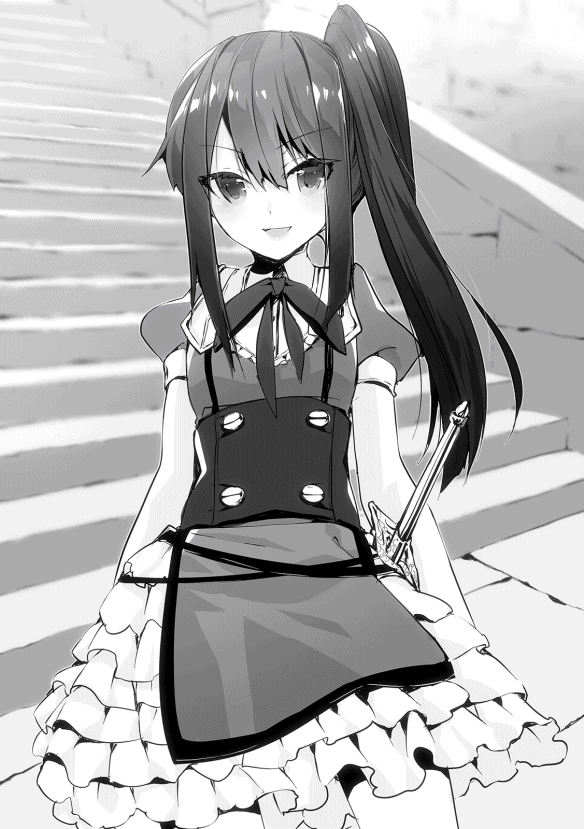
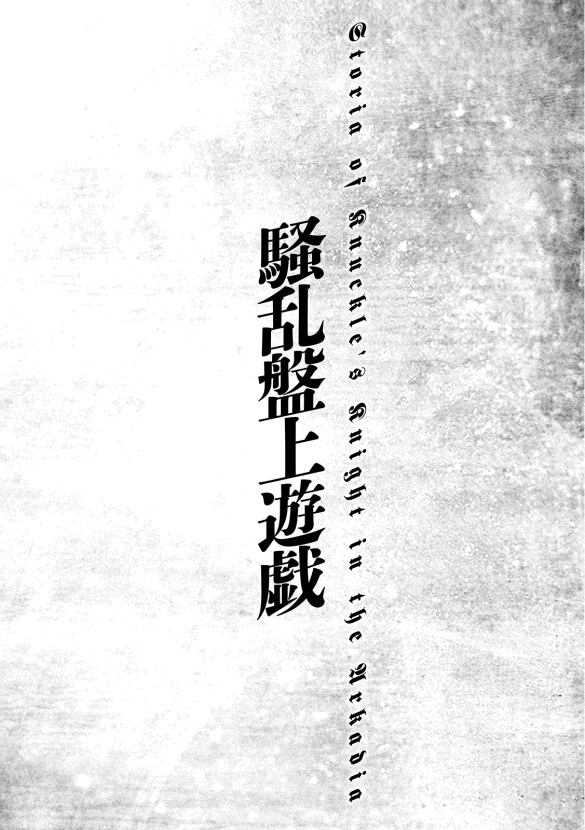
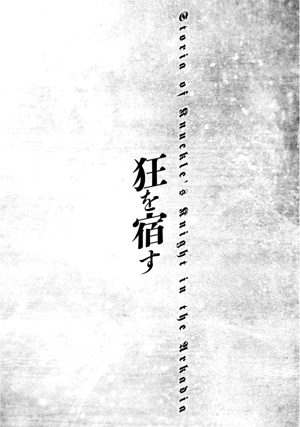

| 【合本版1-3巻】終天の異世界と拳撃の騎士 | |
| 降朗汰 | |
| TOブックス (2017) | |
※本電子書籍は「終天の異世界と拳撃の騎士」１〜３巻を１冊にまとめた合本版です。
イラスト ：218 ni-ya
イラスト協力：manyon24
デザイン ：萩原栄一（big body）
CONTENTS
このコンテンツは『終天の異世界と拳撃の騎士』１〜３巻を収録しています。

プロローグ
有海 流護 が路地裏を出る頃、辺りはすっかり暗くなっていた。
時刻はもうすぐ夜の八時。寂れた片田舎の商店街を照らす明かりはどこか貧相で、薄汚れた街灯には名前も知らない虫が群がっている。すでにシャッターの閉まっている店も多かった。
今日は金曜日なので、家路を急ぐ必要もない。
少し一休みしようと考え、潰れそうなアイスクリームチェーン店の前に設置されたベンチのほうへ向かう。
店の薄汚れたガラスに、流護の姿が映り込む。普通、と評される容姿だった。
黒く短い、飾り気のない頭髪。顔立ちはどちらかといえば女性的といわれ、背は決して高くない。当人としては常々、百七十センチは欲しいと思っているのだが、あと数センチが思いのほか伸びずに困っていた。
服装は学校帰りのため、上下とも黒で統一された、これという特徴もない学ラン。
二十人ぐらいに尋ねてみれば、三人は「かっこいい」と答え、二人は「かわいい」と答え、一人は「尻を貸せ」と答え、残りは「普通」と答えるはず。とは、部活のマネージャーの言。
だからこそ。そんな流護の両手が血にまみれているのは普通 ではないのだが、当の本人はあまり気にしていなかった。
流護はベンチに腰を落ち着け、行き交う人波を眺 める。人通りはさほど多くない。
足早に通り過ぎるスーツ姿の大人、談笑しながら歩く学生たち。見慣れたというよりは見飽きたといってもいい、いつも通りの光景。何も感じない風景。
「あ。流護。なにしてるの？」
そこで不意に、横合いから声をかけられた。よく知る少女の声だった。
流護は人ごみをぼうっと眺めたまま、相手のほうも見ずに受け答える。
「いや、『アンチェ』でクソ突進ばっか繰り返してくるキマイラについて考えてたんだ。彩花 はどう思うよ？ 俺はあれ、調整ミスじゃねえのかと思うんだけど」
「ああそう。引きつけてステップでいいんじゃない？ 私なら、まず近接武器で行かないかな」
少女こと彩花はどうでもよさそうに答え、流護の隣へと腰掛けた。
『アンチェ』というのは、人気爆発中の四人プレイ対応アクションゲーム『アンチェインド』のことである。四人で協力して強大な敵に立ち向かうゲーム......かと思いきや、その真髄 は敵を倒した後に始まるドロップアイテムの争奪戦にあった。友達をなくしそうなシステムである。
流護はあまりゲームが得意なほうでなかったので、アイテムの奪い合い以前に敵がまともに倒せず、何度「もう直接殴らせろこのクソモンスター」と思ったか分からない。
「ガトリングでも使えば？ 照準合わせなくていいし」
流護は「近接武器でボコしてえんだよ」と溜息 をつき、ここでようやく彩花へと顔を向けた。
紺色のブレザーに、同じく紺色をした膝丈のボックスプリーツスカート。そんな同じ高校の女子制服に身を包んだ少女は、腰まで伸ばした艶 やかな黒髪が印象的で、小さく整ったかなり愛らしい顔立ちをしている。
が、子供の頃から一緒に育った妹のような存在。妙な感情は持っていない、と幼なじみの少年は自負している。
「で、お前は何してんだ？ こんな時間に」
「......えーと、ちょっと時間つぶし、かな」
彩花は目を逸らしつつ、どこか言いづらそうに答えた。
「あー、彼氏待ちか。金曜の夜だしな。仲がよろしいこって」
「っ、なんでそういう言いかたする......っ、あんた、それ」
不満の声を上げかけた彩花が、流護の手を見て硬直した。
「あ？ 何だよ。意外とゴツゴツしててセクシーな俺の手に見とれてん......あっ」
彼女の視線を追って、流護は思わずハッとする。
拳が血にまみれているのをもう忘れていた。すでに黒く変色して、固まりかけている。
「ケチャップです」
「ずいぶん質の悪いケチャップね。クレームつけるわ。......まったく、空手部エースの有海流護がケンカとか、なに考えてんのよ」
「絡まれたんだから、しょうがねえだろ。それとも何か、ただ一方的に殴られ続けろってのか。どんな聖人だよ。死んでしまいます。優等生の蓮城 彩花さんは言うことが違うな」
「そこまで言ってないでしょ。警察沙汰にでもなったら......」
「路地裏だから誰も見てないし、やられたヤツが通報することもない」
「なんで言い切れるのよ。誰も見てないかはともかく、やられたヤツが腹いせに通報するのはありえるでしょ？」
「んー......仮にあったとして、少なくとも数ヶ月は大丈夫じゃねえかな」
「意味分かんない」
喉と指を潰しておいたから、と言うのはやめておいた。
「だいたい、流護に万が一のことがあったら......」
「ねえよ」
「なんで言い切れるの、そんなこと」
「ねえもんはねえ。今回は三人だったけどな。これが三十人同時でも、負ける気はしねえ」
油断はしないが、警戒もしない。例えば今回の相手。
そもそもろくに鍛 えていない、枯 れ木のような細腕で何をしたかったのかも不明だが、腰履きしてずり下がったズボンと、踵 を踏み潰して履いた靴では、まともな蹴りひとつ出すことはできないのだ。連中は暴力の匂いを振り撒いて街を闊歩 しているように見えて、「実はケンカなんかできません」と公言しているに等しい。
実際のところ、あの程度の相手であれば、本気で三十人を相手にしても勝てると流護は踏んでいる。
（前、たまには違う服着るかと思って似たような格好してみたら、ロクに走れもしなかったんだよな......。あいつら、普段どうやって活動してんだよ）
やり合うどころか、まともな運動すら怪しい。適度に逃げを交えつつ、各個撃破でいける。うん間違いない、と空手使いの少年は内心で鼻息荒く頷いた。
「っつーか、俺のこたあどうでもいいだろ。お前、彼氏いるんだしさ」
「彼氏がいたら、流護の心配しちゃいけないの？」
「なぁーにが心配だ、俺のカーチャンかお前は。例えば俺に彼女がいて、その彼女が他の男のことばっか心配してたら、俺なら嫉妬するけどな」
「それは流護の場合でしょ？ 先輩はそんな人じゃないもん」
「おおーっと、何ナチュラルにノロケ入ろうとしてんだ。もうさっさと行け、おら」
しっしっ、と流護は手で追い払う仕草を見せる。
「だからなんでそういう言いかた......っ」
抗議の声を上げかけた彩花が、おもむろに携帯電話を取り出した。着信音は鳴らなかったので、マナーモードにしているのだろう。メールだったようで、目を通すや否や、慌しく立ち上がった。
「じゃあ私、行くけど」
「あいよ。ぐっない」
「............」
立ち上がった彩花は、しかし動こうとしない。
「ん？ どした」
「......ねえ。明日って、ひま？ 時間、作れない？」
「え？」
唐突な申し出に、流護は少し戸惑った。こんなことを言われたのはいつ以来だろう、と。
「いや、誘う相手が違うんじゃねえのか。まあ暇っちゃ暇だけどさ」
「そっか。分かった」
流護のほうを見ずにそっけなく呟いて、彩花は歩き出した。長い黒髪がふわりと風になびく。その後ろ姿はあっという間に人ごみへ紛れ、消えていった。
「なんだってんだ。......あっ」
結局、明日はどうするのだろうか。聞きそびれてしまった。まあ用事があるなら、電話のひとつでもかかってくるだろう。
あまり深く考えないことにし、一人残された少年は深々と溜息をつくのだった。
閑静 な夜の住宅街をぽつりぽつりと照らす街灯の光は、月が出ていないこともあってか、寂しさをより際立たせているようにも見えた。
軽自動車がすれ違うにも苦労する狭い舗道を歩き、どこからか響いてくる犬の遠吠えを聞きながら、今にも潰れそうな木造の一戸建ての前へと到着する。
と同時に、流護は靴裏にぐにゃりとしたものを感じた。犬のフンだった。
「ノォ......」
見なかったことにして、立て付けの悪くなった玄関の戸を引き開ける。鍵がかかっていないことは分かっていた。そのくせ、誰もいないことも分かっていた。
『......以上のことからも分かるように、失踪から十四年が経った今でも、岩波教授の説は支持されているのですね。つまり......』
散らかった居間のテレビはつけっぱなしで、電気もつけっぱなし。窓も全開。いつものことだが、よく考えたらこの物騒なご時世に大したものである。いや、むしろ人がいるように見え、高い防犯効果を期待できるかもしれない。
『ニュートリノがどうたらこうたら』とよく分からないことを垂れ流しているテレビを消し、どっかとソファに腰を下ろす。それが合図だったようなタイミングで、玄関の戸を開ける音がした。続いて鳴り響く、ドカドカとした無遠慮 な足音。
「おーう、帰ったか流護」
現れたのは、見た目にもごつい大男だった。
精悍な顔つきだが、だらしなく伸ばした無精 ひげ。流護とは真逆の、無骨 で大柄な体格。上は白いＴシャツ一枚に、下は迷彩柄のミリタリーパンツ。森の中で遭遇 したら何の特殊部隊かと思うような男が、堂々とした足取りでリビングに入ってきた。自動小銃でも持っていれば完璧だろう。
そんな相手へ、流護はソファに沈み込んだままだらけた声を放り投げる。
「早えな。テレビぐらい消して出ろよー、親父」
「おう忘れとったわ。それより流護、お前──」
珍しく真剣なトーン。真面目な話でもあるのだろうか、と思う息子だったが、
「犬のクソ踏んだろ」
「落ちてるの分かってて放置したのか、この親父......」
「いや、お前が片付けるかなと思って......」
「なぜそう思ったのか」
「じゃあ今度から、最初に踏んだ人間が片付けることにする。これ家訓な」
「見つけたらじゃなくて踏んだらかよ。もう親父の靴の裏に塗りたくっとくわ」
結局、いつも通りの馬鹿みたいな会話だった。
「そういや流護よ、最近は彩花ちゃんどうしたんだ？」
「何が？」
「ちょっと前はいっつも一緒だったろうが。結婚の約束してなかったか？」
「いつの話だよ。忙しいんじゃねえの、色々と」
「ふーん。いいからたまには連れてこいよ。お前の事情はどうでもいい、俺が会いてえ。もう彩花ちゃんも十五だろ。いやー、月日の流れってのは早ぇよな、高校生なんだもんなあ。あの子も、さぞイイ女になったろうよ」
「ボケでも始まったんすか、高校の入学式のときに会ってるだろ。つか、そういきなり変わる訳ねーだろ。ちなみに今の時代、十五歳相手にそんなこと言うと犯罪だぞ」
「十五ったら大人だろうによお。今の日本は甘えんだよなーっとぉ、さーて一杯やるとすっか。もう夏になるしな、冷えたビールをこう......あれ？」
これまたいつも通りに晩酌をしようと冷蔵庫を開けた父親が、ゴソゴソと物色しながら首を傾げている。
「っだよ、枝豆チャン切らしてたか......」
ぐでっとソファに沈み込んでいる流護へ、放物線を描いて小銭入れが飛んできた。
「悪ぃが、ひとっ走り頼むわ」
息子は溜息をつき、渋々といった様子で立ち上がるが、別にこれもいつものことなのだった。
犬のフンはなくなっていた。
何だかんだ、父が自分で始末していたらしい。しかし次回からは踏んだ人間が片付けると家訓に定められてしまったので、油断はできないところである。
（あれ？ じゃあ誰も踏まなかったらどうすんだ？）
などとアホなことを割と真剣に考えつつ、流護は夜の道を行く。
週末の夜とはいえ寂 れた住宅街は静かなもので、商店街方面の喧騒 とは無縁だった。
そろそろ夏本番も近いため、学ランだと夜でも少し汗ばむぐらいになってきている。いい加減に夏服出さないとな、などと考えながら、無意識かつ怠惰 に歩を進めた。
ほどなくしてコンビニに到着し、頼まれた枝豆チャンをカゴへ入れ、ついでに週刊漫画をチェックしようと雑誌コーナーの前へ行く。
「あ」
「あ」
そこで、ファッション雑誌に手を伸ばした彩花と遭遇した。
彼女は制服姿のままだった。流護も同じだったが。
「買い出しか？ ん？ あれ、彼氏の家ってこの近くなのか」
「べつに」
いや、今の質問に対して「べつに」はおかしいだろ。そう思う流護だったが、突っ込むのも面倒だったので聞き流そうとして、
（ん？ いや、まじで彼氏の家ってこんな近所なのか？）
ふと引っ掛かりを覚えた。
このコンビニは流護の家の近所でもあり、彩花の家の近所でもある。この近辺のことだって昔からよく知っている。彩花と付き合うような物好きが、こんな近所に住んでいるのだろうか。
「あ。そっか。彼氏の方が、お前ん家に来てんのか」
「え？ なんで？」
「いやほら、ここってお前ん家の近くだしさ」
「......。来てた、として......それが流護に、なにか関係あるの？」
「いや別に。なんか勝手に、お前が彼氏の家に行くもんだと思い込んでた。ってことは、おじさんとおばさん公認か？ 金曜の夜に一緒にいるの認められてんのか。やるなーおい」
「............」
なぜか彩花は押し黙った。かすかにうつむくその顔がどうしてか怒っているように見えて、流護は取り繕 うように話を変える。
「あ、ああ、そういや親父がさ、『彩花は最近どうした』とか言ってたぞ。顔見せなくなったからな、寂しがってるみてえだぞ？」
「あ、うん......」
「おう、あとあれだ。さっき聞きそびれたけど、明日って何だよ？ どうすんだ？」
「えっと......どうしたい？」
「何だよ『どうしたい』って......。そうだな、最近は稽古サボりがちだったし、トレーニングでもしようかと思わないでもない」
「そっか」
それだけ言うと彩花はそのままレジへ向かい、精算を済ませて店を出て行ってしまった。
「いや、あれ？ 会話終わってなくね？ なんだってんだよ、アイツは」
よく分からない。最近は、特に。
流護も定期購読している雑誌をカゴに入れ、レジへと向かう。
帰りは夜の散歩を兼ねて、来たときとは違う道を通ってみることにした。
有海流護と蓮城彩花は幼なじみである。
子供の頃はいつも一緒に遊んでいたが、中学、高校と進むにつれ、一緒にいる機会は減っていった。最後に二人で遊んだのはいつだったろうか。割と最近、二人で『アンチェ』をやった覚えもあるのだが、その程度である。今ひとつ思い出せないな、と流護は頭を掻いた。
そんな彩花に彼氏ができたのが、この春。
現在、二人とも高校一年生なので、高校に入ってすぐということになる。
彼氏はひとつ年上の先輩とのことだった。数ヶ月前に彩花本人からそう報告されたが、流護は適当に聞き流していたので、彩花の彼氏がどんな人間なのかもあまりよく知らない。見たこともない。話を聞き流していたら彩花が激怒し始めたため、そこだけはよく覚えている。なぜ怒ったのかはよく分からなかった。
元々、彩花は中学時代から人気が高かった。
一方の流護にそういう浮いた話はなく、ただひたすら部活動の空手に打ち込んでいた。
空手そのものは幼少の頃から道場に通っており、そこそこの腕前と自負していたが、高校入学してすぐ参加した県大会個人戦では準優勝。決勝戦の相手に手も足も出ずに負けてしまい、そこからしばらくトレーニングも手を抜きがちになっている。
挫折 したという訳ではないが、モチベーションが低下していた。目標が持てず、宙ぶらりんな状態。
「............」
ともすれば悪夢のように、あの巌 めいた姿が脳裏をよぎる。とても高校生のものとは思えない、鍛え抜かれた頑強な肉体。野に生きる獣じみた、鋭い眼光。
『噂は聞いている、有海流護。俺の技が当たるのかどうか。正直、震えているよ』
......完敗だった。
まず腹部に受けた、剛槍 さながらの一打。それで流れを掴まれてしまい、最終的には上段廻し蹴りを受けて試合終了。あっという間、立て続けにポイントを奪われた、と聞いて いる。気絶した訳でもないのに、記憶があやふやになっているのだ。高校入学早々、初の大きな舞台に緊張もあったのだろう。しかし何より、その完膚 なきまでの敗北を、心が忘れたがっているかのように。
そんな状態ながら一方で、今もはっきりと脳裏の片隅に刻まれている断片的な光景。近い床。いつの間にかついていた手と尻餅。目の前で自分を見下ろす、岩壁のような武人とその眼光。
男の双眸 に勝利の歓喜といった情は宿っておらず、試合が終わってなお一片の隙すら存在してはいなかった。
例えばあそこで、立ち上がった流護がいきなり突っかかっていくようなことがあったとしても、あの男は顔色ひとつ変えずに対応したことだろう。そして有海流護に、二度目の敗北を容赦なく味わわせたことだろう。
そう思わせるほどの迫力、雰囲気、そして本物の強さを、あの空手家は身に纏 っていた。
（あいつにしてみりゃ......俺との試合は、とんだ期待外れだったろうな）
今以上の練習を重ねたところで、あの化け物に勝てるかどうか分からない。じゃあどうしようか、と。それで最近は、少しガラの悪い連中に絡まれただけで相手を路地裏へ誘導し、夕方のような事態になることも少なくなかった。
ただの弱い者いじめ、憂 さ晴らしだと分かっている。言いがかりをつけてきたのは向こうで、こっちは自分の身を守っただけだと心の中で言い訳して。彩花の言う通り、いつ警察沙汰 に発展してもおかしくないはずだった。
あの幼なじみの少女は将来、料理関係の仕事に就くことを目指している。彼氏も同じ目標を持つ人だと言っていた。あのときは聞き流していたが、そこだけは覚えている。
彩花は昔からそうだった。しっかりと目標を持ち、何でもこなす要領のいい優等生。それが周囲からの評価。
流護は、将来のことなど考えたこともない。勉強ができる訳でもない。唯一の特技といえる空手すら、今は空回りしている状態。
「......くそっ」
そんなことを考えていたら、苛立ちに思わず足が止まりかけてしまった。
ばったりと顔を合わせたせいか。幼なじみのことが、なかなか頭から離れない。
（ほんっと、立派になったもんだよ。一丁前に彼氏なんか作って、あの泣き虫だったアイツが......）
ふん、と鼻息ひとつ。
「............」
自らの右手に、視線を落とした。
鍛錬によって分厚く変形した、己の拳。
空手を始めた切っ掛けは、ほんの些細なことだった。
近所の悪ガキにいじめられていた彩花を、助けてやりたくて。
本当に、今になって考えれば笑ってしまうほど単純で、少し恥ずかしい動機。
（もう、俺が守ってやる必要もねえってことか......なんつってな）
それどころではない。目標を決めてしっかり邁進している彩花と、やりたいことも定まらずふらふらしている流護。いつしか、そんな対比的な構図になっている。
（はっ......何だってんだよ、この差は）
劣等感を覚えた少年は真っ暗な夜空を見上げ、心を落ち着けるべく深呼吸する。そしてまた、歩き出す。
そうして無心で歩くうち、そのＴ字路に差しかかった。
家屋の少ない区画。コンクリートの高い塀に囲まれた家々と、膝まである草の生い茂った空き地の割合は、およそ半々といったところか。
曲がり角の先に、自然と顔が向く。距離にして百メートルもない。ここからでもかすかに見える、有海邸とそう変わらない一軒家。蓮城家。彩花の家。
（そういや、おじさんとおばさんは元気にしてんのかな。最近は全然会ってないけど）
そんなことを考えた瞬間、
「あっ。明日、って」
唐突に、流護は思い出した。
明日は、町内の夏祭りだ。何だかんだで毎年、彩花と一緒に行っている。
去年もちょうどここで合流し、一緒に向かっていた。たくさんの人出で賑わう中、浴衣姿のやたら可愛い子がこっちに来ると思ったら彩花だった、と損した気分になったのを覚えている。
「それで明日、暇か......って訊いてきたのか」
去年はあまり屋台を回れず、次こそはちゃんと回ろう、などと約束したことを思い出す。
（っだよ。それならそうとハッキリ言えばいいだろ。つうか、今年からは彼氏と行きゃあいいだろうに）
そう思う幼なじみの少年だったが、何か事情があって一緒に行けないのかもしれない。
「ちっ......」
舌打ちしながら携帯電話を取り出し、カチカチとメールの文面を打っていく。
『そういや明日祭りだっけか。一緒に行くか？』
彼氏と一緒にいるかもしれないところへ連絡するのは少し気が引けたが、ひとまず送信......したと思いきや、電波が圏外になっていた。
（あーもう、こんだけ開けた場所で圏外はねえだろ、これだから田舎は──）
などと思いながら、流護は顔を上げる。
見渡す限りの草原が、広がっていた。
第一章 異郷の出会いたち
「............あ？」
半開きになった流護の口からは、ひどく間の抜けた声が漏れていた。無理もない。
自分は住宅街のＴ字路にいたはずだ、と。
それが、見渡す限りの草原。広大な緑の群れは青白い月明かりに照らされ、地平線まで延々と続いている。
ぽつぽつと申し訳程度に細い木々も見えはするが、あるのは基本的に、ただひたすらの草の波。膝丈のそれらが大地を埋め尽くし、風に洗われるままにそよいでいる。
「......いや、は？ え？」
地平線から上は、青みがかった黒。時間が夜であることは間違いない。
では、場所はどこなのか。住宅街の近くに、こんな場所はあったか。あの近辺のことなど、昔からよく知っている。考えるまでもない。
左右、百八十度。眼前にあるのは、青白く彩 られる草の海だけ。
流護は手にしたままの携帯電話を確認する。買い物袋がなくなっていたが、そんなのは瑣末事 だった。
液晶画面に表示された日付、時間ともに異常はない。しかし電波だけが圏外となっている。
それにしても月明かりがやけに眩 しい、と感じた。やたら青白い光が液晶に反射して、見づらく──
（眩しい......月明かり？）
そこで思い出す。学校からの帰り、月が出ておらず住宅街が寂しく感じたことを。今になって月が出てきたのかと考えて、流護は夜空を見上げた。
「────────」
絶句した。
月。とてつもなく巨大な月が、空を覆 っている。
それも、ただ巨大などという規模ではない。夜空の闇と覇権でも争っているのかと思う大きさ。すぐにでも地表へ激突してしまうのではないかと危惧する大きさ。鈍く輝く絶大な球体が、夜空の四割近くを埋め尽くしている。
「............」
流護の思考というものが完全停止してしまったところへ、
「あの、なにしてるんですか？」
小さく、窺うような声が届いた。高くか細い、少女の声。
呼ばれたというより、ただ声に反応する形で、流護は振り返る。
さざめく夜の草原に、一人の少女が立っていた。
あまりに青く明るい月光のため正確な色は分からないが、おそらく栗色だろう長い髪。年の頃は、流護とそう変わらないはずだ。大人しそうな雰囲気で、地味系少女とでもいうべきか。これもワンピースというのか、上衣とスカートがひと続きとなった、飾り気のない質素なデザインの服を着ている。おそらく普段着だろう。
おそらく、だろう、という表現が連続するのは、あまりに少女が現実離れした格好をしているからだ。
歴史や美術の教科書に載っている、中世欧州の農民のような服装だった。
「......あの......？」
黙ったまま見つめてくる相手を不審に思ったのだろう、少女の声音に警戒の色が混ざる。焦った流護は、何も考えず反射的に喋り出した。
「なっ、何コレ」
「えっ......？」
当然というべきか、彼女の警戒も深まる。すい、と一歩後ろへ引かれてしまった。
落ち着け。落ち着いて、状況を分析しろ。空手で培 った平常心を保つ胆力は、この局面において無駄ではないはずだ。と、流護は深呼吸して自分に言い聞かせた。
理解できない状況に陥 ったとき、無理に脱しようとするよりも、まず何ができるのかを考えよ。幼少の頃から通っている道場で習った言葉である。
「いや、えーと、道に迷っちゃったみたいで。ここは、どこなんすかね？」
「......こんな時間に、ですか？ ここは、サンドリア平原ですよ。すぐそこに街道があります。というより、街道に出ましょう。このあたりはコブリアもいますし、危ないです」
どうにか維持しようとした流護の平常心は、あっさりと瓦解 しかかった。
（今、何て......？）
よく分からない横文字が混ざりまくっていなかったか。
少女のおかしな格好。横文字。
以前、テレビのオカルト番組で見た覚えがある。気がついたら、ありえない長距離を移動していたとかそういう話を。あれは確か、霧に包まれ、七千キロも離れた場所に一瞬で移動したなどという内容だった。流護は霊や超常現象の類を全く信じていないほうでもない。ロマンがあると思う。しかし、自分で経験したことはさすがになかった。
「えと、とにかく。危ないですし、そこの街道まで出まし──」
そこで、少女の声を遮 る異音が混ざった。
ガサガサと、何かが草間を蠢 く音。キーキーと、何かが発する奇妙な声。
「ひっ」
少女の顔色が蒼白に変わる。草むらをかき分けて、ソレ が姿を現した。
「──は？」
少女だけではない。ぞくり、と。流護は、己の体温が下がったのを自覚した。
その体長は四十センチほど。体毛は黒に近い茶色で、分類としては小動物といえるだろう。
しかし、異様なのはそこからだ。不器用ながらも二足歩行し、キーキーと喚 きながら、しかし人間とは似ても似つかぬ大きく裂けた口で笑みのような表情を見せ、顔の上半分を占めるほど大きなギョロリとした目がふたつ。
ただ一言、薄気味悪い。そうとしか表現できない生物が、草葉の隙間から流護たちのほうを窺っていた。
「やっぱり、コブリアがっ......」
消え入りそうな、少女の怯 え切った声。
コブリアなんて名前の生き物は聞いたこともない。最近は珍しいペットを飼ってみたものの、世話をし切れずに捨てる者も多いと聞く。流護は少なくとも、こんな気味の悪い生き物を飼ってみたいとは思わなかった。
この生命体は何なのか。それはよく分からないが、しかし今、確実に分かることがあった。コブリアと呼ばれたその存在が、何をしようとしているのか。大きすぎる裂けた口が見せる、背筋の寒くなるような笑み。そこから覗く、びっしりと生え揃った鋭い牙。凶悪にすぎる、その姿。
コブリアなる生物は、少女のほうにグリンと顔を向ける。
「い、やっ......！」
それが合図だった。
嬉々とした邪悪な笑みを浮かべながら、コブリアは少女に飛びかかった。それはまるで、放物線を描くボールのように。
刹那 、地面が爆裂した。
蹴りつけた大地が、草の波を散らす。その一足の踏み込みで、流護はおよそ四メートル近くあったはずのコブリアとの距離をゼロにした。
続く、パァンという快音。素早く、しかし丁寧に繰り出した右中段突きは、小さな怪物を竹トンボさながらに弾き飛ばす。飛びかかった以上の距離を軽々と滑空したコブリアは、放り投げたゴミのように大地へ打ちつけられた。
「......っ、ふっ......」
その額には、珠 のような汗が浮かんでいる。突き出したままの右腕は、かすかに震えている。どっしり構えたはずの両足は、膝が笑っている。
咄嗟 。ただ咄嗟の行動だった。このままでは少女が危ないと思った。次の瞬間、流護の身体は突き動かされるように動いていた。
ギィ、と濁った鳴き声が上がる。見れば、身を起こすコブリアの姿。しかしこちらに向かってくることはなく、小走りで遠ざかっていった。
「っはあっ......！」
ここで流護は、ようやく大きな安堵 の息を吐く。目測を誤ったのか、思った以上に踏み込んでしまい、手打ち気味の腰が入らない拳になってしまった。が、追い払えただけで上出来とすべきだろう。残心の動作を取ることも、すっかり頭から抜け落ちてしまっていた。
「す、すごい！ なんですか、今の！」
軽く飛び跳ねる勢いで、少女が感嘆の声を上げる。
「だ、大丈夫か......？」
対する流護は、辛 うじてといった体で絞り出す。
「はっ、はい！ これもイシュ・マーニのお導きですね。あっ、もちろんあなたにも感謝を！」
「そ、そりゃ......よかった」
安堵しつつ一歩、はしゃぐ少女のほうへと踏み出す。
（......？）
違和感。
あまりに必死だったためか、ここで初めて気付くこととなった。
（身体が......軽い？ 立ちくらみ、か？）
何というか、身体が浮ついて落ち着かない。とはいえ、こんな状況である。眩暈 のひとつ起こしたっておかしくはない。
そう、流護は自分に言い聞かせることにした。
最初は三百六十度どこまでも草原が続いているのかと思った流護だが、立ち尽くしていた場所の後ろには、なだらかな丘や小さな池、小規模の森が遠く見えていた。
結果として助けることになった農民風の少女に連れられ、開けた街道へと出る。
（って、これが......街道？）
草のない土の大地に、ただ踏みならしただけの跡が前後に延々と続いているだけのものだった。コンクリートやアスファルトといった、整備された硬そうな灰色はどこにも見られない。
（いやいや、今の日本にこんな場所があるかっての......）
となると、やはり──
「......えーと、訊きたいことがあるんだけども。それも結構たくさん」
「あ、は、はい。でもここだと危ないですし、落ち着ける場所にいきましょう。ん、小屋まで戻ろうかな。こっちです、ついてきてください！」
そうして四、五分は歩いただろうか。林というほどの規模でもなく木々が乱立する街道の外れに、強すぎる月明かりに照らされてなお見落としてしまいそうな、こぢんまりとした小屋が建っていた。すぐ脇には小さな畑があるようだ。
「狭いですけど、どうぞー」
勧められるまま、その小屋へと入る。やや埃っぽく、狭い、という彼女の言葉は謙遜 ではなかった。
壁に立てかけられた鍬 や鎌などの農具。隅に積み重ねられた藁 の束。部屋の中央に置かれた木製のテーブル。その上にはファンタジー系のゲームで見かけるようなカンテラ。テーブルとセットになって置かれた質素な造りの椅子。
（......って、え、カンテラ？ だよな、これ？ リアルで使ってんのか？）
訝しく思いつつ、釣られるように天井へと目を向ける。そこに、照明器具の類は見当たらなかった。
まさか今の時代、電気が通っていないということもないはずなのだが──
「どうぞ、座ってください。それで、ききたいことがあるんでしたよね。道に迷ったんですよね？ このあたりの人じゃないですよね、見かけない服ですし。長い旅ですか？ あ、行き先はレインディールのお城じゃないですか？ 姫さま、お美しいですからね！ いやでも、個人的にはベルグレッテさまもおすすめ！ 美人だしカッコイイですし！」
「いや、さ......」
薄々思っていた流護だったが、それでも訊かねばならない。
「ここは......日本じゃないのか」
「ニホン？ ってなんですか？」
一瞬で数千キロも移動してしまうというオカルト。見知らぬ場所へ放り出されるという怪異。実際に自分の身に起こったとして、まさか日本を知らない人間がいる外国に飛ばされるなんて──と考えかけ、そこで思い至った日本人の少年は思わず前のめりに叫ぶ。
「いやいやいや！ 日本語喋ってるじゃん！」
「ニホンゴ？ ってなんですか？」
「そうくるんすか!? 」
椅子からずり落ちそうになるのを必死で堪える流護だったが、続いて放たれたのはトドメを超えたオーバーキルの一撃。
「今夜のイシュ・マーニは、いつも以上にお美しいですけど......やっぱり、部屋の中だと少し暗いですね。よっ、と」
少女は何も持たない手から生み出した炎で、カンテラの蝋燭 に火を灯した。
「........................」
「え？ な、なんですか？」
流護は無言で少女の手をまじまじと凝視する。やはり、その小さな手には何も握られていない。マッチやライターはおろか、何も持っていない。
「ど、どうしたんですか？」
無遠慮な視線を受けてか、彼女は恥ずかしそうな表情を浮かべ、両手を後ろに隠してしまった。
「......あ！ ヘタクソだなー、とか思ったんでしょ。どうせ私は初級の神詠術 しか使えないですよーだ！」
うん。何か拗 ねてるっぽいのは可愛らしいんだけど、何を言ってるか全然分からないんだ。と、涙しそうになる流護だった。
外国ならまだましだったのだろうか。言葉が通じる分、こちらのほうがましなのだろうか。
とにかくもういい。異世界召喚モノのファンタジーでよく見る手法を、まさか自分が実践することになるとは思わなかった。さあ、始めよう。と、流護は覚悟を決める。
「ええとだな。俺さ、実は記憶がないんだ」
「ええっ！」
少女も相当驚いたようだが、今の自分ほど驚きと混乱真っ最中 の人間はいない、と日本人の少年は自負する。それでもこんな状況の中、落ち着いているほうだろう。褒めてもらいたいぐらいだった。
「それじゃあ、名前とかも......？」
「名前は有海流護だ。よろしくな！」
都合のいい情報は出していく。逆になんかもうテンション上がってきた、と勢いに乗る。
「アリウミリューゴさん？」
「流護でいいぞ」
「わかりました、リューゴさん。あっ。私は、ミネットです。ミネット・バゼーヌ」
「ミネットか。ステキな名前だな！ ハハハ！」
「はっ、はぁ」
ちょっと引かれた。それはともかく、彼女はやはり当然のように外国人ライクな名前をしていた。
「で、だ。俺、記憶がないからさ。当たり前のことを訊きまくってしまうかもしれない。そこは了承してほしい」
「はっ、はい」
ピン、と背筋を伸ばすミネット。
「ええと。ここはどこなんだ？」
「はい！ レインディール王国領、サンドリア平原です！」
うむ。元気があってよろしい。あと全然分からん。
そう挫 けかける流護だが、めげてもいられない。果敢に喰らいついていく。
「ええとだな......なんつうかな。領土？ とかじゃなくて、もっとデカい規模でここどこっていうか、世界っていうか」
「き、記憶がないんですものね。わかりました。えーとですね」
緊張した面持ちで、ミネットは息を吸い込んだ。
「私たちが住んでいるこの世界は、『グリムクロウズ』と呼ばれています。創造神ジェド・メティーウのご加護のもと、私たちは日々を暮らすことが許されているんです」
やはり、地球ですらないのだろうか。さすがに信じられるものではない。
「うーん。さっき外で襲ってきたアレは？」
「......コブリアですね。さっきは本当に、ありがとうございました......」
思い出したのか、ミネットの顔が少し青ざめる。
「コブリアは、このサンドリア平原一帯で多く見かける『怨魔 』です」
「おんま？」
やけに日本語チックな響きだった。
「怨魔は他の動物と違って、著しく人に危害を加える危険な生物のことです。学者さんたちも日々研究していて、補完書に記録されて細かくカテゴリー分けされていますが、あまり研究が進んでいるわけではないそうです......。最高ランクのＳから、最低ランクのＥまで。コブリアは一番低いＥですけど......それでも、私みたいな平民の手には負えません」
『怨魔』という日本語風の言い回しかと思えば、『ランク』や『Ｅ』なんて単語も平然と出てくる。
「あれって、そんなにやばいヤツなのか？ なんかゴミみたいに飛んでったけど」
「いやいやいや、リューゴさんがすごいんですってば！」
確かに見たこともない生物であるうえ、姿も薄気味悪く、あの牙で噛 みつかれたなら無事では済まなそうだ。しかし落ち着いてきた今なら、また襲われてもおそらく余裕を持って撃退できるだろう、と空手少年は考える。
「あとは......そうだな。さっき、道具とか使わないでコレに火をつけたけど......」
流護は二人の間にあるテーブル上に置かれたカンテラを指差す。内側にある蝋燭 は、細々とした火を揺らめかせていた。
「『神詠術 』です。そこまで忘れちゃうものなんですね......。神詠術 は、人が本来秘めている属性をこの世に顕現してなんとか......だっけ？ 私は学院の生徒じゃないのであまり詳しくないですけど、そんな感じに言われています。神さまが与えてくださった力なんですよ。さっきみたいに軽く火をつける程度なら、火属性を持つ人であれば誰でもできますよー」
そう言って、ミネットは人差し指の先に小さな火を灯してみせる。
「お、おおー、すげえ！」
やはりライターやマッチなどを隠し持っている訳ではない。確かに指先に、火が揺らめいている。
「わ、私はこれぐらいしかできませんけど」
流護がまじまじと見つめていると、ミネットはすぐに火を消して、手をテーブルの下へと隠してしまった。
「強力な火の『詠術士 』になると、すごい火柱とか出せちゃったりするみたいですね。とにかくリューゴさんも、忘れているだけで、なんらかの神詠術 は使えるはずです。人はみんな生まれつきひとつだけ属性を授かっていて、その属性の術を扱えますから。というか、さっきコブリアをやっつけたのが、リューゴさんの術じゃないんですか？」
流護は当然、そんなものなど使えない。
「いや、ただの素手だよ。咄嗟に殴っただけだぞ、さっきのは」
「ええっ！ 素手だけで怨魔をやっつけるなんて！ 王宮の騎士でも無理だと思いますけど。だってもうリューゴさんの動き、全然見えませんでしたもん。リューゴさん消えた！ コブリアふっとんだ！ みたいな！ てっきり、風の神詠術 を使ったのかなと」
流護は思わず自らの両手に視線を落とす。......確かに、無我夢中で大地を蹴り、あのバケモノを殴った。身体が軽い感覚はあったが、そんな魔法めいたものではない。
「でも素手だけで怨魔をやっつけるなんて、まるで『竜滅書記 』のガイセリウスさまみたい。やー、現代に転生したガイセリウスさまだったりして！」
何やら一人で盛り上がるミネットをよそに、流護は聞いた話を脳内でまとめる。
怨魔と呼ばれる怪物がいる。神詠術 という魔法めいた力がある。その神詠術 が使える人間は詠術士 と呼ばれている。このメイジという単語には、なじみがあった。ゲームや漫画などでよく出てくる、魔法使いのことだ。
「記憶がないということは、『竜滅書記』のこともお忘れでしょう、ええそうでしょうとも！ 書記に記される伝説の勇者さまことガイセリウスさまは、ときには手にした大剣グラム・リジルで、ときには素手で、怨魔たちをばったばったとなぎ倒したそうです。有名なのはやはり、邪竜ファーヴナールをグラム・リジルで退治なさったお話ですね！」
「ふーん。有名な話なのか？」
「知らない人はいません！ みんな、子供の頃にはこのお話を聞かされて育っているはずです。もちろん、リューゴさんも」
当然、流護は知らない。ひとまず、ミネットがその話をえらく好きだということは充分伝わってきた。
「ん？ ところでさ、みんな生まれつき神詠術 だかが使えるってことは、つまり人はみんな詠術士 ってことになるのか？ 人、それ即ち詠術士 である、みたいな」
「いいえ。公的機関で検査を受けて一定以上の『魂心力 』が認められないと、詠術士 にはなれないんです。魂心力 っていうのは、人が生まれつき持っている内側の力......？ みたいなものだそうで。私は検査の結果で魂心力 がやたらと少ないことが分かってしまって、詠術士 にはなりたくてもなれないんです。初級の術しか扱えないのも、そういうことです......」
説明しながら、ミネットはしゅんとしてしまう。この世界では強い魂心力 を持って生まれ、詠術士 となって優れた神詠術 を扱える者が勝ち組、ということなのかもしれない。
「なるほどな、ううむ。詠術士 なら、俺を何とかできたり......とか、しねえかなあ」
「う、うーん。どうでしょうね」
とりあえず、ミネットからは帰るためのヒントになるような話は聞けそうにない。
確かなのは、こんな実在するなんて夢にも思わないファンタジー世界に来てしまったことだけだ。
（いや、実はまじで夢とかさ......）
目の前で揺らめくカンテラの炎も、埃っぽい小屋の匂いも、目の前にいる西欧農民風の少女も、夢。
（リアルな夢だな、ははは）
流護は気分を変えようと伸びをして、何気なく窓の外を眺める。
「おう、それにしてもさ。月、デカいねえ」
「つき？」
「ああ、月。デカすぎだろ、いくらなんでも」
「つ、き？ って、なんですか？」
「え？ いや、月は月だけど。思いっきり出てんじゃん。やたらデカいあれ」
どこへ指を向けても照準が合わさるだろう、あまりに巨大な天体を指し示す。と、
「そっ、そんなふうにイシュ・マーニを指さしてはいけません！」
「な、なんだあっ」
予想外のミネットの剣幕に、流護は思わず怯んでしまった。
「あの夜空に御座しますのは、イシュ・マーニです。夜になると私たちを見守ってくださる、夜の女神さま......」
ミネットは巨大な月に向かって目を閉じ、胸前で両手の指を組み合わせた。
青白い月明かりに照らされて祈る少女の姿はあまりに幻想的で、あまりに美しく。流護は思わず、ハッと息を飲んでしまった。
彼女から慌てて視線を逸らし、現代日本の少年は考える。西洋中世ファンタジーめいた世界。神。月という概念はないようだ。となると、太陽も同等だろうか。
しかし、無理はないのかもしれない。現代日本で生まれ育った流護はともかく、本当に何の知識も持たない人間は、空に浮かぶ太陽や月を見てどう認識するのだろうか。神だと考えても何の不思議もない気がした。
「んー？ じゃあ、月明かり とか月光 とか言っても通じないのか......」
「つき、明かり？ 激昂 ？」
祈りを終えたらしいミネットが反応する。
「あ。つき って、『白曜 の月』とか『浄芽 の月』とか、そういうことですか？」
「いや何言ってんだか全然分からん」
「......あの、疑うわけじゃないんですけど。つき、とか......さっきも、ニホン？ とか言っていましたよね。なにか、覚えてることがあるんじゃないんですか？」
「ん？ そうだなあ」
周囲の漆 黒 を感じさせない光を放つ、巨大な月──イシュ・マーニとやらを眺めながら、流護は溜息をつきつつ答える。
「元の居場所に戻るのは大変そうだな、って思ってさ」
「答えになってませんよね、それ」
◇
まぶた越しに眩しい陽射しを感じて、有海流護の意識が覚醒 する。
目を覚ますとそこは見慣れた自分の部屋で、昨夜の出来事は全部夢だった。
......などということはなく。まず目に入ったのは、テーブルの対面で自分の腕を枕にして、すやすやと寝息を立てるミネットの姿。流護も、いつの間にか眠ってしまっていたようだった。
部屋に差し込んでくる日の光は、地球の人類がよく知る太陽のそれだ。月と違い、その大きさも異常なものではない。もっとも、太陽のサイズが大きかったり小さかったりしようものなら、その惑星に住まう生物に甚大な影響を与えるはず。地球とは似ても似つかない環境になるのではないだろうか。
（まあ、とりあえず太陽は普通でよかった。いい天気じゃねーか。さて、この太陽は何て呼ばれてる神様なのかね......）
我ながら落ち着いているほうだ、と流護はしみじみ思う。空手で平常心を保つ訓練をしていたことも要因だろう。しかし起きた出来事があまりに現実からかけ離れすぎていて、精神状態が驚きから一周して正常に戻ってきたというのが正しいかもしれない。
「......あ。お、おはようございます......」
そこで身体を起こしたミネットが、目をしぱしぱさせながら流護に声をかけてきた。
「おう......えっと、おはよう 」
この世界でも「おはようございます」でいいようだ。寝起きの顔を見られて少し恥ずかしそうにしているのも、流護がいた世界の......地球の女性と同じような反応に違いない。
「も、もうすっかりインベレヌスもあんな高みに御座 しますね」
ミネットは窓の外を見上げ、天気と同じような明るさで言う。
（はー、太陽はインベレヌス、っていうのか。てこたやっぱ、日の光 とか言わないのかな）
などと思いつつ、流護はさらりと単語を投げかけてみる。
「いい天気 だなー」
「はい！」
これは通じるらしい。色々と言葉遊びをしてみたい気もするが、意外な単語が通じなかったりしそうだ。また変に疑われかねない。
「リューゴさんは、これからどうするんですか？ 私はちょっと、ブリジアの街に寄る用事があるんですけど。それでですね、あそこならリューゴさんの助けになってくれそうな人に心当たりがあるんです。すごい詠術士 の人なんですよ。一緒に行ってみませんか？」
「ほうほう。そうだなあ......」
記憶喪失は真っ赤な嘘だが、そもそもこの世界で行く宛てなどない。それに詠術士 に会えば、日本へ戻る手がかりが何か掴めるかもしれない。考えるまでもなさそうだった。
「よし。一緒に行ってみるよ」
明るくなってから外に出て、ようやく日本と全く違う場所であることをはっきりと認識した。
抜けるような青すぎる空。見慣れない草花。遠く見える森を成す木の形状。どれも日本ではお目にかかれないものだった。外国なら、こんな景色も見られるかもしれない。しかし昨夜の巨大な月や怪物となると、やはり地球では考えられないものだろう。
「それじゃあ、行きましょうか」
「そいやあさ。昼間は安全なのか？ 昨日のコブナントカみたいなのとか出ないのか？」
「えと、コブリアは夜行性なので。それに夜でも、街道を歩いていれば基本的には安全です。街道や夕べの小屋には、魔除けの神詠術 がかかってますから」
「ん？ じゃあなんでミネットは昨日の夜、あの草原にいたんだ？」
「え？ いえ、夜の草原でぼーっとしてるリューゴさんを見かけたので、危ないと思って......」
それで自分の危険も顧 みず、草原に入ってきたのか。思いもしなかった考えに、流護は軽く衝撃を受けてしまった。
「......そっか。そうだな......よく考えたら俺のせいみたいなもんだ......。いや、ごめん」
「え？ いえいえ！ 守ってもらいましたし！ リューゴさん、とてもカッコよかったです！ ......あっ」
「え、そ、そうか」
「は、はい」
二人して、明後日の方向に顔を向ける。
「よ、よし。そろそろ行こう」
妙にくすぐったい気持ちに耐えられず、流護は歩き出す。
「あ、あれ。道、分かるんですか？」
「............」
まだまだ思春期の少年なのであった。
二人で土くれの街道を歩き始めてしばし。
やはり、違和感。
それは、昨夜も感じていたものだ。コブリアに放った、爆発的な踏み込みからの拳打。歩いていて感じる、浮遊感のようなもの。異常な状況に、身体が浮ついているのかと思っていたが──
「そういえばミネットってさ」
「はい。なんでしょう？」
「体重何キロ？」
「なっ、女の人にそういうの聞くのって、どうかと思いますけど！」
好感度が下がった。やはり女性の扱いに不慣れな思春期の少年である。
「あ、い、いや。そういうつもりじゃないんだ。......んー、どっかで量れないか？ 体重」
「......そんなに私の体重が知りたいんですか？」
好感度、絶賛降下中。
「いや違う違う。知りたいのは俺の体重なんだ」
「はぁ。体重ぐらい、街で量れると思いますけど......」
不審そうな視線を向けるミネットだった。当然である。そうこうしているうちに、
「あ、見えてきましたよー。ブリジアの街」
「おおっ」
丘の下にまず、石造りの巨大な壁が見えた。高さは五メートルほどだろうか。その灰色の壁が、教科書や映画でしか見たことのない中世欧州風の街並みをぐるりと囲んでいる。延びる石畳の道、回る巨大な風車。ミネットと同じような格好をした人々の姿が、この位置からでもちらほらと垣間見える。あそこに見えるのはゴシック建築の建物──だったろうか？ もう少し真面目に授業を受けておくべきだったなあ、と流護は後悔した。
それらの景観が見えてきはしたものの、到着まではまだしばらくかかりそうだ。広大な平原にもほどがあると思う。建物や何やらが所狭しと密集している現代日本ではまずお目にかかれない、美しく雄大な景色だった。
「にしても、でっかい壁だなー。あれはやっぱ、怨魔から身を守るためなのか？」
「そうですね。怨魔だけじゃなくて、山賊なんかもいますしね。街に入るには、北と南にある門を通る以外にありません。怪しい人は、兵士の人に止められますよ」
（山賊までいるのか......）
さらっとしたミネットの発言に、流護は内心でギョッとする。
しかし、考えてみれば当然かもしれない。太陽や月の概念がない文明レベルなのだ。身を守る術 や法が確立されているとは考えにくい。となれば当然、欲望のままに悪事を働く人間も多いだろう。現代の日本が、いかに治安のいい国であるか分かろうというものだ。
街が見え始めてから延々十分ほども歩き、ようやく門の前にたどり着いた。
いざ目の前に迫った外壁は、仰ぎ見れば思った以上に高い。街の出入り口となる巨大な扉は開け放たれているが、脇に銀色の鎧を着た強面の兵士が立っている。その手に携えた長槍は、決して飾りではないはずだ。穂先がギラリとした凶悪な光を照り返している。日本の少年からしてみれば、本当に映画か何かとしか思えないような絵面だった。
学ラン姿、というこの世界には存在しないだろう格好ゆえか、兵士は不審そうな視線を流護へと投げてくる。
（あ、怪しい者じゃないっすよ。スターップ！ とか言って槍突きつけてくんなよ、マジで）
そんな懸念は取り越し苦労で、特に見咎められることもなく門を通過できた。
「はい、ここがブリジアの街です。到着ですよー」
「うおお......！」
流護の口からは思わず、感嘆の声が漏れていた。
コンクリートではない、石や煉瓦 で彩られた美しい街並み。人通りも多く、ミネットに似た服装の人々や、大きな馬車が道を行き交っていた。露店で果物を売っている中年女性。走り回る子供たち。歩道で立ち話をしている老人。全体的に、女性はともかくとして、男性は身長の高い者が多いようだ。道行く人々は基本的に皆、流護よりも背が高い。
（なんつーか、すげぇな）
活気が違う。商店街のベンチに腰掛けながら眺めた人波と比べて、皆、生き生きとしているような気がした。
「そだ。朝ごはんも食べてないですし、リンゴでも食べませんか？」
提案しつつも返事を待たず、ミネットは露店に駆け寄っていく。
「おばさん、リンゴふたつください！」
「はいよ！ ちょっとお待ちよ！」
中年女性も、やはり当然のように日本語で喋る。
「おや？ なにお嬢ちゃん、彼氏かい？ 朝っぱらからアツいじゃないの！ アツいから冷えちゃいなさい！ ほらこれ、オマケだよ！」
「え、ちがっ」
ミネットが言い終わらないうちに、飲み物の入った木製のコップを強引に渡された。荒々しく木を削って作られたような器は、氷が入っていないにもかかわらず非常に冷たい。中身は透明に見えるが、何だろうか。
「も、もう。い、行きましょう、リューゴさん」
ミネットの後ろを歩きながら、口に含んでみる。
「お、リンゴジュースか。にしても冷たいなこれ。氷も入ってないのに」
「露店のおばさんが、氷の神詠術 で冷やしてたんでしょうね。自分の得意な術を商売に活かす人は多いですから。......わ、私だって焚 き火とか得意なんですよ！ こう見えて！」
「お、おう。そうか」
少女の後に続きながら、街並みを見渡す。やけにすっきりしていると思ったが、すぐにその理由に思い至った。
（電柱がないせいだな。しかも、これ......歩道の脇には、ちゃんと下水が流れてるし）
流護はここで、世界史の授業で聞いた『ハイヒールが生まれた由来』を思い出していた。
まともなトイレの設備が整っていない時代、やり場に困った汚物が路上へ捨てられ、それを極力踏まずに済むよう、靴裏の面積が少ないハイヒールが考案された──という逸話 だ。
幸い、この世界はそういった心配をしなくていいようだと安心する。昨夜、この世界へ来る前に犬のフンを踏んでいた少年としては切実にそう思う。
「着きましたー。ここです」
そこは、石造りの無骨な建造物だった。入り口には、この建物のために誂 えたような厳つい兵士が立っている。
「......ここは？」
「兵士の人たちの詰め所です」
ここは現代日本でいえば何に相当するだろう。うん。警察。
「ミ、ミネットは俺を不審者として引き渡そうと......」
「え、ちっ、違います！ 今日はここに来られてるはずなんです。とっても頼れる、あのおかたが！」
扉を開けて、「こんにちはー」と気軽に入っていくミネットに続く。
外観に違わず、物々しい部屋だった。壁という壁に飾られた多様な刀剣類、部屋の隅に置かれた砲台の数々。部屋の中央には巨大な本棚。
その大きな棚の前にいた少女が、ミネットのほうへと顔を向けた。
「はい。どのようなご用でしょう──」
透き通るように美しい声。
刹那、流護は呼吸すら忘れそうになった。
本物の武器などお目にかかる機会もない、現代日本から迷い込んできた少年である。本来なら、壁に飾られた剣や斧の多さに圧倒されたことだろう。
しかし。今はただ、そこにいた少女に目を奪われた。
『黄金比』と呼ばれるものがある。人間が、最も美しいと感じる比率のことだ。
その黄金比をもって、緻密に人というものを創り上げたらこうなるのではないか。そんな完成形のような少女が、そこにいた。
芸術の神が自ら手がけたとしか思えない、精巧な人形のように整いすぎた顔立ち。少し気が強そうな眉と瞳は、神が加えたアクセントだろうか。黒みがかった藍色をした、腰まである艶やかな長い髪。それに合わせているのか、青を基調とした豪奢 なワンピースのドレス。この世界の知識がない流護にも、それが高価なものだと一目で分かる。その衣装が包む身体は触れたなら折れてしまいそうなほどに細く白く、しかし胸元は優美で魅力的な曲線を大きく描いていた。
まるで極限まで磨き抜かれた、極上の蒼い宝石。そんな究極の美を備えた少女が、そこに在った。
「あっ、ミネットじゃない。元気にしてた？」
「はい！ 元気でしたベルグレッテさま！」
「ふふ。ほんとに元気ねー。そちらのかたは？」
ベルグレッテと呼ばれた青く美麗な少女は、思いのほか気さくな口調で微笑む。と同時に、流護へ視線を向ける。ここで初めて二人の目が合った。
とてつもなく美しい、その薄氷色 の瞳に見つめられて。
瞬間。流護の中にある何かが、グラリと揺らいだ気がした。
「────」
一方でベルグレッテも、なぜか驚いたような顔をしている。
「......？ お二人とも、どうしたんですか？」
ミネットの声で、流護はハッと我に返った。
「え、いや。あ、えーと俺は」
動揺から、流護は躓 いてよろめいた。つんのめった。前方に吹っ飛んだ。
そしてその手は、ベルグレッテの胸を鷲掴みにしていた。
「..................」
「........................」
「....................................」
全員が沈黙した。
次の瞬間。響き渡ったのは、やんごとなき身分であろうベルグレッテの、お姫様的な悲鳴。では、なかった。
ゴッ、と横薙 ぎの一撃。
「だばぁ！」
横合いから腹へ直撃した衝撃に、流護は思わず吹き飛んだ。たたらを踏み、何とか持ちこたえる。慌てて顔を上げれば──
「なにか言い遺すことはある？ 下郎」
この状況でなお、美しい。
ごう、と猛 り狂う水流を纏ったベルグレッテ。その薄氷色 の瞳から発せられる冷酷な視線が、鋭く流護を射抜いていた。
自分が狙われていることも忘れ、現代日本の少年は見入ってしまった。ベルグレッテを守るように抱きながら、空中を流れている水の渦。すぐに分かった。これが、彼女の神詠術 なのだと。
「べ、べべべベルグレッテさま！」
ミネットが慌てて二人の間に割って入る。
「どいて、ミネット」
「違うんです！ たぶん！ りりりリューゴさん、謝って！ 全力で謝って！ 全速で謝って！ 創造神ジェド・メティーウにかけて謝って！」
「ふーっ」
流護は、今にも襲いかかってきそうなベルグレッテへと向き直る。そして顔を上げ、毅然と彼女の顔を見据えた。
「すんませんでした」
土下座した。
ひとまず一応の来客扱いということで、部屋の隅っこに移動する。
それぞれ椅子に腰を落ち着けて、今さらながらの自己紹介となった。
「あ、有海流護、です」
「ベルグレッテ・フィズ・ガーティルードです」
声が冷たいのは、どう楽観的に考えても気のせいではないだろう。
「それで？ 記憶喪失、ですって？」
心底うさんくさい、といった視線を流護に向けてくるベルグレッテ。そのジト目ですら、思わず溜息が出そうになるような気品が漂っている。
（さあ、好感度ゼロからのスタートです）
ちなみにミネットの言っていた『助けになってくれそうな人』が、このベルグレッテだった。やらかしたなんてものではない。
「はい。記憶喪失です、姫様。生まれてきてすみません」
丁寧を通り越して卑屈になった流護だった。
「いや、私は姫さまじゃないから。この国の姫さまはリリアーヌ、さま。さっきの件はともかく、ミネットをコブリアから助けてくれたことについてのお礼は言わせて。ありがとう」
「いえいえそんな！」
流護が何か言うより先に、ミネットが恐縮していた。
「それでミネットは、まーたフラフラしてたってことでいいのかな？ まったく、あなたは隙が多すぎますっ」
「う。えと、それは」
「いいえ、違うのです姫様。俺という記憶喪失のクッソヤローを気にかけて、ミネットは危険を顧みずこの俺を......生まれてきてすみません」
「いやだから姫さまじゃな......もういいわ、悪かったから......」
「すみません、すみません」
「え、えと、リューゴさんは悪くな......」
「すまぬ」
「だーっ！ もうおしまい！ 謝るのはここまでっ！」
ベルグレッテが声を張り上げる。
「さっきの件は水に流す！ はい、話を進めましょう！」
委員長のような仕切りっぷりだった。今さらだが、やたら高貴な見た目に反し、口調もくだけた印象である。
（あとおっぱいはかなり大きいです）
「......なにか？」
「何でもありません姫様！ サーッ！」
最敬礼だった。
「だから姫さまじゃないってば......」
「えーと、ベルグレッテ様だっけ？ 姫様じゃないなら、どんなお方で......」
「ベルでいいわ。みんなそう呼んでるから。ミネットは呼んでくれないけどねー？」
「いえいえ！ そんなとても畏 れ多くて......！」
「ミネットの恐縮っぷりを見るに、偉い身分のお方とお見受けしますが、ベル様」
「あなたの性格が掴めないんだけど......まあいいわ。私は『ロイヤルガード』......の、見習い。姉妹で姫さまつきの見習いとして仕えているんだけど、今は妹が担当する番で、姫さまのおそばについているから、私は学業の合間にこの詰め所で兵としての仕事をしていたわけ」
「見習いとはいっても、ベルグレッテさまとクレアリアさまこそが正式なロイヤルガードになる日も遠くないんですから！ お三方の揃った美しさ、壮観さ？ といったらもう！」
なぜかミネットがやたらと自慢げだった。
「それで、リューゴ？ さん？」
「流護でいいぞ」
「オーケイ、リューゴ。で、気になったのはコブリアの話ね。素手で撃退したっていうのは、本当なの？」
「まあ、そうだな」
「......そういえばさっき、私の一撃を受けて倒れすらしなかったわね。とっさに、ほとんど本気で叩いちゃったんだけど」
「いや効いたよ。てっきり、か弱いお姫様なのかと思ってたから余計に」
「効いた、程度で済まされちゃ自信なくすんだけどね......」
「そうです！ ベルグレッテさまは強力な水の詠術士 ！ 学院の中でも......すごく......えーと、すごいんですから！」
またミネットがやたらと自慢げだった。あとボキャブラリーが意外に貧困だぞこの子、と流護は内心で少し微笑ましい気持ちになる。
「そうね......。学院で検査して、あなたの秘める神詠術 の属性や強さの度合いが分かれば、記憶を取り戻す手がかりになるかも。コブリアを軽く吹き飛ばしたっていう話からして、少なくとも公に詠術士 として認定されている使い手だとは思うんだけど」
もちろん、流護は神詠術 など使えないし詠術士 でもない。
「おー。いいなリューゴさん、学院行けるんだ」
ミネットが羨望 の眼差しを向けてくる。
「学院、ってのは？」
その単語は、これまでも何度か会話に登場していた。
「王立ミディール学院。レインディール王国領で唯一、神詠術 の扱いを専門としている学院ね。私も、生徒のひとりなの」
腕組みをしながらベルグレッテがそう説明した。豊満な胸が強調される。
はっきり言ってしまえば、行くだけ無駄だろう。しかし流護としては記憶喪失の建前がある以上、「行っても無駄だって分かってるし」などと言う訳にもいかなかった。
それにここで「実は違う世界から来たんだけど、戻る方法知らない？」と正直に尋ねたところで、期待する答えが得られるとも思えない。
何より今、流護がいる場所は兵舎。発言には気をつけるべきだろう。すでに豊満なおっぱいを揉んでしまった前科があるのだ。
「ちょうど明日、学院に戻る予定だったから。よければ、一緒に行ってみない？」
「......ああ、そうだな。分かった、それでいい」
「決定、ですね！ それじゃ、私はもう行かないと......」
ミネットが名残惜しそうに零しながら、椅子から立ち上がる。
「お疲れさま、ミネット。これからまた農場よね？ 気をつけてね。またコブリアだとかに襲われたりしないようにっ」
「は、はいー。気をつけます！」
母に怒られた子供みたいに頭を下げ、ミネットは出口へと向かう。
「ではリューゴさん、さよならです。またお会いしましょうね！」
「お、おう......」
「ではベルグレッテさまも、また！」
「うん。お疲れさま」
そうしてミネットは、バタバタと慌しく部屋を出て行ってしまった。
「............」
「あら？ ミネットがいなくなって寂しい？」
「い、いや。そういや、ミネットが何やってるかとか詳しく知らないままだったな......」
「あの子は詠術士 になろうとしたんだけど、適性がなかったから学院には入れなかったの。普通の学び舎に行く気はなかったみたいで、この近辺の農場を手伝ったりして暮らしてる。少し遠くの村にも行ったり、いつも忙しそうにしているわ」
「そうなのか」
「なんていうか、注意力の足りない子でね。コブリアに襲われたって聞いて、またか！ って思っちゃった。これで二回目なんだから。まったくもうっ」
苦笑するベルグレッテ。しかしその吊り目がちの瞳には、優しさが溢れている。
「本当なら、昨日の夜に知り合ったばかりのあなたと同じ屋根の下で過ごした、っていうのも......あまり、歓迎できる話じゃないんだけどね。いえ、あなたを悪く言うわけじゃなくて」
「いや、うん。まあ、そうだよな」
こんな世界へ迷い込んで絶賛混乱中だった流護にはそんな下心など微塵もなかったが、確かに見ず知らずの男と一晩過ごした、というのは少し注意力が足りない話なのかもしれない。おかげで助かった身としては、複雑なところではあるのだが。
「それじゃ、明日の朝一番で学院に向かいましょう。今日のところは、この街の宿に泊まってもらえる？ あ、お金を持ってないのよね。はい」
ベルグレッテは青いドレスのポケットから財布を取り出し、流護に数枚の硬貨を手渡した。当然、見たこともない貨幣だった。
「い、いや。さすがに現金をもらうのは」
「困ったときはお互いさま、って昔から言うの。いいから受け取って。記憶が戻ったら、しっかり返してもらうから。それでいい？」
「......分かった。ありがたく頂戴しまっす」
「うん。よろしい」
満足そうに頷くベルグレッテは、花のような笑顔を浮かべていた。
◇
流護は、宿の二階にある客室のベッドへその身を投げ出した。
すぐ脇のサイドテーブルには、ゆらゆらと温かみのある光を放つカンテラが置いてある。火の神詠術 を使えない人向けに、マッチも備えつけてあった。電灯なんてものは存在しないので、光源はこれだけとなる。
（どうなっちまうんだよ、これから）
情け容赦なく、ファンタジーを突きつけてくるこの世界。昨夜、ミネットがグリムクロウズと呼んでいた世界。
この宿屋、この部屋ですら、やはり日本を思わせるものは何もない。これがただの外国旅行だったら、どんなに気が楽だろうか。
流護は何となしに制服のポケットを探ってみた。
携帯電話の電池は切れていた。あと財布がなくなっていることに気がついた。知らない間に落としたのだろうか。持っていたとしても、この世界では円 など通用しないのだから、必要はないのだが......。
そういえば、向こう の世界はどうなっているのだろう。時間の進み方は同じなのだろうか。
一人になった途端、そんな考えが次々と浮かんでくる。
（ああ、そういや......夏祭り、行けなかったな）
彩花に提案しようとした、毎年の恒例行事。まさかこんな形で行けなくなるなど、さすがに思いもしなかった。少し寂しい気持ちになったことを、流護は内心で素直に認めた。
ふと壁のほうへ目を向けると、飾りつけてある簡素な時計が視界に入る。木製の円形で長針と短針があり、十二時間表示。数字は書いていないが、目盛りが振られている。つまり地球のアナログ式と同じものだ。
現在の時刻は、もうすぐ夕方の六時半。長針と短針が重なり合い、ほぼ真下を指し示している。
「あ、そうだ」
時計で思い出した。確かめねばならないことがある、と流護は起き上がる。
部屋を出て一階へ下り、宿の受付へと向かう。客が少ないのか、退屈そうにしている初老の主人に話しかけた。
「えーとあの、すんません。ちょっとお尋ねしたいんですけど......体重計とかって、ありますか？」
日本語が通じると分かっていても、まだ少し緊張してしまう。
「んん？ 体重計ね。それなら、浴場に置いてあるよ」
いざ足を運んでみた浴場は、流護が知る日本の銭湯によく似た構造をしていた。足場や浴槽 は、木や石を組み合わせて造られている。
時代や国によっては、入浴の習慣がないという話も耳にしたことがあったので（それは飽くまで地球での話だが）、昨日に引き続き今日も風呂に入れないとなると、さすがに困るところだった。
しかし今の目的は、風呂ではない。脱衣場の隅に置いてあるそれ の前に立つ。形状は日本にもある家庭用のものとほぼ変わりない。目盛りには、１、２、３などの数字が刻まれている。
（やっぱ、あんまり大差ないんだな）
言葉が通じることや、あまりにも地球のものに似すぎた時計から、何となく予想はついていた。
流護の体重は七十五キロ。身長は百六十七センチ。
その体重は身長と比べて、かなり重い部類となるだろう。無論、太っているのではなく鍛えて身につけた筋肉の重みが主となる。
この体重計に単位は全く表示されていないが、これまでの地球に酷似した様々な状況から考えて、おかしな数値は出ないだろう──と、流護は考えなかった 。意を決して体重計に乗る。
（やっぱり、そうか......）
単位が書かれていないので、正確なことは分からない。が、つい今しがた目にしてきた時計や風呂場の仕様からして、体重計もそう変わるものではないだろう。
そのうえで、そこに表示された数字は、流護が想像していた以上に低い ものだった。
つまり。このグリムクロウズという世界は、重力が弱い。
コブリアに放った、爆発的な踏み込みからの拳。歩いて感じる奇妙な浮遊感。それらは、軽い重力が引き起こしていることなのではないか、と。
そう考えれば、道行く人々の身長が流護より高めだったことにも合点がいく。
弱い重力下で育った生物は、全身にかかる負荷が少なくなるため、高く大きく育つと推測されている。しかし一方でその負荷の弱さから、見た目ほど筋力そのものは発達しなくなる。と、オカルト系の怪しい雑誌で目にしたことがあった。
（俺がコブリアを素手で吹っ飛ばしたことに、ミネットもベルグレッテも驚いてたけど......）
つまり流護の筋力はこの世界の人々に比べて、かなり強靭な部類となるのではないだろうか。おそらくは、この世界における常識の範疇 を外れるほどに。
無論、こんな考えは学校の成績が中の下である流護の推測に過ぎないうえ、何より神詠術 などというものが存在するこの世界。この予想も、飽くまで地球での理屈と、浅はかな眉唾 ものの知識によるもの。ただ重力がどうこうという訳ではなく、神詠術 やらの不思議な力の影響によって、地球人では及びもつかない現象が起きている可能性も高い。
その辺りはともかくとして、重力は弱い。身体は軽い。今はその事実が分かっただけで充分だろう。
ちなみに、流護はそれでミネットに体重を尋ねてみたりもしたのだ。当然、そんな失礼な質問に答えてもらえるはずがないのだが、その辺りは思春期少年の思慮の浅さである。
「......ま......ドラウト......」
一息ついていると、何やら外から声が聞こえてきた。脱衣場の隅にある、曇りガラスのはめ込まれた大きな引き戸の向こうからだ。
（脱衣場にこんなデカイ窓って......まあ男湯？ だからいいのかもしれんけど）
などと考えながら窓に近づき、少しだけ開けてみる。宿の裏手となるのだろう。窓の外には、薄汚れた路地裏が広がっていた。
「うーん。考えづらいかなぁ」
その鈴音のように澄んだ美しい声は、聞き間違えようもない。ベルグレッテだった。
狭い路地の壁に背を預け、腕組みをしながら唸っている。腕組みをすることで、相変わらず素晴らしい発育の胸が強調されていた。
（そういや、アレに触っちゃったんだな......）
悶々としそうになったところで、思春期の少年はようやくベルグレッテの隣に人がいることに気付いた。おっぱいしか見ていなかったから仕方がない。
その人物は、男性だった。銀色の鎧に身を包んで、腰から剣を提げている。兵士のようだ。さっぱりとした赤茶色の頭髪に、精悍な顔つきが特徴的。背も高い。年齢は二十ぐらいだろうか。爽 やかな雰囲気の好青年だった。
（ベルグレッテの彼氏、か？）
なぜか少し残念な気持ちになる流護だったが、むしろ彼女の美貌で相手がいないほうがおかしい気もする。彩花にだって彼氏がいるぐらいだ。
「オレは町民の見間違えじゃないか、とも思うんだけどな」
声までイケメンである。なぜか少し腹が立ってくる流護だった。
「念のため、警備の人員を増やしてもらっていい？ なんらかの怨魔か、もしくは山賊か......。どちらかであることは間違いなさそうだし」
「了解いたしました、ベルグレッテお嬢様」
青年は、苦笑しながら仰々しく答える。
「もー、『お嬢さま』はやめてってば、ロムアルド。仕事の立場では、あなたのほうが上なんだから。私はあくまで見習いでしかないし」
「ハハッ。そう言われてもな〜」
ピシャリ、と流護は窓を閉めた。
（むう。これは、あれか）
身分や立場を超えた職場内恋愛、とかそういうやつだろうか。見てはいけない場面だったろうか。
（ロムアルド？ さん？ ベルグレッテさんのおっぱい揉んですんません。さて、風呂にでも入るか）
服を脱ぎ放ち、浴場へ入り、浴槽に張られたお湯を汲み、身体にザバリとかける。
「ダァラアアァッシャアアアァイィ！」
水だった。
「な、なんじゃァ兄ちゃん、何があっ......おっほ！ 兄ちゃん、すンげェ身体してんなぁ！」
なぜか頬を赤く染めている宿の主人の話によれば、近所で井戸端会議を開いている彼の奥さんが帰ってきて火の神詠術 で沸かすまで、風呂には入れないのだそうだ。
箸というものが存在しない夕食や、使い方のよく分からないトイレ（しかし水の神詠術 で整備されているらしくなんと水洗だった！）などに悪戦苦闘しながら、現代日本少年の夜は更けていく。
翌朝。窓の向こうから、鳥の囀 りが聞こえてくる。流護は、特に眠気を引きずることもなく起床した。
異常な世界に来てしまったことにまだ慣れないのか、眠りは浅かった。壁の時計を見ると、針は六時半を指し示している。二度寝するほどの眠気もなかったので、さっさと起きてしまうことにした。
これも両開きの、観音開きといっていいのだろうか。部屋の中央にある大きな窓を押し開ける。
「......うおお」
思わず、感嘆の声が漏れた。まだ高くない位置にある太陽。ミネットによれば、この世界ではインベレヌスという名前の神だったか。うっすらとした朝霧と、まだ弱い陽射しに包まれる、これまでは教科書やテレビでしか見たことがなかった中世欧州風の街並み。そんな美しくも幻想的な光景に、流護はしばし目を奪われ──
「ん？」
そこで気がついた。
二階から見下ろす街並み。街の入り口付近に、ざわついた様子で人が集まっている。雰囲気からして、日常的な光景ではなさそうだ。
（こんな朝っぱらから......何かあったのか？）
少し野次馬根性を刺激され、外に出てみることにした。
正確には街の入り口周辺ではなく、門を出て少し進んだ街道に、人だかりができていた。
兵士たちが、「離れて！」「近づくな！」などと鋭い声を飛ばしている。人々のざわめきに混じり、悲鳴のようなものも聞こえてきた。
（何だ？ 物騒な雰囲気だな。事件でもあったのか？）
そこまでして見ようと思った訳ではなかったが、人ごみに近づき、騒ぎの中心に目を向ける。
やはり日本とは違う。厳重に現場の封鎖などされてはいない。
だから、流護は見てしまった。簡単に、視界へと入ってしまった。
死体。
仰向けに倒れている、人の死体だった。
しかも、ただ死んでいるのではない。凄惨。その一言に尽きた。
下手糞な塗り絵みたいにぶちまけられた赤。細い手足は棄てられた廃材のように折れ曲がり、内側から白いものが飛び出している。無残に引き裂かれ、ズタズタになった身体の至るところから、ピンクと赤と黄色の何かが覗いていた。内側から咲こうとして失敗した花みたいだった。割れた果実を思わせる頭からは、薄く朱に染まった灰色が零れ出ている。
赤く濡れて顔に張りついた髪。片方だけ飛び出した眼球。砕かれた顎。
あれでは、顔の判別すら難しい。
しかし、流護には分かった。
そこで力なく、仰向けに倒れているそれが。ミネット。
ミネット・バゼーヌという少女だと、分かってしまった。
「──────────────」
流護の思考が、瞬間的に停止した。
何が、起きた。
どうして、ミネットが。あんな赤くなって、壊れたマリオネットみたいに。いや、あれはミネットじゃない。もう、違う。そもそも、人の形をしてない。別の生き物だ。いや、生き物ですらない。肉。あれはもう、肉──
そんな思考の奔流 が脳内をかき乱す。瞬間、喉の奥から爆発するような酸味がせり上がり、流護は胃の中身を街道の脇にぶちまけていた。
「......ッ、げぇっ！ はあッ！ な、なん......ッ」
激しい呼吸と吐瀉 物に紛れるように、疑問が溢れ出てくる。
（なんで。昨日、「またお会いしましょう」って。そう言って別れただろ。それが、そのミネットが、あんなとこで寝てる......ワケが......）
涙にまみれた視界の中、顎を浮かす。見間違いだろ、と己に言い聞かせながら。
しかし、間違いはなかった。半分崩れていても分かる、ミネットの顔。真っ赤に染まっていても分かる、ミネットの服。あれは間違いなくミネットだと──
「リューゴ！」
そこで、走り寄ってきたベルグレッテが名前を叫ぶ。当人は反応できずに、ただ呆然と、ミネットを──ミネットだったそれを、見つめる。
「......ッ！」
流護の視線を追い、事態を察したベルグレッテが駆け出した。
「どいて！ 私です！ ベルグレッテです！」
人ごみをかき分け、野次馬を制している兵士へ名乗り出る。
「これはベルグレッテ殿！」
流護はそこから先を、よく覚えていない。
思考が、現状を否定しようとしたのかもしれなかった。
いつしか流護は、街道の脇にある路傍 の岩に腰掛けていた。
ミネットの遺体はすでに片付けられ、辺りは日常を取り戻しているように見える。
「はい」
声に顔を向けると、木の杯を差し出すベルグレッテの姿があった。
呆けたように無言で受け取った流護は、口をつけて頬に含む。中身は水だった。散々に嘔吐したせいか、喉が焼けるように痛かった。
「............ミネット、は？」
ようやく絞り出した声は、流護自身が驚くほどにかすれていた。
「......実家の、ご家族のところに」
ベルグレッテの表情は、痛みを堪えているように苦しげだった。
「なんだよ......これ。なんでこんな」
「......怨魔、ドラウトロー。ミネットの遺体のそばに、奴らの体毛が落ちてた。間違いない」
口にするのも忌々しいという顔で、ベルグレッテは告げる。
「カテゴリーＢ。私が知る限り、最悪の怨魔。光りものに興味を示す習性があって、金属や鉱石をなんでも集めるんだけど......奴らの最高の『趣味』は、それじゃない。ただ......ただ遊びで、人間を襲う。その様子を音鉱石 っていう、音を保存する性質がある石に記録するとも言われてる。害獣って呼ばれる生物ですら、人を襲う理由がある。食べるため。生きるため。でも奴らは、ドラウトローは違う。ただ、ただの遊びで、遊びで......！ ミネットをっ！」
ガン、と。ベルグレッテは拳を街灯に叩きつける。頑丈そうな鉄の柱は、ぴくりともしなかった。
「............」
流護は無言で立ち上がった。
「どこだよ？」
「え？」
流護の言葉の意味が分からなかったのだろう、ベルグレッテは呆けた声を漏らす。
「そいつ、どこにいんだよ。殺してやる。ブッ殺してやる」
「無理よ」
「なんでだよ」
「カテゴリーＢ。これは、直接相対する場合に王宮の兵士が最低三人でかかることを前提とした指標よ。まして、分析結果から確認されたドラウトローの数は三体だった。たとえ素手でコブリアを撃退したあなたでも、絶対に無理」
「じゃあ、どうすんだよ！ このまま！ ミネットが、あんな......っ！」
「もう、城に『銀黎部隊 』の出動を要請した！ 放っておいても奴らは死ぬ！ 絶対に彼らが、『銀黎部隊 』が裁きを下す！ 私だって......私に力があれば、この手で奴らを殺してやりたいわよ！ でも無理なの、私じゃ無理なの！ 私は......っ、私だって......！」
ベルグレッテのきれいな顔が、涙でぐしゃぐしゃになっていた。
「......っ......」
流護は言葉に詰まった。
当たり前だ、と納得する。ミネットと知り合ったばかりだった自分とは違う。ベルグレッテがいつミネットと知り合ったかは知らない。それでも。彼女のその悲しみ、怒り。それらはきっと、自分のものよりも大きいに違いない。
「............悪かった」
「......ううん。ありがとう。ミネットのために、そこまで怒ってくれて」
鼻をすすりながら、ベルグレッテが小さく呟く。
流護は涙を乾かすように、空を仰ぐ。
インベレヌスという神が輝く空は、どこまでも青かった。
やり切れない気持ちを抱えたまま。
昨日の決定通り、ミディール学院へ向かうべく、流護はベルグレッテと二人で歩いていた。
「なあ、ベル......様」
「ベルでいいってば」
「じゃあ、ベル。街道って、安全なんだよな？ その......ミネットが倒れてたのは、街道の中だったと思うんだが」
「そこが不可解なの。ごく一部の強力な怨魔には、魔除けが効かないこともあるわ。けど、カテゴリーＢのドラウトローには有効なはず。Ｂクラスに魔除けが効かないなんて話、聞いたこともない」
「......ッ、じゃあ、なんでミネットは......」
「......数日前から、ドラウトローらしき存在の目撃談は報告されていたの。でも私も含めて、みんな半信半疑だった。そもそも、このサンドリア一帯に棲息しているはずがないのに。私自身、その姿は一度しか見たことがないわ。子供の頃、家族と一緒に行った国外の森でしかね。......もっと、厳重な警備を展開しておくべきだった......」
悔やんでも悔やみ切れない。そんな口調だった。日本でいえば、住宅街にクマが出たという話に近いのかもしれない。
「じゃあ今、この辺りはすげえ危ない状況ってことなのか？」
「ドラウトローは夜行性だから、ひとまず昼間は安全よ。ただ......夜はしばらく、厳戒態勢が敷かれることになるわね。でも、それも一時のことよ。必ず......必ず、『銀黎部隊 』が奴らを掃討する」
「さっきも言ってたけど、国の部隊か何かか？」
「我がレインディール王国の誇る精鋭部隊。構成人数は六十四名。たとえ伝説に謳われるようなカテゴリーＳクラスの怨魔が相手だろうと、後れは取らない」
「そう、か......」
流護は、ただ願うしかなかった。
その『銀黎部隊 』とやらが、ミネットの仇を討ってくれることを。
◇
一時間ほども歩き、街道の先にある川の近くまでやってきたのだが、何やら川のほとりに人だかりができていた。馬車も数台、立ち往生しているのが見える。
「どうかされましたか？」
ベルグレッテが農夫らしき一人に声をかけると、彼は浅黒い顔を困ったように歪めて答えた。
「いやー、橋が壊れてるんだ。ドラウトローが出たなんて噂もあるし、奴らの仕業かねえ......」
農夫の視線を追ってみれば、川を跨いで架かっていたであろう木の橋が、ばきばきにへし折られて沈み込んでいた。橋の幅は二メートルもなく、元より丈夫そうなものではない。とはいえ、橋は橋だ。これを破壊するような力を持つのだろうか。ドラウトローという怨魔は。流護は無意識に唾を飲み込む。
向こう岸までは十メートルほど。とはいえ、さすがに泳いで渡る訳にもいかない。
「今年はファーヴナールの年じゃしなあ......」
「不吉な話ですのう」
「街まで戻るかな」
立ち尽くす人々の会話が聞こえてくる中、流護は判断を仰ぐべく現地人であるベルグレッテへと顔を向ける。
「どうする？」
「んー......修復には時間もかかりそうだし、本当なら街に戻りたいけど......今日中には学院に戻らないとだし......」
ベルグレッテは周囲を見渡し、思いついたように指を差し示す。
「森。あそこの森を通って行きましょう。遠回りにはなるけど、向こう岸に繋がっているから」
昼間でも薄暗い、不気味な森だった。
鬱蒼 と茂る木々の形状は、やはり日本では見たことがない。枝が異常に太く、その全ての先端が空へ向かって伸びている。どこか、天に祈る人々の腕を連想させた。
一応は獣道らしきものを通っているのだが、快適に歩けるとはお世辞にも言えない。
「ええと......コブリアぐらいは出ると思うから、気をつけて」
先に言ってくれ、と少年は顔をしかめる。とはいえ、あのときは訳も分からず死に物狂いだったが、少しこの世界の話を聞いた今なら、もう少し落ち着いて対処できるかもしれな──
そんな流護の思考を寸断するように、聞こえた。キーという、耳障りなあの声が。
「さっそくね」
ごうっ、とベルグレッテの周りに水流が現界する。意思を持ったように渦巻き、木々の間から漏れる光を受けて燦然 と輝く奔流。それはやはり、この状況においてすら見とれてしまうほどの美しさを誇っていた。
対して、岩陰からのそりと現れたコブリアの、何と醜くおぞましいことか。『怨魔』という忌まわしい響きがこれほど似合う存在は、他にいないのではないか。少年にはそう思えてならない。
交錯は一瞬だった。
ベルグレッテに向かって飛びかかるコブリア。流護の脳裏に、初めてミネットと会ったときの光景がよぎる。
「ベ──」
名前を呼ぶ暇 すらなかった。
ベルグレッテを取り巻いていた水の一部が渦を巻き、その右手へと収束する。現れたのは、彼女の身の丈ほどもある、一振りの──水の剣。
少女騎士は、優美な動作で剣を真横に一閃する。流星を思わせる白い線が奔った刹那、コブリアは軽く数メートルほども吹き飛び、濁った沼へと叩き込まれていた。
「ウィーテリヴィアの加護が、あらんことを」
ベルグレッテが右手を一振りすると、水の奔流と剣が光を放ちながら消失する。同時に、彼女の長い藍色の髪がさらりと風に揺れた。
「............」
ただ。呼吸することも忘れて、流護はその光景に見入ってしまっていた。
「なに？ どうしたの、リューゴ」
「オー。オーイエー」
流護はパチパチと拍手を送った。
「な、なに？ どうしたの？ なんだか恥ずかしいからやめて......」
これが、神詠術 を使った闘い。『神詠術 』や『詠術士 』という言葉の響きから『魔法使い』のようなものを想像していたが、ベルグレッテは『魔法戦士』という言葉が似合いそうだった。
「やっぱり、長居するのはよくなさそうね。早めに、森を抜けましょう」
「おう」
先を行く少女騎士に続く形で、流護も慌てて歩き出した。
名前も分からない鳥が影を落とす。見たこともない魚が池の水面を揺らす。
森はさらに暗く、昏 く、深まっていく。
すでに十五分ほどは歩いただろう。たどり着いたその場所は、切り開いた広場のように閑散としていた。見上げるほど巨大な岩々が色濃く影を作っており、これまでの道よりもさらに暗い。その岩壁をさらに上から覆う、高くそびえる木々。箇所によっては、密集する岩と木々が夜の闇と大差ない影を疎 らに作り出している。
そんな風景を認識した直後、低い唸り声が聞こえた。
下水が詰まったみたいな汚い音だ、と流護には感じられた。ただただ、不快な音。
それは、樹木の陰から姿を現す。
身体は大きくない。コブリアよりは大きいが、その体長は一メートルあるかないかといったところだろう。全身は黒毛に覆われており、不恰好なまでに太く短い足。対して、地面につきそうなほど長い腕。顔は崩れたみたいに醜悪だが、コブリアのように目が大きかったり口が裂けたりはしていない。
テレビで見覚えのある未確認生物......ビッグフットの想像図を小さくしたような外見。日本からやってきた少年の脳裏に浮かんだのはそれだった。外見からして、コブリアよりは強いに違いない。
「うお、新モンスターかよ。ささ、ベル先生」
押しつける訳ではないが、闘うベルグレッテの姿をまた見たいと思ったのだ。
しかし、彼女はそんな流護の声に答えない。代わりに、呟いた。
「ドラウトロー......」
弾かれたように、流護はその黒影へと視線を向ける。
「こいつ、が......？」
それが合図だったとでもいうのか。木陰から直に発生したようなぬるりとした動きで、さらに二体がまろび出る。合わせて三体の黒き殺戮者が、その姿を現していた。
「......どうして、今はまだ、昼間なのに」
かすれた声で、呆然となったベルグレッテが呟く。
「夜行性のコブリアが出るんだし、こいつらも夜行性なんだろ？ いてもおかしくねえんじゃねえか......？」
「いいえ。ドラウトローは、夜行性でも深夜にしか行動しないはずなのに......」
「まあ、今は言っても仕方ねえぞ。どうする」
流護は、静かに拳を握り締める。
「だめ。絶対に、闘ってはだめ。......勝てる相手じゃ、ない」
戦意を察したベルグレッテが釘を刺す。
「逃げるの。なんとか隙を作って、全力で逃げる。それ以外にない」
じり......と、ベルグレッテが足を引いた──瞬間だった。
まるで幅跳び。ドラウトローの一体が、およそ五メートルはあった距離を一足で跳び越え、ベルグレッテの眼前に着地した。
「──ッッ！」
それでも備えていたのか、ベルグレッテは瞬時に水剣を生み出し、ドラウトローの右肩目がけ袈裟 斬りに振り下ろす。
「......ぁ」
ベルグレッテの声が漏れた。
「......な」
流護もまた驚愕の呻きを零す。
ドラウトローは、いとも容易く少女騎士の水剣を掴んでいた。
まるで、いたずら小僧から棒切れを取り上げるような仕草。そうして、化け物の口が、醜く笑みの形に歪む。
刹那、ベルグレッテの細身が吹き飛んだ。凄まじい勢いで後方へと弾け、彼女は受け身を取れずに転がる。
「ベルッ！」
「......っ、......だい、じょう......ぶ」
流護の叫びに、少女騎士は辛うじてといった様子で答えていた。
技術も何もない、ただ突き出されたドラウトローの拳。
ベルグレッテは咄嗟に水の神詠術 で防御し、さらに身体をひねって直撃を外していた。片膝をつき、すぐに起き上がる。しかし苦悶に顔を歪め、歯を食いしばって脇腹を押さえた。
木立の合間に下水じみた汚い音が響く。見れば、ドラウトローたちが──嗤 っていた。
「......ヤロウ」
ぎり、と。流護の噛み締める音が、ベルグレッテにも聞こえたのか。
「リュー、......だめ、......っ」
それでもなお、彼女は息も絶え絶えに制止する。
そこでふと、思い出したように。離れた場所に立っているドラウトローの一体が、地面に落ちていた緑色の石を両手に取った。それを、火打ち石のように打ち鳴らす。
「............あ」
ベルグレッテの顔が青ざめた。
「──だめ」
直後。自らの痛みをも忘れたかのように、彼女は絶叫した。
「リューゴっ！ 聞いちゃだめええぇっ！」
それほどの剣幕で呼ばれた少年には、しかしその言葉の意味が分からなかった。
が。
音。ドラウトローの握った石から、音が零れる。初めに流れたのは、ノイズのようなもの。流護は世代でないためあまりなじみがなかったが、録音したカセットテープを再生したときに流れる独特の雑音に似ていた。
『......て』
声。声らしきものに混じる、何か......ぐちゃり、という、果物を叩きつけるような濡れた音。
『......たぃ......』
聞こえてくるのは、湿った破砕音に混じる、知っている声。濁っているが、知っている声。
「ま、さか」
流護の心臓が、その真実から逃れようとするかのごとく跳ね上がった。
思い出す。ベルグレッテが言っていた、ドラウトローの特性。
『ただ......ただ遊びで、人間を襲う。その様子を音鉱石 っていう、音を保存する性質がある石に記録する』
その推測が、的を射ていたかのように。
『あ、ああぁ、いや！ いやあぁああぁ！ 痛い......っ、痛いよ！ 誰か助けて！ たす、うあぁ、が......だず、やめ、て』
「............ッ！」
ベルグレッテが、震える手で口元を覆う。
「ゃめ、ろ」
流護が、消えそうな声で呟く。
しかしこれは、過去の記録。過去に録音 された、覆しようもない、
『だ、す......がぁ、痛い......いやぁ、助けて！ が......お母さん！ ぁ助けて、ベルグレッテさま......っ』
少女が死に至るまでの、記録。
『リューゴさん！ 助けてよおおおぉぉおおぉッ！』
直後。
ぐちゃ、という音がして。何も、聞こえなくなった。
ふらり、と。流護は、幽鬼 のような一歩を踏み出した。
爆裂。
地面がひび割れ、土煙を吹き上げる。空手家は一足飛びで、ベルグレッテを吹き飛ばしたドラウトローの前に到達した。奇しくも、この怪物が彼女に対してそうしたように。
「リュ──」
少女騎士がその名を口にする間もなく。
流護の右拳で吹き飛んだドラウトローが、背後の木に叩きつけられた。幹からずり落ちるより早く、流れるように追いついた拳の弾幕が突き刺さる。まるで不恰好な舞踏。怪物の身体が波打った。
耳障りな、重低音の悲鳴が響く。壊れた玩具が、ひび割れた異音を発しているような。
「うるせえよ」
流護はドラウトローの頭を掴み、無造作に幹へと叩きつけた。ただひたすらに、原始的な動作。果実を割ろうとする古代人さながらの。一回。二回。三回。叩きつけるたび、赤黒い飛沫 が爆ぜる。やや細めだった木幹は、七回目の衝撃でへし折れた。痙攣している黒い肉塊を、もはや見もせず放り捨てる。
絶句して流護を見上げるベルグレッテ。残る二体のドラウトローですら、何が起こったか理解できないように突っ立っていた。
「何を呆けてんだ。来いよクソザル」
言葉が通じたとは思えない。しかしすぐさま、一体のドラウトローが滑り込むような速さで肉薄する。太く短い脚からは想像できない速度。しかし強靭な筋肉の塊だからこそ実現できる速度でもあった。
疾駆した勢いのまま、怨魔は右腕を振りかぶる。身体に不釣合いな長さゆえ細く見間違えてしまうが、それもまた筋肉の塊だった。
しかしその鈍器と形容していい豪腕から放たれる一撃は、成果を生むことなく空転する。
それよりも遥かに速く。天空から打ち下ろされた槍さながらの一撃が、ドラウトローの顔面を貫いていた。空手において中段突きと呼ばれるそれは、流護とドラウトローの身長差ゆえ、顔面に着弾した。怨魔はブリッジを描いて、後頭部から大地に激突する。
「リューゴ！ 後ろっ！」
緊迫したベルグレッテの声が届く。最後の一体が、すでに背後へと肉薄していた。
横合いから振り回された長い腕が、鈍い音を立てて流護の腹部にめり込む。
「グ、ッ」
びぎ、と身体の内側に響く音。肋骨にひびが入った音だった。
怨魔は、その手応えに醜悪な笑みを浮かべる。
「あ？ 終わりか？」
しかし流護は平然と言い放った。腹に当てられたままとなっていたドラウトローの腕を掴み、大きく振り回す。
脇腹に走る激痛。おそらくは。ミネットが味わっただろうそれに比べれば、何でもない激痛。
怨魔は半月の軌跡を描き、凄まじい唸りを上げて巨木に衝突した。落葉が舞う中、すぐさま追撃の蹴りがドラウトローの後頭部に叩き込まれる。そうして幹に赤黒い染みを残しながらずり落ちた最後の一体も、それきり立ち上がることはなかった。
「............っ」
ベルグレッテは、ただ言葉を失う。
暗き森は、再び静寂を取り戻していた。
◇
流護は、倒れたドラウトローの一体を静かに見下ろした。
細かに痙攣しながら、まだ息絶えてはいない。この生命力の高さも、恐れられる理由のひとつなのだろう。
地に伏した怪物を覗き込むように、流護は片膝をつく。脇腹に走る痛みを堪えながら、下段突きの姿勢を取った。コォ、と深く息を吸い込む。
（生きてんじゃねえ。なんでミネットが死んで、テメェが生きてんだ。そんなのは許さねえ。ブッ殺──）
握り締められた拳に、白くきれいな手が添えられた。
「リューゴ。もういい」
ベルグレッテが、泣き出しそうな顔で流護を制止していた。
「......ベルも、殺してやりたいって言ってただろ」
そう言う流護も、同じような顔をしている自覚があった。
「もちろんよ。けど、目標を殲滅 から捕縛に切り替える。このままドラウトローを研究部門に送らせて。魔除けが効かなかった理由、昼間に行動していた理由。それらを調べさせて。その過程で、こいつらは生きたまま解剖されることになる。決して、楽になんて死なせない」
「......そうか、......ぐっ」
「そ、そうよあなた、ドラウトローの攻撃を受けて......っ、傷！ 傷を見せて！ ちょっと服を脱いで」
流護は言われるままに学ランの上を脱ぐ。
「な......」
するとベルグレッテは、Ｔシャツ一枚になった流護の身体を見て息を飲んだ。
「な、なんだよ。もしかしてヤバイのか？」
「......いいえ。ここ、こんなに腫れてる。少しガマンしてね」
そう言うと、ベルグレッテは流護の脇腹に優しく右手を宛てがった。少し気恥ずかしい思いもする少年だったが、すぐにそんな気持ちを驚きが上回った。
痛みが、引いていく。
見れば、脇腹に添えられたベルグレッテの手が、青白い光を放っていた。
「水の神詠術 は、こういう応急処置が本領だから」
驚く流護の心中を察し、ベルグレッテが答える。
まさしくゲームでいう回復魔法のようだ、と驚く現代日本の少年をよそに、ベルグレッテは治療しながらも空いている左手の人差し指と中指だけをピッと伸ばし、指揮者のごとく優美に振るった。
彼女の顔の横、何もない空間に、水面の波紋とよく似たものが現れる。
「リーヴァー、こちらベルグレッテ。どなたか応答願います」
『リーヴァー。あら？ 姉様ですか？』
空中に浮かんだその波紋から、よく通る少女の声が聞こえてきた。
「あれ、クレア？ どうしてあなたが」
『それはこちらの台詞です。「銀黎部隊 」を要請されたかと思ったら......今度はどうされましたか、姉様』
「ええっと、またお願いで申し訳ないんだけど......。少人数でいいから至急、ウェル・ドの森に人員の手配をお願いしたいの」
『はあ。まあ、姉様がそう言うのでしたら。ウェル・ドなら、近くを暇そうに巡回してる方が何人かいらっしゃるでしょうし』
「うん。お願いね」
『......姉様。何かあったのですか？』
「えっ？ い、いえ、別に。たいしたことじゃないんだけどね」
『そうですか。......姉様。私は姫様だけでなく、姉様の「盾」でもあります。何かおありでしたら、遠慮なく言ってくださいね』
「うん。だから今、遠慮なくお願いしたでしょ？」
『分かりました。そういうことにしておきましょう。確かに、人員の手配をしておきます』
「ん。ありがとう。それじゃね」
『はい。お気をつけて』
その会話を最後に、空中に浮かんでいた波紋は消失した。
「す、すげえな。なんだ今の」
神詠術 を使った携帯電話のようなものか。流護にも声が聞こえていた辺り、電話のハンズフリーや無線に近いかもしれない。
「通信の術ね。実は私、通信ってあんまり得意じゃなくて。上手い人は、通信する相手を自由に選べるんだけどね。今は、おおよその方角だけ指定して城に飛ばしたら、たまたま妹が出たけど」
ベルグレッテの妹。やはりとんでもない美人なのだろうか。何となく、この美しい少女騎士が少し小さくなったバージョンを思い浮かべる流護だった。
「そういやさ、神詠術 ってのはどの程度のことができるんだ？ こうして傷を治してもらってるのもそうだけど......今の通信とかも便利そうだよな」
「そうね。基本的に今の時代、神詠術 なしで生活は成り立たないと思っていいわ。昨夜、宿に泊まっただけでも実感したんじゃない？ 明かりをともす、お風呂を沸かす、トイレを流す、離れたところにいる人と話す......。みんな、神詠術 で賄っている。強力な術が扱えれば、それだけいい仕事に就けるし、だから詠術士 を目指す人は多い。ただ、みんながなれるわけじゃないのよね」
そういえばミネットは、詠術士 になりたくてもなれなかったと言っていた。倒れた彼女の顔が脳裏をよぎり、流護は頭を横に振る。
「個々が内包している魂心力 は、おおよそ生まれつきで決まっているから。ある程度は訓練で鍛えることもできるけど......爆発的に伸びる、っていうことはまずないの」
「生まれ持った才能か。身も蓋 もない話だな......。神詠術 って、攻撃手段としてはどれぐらいのことができるんだ？ 例えば城を吹っ飛ばすとか、山を消し飛ばすとか」
あと隕石を落とすとか、時空を操作するとか。この辺りは意味が通じないかもしれない、と思ったので言わないでおいた。
「や、神詠術 をなんだと思ってるのよ......。でも強力な詠術士 になれば、自然災害に近い規模の破壊をも巻き起こせたりするわ。『銀黎部隊 』には、そういった精鋭も多く所属しているし。それに、『ペンタ』なら──っ、......ううん。なんでもない。忘れて」
「......？」
よく分からないが、ベルグレッテにとってあまり触れたくない話題のようだ。気にならないでもないが、そこは察し、続ける。
「ベルはどれぐらいのことができるんだ？」
「見ての通りよ。ドラウトローにも通用しない。詠唱する余裕があれば、凝縮した水を叩きつけて石壁を壊すぐらいはできるけど......実戦ではなかなか、ね」
そう言って、ベルグレッテは少し悲しそうな表情を見せる。
「小さな頃は『竜滅書記』に憧れてね。勇者ガイセリウスの持つ大剣グラム・リジルを真似て、水で大剣を形作る練習もしたなぁ。いちおうやろうと思えばできるけど、詠唱に五分はかかるわ、一振りしただけで剣の形は維持できなくなるわ、あげく足腰が立たなくなるわで、とても実戦で使えるものじゃないわね」
そう言って、恥ずかしそうな苦笑いを見せた。しかし流護の反応は違っていた。
「そ、それちょっとカッコイイなおい。大剣召喚とか。一発限りの大技とかカッコイイな」
流護もまだまだ『抑え切れぬ左腕が疼く年頃の少年』である。そういったものには、魅力やロマンを感じてしまう。
「そっ、そう？ 珍しいわね。男子って、神詠術 に頼りきることを好まない人が多いから。それこそ『竜滅書記』に憧れて、本物の剣と拳だけで闘うのがかっこいい、みたいなね。うちの学級にも一人、そんなことばっかり言ってる男子がいるし」
魔法みたいな力を使えるほうがカッコイイだろうに、と流護は思う。隣の芝生は青く見える、というやつだろうか。
「......はいっ。痛みはどう？」
会話しながらも治療を進めていたベルグレッテが、ふう、と大きく一息つく。
「......お、すげえ。おお、痛くねえぞ、全然」
脇腹の痛みは、きれいに引いていた。肋骨に入ったひびすらも繋げてしまうのか、と流護は改めて驚愕する。
「それじゃ、少し待ちましょう。出動要請した兵にドラウトローを引き渡して、それからまた出発ね」
「ああ。分かった」
流護は腰をひねり、身体が痛まないことを確認する。
その姿を、ベルグレッテはじっと見つめていた。
有海流護は気付かない。
少女騎士が、敵意にも似た鋭い眼差しで注視していることに。
彼女は思考する。
何の神詠術 も使わずに、素手だけでドラウトロー三体を圧倒した。
術を行使した気配は感じられなかった。それでいて、神詠術 による身体強化でも施しているとしか思えない動きで、奴らを無力化した。棍棒 にたとえられるドラウトローの一撃を受けて、肋骨にひびが入る程度で済んだ。
黒い服の下から現れた、あの凄まじい肉体。あんな鎧のような筋肉に覆われた身体など、見たことがない。かつての兄や父ですら、あそこまでの肉体など持ってはいなかった。
否。人間が鍛えて、あれほどの身体になりえるのか。まして、自分とそう歳の変わらないだろう少年が。ありえない。
それこそ『竜滅書記』に伝わるガイセリウスや、ゴーストロアに悪名高い『エリュベリム』でもあるまいし、そんな人間が実在するはずはない。
確かに学院や級友の少年たちは、そういったものに憧れる。
けれど。拳や剣だけで、人は戦えない。
そう。だから『憧れる』のだ。実現し得ないことだからこそ。
そんな空想を現実のものにしてしまう存在など、今さら認める訳にはいかない。
一体、何者なのか。この、アリウミ・リューゴという人間は。
いや。それ以前に、この少年。どこかで──
油断のない視線を送り続けるベルグレッテに、流護は気付かない。
◇
ミディール学院へ到着したのは、すっかり夜になってからのことだった。
本来であれば明るいうちに着くはずだったのだが、ドラウトローを回収しにきた兵士に「どうやって三体ものドラウトローを無力化したのですか？」と尋ねられ、さすがに「流護が素手で倒しました」と言う訳にもいかず、「三体が同士討ちしてたから最後に残った一体をなんとか倒した」などと苦しい言い訳をでっち上げ、さらには要請しっぱなしだった『銀黎部隊 』の取り下げなどもあり、結果として予想以上に時間を食ってしまったのだった。
本当はベルグレッテが妹と通信した際に話しておけばよかっただけなのだが、事態が事態だけに、彼女もそこまで気が回らなかったようだ。
そんな訳で、時間がなくなったので特別に馬車まで出してもらい、ようやくの到着となった次第である。
「うっお......すげえ......」
そんな慌しさや慣れない馬車での移動による疲れも忘れたように、流護は感嘆の溜息を漏らしていた。
遥か上空に浮かぶ巨大な月。目の前に鎮座する巨大な建物、その内部から点々と漏れ出ている明かり。ぽつぽつと灯るそれらに照らされ、闇夜に浮かび上がるようにも見える──王立ミディール学院。
街から遠く離れた丘にそびえ立つその外観は、まるで巨大な石造りの城。周囲を高い壁に囲まれ、屋根の上には青い旗が揺らめいて見える。
「ようこそ、ミディール学院へ。大昔の城を改装して使っているから、一般的な学び舎とは外見がまったく違うけどね」
長いドレススカートの裾を翻 し、ベルグレッテが振り返りながら説明する。
城みたいな建物ではなく、実際に城を転用しているのだ。怨魔のような脅威が跋扈 する以上、大勢の生徒を預かる学校などは、これぐらい堅牢な施設でいいのかもしれない。
「あーと？ 俺は、何しにここ来たんだっけ......？」
巨大で荘厳な城に圧倒されるあまり、流護は本来の目的を見失いそうになってしまった。
「あなたの素質を調べにきたの。記憶を取り戻す手がかりになるかもしれないから。さ、行きましょ。ついてきて」
ベルグレッテの後について、学院の敷地内へと入る。
まず二人を出迎えたのは、一面に広がる整った芝生。その上にベンチや手入れの行き届いた木々、それらを照らす外灯が点在していた。薄暗くとも、どことなく小洒落た雰囲気が伝わってくる。
「今歩いているここは中庭。正面の一番大きい建物が校舎。その横の建物が学生棟、生徒が寝泊りするところね。で、私たちが行こうとしているのは、その奥の建物」
辺りを見渡す。夜だからなのか、他の生徒の姿は見当たらない。ほどなくして、その一番小さい建物の前にたどり着く。
「ここよ。研究棟ね」
城壁の中でも隅にあって暗いせいか、不気味な雰囲気すら漂ってくる建造物だった。
「......ベル様」
「なによ。急にまた『さま』とか」
「俺、解剖されたりとかしないよな？」
「............」
「なぜ黙るのか」
「それを決めるのは、私じゃないから......」
「ぉ世話になりもうした」
裏返った声を上げ、流護はキレのいい回れ右で引き返そうとした。
「ふっ。あははは、冗談だってば。まあここにいる博士はたしかに変わった人でね。女子はみんな苦手にしてる。......や、私もちょっとだけ苦手なんだけど。でも、ちゃんと公的に神詠術 や魂心力 を検査する場所だから安心して。事情もちゃんと説明してあるから。ふふふふ」
ツボに入ったのか、口元を手で押さえて上品に笑い続けるベルグレッテ。しかしその笑顔があまりに愛らしかったので、流護としてはむしろ悪い気はしなかった。
「な、なんだよ。んじゃ、入っていいんだな？」
「ふふ。どうぞ。なに？ 意外と小心者？」
「ん、んなこたねーよ」
「そうよね。あんなに強いんだもの」
「え？ べ、別に強さとか関係ねえだろ」
「......そうね。入りましょ」
建物内部の一階は薄暗く、ごちゃごちゃと散らかっていた。紙の束や雑に積まれた机と椅子、何だかよく分からないものも散乱している。
ベルグレッテの後に続いて、螺旋階段を上っていく。
「ロック博士、こんばんは。ただいま到着しました」
「おお。来たね来たね」
やたらと散らかった二階の部屋にいた白衣の男は、ベルグレッテの声に反応して振り返った。
髪はボサボサで真っ白。汚れた灰色も混じっている辺り、生まれつきの色ではなく白髪 なのだろう。どことなく、日本人に近しい顔立ちをしているようにも見える。年齢は四十代後半から五十代前半、といったところか。
小さなメガネをかけ、無精ひげを生やし、不健康そうな紫色をした口にはタバコが咥えられている。もちろん未成年かつ格闘技者の流護はタバコなど吸わないので詳しくないが、現代日本にあるような紙巻きタイプではなく、少し太めで葉巻に近い形のものだった。
総じて典型的な『変わり者の博士』といった雰囲気の男性が、二人を迎えた。
「話は聞いてるよ。有海流護クン」
「お」
「んん？ どうかしたかい？」
流護は危うく「名前の発音が完璧だった」と口にしそうになり、自分の『記憶喪失設定』を思い出した。
「い、いや。何でも」
「緊張してるのかな？ しかし現実は残酷だ、緊張するキミを意にも介さず、刻 は無情にも進んでゆく......ああ......」
白衣の男は両手のひらを上向け、何もない天井を見上げている。
（うわやべえ。やっぱ変な人だった）
本気で窓から飛び出して逃げようか悩む流護をよそに、その怪しげな男は話を続ける。
「ああ、自己紹介がまだだったね。ロック博士、と人は呼ぶよ。ロックウェーブ・テル・ザ・グレートだ。よろしくね、少年」
何だその名前は。そう思う流護だったが、まさか声に出す訳にもいかない。
「さて、早速だけど本題に入ろうか。流護クンは記憶喪失で、神詠術 検査を受けることによって身元に繋がる手がかりが得られるかも......って話だったね」
「そうです」
答えたのはベルグレッテだった。
「それじゃ、早速やろうか。流護クン、上着を全部脱いで、そこに立ってくれるかな」
流護は言われた通りに、学ランやシャツを脱いで上半身裸になった。
「............っ」
ベルグレッテが息を飲んだ。
そういえば、と流護は思い出す。ドラウトローとの戦闘後、脇腹の治療をしてもらおうと脱いだときにも、彼女は同じような反応を見せていた。
「な、なんだよベル」
「......なんでも、ない」
「ま、ベルちゃんも年頃の女の子だしねえ」
しかしうつむくベルグレッテの表情は、ロック博士が言うような意味には見えなかった。本当に、見たくないものから目を背けるような。自分の身体つきが引かれているのだろうかと、流護は少し複雑な気分になる。
「にしても、すんごい身体してるねえ〜。ダイゴスも真っ青だろうね、これは」
ぺた、と冷たい何かが流護の素肌につけられた。聴診器のようなものが複数、次々と肉体に繋がれていく。
「それじゃ少しの間、じっとしててねえ」
ロック博士は机の上にあるやたらとアナログチックな機械らしきものを操作し、脇にあるモニターみたいなものを見つめる。一分も経たないうちに、博士が頷いた。
「はいおしまい。服着ていいよ」
「え、もういいんすか」
「ロック博士。どうだったんですか」
真っ先に尋ねたのはベルグレッテだった。
「うん。ないね」
「は？ ない？」
意味が分からないとばかりに、ベルグレッテは聞き返す。
「そのままの意味さ。流護クンには、神詠術 を操るために必要となる、内なる力......魂心力 そのものが存在しない。だから当然、神詠術 は使えない」
「んな......っ、そんな人間が、いるはずが......！」
驚愕するベルグレッテだが、流護は当然ながら驚かなかった。
「んー。まあ、そんな人間もいるかもしれないよ？ いや、実際ここにいるんだけども。みんな大好き『竜滅書記』のガイセリウスだって、当時は神詠術 理論なんてなかったみたいだからアレだけど、生涯において一度も神詠術 を使うことはなかったっていうし」
「おとぎ話と現実は違うじゃないですかっ！」
ベルグレッテが、声を荒げていた。
「ベル......？」
なぜそこで、ベルグレッテが激昂するのか。流護には分からず、ただ呆けたように彼女を見やる。
「そうです。ガイセリウスは理想です。脆弱な、人間という生き物の理想。『ガイセリウスみたいに強くなりたい、こんなふうになりたい』。そんな夢を与える、おとぎ話の勇者さま。でも現実に人間は弱い。だから道具を作り、神詠術 を生み出し、寄り添って暮らしている。リューゴがなにも持たず、神詠術 も使えずにあれほど強いっていうなら......それはもう、人間じゃない！」
ベルグレッテが振り絞るように叫んだ。
「その発言はいただけないな。彼に謝るべきだ」
指でメガネのフレームを押し上げ、ロック博士はこれまでと異なる真剣な口調で言う。
「あ......っ」
ベルグレッテは反射的に流護を見ると、怯えたような表情で部屋を飛び出していってしまった。
「ううーん。ま、彼女も悪気はないんだよ。許してあげてくれるかな」
「いや、まあ。分かってますよ」
路地裏のケンカで「人間じゃねえ」と言われたことは何度もある。強くてそう言われるなら、それは褒め言葉だ。そもそも実際にこの世界の人間でない流護としては、さほどショックではない。
それより気になるのは、ベルグレッテがああも取り乱した理由だ。
「矜持、だろうねえ」
ロック博士が察して答える。
「彼女は誇り高い騎士だ。まだ見習いではあるけどね。とはいえ、高潔な騎士の家柄に生まれたその魂に変わりはない。彼女が言った通り、人間は弱い。人が素手で勝てる相手というのは、せいぜい中型の犬ぐらいが限界らしいよ？ ともかく......そんな弱い人間である彼女が騎士として剣を学び、神詠術 を修め、必死で身に着けた力。弱きを守る、騎士としての力。その力を、剣も神詠術 も持たないキミが軽く凌駕 するという事実。それを素直に受け入れられないんだろうね。自分の生き様そのものが否定された......と、そんな気分になっちゃったんじゃないかな」
ロック博士はイシュ・マーニと呼ばれる月を窓越しに見上げ、タバコの煙を吐き出す。
「検査の結果、キミが『強力な神詠術 を使える人間でした』なら、まだ納得もいったんだろうね。しかし、キミが持つのはただの膂力 だった。まるで、彼女が言った通りの......おとぎ話の住人みたいなね」
短くなったタバコを灰皿に押しつけながら、博士は続ける。
「彼女はこの学院で、上から数えて六番目の詠術士 でもあるんだ。上位五人はちょっとワケありだから、実質、この学院の生徒で最も優秀な術者といっても過言じゃないかな。キミにはピンとこないと思うけど、これはすごいことなんだよ。あの子は明るくて驕らないよくできた娘さんだけど、同年代で......しかも神詠術 を使わずに自分より腕の立つ人間が現れたとなれば、複雑な気持ちにもなるんじゃないかな」
「......」
似ている、と少年は思った。
それなりに自信のあった空手の腕前が通じず、目標を見失った流護。
騎士として磨いた力を上回る『記憶喪失のよく分からない男』が、いきなり目の前に現れたベルグレッテ。
「とりあえず流護クン。あまり、目立たないようにしたほうがいいよ。魂心力 を持たない人間なんて少なくともボクの知る範囲でも前例がないし、それでいて素手だけでドラウトローを屠 るような腕前だ。面倒のタネになりかねない。今回の検査結果は、ボクも見なかったことにしておこう。ベルちゃんも言いふらしたりする子じゃないから、心配はいらないよ」
「なるほど......分かりました。......そういや」
そこで流護は、このロック博士なる人物に向き直る。
「あなたは、あんま驚かないんすね。俺のことを知っても」
「んん？ いや、これでも驚いてるんだよ。ポーカーフェイスには自信があってね。それより、ベルちゃん追っかけてみたらどう？ いやー、青春だよね」
ベルグレッテは、うつむいて外の壁に寄りかかっていた。
「よう」
流護が気軽な調子で話しかけると、弾かれたように顔を上向ける。
「っあ......っ、その。あの。ごめんなさい、リューゴ」
彼女は本当にすまなそうに謝ってきた。泣きそうな顔だった。
「なんだろな。見た目はツンデレっぽいくせに、素直だよな」
「つん、でれ？」
「ちょっと話したいことがあるんだけどさ。さて、ベル様はどこまで信じてくれるのやら」
「え......なに？」
流護は頭上の大きな月──イシュ・マーニを見上げて、すぐにベルグレッテへ視線を戻す。
息を吸い込み、思い切って告げる。
「俺は、この世界の人間じゃないんだ」
ベルグレッテの表情に変化はなかった。おそらく、意味を理解できていない。
「記憶喪失ってのはウソだ。『この世界の人間じゃない』なんて言っても混乱するだろうから、隠してたんだ」
「ええと？ 今、言ったみたいだけど」
意外と冷静なのか、ベルグレッテがきょとんとした顔で反応する。
「今なら信じる気にならないか？ 見ただろ、俺の力を」
「......」
「俺のいた世界には神詠術 なんてもんはないし、怨魔なんてバケモンもいない。代わりにえーと......科学とかが発展してて、んーと」
異世界の少女騎士は、「何を言ってるか分からない」といった様子で小首を傾げていた。言葉こそ通じても、やはり文明レベルや世界そのものが違う人間に説明するのは難しそうだった。
「ま、細かいことはいいか。多分、ベルは理解できない。俺は......そうだな、歩いて行けないような遠い世界から来たんだ、とでも思ってくれればいい」
「そ、そう言われても......」
「とにかくそうなんだよ。んでさ、そんな世界から来た俺だし、お前が......その、自信なくす必要なんかねえよ。俺も、元いた世界で勝てないヤツがいてさ。お前の気持ちは分かる、すごく。でもお前に関しては、俺、この世界の人間じゃねえし。だから気にすんなよな」
ポカンとしていたベルグレッテが、少し笑顔になった。
「......そっか、そういうことか。慰めてくれてるんだ？」
その窺うような表情が信じられないぐらい魅力的で、流護のほうが慌てて目を逸らす。
「い、いやまあ。だから、気にすんなっていう話」
「それはそれで、くやしいんだけどなあ。いちおう私も、修業中の騎士だし。驕るわけじゃないけど、それなりに誇りは持ってるつもりだし......。比較にならないほどリューゴと差があるのは分かるんだけど......やっぱり、うん、くやしい」
少し悲しそうな顔でそう言った。
「でも、どういう意味なの？ この世界の人間じゃないって。神詠術 がなくて怨魔もいない、だなんて。そもそも、人間として生まれれば魂心力 は絶対に内包しているし、となれば神詠術 はどんな形であれ使えるはずだし。それに怨魔のいない地域があるなんて、聞いたこともないし」
こういうことなのだ。
魔法めいた力があって、モンスターのような化け物がいて、神に見守られて暮らしているなんて概念のあるファンタジー世界。そんな世界に住む人間は、自分たちのいる場所が惑星だとか、その惑星は宇宙に数ある天体のひとつに過ぎないだとか、そういうこと自体をおそらく理解できない。自分たちのいる場所が全てで、地面はどこまでも続いていると信じて疑わないのではなかろうか。一周して元の場所に戻ってくるなど、考えもしないに違いない。
このグリムクロウズという世界の文明レベルがどれほどなのかは詳しく分からないが、そこまで学問が発展していないことは流護にも想像できる。
「ベル。重力、って知ってるか？」
「じゅう、りょく？」
やはりそうなのだ。自分たちが地面に引き寄せられることで存在しているなど、思いもしないのだろう。となれば、流護の爆発的な力──おそらくこの世界の重力が弱いため──をベルグレッテに説明することも難しそうだった。
「んー、俺が『人間じゃない』っていうのは、あながち間違ってないってことかもな。この世界の人間からすれば」
「っ、ごめんなさい......」
「いや違う違う、気にしてるんじゃなくて。俺はこの世界の人間じゃないから、半分ぐらいは当たってんだよ。よし、この話はおしまいな！」
「......うん」
訊きたいことは山ほどあるが、ひどいことを言ってしまった手前、訊きづらい。そんな様子がありありと流護にも伝わってきた。
「だー！ 思った以上にいいヤツだし女の子だよな！ お前ベル......ベル子。このベル子」
「んな、ベル『コ』ってなによ？」
「俺の国じゃ、女の子の名前に『子』ってつくことが多いんだよ。そのまま女の子の『子』な。よしお前、今度からベル子な」
「な、なによそれぇ......」
「あ」
そこで流護は思い出したようにハッとした。
「な、なに？ どうかした？」
「そう。俺は確かに違う世界から来た。しかし」
「し、しかし？」
「どうやって元の世界に帰るのかが、分からねんだよな......」
現代日本からやってきた少年は、今さらのようにガクリとうなだれた。今、一番知りたいのはそこなのだ。ひとまず当初の予定通り学院へやってきて検査を受けてはみたものの、実りがあったとはいいがたい状況だろう。
「あなたの話が本当だったとして......そもそも、どうやって来たの？」
「いやさ、いつの間にか気付いたらいたんだよ。そんでぼーっとしてるとこを、ミネットに......。ああ......ミネットには、記憶喪失だって言ったままだったな......」
「......うん、それは......しかたないわよ」
会話が途切れ、ベルグレッテは無言で夜空を仰ぎ見る。釣られて、流護も同じように見上げていた。
闇に浮かぶ、巨大な円。流護は、月と。ベルグレッテは、イシュ・マーニと。使う言葉は同じなのに、それぞれが違うものと認識する、白光の真円。流護にしてみれば、グリムクロウズへやってきて、最初に目撃した『異常』でもある。ある意味、この異世界を象徴するものといえるかもしれない。
「よし。こうしましょう」
うんと頷いたベルグレッテが、意を決したように提案する。
「元の世界へ帰る方法が分かるまで、ここに......この学院にいればいいわ」
「いや、でもそれは......いいのか？」
「少なくとも帰る方法が分かるまで、この世界で暮らしていく必要はあるでしょ？ あなたの腕前なら、怨魔退治で生計を立てることもできそうだけど......神詠術 も使わずに怨魔を倒すなんて、どう思われるか分からないし。生徒って形にはなれないけど、この学院でしばらく仕事をしてお金を稼ぎながら、帰る方法を調べてみるのもいいんじゃない？」
「そう、だな......」
帰るまでは、否応なくこの世界で過ごさねばならない。行く宛てはない。この世界で使える金銭だって持っていない。知り合いはベルグレッテしかいない。選択肢など、最初からなさそうだった。
「......よし、分かった。そんじゃしばらくの間、世話になる。よろしくな、ベル子」
「ほんとにその名前で呼ぶんだ......。えっと、こちらこそよろしく。リューゴ」
握手を交え、やたら丁寧に頭を下げ合う二人だった。
少し気恥ずかしい空気に当てられている二人は、気付かない。
闇夜の中。建物の陰から送られている、その視線に。
◇
翌朝、流護は学生棟にある一室で目をこすっていた。
「............」
昨日の出来事が、ミネットの顔が、森での闘いが。何度も、何度も夢に出た。おかげで、あまり寝た気がしなかった。
何となしに部屋の中を見渡す。
あの後、ベルグレッテから宛てがわれた学生棟の一室。空き部屋にひとまず寝泊りするためのシーツ類と時計を置いてもらっただけで、他には何もなく非常に殺風景だった。
この部屋は、一階の空室ばかりがある目立たない一角に位置している。できるだけ他の生徒と遭遇しないようにするためだ。現状、目立つのは避けたいところだった。
（どんだけの権限持ってんだかな......）
ベルグレッテは昨夜のうちに部屋の手配を済ませ、学院の雑務をこなす作業員として流護を雇用する話をまとめていた。
何でもこなしてしまう手際の良さが、彩花に少し似ているかも......なんてことを少年は思う。
「っし！」
パシンと自らの頬を張り、気持ちを切り替えた。
さて早速だが、仕事の初日となる。
別段難しくはない、誰でもできる雑務をこなす仕事だそうだ。アルバイトのようなものと考えていいだろう。もっとも、高校一年になって間もない流護はアルバイト経験などないのだが。
まだ早い時間だったが、軽く外の空気を吸うつもりで裏口から外へ出た。学生棟の裏側から望む風景。芝生の広がる中庭と、そびえる石壁。それはいいとして、
「あ」
「あ」
なぜか朝からいきなり、ベルグレッテと鉢合わせした。
「お、おはよう、リューゴ。......リューゴ？」
そして少年は、そのまま稼動を停止した。
「ちょっ、どうしたの？ ねえ」
ベルグレッテは、制服を着ていた。
胸元に大きな赤いリボンがあしらわれた、上品なブラウン色のブレザー。黒い格子柄が特徴的な、短いプリーツスカート。膝までを覆う黒いソックス。
その美貌 と相俟って、ベルグレッテの制服姿というものは、流護の意識を完全に刈り取ってしまっていた。
「ちょっと、ねえ。ねえってば」
少女は、立ったまま微動だにしなくなった相手の肩をガクガクと揺する。
「は、はっ!? 」
ベルグレッテの可憐な制服姿によって遥か彼方へ吹き飛ばされていた思春期少年の自我だったが、ここでようやく帰ってくることができた。
「ちょっと、大丈夫なの？」
「気絶、していました」
「んなっ、大丈夫？」
「いや、なんつーか、その......」
流護の目は、ベルグレッテの胸元や太ももへと吸い寄せられていた。特に、白く細い両脚。昨日までの、青い丈長のドレスでは完全に覆い隠されていた部分。まだ弱い朝日によって照らし出されるその部位の艶 かしさに、思春期の少年は思わずゴクリと唾を飲み込んでしまう。
そんな視線に気付いたのか、ベルグレッテは露出した太ももを両手でさりげなく覆い隠すようにしながら、しかし健気に相手を気遣う。
「リ、リューゴ？ その、大丈夫？ 疲れが溜まったりしてるんじゃない？」
他のものが溜まりそうです、とアホなことを口走りそうになった流護だったが、彼女の顔を見てハッとした。
ベルグレッテの目は、少し赤みを帯びていた。
（昨日、ミネットがあんなことになったばっかだもんな......）
眠れずに、泣いていたのではないだろうか。知り合ったばかりだった流護でさえ、あれだけの衝撃を受けたのだ。ベルグレッテの胸中は、どれほどのものだったろう。
そこへきてドラウトローと闘い、面倒な事後処理をこなし、日が落ちてようやく学院へ到着し、流護の神詠術 検査結果にショックを受け、その当人に意味の分からない慰め方をされ、夜のうちに流護の部屋や仕事を手配し、そして今この瞬間なのである。
ベルグレッテのほうがよほど疲れていてもおかしくない。
（んだよ、世話になりっぱなしじゃねえか......）
流護は申し訳ない気持ちでいっぱいになってしまった。
このままではいけない。何か、少しでも助けにならなければ。少年は、胸の裡 で拳を握り締めて奮起する。
「よし、ベル子。何でも言ってくれ。お前のためなら、何でもする」
流護はこの上なく真面目な顔で、ベルグレッテにそう宣言していた。
「はっ!? えっ？ は、はい」
気圧される形で、少女騎士が少しのけ反りながら頷く。
そこで。ガサッ、とかすかな物音がした。
流護とベルグレッテは、当然というかそちらへと顔を向ける。
「げ」
何とも、らしからぬ声を漏らしたのはベルグレッテだ。
学生棟の陰から、一人の少女が二人を見つめていた。いかにも、何かを目撃した家政婦のような感じで。
ベルグレッテと同じ制服姿。つまり学院の生徒だろう。赤茶色のハネるようなショートヘアがよく似合っており、背はかなり低く、百五十センチもなさそうだ。少し幼い雰囲気だが、割と日本人に近い顔立ちをした、愛らしい少女といえる。
そんな彼女は二人のほうを凝視しながら、見た目通りの幼い声を出した。
「......あ、」
あ？ 流護は次の言葉を待つ。
「ああああぁぁ！ ベルちゃんが男と逢い引きしてるウウゥゥーッ！」
幼い声が凄まじい絶叫に変貌 を遂げた。なんつー声出してんだ、と流護は思わず耳を塞ぎそうになる。
「ちょっ、ミア！ 違うから！」
ベルグレッテが焦った声を響かせるも、
「ンヒイイイィーッ！ み、みんなああぁ！ ベ、ベルちゃんが！ こっそり男を飼ってるウウゥ──ッ！」
ミアと呼ばれた少女は絶叫しながらくるりときびすを返し、やたらと乙女チックな走り方で駆け出した。
「ま、待ちなさい！」
ベルグレッテが慌てて追いかける──までもなく、ミアは「ウワー！」と叫んで勝手にすっ転んだ。そのままあっさりと組み伏せられる。
「あなたねえ......あることないこと言うのやめましょうね」
「だってそうじゃん！ そこの間男が『なんでも言ってくれ。え？ 足を舐めてくれ？ よし分かった。ベル、お前に汚いところなんてないよ。ペロペロ』って言ってたじゃん！」
捏造であった。
「ねえ、ミア。このまま倉庫に放り込まれたい？」
「ベルちゃんと一緒なら、いいよ......って、ベルちゃん重い。おっぱい重い。もう、なに？ おっぱいまた大きくなったんじゃないの？ どういうことなの!? あ！ そこの間男に揉ませてんのか!? こんなふうに！ おらぁ！」
「あ、こら！ ちょっ、や、やめ」
短いスカート姿のまま倒れ込み（しかしなぜか絶妙にスカートの中は見えない）、文字通りの揉み合い になってきた少女二人から慌てて目を逸らし、素早い動作で回れ右をして休め の姿勢を取る流護。朝焼けの空が、とてもきれいであった。
「ううう、ふざけんななんだよこのおっぱいは！ もちもちしやがって！ こうか、こうか！ これがええんか！ こう......あれ、なんだろ......変な気持ちに、なってきたよ......？」
「い、いい加減にしなさいっ！」
ばしゃあ、と水を撒く音が聞こえた。
「俺は何してんだろう......仕事初日じゃなかったっけ......」
「いや、もうしわけないです......」
静かな校舎内の廊下を、流護はベルグレッテと二人で歩いていた。仕事へは行かずに。
すでに最初の授業の時間帯らしく、他の生徒の姿は見当たらない。
今は、自習用の教材を取りに行ったベルグレッテに付き合って歩いているところだった。
あの後。
ベルグレッテはミアという少女にくれぐれも変なことを吹聴 しないよう注意していたのだが、あまり効果は期待できないと半ば諦めの境地。
それで結局、これ以上変に邪推されるぐらいなら、いっそ先手を打ってクラスメイトに流護を紹介してしまおう。と、そういう流れになったのだった。
確かに流護としても、色々と詮索されて神詠術 を使えないことなどが明るみに出るのは、できる限り避けたい。
『記憶喪失かつ神詠術 の才能もないから学院で働いている少年』という設定を浸透させておきたいところではあった。......もっとも流護としては、ベルグレッテとそういう関係 だと誤解される分には悪い気などしないのだが。
「作業場のリーダーのローマンさんには、私から説明しておくから。ほんとにごめんなさい」
「いや、ベル子は悪くないからいいって」
苦笑しながら何となく窓の外を見やると、中庭を元気に走り回る子供の姿が流護の視界に入った。かなり幼く、年齢的に小学生ぐらいだろうか──
（あれ？ 子供？ なんで子供がここにいんだ？）
流護は思わず二度見しつつ尋ねる。
「なあ、なんか子供がいるんだけど......。小等部？ みたいのとかあるのか？」
「うん？ ああ、神詠術 系の学院っていうのは、普通の学校とは違うの」
駆け回る子供たちを微笑ましげに眺めながら、ベルグレッテがそう答える。
「十歳から十九歳までの間なら、いつでも入学できるの。それで、四年間の学院生活を送る。だから、いろんな年齢の人がいるわよ。十九歳の一年生がいれば、十三歳の四年生だってありえるわけ。ちなみに私は今年、二年目の十五歳」
大学のシステムみたいなもんか、と流護は頷く。
「そういえばリューゴって、年齢はいくつなの？」
「ん？ 十五だけど」
「あ、それじゃあ私と同い年なのね」
「お、おう。そうなるな」
微笑みかけてくるベルグレッテから、流護はつい目を逸らしてしまった。何だか恥ずかしかったので。
しかし同い年なのか。自分のクラスにいた女子とはあまりにも別格すぎる。色々と。胸とか。特に彩花なんかとは。と、なぜか流護はそんな比較をしながら歩く。
「さあ、着いたわ。ここが私の学級ね。......はぁ」
扉の前で足を止めて、少女は重々しく溜息をついた。
「まったくミアったら......。ちなみに神詠術 の学院っていうのは、基本的に教員不足でね。私が、先生の代わりに自習のまとめをやったりもするんだけど」
「なるほどな。今日は先生がいないと？」
「ええ」
つまり。今日は教師がいなくてフリーダムなんだな、と流護は苦笑う。
「それじゃ、入るわよ？ 準備はいい？」
ベルグレッテが扉の取っ手に指をかけ、目配せしてくる。
（いや、なんだそのボス戦前の確認みたいのは）
特に意識してはいなかったのに、そう言われると急に緊張してきてしまう。
「ま、まずは深呼吸をしてだな......」
「はい、覚悟決めて行きましょ」
ベルグレッテが扉を開けて入室してしまったので、流護も慌てて後を追った。
「ヴォオオォオーイ！ ね！ あたしの言ったとおり！ ね！ 間男！」
「あ、ボスがいた」
例のミアが席から立ち上がって炸裂する。流護の脳裏に浮かんだのは、なぜかロケットの発射シーンだった。
「なにっ、ミアの話本当だったのかよ」
「ほんとにあのベルに男が......？」
「やけに背が低くないか？」
「あ。ちょっと、かっこいいかも」
「どっちかっていうと、可愛いって感じかな？」
「ケツ貸してくんねえかな......」
「いやー、さすがにベルとは釣り合ってないだろう」
「なんか変わった服着てるなー」
「ケツ貸してくんねえかな......」
至るところから、ひそやかなざわめきが聞こえてくる。
少し怯みながらも、流護は教室をざっと見渡してみた。クラスの人数はおよそ四十人ほど。広い空間に個々の席があるのは日本の学校と全く同じ。教室というものは国どころか世界、惑星を越えても共通なのかもしれない。
さて。まず目に入ったのは、やはり前列に座るミア。ちんまりとしていて、黙っていれば相当に可愛い部類なのだが、もはや歩く名誉毀損 だった。
そんな彼女のすぐ近くに、線の細い女子生徒......ではない。あまり特徴のないブレザー、下は長い黒のズボン。どう見ても男の制服だった。彼（？）は流護と目が合うなり、びくっと怯えたように顔を背けてしまった。そのか弱そうな振る舞いを見る限り、女子にしか見えないのだが......男なのだろうか。
その近くには、三十代にしか見えない、ひげの剃り残しが青くなっている中年男性のような人物。なぜか異常なまでに汗をかいている。
その奥に、さらさらな金髪が美しいメガネの女子生徒が座っていた。大人しそうな顔立ちで、かなり整った容姿をしている。文学少女、といった趣 だろうか。流護のほうを全く見向きもせずに、ひたすらノートを取っていた。見た目通り、真面目な子のようだ。
そして窓際。茶色いパンチパーマのヤンキーらしき人物が、ひたすら流護を睨み続けていた。この世界にパンチパーマなどがあるとも思えないので、天然の髪型なのだろう。しかしすごい。まさしくガンをくれるというやつである。「夜露死苦」とでも言ってきそうな雰囲気だった。
さらにそのヤンキーの隣には、窓際の壁に寄りかかり腕組みをしている、ガッシリとした体格の巨漢がいた。その身長は、優に二メートル前後もあるのではなかろうか。こざっぱりした焦茶色の短髪、眉は太いが目は異常に細い糸目で、開いているのか閉じているのか分からない。しかしそれでもしっかり見えているようで、流護の視線に気付くなり「ニィ......」と少しだけ口の端を吊り上げてきた。実に底知れない、不敵な笑みである。どこの無頼漢だろうか。
（なんだこのクラス......）
流護の感想はその一言に尽きた。
「はーいみんな、席についてくださーい」
ベルグレッテがよく通る声を響かせる。皆が従い、ガタガタと椅子を引いてそれぞれに着席する。もう完全に先生だった。
「はいっ。それでは最初に、少し紹介させていただきま──」
「間男かアアァァーッ！」
ガターン！ とミアが立ち上がる──のを完全に予測していたのか、「はいそこ黙って」とベルグレッテが何かを投げつけた。ぱしゃーん、と軽快な音。
おお、水の神詠術 ってこんな風にも使えるんだな、と流護は感心しきりに頷く。
「ぉぉぅ......ぉぉぅ......」と取り出した織物で顔を拭くミアを無視し、ベルグレッテは話を続けた。
「この彼は、アリウミリューゴさん。先日、兵舎で知り合ったのですが......実は、その......彼は、記憶喪失で。その影響で、神詠術 を扱うことができません」
教室中がざわめきに包まれる。遮るように、ベルグレッテは言い連ねた。
「行くあてもないため、今日からしばらく、学院の作業員として従事してもらうことになりました。生徒ではありませんが、今後学院内で彼を見かけることもあるでしょうし、そういった特殊な事情のため、ここで少し紹介させていただきました。さて、それじゃあ授業を始めましょうか。自習だけど」
教材を配布し終わり、ベルグレッテは隅で突っ立っていた流護に声をかける。
「お待たせ。それじゃ、送っていくわね。ほんとごめんね」
二人で廊下に出る。......と、間を置かずに誰かが教室から出てきた。
しゅんとした様子のミアだった。
「あ、あの二人とも......ゴメンね、変に騒いじゃって。なにも知らなかったから......」
一転して元気のなくなったミアが謝る。
「あ、ああ。気にしてないからさ」
最初は「とんでもねえ女子だ」と思っていたが、こう落ち込んでいると少しかわいそうになってくる流護だった。
「......うん、ありがと。え、えっとよろしくね、リューゴ？ くん。あたしはミア・アングレード。よろしくね！」
小動物のように少し飛び跳ねて、上目遣いに自己紹介してくる。よく動く少女だ。ハムスターみたいだな、と流護は何だか微笑ましくなった。
「あ、ああ。よろしくな。俺、生徒じゃないけど」
「少しは懲りた？ ミア」
溜息をつきながら、ベルグレッテがジト目で問う。
「............」
うつむいて泣きそうな顔になるミア。
「ベルちゃん、あたしのこと嫌いになった？」
「そんなわけないでしょ」
「ほんとに？」
「うん」
「おっぱい触っていい？」
「だめ」
そんなに懲りてなさそうだった。
「ほら、教室に戻って自習しなさい」
「うん......そだ、リューゴくん、ベルちゃんも。おわびに、お昼ごはんおごらせて。ね、いいよね！ 決まり！ それじゃ、またお昼休みにね！」
ミアは強引に決めて、とことこと教室へ戻っていってしまった。流護としてはろくに金も持っていないので、ありがたい申し出ではある。
「......まったくもう。それじゃ、行きましょ」
何となく二人で苦笑して、歩き出すのだった。
静かな廊下に、ブーツの音のみがコツコツと木霊する。
流護を作業員のリーダーであるローマンに紹介し、彼らと別れたベルグレッテは、巡回も兼ねて行きとは違う順路で自分の教室へ向かって歩いていた。
「うん？」
無人の工芸教室の前を通りかかった折、授業で使う桶やハケ、大きな姿見が廊下に放置されているのを発見した。
「むむっ」
こういうのを見かけてしまうと、片付けずにはいられない性分である。
せめて隅に寄せておこう、と道具たちを動かしていき、ふと人の身の丈ほどもある大きな鏡が目に留まる。
ベルグレッテは全身が隈なく映るそれを見ながら、前髪をささっと整えた。寝不足気味なこともあって、目の下にかすかなクマができているのは仕方ない。他におかしなところはないだろうかと、自らの制服姿を客観視する。
「............う、うーん」
最近はすっかり慣れてしまっていたが、やはりスカートが短い気がする。妹のクレアリアも、入学当初は随分と難色を示していたものだ。間違っても下着が見えたりしないよう、下に運動用のパンツを着用してはいる。しかし。
今朝、散歩の途中でばったり流護と遭遇して。その彼の目が、じっと太ももを注視していて......。
「うう......！」
何だか、急激に恥ずかしくなってきた。
この制服そのものは学院長の考案である。確かに可愛らしく、生徒の間での人気も高いのだが、やはりスカートが短い。しかしこれを着るように定められているのだから、仕方がない。仕方なく着ているのだから、しょうがない。
（なんなの、もう）
なぜだか、落ち着かない。どうして、こんなに心を乱す必要があるというのか。
少々育ちすぎた感のある胸を備えていることもあって、男性のそういった視線に晒されることも少なくない。今は、受け流すことにも慣れている。だというのに、なぜ彼の場合だけ。
「はぁ......」
疲れているのかもしれない。昨日、ミネットがあんなことになって。その元凶たるドラウトローと交戦して、流護の驚異的な能力を目の当たりにして。その彼の検査結果に、また衝撃を受けて。
騎士として常に平常心を保てるよう努めてはいるが、昨日は色々ありすぎた。
（......っ、そうよ。あんなことがあって......それに......）
そもそも、本当に彼は何なのか。
違う世界から来たなどと言われても、やはり今ひとつピンとこない。魂心力 をまるで内包していない、という点も異質すぎる。
これまで出会ったことのない、あまりに奇異な存在。けれど接してみれば、年齢相応のどこにでもいそうな少年。
ひとまず学院で暮らしていくことを提案しはしたが、果たしてこれからどうなるのか。
まるで想像のつかない未来を思いながら、ベルグレッテはしばしその場で立ち尽くしていた。
作業場の責任者であるローマンは快活な大男で、気さくに流護を歓迎した。初めての仕事（とりあえず午前中は薪 割りだった）をこなし、無事に昼休みを迎える。
朝の約束通り、ミアが自費でパンを買ってきて、ベルグレッテと流護は奢 ってもらう形で昼食をとっていた。
場所は見晴らしのいい中庭、白塗りのベンチで横並びになっている三人。いかにもお嬢様然とした上品な座り方で腰掛けるベルグレッテと、足をぶらぶらさせる元気娘ミアが対照的である。
「はぁ......でも、昨日の夜も見かけたから、間違いないと思ったんだけどなー」
雲ひとつない晴天の空を仰ぎ見て、ミアが呟く。
「ごち。昨日の夜って？」
あっという間にパンを平らげた流護が聞き返す。
「いやー。研究棟の前で偶然、二人を見かけたから。そしたら今朝のアレですよ。もう完全にそういうもんかと」
昨日の夜、ロック博士の部屋を飛び出したベルグレッテを追いかけたときのことに違いなかった。
見られていたのか。......ということは、この世界の人間じゃない云々 の会話も聞かれたのか？ と、流護は少し焦りを滲 ませる。
「ああ、えーと......俺らの話、何か聞こえたのか？」
「むむっ？ 聞こえたらまずい話でもしてたの？」
興味津々、といった様子で目を輝かせるお騒がせ娘。しかしこの反応から察するに、内容を聞かれてはいなかったのだろう。
「懲 りてないわねー。ミーアーさーん？」
「あう、ごめんごめんごめんなさい」
笑顔で凄まれたミアは、よよよ、と怯えたハムスターのようにベルグレッテにくっついていく。
「でもそうするとほんと、ベルちゃんって男っ気ないなぁ。あたしが男だったら絶対ほっとかないもん。そう思うでしょ？ リューゴくんも」
「え？ いや......えーと、どうだろ」
さすがに本人の前で気恥ずかしいので、曖昧に濁さざるを得なかった。
「あ。あの人はどうなの、ベルちゃん。ロムアルドさんとか」
「どうしてそこで、ロムアルドが出てくるの？ あの人は、ただの兄弟子だし......」
ロムアルド。どこかで聞き覚えのある名前だ、と流護は記憶の糸を手繰り寄せる。
（何だっけ......あ）
思い出した。ブリジアの宿の風呂場で聞いたのだ。こっそり窓を開けたときに見た、ベルグレッテと親しげに話していた赤髪の青年兵士。
（そうか。彼氏だと思ったけど、違うのか）
なぜか少し安堵する少年だった。
「そもそも、そういうことに興じていられないの、私は。ロイヤルガードなんだから。......まだ見習いだけど」
「姫さまはともかく、ベルちゃんは関係ないと思うけどなー」
ロイヤルガード。何度か耳にしている単語だが、具体的に何なのかは聞いていない。
ベルグレッテに男っ気がないことを知って、なぜか気分がよくなった流護は、興味本位で尋ねてみることにした。
「ロイヤルガードってのは、具体的に何すんだ？」
「ん、そうね。王族の方々のおそばについて、この命に代えてもお護りするのが仕事。私と妹は、姫さまつきなの。......見習いだけど」
「いまは、クレアちゃんがついてるんだよねー」
「姫さまつきのロイヤルガードは代々、騎士の家柄の女性から輩出されるの。私と妹のクレアリアが次代で、今は定期的に交代しながら、実際に姫さまのおそばについて修業しているわけ。先輩のロイヤルガードの指導を受けながらね」
そう語るベルグレッテの顔は、この上なく誇らしげだった。ロック博士が言っていたように、矜持を持っているのだろう。
将来の進路をすでに決めていた彩花も、こんな顔をしていた気がする──と、流護は少しもやもやした気持ちになった。
「ふーん......。騎士の家柄の女性から輩出、って......女の人限定なのか？」
「ええ。これは、万が一の間違いを起こさないための措置なの」
「間違い？ どういうことだ？」
「姫さまつきを男性にしないのは、恋仲になられるのを防ぐため。『姫と騎士の恋』なんてたしかに夢があって素敵だけど、実際にされたら大変なことになっちゃうからね」
「ふむふむ。じゃあ例えば王子がいたら、男のロイヤルガードしかつかない......ってことになるのか？」
「ええ。今の王家に王子さまはいらっしゃらないけど、そういうことになるわね」
「はあ、なるほどなあ」
こういう世界も色々あるんだな、と流護は頷く。ちなみに『姫』の対義語は『王子』ではないと聞いたことがあるが、この世界では特に問題ないようだ。
「でも、恋に身分も性別も関係ないっ！ あたしがベルちゃん好きなのと一緒！ 男っ気ないなら、ベルちゃんはあたしがもらいますから！」
そう宣言した彼女はごろんと寝転がり、ベルグレッテの膝上へ頭を置いた。いきなり脚を枕にされた少女騎士は慣れたものなのか、「はいはい」と笑顔で受け流す。ミアは優しい手つきで頭を撫でられ、目を細めて気持ちよさそうにしている。まるで子ネコのようだ。
「おう、ここにいたかよ」
そんな百合の花が咲き誇りそうな空間に割り込んできたのは、第三者となる男の声だった。
二人の男子生徒が、ベンチに腰掛けた三人の下へやってくる。
一人は、見事なまでのパンチパーマ......ではなく、天然パーマだろう。全方位にケンカを売って歩いているような、非常に剣呑 とした目つきをしている。声をかけてきたのはこの少年だった。
もう一人は、身長二メートルはありそうな大男。その目はやたら細く、開いているのか閉じているのか分からない。
どちらも、ベルグレッテの学級で見かけた生徒だった。
「ベル。自習の課題、どこに出しゃいーんだよ？」
パーマの少年が、いかにも気だるそうにベルグレッテへ尋ねる。
「ああ、うん。ヴィクトール先生のところにお願い」
「もー、エドヴィン。『転生論』だったんだから、ヴィクトール先生に決まってるでしょー。くだらないことで、あたしとベルちゃんの邪魔しないでくださいー」
ベルグレッテの膝を枕にしたままのミアが、ぶーぶーと抗議の声を上げる。
「うるせーぞ、ミア公。提出先、間違ったらイヤだろが。珍しくマトモにやったのによ」
パンチパーマの少年ことエドヴィンが、チッと舌を打った。
ふと、その彼が流護のほうに顔を向ける。鋭い目つきで睨みつけながら、牽制 するような声音で言い放った。
「いい身分だな、転入生。記憶がねーだか知らねーが、ベルも忙しいんだ。あんま手間かけさせてんじゃねーぞ」
「え？ あ、はあ」
「エドヴィンは、リューゴくんに絡むのおかしいと思いまーす。エドヴィンの顔と頭と成績と......えーととにかく全部悪いのは、リューゴくんのせいじゃないでしょー？」
「ぜ、全部!? い、いくらなんでもひでーなテメェ！」
なぜかチラチラとベルグレッテのほうを見るエドヴィン。
（......ああ、そういうことか）
昔から鈍い と言われる流護でも即座に把握できた。
このエドヴィンという少年は、ベルグレッテに好意を持っているのだ。一緒にいる流護が面白くないに違いない。
その流護は何となく、隣にいる大男のほうへ視線を向ける。彼は先ほどから一言も発していないが、目（？）が合うと、「ニィ......」と意味深な笑みを返してきた。
（な、何だ。怖いぞ）
その身体の大きさも相俟 って、露骨な敵意を向けてくるエドヴィンよりも迫力がある。
「............」
「............」
しばし、無言で見つめ合う形になってしまう。
何だろうか。開いているのかどうかも怪しく思える巨漢の双眸は、どこか興味深げに流護を注視している風でもあった。
ええーと、何すか。
そう問いかけてみようと思う流護だったが、どちらかといえば口下手で人見知り気味な性分。なかなか話しかけるタイミングが掴めない。
そうこうしているうちに、ゴーン......と重い鐘の音が響き渡った。
「あー、もう昼休み終わりかあ。いい感じで眠くなってきちゃった......」
ベルグレッテの太ももを枕にしたままのミアが、むにゃむにゃと目をこする。
「ちっ。めんどくせーがしゃーねえ。行こうぜ、ダイゴス」
二人の少年は校舎へと向かっていく。
ダイゴスと呼ばれた大男は結局、最後まで一言も喋ることはなかった。
（......でも、なんつーか......すっげー見られてたっていうか、値踏みされてた感じ......？）
去っていく大きな背中を眺め、漠然とそんなことを考えた。
「エドヴィンのことは気にしないでね、リューゴくん。あいつバカだから」
直球すぎるほど毒舌のミアだった。
「一緒にいたダイゴスはいい人なんだけどねー。みんなのパパさん、って感じで。エドヴィンはバカ。ただのバカ。もうほんとバカ」
ひどい言いようだった。ベルグレッテも苦笑している。
「エドヴィンも悪い人じゃないわよ。見た目から誤解されがちだけどね」
「そういう擁護が残酷なんですけどねー」
ミアも、エドヴィンのベルグレッテに対する気持ちに気付いているようだ。いやむしろ、あれだけ露骨で気付かない人間がいるのだろうか。流護はベルグレッテの顔をチラリと窺う。
「んっ？」
可愛らしく小首を傾げ、流護に視線を返してくる絶世の美人さん。
ああ。この人、気付いてねえ。
はは、と少年は苦笑いを残すのだった。
「ヒュー、すげえな坊主！」
作業場の責任者、ローマンの野太い声が狭苦しい一室に響く。幾重 にも積んだ穀物の袋、これをまとめて持ち上げた流護に対しての賛辞だった。
「ここに置けばいいんですか？」
「おう、そこでいいぞ！ しっかしすげえ力だな、助かるぜ！」
言われた場所に、どっかと袋を積み上げた。重さにして三十キロもない程度のはずだが、やはりこの世界においては驚きに値することのようだった。
「よーし、今日はもういいぞ。初日のお勤め、ご苦労さん。これが今日の賃金だ」
「あ......どもっす」
手に渡された、数枚の硬貨。自分で労働したことによる、正当な報酬。
流護はじーんときたというか、味わったことのない不思議な気持ちを感じてしまった。
「お疲れでーっす。いやぁ、しかしあの空見てくださいよ。今日のは、特にすごい」
外から作業場に入ってきた労働者の若者が、肩を竦 めて言う。
釣られるように窓の外へ目をやると、夕焼け空を埋め尽くすようなうろこ雲の群れが広がっていた。それはまるで、巨大な蛇腹 にも見える。
「......」
なぜだろう。
流護は思わず、その空にぞくりとする不吉なものを感じてしまった。
「まァ、今年はファーヴナールの年だからな」
ローマンが、流護と同じように空を仰ぎながら呟いた。
「ファーヴナールの年？」
流護はおうむ返しに聞き返す。
「ああ。ファーヴナールってのは、伝説の邪竜とも呼ばれる怨魔でな。寿命は一説によりゃ、二千年とも言われてやがる。んで、六十年に一回だったか？ ファーヴナールの年って呼ばれる年があって、その一年は不吉なことが多く起こるとかって言い伝えがあんだ。空がしょっちゅう、あんな不気味な雲で覆われたりもしてな。で、今年がその一年に当たるってワケだ」
「でも実際、ブリジア周辺にドラウトローが出たらしいですよね。そんなの今まで、聞いたこともないですよ」
若い作業員が不安そうに言い添える。
「ま、どんな年だろうが、俺らにできるのァいつも通り働くことだけだってんだ。おし、今日は終いだ。みんなお疲れ！」
作業場を出た流護は、不気味な空模様の下を歩き、学生棟にある自室へと向かう。
「お疲れさま、リューゴ」
玄関近くの石壁に、ベルグレッテが寄りかかっていた。
「おう、ベル子こそお疲れ。どした？」
「夕ごはん、食べに行かない？ ......と、ミアからのご要望が。どう？ 私とあなたと、三人で」
「む。いいぞ。初の給料ももらったしな！」
「おおー。おめでとうございますっ」
パチパチと拍手をしてくれる少女騎士。二人で笑い合いながら、学生棟の扉を引き開ける。
その学生棟の三階。
廊下の窓から、エドヴィンがそんな二人を......否、有海流護を見下ろしていた。
二人は気付かない。
殺意に近いものが宿るその瞳に、流護は気付かない。
◇
「......む」
異世界で朝を迎えるのも、すでに四度目となるか。
ようやくまともに眠った気がする、と流護は頭を振った。昨日の初仕事で疲れたせいもあるだろう。......とはいえ、やはり夢にミネットが出てきたような気がする。そう簡単には、忘れられそうにない。
（今頃、日本だとどうなってんだかな......）
そろそろ警察に捜索願いが出されたりしていないだろうか。とはいえ、帰る手段については見当もつかない状態が続いて──
「......あ、れ？」
そこで、流護はふと思い至った。
異常な世界に来てしまった。帰らなければ。
突き動かされるみたいにそう思っていたが、帰ったところで待っているのは平凡な日常。つまらない繰り返しの日々。勉強だってできない。空手は目標が持てない。将来やりたいことだって思いつかない。
確かに、突然いなくなったことで父親には迷惑をかけているだろう。母親は流護が幼い頃に交通事故で他界してしまっているので、すでにいない。友達だって少ない。『アンチェ』を一緒にやる相手がいなくてソロプレイし続けたうえ、結局クリアを挫折したぐらいだ。たまに彩花と一緒にやる程度だった。
（......っ、彩花）
その幼なじみの顔が思い浮かぶ。彼女は、心配しているだろうか。
一緒に夏祭りへ行けなかったことを、なぜか無性に歯がゆく感じた。
「くそ、なんだってんだ」
振り切るように立ち上がり、仕事へ向かう準備をすることにした。
時間は昼休み。中庭の適当なベンチで昼食にしようとしていると、
「おおぉー、リューゴくんいたー、ごはんにしよー！」
手をぶんぶんと振りながら、ミアが走り寄ってきた。
「え？ おう、いや、俺はいいけど......昨日はともかく、ミアはいいのか？ 友達とメシ食わなくて」
「へ？ リューゴくんだって友達じゃん」
「──っ」
不覚にも、流護は言葉に詰まってしまった。
「んっ？ なになに？ んんんんーっ？」
思わず背けた顔を覗き込んできて、にまーっと笑うミア。
「ふひひひ。ちょっとあたしに惚れそうだった？ でもいけないのだわ。あたしにはベルちゃんというおかたが......」
そこで遮るように、聞き覚えのある声が投げかけられる。
「おい」
流護とミアが揃って顔を上げると、仁王立ちするパンチパーマの少年ことエドヴィンの姿があった。昨日の敵意丸出しな目つきではなく、どこか感情のない瞳で流護を見つめている。
「またエドヴィンだしー。なんなのー、もう」
「ミア公はすっこんでな」
「......っ」
ただごとでない雰囲気を感じ取ったのか、ミアも反論に詰まった。
「転入生。聞いたぜ？ お前、ドラウトロー倒したんだってな」
「へっ？」
驚いたのはミアだ。当の流護は顔を伏せたままで静かに尋ねた。
「......どこでその話を？」
「ロックウェーブのおっさんだよ。興味があるぜ。お前、記憶なくて神詠術 使えねーんだろ？ そんなんで、ベルと一緒だったとはいえ、どうやってあんな怪物を倒したんだよ？」
「............」
流護は無言でパンを咀嚼する。
いや、ロック博士。「目立たないようにしろ」とか自分で言っておいて、なんでバラしたんだ。やっぱおかしいよあの人。そんなことを思いながら、平静を装いつつパンを完食した。
「メシは終わったか？」
「......？ ああ」
なぜそんなことを訊いてくるのか、流護には分からなかった。
一方で返事を聞いたエドヴィンは、くるりと回れ右をして歩き出す。五メートルほども進んだところで、再び流護のほうを振り向いた。
そしてエドヴィンは懐から取り出した短剣をスッと抜き放ち、その切っ先を流護へと突きつける。その行為を見て、
「っ、エドヴィン、あんたっ......！」
流護の聞く限りで初めて、ミアが緊迫した声を出した。
通りかかった他の生徒たちも、その光景を見てにわかにざわめいている。
「......？」
流護には意味が分からない。そこで彼が宣言した。
「アリウミリューゴ。このエドヴィン・ガウル、お前に決闘を申し込む」
周囲のざわめきが一層大きくなった。周囲の生徒たちが足を止め、人だかりすらでき始めている。
「け、決闘？」
さすがに流護はポカンとしてしまった。
「ちょ、ちょっとエドヴィン！ 本気なの!? 」
「冗談に見えるか？」
上ずったミアの声にも、エドヴィンは顔色ひとつ変えず答えた。人相の悪い面構えをした少年だが、そこにふざけた気配は一切感じられない。
「受けねーならそれでもいいぜ。受けるなら、俺と同じように剣を掲げな」
「......俺に決闘なんぞを申し込む、その理由を聞きたい」
「ドラウトローを倒したお前の力に興味がある。本当のことを言えば、昨日はただお前が気に食わねーだけだった。けど、お前のことを調べようとロックウェーブのおっさんに話聞き行って......実際に話を聞いて、理由が変わった」
男の瞳には、真剣極まりない光が宿っていた。
「神詠術 も使わずにドラウトローをやっただぁ？ ふざけんなよ、まるでおとぎ話の英雄じゃねーか。俺はな、ガキの頃はそらぁ『拳』に憧れたモンよ。拳だけで最強になれたら、どんなにカッケェか。でも現実は、必死に小難しい理論だの何だの勉強して、神詠術 に頼るしかねえ。その神詠術 だって、『ペンタ』の連中なんかにゃ一生かかっても届かねえ」
独白するように語っていたエドヴィンは少しだけ空を仰ぎ、すぐに流護へと視線を戻す。
「だから。本当にお前が術を使わずに強えなら、その力が見てえ」
「エドヴィン！ あんた、いい加減に──」
食ってかかろうとするミアを、隣の流護は手で制した。
「って、ちょ、リューゴくん？」
「分かった。その決闘、受ける」
周囲のざわめきが大きくなっていく。
「リ、リューゴくん！ 本気なの!? 」
それこそ『ベルグレッテと一緒にいるのが気に食わない』などという理由なら、流護は受けるつもりなどなかった。
しかし今、エドヴィンが語った理由。それは、ベルグレッテの『誇り』に似ている気がしたのだ。
何よりこの男の真剣な目を見ていたら、受けねばならない気がした。いや、受けてみたくなった。元々、こういう目をした相手との『ケンカ』は嫌いでないのだ。
「い、いや。エドヴィンはただのバカだけど、いくらなんでも神詠術 が使えないリューゴくんじゃ......。あいつ、いちおう『狂犬』なんて呼ばれる使い手だよ？」
「大丈夫だ。サンキュな、ミア」
「感謝するぜ、アリウミリューゴ。受けんなら、剣......ナイフでもいい、掲げな。俺と同じように。それで決闘は成立だ」
「いや俺、剣とかナイフとか持ってねえんだけど」
「は、護身用の刃物すら持ってねーってのか？ たまんねーな......じゃあ、拳でいい」
「了解した」
ベンチから立ち上がった流護は、エドヴィンに向かってぐっと右拳を突き出す。
「決闘成立だな。おらミア公、離れろ。巻き込むぞ」
エドヴィンは短剣を懐に戻し、弛緩 したようにだらりと両手を下げた。これがこの男の構えなのだろうか。流護は警戒を強める。
「うう、エドヴィンのくせにー。頭にくる......」
心配そうな顔で、ミアが流護のほうへ向き直った。
「リューゴくん、カタキはあたしが取るから。あのバカ、ボッコボコにしてやるから！」
「はは。んじゃ、俺が負けたらお願いする」
「まかせて！」と親指を立てたミアが離れる。
周囲には、決闘することになった両者を囲む形で人垣ができていた。えらく目立つことになってしまったが、もう仕方がない。
「決着は？ 動けなくなった方が負け、とかでいいのか？」
今さらながらに、流護は手首足首を回しながら、エドヴィンにルールを確認する。
「ああ。負けを認めるか、倒れるか。成立した以上、横槍を入れてくるヤツはいねー。ブチのめされて大ケガこいても、そいつ自身の責任だぜ」
「了解した」
流護はどっしりと腰を落とした構えは取らず、ほぼノーガードで左右のステップを踏み始めた。身体の大きいほうでない流護は、フットワークを使った一撃離脱こそが本領なのだ。
「で、始めていいのか？」
油断なく、戦闘思考に切り替わった空手少年が問う。
「──いや」
むき出しの犬歯を覗かせる凶悪な笑みを浮かべ、『狂犬』が答える。
「もう始まってんぜェ！」
刹那、エドヴィンはバスケットボールほどもある火球を手のひらに生み出し、全力で投げつけた。
「！」
速い。これは避けられない。流護は瞬時にそう判断した。
爆炎が舞った。その場にいた全員へ容赦なく土煙が吹きかかり、直前まで流護とミアの座っていたベンチが、勢いに煽られて飛んでいく。
「おわぁあ！ あ、危ねえ！」
「お、おい！ エドヴィンの奴、いきなりスキャッターボム撃ったぞ！」
「事前に詠唱してやがったんだ！ さすが『狂犬』だぜ、卑怯くせえ！」
「け、煙でなにも見えないし！」
集まった見物人の面々からは、悲鳴に似た叫びが巻き起こっていた。
「エドヴィンっ！ あんた、始める前にもう詠唱し終わってたの......っ！」
顔の前にかざした手で土埃を防ぎながら、ミアがエドヴィンを睨みつける。
「はっ、卑怯だってか？ ヌリーこと言ってんじゃねーよ」
エドヴィンは流護がいたはずの場所を睨む。ごうごうと立ち込める煙のせいで、その姿は確認できない。遠巻きに離れた生徒たちの声が届く。
「げほげほ、どういうこと？」
「ほら、強力な術ほど詠唱に時間かかるでしょ？ エドヴィンのスキャッターボムは、アイツの切り札。本当なら、あの規模の技は詠唱に二十秒はかかるはず。なのにアイツは、決闘開始と同時に撃った」
「あ。始まる前に詠唱終わらせておいて、いつでも撃てるようにしてたのね」
「だいたい、決闘開始の合図だって怪しいもんだったし！ やっぱり、詠術士 の面汚しよアイツ。信じらんない！」
どいつもこいつも甘っちょろい。ベルグレッテもこの場にいたなら似たようなことを言いそうだ、と『狂犬』は鼻で笑った。
街の裏通り、治安の悪い地区でケンカに明け暮れることもあるエドヴィンとしては、彼らのような温室育ちの考えなど持ち合わせてはいない。
「──ああ、そういうことか」
土煙の向こうから、落ち着き払ったその声が聞こえた。
それが合図だったように一陣の風が吹き、視界が晴れる。
「！」
エドヴィンは目を疑いそうになった。
「いいねえ。きたねえとは思わんぞ。いい先制攻撃だった」
そこには。傷ひとつない、不敵な笑みすら浮かべている、有海流護の姿。
「っとおー熱っち。いやまあ、びっくりしたけどな」
左の手首をプラプラと振り、何でもないことのように言う。スキャッターボムを受けた少年の感想は、それだけだった。
「びっくりした、だぁ......？ 直撃すりゃ腕の一本や二本、吹っ飛んだっておかしくねーんだぜ......？」
思わず呆然とエドヴィンは呟く。
「吹っ飛ばすつもりだったのかよ。おっかねえな」
ゴキンと、流護は手首を鳴らしながら続ける。
「まあ『これは危ねえ、しかも避けられねえ』って思ったから、さすがに正面から防ぐ気にはならなかった。だから打ち払ったんだけどな。こう、ガンって」
流護は言いながら、左腕を横に倒す動作を見せる。そんな少年のすぐ脇に、剥き出しになって抉れた地面があった。半端な防御術であれば弾くことすら許さない奥の手を、本当に素手だけで弾いてしまったというのか。
離れた位置に立つミアも、何が起きたか分からないといった表情で、目を見開いて固まっている。
「そ、......ッんなんで防げるシロモンじゃねーってんだよ！」
叫んだエドヴィンを取り巻くように炎が渦巻き、空中にいくつもの火球が出現する。先ほどのスキャッターボムとは違い、今度は石ころ程度の小粒な火球。
しかしその数は、軽く三十を超えていた。
「ウオォラァッ！」
エドヴィンの腕を振る動作に応え、多勢の火球が一斉に流護へと殺到する。それはもはや散弾の雨霰 。次々と着弾した火球が、再び噴煙と見物人の悲鳴を巻き起こす。
この場の誰もが「終わった」と思ったことだろう。
しかしエドヴィンは見た。
火球が流護の下へ到達するより速く、彼の姿がかき消えた のを。
「────」
かき消える？ そんなことがあるはずはない。消えたように見えたなら、それはつまり目に捉えられないほどの速度で移動したということだ。
「ッ」
エドヴィンは素直に認め、油断なく視線を奔 らせる。
視界の隅に、黒い影を捉えた。間合いこそ縮まってはいないが、エドヴィンから見て右真横に、この相手は一瞬で移動していた。
流護が駆け抜けた大地──整えられていた中庭の芝生は、耕されたような穴が穿たれていた。まるで重武装の軍馬が走り去った跡。どんな脚力してたらこうなんだ、とエドヴィンは戦慄する。
「ふうっ」
その流護が短く息を吐く。
数十にも及ぶ、火球の連続弾。そんなものを全て回避するなど、降り注ぐ雨粒を躱 すことにも等しい。いくら何でも不可能だろう。だから、走り抜けたのだ。ひとつひとつの攻撃を避けるのではなく、攻撃範囲そのものから離脱した。あの一瞬で。
エドヴィンはそう理解した。どちらにせよ、もはや人間技ではないことは確かだった。
「ッらァ！」
手に生み出した火球を投げつける。流護は首を振る動作だけでそれを躱した。
直後、大地を蹴りつけて、その相手はエドヴィンへと接近する。
「ふざけんなよ......ッ！」
生み出した火球をふたつ、投げつける。あっさりと回避しながら、流護はさらに距離を詰める。この程度の技では、足止めにすらならない。しかしもう、大技を詠唱するような時間はない。
「俺だってよ......」
炎の少年は、泣き出しそうな顔で歯を食いしばった。敵が、すぐ目の前に迫る。
「俺だってよぉ......」
強くなりたかった。
『竜滅書記』のガイセリウスのように。おとぎ話のように。男に生まれた以上、誰だって一度は考えるはずだ。
神詠術 などに頼らず、拳だけで闘ってみたかった。子供の頃から夢見ていた。
「おおぉぉおぉぉァ！」
エドヴィンはさらに火球を生み出──すことはせず、右手を握り締め、その拳に炎を纏わせた。
「闘いてーんだよ！ テメェみてぇによォ！」
全力で流護を迎え撃つべく、炎に包まれた右拳を振りかぶる『狂犬』。
しかし繰り出した炎拳は空を焦がすのみに留まり、視界が縦に回転した。
見物人たちが沸いている。
「......？」
なぜ歓声が上がっているのか、エドヴィンには分からなかった。ついでに今、なぜ自分が空を見ているのかも分からなかった。
背中にあるのは、大地の感触。視界に広がるのは、雲ひとつない澄んだ青空。
「す、すっげえ、なんだよ今の！」
「拳で人間が縦に回転するなんて、初めて見たぞ......」
「い、いや。強化系の神詠術 だろ？ いくらなんでもさ」
そういうことか、と。
ここでようやく、自分が倒されたことにエドヴィンは気付く。
「う、うーおおぉー！ リューゴくんすっげえええぇ！」
流護の下にミアが走り寄っていき、ピョンピョンと飛び跳ねた。
「エドヴィンだっけ。立てるか？」
そう言って見下ろしてくる勝者の顔には、傷ひとつついてない。
「......はっ」
身体は動かない。どうやって倒されたのかすら覚えていない。エドヴィン・ガウルのこれまでのケンカ人生において、こんな負け方は初めてだった。
「立てねーよ。バケモンか、てめーはよ......」
けれど、なぜだろう。
手も足も出ずに倒されたというのに、『狂犬』はその名前にそぐわないほど、ひどくすっきりとした気持ちを感じていた。
◇
「ちょ、ちょっと！ なんの騒ぎなの、これ！」
ベルグレッテは騒ぎの中心に見知った顔ぶれを見つけ、慌てて走り寄っていった。
「えっ？ これってまさか、決闘......？」
囲う人波の中、立っている流護と、倒れ伏しているエドヴィンの構図。そうとしか考えられない。
「あ、ベルちゃーん！ リューゴくん、すごいんだよ！ こう、すごいんだよ！」
興奮しきりに抱きついてくるミアの頭を押さえながら、ベルグレッテは当事者に視線を送る。
「い、いやその。えーと」
その決闘を制したらしき少年は、バツが悪そうに目を逸らしてしまった。
「なんでこんな、リューゴ......あなた、こんな......決闘を受けるなんて」
「いや、ベル。これはどーしても、って俺が頼んだんだよ」
答えたのは、未だ仰向けになったままのエドヴィンだった。
「や、まあ、しかけたのは間違いなくエドヴィンなんだろうけど......」
そこで、ゴーン......と昼休みの終わりを告げる鐘の音が鳴り渡る。
その余韻を合図に、人だかりも興奮覚めやらぬといった様子でそれぞれ散っていく。
大の字で横たわったままのエドヴィンに、ぬっと巨大な影が差した。見物人の中にいたのだろう。ダイゴスだった。
「おー肩貸してくれや、ダイゴス。立てやしねーぜ。ハハッ」
「............」
そう笑うエドヴィンの顔は、今まで見たことがないほど晴れやかで。彼と一年以上も同じ教室で学んでいるはずのベルグレッテは、わずかに困惑した。
「気は済んだか。エドヴィン」
「う、うお喋った」
低く喋ったダイゴスに驚いたのか、流護が気圧されたようにのけ反る。一方のダイゴスはそんな流護に顔を向け、「ニィ......」と不敵な笑みを見せた。
「ダイゴス......まさかあなたまで、リューゴと闘いたい、なんて言わないでしょうね......」
ベルグレッテは腕組みをしつつ、疑わしげな視線を巨漢へと送る。
「フ......興味がないな」
その答えを聞き、ホッと安堵した。と思ったのも束の間、
「と、言うのは負け惜しみかの。正確には、勝てぬと分かっている相手と闘う気はない、といったところじゃな」
エドヴィンに肩を貸して歩き出しながら、ダイゴスは振り返らずにそう言った。
「あー。やっぱ、おめーでも無理？」
「無理じゃな」
「............」
ベルグレッテは、そんな会話を交わしながら遠ざかっていく二人の後ろ姿を無言で見つめていた。
「ベルちゃん、どうかした？ ほら、リューゴくんも戻らないとじゃない？ お昼休み終わりだよー」
「そ、そうだな」
促された流護も、仕事場へ戻ろうと歩き出す。そんな彼の背中を見送りながら、ミアが興奮気味にまくし立てた。
「いーやー。すごかったんだよ、リューゴくんってば。かっこよかった！ いやいやまあ？ あたしのベルちゃんに対する気持ちは変わらないから安心して！」
抱きついてベルグレッテの胸に顔を埋めるミアだったが、ふと不思議そうに顔を起こす。
「......ベルちゃん？」
「............」
ミアの声にも答えず、少女騎士は歩いていく流護の後ろ姿を見つめていた。
「は？ なんつったんすか？ 今」
流護は思わず聞き返していた。
「え？ いや、だから......リーフィアちゃんの手作りケーキをくれるって、エドヴィンが言うもんだからさ。つい、魔が差しちゃって......ねえ？」
場所は、ロック博士の住まう研究棟。時分は夕方。ボサボサの白い頭を掻きながら、気まずそうにその部屋の住人が自供する。
「いや、そのリーフィアちゃんが誰だか知らんけど。つまり女生徒の手作りケーキだかと引き換えに、俺の情報を売ったんすね？」
その問いには答えず、博士は窓の向こうを見やる。どこか哀愁を漂わせた表情で、訥々 と語り始めた。
「ボクにはね、娘がいるんだ。生きていれば今年で十四になる。ボクはあの子が生まれてすぐ、遠く離れたこの地に来てしまったからね。分かるかい？ 同じ年齢のリーフィアちゃんに、娘の姿を重ねてしまうボクの気持ちが。分からないだろう？ ああ、リーフィアちゃんの、あの愛らしい顔......さらさらな髪......控えめな胸......娘も今頃、あんな風に育っているのかと思うと......」
おい。犯罪者がいるぞ。
流護は思わずゾゾ、と後ろに引いた。ベルグレッテの話によれば、女子生徒の大半がロック博士を苦手としているとのことだったが、その理由がよく分かった気がした。
「そもそも博士の娘さんとか......博士そっくりな顔に育ってたらどうす──」
「キミはアアアァァ！ ここへ！ 何しにきたのかねエエェッ！」
ぐるん！ と妖怪じみた動きで流護のほうへと振り返るロック博士。
「いやあ、今日の夕陽はきれいな赤だよねえ。キミも、人体改造であんな色になってみるかい？」
完全に目が据わっていた。
窓の外。遠い空に輝く夕陽こと昼神インベレヌスのせいで、後光が差しているようにすら見え、博士の不気味さが増している。
「いやだから......あれ、なんで俺が責められる流れ......？」
ロック博士がなぜエドヴィンに情報を漏らしたのか、その理由を聞きに来た流護だったが、何だかどうでもよくなってきてしまった。
意味深に「あまり目立たないようにしたほうがいいよ」などと言っておきながら、あっさりと博士自らがばらし、その理由が女生徒のケーキである。脱力してしまうのも無理はない。
「もういいや......帰るっす」
「んん？ そうかい？」
階段へ向かって歩き出した流護の足元に、どさっと紙の束が落ちてきた。通りかかった脇の机から落ちたようだ。
「おっと悪いね。拾ってくれるかな？」
「へいへい......」
流護は屈んで紙束を手に取る。
ふと、その一枚に記された内容が目に入った。何かの研究資料なのか、書いてあることの意味は分からない。分からないが、字を読むことはできた。文字の形こそ細かく異なる部分もあるが──これは、日本語だ。
この世界の文字を目にしたのはこれが初めてだったが、日本語としか思えない言葉を話している以上、使われている文字が日本語に酷似していてもおかしくはない......のだろうか。
「そういや博士。この世界の言葉って、何語 っていうんですか？」
「イリスタニア語。よほどのことがない限り言葉が通じないなんてことはないから、安心していいよ。数年前に北西の山脈を越えてきた部族が全く新しい言語を話してた......なんてこともあったけど、まあボクらは気にしなくていいんじゃないかな」
「......例えば、なんですが」
流護は紙の束を机上に戻し、そのままトンと平面に手を置く。
「机、ですよね。コレは」
「そうだね」
「デスク、っていう場合は何語 になるんですか？」
「それもイリスタニア語だよ。ま、一口にイリスタニア語といっても、遥か昔にどこかの国で使われてた言語なんかが色々と入り混じってるそうだけど」
「そうなんすか......」
広い宇宙だ。地球以外にも知的生命体が存在する確率というのは、実はかなり高いのではないかと流護は思っている。
しかし。地球の人類と同様の姿、文化、言葉を持つ別世界の人間が存在する確率。さらには、そんな存在に遭遇する確率。それは、どれほどのものだろう。
元の世界に戻れれば、このグリムクロウズという世界が存在するという事実は世紀の大発見となる。もっとも誰かにそんな話をしたところで、頭がおかしくなったと思われるのがオチに違いないが。
ふと。ベルグレッテを地球に連れて行ったら、どんな反応をするのだろう──などと、流護は少しだけ夢想した。
「ところで流護クン。身体の調子は大丈夫かい？」
「？ 何の話ですか？」
「例えばここ数日、身体の調子が悪いとか......そういうことはないかい？」
「え？ いや、別に......」
調子が悪いどころか、弱い重力のせい（多分）でちょっとした『超人』扱いである。
「そうか、ならいいんだ。変なことを訊いたね」
「......？」
不思議に思いながらも、流護はロック博士の研究室を後にした。
建物を出ると、ベルグレッテがすぐ脇の城壁に背を預けて、夕暮れの空を見上げていた。
（う、お......）
その横顔はどこか寂しそうで、それでいてあまりに美しすぎて。完成されたひとつの『画 』を思わせるその光景に、流護はしばし呼吸すら忘れて魅入ってしまった。
「あ。お疲れさま、リューゴ。博士になにか用だったの？」
いきなり絵画の人物が動いたように思え、少年はドギマギしながらも受け答える。
「お、おう......いや、エドヴィンに俺のこと話した理由を聞きに来たんだけどさ」
「ああ、そうなんだ。それで、博士はなんて？」
「何とかって女子生徒のケーキがもらえるから、とか......」
「あ、あー。リーフィアね。は、ははは」
乾いた笑いを上げるベルグレッテだった。
「やべえよあの人......。犯罪一歩手前だろ、どう考えても......」
「ふふっ。夕ごはんにしましょ。ミアが待ちくたびれてるわよ」
二人で学生棟へ向けて歩き出す。そこへ、
「よう」
静かな声をかけながらやってきたのは、エドヴィンだった。
「エドヴィン......まさかあなた、また」
「ち、違ぇよ。そこの転入生......じゃねー、アリウミリューゴにちっと話があってよ......」
「アリウミかリューゴかにしてくれ」
「どっちが名前なんだ......？ まァいいや。じゃ、じゃあアリウミ」
なぜか少し恥ずかしそうに頬を染めながら、エドヴィンが目を逸らして言う。
「俺ぁよ、何を喰らって倒されたんだ？ みっともねーが、記憶が飛んじまってんだよ。気がついたらブッ倒れてて、むしろスカッとしちまったぐれーだったけどよ。そこだけモヤモヤしてんだ。自分がどうやってやられたのかぐれー、せめて知っておきたくてよ」
その言葉を聞き、流護は自分が出場した春の空手の大会を思い出した。
気がついたら負けていた。あの悔しさは、今でもはっきりと覚えている。
「右のパンチ。大技は詠唱に時間がかかる、とか周りに集まった人が言ってたからさ。あんたが単発の火の球で牽制してきた時点で、次の大技の詠唱ができてないって判断して、一気に突っ込まさせてもらった」
「へっ、あれだけでよくもそこまで......。まァ大技もクソも、スキャッターボム弾くようなヤツ相手じゃ、もうどうしよーもなかったけどよ？」
そういうエドヴィンは晴れやかな笑顔だった。そのまま二人に背を向け、歩き出す。
「ま、それが聞きたかったんだ。じゃーな。次は、一発ぐれー当てるぜ？」
「ああ。次があったらな」
炎の男は振り返らず、ただ右の拳を空へ向かって突き上げた。
「............」
そうして去っていく級友の後ろ姿を、ベルグレッテが無言でじっと見送る。
「どしたベル子？」
「う、うん。昼間もそうだったんだけど......エドヴィンのあんな笑顔、今まで見たことなかったから」
「あれか！ 男はコブシで分かり合うってやつかあ！」
いきなり横から割って入ってきたのはミアだった。
「たしかに、エドヴィンがあんなふうに笑うのって初めて見たかも。まあどうでもいいけど！ さ、ごはんごはん。ごはんにしよー！」
「何でそんなテンション高いんだミア......」
元気娘ミアは両手で流護とベルグレッテの腕をそれぞれ取り、ぐいぐいと二人を学生棟に引っ張り込んでいくのだった。
「リューゴくーん！ お昼ごはんの時間ですぞー！」
翌日の昼休み。またもベンチでパンを食べようとする流護のところへ、だーっとミアが駆け寄ってきた。相変わらずの見ているほうが疲れそうな元気っぷりに、少年は苦笑いする。
「い、いや気持ちは嬉しいんだけどさ。他の友達はいいのか？」
「うーん。クレアちゃんは学院来てない時期だし、レノーレは気付いたらいないし、アルヴェは風邪で休みだし、ベルちゃんは今日なんか様子おかしいし......。ん？ リューゴくん、もしかしてあたしが来ると迷惑だった？」
「い、いやいや、全然そんなこたないんだけどさ」
今まで、彩花以外の女子と一緒に食事をした経験などなかった流護としては、まだ恥ずかしさが拭えないのだった。三人ならともかく、二人っきりとなると余計に。
「そういや、ベル子とはいつも一緒にメシ食ってる訳じゃないのか？ 昨日は決闘であれだったけど、アイツが来たのは昼休みの終わり際だったし」
「ううん、わりと一緒だよ。そりゃもう愛し合ってますから！ まあベルちゃんは学級長 だから、忙しくて一緒に食べられないことも多いんだよね。......でも今日は、そんなに忙しいわけじゃないと思うんだけど......」
珍しくミアが言葉を濁す。
「なんか今日のベルちゃん、様子がおかしいんだよなー。ぼーっとしてるっていうか」
「様子がおかしい？」
「うん。まあベルちゃんも女の子だから、そういう日もあるのは当然なんだけどもー。......いやでもベルちゃんの『女の子の日』って、まだのはずなんだよなぁ......」
もぐもぐと両手でパンを食べながら、とんでもないことを言い出す。
いや何でミアがそれを把握してんだよ、と思ってもさすがに声には出せない少年だった。聞かなかったことにしよう、と心に決める。
「そ、そういやさ。ミアってどんな神詠術 使うんだ？」
妙な話題になってしまう前に、流護は慌てて話をはぐらかす。この辺りは思春期の本領発揮である。
「......もぐもぐ......んくっ」
しかしミアは流護の問いに答えず、食べ終わったパンの袋を片付け始めた。
え？ まさかのスルー？ と不安になり出した辺りで、後始末を終えた彼女はゆっくりと流護のほうへ向き直る。そしてその小さな両手で、包み込むように右手を握ってきた。
「はー。リューゴくんの手、すっごいゴツゴツしてる」
「は、はっ？ い、いや何してんだミア......っ!? 」
当然というべきか流護は動揺する。一方のミアは手を握ったまま、無言で見つめてくる。
元気娘というか暴走する小動物というか、そんな印象の強い少女だったが、改めて見るとかなり可愛い。ぱっちりとした二重まぶたが印象的で、日本人に近いハーフのような顔立ちだ、と流護は息を飲む。
「なんだと思う？ あたしの神詠術 」
「へ？ い、いや。ていうかなんで手を」
「ネェ。ナンダト思ゥ？ アタシノ、神詠術 」
ぞくり、と。
流護の背筋が凍った。
今までに聞いたことのない、静かな声。今までに見たことのない、冷酷な瞳。
「ミ、ア......？」
あまりにも唐突な彼女の豹変に、流護の口からはしわがれた声が漏れる。
「あたしの神詠術 はね、雷属性。ねぇリューゴくん。この状態からだと、どっちが速い のかなぁ......？」
幼いながらも妖艶な色気すら漂わせる声と、感情というものが全く感じられない瞳に、流護はただ戦慄する。
小さな少女に握られた、右の拳。流護の腕力ならば瞬時に振りほどくことは容易だろう。しかし、『雷』だという彼女の力。例えば稲妻の速度は、秒速百五十キロに及ぶとも言われている。流護が少しでも動く素振りを見せれば、彼女は瞬時に──
「なぁーんちゃってー！」
と、ミアが満面の笑みを浮かべた。
「......はっ？」
「ね、びっくりした？ びっくりしたろー！」
ぱっと流護の拳から手を放す。
「ふひひひ。そんなわけであたしのは雷だよー。こう見えても、エドヴィンのバカなんかよりはずっと優秀な詠術士 なんだぞ」
少女は偉そうに腕組みをして、ふんっと鼻息を漏らした。
「っていってもなー。リューゴくん、スキャッターボムを素手で吹っ飛ばしちゃうぐらいだもんね。あればっかりは、エドヴィンの技でもスゴイほうだし......。となると、あたしが電撃とか流しても効かなそう」
「は、はあ」
「えっと大丈夫？ おどかしすぎた？ まいったな。あたし、演技で食べていけるのかも」
「い、いけると思うぞ、うん、まじで」
ようやく、瞬間的に凍りついていた流護の思考が解凍されていく。
「んふふ、そっかそっか。演技もいけるし、神詠術 もいけるし、かわいいし、将来安泰すぎるなーあたしってば」
「かわ、いい......？」
「なにっ、そこに異論があるのっ。むー。やっぱリューゴくんって、ベルちゃんが好みなの？ ──ヤッパリ、ココデ消シテオコゥカナ......？」
またも後半部分の声音を変えて、冷たい瞳を向けてくる。
「や、やめれ」
「ぷっ、ははははっ。あんなに強いのに面白いなー。まあ、あたしじゃリューゴくんをどうにかするなんて無理だから安心して。エドヴィンだったら百回勝負しても負けないけど。『ミア公やらせろ！』なんて襲いかかってきても、ヨユーで撃退しちゃうよー。でもリューゴくん相手だと、たぶん無理だから......そのときは、責任取ってね......？」
なぜか恥ずかしそうな上目遣いで見つめてくる。
「い、いやなんの話だよ。ってか、ミアってそんな優秀な詠術士 なのか？ ......って訊くと、優秀って答えるんだろうな」
「ぬえーい、先回りしおってー。こう見えても、春の順位公表では三十七位だったんだから！ この学院で、三十七番目に優秀な詠術士 ってこと。どうだ！」
「すまん。ピンとこない」
「なんでじゃあ！ 学院の総生徒数、三百八名。その中で三十七位。いや、自惚れるには早いし、まだまだがんばるけどね！」
つまり学校の成績が三百八人中、三十七位ということか。そう考えると、成績など半分より下で安定していた流護にしてみれば、すごいことだと理解できた。
「うーん、実はすげえんだなミア！ いやー俺、てっきりミアってバ......」
「......バ？」
「なんでもありません」
「............」
「ミアさん、今日の晩ごはんどうしますか？ 何かおごらせてくれませんか？」
流護はダメな男であった。
「いっ、いやでも、マジで。三百八人中、三十七位ってすげえと思うよ、ほんと」
「ま、まあ？ ずっと二百五十位以下のエドヴィンなんかに比べれば？ 全然いいんだけど？ まあ、うん」
いざ素直に褒められると、少し赤面して目を逸らす少女だった。
「エドヴィンなんて、炎属性なのにローソクに火がつけられないんだよー。授業でいきなり全部溶かしちゃって、『俺ぁ実戦派なんだよ。チマチマしたのは性に合わねー』とか言って先生に怒られてるし。アホかってのー、もう。まあ実際、模擬戦闘の成績はいいんだけどね、アイツってば。それ以外がだめだめだから」
「ははは。なんかイメージ通りだなそれ......あれ？ 生徒の総数が三百八？ 学院って四年制だよな？ 学年ごとに分かれてないのか？ そういう順位とか」
「ん。神詠術 の学院っていうのは普通の学校とは違って、新入生も四年生もみんな一括で順位を出すんだよー。定期的に」
「へえ。四年になって、新入生にいきなり順位負けたりしたらヘコみそうだけどな」
「うん、そういうのは普通にあるよ。......へっ、所詮は才能がモノを言う世界なのさ......」
ミアが三十七位。エドヴィンが二百五十位......以下。
となれば、やはり流護としても気になるのは──
「そいやさ。ベル子って何位ぐらいなんだ？ なんか一位っぽいイメージだけど」
瞬間。ミアの表情から、色が消えた気がした。
「まったくもう、リューゴくんってば。二人っきりでいるときに他の子の名前出すとか、いけないんだからねー？ ......ベルちゃんは、六位だよ」
六位。
少し、意外だった。一桁台なのだから、すごいことに違いはないのだろう。が、手際よく物事を処理したり、教師の代わりを務めたり、おっぱいが大きかったりと、およそ欠点らしきものが見当たらなかったので、トップという印象を勝手に抱いていたのだ。
「ベル子の上に五人もいるのか。想像つかねえな......」
「ううん。ベルちゃんが一位だよ」
「？」
一瞬、流護はミアがおかしくなったのかと思った。
「実質、ベルちゃんが一位。......あたしは、『ペンタ』なんて認めない。リーフちゃん以外は」
「......『ペンタ』？」
何度か聞き覚えのある単語だった。
「さっき言ったとおりだよ。才能がものを言う世界なの。世の中には『ペンタ』って呼ばれる天才さまがいてね。あたしたちの努力なんて関係なしに、ただ『ペンタ』ってだけで問答無用で上位に位置づけされるお人がいるの。この学院にも五人いるから、ベルちゃんは自然と六位にされちゃうの」
この少女らしくない、心底忌々しく吐き捨てるような口調だった。
「天才、か......」
「あんなに努力してるベルちゃんが認められないなんて、おかしいもん......」
ミアはその『ペンタ』を好ましく思っていないようだ。が、それも当然か。どれだけ努力をしても問答無用で『ペンタ』とやらの下にランクされてしまうのなら、馬鹿らしくて投げ出すと流護でも思う。
（そうだ。そういや初めてここに来た夜、ロック博士が何か言ってたっけか）
ベルグレッテは上から六番目の詠術士 で、上位五人は訳ありだとか何とか。あれがまさに、その『ペンタ』のことだったのだろう。
「まあ、あの人たちは基本的には学院に来ないし、あんまり関係ないんだよね。だからあたしのベルちゃんが一位です。六位だけど一位です。異論は認めません！」
そんな会話をしている二人のところへ、一人の少女がしずしずとした足取りで近づいてきた。
肩まで伸ばしたさらさらの金髪が美しい、メガネの女子生徒。大人しそうで整った顔をしているが、無表情。静かに咲く花みたいな印象だ。
（ん、あれ？ この女子、見覚えがあるな）
考えかけて、すぐに思い当たった。ベルグレッテの学級へ行ったとき、流護には見向きもせずひたすらノートを取っていた少女。可愛い子はよく覚えているのだ。年頃の少年とはそんなものである。
「あっ、レノーレだ。どしたの？」
レノーレと呼ばれた金髪メガネの少女は、やはり無表情のまま、イメージ通りの静かな声でミアに問いかけた。
「......午後の予習、終わった？ ......今日、ミアが指名される番」
「え？ あ、あああぁぁああぁ！ 忘れてたぁ！ なんだっけ？ 内容！」
「......ファーヴナールについて」
「ファーヴナールってなんだっけ！ いやさすがに知ってるけど、なんだっけ！」
やたらと取り乱すミアとは対照的、実に落ち着き払っているレノーレが小さく息を吸い込んだ。
「......ファーヴナールとは、カテゴリーＳに区分けされる怨魔。古いおとぎ話や詩などに伝説の邪竜として謳 われており、その実在は五百年前に確認された。が、実際の目撃報告は皆無に等しい。寿命は二千年とも云われ、餌を求め一定周期で世界中をさまよっていると考えられている。硬質な鱗に覆われた皮膚と、鋭利な爪を伴う強靭な四肢、広範囲を移動するための巨大な翼、岩盤をも噛み砕く太い牙を持つ。六十年に一度、ファーヴナールの年と呼ばれる厄年があり、不吉なことが多く起こるとされている。尚、今年がその年に相当するが、全ての民衆は風評に惑わされず行動すること。......覚えた？」
「覚えられるかあああぁー！」
ガターン！ とミアが立ち上がる。コントみたいだな、と流護は何だか微笑ましい気持ちになった。
「......じゃあ、昼休みのうちに覚えないと」
「そ、そだね。よけいな補習受けたくないし！」
ミアは流護のほうへ顔を向け、
「ごめんリューゴくん、あたし行くね！ また放課後に！」
「お、おう。勉強がんばってな」
「おうよー！ いこ、レノーレ！ さっきのもっかい教えて！」
元気に走っていく元気娘。一方のレノーレは静かに歩いてミアの後をついていく。
「はは。勉強、か。したくねーしたくねーって思ってたけど、俺はどうすんだかな......。こんな世界に来ちまって」
やや自嘲気味に、日本の男子高校生は独りごちた。何気ない日常こそが幸せ......とは、どこで聞いた言葉だったか。
「......あ。そういやベル子、来なかったな。様子が変だとかミアが言ってたけど......」
そんな呟きとほぼ同時に、昼休みの終わりを告げる鐘の音が鳴り響いた。
◇
「うーし、今日もお疲れさん！」
空も赤み始めた夕方。いつものように仕事を終え、ローマンから日当を受け取る。
「次は三日後だな。またヨロシクな！」
「え？ 三日後？」
「おお、そうか。記憶がねえんだから知らねえわな、リューゴは。明日はイシュ・マーニの安息日、明後日はインベレヌスの安息日。学院も休みになるぞ。翌、黒の曜日からまたお仕事、ってなワケだな。ってことで二日間、ゆっくり休んでくれやな！」
「あ、そう......なんすか。分かりました。お疲れでした！」
流護にしてみれば、突然降って湧いたような休日だった。とはいえ、休めるのであればありがたい。
何をして過ごそうか。でも漫画もゲームもないんだよな、などと考えながら作業場を出ると、周囲の景色が赤一色に染め上げられていた。空を仰げば、先日のようなうろこ雲に覆われた、どこか薄気味悪い夕焼け空。
「ファーヴナールの年、か。いやな空ね。インベレヌスの領域を、ファーヴナールが侵食しているみたい」
どこか詩的に言ってやってきたのは、ベルグレッテだった。
そういえば今日、ベル子に会うのはこれが初めてだな......なんてことを流護は思う。
「今日もお疲れさま、リューゴ」
「おう、ベル子こそお疲れ。しっかしファーヴナールの年？ だっけ。雲やら夕陽やらがすっげえことになってるよな」
ぼこぼこに広がるうろこ雲、それらに覆い隠されて歪んで見える太陽。
「ゆうひ？」
「あ、そっか。『夕陽』は俺らの世界の言葉になるん──っ、？」
現代日本からやってきた少年は、そこで何か引っ掛かりを感じた。
「そうなんだ。......んっ？ どうかしたの、リューゴ。立ち話もなんだし、行きましょ」
「お、おう」
促されるまま、二人は並んで歩き出す。
（そ、そうだ。それより......）
ミアによれば、今日はベルグレッテの様子がおかしいとのことだった。ちらりとその横顔を窺ってみる。
「ん？」
彼女はあっさりと視線に気付いて、横目を向けてくる。そんな表情もまた、恐ろしく美しい。
「あ、ああいやなんでも」
「リューゴも明日、明後日はお休みよね。どうするの？」
「どうするってもなー。どうすっかな。ベル子は？」
「うーん......。休日になると、実家へ戻る人も多いんだけど......。私は今回、どうしようかな......」
手を後ろに組んで空を眺めながら、少女は独りごちるように言う。
何だろうか。様子がおかしいというより、元気がないように思えた。
「なあベル子。何かあったのか？」
率直に訊いてみた。回りくどいのは流護の性に合わないのだ。
「ん？ 別に、なにもないけど......」
「ミアが心配してたぞ。ベルちゃんの様子がおかしいー、って」
「は、はは......そっか。あの子、ほんっと鋭いなあ......」
観念したように、少女騎士は弱気な笑みを見せる。
「ね、リューゴ。こないだのあれ、まだ有効かな？」
優雅な動作で、くるりと流護のほうへ向き直るベルグレッテ。そのまま、自然と二人の足が止まった。
「こないだのアレ......？」
「えーと......リューゴがここに来た次の日の朝、言ってくれたこと。『ベル子、なんでも言ってくれ。お前のためなら、なんでもする』、だったかしら？」
どくん、と。
流護は、自分の心臓が跳ね上がったのを自覚した。
つい勢いで言ってしまったセリフ。それをベルグレッテがはっきり覚えていて、恥ずかしそうな表情で口にしている。
「えええーとそうだな、まあ。ベル子にはすげえ世話になってるし......うん。な、何でもするぞ」
「わかった。じゃあ、ひとつだけお願い。すっごく、自分勝手なお願いするね」
そう言いながら、少女はそのまま三、四歩とスキップするような足取りで先を歩く。
そしてくるりと振り向き、何かを覚悟したように。ベルグレッテは、凛 とした瞳を流護へと向けた。
当の流護は、思わずごくりと唾を飲み込む。
ベルグレッテは懐から短剣を取り出した。
「リューゴ。あなたに、決闘を申し込む」
短い刃、その切っ先を流護へと突きつけ、毅然とした声で少女騎士が告げる。
「......え？ は？」
流護はつい、間の抜けた声を出してしまっていた。
無理もない。女の子が「じゃあひとつだけお願いしちゃおうかな」などと言ってきて、まさか「決闘を申し込む」などと続くとは思うまい。
「リューゴに、『自分はこの世界の人間じゃないから、気にするな』って言われて。頭では、納得してたつもりだった。でも、あなたと決闘したエドヴィンを見て......負けたのにあんな笑顔のエドヴィン、見たことなくて」
ベルグレッテは少し、悲しそうな笑顔を見せて。
「あのダイゴスも、その決闘を見ただけで......あなたには敵わない、ってすんなりと認めていて」
胸を苦しげに押さえた少女から、かすかに震えた言葉が零れ落ちる。
「私って、ダメな女だなぁ......。騎士の家に生まれたから、誇りばっかり一丁前で。私、くやしい。リューゴの強さが、妬ましい。でもエドヴィンみたいに、リューゴと闘ったら......全力で闘ったら、悔いも残さずに笑えるのかなって。自分の中に渦巻いてる、あなたに対するよく分からない気持ちとかが、理解できるのかなって」
授かった名は、ベルグレッテ・フィズ・ガーティルード。
生まれは、ロイヤルガード候補の家系として選出されている貴族の名家。優しい父と母、今は亡き兄、そして自分を慕ってくれる妹。
幼少の頃より剣を磨き、神詠術 を学び、弛まぬ努力を重ねてきた。両親の期待に応えられるよう。かつての兄のような騎士を目指して。妹の模範となるために。
しかしそれは、そうでもしなければ『強さ』を手に入れられないという事実の裏返しでもある。
そこへ現れた、『異世界の少年』。その拳で敵を打ち砕く存在。子供の頃ならば、きっと憧れた。伝説の勇者様だと。
しかし成長し、現実を知った少女には遅すぎた。努力して身につけた力を易々と凌駕する都合のいい『勇者様』など、今さら認める訳にはいかなかった。
それでいて彼は、決しておとぎ話に謳われるような、完全無欠の存在ではなかった。
ある少女の命を奪った怪異に激昂、涙して。この世界での出来事に戸惑って、ときには感心して、笑って。そして、自分や他の少女たちに、少しだけいやらしい目を向けるようなこともあったりして。
彼は、『勇者様』と呼ぶにはあまりに普通の少年だった。だから余計に、よく分からなくなってしまった。
自分の中に渦巻く、明らかな嫉妬。それと、よく分からない複雑な思い。
だからベルグレッテは、考えるのだ。
「あなたなら、そういうごちゃごちゃしたもの全部、吹き飛ばしてくれるのかなって」
「だめ、かな......？」
決闘を申し込んでいるとは思えないほど弱気な、泣き笑いのような表情で、小首を傾げる少女騎士。
おそらくは、彼女のことだ。断れば、大人しく剣を収めるだろう。
しかし流護は、無言で右の拳を突き出した。それは、了承の合図。
驚いたような顔を見せるベルグレッテに、
「......何でもするって言ったろ？」
しっかりと、宣言した少年は答える。
「うんっ」
直視できないほど愛らしい笑顔だった。流護は思わず目を逸らす。
（いや、これから闘うんだよなこれ。デートするの間違いじゃないよな）
随分と格好つけて拳を突き出してはみたが、本当にこれから──
「おっふたーりさんっ！ ミアも仲間に入れて......ぇ、ええぇぇええ!? なにっ、なにしてんだよおぉぉおおっ!? 」
スキップしながら寄ってきたミアが、右腕を掲げ合う二人を、決闘の合図を見て、力の限り叫んでいた。
「え、ちょっ、なに!? ほんとどうしたの？ 痴情のもつれ？」
おろおろと交互に二人の顔を見る。
「え、えーとだな......」
流護もどう説明しようか迷ってしまう。......と、ミアの絶叫に釣られたのか、次第に人が集まってきた。
「なんの騒ぎ？ ってあれ、ベル？」
「まさか決闘？ な、なんで？」
「ど、どういう状況だ？ あいつ、エドヴィンとやったヤツだよな？」
見知らぬ生徒らに加えて、
「あんの騒ぎだよこりゃ......ってベルとアリウミ？ な、何してんだよオイ」
「......決闘？」
「ほう」
果てはエドヴィンやレノーレ、ダイゴス、他の級友たちも続々と集まってくる。
「え、えっとベル子。やるの？」
「うんと、お、お願いします」
「そ、そうか」
「じゃ......じゃあ、いくね」
「お、おう」
短剣を鞘に収め、くるりと回して左手に持つベルグレッテ。次いで、水の剣を右手に召喚する。それだけで、生徒たちから歓声が上がった。
「ベルグレッテ・フィズ・ガーティルード！ 推して参ります！」
凛と響く宣言。周囲の喝采 が熱狂へと変わる。
「うおおおぉ！ ベルちゃああぁぁん！ 結婚しよう！」
おいミア。ついさっきまで動揺してたのに真っ先にノッてんのかよ。
流護は思わず、心の中でツッコミを入れてしまった。
それにしても、凄まじいまでの歓声。それだけ、この少女騎士が皆に慕われているのだと分かる。
完全に敵地 、しかも相手が何の恨みもないどころか世話になっているベルグレッテとあって、流護としてはこの上なくやりづらい状況だ。
「はっ！」
水流がベルグレッテを取り巻く。と同時に、その中からいくつかの水弾が発射される。流護は地を這うような低い体勢を取り、飛礫を潜り抜けながら一気に突っ込んだ。瞬く間に距離を縮め、ベルグレッテの目前へと到達する。
「！」
しかし、そこで驚いたのは流護だった。
その初動を読んでいたようにベルグレッテは自ら踏み込み、水の白刃を振り下ろす。
袈裟懸 けとなる一撃を、流護は上半身のみ反らすスウェーで躱し、その隙を突──けなかった。
ベルグレッテが左手に携えた、鞘へ収めたままの短剣。これが、フォローする形で真横の軌道を描く。さらにその隙を埋めるように、翻した右の水剣が宙を薙ぐ。
二刀流。
これがベルグレッテの本領なのだと、流護は理解する。
煌 く水を纏い、次々に繰り出される双 つの剣閃。それはまるで舞踏だった。
「ぁあぁ！ ベルちゃんかっこいい......抱いて......ってエドヴィンも見とれてんの？ このスケベ」
しかしそんなミアの罵倒 に反応することなく、エドヴィンは呆然と呟く。
「......ベルがすげぇのは言うまでもねえ。けどよ」
空を切る双刃の音が、絶え間なく響く。
そう。空を切る音 が。
「なんッで当たらねーんだよ、アリウミ......ッ！」
小型の竜巻と形容して問題ないその連撃を、流護は紙一重で躱していく。躱しながら少しずつ、確実に間合いを詰めていく。
「届くぞ」
ダイゴスが低く呻いた。エドヴィンとミアが、同時に息を飲む。
剣撃の嵐を潜り抜け、流護は拳が届く間合いに到達しようとしていた。
ざんっ、と。流護が深く、大きく踏み込む。
手を伸ばせば届く間合い。
全ての連撃を躱し切った流護は、完全に『台風の目』へと入り込んだ。
刹那。
「水よ！ 我に力を！」
ベルグレッテの声に応え、爆音のような水音を纏い、それが現界する。
「......！」
流護の真横に、その身長よりも大きい水流が現れていた。
それはまるで。獲物を呑み込まんとする、巨大な水の大蛇。
ここで流護は初めて気がついた。自分が、『詠唱』というものを勘違いしていたことに。
強力な神詠術 ほど長い詠唱が必要となることは、エドヴィンとの闘いで聞いていた。そして、詠唱している間は無防備になる のだと思っていた。
事実、エドヴィンは隙を作らないよう決闘開始前にスキャッターボムの詠唱を終えていたし、間合いを詰められそうになったときには火球で牽制もした。
だからこそ流護はベルグレッテに詠唱の隙を与えないよう、一気に接近した。
接近されてしまったベルグレッテは止むを得ず、せめて流護の間合いに入らないよう応戦しているかに見えた。
しかし、違う。
流護が踏み込んできた瞬間に、この技を見舞うため。
あれだけの連撃を仕掛けると同時に、裏で詠唱を遂行していたのだ。
水が、爆ぜた。
銀色に煌く水の双牙が、横合いから流護へと喰らいつく。
もはや水によるものとは思えない、爆撃じみた轟音が鳴り響いた。
「出たあぁ！ ベルちゃんのアクアストームだああぁぁ！」
熱狂も最高潮に達したミアが飛び跳ねる。
「ベルのヤツ、あれだけの攻撃しながら詠唱してたってのかよ......。いつの間にそんな高等技術を」
半笑いのエドヴィンに、「ベルは努力家じゃしの」とダイゴスが返す。
まさかの大逆転劇。完全決着だった。
それで、流護が倒れていれば。
ベルグレッテ渾身の一撃を、空手家は全力で踏ん張り、左腕一本で防ぎ切っていた。獲物を噛み砕けなかった水蛇は、無数の雫 となって周囲に降り注ぐ。
それは局地的な、激しいにわか雨。ずぶ濡れになった少年は、目の前の美麗な詠術士 に微笑みかける。
「ッッ、こりゃすっげえなオイ。効いたぜ......！」
彼女も優しく、微笑み返す。
「だから。効いた、程度で済まされちゃ、自信なくしちゃうんだってば──」
優しく、ダンスへ誘うように。流護はベルグレッテの手を取り、軽くその足を払う。
華奢な見た目に違わず、少女の身体は軽かった。
ぐるりと空中を一回転した彼女は、そのまま優しく大地に横たえられる。
「決着、でいいか？」
「まだ負けてない......って言ったら、どうするの？」
「んじゃ、これでトドメな」
こつん、と流護はベルグレッテの額を指で軽く弾く。デコピンだった。
「お、おお、お......」
聞こえてきた震え声に顔を向けると、ミアがわなわなしていた。
「ベルちゃんのアクアストームはなー、完全武装したデブだって吹っ飛ばすんだぞー！ このおー！」
自分のことのように悔しかったらしく、半泣きで流護を指差してくる。
「いや何だよ、完全武装したデブって......。ベル子、ほれ」
苦笑しつつ、横たわるベルグレッテに手を差し伸べた。
「うん」
しかし返事をしながらも、彼女は倒れたまま動こうとしない。
「はぁ......やっぱり、負けちゃったな」
紅に染まる空を見つめながら、誇り高きベルグレッテは呟く。負けを受け入れた騎士は、どのような心境なのだろうか。
「......」
小さな吐息のようなものが、流護の耳へ届いた。
「お、おいベル子。大丈夫か？ どっか痛めたのか？」
「......っ」
彼女は答えない。その代わり、とでもいうように。その美しい薄氷色 の瞳から、大粒の涙が溢れ出す。
「ぁう......くやしいよぉ......ばかぁ......」
子供のように純粋な。どうにかなってしまいそうほど、愛らしい泣き顔で。
「え、えー？ いやベル子、その」
ずきりと、流護の胸の奥で良心が痛んでしまう。
「アアアァァリウミリュウウウゥゥゴオオォォ！」
瞬間、エドヴィンが吼えた。その身体が、猛り狂う炎に包まれる。
「リューゴくんサイテー！ ベルちゃん泣かすとかなにしてんじゃああらっしゃああああぁぁぁぁ！」
バチッ、とミアの周囲に火花が散る。
「おい、あいつ......ベルを泣かしやがったぞ」
「野郎......」
「女の敵っ......」
ギャラリーもざわざわと色めき立つ。生徒たちから、水、風、雷......様々な属性の気配が立ち上る。
「え？ いや、ちょっと待ってくれ」
流護が一歩、後ずさる。
それが合図だった。
「死んで詫びろやあああぁテメェエエエェエエェェッ！」
「ベルちゃんのカタキいいいぃぃ！」
「仕留めろーッ！」
「炎、水、雷、風！ 属性で四方から囲めッ！」
「我が力、レインディール王国のために！」
「おい、ちょっとケツ出せよ」
「生かして帰すな！ まず門を封鎖しろ！ 増援を呼べエエェェェッ！」
それまでの観戦者たちが、一丸となって流護に襲いかかってきた。
「ちょっとまてえええええぇえぇええぇ」
一応の勝者たる少年は、迷わず逃げ出した。
流護を追いかけて走っていくクラスメイトたち。
「もう、みんな、なにして......っ、ぁう、なんで泣くかな、私......恥ずかしぃ......」
倒れたまま腕で顔を覆い、鼻をすするベルグレッテ。
「......ベル、元気出して」
抹殺に参加せず、無表情のままベルグレッテに声をかけるレノーレ。
「ん、だいじょうぶ......ありがと......」
離れた位置でそんな皆の様子を見守るダイゴスは、まるで子供の成長を喜ぶパパさんのように、腕組みをしながら頷いているのだった。
◇
「それでベル、大丈夫？ ケガはなかったの？」
「ん。問題ないわ、ありがと。だから、みんなにも伝えておいてほしいの。ええと、その......」
「きひひ。これ以上雑用のカレを追っかけ回さないように、って？ りょーかいでーす、学級長 殿！」
にまにまと笑い、そしてひらひらと手を振りながら、級友の少女は学生棟を後にしていく。校舎へ向かうその足取りはやけに軽く、楽しくて仕方ないといった雰囲気がだだ漏れになっている。
「あぁ、もうっ......！」
ベルグレッテは思わず、玄関口の支柱に額をコツンと打ちつけた。
恥ずかしい。顔から火が出そう、とはまさにこのことだろう。
手も足も出ず、決闘に負けて。皆の前で、あんな風に泣いてしまって。
（でも、なんだか......）
胸の奥にわだかまっていた澱のようなものが、すっと消えた気がした。
玄関を出て、広々とした学院の敷地を望む。外壁の遥か彼方、山々の向こう側に、昼神インベレヌスがその真円の身を沈めていく。朱色に染まった空からは、いつしか例の異様な模様も消えていた。どこまでも晴れ渡り、実に心地いい。
「うんっ」
この天気のように、ベルグレッテの心はすっきりとした気持ちで満たされていた。
決闘そのものには、全力を尽くした。悔いも言い訳もない。あれで勝てなかったのだから、今の自分にはどうしようもない。己の未熟さを改めて認識するいい機会だった、と前向きに捉えることができた。
しかしそこは、何気に負けず嫌いな性分。
より腕を磨いて、次こそは勝つぞと奮起し──
（次、か......）
一転して、胸の内側にスッと冷たい何かが落ちる。
あるのだろうか。
勝者たる彼は、一時的にこの学院に身を寄せているだけ。元の居場所に帰る方法が分かるまで、仮滞在をしているだけだ。いついなくなるとも知れない身の上。
果たして、次回などというものがあるのだろうか。
つまり。そう遠くない未来、彼はこの学院から出て行ってしまうのではないか。
（......なによ、もうっ）
おかしい。そう思うと、苦しい気持ちになる。
ベルグレッテは自問するように、自らの胸へ手を当てる。
心の中にあった複雑な思いは解消されたはずなのに、胸を締めつけるような、切なくなるような感覚は消えない。それどころか、より強くなっているようですらある。
（アリウミ、リューゴ......）
生まれて初めて味わう、不思議な気持ち。
彼という強者に対する嫉妬も、その出自に関する怪しさも、今は感じていないというのに。
流護のことを考えると、奇妙な感覚に襲われる。
でもそれは決して不快ではなくて、くすぐったいような、それでいてなぜか認めたくないような。
「はぁっ......」
扉の脇、外壁に背中を預ける。
先の級友の話によれば、流護は校舎内を逃げ回っているらしい。
ミディール学院の生徒とは、一定の基準を満たすことで所属を許された、いわば有望な詠術士 の卵である。そんな彼らの多勢を相手取って捕まらない辺り、さすがは彼といったところか。
会った友人たちにはこれ以上追いかけ回さないよう言い含めておいたし、こちらから探しに行っても行き違いになりそうだ。
となれば、じきに学生棟へ戻ってくることだろう。
「んっ」
ぱんぱん、とベルグレッテは自らの頬を両手で張った。
彼が戻ってきたとき、これまで通り迎えられるように。
なぜか、その瞬間が少しだけ待ち遠しい。
「どうしてなのよ、もうっ」
声に出してみても、その理由は分かりそうになかった。
もうすっかり夜になっていたが、流護はこの世界において発揮されるその脚力を存分に駆使し、何とか追手を振り切ることに成功したのだった。
そういえば一人、おっさんみたいな顔をした人が余裕で追いついてきて焦ったので、つい足を引っかけて転がしてしまったのだが......大丈夫だったろうか。
エドヴィンが「お、おやっさーん！ アリウミてめぇ、血も涙もねーのかよォ！」と激昂していた。もう訳が分からない。
そんなことを考えながら、さすがに疲れた身体を引きずって学生棟へと向かう。
ベルグレッテのアクアストームなる大技を喰らったおかげで、全身ずぶ濡れなのだ。このままでは風邪を引いてしまう。と、
「あ」
「あ」
学生棟の前にいたベルグレッテと遭遇した。
先ほどの彼女の泣き顔を思い出し、流護はつい言葉に詰まる。
「あ、え、ええーと、その、大丈夫か？」
「べ、べつに」
いや、今の質問に対して「べつに」はおかしくないだろうか。
（......ん？ つい最近、似たようなやりとりをした覚えが──）
深く思い至るより早く、
「あぁー、でもっ！」
ベルグレッテが、晴れ晴れとした表情で夜空を仰ぐ。
「なんだかすっきりした！」
そう言う彼女は、花のような笑顔だった。
「つきあってくれて、ありがと。あとみんなに追いまわされちゃって......ごめんね。みんなには説明しておいたから。......まだミアが見つかってないけど」
「い、いや、どういたしまして？」
「なんだろうなあ。エドヴィンも、こんな気持ちだったのかな。負けたときは、くやしかった。でも思いっきりその、泣いちゃって......すっきりした。もうあまりに届かなすぎて、逆にすっきりしちゃった。......でも」
ベルグレッテは真摯 な瞳で、流護を見据える。
「リューゴだって......そこまで強くなるのに、きっと努力を重ねてきたのよね。おとぎ話の、都合よく強い勇者さまなんかじゃない。あなたは、今ここに実在している人間なんだもの」
少し照れくさそうな笑顔になりながら、少女騎士は続ける。
「私も、もっと強くならなきゃ。......次は、負けないんだからね」
「ええと、次があるのか？」
「えと、そのうち。もっと、私が強くなったら......またお願いしようかな、なんて」
「そ、そうか。負けず嫌いなんだな......。んでもあのアクアストームだっけ？ あれはすごかった。腕折れるかと思ったぞ。びしょ濡れになったし......」
「や、アクアストームだとか、ミアが勝手につけた名前なんだけどね。あれは詠唱に時間もかかるし、まだまだ頑張らなきゃ......」
ベルグレッテは泣き笑いのような表情になった。その顔がやたらと可愛くて、直視するのが恥ずかしくなってしまった少年は、それとなく話題を変える。
「そ、そういやさ。結局『詠唱』ってのは何なんだ？ 俺はてっきり、『精霊よ、我になんとかかんとかー』みたいなこと呟いて、終わったら神詠術 をどーんと出すようなもんかと思ってたんだけど。んで当然、詠唱中は無防備になるもんだとばかり」
だからこそ、剣舞からのアクアストームには度肝を抜かれたのだ。
「ん、基本的にはそのとおりよ。ようは『神詠術 を発動するために集中して、魂心力 を練ること』を詠唱っていうの。もちろん集中力のいる作業だから、慣れないうちはどうしても無防備になるわね」
そう言って、ベルグレッテは胸の前で手を合わせた。
「私の場合、心の中で水の神ウィーテリヴィアに祈りを捧げる。教会のシスターさんとかの場合、実際に祈りを声に出す人も多いわね。言葉として発声したほうが調子が出るっていう人も少なくないし。修業を重ねれば、詠唱を短くしたり、他のことをしながら詠唱したりもできるようになるわけ。ちなみに、ごく簡単な神詠術 なら詠唱はいらないの。こんなふうに──ねっ！」
言うと同時、ベルグレッテは人差し指を流護の鼻先へと向ける。怪訝に思う間もなく、顔面に水が吹きかかった。
「だばっ、な、何すんだよおい！」
「......リューゴの顔見てたら、またくやしくなってきたんだもん」
この少女らしからぬ、子供じみた行動と口調だった。
しかし拗 ねたように少し頬を膨らませるその表情に、流護は思わず胸が高鳴るのを感じてしまう。
（だめだ。くそかわいい）
何だか負けた気がして恥ずかしいので、必死に反論する。
「っ、なんだよ、すっきりしたんじゃなかったのか？」
「ふんっ。次は、絶対負けないから。えいっ」
「うおっと」
今度は避けた。
「むむっ」
「おっと」
「ていっ」
「よっと」
「このっ......と見せかけてとうっ」
「んがばが」
鼻の穴に入った。
「イチャ......イチャああぁあんがばあばば！」
どこから現れたのか、よく分からないことを叫びながらミアが突っ込んできた。その形相は修羅のそれである。なんて顔をしているのか。
ジタバタする凶暴ハムスターことミアを捕獲し、流護はベルグレッテに替えの服を用意してもらい（やはり世話になりっぱなしである）、ようやく落ち着いて三人で食堂へと向かうのだった。
昼は基本的にパンだが、夜は食堂で食べる。この数日で、流護の食生活には自然とそんな流れが出来上がっていた。
ちなみにこの世界に来てから、朝は食べていない。空手家の端くれとしては、あまりよくない傾向である。明日から休日なので、この機会に改善していこうと流護は考えていた。
「フム。美味であった......」
仕事をして、日当をもらって、その金で食事をする。少年はそんなサイクルに達成感を覚え始めていた。
ちなみに、『ザルバウムの焼肉定食』というメニューが流護のお気に入りとなっている。牛肉のような味わいで量も多い『ザルバウムの焼肉』をガッツリと食べられて、麦飯と野菜もついてくるのだ。満足度の高い一品といえる。
「ところで気になってたんだけどさ、ザルバウムって何？」
「............」
「............」
ベルグレッテとミアは、なぜか目を逸らしてうつむいてしまった。
「え、ちょっ」
「にしてもリューゴくんって、すっごい食べるよねー。ダイゴスより食べるんじゃない？」
ミアが食後の紅茶を飲みながら、少し呆れたように言う。
筋肉量が多ければ、消費カロリーも多くなる。となれば当然、食べる量も多くなる。
食堂内をざっと見渡すだけでも分かるが、この世界は男性でもかなり細身の者が多い。皆、流護より背は高いのだが、筋肉がないのだ。となればやはり、食事の量も少ないのだろう。確かに、流護ほど食べている者は見当たらなかった。
「リューゴ、すごい身体してるものね。たくさん食べないと、もたないんだろうなあ」
上品な仕草で紅茶を口にしながら、ベルグレッテが言──
「なあぁっ！」
ガターン！ とミアが立ち上がった。
「ベルちゃん、リューゴくんがすごい身体してる、って......なんでそんなこと知ってんの!? 」
「えっ？ い、いやミアなにか勘違いしてない？ 私、リューゴがここに来たときの神詠術 検査に立ち会ってるから......」
「あ、ああ、あ。そっか。そうだよね。びっくりしたー」
少女は安心した様子で、丁寧に座り直す。
と同時に、首を傾げた。
「あれ？ リューゴくんって、神詠術 の検査受けたの？」
「ん？ まあ、一応な」
「そだったんだ。てっきり、生徒じゃないから受けてないんだと思ってた。なら、記憶がないとはいっても、自分の属性ぐらいは分かったんだよね？」
むっ、と流護の動きが止まった。
「ね、ね。リューゴくんの属性はなんだったの？」
思わぬ追及を受け、言葉に詰まってしまう。
「むーっ。昼間はあたしに『ミアはどんな神詠術 使うんだ？ ほら......ちょっと服脱いで見せてみろよ』とか言ってきたくせに！ 自分のことは言いたくないのね！ あたしのことは遊びだったのね！ なによ、『ミアの神詠術 ......もうこんなになってるぞ......』とか言ってたくせに！」
捏造であった。
「いや、言いたくないとかじゃなくてだな......」
ちら、とベルグレッテに視線を送る流護。彼女も、困ったように視線を返してきた。
「あー！ いま目配せしたでしょ二人とも！ 通じ合ってやがるッ！ 二人はあれか、夜のアクアストーム経験済みか！ やっぱりべ、ベベベッドをともにした関係ッ......」
「してない！」
「してねえ！ つか夜のアクアストームって何だ」
ともかくこうなっては、本当のことを言うしかなさそうだった。
周りの生徒が聞いていないことを確認し、流護は慎重に説明した。
自分が、グリムクロウズに迷い込んできた別世界の人間であること。ベルグレッテと出会い、故郷に戻るための手がかりを探してこの学院へやってきたこと。それを現状、ベルグレッテだけが知っていること。
黙って話を聞いていたミアは手にしたカップを置き、ちょっとアンニュイな表情を見せた。
「ふー......。まじめに話す気、なしと。ちょっとだけそんな気はしてたけど、リューゴくんって、あたしのこと嫌いなんだろうね......」
「ち、違うっつの」
「じゃあ好き？ あたしのこと」
まっすぐ見つめてくるミアの瞳に思わずドキッとしてしまった流護だが、今はそのペースに乗せられてはいけない。
「い、いやそういう話じゃなくてだな。ロック博士の検査で、何だっけ......魂心力 ？ ってのが俺にはないってことも判明してる。だから神詠術 は使えない。俺はこの世界の人間じゃないから、当たり前なんだ」
「ベルちゃんは、リューゴくんの話に納得してるの？」
「んー......話だけ聞いていれば、やっぱり信じられないわよね。正直、今でも半信半疑かなあ。でもリューゴに魂心力 がないのは本当だし、ただの素手であれだけの強さを発揮できるなんて話も、やっぱり普通ならありえない。ミアも見たでしょ？ リューゴの実力」
「うん、見たよ。ベルちゃんのかわいい泣き顔も」
「っ、それは忘れて！」
「もう、一週間ぐらい経つんだよな......。この世界に来て」
迷い人たる少年は椅子の背もたれに寄りかかって、食堂の天井を見上げる。
「......じゃあさ。元いた場所はどういうところなの？ どうやってここに来たの？」
ミアは紅茶のカップにおかわりを注ぎながら、もっともな疑問を呈した。
「んー......。俺のいた世界は地球って名前で、住んでた国は日本って名前で。神詠術 なんてモンはねえし、けど代わりに科学が発展しててさ。他には......何だろ。いざ説明するとなると、難しいな」
広々とした天井を見つめながら、どこか懐かしむように続ける。
「んで、ちょうどこんな休みの前日の夜に、親父からお使い頼まれて出かけて。気付いたら、この世界にいたんだよな。そこだけ分からない。ほんとに気がついたら、いつの間にかこの世界にいた」
何となくそのまま三人とも黙り込んでしまって、無言の間が生まれた。
「それじゃ、元いた場所からいきなり迷い込んだ、って感じなのかなぁ。......リューゴくんのお父さん、心配してるだろうね」
ミアが神妙な面持ちで呟いた。
「んー、どうかな。豪快なオッサンだからなー、あの親父も。大して気にしてないかもしれん。別に、他に心配してくれるような人間もいね──」
──彩花の顔が浮かんだ。
「......いねえし、最初はこの世界に来て戸惑ったけど、今は結構落ち着いてるよ」
「そうなのかあー。うーん。疑うわけじゃないんだけど、その元いた世界？ の証拠みたいのとかないの？ あったら見てみたい、ってぐらいの話ね。疑うわけじゃないんだけど」
「いや、思くそ疑ってるだろミア......。んー、証拠なあ......」
「今は着替えてるけど、いつも着てる黒い服はたしかにこのあたりでは見たことないわよね」
ベルグレッテがやんわりと言う。全く信じないのも悪い、とフォローしてくれているのが分かって、流護は少しじーんとする。
「ああ。あれは俺が通ってた学校の制服なんだ。他に証拠となると......あ」
流護の脳裏に、それが思い浮かんだ。
「ある。この世界に来たとき、持ってたものがある」
明日は休みだし証拠を見てみたいしリューゴくんの部屋に行ってみたい、というミアさんのご要望により、三人は流護の部屋へとやってきていた。
「むうう。思った以上になんにもない」
ガッカリしたようにミアが肩を落とす。宛てがわれた部屋は閑散 としており、私物と呼べるようなものは何もない。
「うーん。こんな時間に男の人の部屋っていうのは、ちょっと......」
時刻は夜の九時半。ベルグレッテは何やらそわそわしていた。
「あー。たしかに、クレアちゃんに知られたらまずそうだねー。だいじょーぶ、黙っておくから」
そこではしっ、とベルグレッテに抱きつくミア。
「へっへっへ。けど黙っててほしかったら、分かってるだろうなお嬢ちゃんよぉ。ぐへへへ」
「分かりません」
ぐいっとミアの顔を押しのけるベルグレッテ。
「......」
そんなやり取りを横目に、流護は備えつけの引き出しに入れておいた『それ』を取り出した。
確かに、この世界へ来たときに持っていたものではある。だが、証拠になるかどうかは怪しい気もしてきた。
「ほれ、これだよ」
ベルグレッテに向かって、それを軽く放り投げる。
「わっと......これ、なに？」
「んっ？ わわ、なにこれ」
二人とも、まじまじとそれを凝視した。
「携帯電話。前にベル子が見せてくれた、通信の神詠術 ってのがあったろ？ あれと似たようなことができるんだよ、それがあれば」
「へえぇー。どうやってやるの？ ......あれ？ でもそれなら、これで元の世界の人と連絡取れないの？」
「それが無理なんだよ。連絡の取れる範囲が決まってて、この世界からじゃ届かない。あと動力になる電池ってのが入ってるんだけど、それが切れてるから使えない」
「んんー。たしかに見たことないものだけど......これだけじゃなー」
と、ミアがベルグレッテから携帯電話を受け取った──瞬間。
ばぢん！ と、火花が散った。
「うっわ！」
驚いたミアの手から携帯電話が滑り落ち、ごろんと音を立ててシーツの上に転がった。
「うおい、ミア大丈夫か？ ......大丈夫そうだな。ってか何だ、今の火花──」
そこで流護の目が驚愕に見開かれた。
携帯電話のディスプレイが、光っている。
「って、え？ な、なんで電源入った？」
慌てて拾い上げた。見れば電池のアイコンがふたつ分、回復している。電源を切っておくと少しだけ回復したりすることもあるが、それだけでここまで持ち直すことはないはずだ。これは──
「あ！ ミア、お前って雷の神詠術 使うんだっけ？」
「はは、はい。そ、そそそうです」
『証拠品』を壊してしまったと思ったのか、電撃娘はびくびくしながら答えた。
「はは。じゃあ、そのおかげかもな。これに使ってる電池ってのは、電気って言って......こう、雷の力みたいなのを使って回復させるんだよ。いや俺もびっくりだけど......すげえな、神詠術 って。でもこれで、もっと珍しいもん見せてやれるぞ。少しは証拠としてマシに──」
瞬間。流護は、画面を見て固まった。
電波は圏外だというのに、点滅するメールのアイコン。
『新着メール 一件』
開く。日付は、流護がこの世界へと迷い込んだその日。
あの出来事の直前に、彩花へ送ろうとしたメール。
『そういや明日祭りだっけか。一緒に行くか？』
その、返信。
『いいよー。それじゃいつもと同じように待ってる。時間も去年と同じでいいよね？ 遅れないように！ 待ってるからなー』
送信履歴を見る。
届かなかったと思っていたメールは、履歴の一番上に表示されていた。
返信されたメールの時刻を見れば、一分と経っていなかった。
「────」
どうして。思わず、崩れ落ちそうになった。
（アホか。さすがに今年は彼氏と行けよ。つうかなんで速攻で返信してんだ）
あれはいつの祭りだったか。予定の時間よりも、かなり遅れてしまったことがあった。
それでも、浴衣姿の彼女は待っていた。合流すると「遅すぎ！」と言いながらも笑顔を見せていた。
そして去年。やたらと気合の入った浴衣姿の彩花が、まるで別人のように見えて。あまり屋台も回れず、来年こそはリベンジと奮起していて。
毎年一緒に行っていた、夏祭り。
「ちょ、リューゴくん......っ？」
「っ、リューゴ、大丈夫？」
二人が、慌てたように流護を見ていた。
「ん？ なんだよ。どうかした......か、あ、れ？」
流護はそこで、ようやく気がついた。
自分の頬を、涙が伝っていることに。
「ちょっ、なっ、なんで涙出てんだ......っ」
「わ、わわわ。あれ、あたしがさっき、バチッてやっちゃったせい？」
「ち、違う。全然関係ない。いやなんで涙出てんだか全然分かんねえし......！」
それでも二人は流護を茶化すことなく、落ち着くまで待ってくれていた。
「え、えーとだな。花粉症って知ってるか？」
「カフンショー？」
「リューゴの世界の言葉？」
二人が首を傾げる。
「木から出る花粉とかで、涙が出たりするんだよ。さっきの俺のはそれ。泣いてたんじゃない」
「そっ、そなんだー。大変なんだねリューゴくんも、うん」
「う、うん。分かった」
もう恥ずかしくて死にそうな心境の流護だった。二人とも追及してこないのが、逆にもどかしい。思いっきり気を遣われている。
「くっそ......それよりもだな。面白いモンを見せてやる。信じる気になるはずだぞ」
流護はカチカチと携帯電話をいじる。
きっと驚くに違いない。こんなモヤモヤした空気など一撃で消し飛ばしてくれる、と鼻息を荒げる。
「よし。二人とも、もっとくっついて座ってみ」
「っっっ！」
「へっ？ リューゴ、なにを......ちょ、ミア、やめっ」
「いや、そういう意味じゃないぞミア。抱きつかなくていい、普通にベル子の隣に座ってくれ」
「えー」
ミアはやや不満そうに、言われた通りベルグレッテの隣へ座り直す。
「よーし。そのまま動くなよー、っと」
「わ！」
「えっ!? 」
突然の閃光と、カシャッという聞き慣れないだろう音に、二人は驚きの反応を見せた。
「わ、わ。びっくりした！ なに？ いまのなに？」
「な、リューゴ......今のは？」
「フフフ。これを見るがよいぞ、二人とも」
流護は偉そうに二人へ画面を掲げてやる。
「うえぇぇええぇ!? な、なにこれ！ あ、あたしとベルちゃんが!? 」
「う、うそ......。どうなってるの？ これ」
「これは写真っていってな。こんな風に、その瞬間を収めることができる超技術だ。どうだ、びっくりしたろ。これは神詠術 でも無理なんじゃねえか？」
まるで自分が考案した技術であるかのように、胸を反らして得意げに語る。
「す、すげええぇ！ これほんとすっごい！」
「これは......うん、びっくりした」
「どうだ。少しは信じる気になったか？ 俺のいた世界を」
「ええーと。でもそれとこれとは、別、かなぁー？」
「ん、うーん」
「何でじゃい......」
「すごいし不思議だけど、どうだろうなあ〜」
「たしかに、神詠術 では難しい技術かもしれないけどね」
なかなか信じてはもらえないようだった。
フォルダの中に変わった写真でもあればよかったかもしれないが、実は携帯電話のカメラをまともに使ったのはこれが初めてだったりする。父親から譲り受けた古い機種を使っているので、動画機能すらない。
「あ！」
そこでミアが思い出したようにハッとした。
「その、しゃしん？ せっかくだから、三人でやってみようよ！」
「え？ いや、でも三人だと......かなりその、くっつかんと枠に入らねえっていうか」
「だったら、くっつけばいいじゃない！」
ぴたっ、と有無を言わさずミアが流護の右肩にくっついた。ふわりといい匂いが漂う。
「っ、だっ、ミアちけえっ」
「リューゴくんがまんなかで、ほれベルちゃん左側に！」
「え、う、うん」
控えめではあるが、今までにないほどベルグレッテが流護に近づいた。完全に肩と肩が触れ合う。ミアとは異なる、しかし甘い香り。さらりとした彼女の長い髪が頬に触れ、心臓がバクバクし始める。
「んだよ、そんじゃ撮るぞ！ さっさと撮るぞ！」
いい匂いと柔らかい感触に挟まれてどうにかなりそうだった流護は、とにかくすぐ写真を撮ってしまうことにした。
一枚の写真。
流護の肩に遠慮なく頬を乗せて、弾けるような笑顔を見せるミアと。
少し遠慮がちに流護の隣へ立ちながら、優しげに微笑むベルグレッテと。
二人に挟まれたおかげで、顔を赤くして不自然な表情になった流護。
そんな一枚の写真が、携帯電話のフォルダに保存された。
第二章 暴虐の王
苔 むした石垣に背中を預けて、暮れなずむ団地の風景を眺める。
燃え盛る太陽。朱色に染まった家々、それらを繋ぐように架かる電線、遠い雲と空。道行く人々の足元から延びる影法師。
少しずつ暑くなり始めたこの季節、何もせず立ち尽くしていると汗ばむ程度にはなってきた。
とはいえ、まだ初夏と呼ぶにも少し早い季節。夜になれば、思ったより肌寒くなりそうな気配が感じられる。
「おっせぇなぁ......」
そんな現状分析にも飽きた流護は、首筋にうっすら滲んだ汗を拭いながら顔を巡らせた。
遠目に二階部分だけが見える蓮城家。そこから待ち人がやってくる気配はまだない。
普段であれば閑散としている住宅街の舗道は、多くの人出で賑わっている。
道路端で突っ立っている流護の前を、親子連れやカップルが通り過ぎていく。浴衣姿の者も少なくなかった。
（今日なんか夜んなったら冷えそうなのに、気合入ってんなぁ）
しかし無理もない。本日は近所の神社で開催される夏祭り当日。流護自身は普段と何ら変わりない適当な服装だが、人によってはおめかしも当たり前、といったところだろう。
（まあ、こっちとしちゃ目の保養にはなるんだけども）
おお、きれいな姉ちゃんだ。おっ、いかにも年上清楚美人って感じの人だ......けど男連れか。むっ、このお姉さんはうなじがセクシーでイイネ！ などと通り過ぎる浴衣姿の女性陣を好き勝手寸評していたところで、
「お!? 」
続けてやってくる一人に、視線が吸い寄せられた。
ほっそりした身体を包むピンク色の浴衣。柄は桜模様で、派手すぎず地味すぎず。頭の後ろでまとめて結い上げた黒髪は、解けばかなりの長さになりそうだ。顔立ちも地味めながら、驚くほど整っている。全体的に細く、胸はあまりないものの、そんなことが瑣末事に思えるほどの容姿といえた。
（うおやべぇ、かわいくね!? しかも、俺と歳変わらなそ──）
そこで視線の合ったその少女が、手を振りながら笑った。
「お待たせ、流護！」
「......ッ!? は!? 彩、花......!? 」
たじろいだ流護は、そのまま背後の石垣に後頭部をぶつけた。しかしそれを気にする余裕もないほど、小走りでやってきた浴衣の少女に釘付けとなる。
「え？ まじで......え？ 彩花？」
「なに言ってんのあんた。当たり前でしょ。記憶でもなくしたの？」
いちいち反抗的な物言いと小生意気な声は、確かによく知る幼なじみのものに違いない。
「あ。ふーん。ふふふふ。なに？ いつもの私と違ってて、びっくりした？ 見とれちゃってた？」
いかにも意地悪そうに含み笑う彩花は、腕を水平に掲げながらくるりとターンして見せる。高いゲタが不安定で危なっかしい。
「は、はあ？ お前なんかに見とれるわけねーだろ、アホか」
いつものように毒づく流護だが、なぜか声が少し上ずった。そんな自分に苛立ちすら感じてしまう。
（不覚、一生の不覚......っ、謎の美少女かと思ったら彩花だった、とか最悪なんすけど......！）
とてつもない敗北感を味わいながら、しかし反撃に転じる。
「つうか何だよその髪型、紛らわしいだろ。あとそんな浴衣、いつの間に買ったんだ？」
「紛らわしいってなによ。浴衣は、ゴールデンウィークに買ってもらっちゃったー」
えへへ、と嬉しそうな幼なじみの笑顔を前にすると、追撃用に準備していた「似合ってねー」「変な頭」「ブス」といったセリフは、発せられることなく自然と心の中で霧散していった。......まるで、事実と異なることは言えない魔法でもかけられたかのように。
「ったく、おじさんとおばさんに無茶言って買ってもらったんじゃねえのか？」
「そんなんじゃないってば。高校決まったから、そのお祝い」
「......ああ、そっか」
二人は現在、中学三年生。流護としては、そろそろ進路について頭を悩ませる時期。
一方で彩花は、いずれ料理関係の職に就きたいと明確な夢を持っている。大きな料理部を擁し、卒業後の進路に強みもある地元の高校をすでに行き先として定めていた。
受験に合格するかどうかはまた別の話だが、そもそも偏差値が高い学校でもない。彩花の成績から考えたなら、おそらく勉強せずとも受かるだろう。それでもこの少女は妥協せず全力で試験に臨み、トップクラスの成績で合格するに違いない。そういう性格なのだ。
「流護は......高校、どうすんの？」
「そーだなー......。どうせなら空手も続けたいけど、俺の成績と釣り合いそうなとこがなー......。簡単に行けそうなとこだと、空手部なかったりするし......」
「今からでもちゃんと勉強しなさい」
「おうおうおーう、せっかくの夏祭りだぞ。テンションの下がる話はやめよーや」
「ったく......。んじゃほら、いこいこ！」
導くように、浴衣姿の彩花が足を弾ませる。
「高いゲタ履いてんだから気ィつけろよー」
何だかんだで久しぶりにどこか微笑ましい気持ちになりながら、ゆっくり後をついていく少年だった。
そして例年通り、色々な屋台などを見て回る二人──のはずだったが、
「いたたたた......」
石段に腰掛けた彩花が、かすかに顔をしかめて右足を押さえる。
「ケガすんなって言ったのにケガしやがりましたよ、先生」
「ごめんってばー......。だって、あんなとこに段差ができてるなんて思わなくて......」
「まあな......この神社も古いし、石畳が欠けてたんだな。大丈夫か」
「うん......」
それこそ子供の頃、二人でよく遊びに来たりもしていた場所。それゆえの油断、というのはおかしいか。
二人で隅の石段に座りながら、闇の中に浮かび上がる祭りの様子を見やる。
吊り下げられた提灯、屋台の照明、賑わう人波、聞こえてくる祭囃子 。思い出したように散発的な頻度で打ち上がる花火は予算の関係なのか正直貧相だが、これも昔からおなじみのものだ。
「うー、やっぱり座ってるなんてもったいない......」
「悪化すんぞ」
焼きそばのプラケースを開封しながら、流護は立ち上がろうとする彩花に釘を刺す。
「まあ食い物は買ってきたし、今回はこれで我慢しろ」
「悔しーい」
綿飴を受け取りながら、諦めて座った浴衣の少女は唇を尖らせた。
「......なんかごめんね、流護。私のせいで、全然回れなくなっちゃって......」
「いや。俺がこの祭りに求めてるのは、この焼きそばだけだ。こうして食ってるし、もう悔いはない」
なぜか六百円もする割高な屋台の焼きそばだが、これが妙に絶品なのだ。建前でなく、幼少時代からこの夏祭りにおける最大の楽しみだったりする。
「ったくもう。あんたは祭りの雰囲気を楽しむー、とかそういうのがないんだから......、っ、くしゅ」
「何だその面白い語尾は。祭りの雰囲気を楽しむ者にのみ許される語尾か」
「なわけないでしょ！ くしゃみに......きまっ......くしゅ！」
「だからさー、この祭りの時期に浴衣着てくんのって割とチャレンジャーなんだよなー。ほれ」
何かをごまかすように大げさに言いつつ、流護は脇に丸めていた自分の上着を差し出す。
「............ありがと」
やや迷うような素振りを見せながらも、彩花は素直に受け取った。おずおずと自分の肩に羽織る。
「つーかさ、大体にして祭りの時期がアレだよな。次のめぼしい祭りはもう秋だし」
流護たちの住む町内では、一応の夏季に開かれる祭りがこれしかない。昔から、夏祭りといえばこの神社の祭事を指す。正確には、夏（が始まりそうな頃に開かれる）祭りといえるかもしれない。
八月下旬には商店街をメインとした大規模な祭りもあるが、あれは市の名前を背負った別物だ。
「あとこの祭りのいいとこは、時期的に蚊に刺されることがほとんどねえってぐらいか......」
「もう、なんか雰囲気も情緒もないなあ......」
そうして他愛もない雑談を交わしながら、二人の前を通って神社に入っていく人々を眺めていると──
「うわぁ......！」
いきなり彩花がとろけそうな声を上げた。
何事かと少女の視線を追えば、親子連れだろう。両側から大人の男女に手を引かれた小さな女の子が、溢れんばかりの笑顔でトコトコと歩きながら鳥居を潜っていくところだった。三、四歳ぐらいか。しっかりと小さなサイズの浴衣を着ていて、
「か、かわいいぃ〜......！」
そんな彼女に、彩花の視線が釘付けとなる。
「ヨダレ出てるぞ」
「出てないってば！」
言いつつも、彩花は慌てて口元を拭う素振りを見せた。
「つかお前、相変わらずだな......」
「だってだって！ ちっちゃくてかわいいじゃん！ ああ、かわいい......」
蓮城彩花は、無類の小さいもの好きである。条件に合致した対象を発見すると、ただひたすら「かわいい」を連呼しまくる存在と化す。
ネコやハムスターといった動物はもちろん、ちんまりとした人間（流護の体感では身長百五十センチ以下）に対しても発動する。
ただ、普通とは明らかに一線を画す奇妙な特徴があった。
「でもあの子、そろそろおねむになっちゃう時間じゃないのかな〜......。ああ、あの子がうとうとしてるとこを、ほっぺたつんつんして起こしちゃいたい。嫌がるところをつんつんしまくりたい」
「彩花さん、相変わらず歪んでるっすね。引くわ」
「ち、違うってば！ ちょっといじわるしたいだけ！ ちゃんとその後ぎゅってして、朝までぐっすり眠らせてあげたいもん」
「いや、引くわ......」
「うっさいばか！」
ハムスターに対して「ヒマワリの種で手なずけて安心して寄ってくるようになったところにデコピンしてあげたい。そのあと全力でごめんねって謝りたい」などと言い出す人間である。幼なじみの少年としては正直かなり心配だった。
そんなこんなでしばらく食べ物を口にしながら祭りの風景を眺めていると、今度は新たにリクルートスーツ姿の一団が参道をやってきた。会社帰りに寄ってみた、といったところだろうか。
何となしに視線を向けていたところで、
「あれ、流護くん？」
その社会人一行の中から、一人の優しげな男性が歩み寄ってきた。
「おお、やっぱり流護くんだ」
「あ、どもっす......」
気さくに話しかけてくる相手を見た流護も、見知った顔と気付いて小さく会釈する。
歳は二十代中盤ほど。メガネに七三分け、いかにも知的なサラリーマンといった風貌の人物だが、
「最近さ、流護くんのアドバイスのおかげで、少しずつ蹴りのコツが掴めてきた気がするんだ。また今度、よろしくね」
「はは、それならよかったす。俺でよければいつでも......」
不格好なファイティングポーズと爽やかな笑顔を見せるこの男性は、流護と同じ道場に通う数少ない門下生の一人。
といっても、入門したのは半年ほど前。理由は運動不足の解消。当然、過去に格闘技経験はなし。会費の安さ、自宅からの近さが決め手になったという。
目的はどうあれ、ここ数年で珍しく増えた貴重な同士──だったのだが、この秋、転勤によって県外の地元へ帰ることになったそうだ。つまり、遠からず辞めてしまうことが確定している。
そんな彼が、声を潜めて耳打ちしてきた。
「一緒にいる可愛い子、彼女？ いやあ、流護くんも隅に置けないね......！」
「は？ いや、違う。全然違う。まじ違いますから」
必死に否定するも、彼は「流護先輩、失礼します！」と十字を切ったかと思いきや、微笑ましげな表情で鳥居を潜っていく。こう、「流護くんも年頃の男の子なんだなあ」みたいな顔で。
（えーいくっそ、誤解したまま行っただろ絶対......！）
ぐぬぬと悔しがりながらチラリと隣へ視線をやると、彩花は彩花ですっとぼけたように明後日の方角を向いていた。何とも白々しい。聞こえていたのが丸分かりの反応だった。
（こいつ、可愛い子とか言われて調子に乗ってやがんな......？）
ついムカッときてしまった少年は、子供の頃のように言い放つ。
「おい、ブス」
「はぁ!? いきなりなんなの!? なにこのばか！」
即座に平手が飛んでくるも、予期していた流護は「見切った！」などと言いながらその一撃を外腕で受けて流す。
「あ！ このー！」
めげずに何度も振り回される腕を、次から次へと丁寧に受け止めてやった。
もちろんその気で捌けば、それだけで彩花の細腕にケガを負わせてしまうことになる。その点にだけは、しっかりと注意を払いながら。
「無駄だ。貴様の拳では、我を倒すことはできぬ」
「はー、はー......。むかつくんですけど......」
睨みつけてくる彩花だったが、やがて諦めたような溜息をつく。
「......あんたさ。空手はすごいよね。あんな大人の人が、流護先輩ー、なんて呼んじゃったりして......」
「そら一応、やり始めて十年になるからな」
「最近はどうなの？ 道場のほう」
「んー......さっきの人が秋には辞めちまうし、これから新しい人が入ってくるかっていうとなあ......」
流護が通う道場は団地の一角にひっそりと佇んでおり、幼少時の習い事や、運動の一環として嗜んでいる者がほとんど。進学や就職、転勤といった環境の変化に伴い人は増減するが、最近では減少の一途をたどっている。何年か前、二駅ほど離れた街に大きな空手道場ができたことも要因のひとつだろう。
「あとあれだ。お前があんま来なくなったから、師匠寂しがってたぞ」
「うっ......。先生によろしく言っておいて......」
子供の頃は、毎日のように二人で道場に通っていた。小学校低学年から高学年、中学一年、二年......となるにつれ、勉強や部活や友人関係の絡みもあり、彩花が顔を出す頻度は減っている。
昔は、門下生全員が二人と顔見知りみたいなものだった。最近では先ほどの社会人の男性を始め、彩花の知る顔はほとんど残っていない。
「どうせなら、お前もやってみれば？」
「無理無理、絶対無理だから」
成績優秀で料理上手、容姿端麗で人当たりも良好（流護以外には）といった評価の彩花だが、運動だけはやや苦手としていた。
密かに彩花に憧れている男子もいるようで、そういった連中にしてみれば、なまじ完璧超人でない点がポイントなのだとか。悪趣味な奴もいるな、と幼なじみの少年は鼻を鳴らすのだが。
「流護は、先生に攻撃当てられるようになったの？」
「いや、あのジジイ人類じゃないんで......。なんかたまに、物理法則無視した動きするし......」
「あははは。なによそれ」
しばしそんな談笑に興じるも、やがてどちらからともなく無言になった。祭りの広場から聞こえてくる太鼓の音頭や、時折思い出したように上がる花火の音だけが、二人の耳を賑わせる。
......最近、こうして双方が黙り込んでしまうことが増えていた。
小学校、中学校と上がるにつれ、一緒にいる時間は自然と減っていった。比例して共通の話題が少なくなっていき、妙な間が生まれるようになってしまった。
流護としてはこの沈黙が嫌な訳ではないのだが、何となく落ち着かない。
「......」
ちらりと隣を窺えば、いつもとは別人のように艶やかな彩花の姿。
その横顔はどこかそわそわしているようで、こいつも同じようなこと考えてんのかな、なんてことを少年は思う。
「あのさ、流護」
そんな中、彩花がどこか意を決したように切り出した。
「空手部、あるよ」
流護は思わず彼女の顔をまじまじと見つめてしまった。発言の意味が分からなかったのだ。もどかしそうに少女が繰り返す。
「だから......空手部、あるんだってば」
「あん？ 何が？」
純粋な疑問から聞き返せば、彩花は唇を噛み締めながら睨みつけてくる。よほど腹立たしいのか、顔まで赤い。
「まあ落ち着け。あと言いたいことがあんならはっきり言え。クイズ番組みてえにヒント小出しにすんな。俺がパーなのは分かってるだろ」
「だからっ！ ──高に、空手部があるんだってば！」
ドン、と唐突に上がった大きな花火。舞い降りるしばしの沈黙。
そして、重大な告白でもしたかのような彩花の顔。きゅっと唇を引いて、頬を紅潮させて。下から睨みつけてくる瞳は、少し潤んでいて。
花火の音に紛れてしまったが、間近で叫ばれた流護には確かに聞き取れた。嫌でも耳に入っていた。
彩花が進学を決めた高校に、空手部がある──と。
「それが何だってんだ」などとは言えなかった。依然、赤らんだ顔で睨みつけてくる──返事を待っている少女を前にしたら。
「お......おう、そ......そうか」
ところがいざ、口を突いて出た少年の言葉は何とも気のきかないもので。
「そ、そうよ」
しかし少女の反応もまた、大差なかった。
「ええーと、その......あれだ......あそこって、強いのか？ 部員は何人ぐらいいるんだろな」
「んと、今年は八人だったかな。県大会に出たりもしてるみたいだけど......入賞したことはあんまりないみたい」
「へー。詳しいな」
「そ、そりゃそうよ。自分が行くつもりの学校だもん」
彩花は後れ毛をいじりながら、反論を挟ませないような勢いで続ける。
「私らの家からも近いし......流護の成績でも、もう少しがんばれば全然大丈夫だと思うけど」
「勉強......がんばりたくないでござる......」
「そんなことでどうすんのよ。同じとこに行くなら、私が勉強見てあげることもできるし。うん、いいんじゃない？ そうしたら？」
「んー......家から近くて、空手部もありか。成績がアレだから、あそこは考えてなかったんだけど......まあ確かに、条件は充分っちゃ充分だよな。入れさえすれば、通うのも楽だし。えーとまああれだ、参考にしとくわ」
「うん、そうして」
そこでまた、妙な沈黙が生まれる。
流護としては、その間がなぜか妙に気恥ずかしかった。
一方の彩花は、ぷいと顔を背けていた。
カラコロと、夜の道路にゲタの音が響く。
「もうちょっと離れてよ......」
「無理難題すぎやしませんかね」
足を挫いた彩花に肩を貸しながら、二人三脚のような足取りで。
人影もない夜の道を、流護たちは歩く。
食べるものは食べたし、彩花の足の状態では満足に歩いて回ることもできないため、二人は早めに撤収することにしたのだった。
「......」
「......」
一歩一歩、ゆっくりと。夜の静寂が、二人の間に満ちていた。
（......えーい、何だってんだよ......）
流護の胸中に、複雑な思いが渦巻く。
いつからだろう。子供の頃は何の遠慮もなかったのに、いつの間にかこうして触れ合うことには抵抗ができてしまった。
腕に抱く彩花の柔らかい感触。鼻をくすぐる甘い香り。
「も、もう少し離れてってばー......」
やはり彩花も、意識している節があって。
「それじゃ支えにならんだろ。お前は妹みたいなもんなんだから、大人しく支えられとけって」
自分にも言い聞かせるような口ぶりで言えば、
「はあ？ あんたが私の弟みたいなもんなんですけどー」
「いや、お前が妹だ」
「誕生日は私のほうが早いもん」
「そういうガキっぽいこと言う時点で妹だろ」
昔からおなじみのやり取り。どちらからともなく吹き出してしまう。
「ふふふ。でも、久しぶりだったね。流護とこうして出かけたの」
「ま、そーだな」
神社からは比較的近い。二人三脚みたいに歩きながら、未だ打ち上がる花火を時折立ち止まって眺めたりしながらでも、ほどなくして蓮城家の前へとたどり着く。
「着きましたよ、お客さァん。料金、七万円になりやす」
「ぼったくりタクシーもいいとこね。クレームつけるわ」
呆れ気味に言いながら、彩花が流護から離れる。
「......今回は、ご迷惑をおかけしました」
そんな彼女が、玄関前で神妙に頭を下げた。悪態をつき合う間柄でも、こういう律儀なところは昔から変わらない。
「ま、気にすんなって。妹を支えるのは当たり前だからな」
「たまには弟に肩貸してもらうのもいいかなーって思っただけですー」
笑い合う中、彩花が唐突にぐっと拳を握り締めた。
「来年リベンジ！」
「お、おう。なんだいきなり」
「今年は不完全燃焼でした。いや、私のせいなんだけど。だから来年は、もっと屋台回ろ！ キマリね！」
「まあ、別に構わんけどさ」
どうせ、何だかんだといつも一緒に行っている夏祭り。来年も自然と行くことになるはずだ。
「それじゃ、今日はこれにて解散ー。おやすみ流護」
「おう、待て。俺も忘れるとこだった。その前に上着返せ」
玄関のドアを開けようとしている彩花を咄嗟に呼び止める。ハッとした彼女は、自分の肩にかかったままとなっている流護の服をきゅっと握り締めた。
「......あー......。えっと、洗ってから返したいんだけど......」
「いや、そんなん気にすんなよ」
「ちょっと汗かいちゃったし、私が気にするの！ 月曜には返すから。ね？」
「はあ......まあ、分かった」
今度こそ挨拶を交わし合い、彩花の姿がドアの内側へと消えていく。
溜息ひとつ、流護も踵を返した。
「............」
夜道を行きながら、しみじみと実感する。
これも、そうだ。
昔は、こんな服の貸し借りで変に気を使ったりすることなどなかった。
少しずつ。しかし確実に、二人の関係が変わりつつある......。
「......ったく、何だってんだよ」
閑静な住宅街にある、蓮城家の一戸建てを振り仰ぐ。二階の窓から──彩花の部屋から、明かりは漏れていない。祭りから帰って、リビングで父や母と話でもしているのだろう。風呂に入る準備でもしながら。
「あら、早かったのね彩花」「いや、ちょっと足くじいちゃって」「そんな高いゲタを履いていくからだ。また流護くんに迷惑かけたんだろう？」「あんなヤツに迷惑なんてかけてないですー」
蓮城親子のそんな会話が脳裏に浮かぶ。そういうことも手に取るように分かる関係。
「......っし」
気にしすぎだ。
今までも、そしてこれからもきっと変わらない。気兼ねなく本音をぶつけ合って、馬鹿なことを言ったりやったりして。来年もまた、一緒に夏祭りに行く。
そんな間柄や日々が変わらないことを願いながら、少年は一人帰途についた。
翌年の春。
二人の関係に大きな変化が訪れることなど、知るはずもないまま。
◇
翌朝の流護の目覚めは、いいような悪いような何とも複雑な心地だった。
携帯電話に興味を持ったファンタジー世界の少女二人と遅くまで遊んでいたこともあり、起床はいつもより遅い。しかし、休日なので問題はない。
友達とあんな風に夜遅くまで遊んだのは久々だったし、と考えてそこで躓く。
（とも、だち。友達で、いいんだよな。その、女子だけど）
今まで女友達なんていたことのなかった流護は、嬉しいやら恥ずかしいやら、思春期特有の複雑な気持ちになった。
例えば彩花などは、女友達というようなものではなく──
「くっ」
さらにそこで、彩花のメールで泣いてしまったことを思い出して頭を抱えた。
「............」
しかも、それが原因だろうか。
去年の、一緒に行った夏祭りの夢を見たりして。
（いや、あいつは妹みたいなもんだし、約束したのに祭り行けなかったとか、もう会えないかもしれないとか思えば、泣いたっておかしくはないだろ別に、その）
そう、必死で自分に言い聞かせる。
「んがあばあぁぁ！」
流護は悶々 とした気持ちを振り払うため、すでに乾いていた学ランに着替え、散歩に出ることにした。
外は、雲ひとつない快晴。
中庭を歩きながら辺りを見渡してみると、生徒の数がやたらと少なく感じられた。ベルグレッテから聞いた話によれば、休日になると実家へ帰る生徒が多い、とのことだった。
のんびり散策していると、珍しい場面に遭遇した。
石壁にもたれかかり、空を見ながらタバコをふかす白衣の男。
「おはよーさんです、ロック博士」
うさんくせえ、こりゃ女子生徒が近寄るはずもない、と流護は苦笑する。
「おはようさん。もう昼になるけどね」
「博士って、外に出るんすね。部屋に篭 って、怪しい研究ばっかしてる人かと思ってました」
「おいおい、ボクも人間だよ。たまには、日の光に当たらないと腐っちゃうからね」
「............」
そこで、流護の中にあったある疑念がほぼ確信へと変わる。
「リューゴくんっ！ おっはよーござっ......」
唐突に建物の陰から飛び出してきたのは、元気なハムスターことミアだった。そしてなぜか、挨拶の途中で凍ったように固まる。
「......ロック博士も、おはようございます......」
かと思いきや別人としか思えないテンションの低さで博士へ挨拶して、ミアはそのまま後ろ歩きで戻っていってしまった。ビデオの巻き戻しかよ、と流護は内心で突っ込みを入れてしまう。
「いやあ。嫌われてるよなあ、ボクって」
しかしまるで気にしていないのか、ロック博士は笑顔で頭を掻いていた。
「どんだけ女生徒に嫌われてんすか。ていうか、なんか」
流護はここで博士の目を見る。
「女生徒に変なセクハラ とか、してないっすよね？」
「はは、そんなことするワケないでしょうに。失敬だなキミは。ボクを何だと思って──」
「んじゃ、ロック博士。何者なんですか？ あなたは」
博士の瞳を見据えたまま、流護は言う。
「まあ、割と最初から『あれ？』って思ってましたけどね」
「ほうほう」
興味深そうに、当のロック博士が相槌を打った。
「博士が俺の名前を呼ぶイントネーションはいつも完璧だし、俺のことをエドヴィンに話した理由を聞きに行ったとき、博士は夕陽 って単語を口にしてる。その後、俺もうっかりベル子に夕陽って言ったことがあったんだけど、あいつには通じなかった。んでつい今も、博士は『日の光に当たらないと腐っちゃう』って言いましたしね」
流護は快晴の青空を仰ぎ見る。降り注ぐ日の光 は、実に心地いい。
「太陽や月を神として見るこの世界に、月明かり や夕陽 って言葉はないんすよね。それでいくと多分、日の光 も。それに、セクハラってこの世界で通じるんすか？ この言葉って、割と近代になってからの造語とか聞いた覚えがあるんすよね。ベル子たちは花粉症 とかも知らなかったから、どうなんだろなと思って」
そんな流護の説を聞いたロック博士は、ヒュウッと口笛を吹く。
「うーん、てっきり猪突猛進タイプの子なのかと思ってたよ」
「格闘技って頭も使うんすよ？ 勉強の成績とはまた別っす」
空手少年は苦笑しながら答えた。
「博士の本名は何ていうんすか？」
「岩波 輝 。それが、日本にいた頃の名前さ。それを文字って、ロックウェーブ・テル・ザ・グレート。いいセンスだろう？」
「いや、ザ・グレート関係ないじゃん。ザ・セクハラにしてみたらどうすか？」
「だからしてないって！」
二人して声を上げて笑った。
「はあーあ......。ま、何となく博士は日本人だろうな、と思ってたんすけど......。でも正直、認めたくはなかったですね」
「......ふむ。なるほど、そういうことだね」
瞬時に流護の意図を察したロック博士──岩波輝は、同情するように肩を竦 めた。
「博士がここに来たの、十四年前って言ってましたっけ？」
「うむ。さすがにもう懐かしいねえ」
それはつまり。十四年もの間、日本に戻ることができず、この世界で暮らし続けているということだった。
「ベルちゃんから話を聞いて、すぐ分かったよ。同郷の士が来た......いや、来てしまったとね。残念だが今のところ、戻る方法は──」
「......っ、すよねえ」
それとなく覚悟していたことではあった。しかし現実として突きつけられると、やはり衝撃は大きい。
「博士は......どうやって、この世界に来たんすか？」
「ボクは、向こうじゃ教授なんかをやってたんだけどね。ある夜、帰ろうと研究室を出たらこの世界さ」
元教授は、短くなったタバコを携帯していたカップの中へ入れた。
「無論、家族のことは心配だけど......この世界、神詠術 という力は、ボクの研究欲を刺激するに充分すぎた。気付けば、こんな世界へ来ても似たような研究職に就いてるってワケさ」
そう、自嘲気味に笑う。未練などないと、自らに言い聞かせようとしているかのように。振り切ろうとしているかのように。
「他に......この世界に来た地球の人間って、いるんすかね？」
「いや、今のところボクとキミ以外は知らないな。魂心力 を持たない──神詠術 を使えない人間がそんなにいれば、もっと騒ぎになってるはずだしね。キミに魂心力 がないって知ったときの、ベルちゃんの取り乱しっぷりを見ての通りさ」
首をコキッと鳴らし、博士は「あ、そうだ」と思い出したように流護へ顔を向けた。
「流護クンは、この世界へ来てそろそろ一週間ぐらいかな」
「そう、っすね」
「同じ日本人同士っていうこともバレちゃったし、いい機会だ。言っておこうか」
「え？ なん、すか？」
レンズ越しに見る博士の目はかつてないほど真剣で、流護は思わず言葉に詰まってしまう。
「こないだ、キミに訊いたよね。『身体の調子は悪くないかい？』って」
メガネのフレームを指で押し上げながら、続ける。
「ボクも専門外だから、あまり詳しくはないんだけどね。けどボクの予想が正しければ、キミは──」
ごうっ、と。
少し強めの冷たい風が、二人の間を吹き抜けた。
「これって、どういう......」
食堂にて少し早めの昼食をとりながら、ベルグレッテは一人思案に暮れていた。
テーブルの上には、紅茶の入ったカップとパンと、そして大量の紙束。あまり行儀のいいことでないと分かってはいたが、すぐ目を通さずにはいられなかった。
四日前に流護の活躍で生け捕りにした、ドラウトロー三体。その分析結果が届いたのだ。
そこに記された内容を読み、ベルグレッテはその意味を考える。
と、かたっと控えめに椅子を引く音が聞こえた。
ベルグレッテが顔を上げると、対面に腰掛ける少女の姿。さらさらの金髪を肩まで伸ばした、メガネの無表情な女子生徒。
「おはよう、レノーレ。あ。時間的にはもう、こんにちはかな」
「......こんにちは」
静かな声でレノーレが挨拶を返す。彼女は少し首を傾けて、ベルグレッテの前にある紙束を見つめた。
「はい、成績優秀なレノーレに問題。怨魔ドラウトローの特徴を述べよ」
いきなり問われた彼女は少し息を吸い込み、
「......カテゴリーＢ。夜行性。極めて獰猛。長く強靭な腕から繰り出される打撃は脅威の一言。鉱石や金属を集める習性があるほか、音鉱石に狩りの様子を記録するという特徴を持つと言われている。万が一、学院の生徒が遭遇してしまった場合は、いかなる手段をもってでも退却を優先すること」
すらすらと淀みのない回答だった。「教本を開くよりレノーレに訊いたほうが早い」とは、ミアが生み出した数少ない名言のうちのひとつだと級友たちの間で語り継がれている。
「さすが、満点の回答ね。......今までの常識なら、だけどね」
ベルグレッテは資料の一枚をレノーレへと差し出した。目を通した彼女のメガネ越しの瞳が、わずかに見開かれる。
「......怨魔は解明されてない部分のほうが多いし、こういった特徴があっても不思議じゃないと思う」
「私もそう思うわ。ただ、そうなると......四日前、ブリジア周辺に現れた三体のドラウトロー。奴らの『習性』を引き起こした原因っていうのは──」
その瞬間だった。
「べ、ベルッ！」
一人の男子生徒が、ただならぬ様子で食堂へ駆け込んできた。
「ど、どうしたの？」
ぜえぜえと肩で息をしながら、彼は真っ青な顔で答える。
「し、信じらん、ねえ......な、なんだよあれ。ありえねえ。あ、あっ」
ガタガタと震え、顔を左右に振っている。ただごとではない。
「落ち着いて。ゆっくりと話して」
「でっ、出かけようと思って、学院の外、そ、外に出ようとしたんだ」
「うん。それで？」
「街道の、向こうから、走ってくるのが見えたんだ。学院に、目がけて。も、もうすぐ来る」
「......なにが、来るの？」
「ドラウトローが！ 二十体はいる！」
買い物へ行こう、とミアは思い立った。
本当は、昨夜の『ケータイデンワ』について流護と喋ったりしたかったのだが、ロック博士が一緒にいたのでつい逃げてしまった。
ミアも年頃の女の子である。博士が嫌いという訳ではなく、ただ単純に変わり者で年上の男性が苦手なのだ。
（あ、あの人ちょっと変態っぽいし......。そんなことないだろう、っていうのは分かるんだけどー）
平服に着替えようか迷ったが、少し出かけるだけなので、そのまま外へと向かう。
安息日の門は基本的に開け放たれている。さあ買い物に行こうと一歩、学院の敷地を出た。
そこに、異様なモノがいた。
かなり背の低いミアだが、さらに小さいソレ。
不吉さしか思わせない黒は、真昼の空の下、あまりに際立って見えた。
「────え？」
ドラウトローの腕が振り下ろされる。
ミアの視界が、朱に染まった。
◇
彼女が、鈍い音とともに力なく倒れていく様を見て。
ゴミ捨て場に放り投げられる人形みたいだ、と思ってしまった。
「ミ、アッ......う、ぉ、ぉおおあァァアアッ！」
駆けつけた流護の絶叫が轟く。
一瞬でも思い浮かんでしまった唾棄すべき思考を、咆哮とともに吐き出す。
その勢いのまま、倒れたミアの傍らに立つドラウトローへと肉薄。醜いその顔面に右拳を叩き込んだ。まるで事故のように、黒い矮躯 が吹き飛んでいく。
「ミ、ミア！ おいミア、しっかりしろ！」
転がっていった怪物の末路を見届ける余裕もない。彼女を抱き起こし、必死に声をかける。しかし、いつも明るい少女は目を閉じたまま返事をしない。
頭から、おびただしい量の血が流れていた。小さな頬を伝い、真紅の雫となって地面へ滴っていく。まるで、命そのものが零れ落ちるように。
ミネットの顔が、流護の脳裏をよぎった。
「う、おあ、ああぁあぁぁ！」
ミアを抱え上げる。その身体は信じられないぐらいに軽かった。このまま、消えてなくなってしまうのではないかと思うほど。
（ベル子だ......！ あいつに、回復の神詠術 をっ）
その思考を寸断するように、ドドッと重々しい音が響き渡った。
それは、複数の影が着地した音。
反射的に顔を上げれば、ドラウトローが二人を取り囲んでいた。
その数、七体。
「──な、なんッ」
見回した流護の顔色が蒼白になった。
（なん、だ、こりゃ!? 何が、起きて......！）
今しがた殴り飛ばしたドラウトローも、街道の隅で身を震わせながら立ち上がりかけている。それを含めれば八体。
考える間もなく、横合いから黒い残像が空を切った。ミアを抱えたまま、必死で一撃を躱す。
「くそっ！」
流護はそのまま全力で駆け出した。中庭を突っ切り、学生棟を目指す。
飛び跳ねながら追いすがる、七体の影。流護の脚力だからこそ逃げられているものの、一瞬でも躊躇すれば捕まるほどの速度だった。
勢いのまま、学生棟の扉を蹴り開ける。反動で戻ってきた厚い板が、派手な音を響かせて閉じられた。
紙一重の差で、扉を叩く嵐のような音が鳴り響く。開ける、という知能はないのだろう。しかし、強引に破られるのも時間の問題だ。今のうちに距離を稼がねばならない。
と、学生棟内にある部屋のドアがちらほらと開かれた。
「なんの騒ぎだ？」
「なに？」
「うるせえなあ。なんだー？」
自室にいる学生たちが、次々と顔を出していた。
「ドラウトローの大群だ！ 逃げろ！」
彼らがその言葉を信じたかは分からない。
しかし流護の腕に抱えられるぐったりしたミアと、凄まじい勢いで叩かれる学生棟入り口の扉を見て、異常事態であることは察したようだ。
「なっ、ドラっ......は？ 逃げるたってどこに！」
「は、そんな......え？ ドラウトロー？ ありえないだろ」
「学院内に？ こんな昼間からドラウトローが？ へ？ この学院に？ 冗談だろう？」
とはいえ、あまりに突然すぎて誰も動こうとはしない。
（まずい......！ 今、扉を破られたら──）
そこへ、毅然 とした声が響き渡った。
『学院内の全員に緊急連絡です！ 学院内に、ドラウトローの出現が確認されました！ 全員速やかに、食堂か最寄りの堅牢な部屋へ退避してください！』
余韻を残して辺りに木霊したのは、ベルグレッテの声だった。
（そうか、通信の神詠術 ！ 館内放送みてえに使えるのか......！）
ベルグレッテの切迫した声によって、ようやく生徒たちが動き出した。悲鳴や叫び声が上がる混迷の中、それでも皆、二階の食堂へと走っていく。
次の一瞬、それなりに重厚な造りだった入り口の扉が吹き飛んだ。
学生棟内へとなだれ込むのは、七体──
「な！」
増えていた。その数、十体。
流護は避難する生徒たちのしんがりを務めながら、階段を駆け上がる。
跳ね回る黒の群れの中から、すぐさま一体が追いついてきた。
「だっ、らァ！」
ミアを抱えたまま、無理な体勢ではあったが蹴りを繰り出す。横薙ぎに顔を打たれたドラウトローは、後続の数体を巻き込んで階段から落ちていく。階下に転がったドラウトローたちから、爆炎が上がった。
何事かと思えば、
「い、今のうちに！」
女子生徒の一人が、踊り場から追撃の援護射撃を放ってくれていた。
「サンキュ！ 行こう！」
そのまま二階へ上がり、直線の廊下を駆ける。
食堂は二階廊下の突き当たり。もうすぐそこだ、と終わりが見えたその瞬間。
窓ガラスを突き破り、一体のドラウトローが飛び込んできた。
「きゃあぁっ！」
すぐ前を走っていた、今ほど流護の援護をした女子生徒へと、ガラスの破片が降り注ぐ。と同時、着地したドラウトローは彼女へ向かって、その黒い豪腕を振り下ろした。
みぢっ、と鈍い音を発し、ドラウトローが 吹き飛んだ。黒い怨魔は壁に叩きつけられ、放り捨てられたように倒れ伏す。
「大丈夫か」
そんな太い声の主は、ダイゴスだった。
その手には、雷だろうか。バチバチと白い火花を散らす、長さ二メートルもあろう紫の棍があった。
「あ、ありがと......ぅ、ぐすっ」
「食堂はもうすぐじゃ。走れ」
巨漢は、ガラスの破片を浴びて傷だらけになった女子生徒の背中を優しく押す。
「アリウミ、お主もじゃ。行くぞ」
「あ、ああ」
頷くや否や、ダイゴスに薙ぎ倒されたはずのドラウトローが跳ね起きた。
反撃とばかり、自らを吹き飛ばした巨漢へ踊りかかる。
「ぬうッ！」
異様な光景だった。
身長二メートルもあるダイゴスが、一メートル程度しかないドラウトローに掴まれ、易々 と振り回される。その巨体が壁に叩きつけられそうになったところで、
「させるかよ！」
ミアを抱えながらも素早く間を詰めた流護の蹴りが、ドラウトローの後頭部へ直撃した。バランスを崩した怨魔の腕を振り払い、ダイゴスが吼える。
「唸れ、雷節棍 ！」
下から突き上げた雷の棍によって浮き上がった黒い怨魔は、そのまま窓の向こうへと転落していった。
「助かった。例を言うぞ、アリウミ」
流護は頷いて返す。
油断なくしんがりについたダイゴスを最後に、何とか食堂へと駆け込んだ。
硬い金属製の扉をガッチリと閉める。この扉の厚さなら、ドラウトローといえど破れはしないはずだ。
「ベル子ッ！」
「リューゴ、やっぱりあなたは無事で──」
ほっとした顔を向けかけたベルグレッテの顔が、瞬く間に蒼白となった。
「ミ、ミア......？」
「ミアがやられたんだ、頼む、早くッ......」
「そこに！ ミアを寝かせて！」
素早くミアを横たえたところで、すぐさまベルグレッテが回復の神詠術 を施術し始める。事態を把握した他の生徒も数名、術をかけ始めてくれていた。
「大丈夫、なのか？」
「血が流れすぎてる。でも......なんとかする。絶対に......絶対に、助ける」
流護は拳を握り締める。その手は、赤色に濡れていた。ミアの血だ。
「頼む。ミアを、頼む......」
「当ったり前でしょ。絶対に、死なせたりしないっ......！」
流護の脳裏を、ミネットの顔がよぎっていた。ベルグレッテもきっと、同じように。
死なせない。今度は、死なせない。
「ふうっ」
流護は浅く息を吐く。こんなときだからこそ、落ち着かなければならない。
広い食堂を見渡せば、ざっと三十人ほどが避難していた。
さすがにざわざわと混乱していて、泣いている女子生徒や、ケガをしている者の姿も目立つ。
「しっかし、何が起きたんだよマジで......」
いきなりの事態に、流護はそう呟かずにはいられなかった。
「分からない。ただ、ドラウトローの大群が学院目がけて押し寄せてる、って報告が入ってきて。なんとか、避難を促しはしたけど......」
ベルグレッテはうつむいて唇を噛んだ。
「......それでも安息日だから、学院にいる人数が少なかったのは不幸中の幸いかもしれない」
そう静かに言い添えたのはレノーレだった。
「今日は何人ぐらいが学院に残ってるんだ？」
「正確な人数は分からないけど、いつもは五十人ぐらい。今週も、そう変わらないはず。......とすると、現状で二十人はここに避難できてないことになるわ」
ベルグレッテが悔しさを滲ませてそう答える。
「咄嗟に三十人も避難できて上出来、と考えるべきじゃろうの。校舎へ退避した者も多いようじゃ。エドヴィンはそっちに行ったと連絡があった」
「ん。みんな、無事だといいけど......」
ダイゴスの言葉を聞き、不安げにベルグレッテが首肯する。会話をしながらも、治療の手を緩めることはない。
「リューゴは、どういう状況でミアを？」
「俺は、外でロック博士と話してたんだ。そしたら、何か叫びながら走ってく男子生徒が見えて。中庭に行ってみたら、学院の入り口でミアが......」
「......ミア、出かけようとしてたのね。ロック博士はきちんと避難できたのかしら」
「あのおっさんは大丈夫だろ......研究室のドアも分厚いし」
そこで気の弱そうな女子生徒が近づいてきて、落ち着かない様子でベルグレッテに尋ねた。
「ね、ねえベル。詳しい状況は分かったの？」
「確認されたドラウトローは、総数二十四体。......まるで悪夢よ。『銀黎部隊 』の出動もすでに要請したけど、早く見積もっても到着に四時間はかかるわ」
それを聞いていた他の男子生徒が、泣きそうな声を震わせる。
「な、なぁベルよぉ。『銀黎部隊 』ですら、何ともできねぇんじゃ？ ドラウトロー一匹相手に、兵士が三人はいるんだろ？」
「だいたい、助けが来るまで......四時間も、隠れていられるの？」
「今回の安息日、先生も二人しか残ってないし......」
「もう最悪っ、実家に帰っていればよかった」
生徒たちからは、口々に不安の声が漏れていた。
ミディール学院は街から遠く離れた丘に建っていて、最寄りの街までですら馬車で約二時間。王都レインディールへ行く場合は、四時間もかかると流護は聞いていた。
「なあ、ブリジアとかディアレー辺りから兵士呼べねえのか......？」
「相手は二十四匹のドラウトローだぞ。少しばかりの兵が来たところで、無駄に死体が増えるだけだ......」
神よ、と祈る生徒たち。状況は絶望的。
この学院は今、完全に孤立してしまっている。
「きゃああぁぁっ！」
そこで突如として、悲痛な悲鳴が響き渡った。
「あ、あれ......」
一人の女子生徒が、窓の外を指差している。
何事かと集まった生徒たちが、それを見て次々に動揺した。
流護も窓際に寄って、目撃する。
二階の窓から見下ろす地面。芝生の上に、人が倒れていた。中年男性のように見える。生徒ではないだろう。ただ分かるのは、辺りに飛び散った血。あの男性がどうなってしまったのか。それだけは、考えるまでもなく明らかだった。
「あれって......バート先生だよね......？」
「し、死んでるよ、な」
「せっ、先生がやられちゃうなんて！ ど、どうすればいいのよ！」
「こんなときに限って、『ペンタ』はいねえのかよ!? 」
「も、もうだめだよ！ わ、私たち、みんな殺されるんだわ！」
「やめろよ！」
水に落とした墨のように、黒い不安が広がっていく。
「な、なあ、あんた！」
突然、流護は見知らぬ男子生徒に肩を掴まれた。
「あんたさ、エドヴィンやベルに決闘で勝ったヤツだよな！ すげえ強いんだろ、あんたなら何とかできるんじゃねえのか？」
そうであってくれ、首を縦に振ってくれと言わんばかりにすがりついてくる。周囲の生徒たちからも、かすかなざわめきが上がりかけるが──
「......それは無理」
浮ついた空気を締めるように、レノーレが静かな声音を響かせた。
「お主は、自分が何を言っとるか分かっとんのか？」
ダイゴスに窘 められ、男子生徒はハッとしたように縮こまる。
「そっ、そうだよな。いくら何でも......。あ、あんた、すまん。忘れてくれ」
「いや、いいよ。ベル子。ミアの様子は？」
「えっ？ う、うん......大丈夫、かなり持ち直してる。このままいけば、絶対に大丈夫」
「そうか。よかった......マジよかった」
流護は脱力した。心の底から安堵した。そうして、反するように力強く拳を握り締める。
「じゃ、行ってくるわ」
「え？」
ベルグレッテが呆けた声を漏らす。
それだけではない。その場の全員が、呆気に取られた顔で流護を見ていた。
注目された張本人は、低く。ただ低く、声を震わせる。
「こっちゃもう、爆発寸前なんだよ。ミアやられて、必死でミア抱えてるとこ追いかけ回されて、ここに追い込まれて」
「い、いやあんた。さっきおれの言ったことは、忘れてくれって」
先ほどの男子生徒が泣きそうな顔で言う、その直後。
「ね、ねえ！ あれ、窓の外！」
またも誰かの悲鳴じみた声が皆の注目を集める。
「あっ、あれって！」
「だ、ダメだ、もうどうにもならねえぞ！」
「うわあぁ、間に合わねえよ！」
窓の外を見れば。この学生棟へ向かい、必死で走ってくる女子生徒の姿。その後ろを、いたぶるように追いかけるドラウトロー。
すでにこの中にも、あの怪物がひしめいているのだ。
詰んでいる。彼女の末路は、どう見てもすでに決まっていた。
今、ここで。有海流護が、動かない限り。
「行ってくるぞ？ ベル子」
「ッ......断れないじゃない！ 絶対っ......絶対、死なないで......！」
ベルグレッテは半泣きだった。
顔を背けたその姿が、流護の中でなぜか彩花と重なる。
「おう。約束は、絶対に守る」
あの幼なじみとの約束は守れなかった。だからせめて、これは。そんな思いを胸に、流護は二階の窓から飛び降りた。
必死で逃げ惑っていた女子生徒の目の前へと着地する。
「っ、!? 」
少女は驚いて、弾かれたように流護を見た。
すり傷と涙でぐしゃぐしゃになった幼い顔。流護より少し年下かもしれない。そんな彼女へ、少年は優しい笑顔を見せる。
「もう大丈夫だ。助けに来たぞ」
ただそう言って、少女を追ってきた怪物へ向かい、力強く踏み込んでいく。そしてただの一撃で、ドラウトローを殴り倒す。
まるでいつかのエドヴィンみたいに、怨魔は縦回転しながら地面へと叩きつけられた。しかしあのときとは違い、一切の加減をしていない。
女子生徒は脱力したようにぺたんと座り込み、流護を見上げた。
颯爽 と空から降りてきて、悪しき存在を打ち倒す。
その姿は。
少女が子供の頃に憧れた、おとぎ話の勇者様のようだった。
ダイゴスが二階からロープを垂らして、女生徒を引き上げていく。無事に食堂へ入ることができた彼女の号泣が、流護の下にも聞こえてきた。
のそり......と。殴り倒したドラウトローが、身を震わせながらも起き上がる。
流護は、『岩波輝』の言葉を思い出していた。
『ボクの予想が正しければ、キミは──』
思考を振り払う。そんなこと、今はどうだっていい。
通じないと分かっていて、流護はドラウトローに言葉を投げかけた。
「よう。お前らってマジ性格悪いのな。俺のときは全力で追っかけてくるクセに、女子が相手だとわざとゆっくり追っかけんの？ 追いかけっこ好きなのか？」
黒い怪物はもちろん答えず、のそりと流護に近づく。
「なら、俺とも追いかけっこしようぜ。ま、追うのは俺だけどな」
そう言って笑みを浮かべる少年の形相は、まさに鬼。
この瞬間。
狩る者と狩られる者が、逆転する。
◇
暴力の塊。
そう表現するに相応しい、風切り音すら伴って振り下ろされたドラウトローの右腕。これを、流護は素手で掴んで止めていた。表情ひとつ、変えることなく。
「これもてめえらの特徴だ。最初から全力で殴りかかってこねえことが多い」
だからこそ、ミアは助かった。
だからこそ、ミネットは死ぬまで嬲 られ続けた。
みしり。流護の右手に掴まれたドラウトローの腕が、軋みを発する。
詰まった下水めいた汚い悲鳴を上げて、ドラウトローは残る左腕を振るう。しかしそれは流護の前蹴りによって迎撃され、へし折れた枯れ木みたいに捻じ曲がった。
躊躇はあった。ミネットを殺され、ミアを殺されかけて。
それでもまだ、自分が『生き物を殺す』ということに、流護は戸惑いがあった。
無論、ドラウトローを殺すことに憐憫 じみた躊躇 いがあるのではない。ただ生物を殺すということに、嫌悪感があるだけだ。
ミネットのときは、考える余裕などなかった。ただ結果として、ドラウトローが死ななかっただけ。研究部門へ送るために止 めを刺さなかったが、放っておけば息を吹き返す可能性もあったかもしれない。
『護る』気があるのなら。確実に、敵を殺せ。
ここは、そういう残酷な世界だ。
日本という国で培った常識や嫌悪感を、流護は殴り捨てる。もう故郷には帰れない。ならば。この世界で、生きるために戦う。自分の力で助けられる誰かがいるのなら、護ってみせる。
例え、残された時間が、残りわずかであっても。
この世界へ来て、初めて。
明確な殺意をもって、突き出す打突。
砲弾じみた重さと速度を併せ持った全力の正拳突きが、ドラウトローの頭部を粉砕した。
何かを砕く音。命を砕く音。
よく分からない中身を盛大にぶちまけて、ドラウトローは大地へ転がった。
間違いなく絶命した黒き怨魔を前にしながら、流護は残心の動作を取る。
「まず、一匹」
歓声が聞こえた。
振り向くと、二階の窓から生徒たちが手を振っている。親指を立てて応え、流護は歩き出す。
この世界で生き残るための戦いが、始まる。
「う、ん」
ミアが目を開けると、心配そうに自分を覗き込むベルグレッテの顔があった。
「ミ、ア？」
「ん......どしたの、ベルちゃ──わっ！」
いつもとは逆。ミアのほうが、ベルグレッテに抱き締められた。
「よかっ、本当に、よかったっ」
「わわ、どしたのベルちゃ......あ」
そこでようやく、少女の思考が現実に追いつく。
「そか、あたし......」
「......よかった。......大丈夫？ ミア」
いつも無表情なレノーレも、安堵した表情で優しく声をかけた。
「うん！ もう全然だいじょ......あ、れ？」
ふらついたミアを、ベルグレッテが優しく抱きとめた。宝物のように。
「ばか、無茶しないの。傷は塞がっても、血が足りてないんだから」
そこで、他の生徒たちのどよめきが巻き起こった。
「これは......！ いったい、どうなって」
「索敵担当から報告！ ドラウトローの数が、すごい勢いで減っていきます！ 二十、十九！ すごい、こんなことって！」
策敵の神詠術 を展開している少女が興奮気味に叫べば、周囲の生徒たちにも歓喜が、希望の気配が広がっていく。
「リューゴ......！」
怨魔の数を減らしているであろう少年の名前を、ベルグレッテが呟く。
「......あの人なら、本当になんとかできるのかも」
いつも感情を表に出さないレノーレですら、声に熱を篭らせていた。
「リューゴ、くん......」
意識がなかったはずなのに、かすかにミアの記憶に残っている。自分を抱えて、必死に走っていた流護の姿が。
「うむむむ」
なぜか少女は、頬がカッと熱くなるのを自覚した。
「そうだ、今のうちに」
ベルグレッテが素早く指を舞わせて、通信の術を紡ぐ。
「リーヴァー、こちらベルグレッテ！」
『ね、姉様？ ご無事ですか、姉様！』
空中に浮かんだ波紋から、取り乱したクレアリアの声が響いた。
「なんとか大丈夫よ、今のところはね。それよりクレア。至急、学院の北にある国境近くの森に、部隊を送ってほしいの。それも、できる限りの精鋭を」
『え？ 学院ではなく、ですか？』
「こっちには、さっき『銀黎部隊 』を呼んだでしょ。例のドラウトローの資料を見て、どうしても気になることがあって」
『で、でも。こんなときにですか？』
「うん。むしろ、こんなときだからこそ......かな。いい？ クレア、よく聞いて。今、学院を襲ってるドラウトローは、おそらく──」
言い終える暇 はなかった。
「ッ!? この反応、近いっ！ 来ますっ！」
索敵担当の少女が鋭く叫んだと、ほぼ同時。
凄まじい破砕音が轟いた。
二階食堂の窓ガラスを突き破って、飛び込んで来るは黒い異形。
ドラウトローはその短い足と長い腕を振り回しながら、振り子のように絶妙な均衡を保って着地した。ついに食堂内へと侵入してきた怨魔を目の当たりにし、生徒たちの悲鳴が響く。
『ね、姉様！ 何の音ですか!? 姉様っ！』
「ごめんクレア！ こっちは大丈夫だから、とにかく部隊をお願い！」
返事を待たず、ベルグレッテは通信を切った。今度は攻撃のために、詠唱を始める。
「アリウミが頑張っとんじゃ。一匹ぐらい、何とかせなの」
ダイゴスが、その手に紫電の棍を召喚する。
「同感っ」
ベルグレッテが、輝く水の剣を喚び出す。
「......うん」
レノーレが、自身の周囲に吹雪を纏わせる。
「先手！ 必勝おおぉッ！」
そしてミアは起き上がりざまに、ドラウトローへ向けて両手をかざす。先ほどやられたお返しとばかりに、迸 る雷撃を浴びせかけた。
バチン、と確かな直撃の手応え。
「どうだこのやろー！ って、あ、あれっ？」
しかし、怨魔は微動だにせず。攻撃を仕掛けてきた相手、つまりミアに平然と顔を向けるのみ。
「はあああああぁぁッ！」
その隙を埋めるように、ベルグレッテが床を蹴って斬りかかった。
「はぁ、はあっ、は......っ！」
少女は、もう限界だった。息は切れ、膝は悲鳴を発している。
そもそも、何が起きているのか分からなかった。
この安息日に何をしようかとのんびり思案しながら校舎内を歩いていたら、突然、黒い怨魔が現れたのだ。学院には当然、魔除けの神詠術 だってかかっているのに。間違っても、怨魔などが侵入してくるはずがないのに。まるで意味が分からなかった。
「っ、もう、だめ」
喉が干上がっていた。もう走れない。
隠れようと、手近な一階の教室へと入る。
「──────」
愕然 とした。
ドラウトローが、教室の中にいた。一体何の冗談なのか、窓から外を眺めている。
少女が入ってきたことに気付き、振り返って笑みすら見せる黒い怨魔。まるで、待ち合わせでもしていたみたいな気味の悪さだった。
もうだめだ。終わった。
そう思った瞬間、少女の脇を通り抜けて飛んだ火球が、ドラウトローに直撃した。
「ボーッとしてんじゃねえ！ こっちだ！」
エドヴィンは呆然としている少女の手を引く。
「え、あ」
「やっぱ、逃げ遅れたヤツはまだまだいるみてーだな！ 校舎にいた連中は、二階の大会議室に避難してる！ 走れ！」
「う、うん」
そうして二人で走り出した瞬間、エドヴィンの肺から空気が漏れた。
「ご、は.........ッ？」
背中への激痛。力なく身体を屈め、崩れ落ちる。
「え......？」
少女は、何が起きたのか分からずにただ戸惑っている。
コロンと、エドヴィンの背中から何かが転がった。それは、緑色の小石。
「ごふ......！ これ、はッ」
音鉱石。
ドラウトローが狩りの様子を記録するために使うという、音を保存する性質のある石。エドヴィンが痛みを堪えながらゆっくり後ろを振り返ると、その細長い手で石をポンポンと弄びながら佇むドラウトローの姿があった。
「ヤ、ロ......ウ......」
先ほどの火球のお返しと言わんばかりに、石を投げつけたのだ。エドヴィンがそれを理解したと同時。怨魔は大きく振りかぶり、手にしたその石を投じる。
鈍い音だった。
頭から赤い飛沫を舞わせ、すぐ隣の少女は糸が切れた人形のように倒れ伏した。
「──────────」
何だ。何でこんな、あっさりと。エドヴィンの思考が、紅に染まる。己が属性の、燃えるような色彩へと。
「テメェエェェアァアッッ！」
エドヴィンの手に業火の球が生まれた。
それを叩きつけようと振りかぶった瞬間、指が折れ曲がった。視界に入るのは、関節を無視した自分の指と、緑色の石。
不発に終わった火球が、その場で力なく消失する。
ぐしゃぐしゃに潰れた指を押さえた『狂犬』の絶叫が、廊下に轟いた。
これが現実。圧倒的な怪物の前に、弱者はただ蹂躙 されるのみ。
どこまでも単純で、だからこそ分かりやすい弱肉強食。
（だけど、負けられねえ。ただで負けやしねえ。刺し違えてでも、ブッ殺してやる──！）
歯を砕かんばかりに噛み締め、エドヴィンは顔を起こす。
そうして、見た。
その圧倒的な怨魔をもさらに上回る、究極の弱肉強食を。
外から飛んできた何かが、ドラウトローの頭を弾き飛ばした。それだけで、終わった。
まるで輪舞曲 でも踊るみたいに一回転して倒れた怪物は、それきりピクリとも動かない。あまりにも、呆気なく。
「......」
エドヴィンは、呆然と窓の外へ目をやる。
校舎の外、広がる緑の芝生の一角に。数日前、自分をあっさり倒した少年が佇んでいた。その手のひらに、小さな石を弄んで。
（ハハ......ふざけんなバカ野郎。オメーの石投げは、俺の術より強えってのかよ。どんだけ伝説作る気だよ）
もはや苦笑いしか浮かんでこない心境の中、
「う......ん......」
倒れていた少女が、かすかに声を発した。まだ生きている。
自分の痛みをおして、エドヴィンは彼女を抱き上げた。
窓の外を見れば、少年が親指を立てている。エドヴィンも、無事なほうの手で同じように返す。
「っく、今のうちに行かねーとな......っと！」
カコンッ、と。足元に転がった音鉱石のひとつを蹴り飛ばし、エドヴィンは少女を抱えて走り出した。
窓の外の少年も、次の敵を探して歩いていった。
だから、誰にも聞こえていなかった。
音鉱石を打ち鳴らすことによって発生する、『記録内容』。
エドヴィンが蹴り飛ばし、校舎の硬質な壁にぶつかったことによって流れ始めたその記録に、誰も気付かない。
圧倒的な破壊音。
それによって巻き起こる、数十という規模の、ドラウトローの悲鳴。
過去に記録されたそれは、無人の廊下にいつまでも反響していた。
黒き怨魔が、長い右腕を突き出すように振るう。
流護はヘッドスリップで躱しざま、右拳をドラウトローの顔面に叩き込んだ。
伸ばされた双方の腕が十字を描く、クロスカウンター。
怪物は動力を停止したようにガクリと膝をつき、前のめりとなって崩れ落ちた。じわじわと、赤黒い血溜まりが広がっていく。
「十」
流護はあえて声に出しながら数える。
次の敵を探して走り出したところに、すぐさま闇色の残像が降りかかった。
木の上にいたドラウトローの急襲。流護は紙一重でこれを躱し、上段廻し蹴りで迎撃する。蹴り出された球のように数メートルも地面をバウンドし、ドラウトローは長い両腕を投げ出して転がった。
起き上がろうともがく怪物のその顔に、一切の躊躇なく足刀を叩き込む。
敵が完全に絶命したことを確認し、空手家は歩き出す。
ぐしゃり。踏み出した足が、濡れた音を立てて大地に赤い跡を残した。
「十一」
この局面において、技巧の冴えとでもいうのだろうか。
十一体ものドラウトローを仕留めながら、流護はかすり傷のひとつすら負ってはいなかった。
この世界で一週間あまりを過ごしたことで、身体が順応している。そんな手応え。
当初は弱い重力に振り回されるような感覚もあったが、ようやくこの軽い世界で重い筋力を振り回すことに慣れたのだ。
「うあああぁっ！」
校舎の脇から聞こえる悲鳴。
駆けつけると、今まさにドラウトローに襲われようとしている男子生徒の姿があった。
黒き異形の数、五体。
流護はまず、持っていた小さな石を投げつけた。『石を投げる』というとやや迫力に欠ける印象もあるが、『投石』は立派な攻撃手段である。この世界において流護の腕力から繰り出されるそれは、もはや兵器の域に達していた。
注意を引くための投撃で、一体が頭を弾けさせて横転する。
それによって目標を流護に変更し、次々と襲い来る残り四体。その連撃を──躱し、いなし、受け流し、掻い潜る。
つい先ほどまで自分が襲われていたことも忘れたのか、男子生徒は腰を抜かしたまま、その光景をただ愕然として見つめていた。
──そうして、どれほどの時間が過ぎただろう。
澄み渡る快晴の青空。静かな安息日、昼の学び舎。
生き物の気配が全く感じられなくなった中庭を、流護は一人行く。
そびえ立つ城壁の下。
黒き影を確認した流護は、無言で、無表情で、近づいていく。
そのドラウトローが、わずかに身を竦めるような素振りを見せた。何体もの同胞を倒され、ようやく気付いたのだろう。
絶対に、勝てない相手だと。
凶暴で残虐な黒い怨魔は、狩られるだけの存在でしかないはずの人間を前にして。
背を向け、走り出した。
流護は色のない瞳で、その様子をただ見つめる。
そう。
きっとミネットも、そうやって逃げたはずなのだ。
（それを......お前らは、どうした？）
未だに忘れられない。
未だに夢に見る。
未だに耳にこびりついて、離れない。
『リューゴさん！ 助けてよおおおぉぉおおぉッ！』
砕けそうなほど、奥歯を噛み締める。
正義の味方のつもりなんてない。彼女が死んだのだって、自分にはどうしようもないことだった。分かっている。
でも、自分には。有海流護には、あったのだ。
あの少女を助けられたはずの、力が。
そう、思わずにはいられず。
「............ごめんな、ミネット」
蹴り足を受けた芝生が抉れ、土を散らす。
刹那の間に、流護は戦意を喪失した相手に追いついた。
躊躇は、なかった。
◇
流護は中庭の木の根元に座り込み、空を見上げていた。
快晴だった青空はいつの間にか、巨大なうろこ雲が満遍なく覆う不気味な空へと変貌している。
確か、ファーヴナールの年とか言ったか。神を信じるような人たちがこの空を見れば、不吉なものだと思ってもおかしくはないな、なんてことを流護は思う。
そうして座り込む流護の下に、すっかり見慣れた少女騎士が駆け寄ってきた。
「リューゴっ！ だいじょう──っ」
ベルグレッテは流護の近くまでやってきて、はっと息を飲む。
「......っ、え、あなた、」
「よ、ベル子。どうした？ そんな顔して」
信じられないものを見るように、彼女の美しい瞳が見開かれている。
「......驚いた。二十四体すべてのドラウトローの反応が消えたから、急いであなたを探しに来たんだけど......。まさか......傷ひとつ、負っていないだなんて」
「へへ。ゲームで言やあ、ノーダメージクリアってとこか？」
首をゴキッと鳴らしながら、流護はそう笑ってみせる。
そんな言葉の意味が分からなかっただろう。ベルグレッテは、不思議そうに小首を傾げていた。
やがて、他の生徒も集まり始めた。周囲に折り重なって倒れたドラウトローの死骸を見て、感嘆の声を上げている。
「ほんっと、とんでもないわねリューゴ。これだけの数のドラウトローに襲われたっていうのも前代未聞だけど、それを一人で撃退しちゃうなんて。しかも無傷で」
ほとんど呆れたように言い連ねる。
「こっちはみんなの助力もあって、食堂に乱入してきた一体をやっと倒したっていうのに......」
「一匹行ったのか。みんな大丈夫だったか？」
「うん、おかげさまで。それにしても......ふふ。どうするの？」
ベルグレッテは何やら、いたずらっぽい笑みを浮かべた。
「目立たないようにするはずが、こんな大活躍しちゃって。これ、もう隠しきれないわよ？ 王城に招かれて、名誉表彰ぐらいじゃ済まないかも」
「む。何かメンドそうだなそれ」
「め、面倒って。誰もが羨む功績をそんな......ふっ、あはははは。リューゴって本当に不思議な人ね。本当なのかも。あなたが、違う世界から来たっていう話」
「信じてないんだな、やっぱ......」
「あたしはね、思ったのですよ！」
にゅっ、とミアが二人の間に入ってきた。
「う、うおっ！ ミア！ 無事か？ 大丈夫なのか？」
「うんっ！ もう大丈夫！」
「そうか......よかったよ、まじで」
「う、うん。少しだけだけど、覚えてる。お姫さまみたいに抱っこして......リューゴくん、一生懸命走ってくれたでしょ？ えっと、その、ありがと」
「い、いや。気にすんな。軽かったし、あんなんでよければいつでも......ってのも何かおかしいか......」
「ん、んんっ。そっ、そうそう。あたしはね、思ったのですよ！」
少しだけ顔を赤くして、ミアは仕切り直す。
「リューゴくんって、ほんとに『竜滅書記』のガイセリウスの生まれ変わりなんじゃない？ もう『転生論』から考えたら、そうとしか思えないよっ」
「てんせいろん？ って何だ？」
名前だけでもう小難しそうだ、と流護は表情を渋くする。
「そっか。『別の世界から来た』リューゴは知らないわよね。この世界ではね、人は死んだら新しい命として生まれ変わると伝えられているの。だから言ってしまえば、ミアも私もみんなも、昔の誰かの生まれ変わりってことになるわけ。『別の世界から来た』リューゴは違うかもしれないけどね、ふふっ」
「あんだよベル子、含みのある言い方しよってからに」
「でも、そういえば......。私、リューゴに初めて会ったとき、前にどこかで会ったことがあるような気がしたのよね」
「え？ あ。そういや、俺もなんか──」
流護はブリジアの兵舎で初めてベルグレッテを見たとき、言いようのない感覚に襲われたことを思い出した。ただ見とれた、という訳ではない。
これほどの美人なんて今まで見たこともなかったのに、どこかで会ったことがあるような。既視感、とでもいうのだろうか。
そういえばあのとき、ベルグレッテも驚いたような顔で流護を見つめていた。
「は、はああぁっ!? な、なにそれ！ つまり二人は運命的になんかこう前世とかで惹かれあっていたとかそういうななっ、......あ」
ふらっ、とミアがよろけた。
「ちょっ、血が足りないんだから無理しないの。だいたい、運命的とかそういうものじゃなくて......あ。ボロが出たわねリューゴ。別の世界から来たあなたが、私に見覚えあるはずないもの」
そのベルグレッテの得意げな微笑みを見て、流護は、
「彩花......？」
なぜか、不意にそう呟いてしまっていた。
「アヤ、カ......？」
流護の言葉を、ベルグレッテが呆然となぞる。
「オォオゥイ！ アヤカってなんだ！ 他の女か!? 他の女の名前いきなり呟くなんて、やばいですよベルちゃん！ この男、なかなかの遊び人っ......あぐっ」
ガクン、とミアがその場に膝をつく。
「あ、ああいや。何言ってんだ俺は。いや、彩花ってのはさ、元の世界にいた妹みたいなもんで......。ベル子の方が全然きれいだし、......あ！」
「っ！」
ベルグレッテが耳まで真っ赤になった。
流護も顔が熱くなるのを感じた。
「へっ、騙され、ちゃ、いけねえぜ、ベルちゃん......。いま、妹みたいなもん と言ったな、ミスタ・リューゴよ......。それはつまり、実のいもう、とではなく......ぐふっ」
片膝をついたまま額に汗を浮かべ、「まだまだ勝負はこれからだぜ」とでも言いたげな笑みを見せるミア。何とかカウント中に立ち上がろうとしているボクサーみたいだ。
「いやミア、もう寝てろよ......。っつか、もう関係ねえしな彩花とか。どうせもう、元の世界には戻れねえんだし」
「え？ どういうこと？」
その何気ない独白を受け、ベルグレッテが目を見開いた。
「あ」
しまった、と流護も口をあんぐり開く。
『元の世界に戻れない』というのは、ほんの昼にロック博士との間で話した内容だ。当然ベルグレッテたちには話していないし、そんなことを言えば「どうして元の世界に戻れないって分かるの？」と追及されるはずだ。
流護自身のことはともかく、ロック博士の事情を勝手に話してしまう訳にもいかない。
「どうして、元の世界に戻れないって──」
ベルグレッテは、流護が予想した通りのセリフを口にしようとする。
「......失礼。......ベル、あの件について、一応話しておいたほうが」
会話を遮る形で、離れたところにいたレノーレがしずしずとやってきた。
「っと、そ、そうだったわね」
ベルグレッテが緊張を帯びた表情に切り替わる。
「あ、さっきの話......？」
ミアも立ち上がり、不安そうな顔を覗かせる。
「ん、リューゴ。四日前、ドラウトロー三体を研究部門に引き渡したでしょう？ あの件の、調査結果が出たの」
「あれか。何か分かったのか？」
「ええ。もともとドラウトローはこの近辺にはいないはずの怨魔だし、あまり研究が進んではいない状況ではあったんだけど......。今回、奴らの新しい特性が判明したわ」
「......今まで判明してなかったのも、無理はないと思う」
無表情のレノーレがそう補足する。
「ドラウトローは夜行性だと思われていたけど、ある特定の状況下においてのみ、昼間でも行動することが確認されたの」
ベルグレッテは流護の目を見つめ、続ける。
「それは、恐慌状態。極度の恐怖にかられたドラウトローに限ってのみ、昼間にも活動することが判明したのよ」
「な、に？」
発せられた流護の声は、わずかにかすれていた。
「強い恐怖に晒されることで、魔除けの神詠術 すら効果がなくなる......というより、魔除けに気付く余裕がなくなっちゃうみたいなの。一種の興奮状態かしらね。だから、街道内や学院にまで侵入してきた。けどもうすでに、研究部門が新しい魔除けを考案しているところよ」
「そう、か。けど、恐怖に駆られたドラウトロー、って......」
恐怖。
それはむしろ、あの黒い怨魔こそが振り撒いているものではないのか？
そんな流護の疑問を感じ取ったのか、レノーレが言い添える。
「......カテゴリーＢでも上位に区分されるドラウトローに恐怖を与えられる存在なんて、そういるはずがない。......だから、この特徴は今まで判明してなかったんだと思う。......そして、それが今意味するところは」
レノーレは無表情ながらもわずかな焦りの色を浮かべて、ベルグレッテのほうを見る。
「つまり、四日前......そしてたった今、学院に現れたドラウトロー。奴らは、恐怖を感じるほどの何かから逃げた結果、この地域周辺にたどり着いた のだと推測できるわ」
そのベルグレッテの言葉に続き、レノーレが結論を述べた。
「......そう。......ドラウトローは、学院を襲ったんじゃない。......学院に、逃げ込んできた」
流護の背筋に、言いようのない悪寒が走った。
二十体以上もいた、黒き殺戮者たち。
確かに流護は無傷で殲滅したが、それも極限まで冴えた体技や集中力あってのものだ。四日前に対峙して分かっている通り、あの豪腕が直撃すれば、流護とて無事では済まない。ドラウトローの強さは、身に染みて理解していた。
それが。
（あいつらが......あれほどの奴らが、何かから逃げてきた......？）
「でも安心して。ドラウトローのやってきた方角からおおよその場所を割り出して、すでに王国の部隊が......ロムアルドの部隊が向かってる。さすがにＳクラスはないだろうけど、おそらくＡクラス相当の怨魔が近くにいるんだと思う。今は連絡待ちで、場合によっては学院からの避難も検討してるところなの」
しかし、レノーレが冷静に現状を分析する。
「......でも正直、避難となると難しい。......まだ昼間で街に出かけてる人も多いし、実家に帰ってる人たちにも、個別に連絡なんて取っていられない」
「そうね。仮に私たちが退避できたとしても、なにも知らない人たちは学院に戻ってくるから」
思い思いに、それぞれ休日を過ごしている生徒たち。その全員に連絡を取るのは難しいだろう。どれだけ時間がかかるかも分からない。
「実質、避難はあんま現実的じゃないってことか......」
「ま、まああれだよね。ロムアルドさんの部隊が向かったんだから、もうなにがいても──」
そのときだった。ミアの言葉を遮り、ベルグレッテの周囲に波紋が浮かんだ。それは、通信の術。
「リーヴァー、こちらベル......」
『ベルグレッテ！ 今、どこにいるッ！ 学院にいるのか!? 』
受け取るや否や、尋常でなく逼迫 した男の怒号が響き渡った。
「ロ、ロムアルド？ どっ、どうしたの？ 今は学院にみんないるけ──」
『ダメだ！ 逃げろ、そこから！ コイツはドラウトローを追って、学院に向かうハズだ！ 早く！ 逃げてく、げああぁッッ！』
『ロムアルド隊長ォッ！』
『くそが、ありえねえよ！ 全滅すッ、がはっ！』
『生き残ったドラウトローはいねえのか！ なんとか、そいつらを囮に──』
『ドラウトローなんぞ全滅しちまってるよ！ ......ッう、わぁああああ！』
『神よ、嘘だ。こんな......創造神よ！ こんなこと──ガ』
そこで、通信はブツリと切断された。
「────え？」
呆然としたベルグレッテの声がぽつりと零れる。その場の全員が凍りついていた。
「ロ、ム、アルド？」
ベルグレッテは震える指ですぐに通信の術を紡ぐが、
「ロムアルド！ ロムアルドっ！ なにがあったのッ!? ロ......」
通信に、応答はなかった。
「な......なに、うそでしょ......？ な、なにがあったの？ ロムアルドさん、めちゃくちゃ強いのに......」
ミアがへたり込みそうになり、
「......ベル、みんなを避難させよう」
レノーレですら、顔色を蒼白にさせていた。
「っ、分かった。こんなときだからこそ、しっかりしないと」
ベルグレッテは気丈にも、集まった生徒たちを避難させるべく指揮を執り始める。
その様子を見ながら、流護は漠然と考えていた。
今の通信術から漏れていた悲鳴。兵士たちに断末魔を上げさせていた存在。ドラウトローが学院へ逃げてくる ことになった、原因。
（どんなヤツだってんだよ。よっぽどだぞ......）
中庭が緊張した雰囲気に包まれ、数分ほどが過ぎただろうか。
さすがに事態が事態だけに、ベルグレッテも生徒をまとめるのに苦労しているようだ。
やることのない流護は、何となく落ち着かずに空を仰いだ。
「ん」
うろこ雲に覆われた不気味な空を、飛行機が飛んでいる。
（おお。何だか久しぶりに見──って、は？）
飛行機。
そんなもの、この世界にあるはずがない。
流護は目をこすって、思わずそれを凝視する。大空を滑空する、大きな影。次第に、その形がはっきりしてくる。
ゆっくりと飛んできたそれは学院の上空に静止し、降下を始めた。
そこで流護以外の全員も、異変に気付く。
誰も、声を出さなかった。
その理由は、あまりに現実離れした光景だったから、なのかもしれない。
この場に集まった生徒たち約五十名。全員がただ呆然と、降りてくるそれを見つめる。
ヘリコプターが着地しようとしてるみたいだ、と。流護はただそんなことを思ってしまった。
蝙蝠 に似た巨大な翼が羽ばたくたびに、芝生がそよぐ。土埃が舞う。
灰色の鱗に覆われた巨大な身体。大鎌じみた曲線を描く鋭い爪。それを擁する丸太のように太い四肢。裂けるほど大きい口には、鋼鉄の剣を思わせる牙がびっしりと揃っている。顔の両脇にあるギョロリとした巨大な眼球は、カメレオンによく似ていた。
現代日本からやってきた少年の知識では、それは爬虫類 。トカゲにしか見えなかった。ただし。
優に全長十メートルを超え、空を飛ぶトカゲなど、見たことはない。
流護は、ただ見たままの印象を呟く。
「......ドラゴ、ン......？」
それは。ただ悠然と、当然のように、大地へ降り立った。
流護たちの、目の前へ。
「こん......な、うそ......見た、こと......ない」
ベルグレッテが、息も絶え絶えに呟く。
「......ベル子ですら、知らないヤツなのか？」
「違う。教本でしか、絵でしか、見たことない」
その名を口にした。
「邪竜、ファーヴナール──」
◇
それは、さながら王だった。
『竜滅書記』にも謳われし、伝説の邪竜。その名は、ファーヴナール。
もたげられた頭の高さは、ベルグレッテの身の丈の二倍ほどもあるだろうか。遥か高みより人間たちを睥睨 するその様からは、暴君のごとき威厳すらも漂っている。
巨大すぎる人外の王は自らの前に居並ぶ人間たちを一瞥 した後、キョロキョロと辺りを見渡す。どこか、愛嬌 すら感じられる仕草だった。
瞬間、一人の男子生徒が全力で駆け出した。ほとんど本能のまま、逃げようとしたのだろう。
刹那。
彼の右脚が、弾け飛んだ。
まるで。王の前で礼を欠いたがゆえの、罰。
風車のように回転しながら吹き飛ぶ脚と、四方八方へ撒き散らされる鮮血。
少年は絶叫を響かせてその場に倒れ込む。芝生の緑が赤く染まってゆく。助けなければ、すぐにでも失血死してしまうだろう。
しかし誰も。ベルグレッテでさえも、動けなかった。
何が起こったのか分からなかった。
逃げ出そうとした男子生徒の足が、突如、吹き飛んだ。
何らかの攻撃があったことは明白。しかし、それが全く感知できなかった。
ただ少なくとも、きっと全員が理解した。動けば自分がこうなってしまうと、理解した。
ミアも。ダイゴスも。エドヴィンも。レノーレも。そして、ベルグレッテも。
何ともならない。
例えば、この場にいる五十人全員で一斉に攻撃を仕掛けたとしても、何ともならない。
そういう、隔たり。存在そのものの規模が違うという隔たりを、肌で感じてしまった。
ベルグレッテの耳に、ガチガチと細かい音が届いてくる。
（やめて、誰、音を立てないで）
もしその音で、怪物の標的になってしまったら。
そこで気がつく。ガチガチと鳴っているのは、自分の歯なのだと。
終わりそうな色をした空の下。
六十年に一度と伝わるその年に。
降臨せしは、二千年もの時を生きると謳われる邪竜。
まるで神話だった。
しかしベルグレッテには、理解できてしまった。
これは、復活した悪竜に戦いを挑む勇猛な英雄たちの物語でもなければ、強大な竜王へ果敢に挑んで散ってゆく戦士たちの詩 でもない。
ただ。
どこかで腹を減らした巨大な獣が、ドラウトローという餌を追い回し、その結果としてここにやってきてしまっただけ。そのドラウトローがいなくなってしまったので、代わりに自分たちが喰われるだけ。ただそれだけの、どこにでもある食物連鎖のひとつだった。
騎士として。仮に斃 れることがあれば、名誉ある死を遂げたいと思っていた。後世へ語り継がれるような、伝記となるような美しい死を。
しかしそんなものは、全て吹き飛んだ。
栄誉も名誉もない。物語も伝説も残らない。ただ餌として終わる。
まるで処刑器具のように鋭く乱立した牙。そこからかすかに覗く、毒々しい紫色をした、ぬめりを帯びた大きな舌。おぞましいという表現すら生ぬるい。
（いやだ。こんなのに食べられて死ぬなんて、絶対にいや）
ベルグレッテの気概が崩れかけた、その瞬間だった。
「俺が行く。全員で逃げろ、ベル子」
囁 くように小さな少年の声が、当然のように闘うことを選択している彼の声が、聞こえた。
どうして。
彼は、こんな状況ですらまるで諦めていない。
誰にだって分かる。
いかにこの少年でも、勝てるとか勝てないとか、そういう問題の相手ではない。
これは、ひとつの厄災。運が悪くて、みんな死ぬだけ。
なのに。
「今、思い出した。俺は、違う世界から来た人間じゃない。実は『なんとか書記』のガイセ......ナントカの生まれ変わりなんだ。五千年ぐらい前？ にもコイツ倒してるから。余裕」
ばか。もっと、ましなこと言いなさいよ。そんな言葉が、溢れそうになって。
「行くぜ。逃げろよ？」
地面が爆 ぜた。
大地を穿 ちながら、土煙を纏いながら、有海流護はファーヴナールへと肉薄する。
邪竜の眼球が、走り寄る小さな人間の姿をギョロリと捉えた。同時、その裂け切った口をわずかに開く。高速で撃ち出されたそれを、流護はしなやかなサイドステップで躱す。重々しく着弾した何かが、地面の芝生を粉砕した。それは。拳大程度の大きさの、石。
先ほど、男子生徒の脚を弾き飛ばしたものの正体。
「見えてんだよ、っらァ！」
横に走り抜けながら、流護はポケットから取り出した石を投げつける。ファーヴナールの腕に当たりはしたものの、まるで金属みたいな音を残し弾かれてしまった。ぎょっとしつつも、流護は邪竜の視界外へ回り込もうと駆け抜ける。
「おら、こっちだ！」
挑発に反応した訳でもないだろうが、ファーヴナールはその巨体をぐるりと巡らせて、流護の動きを追った。
「今よ！ みんな、逃げてッ！」
ベルグレッテが全力で叫ぶ。
戸惑いを見せながらも、全員がクモの子を散らしたように駆け出した。先ほど右脚を撃たれて倒れた男子をダイゴスが抱え、貧血でふらつくミアをベルグレッテが支える。
それらの動きに反応したファーヴナールが生徒たちへ目を向けるが、
「どこ見てんだよ！」
鋭く踏み込んだ流護が、ファーヴナールの左前脚に一瞬で右、左、右のローキックを叩き込んだ。決まりさえすれば、倒れない者はいなかったコンビネーション。だが、ビクともしない。
「チッ！」
全く効果のないことを悟った流護は、仕切り直すべく全力で後ろへバックジャンプした。これは、ただの偶然だった。
瞬間。
直前まで流護のいた空間を、颶風 が薙ぎ払った。流護の短い前髪が、風になぶられて一斉に逆立つ。思わずまぶたを閉じかける。
まるで、国道を走り抜ける大型トラックみたいな風圧。現代日本からやってきた少年にしてみれば、それが生物の腕によって生み出されたものであることが信じられない。
丸太じみた太さの右前脚を振り払ったままの姿勢で、巨大な竜は流護を見下ろしていた。
「は。避けられたのが気に食わねえか？」
軽口を叩きながらも、流護の背筋は凍っていた。
間違いない。喰らった時点で、終わる。
今の、ただ前脚を横に払っただけの一撃。当たってしまえば、それこそトラックに撥 ねられたような末路を迎えることだろう。
短い攻防で悟った。
（別格......コイツは、本物の怪物だ）
戦慄から思わず動きが止まった流護を目がけ、ファーヴナールの口が開く。大砲のごとく吐き出された石を、横に跳んで回避した。
邪竜は流護の動きをギョロッとした眼で捕捉し、巨大な左腕を無造作に持ち上げ、そのまま叩き下ろした。ただ煩わしい小虫を叩くような動作。しかし芝生が抉れ、土砂を巻き上げるほどの一撃。
「────ッ」
思わず竦みそうになる打撃を咄嗟のステップで躱した流護は、地面にめり込んだままとなっているファーヴナールのつま先目がけて鋭く踏み込んだ。左、右の拳を素早く叩き込む。
「ぐっ!? 」
ブロック塀を殴ったみたいな衝撃に、思わずたじろいで後ろへ下がった。
ぼこり......と、ファーヴナールは地面に埋まっていた手を引き抜く。掘り起こされた土がバラバラと散らばる。ショベルカーかよ、と流護は内心で毒づいた。
（効いて、ねえ）
蹴りが、拳が。通用しない。
邪竜から目を離さないようにしつつ、チラリと視線を巡らせる。どうやら、全ての生徒が安全なところまで退避できたようだ。
今この中庭にいるのは、流護とファーヴナールだけ。
（......みんな無事に逃げた。俺も、もう逃げていいんじゃないのか......？）
ドラウトローを完全に殲滅したことで、全能感や万能感にでも酔っていたのかもしれない。そんな安っぽい酔いは、あっさりどこかへ吹き飛んでしまった。
これはだめだ。格好をつけて突っ込んではみたが、勝てる相手とは思えない。こんなのは、走り続ける大型車に正面から殴りかかるようなものだ。
きっとここで逃げても、ベルグレッテは咎めない。
それどころか、みんなが逃げられる隙を作ったことに対して、感謝さえしてくれるだろう。短い付き合いだが、何となく流護にも分かる。彼女は、そういう娘なのだ。
逃げた後、事情を知らずに帰ってきた生徒たちが運悪くファーヴナールに殺されてしまうかもしれないが、それはまた別の話だ。そのせいでベルグレッテが悲しむかもしれないが、それもまた別の話。
いくら何でも、流護にはそこまで関係ない。......だというのに。
あのとき。決闘の後で目の当たりにしたベルグレッテの泣き顔は、どうにかなってしまいそうなほど可愛かった。
でも、もうそんな顔はさせたくない。そう、思ったのだ。
「さっさと来いよ、クソトカゲ。ビビってんのか？」
我ながら、どうかしている。こんな怪物に立ち向かう理由が、それだけで充分だなんてのは。頭のどこかで、冷静にそんな声がする。
それでも冷や汗を浮かべた流護は、自らを鼓舞するために笑みをたたえた。
◇
生徒たちは皆、思い思いの方向へと逃げていった。
ベルグレッテとミアはほうほうの体で学生棟へたどり着き、慌しく駆け込んでいた。
「は、はぁ、はぁっ......ミア、大丈夫？」
「んっ、うん。大丈夫。ありがと、ベルちゃん」
へたり込みながら二人で息を整える中、わずかに無言の間が生まれる。
「ねえベルちゃん、どう、しよう。いくらリューゴくんでも......！」
「......なにが、騎士だ」
ベルグレッテは、ぎりと歯を食いしばった。
「なにが、みんなを守る騎士になりたい、よ！ 私、こんなに無力で......っ、もう無理だった！ 完全に、心が折れてた......！ 私は、リューゴを見殺しにしただけじゃないのっ！」
少女騎士の口から、かすれた嗚咽が溢れ出す。器に収まりきらなくなった水が零れるように。
「リューゴも、なにが自分はガイセリウスの生まれ変わりよ！ もっと......ましな嘘つきなさいよ！ ばかぁ......うぅっ、」
滴った雫が、床に染みを作っていく。
ミアが、そんな少女騎士の手を握った。
「ベルちゃん」
「っ、ミア......？」
ミアはその瞳に、確かな決意を秘めて。
「あたし、ベルちゃんのこと大好き。でも、リューゴくんも好き。リューゴくんには、二回も助けられた。だから......今度は、あたしがリューゴくんを助けたい」
「ミ、ア......」
「ベルちゃんは？」
「......うん。そうだね......。私も」
「うんっ。それじゃ、なんとか......あたしになにができるかわからないけど、その......でも、なんとかしたい！」
真摯なまでの思いを感じ取って。ベルグレッテは、小さく息を吸い込んだ。
「っ、よしっ」
ごしごしと、手の甲で涙を拭う。
動け。泣き崩れるなんて、やれることを全部やって、だめだったときでいい。
「行きましょ。『勇者さま』を助けに。ミア、こっち！」
二人は学生棟の階段を駆け上り、屋上へと出た。
四階相当の高みから中庭を見下ろせば、巨大なファーヴナールと小さな流護が攻防を繰り広げているのが見える。
信じられない動きだった。たった一人で、笑みすら浮かべながら、伝説の邪竜と渡り合っている。
「リューゴくん、すごすぎ......。ほんとに、ガイセリウスの生まれ変わりなんじゃ」
「......」
しかし、ベルグレッテは気付いた。
一見、流護はファーヴナールと渡り合っているように見える。
ところが実際は、辛うじて凌いでいるだけだ。それも当たり前だろう。そもそもファーヴナールはその巨体ゆえ、周囲の広大な範囲が射程圏内となるのだ。手を振り回されるだけで近づけない。そのうえ、仮にもらえば人間など一撃で終わる。
逆に、こちらの攻撃を当てたところで、どれだけの効果があるのか疑わしい。
あれは本来、国家規模の武力や『ペンタ』を動員しなければならない相手だ。カテゴリーＳの怨魔とは、そういう存在なのだ。
流護だって気付いていたはずだ。なのに、なぜ。どうして自らを投げ打つような、本物の騎士みたいな真似ができるのか。
「ベルちゃん、どう、しよう？ 気持ちだけで突っ走っちゃったけど......あんなすごい闘いに、どうやって......」
「......考えがあるわ。この位置にいる、私たちだからこそできること。ただ、成功の保証なんてどこにもない。それに......ミア、あなたの力がいる。それも、限界ギリギリまでの」
「あ！ もしかして、あたしの『ブリッツレーゲン』......？」
ベルグレッテのアクアストームに憧れて、ミアが考案したという攻撃術だった。
「ええ。あなたの奥の手ね。ファーヴナールの硬い鱗の前には、水や氷、炎や風はおそらく効果が薄い。けれど......雷なら、肉体の内部にまで浸透するはず」
戦闘には、相性というものがある。ミアがベルグレッテを模倣して生み出したそれは、今この局面において、本家 にできないことを成し遂げる可能性があった。
「で、でも......正直、この位置から当てるなんて、あたしには......」
「ミアは、力を放つことだけに集中して。私が狙いを定めて、さらに魂心力 を注ぎ込んで、威力を底上げする。......はっきり言って、当てられたとしても、効くかどうかは分からない。それに今のミアは血を失って、本当なら戦闘なんて絶対にさせたくない状態。全力の一撃を放つことには、大きな危険がつきまとう。成功の確証はない。......それでも、やれる？」
ミアは小さく息を吸い込んだ。一片の迷いすら見せず、首を縦に振る。
「やる。やってみせる。補佐お願いね、ベルちゃん」
「ん」
ベルグレッテはその心意気を汲み、強く頷き返した。
「うーん。このあたり、かな？」
「ええ。いい位置ね」
ミアは狙撃しやすい場所を見繕い、そこに陣取った。屋上から望む先、遥か遠くには、攻防を繰り広げる竜と少年。
ミアは左腕を前に伸ばし、右腕を引き、弓矢を引き絞るような構えを取る。
「詠唱時間は、だいたい四分ぐらい。ほんとベルちゃんの真似がしたかっただけで、とても実戦向きじゃないんだけどね。こんなふうに役に立つ日がくるなんて、思いもしなかったよー」
軽い口調で言うミアが伸ばした左手は、震えていた。
その手に、ベルグレッテは優しく自分の手を重ねる。もう片方の手で、ミアの肩を抱く。
「二人ならきっと大丈夫。私はミアを信じる。ミアも私を信じて」
「なっ、なにそれ。恋人みたいだなあ......もう」
「ん。そうだね。それぐらい相思相愛じゃなきゃ、きっと成功しない」
ぎゅっと。ベルグレッテはミアの手を強く握った。
「......っ、なら、絶対失敗できないじゃんっ......！ じゃあ、いくよっ」
ミアが魂心力 を練り始める。
二人を取り巻く空気が淡い光を帯び、ミアの属性たる青い電撃を散らし始めた。
「発射五秒前から秒読みするよ！ よろしくっ！」
「オーケイ！」
分かっていた。これは、『戦闘』ではないと。
たとえるなら、ネコジャラシに飛びつくネコといったところか。
なかなか捕まらない流護に、ファーヴナールがじゃれついているだけ。ただ、それだけだ。
烈風すら纏った巨大な爪を、流護は辛うじて躱す。返す刀で飛んできた左腕を、ほぼブリッジのような姿勢でのけ反って回避した。そのまま、自分の上を通過していく腕を蹴り上げる。ファーヴナールはわずかに体勢を崩すが、反撃に転じられるような隙ではない。そもそも、蹴りを喰らったところで微塵も効いていないようだった。
「はっ、はあっ......」
一方、流護の息は上がり始めていた。
ファーヴナールも生き物だ。となれば、弱点はある。
頭。
頭部は、全ての生き物の弱点といえる。しかしその大きな頭は常にもたげられ、三メートル近い高みにあった。
さらに。うまく頭に近づけたとして、どれだけ攻撃を叩き込めばいいのか。そもそも通用するのか。また弾かれるかもしれない。
アクションゲーム『アンチェ』で上手くいかないあまり「モンスターを直接殴らせろ」などと何度も思った流護だったが、まさか本当にこんな超ド級モンスターを殴る羽目になるとは思いもしなかった。
ファーヴナールの右腕が唸りを上げて飛ぶ。それを飛びのいて避けると、すぐさま左が薙ぎ払ってくる。それも躱した瞬間、ファーヴナールがわずかに口を開けた。
「ッ、っぐがああぁッ！」
両腕でガードするも、高速で吐き出された砲弾のような石が容赦なく肉を抉る。
痛みに悶 える間もなく、ぬっと黒い影が差す。顎を上げると、大きく振りかぶったファーヴナールが腕を振り下ろす瞬間だった。
一切の加減も容赦もない重撃が叩きつけられ、大地が激震する。芝生が抉れ、茶色の地表をさらけ出す。
紙一重の差で逃れた流護は、派手に地面を転がった。痛みを堪えながらも反動で立ち上がり、薄く漂う砂塵の中、ファーヴナールを睨む。
悠然 と佇む巨大な暴君は、感情のない目で流護を見下ろしていた。
なかなか捕まらないと判じたか、はたまたじゃれることに飽きたか。邪竜の手数が、次第に増えてきている。
つまり、まるで本気など出していない。いつでも。ファーヴナールがその気になった瞬間、終わる。
（ケタが......違いすぎんだろ......）
流護は絶望的なまでのその事実を、肌で感じ取った。
そんな状況を認識すると同時、ベルグレッテの通信術が響き渡る。
『リューゴっ！ 聞こえる!? 私が指示したら、全力で離れて！』
意味が分からず視線を巡らせると、学生棟の屋上に、凄まじい光が収束していた。その煌きの中心にいるのは、ミアとベルグレッテ。
「なんっだ、ありゃ──」
思わず言葉にする流護へ、ファーヴナールの追撃が迫る。
「う、おぉ！」
避けるより逃げるという動きで、何とか攻撃を凌ぐ。
体力の消耗が激しい。もはや直撃を喰らうのは時間の問題だった。
周囲を青白く染め上げるほどの雷光が、二人を包み込んでいた。
「ベルちゃん、いくよ五秒前！ 四、三、」
『リューゴっ！ 下がって！』
大きく飛びのく彼の姿を確認する。
「二っ......！」
絶大な力にぶれるミアの手を、ベルグレッテはしっかりと押さえつけた。そこに自分の魂心力 を注ぎ込み、精度と威力を倍加させる。増幅と呼ばれる技巧。
二人の魂心力 が、
融け合い、
解け合い、
溶け合い、
密度を増してゆく。
「一っ！」
一際大きな光が、ミアの手へと集う。
「いっ！ けえぇえぇぇ──ッッ！」
ミアのかざした手から、閃光が奔った。
それは、落雷。
神速をもって、まるで天罰のような轟雷がファーヴナールに叩き込まれた。その巨大な身体が痙攣したようにバヂンと跳ね、煙を吹き上げる。
「やっ、た──っ」
力なくくずおれるミアの小さな身体を、ベルグレッテはしっかり抱きとめた。支えながら、宝物を置くように優しく座らせる。
ミアの額には、珠のような汗がびっしりと浮かんでいた。呼吸も荒い。病み上がりの状態で撃たせるような技ではなかったのだ。下手をしたら命にかかわる。
「けど、よくやってくれたわ、ミア。これで──ッ!? 」
しかしそこで、ベルグレッテは絶句する。
屋上から目を向けた、そこには。
ぐるりと首を巡らせ、辺りを見渡している、あまりに平然としたファーヴナールの姿があった。
◇
確かに、その巨躯が跳ねた。白煙を吹き上げた。
しかし。それだけだった。
（マジ、かよ、コイツ）
目を灼 くほどの白雷一閃。耳を麻痺させるほどの大音響。
どう見ても、今の一撃はもはや落雷と同じ域に達していた。大きく離れていた流護が思わずよろけてしまうほどの、超絶な紫電の瞬き。
だというのに。
（コイツ......あれだけの一撃を受けて、倒れもしないってのか......!? ）
流護の全身から、冷ややかな汗がどっと吹き出した。
そうして。キョロキョロと首を巡らせたファーヴナールは、ある一点を見つめて静止する。言うまでもない。
その飛び出した眼球が見据える対象は。学生棟の屋上、ミアとベルグレッテ。
「やめ、ろ、てめええぇぇッ！」
流護の制止など聞くはずもなく。巨大な翼を羽ばたかせ、飛び立とうとする邪竜。その横っ面に、回転しながら飛んできた雷棍が直撃した。
（ッ、今のはっ）
見れば、校舎二階のバルコニーから「ニィ......」と不敵な笑みを見せるダイゴス。
直後、ファーヴナールの左右それぞれの翼に、火の球と氷の槍が着弾する。
学生棟の二階に、手を前へかざしたレノーレ。校舎の入り口に、中指を立てたエドヴィン。
効いた訳ではないのだろう。しかし飛び立とうとしたところへ攻撃術を立て続けに浴びたことで、ファーヴナールは完全に体勢を崩した。
常に高くもたげられていた顔が、地面の近くまでガクンと降りる。
ほんの一瞬。しかし、それで充分だった。
滑り込む流護。
接近に気付いたファーヴナールは、噛みつこうと大きく口を開く。が、
それは、『顎 』だった。
流護が繰り出した、高速の右肘打ち。超速の右膝蹴り。
同時に放たれた、突き下ろす肘と突き上げる膝は、まるでファーヴナールの頭を噛み砕く、巨大な顎のようだった。
強引に噛み合わされたファーヴナールの牙が砕け、破片を撒き散らす。飛び散った紫色の液体が、宙に舞う金属片じみたそれらを彩る。
今度こそ。邪竜の巨体が、のけ反った。
効いていたのだ。
ミアとベルグレッテが放った、雷光の一閃。
あれほどの一撃でさえ効果がなかったかに思えたが、噛みつこうとしたファーヴナールが確かに一瞬だけ痙攣 し、遅れたのを流護は見逃さなかった。
「ッシャアァァァッ！」
待ちわびた瞬間が到来した。
間を置かずファーヴナールの頭部へと叩き込まれる、拳の連弾。身体を反転させる勢いで繰り出す右廻し蹴り。
岩壁を叩いたような感触。しかし、打つ。その岩石じみた頭蓋を叩き割るべく、息をもつかせぬラッシュをここぞとばかりに叩き込む。
ファーヴナールはガクンとその巨体をよろめかせ、しかしその強靭な四肢で踏ん張った。
まさに伝説を思わせる光景だったろう。
今、確かに。この巨大な竜が、小さな人間に圧されて後退した。
（効いてるッ！ 終わりだ、クソトカゲ野郎オォッ──！）
流護はコッと鋭く息を吸い込んだ。渾身の右正拳突きを放つべく身構える。
岩波輝の言葉が、脳裏をよぎった。
『ボクも専門外だから、詳しくはないんだけどね。けどボクの予想が正しければ、キミは──』
『キミは近いうちに、その超人的な力を失う』
『キミも気付いてるだろうけど、この世界の重力は弱い。キミの膂力というものは、地球の重力下で育ったからこそ身についたものだ。この世界で地球と同じように暮らしていくなら、その筋力を維持することはできない。鍛錬を怠った筋肉がすぐに衰えるように、キミの肉体はこの世界で暮らすだけで、急速に衰えていく。同じようにトレーニングをしてもダメなんだ。「ただの人」になるまで、きっと三週間もかからないはずだ』
この世界においては、ただの人ですらなくなる。神詠術 も使えないのだから。
グリムクロウズへ来て一週間。すでに衰えは自覚し始めていた。
環境に慣れ、ドラウトローの攻撃こそ完全に凌げたが、拳に確かな手応えを感じても、容易に一撃では仕留められなくなっていた。単純に腕力が低下しているのだ。
しかし、それでも。
この一撃。この一撃で、腕がなくなってもいい。
左腕を前に伸ばし、腰溜めに引く動作を取ろうとする、その刹那。
風を感じた。
左腕に、引っ張られるような違和感。
見れば。
流護の左腕。肘から先が、なくなっていた。
「──────────────────」
流護はただ呆然と、自分の左腕を見る。
ものの見事に、肘から先がなかった。
赤い液体を吹き上げる様を見て、壊れた水道管みたいだと思った。背後でやたら大きく、ボトリと音がした。そこに何が落ちたのか、確認するまでもなかった。
「が、あぁあぁあアアあああああああああぁぁあああ！」
もはや咆哮。
二の腕を押さえ、後ろへよろめく。膝をつく。意識が、明滅する。
そこで、見た。目の前にいる怨魔。伝説と謳われる邪竜。
これまで感情を感じさせなかったその巨大な眼には、明らかな怒りの色。
何のことはない。流護が先ほど思った通りなのだ。
『じゃれついていただけ』だったファーヴナールが、少し手痛い攻撃を喰らったことで、ようやく『戦闘』をする気になった。その本気で振るわれた爪は、流護に視認することすら許さず、左腕を吹き飛ばした。それだけのことだった。
有海流護は、自分の死が確定したことを悟った。
どうせもう日本には戻れないと、捨て鉢になっていた部分もあるかもしれない。
恐怖はさほど感じなかった。死ぬほど痛いが、意識はまだ保っている。
しかしそんなのは、戦闘の興奮状態にあるせいだ。試合やケンカで、痛みを感じなくなることは今までもあった。しかしアドレナリンが切れて冷静になってしまえば、絶大な痛みでショック死するかもしれない。
いや、それより失血死が先だろうか。左腕の付け根を押さえてはいるが、血は溢れ続けている。
しかしそんな心配は不要だろう。
それよりも何よりも、目の前で腕を振りかぶりつつある巨大爬虫類に潰されて、死ぬ。
まるで他人事のように。自分でも驚くほど冷静に。流護はそう悟った。
「ちくしょう......アリウミッ......！」
エドヴィンは、ただ目を見開いていた。
「ここまでか......！」
ダイゴスは、悔しそうにバルコニーの柱を叩いた。
「......そんな」
レノーレは、顔を青くしてぺたりと座り込んだ。
「い、やだ、リューゴくん、いやだあああぁっ......！」
ミアはへたり込んだまま、泣き叫んだ。
全員が否応なしに、理解していた。
振りかぶる竜と、うずくまる人間。明らかに決した勝敗。
そして、敗者に訪れる結末。
もう。これから起こることは、覆らないと。
ただ一人。
ベルグレッテ・フィズ・ガーティルードは屋上の手すりを乗り越え、空中へとその身を躍らせていた。
「ベルちゃんっ!? 」
驚くミアの声が届くよりも先に。
神詠術 を展開し、水流の逆噴射を利用して、滑空する。
文字通り空を飛び、ファーヴナールの至近へと迫った瞬間、詠唱を終えていたその術を発動した。
「我が手に来たれ、剣よ──！」
高密度に凝縮された水が、銀色の煌きを放ちながら、その両手へと収束していく。
現れたのは。ベルグレッテの背丈の二倍以上はあるだろう、白銀に輝く水の大剣。
そこでファーヴナールは自分へと肉薄する存在に気付いたのか、グルンと顔を巡らせた。
「はあああああぁぁぁぁぁッ！」
彗星 のように銀色の尾を引いて迫ったベルグレッテ。その両手に携えられた大剣が、ファーヴナールの左眼に突き刺さった。
ここで初めて、竜が咆哮を発する。腹の底に響き渡る、おぞましいまでの雄叫び。
腕を振り回してベルグレッテを叩き落とそうとするが、そこは長大な尺を誇る剣。その柄を握るベルグレッテには届かない。
「こ、のおおぉッ......！」
身をよじるファーヴナールに身体を振り回されながらも、少女騎士は全力で刃を突き入れる。
「く、ううぅ......っ」
ベルグレッテは、急速に自分の中から魂心力 が失われていくのを感じていた。
幼い頃から練習していた、勇者の大剣。詠唱に時間がかかり、一振りが精一杯の、とても実用的でない伝説の大剣。
己の力では、ファーヴナールの皮膚を斬り裂けるとは思えない。そう判じた少女騎士は、迷いなく眼球を狙った。この突き入れた左眼から、反対側の右眼までを一直線にぶち抜く。突き抜けるのが先か。精神力が切れ、大剣が消えるのが先か。
流護の腕が吹き飛んだのを見て、ただ飛び出した。ミアの補佐をしながら念のために詠唱していたこれを、躊躇なく発動した。外せば自分が死ぬなど、考えなかった。
絶対に、この一撃で終わらせる。
いや、終わらせなければならない。すぐにでも、流護の手当てをしなければ。死んでしまう。
──また、流護を失ってしまう。
そんな覚えのない感情 が思い浮かんだ瞬間、ファーヴナールが大きく頭を振った。
大剣の切っ先が滑るように眼窩 から外れ、ベルグレッテは支えを失う形で地面へと落下する。同時に、握り締めていた大剣がここで消失した。無数の煌く残滓 となり、虚空へと散っていく。
「......っ、く......」
一気に大量の魂心力 を消費したことで、ベルグレッテはもう立ち上がることすらできなかった。それどころか、呼吸もままならない。
眼前には。
片眼を潰され、単一となった怒りの眼光で見下ろしてくるファーヴナールの威容。
──いやだ。いや、だよ。流護。
またしても浮かぶ声。
そこへ被せるように、
「さすがだぜ、ベル子」
別の声が聞こえた。
倒れたまま、辛うじて顔を向ける。
片腕をなくした少年がいつの間にか立ち上がり、凶悪な笑みすらたたえてファーヴナールを睨みつけていた。
（りゅう、ご、もう、）
そんな血を流して。これ以上動いたら、本当に死んでしまう。
「やく、そく......死なないって、やくそく、したじゃな......い」
もう声すら、上手く出せない。
邪竜は、血走った隻眼をギロリと少年に向ける。しかし悠然と佇んでいたはずの巨大な躯体はかすかに震え、頭をもたげることすらできなくなっていた。
身体を支えるのがやっとなのか、突進気味に首を伸ばし、砕けた牙でおかまいなしに噛みつこうと口を開く。
誰かが何かを言っている。
目がひどくかすんで、顔がよく見えなかった。しかし、その長くてきれいな髪で判別はできた。
（ああ、彩花だ）
そのベルグレッテが、何かを言っている。
（約束？）
約束ってなんだっけ、なんて言えば、また不機嫌になることは明白だ。思い出さなければならない。流護は、今にも止まりそうな頭で必死に思考を巡らせる。
（ああ、そうだ）
夏祭りに行く約束だったのだ。さっさと片付けて、準備をするべきだろう。
それにしても、彩花はやはり頭がいいと感心する。
（俺は......このデカブツを倒すのに、頭を狙うことしか考えてなかった。でも、それよりハッキリした弱点があるじゃねえか......。さすがベル子だ）
流護はふらつきながらも噛みつきを左へ躱し、ファーヴナールの右眼の前に陣取った。
ギョロリと追いかけてきたその眼球へ、なくした左腕を向ける。花壇に水でもやるような気軽さで、止血のために押さえていた右手を離す。
肘先から噴出した赤黒い飛沫が、ファーヴナールの顔に降りかかる。瞬間的に、怪物はその視界を閉ざされることとなった。
そして、その一瞬で充分だった。
今まで、何千、何万と練習してきたその型。
失った左腕を引き、腰溜めに構えて。
「────シッ」
ごく自然に、当たり前のように息を吸い込む。一撃に備えるための、溜めの呼吸を。
放つは、右の拳。
確信する。
ああ。あの大会で、これが放ててれば。あいつにだって、勝てたかもしれねぇのに。
そんな自画自賛すら浮かぶ、至高にして最後の一打。
多量の血を流し、朦朧 とした意識の最中であっても。これまで数え切れないほど積んできた修練を礎 として打ち放たれた拳撃は、心身を......有海流護を裏切ることはなく。
ファーヴナールの右眼に叩き込んだ渾身 の正拳突きは、反対側の左眼から突き抜けていた。
エピローグ
彼女が、泣いている。
きれいな顔を悲痛に歪めて、ぼろぼろと涙を零して。
（......何だよ、お前。また、泣いてんのか）
子供の頃の彼女は、ひどく泣き虫だった。
それでよく、近所の悪ガキにいじめられたりして。今にして思えばそれは、気になる女の子にちょっかいをかける的な、他愛のないものだったのだろう。
それでも当時五歳の流護は、怒りに燃えた。
ちょっと待ってろ。俺がボコボコにしてやる、と。
意気込んで彼女を泣かした悪ガキ連中に挑みかかったが、相手は三人。しかもふたつ年上の小学生。特にリーダー格は身体が大きくて、小さく病弱だった流護では何もできず返り討ちにされてしまった。
彼らを見かけるたびに何度かそうして突っかかっていくも、一度も勝てはしなかった。そのうち向こうに見つかるたび、流護もからかいついでで殴られるようになってしまった。
いてえ、ちくしょう。どうすればいい。どうすれば、──をたすけてやれる？ どうすれば、あいつらにかてる？
ただそんな思いだけが渦巻く。あまりに無力だった。
思えば、母が死んだときも同じだった。ただ、迫ってくる車を見ていることしかできなくて。
毎日生傷の絶えない息子を見てさすがに心配になったか、豪胆な父が珍しく優しげな声で尋ねた。
「流護。お前最近、何してんだ。そんな傷だらけになりやがって」
なんでもない、と答え続けた。頑 なに。
子供心ながら、心配をかけたくなかったのだ。
妻を亡くしたばかり、男手ひとつで自分を養ってくれている父に。
しかし所詮は子供。感情を押し殺して隠し通せるものでもなく、落ち込んだりブスッとむくれていたりしている息子の様子から、親は色々と察したのだろう。
ある日、その道場に連れて行かれた。
「名前は？ 流護ちゃん、か。えらいえらい。よろしくのう」
父よりもずっと小さな老人だった。とても強そうになど見えなかった。
しかし。その組手を見て、魅了された。
おれも、おれもおじいちゃんみたいになりたい！
気付けば、自然とそんな声を張り上げていた。子供心ながら、はっきりと分かることがあった。
これだけ強くなれれば、アイツを助けてやれる。守り続けてやれる。
ただ、本能でそう理解した。
それなりに吸収は早いほうだったらしい。単純に身体を動かすことや鍛錬することが面白いのもあって、流護はあっという間に上達していった。
そうして、空手を習い始めて二ヶ月。久しぶりに対峙した悪ガキ連中を前にした流護は、まず思ったのだ。
こいつら、こんなに小さかったっけ......と。
たかが二ヶ月。お互いの外見なんて何も変わっていないのに、なぜだかそう感じた。
そして何より、自分でも信じられないほど落ち着いていた。
おまえら、まず──にあやまれ。それで、これまでのことはなしにしてやる。
連中を指差して、自然とそんなセリフが飛び出す。勢いだけで突っかかっていた頃とは比べものにならないほど、余裕が生まれていた。
当然、そんな口上が聞き入れられるはずもない。なに言ってんだこいつと笑われ、三対一の、幼き日の少年にとっては一世一代の『戦い』、その火蓋が切って落とされたのだ。
──その後、幼なじみの家を訪れて。
傷だらけの流護を見て、少女はまた泣き出してしまった。
そんな彼女のおでこをつんと突き、流護は痛みを堪えながら笑ってやった。
もう、あいつらにいじめられることはねえ。だから、あんしんしろ、と。おれのこぶしにたおせないやつはいねえんだ、と。
それから、彼女は笑顔を見せることが多くなった。
何だかんだで悪ガキ連中とも仲よくなり、今までより日常がずっと楽しくなった。
毎日のように道場へ通って。鍛錬して、遊んで。父が家を空けることも多く寂しい気持ちもあったが、少女との家族ぐるみの付き合いのおかげで、孤独を感じることはなかった。
そんな日々が続いていくものだと、疑いもなく思っていた。
彼女が、泣いている。
きれいな顔を悲痛に歪めて、ぼろぼろと涙を零して。
（......何だよ、お前。また、泣いてんのか。よーし、待ってろよ......俺が）
しかし。
いざ対峙しようとしたそれは、ガキ大将などではなかった。
大きな翼。太い腕に鋭い爪。身の毛もよだつような、恐ろしい竜。
ふざけんな、なんだコイツは。勝てるワケねえだろ。
本能がそう叫び、ゾッと全身が竦む。
それでも。
（コイツのせいか。お前が泣いてんのは......）
身体が重い。全身が痛い。見れば、左腕なんて肘から先がなくなっている。
それでも。
（てめぇか。アイツを泣かしたのは......）
駆けた。
（待ってろ。今、助けてやる。俺は......お前の泣き顔なんて見たくないから、強くなったんだ）
迷うことなく、前へ。
（俺の拳に──倒せねぇ奴はいねえんだよ──！）
幾千幾万と繰り返した鍛錬。その集大成を、ただ打ち放つ──。
目覚めた流護の前には、知らない天井が広がっていた。
咄嗟に視線を巡らせる。
白い天井、白い壁。そして白いシーツに包まれて、自分は横たわっている。清潔な印象の部屋だった。
すぐ右側にある窓からは、爽やかな心地いい風が入ってきている。
「あ！ リューゴくん、起きた！」
左隣から聞こえた声に顔を向ける。
そこには、すっかり見慣れた元気娘の姿があった。
「ミア......なんだこれ、どこだここは」
「王都の病院だよ。リューゴくん、三日も眠ったままだったんだから」
「み、三日!? 」
自己ベストの十四時間を大幅に上回る睡眠時間に、流護は愕然とした。それはもう寝ていたというより、昏睡 状態だったと表現するほうが正しいのではないか。
「......ああ、そうだ。あの後、どうなったんだ......？」
「リューゴくんが、ファーヴナールにトドメの一撃をぶち当てて。そこで、リューゴくんも倒れちゃって。もうスゴかったんだからー、ベルちゃんが。ちぎれたリューゴくんの腕を必死で繋いで、ベルちゃんだって自分で歩けないぐらい弱ってたのに」
言われて、左腕を確認する。あった。確かに切断されたはずの左腕が、しっかりと繋がっていた。......が、動かない。
袖をめくってみる。
「う、うわあ......」
繋がってはいるが、結合部分がかなり無残なことになっていた。
「あ、まだ動かしちゃダメだよ。くっついただけなんだから。でも、ほんとよかった。目、覚ましてくれて......」
そこで、ガチャリと扉の開く音。
目をやると、部屋に入ってきたのはベルグレッテ──ではなく、無表情な金髪メガネ少女、レノーレだった。
「あ。なんかいま、『なんだベル子じゃねーのか』っていうリューゴくんの心の声が電撃となってあたしの脳裏にビビッと」
「......ベルじゃなくてごめんなさい。......目を覚ましてくれてよかったです、では」
「言ってねえ！ 言ってないし思ってないから出て行かなくていいぞ！」
部屋を出て行こうとするレノーレを慌てて引き止める。
「ミアさんよお......」
「ふひひ。でもほんと、今回はリューゴくんのおかげでみんな助かったし......ほんとに、ありがと」
「......あなたのおかげで、被害は最小限に食い止められた。......ありがとう」
少女二人からお礼を言われて気恥ずかしくなった流護は、慌てて話を変えた。
「け、結局さ。あのバケモンは何だったんだ」
その問いには、レノーレがかすかに頷いて答えた。
「......学院より遥か北。国境付近に、未開の地『北の地平線 』へ繋がってる広大な森林地帯がある。そこに棲息してたドラウトローが、餌を求めてやってきたファーヴナールに襲われて逃げ出した。ファーヴナールは、ドラウトローを追って学院までやってきた。他の地域でも、散り散りに逃げたドラウトローによる被害が出てたみたい。調査の結果、『北の地平線 』の周辺では、百体を超えるドラウトローの死体が見つかった」
何だそりゃ、と流護は息を飲む。それはつまり端的に言ってしまえば、
「ただ、腹を空かした肉食獣が森に餌を食いにきた、その結果があれだってのか......」
それで運悪く、逃げ出したドラウトローによって、ミネットは殺された。そして運悪く、流護たちはドラウトローに襲われ、連中を追ってきたファーヴナールにまで遭遇した。
ファーヴナールはたまたま学院にやってきたのかもしれないが、逃げたドラウトローを追って近隣の村などへ行っていたらどうなっていただろう。集落のひとつやふたつ、消えていたのではないだろうか。
日本では、到底考えられないような話だった。これが、グリムクロウズという世界......。
「これからも問題だよね......。その、やっぱり、そんなファーヴナールと素手で闘えるリューゴくんは何者なんだー、って話になっちゃって」
しかしそこで、ミアは目を輝かせて言い連ねる。
「でも兵士の人たちに追及されそうになって、そこでベルちゃんが毅然と言い放ったわけなのです！ 『彼が何者であろうと、私たちを救ってくれたことに変わりはありません』って」
「......」
流護は言葉に詰まった。
「俺だけの力じゃねえよ。みんながいなけりゃ......無理だった」
「でもやっぱり......素手で闘ったリューゴくんが異端視されるのは、もう避けられないんだよね......」
「......二週間もすれば、退院できるはず。......ただその後、あなたは王城へ呼ばれることになると思う」
「神詠術 を使わずに、素手でファーヴナールを、となるとさすがにねー。もう伝説みたいなものだもん。功績より何者なんだ、って話になっちゃうのも分かるけど......でもリューゴくんは、あたしたちの勇者さまみたいなもんですから！ 絶対、悪いようなことにはさせないからね！」
「ああ、サンキュな」
勇者様、か。流護は心中で反芻する。
退院まで二週間。その頃には、流護の筋力は完全に衰え、ただの人になっているのだろう。
そんなことを思って窓の外へ目をやる流護を勘違いしたのか、
「さーってと。リューゴくんも寂しそうだし、そろそろ呼んでこないとね」
にまにまとした笑顔を見せて、ミアがそんなことを言う。
「は？ な、なんだよ」
「ベルちゃん、下の広間 で休んでるとこなの。いま呼んでくるから、少しだけ待ってるといいぞよ？ ぐへへへ」
「え？ いや、別に俺は」
「あそ。ベルちゃんの顔見たくないんだ？」
「い、いや別に」
「ふひひひひ。まあ待ってて。すぐ呼んでくるから。いこ、レノーレ」
ミアとレノーレの二人は、連れ立って病室を出て行ってしまった。
「......なんだってんだ」
ミアに言われたからだろうか。
顔が見たいかと言われれば、「見たいに決まってんだろ、何が悪い」と逆ギレ気味になってしまいそうなほど、彼女の顔を見たくなっていた。
ズボンのポケットに手を入れてみれば、携帯電話が指先に触れた。ミアのおかげで電池が回復して以降、何となく持っていたのだ。あの戦闘でよく壊れなかったものだと思う。
取り出して電源を入れ、画像フォルダを開く。三人で撮った写真のサムネイルが現れる。
ミアと、自分と。なぜだろう。全然似てなんかいないはずなのに、ふと彩花の影がちらつくことがあるのは。胡乱 な頭で、そんなことを考える。
「う......」
急速に、眠気が襲ってきた。
まだ身体が回復し切っていないのか。
眠る前に、せっかくだからベルグレッテの顔を見ておきたい。写真ではなくて、実際に。
彩花との約束。夏祭りへ行くという約束は守れなかった。
しかし、ベルグレッテとの約束。死なないという約束は、守れたのだ。
だからという訳ではないが、無性にベルグレッテの顔が見たかった。
「............」
窓から吹き込む風が、とても心地よく。余計に、眠気を誘うようだ。
「──......」
少しずつ、聞こえてくる。
この病室へ向かっているだろう、皆の。彼女の、声が。
意識が、遠のいていく。
（約束、守れたん、だよな。だ、から......眠る、前、に──）
流護の手から、携帯電話が滑り落ちた。
◇
この世界は実に興味深い。
中でも特筆すべきは、『神詠術 』という奇跡の存在だろう。
私も一端の研究者などを気取っておきながら、神詠術 というものがどういう原理で成り立っているのか、その解明に繋がる糸口さえ、未だ掴めてはいないのだ。
もっともその辺りのことを言い出せば、人間がどうして生まれたのか、宇宙はどうして発生したのか、という話になってしまうので、気にするべきではないのかもしれない。
研究者としては、随分と丸くなってしまったように思う。
気にするべきでないといえば、そもそも私はどうしてこの世界へやってきてしまったのだろうか。このグリムクロウズで暮らして早くも十四年が経過したが、未だ帰るための手立ては見つかっていない。
しかし私は研究職に就く身だ。諦めてはいない。
さて、このグリムクロウズという世界は、宇宙のどの辺りに存在している惑星なのだろう。
地球に住む私のような『人間』が、別の『人間』が住まう惑星へと放り込まれる。これは、どういう現象なのだろうか。私の頭が固いのかどうかは知らないが、正直、経験してなお信じがたい。
ところで。実際にこのような異世界への転移をした場合、本来ならば懸念されるはずの問題がある。
それは、病原菌だ。
このグリムクロウズに、地球には存在しない『怨魔』などという生物がいる以上、当然、ミクロの世界にも地球では見られない細菌類が存在するはずだ。
逆に、地球から来た私が保有しているはずの細菌が、この世界に新たな病気を蔓延させてしまうことが懸念されて然るべきなのだ。
だが私は、この世界へ来て以来、未知の菌が原因と思われる病気には罹 っていない。
この世界にも、私が来たことによると思しき病気などの発生は確認されていない。
神詠術 の正体。
グリムクロウズという異世界。
その異世界への転送。
地球人、グリムクロウズの人間がともに、病原菌に侵されない理由。
確かに信じがたいことばかりだが、実は予想がついていない訳ではない。好き勝手に夢想するだけならば自由だ。
私の推測では、これらは──
「ちーっす。荷物届いてたぜ、ロックウェーブのおっさん」
エドヴィンが荷物を抱えて、気だるそうに研究室へと入ってきた。
「こっちの箱、小せーのにクソ重てーんだけど。何が入ってんだよ？」
「ん？ ああ、それは黒牢石 だね」
「何でそんなモンを......」
「ちょっとばかり、作らなきゃいけない物があってね」
彼の頼みである。どうせ学院もしばらく休みとなってしまったので、たまには日曜大工の真似事をするのも悪くない。
「ん？ それ、何書いてたんだよ？ 遺書？」
「日記だよ。そんなにボクに死んでほしいのかね、キミは」
ぱた、と書きかけの日記を閉じた。
「いや、俺はどうでもいいけどよ。女子に嫌われすぎて、思いつめたんじゃねーかと」
「キミねえ......。まあボクは、どれだけ女の子たちに嫌われようと構わんがね！ リーフィアちゃんさえいれば！ あっ、そうだよエドヴィン。こないだのリーフィアちゃんの手作りケーキの件は、どうなったのかね......？」
「え？ いや、リーフィアとか基本、学院こねーし......。おっさんだって分かってんでしょ」
「くっ......」
わざわざ一人の少年の情報を売り渡したのに、やはりこんな仕打ちか。
「いやあ......今日も、陽射しが眩しいね。涙が出そうだ」
「ひざし、って何だよ？」
窓の外に広がる、快晴の青空を眺めて。岩波輝は一人、溜息をつくのだった。
真円の光球──という仮初めの姿を象 り天空に座すは、昼神インベレヌス。その恵みたる光が万物全てを優しく照らし始めた、まだ薄暗い早朝。窓辺からは、小鳥たちの競うような囀 りが聞こえている。
そんな黎明 の澄 んだ空気が漂う、静かな自室にて。
黒い格子柄が特徴的なスカートの留め具を引き上げ、上品なブラウン色のブレザーに袖を通し、ボタンを全てきちんとはめる。着慣れた制服に、ほつれや皺はなし。
「ん」
前髪を指で少し払って整え、その場でくるりと回り、全身を確認する。背中まで届く藍色の長い髪に、寝癖はなし。
「よしっ」
鏡の前で身だしなみを確認したベルグレッテ・フィズ・ガーティルードは、一人小さく頷いた。
十二の月のうち四番目となる翠緑 の月、その十日。
いつも通りの朝、部屋を出る前の準備。二年生に進級しても、こうした部分は何も変わらない。
（うーん......）
やたらと短めで入学当初は抵抗のあったスカート丈にも、今は何だかんだと慣れてしまった。かつては制服の考案者である学院長に抗議したこともあったが、「肌を出せるなんて若者の特権なんだから、ガタガタ言いなさんな。アタシぐらいの歳になったら、出したくても出せなくなるんだからねコノヤロー」と一蹴されている。見目麗しい大人の女性で非常に優秀な詠術士 たる彼女だが、その内面は極めて変わり者。どこか突き抜けた異彩を放っている。
（そろそろ出よう）
懐中時計を確認し、早めに部屋を後にする。
日課としている朝の散歩を兼ねた見回り。その後、食堂に寄って朝食。そして校舎へ向かい、生徒の本分たる学業に勤しむ。学院における一日の流れというものは、概ねそんなところだ。
実のところ、今日は少しだけ波乱の一日となるのだが、それでもベルグレッテの予定に変わりはない。
（むしろ今日みたいな日こそ、いつも通りの平常心が大事よね）
奮起して、まだ静かな学生棟の廊下を歩き始めた。
朝食を終える頃に明るくなった窓の外は、雲ひとつ見当たらない快晴。暖かな春の一日となるだろう。
（ん。実技試験にはもってこいの日和 ね）
外を眺めながら歩くベルグレッテは、通い慣れていない 廊下を通り教室を目指す。
そう。ミディール学院の二年生となって、ちょうど一週間。一年間通い詰めた一年生の教室ではなく、新しい二年生の教室へ向かっているところだった。
（っと、こっち......よね）
校舎自体が大昔の城を改装して造られたものであるため、外敵を惑わす目的の名残なのか、内部構造が少し複雑だったりするのだ。慣れない場所へ行きたい場合、存外に戸惑うことがある。......などと思いながら少女騎士が歩いていた矢先に、
「ウワー！」
すぐ先の角から、泣きべそをかいた少女が飛び出してきた。赤茶けた短い髪と幼い顔立ち、ちんまりとした上背が特徴的な友人である。
「ミア、おはよう。どうしたの？」
彼女が騒がしいのはいつものこと。さして驚きもせず話しかければ、小さな元気娘ことミアはベルグレッテの顔を見るなり、ほっと安堵したように顔を綻ばせた。
「ベルちゃーん！ あうああ、よかったぁ。教室に行こうと思ったんだけど、道に迷っちゃって......。もう、この迷い路を永遠にさまよい続けるのかと思ったよ......」
「ふふ、大げさなんだから」
「ついつい、油断してると一年生の教室に行きそうになっちゃうんだよね。まあ、さすがに本当に行きはしないんだけど」
およそ丸一年の付き合いとなる陽気な少女と合流し、一緒に新しい教室へと向かう。
しかしミアはといえば、がっくりと大きく肩を落としながら歩いていた。
「うう、ついに順位公表の日がやってきてしまったよ......」
「ちゃんと勉強はしたんでしょうね？」
「ベルちゃん、あたしと結婚しよう」
「こら、現実から目を背けるんじゃありませんっ」
順位公表。ミディール学院に在籍する生徒数は、今年は全三百八名。そのうち上位五名となる『ペンタ』を除いた皆が試験を受け、詠術士 としての順位を決定づけされる催しである。
原則として年に七度実施され、そのたびに生徒らが一喜一憂する。
今回、ベルグレッテたちにしてみれば二年生になっていきなりの考査となるが、この進級直後の試験というものは、必然的に在校生らの順位が上がりやすくなる傾向がある。
それも当然のことで、この順位公表は全生徒が同じ内容の考査を受ける。入学したばかりの一年生も参加するため、当然ながら年単位で学院に在籍し、何度も試験を繰り返している上級生のほうが上位に入りやすいのだ。基本的には数字の大きさ通り、四年生が最も有利で、一年生が最も不利となる。
新入生らはひとまずこの洗礼を受けて詠術士 としての己の力量を把握し、各自四年間の研鑽に努めていくことになる。入学直後なのだから、結果が振るわなかったとしてもそれは当然で、気にする必要はないのだ。
とはいえ、この学院へ入学するためには、内包する魂心力 の多さ──つまり生まれ持っての資質がまず重要となる。そのうえで、十歳から十九歳の間であれば、一年生として入ることができる。そのため、やたらとこなれた二十歳間際の新人がやってくる、ということもありえるのだ。皆が皆、不慣れな術者の卵という訳ではない。
実際のところ、
「この学院に入って丸一年かあー。いやー、ベルちゃんの最初の順位公表は、とにかく衝撃的だったなあ」
去年。入学した直後の順位公表にて、ベルグレッテは六位を獲得した。上位五名の『ペンタ』を除外して考えたなら、つまり実質の一位である。
「私には、恵まれた環境があったから。城には豊富な資料もあるし、卒業生のかたもいるし......」
「ベルちゃんは謙虚だよね。すんごい努力家だし。まあ、あたしはベルちゃんのそんなところに惹かれて、気がついたらぞっこんになってたんだけど〜」
ベルグレッテは、幼少時代からロイヤルガード候補として英才教育を受けてきた身。詠術士 としての経歴でいえば、四年生にも決して引けは取らないのだ。
そんな少女騎士だけに留まらず、去年の一年生は全体的に優秀だと評価が高かった。
当時、同じく新一年生として入ったとある女子生徒が、ベルグレッテに次ぐ七位を獲得。事実上の一位と二位を新入生が独占したとのことで、過去に類を見ない事態だと騒がれたのだ。
以降、ベルグレッテと彼女は競い合い、僅差で全く同じ順位を保ち続けた。ちなみに五度目の順位公表が終わった後、その七位の生徒は西の隣国にしばらく滞在することが決まり、今は学院を留守にしている。幾度となく激戦を繰り広げたことでベルグレッテの好敵手 を自認した貴族の少女だったが、遠い異国の地でも優れた実力を発揮していることだろう。
そんな彼女らだけではなく、ベルグレッテの妹であるクレアリアも常に高い成績を維持し続け、異国からやってきたダイゴスやレノーレも安定して良好な結果を残している。ミアは農村出身なこともあって知識や経験も乏しく、最初は今ひとつ順位も振るわなかったが、今はかなりの成長を遂げていた。ほんの一年前まで最先端の神詠術 理論とは無縁な平民だった、などと思えないほどである。
「よーし、ここまできて気にしててもしょうがないもんね！ がんばる！」
「ん、その意気よー」
鼻息荒く奮起するミアに、ベルグレッテも微笑ましい気持ちとなる。
「目標は大きく、目指せ三十位以内！ ねえベルちゃん。もし達成できたら、なにかごほうびがほしいなー、なんて」
「そうね、考えておいてもいいわよ。なにがいい？」
「ベルちゃんがほしい」
「三十位でそれだと、もっと上位に入ったらどうなるの？」
「生まれ変わってもずっと一緒にいてほしい」
「そう......。その約束を来世でも覚えていたらいいわね、お互いに」
ほどなくして教室へ到着すると、すでに幾人かが朝会前の時間を思い思いに過ごしていた。
まず、前列中央より少し奥、自分の席で静かに書き物をしている少女に近づいていく。肩まで伸ばしたさらさらの金髪と白雪のような肌、メガネをかけた知的な女子生徒。
「おはよう、レノーレ」
「おっはよー！」
ベルグレッテとミアがそれぞれ声をかけると、
「......おはよう」
紙面から顔を上げたレノーレが、変わらぬ静かさで挨拶を返した。
遥か北西に位置する雪国出身、見た目通りの大人しい少女である。それこそ雪のように溶けて消えてしまいそうな儚さ漂う佇まいに反し、詠術士 としての実力は指折り。それも学問や研究分野に使われる術ではなく、多彩な戦闘用の技術を得意とする。さらには考査における解答の傾向から、意外にも基礎的な部分を知らないことが判明した。
実はこういった特徴は、傭兵業を営む者などに多く見られる。
つまりレノーレは、机上で神詠術 を学んだのではない。実戦によって磨き、鍛え上げてきたのだ。
詠術士 としての経歴はきっと、ベルグレッテと大差ない。五年は下らないだろう。どうしてこの学院へやってきたのか不思議なほどの実力者だったが、一年時にその理由を尋ねたところ、「学校に行きたかったから」とのことだった。
人にはそれぞれ事情というものがある。わざわざ異国の学院へ編入してきたレノーレにも、きっと。本人が寡黙で多くを語らぬこともあって、ベルグレッテは詳しくを知らない。向こうから話してこない限り、無闇に詮索するつもりもなかった。
「レノーレ、調子はどう？」
「......問題ない。......今回は、十位以内には入りたい」
「レノーレなら大丈夫だよ！」
ミアの言うようにむしろ入らないほうがおかしい能力を持っているのだが、先述の通り、基礎的な理論を知らず躓いたりすることがあるため、総合的な評価としては二十位前後をふらふらしている。
「お互い、がんばりましょう」
「......うん」
次に二人は、窓際で佇んでいる巨漢の下へ。こざっぱりした濃い茶色の頭髪と、開いているのか閉じているのか分からないほど細い糸目が特徴的な男子生徒。物静かな人物であるという点は、レノーレと共通しているかもしれない。
「おはよう、ダイゴス」
「おっはよー！」
少女二人に挨拶された大男は、ニヤリと口の端を上げて同じように「おはよう」と返してきた。
「ダイゴスはちゃんと勉強したのー？」
「そこそこはの」
ミアに問われ、巨漢もまたいつもと同じ飾らない反応を返す。
こう見えて彼は、東の隣国の王城関係者。レインディールとの友好を保つための架け橋的存在として、この学院に留学している。成績は隙なく高水準。いつも安定して十五位前後を維持していた。この学級では最年長者ということもあり、頼れる兄貴分的な存在といえる。ミアに言わせると「みんなのパパさん」だそうだ。
そのミアが、次々と級友たちのやってくる教室内を見渡して、訝しそうに呟いた。
「あれー......？ そういえばエドヴィンのヤツ、まだ来てないよね。まさかアイツ、サボるつもりなんじゃ......」
「いや、さすがにそれはないと思うけど......」
ベルグレッテも困惑気味に答える。
典型的な不良学生といった趣のあるエドヴィンは、やはり成績のほうも褒められたものではない。
『狂犬』などと渾名される好戦的な気性から、実技における模擬戦闘は非常に優秀だが、それ以外が致命的な惨状を呈している。
ベルグレッテとしては正直、彼が講義についていけず学院を辞めてしまうのでは、と心配になってしまうこともあった。
「あっ、来た！」
そこでミアの指差す先、エドヴィンが慌しく教室に駆け込んでくる。
「ふー......。どうにか間に合ったかよ......」
チリチリに丸まった茶色い頭髪、剣呑な雰囲気を隠しもしない顔立ち。そんな外見が特徴的なエドヴィンは、人相の悪さを助長している鋭い目つきで壁時計を睨み、大きな溜息を吐き出す。
「遅いよーエドヴィン、サボるのかと思った」
ミアにそう言われた悪童は、何言ってやがると肩をそびやかした。
「流石にサボりゃしねーよ。大体、今日サボったってどーせ別の日に受けなきゃなんねーだろ。意味がねーよ」
順位公表とは、自分の詠術士 としての力量を把握する目的で行われる、重要な催しである。当然ながら参加は義務。
入学直後を除く二度目以降の順位公表において、やむを得ない理由で受けられなかった者は、三日後の予備日に改めて実施となる。この日にも都合がつかなかった者は、特例として免除。点数や順位は前回から据え置きとなるが、他の生徒が好成績を出した場合、順位に関しては抜かされて下がる一方となる可能性がある。ベルグレッテも過去に一度だけ、どうしても都合がつかず免除となったことがあった（幸いにして順位が落ちることはなかった）。
『順位公表』と呼ばれはするが、実際に試験の結果が明らかになるのは、これらの処置が終わった後となる。
諸々の都合で当日に参加できない生徒が出ることは珍しくなく、例えば今回はベルグレッテの妹のクレアリアがそれに該当する。現在はロイヤルガードとして姫についているうえ、今日は王族関係者の公務に同行する予定となっており、どうしても学院へ来ることができないのだ。
ちなみに、先に終えた者から筆記試験の内容を教えてもらうなどの不正を防止するため、あらかじめ設問は二種類用意されている。
「初日と予備日で問題が同じなら、初日なんざ毎回サボってやるんだがよー」
「むっ」
その発言を、生真面目なベルグレッテは聞き逃さない。
「エドヴィン。そういうのはだめだからね」
「べ、別に、本気で言ってるワケじゃねーよ......」
少女騎士が眉を吊り上げると、彼は目を逸らしながら気まずそうに口ごもった。
「ぬっふふ。『狂犬』も、相変わらずベルちゃんの前だと形なしじゃのうー。んで、どうしていつもより遅かったのー？」
ミアの言うように、不良学生のエドヴィンではあるが、意外と遅刻はしない。それゆえ、逆にある程度の時間になっても来ないようであれば、その日はサボりだとすぐ分かるほどだった。
「イヤ......何も考えねーで歩いてたら、一年の教室に行っちまっててよ。椅子に座ったら妙に座り心地が違って、そこでやっと気付いたぜ」
「鈍すぎだよー。それ、周りの一年生に見られたりしたんじゃないの？」
「まァな。ジロジロ見てきやがるから睨み返してやったら、知らねー顔ばっかで驚いたぜ」
「うわあ......。あたしもまだ間違えて前の教室に行きそうになったりはするけど、さすがにそれはないよ......。やっぱりエドヴィンはエドヴィンだねー。少しは勉強したの？」
「あァ？ するワケねーだろ」
恥じるところなどないとばかり、堂々たる返答であった。
「もうっ、エドヴィンはこれなんだから......」
毎回のことではあったが、はあ、とベルグレッテは嘆息した。
神詠術 とは神の恩恵、聖なる授かり物である。
その力を磨くことのできるミディール学院への入学は、多くの者にとっての栄誉。晴れて学院生となれた暁には、皆が実直に日々の勉強に励む──とは限らなかった。
エドヴィンのように、乗り気でなかったものの親の勧めで入試を受け、結果として合格したという者も少なからず存在する。
学力や技量よりも重要視されるのは、魂心力 の総量。これが規定以上ならば、その他の足りない部分を補う形で受かることも珍しくはない。
ミディール学院出身という経歴がついたなら、将来の選択肢も多様なものとなる。自分の子供が入学の必須条件である一定以上の魂心力 を有していたなら、とにかくまず試験を受けさせてみる──というのは、親としてもっともな話なのだろう。どれだけ勉学に優れ、高い技術を持っていたとしても、魂心力 が規定量に満たなければ、学院の門を潜ることはできないのだから。
そんな、本人にしてみれば『受かってしまった』不良学生の見本のようなエドヴィンが、
「はっ、ダイゴス。午後の模擬戦、お前と当たんの楽しみにしてっからよ。俺の炎が唸りを上げるぜ」
『狂犬』なる異名の通り、凶悪に犬歯を剥き出して笑う。
彼の戦闘能力は、学院でも屈指の部類である。このように凄まれれば、大概の生徒は萎縮 してしまうだろう。
「ほう。お主と当たるかどうかは分からんが、楽しみにしておこうかの」
しかし宣言を受けたダイゴスは、そびえ立つ大山のように泰然自若 。不敵な笑みすら浮かべてそう返す。
「イヤ、まあ、あれだ。お手柔らかに頼むぜ......」
結局エドヴィンは、あっさりと日和 ってしまった。
（あはは......）
無理もない、とベルグレッテは苦笑う。このダイゴスという青年、およそ欠点らしきものが見当たらない。落ち着いた物腰、安定した学業成績。戦闘技術においても隙はなく、手本のような練度を誇るのだ。実戦でエドヴィンを大きく凌駕する、数少ない一人といえる。
「自分から突っかかっていったのに、カッコわるーい」
「ち、違ぇよミア公......そこは俺とダイゴスの仲だからよ、小手調べっつーかなんつーか......」
そこで、いきなり席を立ったレノーレがしずしずとこちらへやってきた。
「な、何だよ」
メガネを隔てた彼女の静かな瞳に見据えられ、またも『狂犬』がうろたえる。この寡黙な少女もまた、実戦でエドヴィンを上回る一人なのだ。
表情ひとつ変えないそんなレノーレが、口だけを小さく動かして言った。
「......エドヴィン。午後の模擬戦、あなたと当たるのを楽しみにしてっからよ。私の冷気が唸りを上げるぜ」
「やめろゴラァー！」
頬を赤らめたエドヴィンが叫ぶと同時に、担任教師が「よーしみんな席につけー」と教室へ入ってきた。各々慌ただしく自分の机に戻っていき、いよいよ二年目最初の順位公表が幕を開けるのだった。
「あれ？ じゃあその次の問題は？ えーと、詠唱保持と......なんだっけ」
「詠唱保持と消費する魂心力 の関連性の設問よね？ それはＢが正解かしら」
「......私もＢだと思う」
「うあー！ じゃあそこも間違ったよ〜」
午前中の筆記試験を終えて。
昼休みから午後の実技開始までは皆、生徒間での答え合わせに余念がない。ベルグレッテたちも例外ではなく、あれこれと賑やかに一喜一憂しながら廊下を行く。ちなみに今は運動用の衣服に着替え、午後の試験会場となる校庭へ向かっているところだった。
「うう、じゃああれは？ 怨魔生態の項目。邪竜ファーヴナールの寿命を答えよー、ってやつ。Ｓクラスの怨魔だからすごそうだし、五百年ぐらいだよね？」
「......それは二千年が正解」
「ん。二千年ね」
「にっ、二千っ!? なんだよそれー、半分でいいからあたしに分けてほしいよ！ そしてあたしは千年の間、ベルちゃんとの愛にまみれた悠久の日々を過ごすのだ......」
「私は百年経たずに天へ召されると思うけど......残り九百年以上、一人でがんばってね」
「ウワー！」
騒がしい元気娘を横目に、対照的なほど静かなメガネの少女が窓越しの青空へと視線を移す。
「どうかした？ レノーレ」
ベルグレッテが問えば、彼女は眩しげに目を細めながら呟いた。
「......ファーヴナールで思い出したけど、今日の空はどうなんだろうと思って」
「ああ、なるほど」
釣られる形で、ベルグレッテも空を仰ぐ。
雲ひとつない、春の爽やかな蒼穹 。そこにおかしな点は見当たらない。
しかし今年は、ファーヴナールの年と呼ばれる六十年に一度の厄年。
その特徴のひとつとしてよく挙げられるのが、うろこ雲に埋め尽くされた空だろう。今年に入って以降、夕方頃になると、脈々と連なった雲が群れを成し、蛇の体表にも似た不気味な空模様を作り出すことがあった。
その原因は識者の間でも諸説ある。曰く、どこかでファーヴナールの群れが羽ばたいたことによって旋風が生じ、雲に影響を与える。曰く、実は関連性などなく、全く別の要因がある。ともあれ、そんな一生に一度きりとなるだろう年に当たったこともあってか、筆記試験ではかの怨魔にまつわる設問がいくつか見受けられた。
（まあ......その特徴や生態も、あくまで仮説や伝承上のものなんだけど）
『怨魔補完書』による区分は、最高位となるカテゴリーＳ。邪竜ファーヴナール。
人が分け入ることのできぬ深い山奥に棲むと噂され、その目撃例は皆無に等しい。遥か上空を飛翔する姿を見かけた、という報告が稀に寄せられることもあるが、本物かどうかは疑わしいところだ。
レインディールにも生息していると伝わるものの、正直なところ眉唾な話だとベルグレッテは考えている。
ただ少なくとも確実なのは、
（実際にお目にかかることは、まずないでしょうね......）
何といっても、伝説に登場するような怪物である。かの暴君が降臨する姿を目の当たりにする機会は、生涯訪れないと考えて間違いないだろう。
「じゃあ十問目は？ ファーヴナールの身体の色って......」
「......灰色」
「よーし、そこも合ってた！」
少女騎士が窓の外を眺めながら夢想する間にも、答え合わせは続いていた。元気娘はなかなか好調のようだ。
「ミア、今までに比べたらかなり正解が多くなってるんじゃない？」
「ううーん......でもあたし、実技のほうでわりと足引っぱっちゃうからね。ここで稼いでおきたかったんだよなー」
「......でも、その様子なら四十位には入ると思う」
「いいや、だめなんだよレノーレさん。あたしは、三十位以内に入らなければならない宿命を背負っているのだ......」
「......なぜゆえに」
「三十位以内になったら、ベルちゃんがあたしと結婚してくれるって。永遠の愛を誓ってくれるって」
「言ってないんだけど......」
油断するとすぐこれである。
そうして少女たちは、校舎を出て校庭へとやってきた。普段なら広々としている砂の大地には現在、三百人近い生徒たちが集まっている。
机にかじりついて答案とにらめっこした前半とは違い、後半となる午後は実際に神詠術 を行使する実技試験の時間。
健康状態の診断や個々が内包する魂心力 の測定に始まり、共通技能である通信術などの精度確認、それぞれの属性に対応した細かな技術力の査定、そして最後に──
「へっ、いよいよ実技だな。模擬戦、お前と当たっても手加減はしないからな」
「望むところだ！」
仲のよさそうな男子生徒らが、お互いに拳を突き合わせながらベルグレッテたちの横を通り過ぎていく。
そうなのだ。順位公表の最後には、模擬戦闘という項目が控えている。
事前に教師が無作為に選定した相手と、計十試合をこなす。一試合は三分。一戦ごとに休憩を挟みながらではあるものの、合わせて三十分もの時間を戦闘に費やすことになる、体力勝負の大がかりな試験だった。人数が少ない予備日の場合は、すでに試験を終えている生徒が対戦相手として呼び出されることもある。
余談だが、模擬戦闘を含む実技試験は雨天の場合、屋内の施設をどうにかやりくりして実施されることになっていた。
「にしても男子って、模擬戦好きだよね〜」
今しがた歩いていった少年たちの背中を眺めながら、ミアが少し呆れ気味に零す。
「......模擬戦で燃えねーよーなヤツは男じゃねぇ、ってエドヴィンが言ってた」
「それだとアルヴェは女子になっちゃうね......。まあ、ほんとに女の子みたいな顔してるけど」
いつものことではあるが、集まっている男子生徒たちには入れ込んだ様子の者が目立つ。
「まぁ、気持ちは分からないでもないよね。男子にしてみれば、気になる女子にカッコいいとこ見せたいだろうし」
「......エドヴィンみたいに、純粋に模擬戦を楽しみにしてる人も多そう」
ミアとレノーレの会話を聞いて、ベルグレッテは大きく嘆息した。
「もうっ。模擬戦闘は、そういう不純な心構えで望んでいいものじゃないんだけどね。大ケガに繋がる可能性もあるんだから」
身も蓋もなく言い換えれば、神詠術 をぶつけ合う行為である。負傷者が出るのは毎度の話で、この模擬戦闘が一番最後に実施されるのも、ケガによって以降の試験が受けられなくなることを防ぐためなのだ。
「いつものことだけど......ミアも、ケガには気をつけてね」
「うんっ。でも、いつか一回ぐらいは完走してみたいな〜」
「......ミアの場合、まず体力をつけないと」
「うーん、そうなんだよねやっぱり」
計三十分の長丁場。詠術士 といえど、荒事に強い者ばかりではない。運動の苦手な生徒などは、試合前に教師の確認を受けた結果、消耗度合いから続行不能と判断され試験終了となることもある。
ミアは最初の一、二戦では存分に力を発揮し、エドヴィンを退けるほどの成果を出すのだが、以降急激に失速し、五試合目の前あたりで止められてしまうことが多かった。
個人によって、模擬戦闘の目標は様々となる。
何とかケガをせずに終わりたい。一試合でも多く続けられるようになりたい。勝ち負けにこだわらず十試合を闘い抜きたい。できるだけ勝ち星を多く稼ぎたい──等々。
勝敗に関係なく十試合全てを終えられる者は、全体のうちおよそ四割とされていた。
ベルグレッテの目標はといえば、
「やっぱりベルちゃんは、今回も全勝目指すんでしょ？」
「えっと、まあ、そうね」
曖昧に頷きはしたが、何気に負けず嫌いの少女騎士である。
入学からこれまで、どのような組み合わせで誰と当たっても、負けたことはなかった。疲弊の積み重なった後半でレノーレやダイゴス、今は西の隣国に行っている彼女や上級生とぶつかり、引き分けとなってしまうことは幾度かあったが。
（勝ち負けより内容のほうが大事なのは、重々承知してるんだけど......ついついこだわっちゃう。あんまりエドヴィンのことは言えないわよね......）
精神的な未熟を自省しつつも、詠術士 としての矜持が先に立ってしまうのだ。
「ベルちゃんもレノーレもすごいよね、全勝経験あるんだもん......！ あたしも一回ぐらい、十人抜きしてみたいなぁ」
「......ミアの場合、まず体力をつけないと」
「うーん、そうなんだよねやっぱり」
「ちょっと二人とも、さっきとまったく同じ会話を繰り返してるわよ」
そうこうしているうちに、ゴーン......と昼休みの終わりを告げる鐘の音が鳴り渡った。
「こんにちは、ロック博士」
「やあベルちゃん、ご苦労様だね......」
校庭の隅。机の上に載せた小さな鉄の箱をいじっている白衣の男性に声をかけると、やや覇気のない反応が返ってきた。
「博士、お疲れですか？ 目の下にもクマが......」
「いやあ......夕べ、ついつい仕事のほうに熱中しちゃってね。順位公表があるから、早く寝なきゃとは思ってたんだけどねぇ」
「あはは......無理はなさらないでくださいね」
ボサボサの白髪が目立つ、メガネをかけた壮年の研究者。その名をロックウェーブ・テル・ザ・グレート、通称ロック博士。
学院の教員ではないが、レインディールにおける神詠術 研究の第一人者で、学院の敷地内に自らの棟を持ち、そこで日夜研究に明け暮れている。
この順位公表においては毎回、実技前の魂心力 測定を担当することになっていた。
「調整よーし......準備終わり、っと」
鉄の箱をポンと叩いた博士が、安堵したように溜息をつきながら呟く。
「うん、楽しみだねえ」
「楽しみ......ですか？」
「いやね。この検査の結果を眺めるだけでも、色々なものが見えてくるんだ。例えばベルちゃんは頑張ってるなとか、エドヴィンはまたサボってるなとか。人生の縮図......というには大げさだけど、皆の学院生活を俯瞰から観察してる感覚になれるというかね。結果の図を眺めてるだけでも、丸一日潰せちゃうぐらいなんだよ」
「そ......そうなんですか。参考になります......」
深いというか、着眼点が違うというか。少なくともベルグレッテには、検査結果ひとつでそこまで思い馳せることはできそうにない。
変わり者としても名高いロック博士だが、こうした柔軟な思考があってこそ、神の恩恵たる神詠術 を研究してみようなどという発想に至ったのかもしれない。
「それじゃあ準備も終わったから、そろそろ始めるよう伝えてもらえるかな？」
「あ、はい。承知しました」
「はい、これで終了よ。また腕を上げましたね、ベルグレッテ」
「いえ。ありがとうございました」
担当の女性教師に挨拶を済ませ、水属性の試験場となっていた裏庭を離れる。
（よしっ、と）
調子は上々。水属性の試験では主に、動く的にうまく水撃を当てられるか、指定された量の水を素早く正確に用意できるか、などの精度が試される。いずれも、去年より良好な結果を残すことができた。
これでいよいよ、残すは最後の模擬戦闘のみ。全員の属性査定が終わり次第開始となる。
校庭へ戻ろうと歩いていたところで、数人の級友たちと行き違った。
「あっ、ベルだ。あんたが向こうから来たってことは、今回の水属性の会場ってやっぱ裏庭？」
「ん、そうよ」
「ありがとさーん。あ、そうそう。もう模擬戦の組み合わせの用紙、配布始まってるわよ。ヴィクトール先生が担当してる」
「そうなんだ、ありがと」
「ベルはやっぱり全勝狙いでしょ？ 期待してるよー。あっ、あたしと当たった場合はお手柔らかによろしく。まだ死にたくないからねー」
「んなっ......人聞きが悪いわね、もうっ」
「だって模擬戦のときのベル、別人みたいに迫力あるんだもん。傍から見てる分には術もきれいだし、カッコいいんだけどね。ふふ......今回の新一年生は、何人があなたの虜になっちゃうのかしらね」
「もうっ、からかわないでってば」
手を振り合いながら別れ、模擬戦闘の用紙を受け取りに向かう。
広々とした校庭に出ると同時、
「あっ、ベルちゃーん」
人ごみの中から、ミアがとことこと寄ってきた。小さなその手には、一枚の紙が握られている。
「あらミア、もう模擬戦の用紙もらってきたの......って、ふふふ」
「なに？ ベルちゃん」
見上げてくる少女の顔を見て、ベルグレッテは思わず口元を綻ばせてしまった。
「ふふ、ミア。魂心力 の測定器、おでこにくっつけられたんじゃない？」
「え？ あ！ もしかして......あと、残ってる!? 」
さっと恥ずかしそうに両手で額を押さえる少女だが、指摘通りだったようだ。
「ううー、ひどいんだよロック博士ってば。検査待ちの列が長くなってきたからって、ゴメンね急ぐよーなんて言って、おでこにくっつけられちゃって」
検査に用いられる鉄の箱のような装置からは長い紐が何本か伸びており、その先に吸盤 がついている。それを人体にピタピタと張りつけて測定するのだ。
男子は上半身裸になり胸や背中に接続するが、女子はやはり大勢の前やロック博士の前で脱ぐことに抵抗がある。紐を渡されて各自で衣服の下の素肌に繋ぐのだが、これだと時間がかかるのだ。
本来であれば胴体に繋ぐのが最良とされてはいるが、測定待ちの生徒が増えてきたため、額にくっつけられてしまったのだろう。慣例に従い実施してはいるが、魂心力 に異常があった者など過去に存在しないため、おざなりになっている部分はあるのは否定できない。
卒業生より新入生の数のほうが多く、去年より生徒数が増えたため、時間も押しているのだろう。
「ところで、ミアの初戦の対戦相手は？」
「うーん、知らない人だった」
手にした紙をまじまじと見つめ、少女は首を傾げる。覗き込んでみれば、そこに書かれた名前はベルグレッテもあまりよく知らない生徒で、ひとつ上の三年生らしい。もっとも、総勢三百人に及ぶ中から対戦相手を決めようというのだ。顔見知りに当たる可能性のほうが低い。
「オウ、何してんだお前ら」
運動服の上衣に袖を通しながらやってきたのは、魂心力 の検査を終えたらしき『狂犬』の少年だった。
「あら、エドヴィン。これから属性の査定？」
「だな。さっさと終わらせて模擬戦やりてーぜ」
ニッ、と彼は歯を見せて笑う。
「フッ......そういやァ、ベルと当たったことはまだ一回もねーよな」
「ん......たしかにそうね」
無作為な組み合わせの妙、とでもいうべきか。ベルグレッテは今までレノーレやダイゴス、ミアと対戦したことはあるのだが、エドヴィンを始めとする級友の幾人かとはまだ当たったことがなかった。順位公表は年に七度、模擬戦闘は十試合。本来なら去年だけで七十試合を経験していることになるが、ベルグレッテは一度だけ免除となっているので、これまで六十試合。ともかく、全ての試験を受ければ卒業までの四年間で最大二百八十試合をこなすことになる。今後一度ぐらい、どこかでかち合いそうなものだ。
「なにカッコつけてんのエドヴィン。ベルちゃんに当たっても負けるだけでしょーに」
「べ、別にいーじゃねーかよ。何事も経験だろ」
三人でしばし話し込んでいると、どこからともなくしずしずとした足取りでやってくるメガネの少女が一人。
「あ、レノーレ。属性査定終わったのー？」
こくりと頷いた静かな少女の手には、ミアと同じように一枚の小さな紙片が握られている。
「おっ、何だよ。レノーレも紙もらってきたのか。くー、こうしちゃいられねーぜ！ 俺もさっさと属性査定終わらして、もらってこねーとな......！」
エドヴィンが心から楽しげに言うと、レノーレはやや無感情な瞳で彼をじっと見つめた。
「な、何だよ。どーした」
寡黙な彼女は言葉としては答えず、手にしていた紙を広げて皆に見えるよう掲げる。
「あっ」
レノーレ以外の三人の声が同期した。
彼女が摘んでいるその紙に記されているのは、一試合目の対戦相手の名前。
即ち、『エドヴィン・ガウル』──と。
「............」
この場の四人全員が沈黙し、周囲の喧騒に包まれる形となる。
ややあって、紙を丁寧に畳んでポケットへ仕舞い込んだレノーレが口を開いた。
「......エドヴィン。私の冷気が唸りを上げるので、よろしく」
「おい、聞いたか？ エドヴィンの野郎、初戦でこっぴどくやられたらしくってよ......。死んだ目で『寒い、寒いよ......死んじまうよ......』なんてうわ言みてぇに繰り返してたって」
「あのエドヴィンがか......？ 寒い、ってことは、相手は氷使いか？ あいつをそこまでやれるとなると、まさか......」
「ああ。ちょうど勝者があそこにいるぜ。見ろよ、始まるぞ」
周囲には、大勢の生徒たちによる人だかりができていた。
「こらっ、お前ら何をしとるか！ 自分の試合に集中せんかーっ」
「もう続行不可能って言われましたー」
「次の試合まで時間ありまーす」
「いやいや、この組み合わせを見ないなんてありえませんって」
「先生、よく見るといいケツしてんな......」
ごつい教師の一喝にも、集まった皆が散開する様子はない。
白線で区切られた砂の大地。即席の試合場に立って向かい合うは、運動着姿の女子生徒が二人。双方の距離は大股で十歩分ほど。遠距離の間合いである。
「うー、まいったわね......」
ここまでの連戦で疲弊し始め、額に浮かんだ汗を拭う少女騎士と、
「......運命とは残酷なもの」
メガネのフレームを押し上げる氷雪の少女。
──ベルグレッテの模擬戦、七試合目。対戦相手、レノーレ。
「まさか、ここであなたと当たるなんて......」
思わず少女騎士の口からそう零れれば、
「......ここで会ったが百年目」
「え!? なに？ 私、あなたにそんなに恨まれてるの......!? 」
「......一度くらいは、ベルに勝ってみたいと思って」
メガネの奥の静かな瞳。そこに灯る確かな光。珍しく彼女は、自分の思いをはっきりと口にした。
（くう、これは強敵だなあ......）
隙はなく、やる気も充分。全勝を目指すなら、ベルグレッテとしては正直当たりたくなかった相手といえる。が、泣き言を漏らしても仕方がない。
「よーし、よろしくお願いしますっ！」
「......こちらこそ」
そうして、友人同士である二人の詠術士 が互いに身構える。
「創造神ジェド・メティーウに誓い、公正なる判定を下すことをここに約束する。いざ、尋常に......始めっ！」
教師の合図と同時、二人は己が属性を我先にと発現させた。
即ちベルグレッテの水流と、レノーレの吹雪。まず遠距離で渦巻き荒ぶる、双方の力。互いを守るように旋回した水氷がまともにぶつかり合い、初手から轟音と歓声が巻き起こった。
「くっ!? 」
まず押され、後退したのは──ベルグレッテ。
（やっぱり......遠距離戦は、分が悪いっ......！）
詠術士 にもそれぞれ、得手不得手がある。ベルグレッテはどちらかといえば、水の剣を生み出しての接近戦を得意とする。
対するレノーレは、吹き荒ぶ氷雪を利用した長距離戦が主流。
開始前の立ち位置の時点で、まず後れを取ることは分かっていた。
（とにかく、なんとかして......入るっ！）
この闘いは、その一点が全てを決めるといっても過言ではなかった。剣の間合いに、踏み込めるか否か。それがそのまま、勝敗へと直結する。
白銀の水流を駆使し、レノーレが繰る氷雪の嵐を潜ろうと試みる。が、
（っ、く......！ 入れ、ないっ......！）
ベルグレッテとて、決して遠距離戦が苦手な訳ではない。むしろ、並の者に後れは取らない自信がある。それでも、通じない。あの手この手で吹雪に綻びを入れようと術を放つも、全て撃ち落とされてしまう。
「一分経過！」
教師のその宣言も、周囲の歓声や術の唸りに塗り潰されそうだった。
（残り二分......っ）
それはまるで、吹雪の結界。近づこうとする者全てを拒み阻む、絶対の障壁。その中心に立つレノーレはやはり無表情。
（......ああ、なんだろ。思い出すなぁ）
一年前。期待と不安を胸に、編入された学級で見かけたその少女。誰とも話さず、自分の席に座っているだけだった彼女。
それは、余計なお節介だったのかもしれない。
せっかくこれからここで四年間を過ごすのだから、楽しいほうがいいに決まっている。
そう思って、話しかけた。
彼女の反応はひどく淡白で、最初はなかなか会話も続かなくて。それでもしつこく声をかけ続けて。
（......ふふ）
それはまるで、万物を冷たく拒む氷のような。その状況が、今と重なった。
レノーレがかすかに目を見開く。気付いたのかもしれない。ベルグレッテが、挑戦的に笑ったことに。
「二分経過！ 残り一分！」
そもそも、埒が明かない。残りは六十秒。レノーレの吹雪に翻弄され、押されている現状。このままでは、耐え切ったところで間違いなく判定負け。
あのときと、やることは一緒だ。愚直なまでに、突撃する。彼女の心を開くように。
纏う水流に割いていた力の割合を減らし、その分を両手に握る二本の剣へと注ぐ。
「はああぁッ！」
双 つの剣を閃かせ、吼えた。ただまっすぐに走る。
吹雪を斬り開く。風雪を裂き、道を切り拓く。
周囲からどよめきが上がった。無茶だ、との声も届く。ベルグレッテ自身、全くよね、と駆けながら同意した。
それを証明するように、渦巻く風雪の礫がベルグレッテの顔や身体を容赦なく打つ。
「く、う、──ッ！」
春の昼下がりとは思えない嵐の中を突っ切り、文字通り身を切るような烈風の最中 、それでも一挙肉薄することに成功した少女騎士は、
「はあああぁ──ッ！」
「......っ！」
レノーレが咄嗟に展開した氷の盾を、二刀交差の下に斬り砕いた。代償に、左手の剣が制御を失い虚空へと帰す。
「......！」
散る氷塊、舞う白雪。見開かれる、メガネの奥の親友の瞳。
返す右の一刃を、レノーレの喉下へ突きつけ。同時、無手となった左腕で、後方へよろけた彼女の肩を抱いた。支え、抱きかかえるように。
「はぁっ、ぜっ、はぁ......！」
息を荒げ、ベルグレッテは自らの腕に収まったレノーレの顔を見下ろす。
こうして寄り添える友人となるまで──距離を縮めるまで苦労させられた物静かな彼女は、相も変わらず平然とした無表情で呟いた。
「......ベル、傷だらけ。......強引すぎる。......なぜか、初めて会った頃を思い出した」
「あはは、奇遇ね。実は......私も、どうしてか思い出しちゃったのよね」
に、と笑って見せる。
「それまでっ！ 勝者、ベルグレッテ！」
巻き起こる歓声の中、七戦目にして七勝目を宣言された少女騎士は、脱力してその場にへたり込んだ。腕に抱いたままのレノーレと一緒に、倒れるように。
「......ベル、重い」
「うるさーい」
二年生になって最初の順位公表、空は晴天、穏やかな春の日。調子も上々。
だというのに。何か悪しき存在に呪いでもかけられたのかと思うような、不運。
「はっ、ぜっ......！」
限界まで上がるベルグレッテの息。
対峙するその巨漢は、ほとんど消耗も見られない。浮かぶ不敵な笑みは、秘めた余裕を示している。
模擬戦闘、最後の十戦目。全勝が目前となった最後の一戦、その相手は──ダイゴス。
（もうっ、よりによってレノーレとダイゴスの両方に当たるだなんて......！）
先のレノーレと違い、この巨漢とベルグレッテの戦法は比較的似通っている。つまり、近接武器を生み出しての接近戦。
「くうっ!? 」
少女騎士が慌てて身を翻せば、その寸前までいた空間を紫電の残光が正確に射抜いていく。
ダイゴスが携えるは、彼の身長ほどもある長柄の棍。一拍でも回避が遅れれば、突きをまともにもらってしまうだろう。
水剣と雷棍が二合、三合と火花を散らし、得物の長さで劣るベルグレッテはじりじりと追い詰められていく。
（もう......っ）
体力的にも限界。ただ打ち合っていたのでは、このまま押し負ける。
今ここで必要なものは、レノーレ戦と同じ。
常識にとらわれない、ダイゴスの度肝を抜けるような策。そして、それを実行できるだけの──覚悟。
「ふっ......！」
まっすぐ飛んできた雷節棍を二本の水刃で受けて横へ流し、そのまま二刀を重ね束ねる。
「む」
かすかに見開かれるダイゴスの細い眼。
「──はっ！」
瞬く間に伸びて肥大した水の剣は、彼が持つ得物と遜色ない長さを獲得し、一直線に巨漢の顔へと迫った。
しかして恐るべきはダイゴスの技量。首を傾ける動作のみでこれを易々と躱す。が、
「水よっ、我が意に従え──！」
爆ぜる。突き出した水剣は、その場で四散。飛沫の散弾となり、至近距離から巨漢へと降り注ぐ。
「ぬうっ」
いかにダイゴスとはいえ、さすがに思いもしなかったはずだ。この間合い、剣戟 の最中、ベルグレッテが自ら武器を放棄するなど。
が、巨漢もまた魅せる。至近距離で炸裂した水弾のほとんどを、閃かせた雷棍で迎撃したのだ。数発がその巨体を直撃するも、彼の顔に浮かぶ不敵な笑みは崩れない。それどころか、より深みを増したようにも見える。
（うっ、そでしょ......！）
一転し、素手となってしまった少女騎士。相対するは、奇策を凌ぎ切った雷霆 の戦士。
（けど......っ！）
最後の奥の手。未だ学院の皆の前では披露したことのない、最終手段があった。
神詠術 を放つための『詠唱』という行為には、高い集中力が必要となる。本来であれば、それのみに意識を注ぎ続けなければならないほどに。別の行動の片手間で完遂できるようになるまでには、相応の修練が必要となるのだ。
戦闘を生業とする者ならばほぼ必須となる技能ではあるが、学生の身でこれを修めている者は少ない。
そう。去年の ベルグレッテも、まだその域には達していなかった。
だから、皆は──眼前のダイゴスは知らない。
（正真正銘、最後の一手......！）
荒ぶる大蛇のごとき水の奔流、アクアストーム。ミアが勝手にそう命名した、己が最大規模の攻撃術。剣戟の最中に詠唱を終えていた これを、解き放つ──
至近の間合い、未だ水滴が舞う中、刹那に交錯する両者の視線。
不敵な笑みが浮かぶ巨漢の表情から、その内面を推し量ることはできそうにない。ただ、察してはいるようだった。まだ終わりではないと。ベルグレッテが、何かを仕掛けようとしていると。
（さすがね......！ これも凌がれちゃったら、もう私の負けは確定だけど......っ）
果たして、彼の薄笑みを驚愕に変えることができるか否か。
（いざ、勝負──！）
今まさにアクアストームを発動しようとしたその瞬間、
「三分経過！ それまで、試合終了っ！」
両者の間に飛び込む形で、教師が割って入った。
「っ、あ」
腕で押しのけられ、思わずよろけてしまう。
周囲からは、安堵したようながっかりしたような声とともに、拍手が送られた。
「ああ......そっか......。時間、忘れてたー......」
どっと疲労感が肩にのしかかる。戦闘に集中するあまり、失念してしまっていた。
勝敗は判定に委ねられ、
「積極性や攻撃の命中精度を考慮した結果......勝者、ベルグレッテとする！」
おおと沸く歓声。遠巻きに囲っていた生徒たちの中から、「ベルちゃーん！」とミアが飛び出してくる。
互いに開始線へ戻っての一礼を終え、対戦相手から級友へ戻った両者は改めて歩み寄る。
「お疲れさまー、ダイゴス」
「うむ、お疲れじゃな」
「ううう......」
「何じゃ、不満そうじゃの」
「だって、勝った気がしないじゃない......」
「フ、お主の勝ちじゃ。勢いに乗った、良い攻めじゃった」
「どっちもすごかったよ！ 二人ともすごかったよ！ ベルちゃん、全勝おめでとう！ ダイゴスも九勝なんでしょ？ すごいよ！」
ぴょこぴょこと飛び跳ねるミアが、間に入って二人の顔を交互に見比べた。そこへ、
「あァ......初戦で、負けて......続行......不可能に、なった......俺に、比べりゃー............」
死者のような覇気のなさでふらつくエドヴィンと、
「......ダイゴス、少し動きが消極的だった」
冷静な観察眼で一戦を振り返るレノーレもやってくる。
「レノーレの言う通りじゃ。少々、防ぐことに気を取られすぎたかの。ベル、十勝おめでとう。流石じゃの」
端的にそれだけ言った巨漢は、笑みを崩さず「さあ、後片付けの時間じゃぞ」とその場を後にする。
「っ、はあっ......」
結局、奥の手は出さず終い。
だが、それでよかったのかもしれない。披露すれば、きっと次回までには対策されてしまう。正直、今後レノーレやダイゴスと当たったときのための切り札として残しておきたいところだった。これを使わなければならない相手など、そうそう現われるはずもない。
ともあれ、十戦十勝。苦しく危うかったが、二年目最初の模擬戦闘を無事制して、ベルグレッテは安堵の溜息をつくのだった。
『......という訳で、私は十二位になるそうです。午前中に、学院長より連絡がありました』
「そうなんだ。前回に比べてひとつ上がったのね。改めて予備日の試験お疲れさま、クレア」
『いえ。ここのところ城での業務ばかりでしたので、よい息抜きになりました。この結果に甘んずることなく、より一層精進したい次第です』
ある安息日の昼下がり。自室にて、ベルグレッテは妹のクレアリアと通信術を交わしていた。
『それにしても、当初から言われていたことではありましたが......不慣れな一年生が入ってきたことで皆、必然的に順位が上がった感がありますね。どこぞのエドヴィン以外は。中でもミアが三十七位というのは、正直驚きました。がんばったんですね』
「ふふ。それ、本人に言ってあげたら？ 喜ぶわよ」
『言いません。調子に乗るのが目に見えてますから。それに一年生が慣れてくる次回からは、そう上手くもいかないでしょうし』
ぴしゃりと言ってのける。自分や他人に対して少し厳しい、堅物の妹であった。
『姉様も......危なげなく安定した六位、お見事です』
「......うん」
六位。その響きに、思わず返答の声が小さくなる。
競うまでもなくあらかじめ除外された、上位五名の存在。
ここは実力主義の学院。もし仮に『彼ら』を上回ることができるのなら、実は位置づけも相応に上がる。ただ、そんなことは天地がひっくり返ってもありえない、というだけの話で。
（......でも、いつか......）
騎士として、もっと力をつける。彼らの希少性にも負けないほどのロイヤルガードとなってみせる。
ベルグレッテはただ静かに、そんな決意を改めて胸に刻んだ。
『では姉様。そろそろ姫様に呼ばれている時間となりますので、これで失礼しますね』
「うん。お疲れさま、クレア。リリアーヌによろしく。またね」
妹との通信を終える。
さて紅茶でも淹れようかと思案していると、
「ベルちゃーん、いるー？」
そんな声とともに、部屋の扉が忙しなく叩かれる。
「いるわよー」
顔を向けて返すや否や、
「おじゃましまーす！」
ばーんと戸が開け放たれ、檻から出た兎みたいな勢いでミアが駆け込んできた。
「ベルちゃーん！ ふんふん、ふんふん！」
「や、いるとは言ったけど......入っていいとも、抱きついていいとも言ってないわよ？」
「だめなのー？」
「まあ、べつにいいけど」
「知ってた〜」
苦笑いしつつ、ぴったり寄り添ってきた元気娘の頭を撫でてやる。
「ぐへへへ、ぐへへへへ」
「こらっ。調子に乗るんじゃありませんっ」
いつも通り、胸に触れてきた手をぴしゃりと軽く叩きながら。気を許すとすぐこれである。
「それで、どうかしたの？」
「んっ。次の銀の曜日なんだけど......みんなで、王都に遊びに行かない？ 順位公表も終わったし、お買い物もしたいし、クレアちゃんも向こうにいるし。......って、さっきレノーレやアルヴェたちとそんな話になって」
「そうね、構わないけ......あれ、銀の曜日って言った？」
「ん、そだけど......」
「ああ、ごめん。その日から、ブリジアに行かないと」
「あっ！ そういえばこないだ、そんなこと言ってたんだっけ......」
学生であり見習い騎士でもあるベルグレッテは、一人の兵として学院を留守にすることも多い。近々、南にあるブリジアの街にて、兵舎の荷物整理を手伝う予定となっていた。
「そっかー。ベルちゃんは無理かー......」
「みんなで楽しんできなさい」
「うう、残念ー。安息日なのに大変だよね。ブリジアには、三日ぐらいいるんだっけ？」
「ん、そうなるわね。赤の曜日には戻るわ。あ、紅茶いる？」
「うん、いただきまーす。それにしても、ブリジアかぁー。あそこって畑ぐらいしかないから、みんなで遊びに行く候補にはあがらないんだよね。あたしは羊や牛を触ってるだけでも楽しいんだけど」
ブリジアの街。学院からは南、緑豊かで広大なサンドリア平原に抱かれて立つ、農業の発展した城塞都市である。他地域と比較して怨魔の脅威度が低いため、壁外にも畑を広く展開できている点が多大な生産能力へと繋がっていた。
「ねえねえ、ベルちゃん。ブリジアで思い出したんだけど、ロムアルドさんって最近どうしてるの？」
「どうしてるもこうしてるも、今回の依頼ってロムアルドからなのよね......。もうじき、北東の詰め所に戻るらしくて。この仕事も実質、あの人の引っ越しの手伝いさせられるんじゃないかしら......」
「ふぅーん......」
「どうかした？ ミア」
「ううん、なんでもない。ロムアルドさんって、女の人に人気ありそうだよね〜」
「そう？ 表向きの人当たりはいいけど、どうかしらね......」
ロムアルド・ディ・デートス。
学院周辺都市の警護を主に担当する、レインディールの正規兵。年齢は二十一。
ベルグレッテにとっては、同じ師から剣を学んだ兄弟子に当たる人物であり、貴族階級の出身という点も共通している。
デートス家は代々政務官の系譜であり、戦士として輩出された者はいないのだが、ロムアルドは武によって身を立てることを熱望した。
とはいえ、そこは家柄のある人間。身分を放り出して傭兵や冒険者となることなど、認められるはずもない。あれこれ揉めた末に、結局は国の兵士となることで落ち着いたのだった。
腕のほうは確かで、現在は警備隊の長を務めている。
余談だが、ロムアルドがそうして武勇に焦がれる切っ掛けとなったのは、おなじみ『竜滅書記』。その動機に、彼の身内は馬鹿を言うなと憤慨したそうだ。
書記の主役たる英雄ガイセリウスに憧れて、その愛剣グラム・リジルを模した術まで生み出してしまったベルグレッテとしては、ロムアルドの気持ちも分からなくはないのだが。
「ベルちゃんは、気になる男の人とかいないの？」
「え、なによいきなり。いてほしいの？」
「逆だよ！ いてほしくないから、警戒しておかなきゃと思って！」
「あはは、警戒って......」
「じゃあ、どんな感じの人が好み？」
「んー......私はロイヤルガードだから、そういうことは......」
「あっ。いつも元気でかわいくて、雷属性のコ以外は考えられない？ やっぱりそうだよねー、でへへへへ」
「うーん、理想の男の人かぁ。そうねー」
「ウワー！」
これまで考えたこともなかったが、それとなく思いを馳せる。
幼少の頃は、父や兄が憧憬の対象だった。この二人の背中ばかり追いかけていたためか、それ以外の男性に目が向かなかった部分があることは否定できない。
「うん、やっぱり私より強い人......っていうのは外せないかな」
「ほうほう。じゃあとりあえず、学院の男子はみんなダメだよねー。みんな、ベルちゃんに勝てないもんね」
やたらと満足そうにミアが頷く。補足する形で、ベルグレッテは続ける。
「ただ、強いっていうのは武力の面だけの話じゃなくてね。力に驕らず、飲み込まれず。実直で、飾らない人」
「や、やたら具体的じゃない!? そういう人がいるの!? 」
「もうっ、そんな人がいたら惹かれるかもしれないなー、って話をしてるんでしょ。私自身、強い騎士になりたくて前のめりになりがちな部分があるから......。そういう自分にないものを持ってる人がいれば、気になったりするかもってこと。はい、どうぞ召し上がれ」
「ありがと、いただきまーす。ふぅーん、そっかそっか〜。今は、そういう人もいないってことだよね」
淹れ立ての紅茶を一口すすったミアが、やたらとご機嫌に頷いた。
「急にどうしたのよ、ミアったら。こんな話をしたがるなんて」
「べつに今回に限ったことじゃないもん。ベルちゃんが出かけちゃうとき、帰りを待つ妻のあたしは、いつも不安なんだもん。外でいい人を作ってくるんじゃないかって......」
「なに言ってるんだか、もうっ」
おでこをつついてやると、お騒がせな自称妻はくすぐったそうに目を細めた。
「もしベルちゃんが男作ってきたりしたら、みんなに言いふらしちゃうんだから〜」
「はいはい」
そうしていつもと変わらない、穏やかな安息日の午後は過ぎていくのだった。
「お疲れさまです。例の件、なにか動きはありましたか？」
「おお、これはベルグレッテ殿。その話ですが......今のところ、目撃者もごく僅 か。そもそも私を含め、ドラウトローなぞ実際には見たこともない人間ばかりですからな。過去一度として、そのような怪物がこのブリジアに現れたという事例もございませんし。ま、見間違いのセンが濃厚かと」
「そう、ですか。念のため、引き続き警戒をお願いいたします」
「ええ、了解しましたとも」
髪に白いものが交ざり始めた熟年兵士は、おざなりな敬礼を残し、足取り軽く仮眠室へと引き上げていく。現状では被害らしい被害が出ていないこともあって、あまり深刻には捉えていないようだ。
場所はブリジアの街、兵士の詰め所。
数日間の応援を終えたベルグレッテは、学院への帰還を明日に控えていた。
「......はぁ」
軋む板張りの階段を下り、詰め所の一階へとやってくる。
「あら......」
たまたま休憩中だったり出払っていたりするのだろう。壁に剣や斧の飾られた広い待合室には、ものの見事に誰の姿もない。
（まったくの無人もよくないわよね......。お客さんが来たら困るし、しばらく留守番でもしてましょうか）
外に番兵は立っているだろうが、中に一人もいないようでは意味もない。
ついでに何か読もうかと本棚の前に立ち、一息つく。
ここ数日、このブリジア周辺で目撃されているという不審な影。その正体が少し気がかりなベルグレッテだったが、明日には学院へ戻らなければならない。
担任が急な出張で王都へ出向くことになり、学級長 として代わりに業務を取りまとめなければならなくなったのだ。元より明日には帰る予定だったのだが、改めて強く要請された。
「ふう......」
兵士として呼ばれたかと思えば、学院生として回れ右。
忙しくも充実した毎日。
この調子では、先日のミアとの会話に出たような恋愛をしている余裕など、とてもではないがありそうにない。
（まあ、するつもりもありませんけどー）
本を見繕いながら自分の肩をトントン叩いていると、
「こんにちはー」
兵舎の玄関口のほうから、来客らしき女性の声が届いてくる。やはり留守番をしようとして正解だったようだ。
「はい。どのようなご用でしょう──」
そちらへと繋がる廊下に顔を向けると、
「あっ、ミネットじゃない。元気にしてた？」
思わずベルグレッテの声も弾む。入ってきたのは、この街に住む友人だった。
「はい！ 元気でしたベルグレッテさま！」
編んで背中へ垂らした栗色の長髪が印象に残る、素朴な同年代の少女。上下ひと続きとなった薄い暗色の服は、この地域で愛用されている女性用の農作業着だ。ところどころ土汚れが付着している。
ブリジアに数日滞在することが決まり、彼女──ミネット・バゼーヌにも事前に便りを出していたのだった。
仕事の合間を縫って来てくれたのだろうかと思ったところで、来客が彼女だけでないことに気付く。やたら大仰に頭を下げるミネットの後ろに、もう一人。最初は兵士が随伴 してきたのかと思ったが、どうやら違うようだ。
「ふふ。ほんとに元気ねー。そちらのかたは？」
そうしてベルグレッテが目線を向けた先にいた、その人物は──
──期せず、二人は出会い。
残酷な運命に導かれた少年と少女の物語が今、幕を開ける。
あとがき
その日、私はふらりと訪れた近所の書店にて本棚を眺めていました。
当初は推理小説を買っていくつもりだったのですが、いきなり天啓のように閃 いたのを今でも覚えています。
「あ、ライトノベル読みたくなってきた」と。それもなぜか、「異世界召喚モノが読みたくなってきた」と。さらには、「昔の王道バトル漫画っぽい内容がいい」と。
あのときの衝動が何だったのかは今も分かりませんが、欲しいモノがやたらと具体的に定まったのですから、行動しない理由はありません。
そんな訳で、ラノベコーナーと銘打たれた華やかな絵柄の本が目立つ一角に足を踏み入れました。が、先述の条件に合致しそうな作品はありませんでした。当時は二〇十一年の末。『小説家になろう』さん発の書籍作品というものも、まだかなり少なかった時期だったと思います。
売ってない、でも読みたい。さてどうするか。
そこで私は思いつきました。
「じゃあ、自分で書けばいいんじゃね......？」
という訳で、色々あってこうしてあとがきを書く立場になりました（四年ほど過程を省略）。
そんな事情で執筆を始めた作品です。好きなように、需要など考えずに、されど自分で書きたいがゆえ、妥協せず全力を尽くしている作品です。言わば、自分自身のための作品──でした。当初は。
二〇十二年五月より掲載開始した『小説家になろう』さんにて多くの方にご支持いただき、去年ついには出版のお誘いをもいただき、ＴＯブックスさんや担当編集さんやイラストレーターさんの多大なご助力を賜って、今回、一冊の本という形になりました。
Ｗｅｂから応援いただいている方、２１８さんの美麗なイラストに惹かれた方、少年漫画っぽいバトルや恋愛が好きな方、そしてかつての私のように「ラノベ読みてえ！」と天啓を受けて手に取ってくださった方。
当作品が皆様にとってお楽しみいただけるものとなっていましたら、これ以上のことはないと思っています。
平成二十八年三月
降朗汰

プロローグ
「──彼は、寡黙 になってしまった」
愉悦を含んだ声だった。
ゴミのように打ち棄 てられたそれ が、絶え間ない黒を垂れ流している。実際は黒でなく赤だったが、腐臭漂う薄暗い路地裏において、それはやはり闇を象徴する色にしか見えなかった。
それ を見下ろす声の主──仮面の者は、堪 え切れないのか喉 の奥でくくと哂 う。
顔全体を隈 なく覆う、異様な仮面。
果たして怪物を模したのか、邪神を象 ったのか。
全体が緑色の鱗 のようなもので覆われており、両目の位置には黒く窪 んだ大きな真円。鼻はなく、そこから下半分を占める大きな口は、ざっくりとした笑みを象っている。トカゲや蛇にも見える、恐ろしげな貌 だった。
その首から下は、極限まで削ったのかと思わせるほどの痩身 。纏 うは細い体躯 の線を浮き彫りにする、黒一色の薄い装束。怪しげな仮面と相俟って、その容貌 は人外の存在を彷彿 とさせる薄気味悪さを醸 し出していた。
そこへ、
「ケロヴィー様」
音もなく。仮面の者──ケロヴィーの脇に、影が跪 いた。
現れたその者もまた痩躯、黒一色の衣。剃 り上げているのか、毛髪が全く見当たらない禿頭 と、痩せこけた頬。ぎらつく双眸 。餓えた猛禽 を思わせる男だった。
「シヴィームか。何事かな？」
「新たな仕事の依頼でございます。それが──」
シヴィームと呼ばれた影は跪いたまま、ケロヴィーへその内容を告げる。
「な......に？」
あまりに衝撃的だったのか。時間が停止したように、仮面の怪人はしばしその身を硬直させた。
やがて肩が、小刻みに揺れ始める。
「それはそれは......面白い。この私が直々に、話を聞きに行こうじゃないか」
「しかし、拙 いのでは？ 貴方は、この街の──」
「シッ......誰が聞いているか分からんぞ？ 私のことを軽々しく口にしてはいけない」
この場に自分たち二人しかいないことを理解しながら、ケロヴィーは実に楽しげな様子で人差し指を立てた。
「かつてない......大きな仕事だな。くく。このようなゴミの始末ばかりで、少々うんざりしていたところだよ」
目の前で黒を垂 れ流すそれ を蹴りつける。
仮面で顔が見えずとも分かる。哂っていた。
「し、しかし......本当に、良いのですか？ ケロヴィー様、貴方は──」
「何を言おうとしている？ シヴィームよ。......何度、言わせる気かな......？」
「ッ！ い、いえ、出過ぎた真似を......失礼致しました」
「シヴィームよ。私はな、常々......想っていたんだ」
ケロヴィーは空を仰ぐ。
そびえ立つ建物によって切り取られて見える路地裏の狭い空は、不気味なうろこ雲を並べていた。血のような朱 に染まる空。ファーヴナールの年、と称される厄年 。
「六十年に一度などと、勿体をつけるだけのことはある......」
こんな奇縁が巡 るとは、実に素晴らしい年だ、と。
「ずっと、想ってたんだよ。あの子たちの顔を、恐怖で歪 めてみたい......って」
口調が変わっていた。
無垢 な純真さすら感じさせる声色で、仮面の奇人はそう呟 いた。
第一章 王都レインディール
「......九百九十八......っ、九百九十九......ッ」
学生棟脇は中庭の一角に、力みに満ちた少年の声が木霊 する。
「千......！」
四桁を数えると同時、放られたそれがドンッと重々しく芝生にめり込んだ。少年の両手から開放された、黒い石で造られたダンベルがふたつ。
「はっ、はぁ......はあっ......」
滝のような汗を流しながら、有海流護 は肩で息を整えた。
短めの黒髪は濡れそぼり、女性的ともいわれる地味めの顔にも、鍛 え込まれて血管の浮き出た両腕にも、多量の雫 が伝っている。半袖の質素な上衣は、滲 み出た汗で胸元が色濃く染まっていた。
「お疲れさま、リューゴ。それにしても、ほんともう......言葉がないわね」
流護のトレーニングを傍らで見守っていたベルグレッテは、ほとんど呆 れた様子でそんな感想を漏 らしていた。困惑したようなその顔は驚くほど端正で、どんな表情をしても絵になっている。
「よくこんなものを持って......千回って、ほっ、こんな......くっ、むむ......！」
「おいおい、ケガすんなよー」
寄ってきてダンベルのひとつを両手で持ち上げようとするベルグレッテだが、その細腕では持ち上がるどころかビクともしない。彼女自身、鍛錬 を積んだ騎士見習いではあるものの、やはりこれは流護の筋力に合わせて専用に拵 えた道具なのだ。
「はー、さすが黒牢石 製ね......」
「......さっさと、筋力とか体力とか戻したいしな」
ミディール学院へ押し寄せてきたドラウトローやファーヴナールとの闘いから、およそ二十日が過ぎた。
流護が約二週間の入院生活を経て無事退院したのが、二日前。
ロック博士こと岩波 輝 の予想通り、流護の筋力は大幅に低下してしまっていた。......のだが──
前代未聞の怨魔 襲撃によって、ミディール学院は十日ほど休校となった。
そんなある日のこと。仕事がなくて暇だったのか、土産もなく手ぶらのロック博士がやってきた。
薄汚れたような白髪 とよれよれの白衣、不健康そうな顔色も相変わらず。いかにもダメな大人の代表、みたいな外見ではあるが、右も左も分からない異世界で入院生活を強いられることになった少年にしてみれば、見知った姿にホッとしたものである。
そんな博士は、ベッドに横たわる流護を見て意外そうに言ったのだ。
「あれ？ 思ったより、筋肉落ちてないみたいだねえ」
「え？」
「......あ。そっか、ボクとしたことが見落としてたな......」
白髪の頭をボリボリと掻 きながら、研究者は失念していたとばかりに言い連 ねる。
「ボクたち地球の人間と、この世界の人たちとじゃ、生まれ持った筋肉の質や骨格そのものが違うんだよね。それぞれの世界の重力に見合った肉体で生まれるんだから。流護クンの身体は衰 えた下限の状態であっても、それなりの筋量が残るワケだ」
同じ地球人でもボクなんかは運動しないからこんなに細くなっちゃったけど、と付け加える。
「それにもしかすると、魂心力 も何らかの作用をしてるのかもね。......んー、キミの筋力、何とかできるかもしれないな」
「......え？」
話が意外な方向へ転がり出した。
「こないだ、地球にいた頃と同じトレーニングをしても、筋力は維持できないって言ったよね。だったらさ、それ以上のトレーニングをすればいいんだよ」
「あ」
全く考えていなかった。ロック博士に言われるまま、『力を使い果たした勇者様』にでもなってしまったつもりでいた。
「......と言いたいところだけどね。トレーニングに使う器具を思いっきりハードなものにしたとしても、トレーニングの量を増やしたとしても、二十四時間、常に受け続ける重力の影響が弱いことに変わりはないんだよねえ」
「......っ」
流護もすでに理解していた。
このグリムクロウズという世界。この世界は、ひどく死が近い。誰かが、思いもよらない形で唐突に死んでしまう可能性の高い世界。
『ただ肉食獣が森へ餌を探しに来た』。それだけのことで、あれほどの惨事が起きてしまった。
未だに、忘れられない。
仰向けに横たわっていたミネットの顔。血を流してぐったりとしたミアの顔。
この先、あれ以上のことが起きない保証などどこにもない。
考えずにはいられない。
もしベルグレッテが、あんなことになってしまったら──
「......博士。それでも何とか......何とかできませんか？」
すがるような願いだった。自分には、護れるはずの力があるのだ。その力を、失わずに済むのなら。
「んー。この世界の人たちは、神詠術 があるおかげで、身体を鍛えるって発想があんまりないからねえ。まともな鍛錬器具ってないんだよなあ。......よし、せっかくだからちょっと作ってみようか。ちょうど休みで暇だし」
「マジで......いいんすか？」
「キミが強くて困ることはないからね。研究者のボク個人としても、キミの筋力と重力と魂心力 の関係に興味がある。よし、黒牢石を取り寄せてちょっと作ってみよう。ちなみに黒牢石ってのは、この世界にある、少量でもすごく重い石で......」
「あ、ありがとうございます！」
──そんな訳で。ダンベルで鍛え始めただけではなく、今は両手両足に黒牢石製のパワーリストを装着し、さらに服や学ランの裏側にも石を仕込んで生活している。まるで昔のバトル漫画のようだった。だが筋力低下を防ぐには、これでも足りないぐらいといえるだろう。
そんなことを考えていると、
「とおおーっ！」
よく分からない雄叫びを発しながら、どこからともなくミアが走り寄ってきた。
小さな身体、その全身で元気を表現したような少女である。年齢の割にあどけなく幼い顔立ちも、毛先がハネ気味の短い赤茶色のショートヘアも、全てが彼女の振り切れたバイタリティを主張しているようだ。
「ベルちゃん、リューゴくん！ さあさあさあ、夕ごはんの時間で......あ、おおーリューゴくん、シュギョーしてたん──」
そこでなぜか元気娘は、流護を見たまま固まった。
「............」
ミアはじっと流護を......いや、正確には流護の身体を凝視している。
そういえば。トレーニングを始めたのは昨日からだし、薄着になった流護の姿をミアが見るのはこれが初めてかもしれない。
「な、なんだよミア。意外とゴツゴツしてセクシーな俺の身体に見とれ──」
「うわあ！ リューゴくんの腹筋、なんかカブトムシみたい！ やだ！」
「..................」
カブ......ト、ムシ......？
六つに割れてちょっと自信のあった腹筋が、カブトムシ......？
思わず膝から崩れ落ちそうになり、すんでのところで踏み止まる。
「わ、あ！ ご、ごめん！」
愕然とした顔の流護に気付き、慌てて謝るミア。
「ちっ、違うの！ ほら、そ、そんなすごい筋肉見たことなかったから！ ちょっと気持ち悪いぐらいだなって......じゃなかったあぁああ！」
謝ったと思ったら追い打ちだった。
「は、はは......ははは......」
鍛えられた筋肉が生理的に苦手、という人はいる。特に女性には多い気がする。
とはいえ、そこそこ仲よくなった（つもりでいる）ミア──しかも本人には絶対言えないが正直可愛い──に「カブトムシ」とか「やだ」とか「気持ち悪い」とか言われてしまうと、思春期の少年としてはやはりショックを隠し切れない。罵倒 されて喜ぶような上級スキルは持ち合わせていなかった。......まだ。
「......あ、えーと、メシ、でしたっけ。じゃ俺、シャワー浴びてから行くからさ......ははは」
「わーリューゴくん！ ごめんごめんごめんなさいっ」
「ミア......無理すんなって......ははは......ま、たしかに......気持ち悪いかもなー......。この世界にも、カブトムシいるんすね」
「ううぅっ、違うんだってば！ か、かくなるうえはあっ！ ほらこれでどうだっ！ むっ！」
ミアは思いっきり目をつぶって、唇 を突き出した。
言っては何だが、せっかくの可愛い顔が結構アレなことになっている。
「............なにしてんだ、それは」
「リューゴくんのこと気持ち悪いなんて思ってないもん。だ、だからキスしていいよ」
「よくねえよ！」
「よくないでしょ！」
苦笑しながら静観 していたはずのベルグレッテも一緒になって突っ込んでいた。
「じゃ、じゃあ、代わりにベルちゃん......しません？」
「しません」
やはりミアであった。
「まあ、とにかく......シャワー浴びて行くから、先に行っててくれよ二人とも」
「リ、リューゴくーん......」
ミアが捨てられた子ネコみたいな瞳で見つめてくる。
「くっ、だから別に気にしてねえって......」
「......うう」
「だー、んじゃ夕飯で一品おごってくれ。それでおしまいな」
「へ、へへえ！ 了解です旦那！」
苦笑しながら少女二人と別れ、シャワーを浴びるべく自室へ向かう流護だった。
◇
食堂へ入って二人の姿を見つけると、ミアの隣に見知らぬ生徒が座っていた。
......いや、正確には全く知らない顔ではない。
この学院にやってきてすぐ、ベルグレッテのクラスへ行ったときに見た顔だ......と思い当たった。
まず、驚くほど線が細い。肩まで伸ばした栗色の髪は柔らかそうで、顔立ちも控えめながら相当に整っている。のだが、気弱な性格なのか、少し怯えたような表情をしていた。
いつも無表情なメガネ少女、レノーレに近い雰囲気かもしれない。彼女が静かに咲く花ならば、その生徒は儚 くひっそり花開いているといった印象か。
随分前に教室で一度見かけただけとはいえ、可愛い子は覚えているものなのだ──と考えかけて、流護はすんでのところで否定する。
なぜなら、その人物は男子の制服を着ているからだ。
「おー、リューゴくんこっちこっちー！」
ぶんぶん手を振るミアのところへ行くと、
「へっへっへ。旦那、ご所望の一品料理をご用意させていただきやしたぜ......」
何やら汚い笑みを浮かべて、小皿に盛られた料理を献上してくる。
「フ......ご苦労であっ──」
──って何だコレは。
目を疑った。
ミアの用意してくれたであろう一品料理は、よく分からない魚らしき物体に不気味なほど青いソースのかかった、あまりにも食欲をそそらない『何か』だった。
（ていうかおい、食べ物なのかこれ）
「どうぞ、お納めくだせえ......へっへっへ」
「えっ......ミアちゃん、なにか悪いことしてるの......？」
眉根を寄せて固まった流護をよそに、ミアの隣に座った気弱そうな少女──ではなく少年が、見た目通りの弱々しい声を出す。
「うん......実は、リューゴくんに脅迫されてて......」
「ミアさんよお......」
またデタラメを......あとこの食べ物（？）まじで何......とふたつの意味合いを込めながら顔を上げると、例の少年と目が合う。が、彼は怯えたように下を向いてしまう。
席に座れば、ミアが紅茶を淹れながらいたずらっぽい笑みを浮かべてきた。
「そだそだ、リューゴくん。こやつは、クラスメイトのアルヴェリスタ。同い年だよ。一緒でもいい？ あっ、リューゴくんがどーしてもこのかわいいミアちゃんとだけ一緒がいいってゆーなら、外れてもらうことも検討しないでもないぞよ？」
「アルヴェリスタっていうのか。有海流護だ、よろしくな。ミアは俺のことがカブトムシみたいでイヤだそうだから、一緒にいてくれると助かるよ」
「え、カブ......？」
意味不明な発言に驚いたのだろう、アルヴェリスタは一瞬だけ流護を見るが、またすぐ怯えたように視線を逸らしてしまった。
「ぅー、リューゴくんいじわるだよう......」
「え、えっと、アルヴェリスタ・クランティウスです。よ、よろしくお願いします......」
アルヴェリスタは、おどおどしながらも何とか挨拶をしてきた。頑なに目は逸らしたまま。
（......しかし何かすげえカッコイイ名前だな）
「ふひひ。憧れのリューゴくんを目の前にした感想はどう？ アルヴェ」
「わっ、や、やめてよミアちゃん！」
「は？」
あ、憧れ？
聞き間違いか、と耳を疑う。
「恥ずかしがることないでしょー。エドヴィンのバカだって、バカみたいにリューゴくんの真似してるんだし。なんか最近、身体なんて鍛え始めたしねーアイツ」
「は、はあ。そうなのか。エドヴィンが？」
それは初耳だった。
あんな神詠術 などという能力があれば、身体を鍛えることなんてないだろうに、と思う。
「うん。今回の件で、リューゴくん有名人になったからねー。特に、男子からの人気が急上昇中。ほら、男子って拳だとか剣だとかそういうの好きだし」
「はあ......そうなんか」
男子からの人気が急上昇、などと言われてもあまり嬉しくないところである。
「勇者さまの生まれ変わりだったり、憧れだったり、カブトムシだったり。リューゴも忙しいわね、ふふふ」
「ベ、ベルちゃんまでいじわるいうー」
「でっ、でもほんと、ファーヴナールを素手で倒しちゃうなんてすごいです......！ 僕は襲撃の日、実家に帰ってたので見れなかったんですけど......そ、尊敬します！ 僕も、リューゴさんみたいな男になりたいです......！」
「え、あ、お、おう」
ここで初めて、アルヴェリスタに正面から見つめられた。
「リューゴさんみたいな男になりたい」ということは、やはりこの人物は男なのだろう。実は男子の制服を着ているボクっ娘とかではないようだ。現実は非情である。
言葉に偽りなしか、アルヴェリスタはひたすらに憧憬の眼差しを向けてくる。きらきら輝く美しい瞳。長い睫毛 。小さな鼻。薄くも形のいい唇。かすかに上気した桃色の頬。
「............」
その......男なんだよな......？
つい、流護の喉がゴクリと音を立ててしまった。
「そうだ、リューゴ。ファーヴナールっていえば、召集の件なんだけど......」
「あ、ああ」
ベルグレッテが期せずして、禁断の世界に片足を突っ込みかけていた流護を引き戻す。
「明後日で大丈夫？ ほとんどこっちの都合で申し訳ないんだけど......」
「おう。こっちは暇人だからな。いつでもいいぞ」
「あ、そっか。リューゴくん、お城に行くんだよね」
入院していたときにも少し話題に出たが、やはり流護はファーヴナールを倒したことで、城へ出向かなければならなくなっていた。
「ふっふっふ。そらファーヴナールを倒した勇者さまですからね。栄誉表彰ぐらいじゃ済まないでしょうよ！ 褒賞金出たら、なにかおごってねリューゴくん！」
「......それだけなら、いいんだけどね」
自分のことのように喜んでいるミアだが、一方でベルグレッテは決して楽観をしない。
「神詠術 ......か」
流護は何気なくぽつりと呟く。
入院している間に、ベルグレッテやレノーレから少し聞いていた。
『神詠術 』という、地球人から見れば特異にすぎる能力。
それは神から人に与えられた恩恵。全ての人が当然のように行使する、神を詠う術。神詠術 を使うことは、そのまま神への信仰を表している。
裏を返せば、神詠術 を使わないという行為は、神を軽視した所業と取られかねない。まして使えない となれば、それは神から祝福を受けていない──人間ではない──と見なされる可能性すらあるということなのだ。信仰に篤 いこの世界では。
事実、過激な思想を持つ宗教団体などには、魂心力 が弱くまともな術を使えない者に対して暴行を働く、『異端狩り』と呼ばれる行為に及ぶ者もいるという。
つまり事情はどうあれ、流護が神詠術 を使わない......使えないことに対し、快く思わない者も存在するということだった。
実際、ファーヴナールを倒した後にやってきた兵士の中には、流護を英雄視するどころか、正体不明の異端として拘束するべきだと提案する者もいたらしい。
記憶喪失の建前があるとはいえ、神詠術 を扱えないという事実は、受け取る人間によって心証の異なる、非常にデリケートな問題であるといえた。
「そいやさ、アルヴェリスタは何の属性なんだ？」
「あ、えっと......僕は、炎です。全然、たいしたことはできないですけど......」
「炎か......」
エドヴィンと同じ。......あと、ミネットも。
この世界の住人であれば、当然のように持っている力。
「そういえばベルちゃん。王様の謁見 には誰が立ち会うの？」
「んーと......クレア、私、ラティアス隊長ね。今回はリリアーヌ......姫も一緒」
「う。ラティアス隊長かぁ......」
苦々しくミアが呻いた。「誰？」という流護の視線を感じ取ったのか、彼女は紅茶を飲みながら説明する。
「『銀黎部隊 』の隊長さんだよ。かっこいいしすっごく強いんだけど、あたしはちょっと苦手だなあ......。雷の神ジューピテルこそが至高！ みたいな人で。同じ雷使いのあたしとしては、本当は尊敬しなきゃいけないんだろうけど」
「いや、嫌いなヤツを無理に尊敬するこたねえだろ」
「わ、わ！ 嫌いなんて言ってないよ！ ちょ、ちょっと苦手、ってだけ」
「ふふ。リューゴは自由よね」
そこでミアは、ごくり......と喉さえ鳴らし、何やら深刻な表情になった。
「あとさ......ついに......クレアちゃんとリューゴくんが出会っちゃうんだね......」
「ああ、ベル子の妹か。やっぱベル子に似て......え？ な、何だよ、みんなどうした」
なぜかミア、アルヴェリスタ、そしてベルグレッテまでもが、微妙に気まずそうな顔をしてうつむいていた。
「......さよなら、リューゴくん。よよよ」
わざとらしく両手で目を覆いながら、ミアが何とも不吉なことを言い出す。
「ちょ、待て。何だってんだ」
「クレアちゃんはね......もう究極って言っていいぐらいの、男嫌いなの」
その言葉を受けてか、はあー......と、ベルグレッテから溜息 が漏れる。
「もうすっごいんだから。男の人を憎むことを使命としてるかのよーな......」
「公務で男の人と連絡取ったりする場合は、ちゃんとやってくれるんだけどね......」
「そんで、もう究極って言っていいぐらいに、ベルちゃんを敬愛してる。あれはもう溺愛かな？ あたしがベルちゃんにあんまりくっついてると、本気で怒り出したりするんだから」
究極の男嫌いで究極のシスコンなのか......。
と、ベルグレッテの縮小版を想像していたその人物像に、修正を加える。
「で、そこへきて今回、ベルちゃんお気に入りのリューゴくん登場になるわけですよ？ これはもう、血の雨が降る以外に選択肢がねえっ......！」
「んなっ、お気に入りって......」
ベルグレッテが顔を赤くして抗議した。流護と目が合うと、慌てて視線を逸らしてしまう。なんだこいつ。かわいいぞ。まいったな。デヘヘヘ、と内心で照れる。
ミアが「やれっ......潰し合えっ......最後に残るのは、このあたしっ......」とか言っているのは気にしないことにする。
「と、とにかく。でもミアの言うとおり、ラティアス隊長とクレアは、リューゴにあまりいい感情を抱かないかもしれない。不快な思いをさせてしまったら、ごめんなさい。先に謝っておくわね」
「おう、気にすんな」
「あと......絶対に、あなたを異端者扱いになんてさせない。私の、誇りにかけても」
「頼りにしてるぜ、ほんと」
流護はベルグレッテのこういうところが好きだった。不都合があっても、それを隠したりしない。
「そういえば......ミアちゃんとクレアリアさん、前にすっごいケンカしたことあったよね」
そこで不意に、アルヴェリスタがそんなことを言い出した。
「あははは。あったね〜」
あの頃は若かった、とばかりにミアが苦笑する。
「あれはもう、ケンカじゃなくてほとんど決闘だったでしょ......」
やれやれ、といった様子でベルグレッテが呟く。
何だか物騒な話だった。
「な、何でそんなことになったんだ？」
「やー、さっきもちょろっと話したけど。あたしとベルちゃんが仲むつまじい夫婦のよーにしてたら、クレアちゃんがすっごい怒ったことがあって。しかーしベルちゃんへの愛とあっては、このあたしも引けませんからね！ そのまま雷と水の乱れ飛ぶ戦闘開幕ですよ！」
「うわあ......」
「でもそれがきっかけで、クレアちゃんともすっごい仲よくなったんだけどねー」
「......ベル子の妹、いきなり俺に神詠術 ぶっ放してきたりしないよな......？」
流護の顔がよほど情けなかったのか、ベルグレッテが少し吹き出した。
「......ふふ。リューゴって、意外と怖がりなところがあるわよね。最初にロック博士の研究棟に行ったときも、『俺、解剖されたりしないよな？』なんて言い出して......くっ、ふふふ」
あのときのことを思い出したのか、少女騎士が肩を震わせる。
「あ。そういえばー、こないだ昼休みにあたしがちょっと声変えてリューゴくんに演技したら、すっごいびびってたよね。あははは」
「う、うるせえ。びびってねえ」
「ふひひ。じゃあ、ミアちゃんの知っててよかった怖い話のお時間です。──『アウズィ』って知ってる？」
やや迫真の冷たい声に切り替えたミアが、思わせぶりに語り始めた。
「な......なに、それ......」
アルヴェリスタはすでに泣きそうだ。ミアの思惑通りだろう。
「『アウズィ』っていうのはね、闇に潜む人殺しの集団なの。誰も逃げられない。狙われてしまったら終わり。そのリーダーは背の高い黒ずくめで、不気味な仮面を被ってるんだとか。しかも、数百年も生きてる怪人なんだって。......ほら、『アウズィ』は......あなたの後ろにいいいぃ！」
「うわああぁぁ！」
アルヴェリスタは甲高い悲鳴とともに飛び上がった──が、流護とベルグレッテは平然としていた。
「あ、あれ？ 怖くないの？ リューゴくんとベルちゃんは」
「それ、ようは暗殺者じゃない？」
「そんな感じだよな」
「で、でも何百年も生きてるんだよ！ きっと不死身だよ！」
「ならば、不死身なのを後悔するぐらい殴り倒してやろうではないか」
「うっ、うわぁ！ リ、リューゴさんかっこいいです！」
「お、おう」
キラキラした目を向けてくるアルヴェリスタから、流護は『道』を踏み外さないよう必死で目を逸らす。
「暗殺者っていえばさー。『ゲヘナ』みたいな有名どころはともかくとして......普通って、どうやって生活してるのかな？」
ずずず、と食後のデザートらしきゲル状の何かを食べづらそうにすすりながら、ミアが不思議そうにそんな疑問を提起する。
「どういう意味だ？」
意図を掴みかねた流護が返す。
「いや、人をその......殺しちゃうなんて依頼だけで、そんなにお金になるものなのかなーって」
少女の疑問には、ベルグレッテが気乗りしなさそうな様子で答える。
「暗殺組織の一員を雇う料金って、とんでもなく高額だしね。一般の人じゃまず無理。......いや、簡単に雇われても困るし、そもそもあってはいけないはずの仕事なんだけど......それでも成り立ってるってことは、需要があって、利益もあるっていうことなんでしょうね。なんだかんだ、国家ですらその道の専門家を擁 しているわけだから」
「うおう。さすがは王国騎士のベルちゃんだね。詳しそう」
「も......もう、やめようよ、そういう話題」
アルヴェリスタは瀕死である。
「ちっ。じゃあ次のお話です。怪人『リューゴクン』って知ってる？」
「おい」
久々に談笑を交えた長い夕食となった。
あと謎の青い一品料理はやたら辛かった。
翌日。
午後の仕事と鍛錬を終えた流護は、ロック博士に呼び出され研究棟へとやってきていた。珍しく研究者っぽい顔で机上の紙束とにらめっこしていた博士が、顔を上げて来客を迎える。
「やあ。トレーニングの調子はどうだい？」
「はあ......正直、筋力も体力もすっげー落ちてて、どうしたもんかっていう」
「はは。まあ、地道に戻していくしかないだろうね」
「そんで博士......用事って？」
「ああ。明日、城へ行くんだろう？」
そこで不意に、博士の口調が真剣なトーンへと切り替わる。
「流護クン。キミは、神って信じるかい？」
「は？」
真面目な話かと思いきや、随分とうさんくさい話題が飛び出した。
流護は霊や超常現象の類を全く信じていないほうでもない。ロマンがあると思う。事実、こんな異世界にトリップしてしまっているのだ。しかし、これは断言できる。
「いませんよ、神なんて」
現代っ子らしく、今までは『どうでもいい』と思っていた。
しかし今は。この世界へ来てからは、そんなものは『認めない』とまで流護は考えている。
神なんてモノがいるとしたら、巨大な月──夜の女神だというイシュ・マーニに向かって祈りを捧げていたミネットが、あまりにも報われない。
そんな一人の少女すら救わない神など、認めない。
「うん、ボクもそう思うよ。神なんてのは、すがるモノの欲しい人間が生み出した、ただの偶像に過ぎない」
胸ポケットから取り出したタバコにマッチで火を灯し、博士は続ける。
「しかしだ......郷に入っては郷に従え、って言葉もあってね。この世界では、神の実在が信じられている。こういう問題は実に繊細で難しくてね。このグリムクロウズで神を信じない、などと公言すれば、それだけで処刑されることにもなりかねない。ちなみにこのレインディール王国では、禁固刑か罰金だね。他の国と比べても、刑罰としてはかなり軽いほうだよ」
「うえ......ま、まじっすか」
そういえばミネットは、流護が月を指差しただけで「そんなふうにイシュ・マーニを指差してはいけません！」とすごい剣幕で怒っていた。
「ついでに、キミの好きなベルちゃんも例外じゃないからね。むしろ彼女は敬虔なウィーテリヴィアの信徒だ。嫌われたくなかったら、迂闊な発言はしないことだね」
「はっ!? べ、別に好きじゃねえし！」
「ははは。流護クンは大人びてるように見えて、やっぱりまだ少年だねえ」
「う、うるせーすよ。んで、何でそんな話を？」
「ああ。城に行く訳だからさ、発言には気をつけてね、っていう忠告。王様はえらく寛大な人なんだけど......ラティアス隊長やクレアちゃんは、異端を許さない性分だ。ボクもついさっき『神はいない』なんて口を滑らせちゃったけど、もし彼らが聞いてたら斬り捨てられかねないところさ。おお、怖いよねえ」
博士は大げさに肩を竦 めてみせる。
「まさか城にお呼ばれした流護クンが、うっかり変な発言してそのまま二度と帰ってきませんでした、なんてことになってもアレだしね？ まして、ラティアス隊長たちとも顔を合わせるワケだし」
「うへえ......」
......しかし昨日の夕食でも出ていた話だが、そのラティアス隊長とベルグレッテの妹──クレアリアは、随分と厳格な人物のようだ。
隊長のほうはどうでもいいのだが、クレアリアはやはりベルグレッテの妹ということで、流護としてはあまり嫌われたくないところなのだが──極度の男嫌いとあっては、難しいかもしれない。
「あ。あとさ」
まるで何でもない会話の延長のように、博士は続く言葉を紡いだ。
「流護クンは......人を、殺せるかい？」
「──え？」
一瞬、意味が理解できずに呆然 となる。
「この世界で生きていくことを決めたキミには、重要になってくる問題だよ。今後キミを脅 かすのは、何も怨魔だけじゃないはずさ。野盗や山賊だっている世界なんだ。悪人は多い。殺意を持った人間と相対したとき、キミはどうする？」
「............」
現代日本からやってきた少年は当然というべきか、返答に詰まって黙り込んだ。無理もない。
だがしかし......実は心のどこかで考えていながら、あえて目を向けていなかった部分でもある。
ドラウトローを殺すことにすら躊躇 があったのだ。それが人間相手となれば──
「キミのその反応は正しい。人として、至極真っ当なものだよ。......だけど」
冷酷とすら思える眼差しで、博士は告げる。
「世の中にはね、度 し難 い悪党ってのがいるんだ。ただ無力化しただけでは改心なんて絶対にしない、生まれながらの悪がね。もし、ベルちゃんたちがそんな人間に狙われたら？ そういう可能性は、考えておいたほうがいい」
「────」
仮にそんな局面が訪れたとして。......殺せるだろうか。人間を。
「......その場合 の、罪はどうなるんですか？」
当然のことだが、日本では正当防衛だって簡単には成立しない。
「軽いよ。実に軽い」
博士は肩を竦めて、その『軽さ』を態度で表現するかのごとくおどけた口調で言ってのける。
「軽いってのは、罪が軽いって意味じゃない。人間の命が......価値が、軽いんだ。このグリムクロウズにおいてはね。襲いかかってきた相手を返り討ちにして殺めてしまっても、何の罪にも問われないよ。地域によっては、人の命は家畜より下に見られるケースもあるぐらいだ。労働力の観点から考えてね。ま、奴隷組織なんてのが公然と存在して、人身売買が当たり前に行われてたりする世界だしねえ」
それが、グリムクロウズ。
ただ華やかなだけの、剣と魔法の世界ではない。
さあ、法の壁はなくなった。
では殺せるだろうか？
人間を。
暗黒のような疑問が流護の脳内を席巻する。
「......なーんて、ちょっと脅かしすぎたかな？ いや、実際に法の整備が甘いもんだから、街のケンカでもすぐ殺し合いに発展しかねないんだ。決闘で命まで奪っちゃったりとか、危なっかしいんだよね。だから流護クンが人を殺せるかどうかは別として、妙なことに巻き込まれないように気をつけてね、っていう話さ」
「は、はあ......」
しかし。この世界で生きていくなら、きっと目を逸らし続けてはいけない問題なのだろう。
苦々しい気持ちのまま、空返事をするに留まる流護だった。
◇
博士の研究棟を出て、オレンジ色に染まる中庭を歩く。
夕飯まで時間もあるので誰かと時間を潰したい流護だったが、ベルグレッテは明日の城へ行くための準備で忙しいらしい。ミアは友達と街へ出かけてしまっていて不在だ。
また少しトレーニングでもしようか......と思案する。
「ちょっと。そこな平民」
しかし、鍛えればいいというものでもない。オーバーワークになってしまっては、逆に筋肉が衰えてしまう可能性もある。
「ちょっと。貴方ですよ、そこな平民」
それにしても。ベルグレッテとミアがいないだけで、こうも暇になってしまうのか。ちょっと友達がいなさすぎかもしれな──
「ちょっと貴方！ そこの貴方ですってば！」
「ん？」
大きく聞こえた声で、流護はようやく自分が呼ばれていることに気がついた。
顔を向ければ──学院の門前に佇む、貴族らしき少女の姿。
白を基調とした、フリフリの豪奢 なドレス。髪は金色の派手な縦ロール。唇は少し厚ぼったく、頬にはそばかすがまぶされている。ベルグレッテと同じように吊り目がちな瞳をしているが、腫れたようなまぶたのためか、その重みでたるんでいるようにも見える。
失礼な話ではあるが、流護の感性ではあまり美人とは思えないうえ、どこか意地悪そうな印象を受ける人物だった。
高い身分の人間だと一目で分かるものの、ベルグレッテとは真逆の印象だ。
......うむ。ベルグレッテやミアと接してばかりいると忘れがちになるが、あの二人は相当に可愛い部類なんだな、と少年は再認識する。
「全く。この私が呼びかけているというのに、これだから平民は」
意地悪そう、という安易な分析はあながち間違いでもないらしい。
そして有海流護という人間は、正義の味方でもなければフェミニストでもない。気立てのいい少年でもない。どちらかといえば、気に食わないヤンキーを路地裏でボコっていたような人間である。
「あん？ どちら様で？」
「っ、な、なんですか！ こ、この私をシリル・ディ・カルドンヌと知っての狼藉 ですか！」
狼藉って。ちょっと睨 んだだけだぞ。
あっさり日和った相手に内心で溜息をつく。
「んで......何か用っすか？」
「くっ、こ、この学院にベルグレッテ・フィズ・ガーティルードがいるでしょう。彼女を呼んでちょうだい」
シリルと名乗ったこの少女は、ベルグレッテの知り合いらしい。貴族っぽいし、ありえないことではなさそうだが......。
「学生棟の部屋にいるぞ。勝手に入ったらいいんじゃね？」
「貴方、生徒ではないわよね。使用人でしょう？ なら、しっかり案内してちょうだい」
高慢な貴族などどうでもいいが、ベルグレッテの知人とあってはあまり蔑 ろにするのも気が引ける。ここは大人しく連れて行くことにした。
シリルと名乗った貴族らしき少女を連れ、ベルグレッテの部屋の前へやってきた。ドアをノックすると、
「はーい」
「流護だけど。お客さんが来たぞ」
「え？ うん、ちょっと待って」
十秒もしないうちにベルグレッテが扉を開けた。ほぼ待たせない辺り、彼女の人を気遣う性格が窺える。
「おまたせ......って、あれ、シリル!? え、どうしてここに？」
ベルグレッテが目を見張る。顔見知りに違いはなさそうだが、想定していない客人だったようだ。
「久しいわね、ベルグレッテ」
驚く少女騎士に対し、シリルは薄く笑みを浮かべて答えた。
具体的に何者でどんな用があるのかは知らないが、そこは流護が気にすることではないだろう。
「んじゃ、俺はこれで」
「うん、ありがと。リューゴ」
役目を終えた少年は、小腹も空いてきたのでもう食堂へでも向かおうかと踵を返し──
「────」
否 が応 にも、視界に入る。
廊下 の窓から差し込む、赤々とした陽射し。
窓越しに見える空はいつの間にか、うろこ雲が覆 う不気味な姿へと変貌していた。
......やべえ。なんかさびしい。
『ザルバウムの焼肉定食』をもりもりと頬張りながら、流護は一人ふとそんな気持ちに駆られる。
時刻は午後七時。いつもベルグレッテやミアと夕食にする時間をとうに過ぎていたが、今日は二人ともいなかった。
ミアは街へ行ったきり帰ってこないし、ベルグレッテも先ほどのシリルと一緒にいるのか、食堂に姿を現さない。
元々、日本にいた頃も一人で食事をすることが多かったので問題ないはずなのだが、皆と一緒にいるのに慣れてしまったためか、妙な喪失感が胸に去来している。
「よう」
もりもりと定食を頬張る流護に声をかけてきたのは、見覚えのあるパンチパーマと悪人面の青年。通称『狂犬』、エドヴィンだった。
雑な作りの木のコップを手にした炎の男は、特に断りを入れてくるでもなく流護の対面へと座る。
「エドヴィンは、これからメシか？」
「いんや。俺ぁもっと早く食ってるからよ。今は、たまたま一休みしにきたトコだ」
言われてみれば、夕食でエドヴィンに遭遇したことは今まで一度もなかった。
そうして湯船にでも浸かるかのようにどっかと腰を落ち着けた彼だったが、
「......お前、それ......ザルバウム、か......？」
流護の食べているメニューを見て、らしからぬ愕然 とした表情になる。
「え？ そうだけど」
「............」
『狂犬』は顔を背 けてうつむいた。
「え、ちょっ」
「そっ、そーいやよ。明日、城行くんだろ？ 名誉っちゃ名誉だけどよ、堅ッ苦しいよな。ベルも交代の時期だしよ、やってらんねえよなァ」
ちょっと待てこれ、ザルバウムって一体......ベルも交代？ 妙なセリフが引っ掛かり、すぐに問い返す。
「交代の時期って何だ？」
「あ？ ロイヤルガードの話は聞いてんだろ？ ベルとクレアの姉妹が、交代で姫様の警護やってるっていう」
「ああ」
「だからもう、クレアと交代する時期なんだよ。ベルが姫様つきになって、クレアが学院に来るよーになる」
「あ......」
そこで流護はようやく思い出した。
そう。そんな話を以前、聞いた覚えがある。......ということは。
（しばらく、ベル子に会えなくなる......？）
先ほどまでの喪失感とは比較にもならない空虚さが心を締めつけた。
この世界へ来て、一番長くともにいるのは彼女だ。今まで顔を合わせない日はなかった。世話にもなりっぱなしだ。そのベルグレッテと、会えなくなる。
「クレアはなー、性格がキッツいからよぉ......アレがどうしてベルの妹なんだか、理解できねー」
「......どれぐらいの周期で交代してんだ？」
「あ？ ワリと不定期だぜ。一週間だったり二週間だったり。んでも今回は長めだったな」
「そう、なのか......」
身体能力の劣化、ベルグレッテの交代。
何だか、どうにもよろしくないことが続いている気がした。
ふと窓の外に目をやる。月明かりは全く覗いておらず、外は漆黒 の闇に覆われている。
「つき......じゃなかった、イシュ・マーニが出てないんだな、今日は」
「出てないって、んなモノみてーに。神さんもたまには休まねーとだからな、定期的に顔出したり帰ったりしてんだよ。あァ、そっか。お前さんは記憶喪失だから、忘れちまってんだな？」
それは単に月の満ち欠けだ。
神の実在を信じる世界。傍若無人 に見えるエドヴィンですら、やはり例外ではないのだ。
今さらながら、ここが地球と異なる世界であることを強く再認識した。
エドヴィンは飲み物をグイッと飲み干すと同時、その手から生み出した炎によって、木のコップを瞬く間に消し炭へと化した。
「おー」
神詠術 ならではの芸当を目の当たりにし、流護は目を見張る。
「へへ。ベルが見てたら『ちゃんとゴミ箱に捨てなさい』って言われんだけどよ。クレアに見られた日にゃァ......」
なぜだか炎の『狂犬』は、虚 ろな目で引きつった笑みを浮かべる。
そこで流護は、前から気になっていたことを尋ねてみることにした。
「そうそう。そいやあさ。その自分で生み出した炎って、熱かったりしないのか？」
「あー？ 熱かったら使えねーだろ。自分の魂心力 を使って出してるモンだからな、問題はねーよ。ただ、自分の制御を離れた火に触るとダメだけどな。例えば、俺が自分で生み出した火でローソクに火を点けた場合、ローソクの火はもうダメだ。触っちまえばアチイ。俺にはそこまでの制御能力はねえ。ま、確かに火ってのは、他の属性より扱いづれーかもな」
なるほど、と流護は頷く。
「つまりあれか。火の使い手でも、火が効かなかったりする訳じゃないんだな」
「そらそうよ。火山にいるよーな怨魔じゃあるめーし」
「自分の身体はともかくとして、服とかは燃えたりしないのか？」
「ああ。詠術士 ってのはみんな、自分で作った『護符 』を服の内側に仕込んでんだ。俺ぁこれが正直メンドイし、心底だりーんだけどよ......かといってこれだけは、やらん訳にもいかねえ。これをちゃんとやらねーと、火ィ喚び出した瞬間に服が燃えちまう」
格好つけて火を召喚した途端に炎上するエドヴィンを想像して、流護はつい吹きそうになってしまった。もっとも、危険性を考えたなら笑い話ではない。護符 の処置を忘れれば、命にかかわることになるのだ。
「だからよ、オシャレなんつって服いっぱい持ってる女子は大変みてーだぜ？ ま、そういうヤツはワリと裁縫 も好きだったりで、護符 の手間も苦にならねーみてーだけどな」
面倒くさがりな面のある流護は、詠術士 じゃなくてよかった、としみじみ思ってしまう。
ベルグレッテも水を召喚して身に纏うように展開させたりするが、あれは服などに護符 を施しているからこそできることなのだろう。
もし護符 がなければ、ベルグレッテは水を喚 び出した途端にびしょ濡れとなってしまうはずだ。
（......うん。それはそれで）
「さってと......んじゃ、俺ぁ部屋に戻るぜ」
「あ、おう。お疲れ」
去っていくエドヴィンの背中を見送る。
再び、何ともいえない静寂が訪れた。
思うように動かなくなった身体。ベルグレッテの交代。言葉こそ通じるが、根本的に違う考え方。神詠術 という、この世界においては常識である能力。自分にはない能力。
（......あー、やっべ）
椅子の背もたれに身を預け、食堂のだだっ広い天井を見上げる。
このグリムクロウズに来て、約二十日と少し。
（ちょっと、ホームシックなのか......？）
翌日の昼休み。学院前に、大きな馬車が到着した。
「それじゃ行きましょうか、リューゴ」
「おう......」
いよいよ召集に応じるべく、ベルグレッテと一緒にレインディール王城へ向かう。このために今日と明日、流護の仕事は休みになっていた。
ベルグレッテは、初めて会ったときの青いドレス姿。流護も余計な疑念を抱かせないようにするべく、こちらの世界でベルグレッテにもらった平服を着ていた。
「二人ともいってらっしゃーい！」
「......気をつけて」
見送りに来てくれたミアとレノーレが手を振る。ちなみに二人ともやや眠そうだ。昨日は大人数で遊びに出て、かなり帰りが遅くなったらしい。
馬車に乗り込み、流護たちは王都へと向けて出発した。
「......がっ」
思った以上の激しい揺れで、危うく舌を噛みそうになる。
今回呼んだ馬車は貴族用の特別なもので、これでも乗り心地はいいほうらしい。しかし当然、街道は舗装 などされていないため、揺れに揺れながら約四時間を過ごすことになる。
先日、退院して学院へ帰る道中では、やたらと気分が悪くなったものだ。
ミディール学院から王都レインディールまで約四時間。最寄りの街ですら、二時間以上はかかる。今さらだが、やはり現代日本と比較すると筆舌 に尽くしがたい不便さがあった。
「リューゴ、どうかした？ ちょっと元気がないみたいだけど」
対面の席に座ったベルグレッテが、気遣うように声をかけてくる。
「......ああー、そうだなー。慰 めてくれるかー？」
昨日からテンションが低めなせいで注意力が低下しているのか、アホなセリフが無意識にさらっと出てしまった。
「えっ......？ う、うん。わ、私にできることなら......」
「へぇっ!? 」
もうだめだ。なんだこいつは。どうしてこう健気なんだ。昨日の貴族の変な女とは大違い──
自分から言い出しておきながらうろたえたところで、ふとその疑問が引っ掛かる。
「あ。そういやさ。昨日のシリル？ とかって人は何だったんだ？」
「ああ、うん。シリルはレインディール領にある騎士の家系の子なの。隣国の、ミディール学院とは別の学び舎を卒業しててね。昨日は、学生棟の空き部屋に泊まってもらったんだけど」
「ベル子に何か用事だったのか？」
「......ん、ちょっとね」
どうも歯切れが悪い。まあ、聞かれたくない話のひとつやふたつあるだろう。
確かにベルグレッテは都合の悪い話を隠したりする性分ではないが、だからといって何でもかんでも流護に話さなければならない訳ではないのだ。恋人でもないのだから、当然な話だろう。
（......って、何だよ俺は。何でこんな、モヤモヤしてんだ......）
「えっと、実はね......」
しかし流護の葛藤 をよそに、ベルグレッテがあっさりと切り出そうとする。
「え？ い、いや。話したくないなら無理しなくていいぞ」
「んっ？ だってリューゴ、聞きたいって顔してるもん」
可愛らしい口調に、流護は悶絶死しそうになった。のだが。
「姫様が不届き者に狙われてるかもしれない......って情報を、シリルが持ってきてくれたの」
思いがけず、予想外に穏やかでない話だった。
「え、まじかよ......って、そんな話、俺にしていいのか？」
「リューゴが聞きたそうな顔してるんだもん」
（もう誰かこいつ逮捕してくれ。かわいい）
「ふふ。別に機密じゃないから大丈夫よ。......それに残念だけど、珍しいことじゃないの。いつの時代も、王族を狙う輩は後を絶たない。今夜、王都で姫さまが民との触れ合いのために露店を視察することになってるんだけど......刺客は、確実にそこを狙ってくるでしょうね」
何とも、急に物騒な話になってきた。
「大丈夫なのか？」
「ん。そのためのロイヤルガードだからね。私とクレアが、絶対に姫さまをお守りする」
「ああいや、そうじゃなくて。ベル子は大丈夫なのかって」
「あ、うん、ありがと。大丈夫よ。こういうの、初めてじゃないから。......なーんて大げさに言ってみたけど、ほんとよくあることなのよ。姫様にちょっかいを出したいならず者が、驚かせる目的で妨害してくるの」
はあーと溜息をつきながらも、ベルグレッテは笑顔を見せた。
「そか。お疲れさんだなそれは......」
「ありがと。......んー。今度は、私から質問」
「え？ な、何だよ」
「こないだ......ファーヴナールの襲撃前に、リューゴが言ったこと。『どうせもう元の世界には戻れないし』って。どういうことなの？」
「むっ......」
もう二十日も前の話である。すっかり忘れたものだろうと思っていた。
別に、やましいことがある訳ではない。ただこの説明をする場合、ロック博士こと岩波輝の話をしなければならない。勝手に博士の事情を喋 ってしまう訳には──
「......まあ、話したくないならいいけど」
少し拗 ねたような表情で目を逸らすベルグレッテ。
うん。よく考えたら博士とか俺の情報エドヴィンに売った前科あるし、別にいんじゃね？
少年の決断はもはや神速だった。
「いや実はロック博士な。あの人、俺と同じ世界から来た人間なんだよ」
「......え、ええっ!? 」
当然というべきか、さすがに驚いたようだった。美しい薄氷色 の瞳が見開かれる。
「博士がグリムクロウズに来たのが、十四年前。つまり十四年間、元の世界に戻れずにここで暮らしてるってことなんだ。そんな訳で現状、戻る方法はない......って話になったんだよ」
「そっ、そう......なんだ......」
何だろうか。
ベルグレッテが、泣き笑いのような......複雑な表情を浮かべていた。
「で、でも」
彼女は少し首を傾けて、考えるような仕草を見せる。
「じゃあ、博士も魂心力 がないってこと？ 十四年も、ずっと隠し続けてるのかな。それに、そんな身で神詠術 の研究者になれただなんて......」
「俺らの世界の科学ってのは、住んでる俺でも信じられねえほどレベルが高いんだ。それこそ何の知識もなければ、魔法に見えるような技術が山ほどある。博士は元々、向こうでも研究者やってたみたいだから、この世界でも研究職に就くのは難しくなかったろうな」
「そう、なんだ......あ。そんな博士の事情、勝手に私に話してよかったの......？」
「んん？ ベル子が聞きたいって顔してたからなー」
「むー。......ふふ。じゃあお互いさま、だね」
「はは、そうだな」
何となく二人で笑い合った。
「......でも、リューゴ。その......もう、元の世界に戻れない、だなんて......」
「ま、仕方ねえさ。......でもあれだな。元々、帰る方法を探すために学院で働いてたんだよなあ俺。まだ......あそこにいていいんかな？」
「そ、それはもちろん！」
「おわっ」
ベルグレッテが思いもよらない大声を出したので、流護はついのけ反ってしまった。
「あっ......その、いたら、いいんじゃない？ べつに。う、うん」
「そ、そうか。......あ。ってそういやベル子、お前もう交代になるんだって？ ロイヤルガードの仕事」
「あっ、うん......」
「ってことは、しばらく学院からいなくなるんだよな？」
「うん」
「......そうか。じゃあ、会えなくなるのか。寂しくなるよな──っ、あ」
「ぅ、......そう、だね」
思いがけず口にしてしまった流護。しかし、ベルグレッテも否定しなかった。
その頬は桜色に紅潮していて、目をそわそわと泳がせている。
（あ、あれ？ こ、これは、ベル子も、こう、悪くない感情を、俺に──）
「............」
「............」
しばし無言のまま、二人は馬車に揺られる。
ミアのありがたみがよく分かった。いつもなら、よく分からないことを言いながら突っ込んできて空気を変えてくれる場面だ。しかし今は馬車の中に二人きり。この空気の中、四時間も過ごせというのか──？
嬉しいような恥ずかしいような、居心地がいいような悪いような雰囲気のまま、何気なく窓の外を眺めると、
「......な......？」
流護は瞬時に目を疑った。
高速で流れていく外の景色。草原の中に、何か黒い異形が見えた気がしたのだ。
不吉な黒い怨魔を思い出し、すぐさま窓へ張りつく──が。
「？ なに、リューゴ。どうかした？」
「......いや......」
気のせいだったのだろうか。
過ぎゆく緑を見渡しても、あの墨 を落としたような黒は見当たらない。
おかげでどこか薄れてしまった甘い雰囲気の余韻を噛 み締めながら、流護は窓の外を眺め続けた。
◇
王都レインディール。
当然ながらレインディール王国の首都であり、人口は約五万人。
街の中心部には、領内のミディール学院を遥かに上回る大きさの荘厳 な城が鎮座 している。
街を取り囲む外壁の高さは十マイレを越えるだろう。壁はそのまま小規模の砦 として機能しており、壁上には屈強な兵士たちが常在し、いくつもの大砲や弩 が設置されている。
たとえドラウトローやルガル辺りが何体か襲ってきたところで、門前へとたどり着く前に炭と化すはずだ。
雑貨店や食料店の品揃えも実に豊富である。中でも菓子屋『モンティレーヌ』は、王族ご用達の店となっている。女性の方は是非とも立ち寄っていただきたい。
大衆酒場『ゲーテンドール』の料理や酒は一級品で、昔ながらのレインディール式の佇まいは、どこか心を落ち着かせてくれる。
しかし華やかな街であるがゆえ、ならず者の類にも注意したい。
だが、過度に神経をすり減らす必要はない。王国自慢の優秀な王宮兵士や騎士たちが、きっと助けになってくれるだろう。
特に筆者としては、ロイヤルガード見習いの美しき姉妹を推したい。
しかしいざ諍 い事に巻き込まれた際、姉妹騎士どころかむさ苦しいおっさんに捕まり、延々と尋問を受ける羽目になってしまったので、諸兄は自身の持つ運と相談されたし。
では、貴方が楽しいレインディールのひと時を過ごさんことを願って。
「......『おお楽しきレインディール』著・ミッシェル・ガランティーン（吟遊詩人）......ねぇ」
流護はパタンと本を閉じ、馬車内の座席へ放り出した。
ちなみに文中に『十マイレ』といった記述があったが、マイレ＝メートルという認識で問題ないらしい。
（それにしても、後半部分の適当さはどうなんだこの本。ロイヤルガードの姉妹て......）
イケメン店員の紹介、みたいなノリで記載されていた。まあ、ご当地紹介雑誌みたいなものは、どの世界でもこんな感じなのかもしれない。
「着いたわね」
本で紹介されていた筆者お勧めのロイヤルガード（姉）の声に促されて窓の外を見れば、本で紹介されていた堅牢な城壁を通り抜けるところだった。
数日前まで流護はこの街の病院にいたので、そこまで久々な訳ではない。しかし元々、日本でも田舎に住んでいたため、この賑やかすぎる雰囲気にはあまりなじめる気がしなかった。
そんな訳で約四時間の移動を終え、ようやく馬車が城の前へと到着した。
「それじゃ、行きましょうか」
「うーわー......すっげえな、こりゃ」
ベルグレッテに促されるまま視線を向けると、眼前に広がるは、ただ見上げるばかりの階段。横幅だけで十メートル近くあり、それが三階相当の高さまで延々と続いている。
「城に来るたびにコレ上がんのか？ 足腰でも鍛えてんのか」
「ふふ。高い場所に城を構えることで、侵入者対策にしているんだって。あんまり効果があるとは思えないんだけどね」
「物騒な話だな......」
二人で階段を上り始めると、ほどなくして上から一人の少女が下りてくるのが見えた。
それはたとえるなら、群青 色の宝石。
背丈はミアと大差ない。彼女よりは少しだけ高そうだが、それでもかなり小さい部類といえるだろう。ベルグレッテのものに似た、青を基調にした煌 びやかなドレス。腰には、銀色の鞘に収めた長剣を提 げている。
黒みがかった藍色の長い髪を左側で結わえた、サイドテールの髪型。少し幼いながらも整いすぎた顔立ちは、流護のすぐ隣にいる少女騎士の面影があった。その彼女よりも鋭い、射抜くような瞳をしているが、それもまた研ぎ澄 まされた宝石の一部がごとく美しい。
初めて会う流護でも、自然と一目で理解することができた。
この少女が、ベルグレッテの妹──クレアリア。
「お待ちしておりました」
二人の目の前まで下りてきた少女が、風鈴を思わせる涼やかな声音で告げる。
いざ目の前までやってくると、その小ささが際立って見えた。......その背丈に比例してというべきか、胸の曲線も姉と違ってかなり控えめのようだ。
「お疲れ様です、姉様」
「うん。クレアこそお疲れさま」
そして、その少女騎士の妹は流護へと顔を向ける。
「アリウミ・リューゴ殿ですね。私は、ベルグレッテの妹のクレアリア・ロア・ガーティルードと申します。本日は遠路遥 々 お越しいただき、誠にありがとうございます。ご案内いたしますので、私の後へお付きになってくださいますよう、よろしくお願い申し上げます」
極上の完璧な笑顔。淀 みない挨拶。
「あ......はあ、よろしく、おねがい、します」
まるで有能なバスガイドさんだ、と気圧されてしまった流護は、壊れた機械みたいに頷くことしかできなかった。
ともあれ、さすがにベルグレッテの妹だけあって、その笑顔は幼げながらも実に魅力的だ。
（すっげぇ男嫌いだって聞いてたけど、別に大丈夫そうな感じか......？）
「......では、ご案内いたします」
笑顔のまま踵 を返し、階段を上り始めるクレアリア。
（......あ）
そこで流護は気付く。
彼女が前を向こうと身を翻 した、一瞬。
その瞳が、やけに冷たい光を帯びていたことに。

城の内部は、もはや流護の想像の域を遥かに超えていた。
膨大な高さと広さを併せ持つ、石造りの空間。どこまでも延びる、赤い絨毯 が敷き詰められた廊下。屋内を行く重厚な鎧を纏った兵士たち。ちらほらと、メイドさんらしき女性の姿まで見える。
学院でファンタジーに慣れたつもりでいたが、それでも映画のセットでなければ何なのかと思うような世界が、少年の眼前に展開されていた。
「姉様、皆はどうしてます？ 元気ですか？」
「元気よー。誰かさんなんて、元気すぎて困るくらい」
「あはは。やっぱり」
先ほど流護に向けたのが営業スマイルだと即座に分かるほど、クレアリアは自然な笑顔を見せていた。このように談笑している分には、彼女も年相応の少女なのだと思える。
姉妹の何気ない会話を聞きながら後に続き、やがて一際大きく荘厳な二枚扉の前へたどり着く。
「では、アリウミ殿。謁見の間にて陛下と姫がお待ちです。くれぐれも失礼のなきよう、お願い申し上げます」
ベルグレッテに対する態度から一転して、クレアリアが事務的な口調で告げる。
姉妹二人が左右に分かれて、それぞれの扉を開いた。
当然ながら謁見の間と呼ばれるような部屋を目にするのは初めてだったが、そんな流護でもすぐに察することができた。そこに居並ぶ三名が、この国において最上級の身分の人間であるのだと。ふたつ並ぶ豪奢な玉座に、それぞれ壮年男性と少女が一人ずつ。すぐ脇に、青年が一人。
さすがの流護も急に緊張してきてしまい、ちらりとベルグレッテの顔を窺う。
扉の横に佇 む彼女は、小さく微笑んで頷いた。
ちょっと勇気をもらった気がした少年は、覚悟を決めてまっすぐ部屋に入る──と同時に、背後から扉を閉める重々しい音が響いてきた。姉妹二人が、流護を挟むように両脇へと立つ。
意を決したはずが、逃げ場を失ったような息苦しさに襲われてしまった。勇気ゲージが早くもゼロだ。
それを察したように、左の玉座に座った男が太い声で語りかけた。
「おう、楽にしてくれ。よく来てくれたな。俺はアルディア・グレンスティール・レインディール。この国の王だ。よろしくな」
「え、あ。はい」
王様ということで、白いひげでも生やした優しそうな老人を想像していた流護だったが、全くそんなことはなかった。
歳は五十ぐらいだろうか。跳ね上がった茶色く短い髪は、燃え上がる炎を思わせる。野性的な凄みを滲ませた、精悍で荒々しい顔立ち。さすがに流護ほどではないが、引き締まった筋肉を鎧 う大きな体躯に、腰掛けている立派な玉座が小さく見えるほどだった。
次いで、右側の玉座に身を預ける白い少女が、見た目に違わず美しい声を響かせる。
「よくぞお越しくださいました。わたくし、王女のリリアーヌ・ヴェルティア・レインディールと申します。お目にかかれて光栄ですわ、『竜滅』の勇者どの」
「え？ りゅう、めつ？ あ、はあ」
ベルグレッテたちが蒼い宝石ならば、リリアーヌ姫は白い輝石だろう。
年齢は、流護やベルグレッテと同じだと事前に聞いている。
緩やかな微笑みを形作る桜色の唇。精緻な彫刻のようにすっと通った鼻梁。吸い込まれてしまいそうな美しさを誇る翠 緑 の瞳も、誰かの営業スマイルとは違って心からの歓迎の色をたたえていた。
金色に輝く髪は絹のように滑らかで──ともすれば折れてしまいそうなほど細い身体や、その身を包む純白のドレスと相俟って、神々しさすら感じさせる。
カリスマというのだろうか。彼女の一声で命を懸ける男など、ごまんといるだろうと思わせる、ただの魅力を超えた何かがあった。
まあ......でも俺には、ベル子がいるし......などと実に勝手なことを思いながら、流護は最後に姫の右側に立つ男へと目を向ける。
王や姫と違い名乗る気も挨拶する気もないのか、流護のほうを見もせずに腕組みをしている青年。
歳は二十代中盤ぐらいか。スラリとした細身の長身で、茶色いコートのような丈の長い上衣を羽織っている。金色のショートヘアと、知的さを感じさせる端正な顔立ちをしているが、その目つきは刃物のように鋭く、ただならぬ雰囲気を醸し出していた。『勉強のできる嫌味な大学生』。流護の脳裏に、ふとそんな言葉が浮かんだ。
名乗られずとも、この男が何者なのかは考えるまでもない。『銀黎部隊 』の長、ラティアスだろう。
流護が全員を認識したタイミングを見計らったように、アルディア王が口を開いた。
「よーし。アリウミ・リューゴだったな。後者が名前なんだってな。リューゴでいいか？ 今回はお前さんのおかげで、我が学院と生徒たちが守られた。礼を言う」
「あ、いえ。はい」
「二十四体ものドラウトロー、そしてファーヴナールに襲われるという未曾有 の事態。教員に一人、犠牲は出てしまったが......生徒は大怪我をした者こそいたものの、全員が存命だった。誇るべき功績だ」
「あ、はい」
さっきからアホみたいな返事しかできず情けないと思う流護だったが、状況が状況だけに仕方ないと自分に言い聞かせる。相手は国の長とその関係者なのだ。学校で頭髪の絶滅した校長を前にするのとは訳が違う。
「全く、よりによって学院長や『ペンタ』が不在のときに厄介なことになっちまったが......さすがは、ファーヴナールの年だわな。ロクでもねえや」
「けれど、『竜滅』の勇者さまのおかげで......本当に、よかった」
リリアーヌ姫が安堵 した表情で微笑む。
「で、だ。今回、少ないが褒賞金を用意させてもらった。額は三百五十万エスクだ。遠慮せず、受け取ってほしい」
「......？」
「お、何だ。やはり少なかったか？」
アルディア王がにやりとした太い笑みを浮かべる。
「あ、いえ。その、金の単位がよく分からなくて......」
「おお！ 勇者殿は記憶喪失なんだったな、そういやぁ。そうさな、この王都で二年は遊んで暮らせる金額だ。本当はもう少し色をつけてやりたいんだが、あんまり贔 屓 すると五月蝿 いこと言うヤツも少なくないんでな。そこで仏頂面してるラティアスとかな。ま、貰っておいてくれ」
「........................................................................」
二年......遊んで、暮らせ......る......？
その言葉をたっぷり数秒もかかってようやく理解し、
「イヤイヤイヤイヤイヤイヤイヤイヤイヤイヤイヤイ」
流護はぶっ壊れたみたいに高速で首を横へ振った。
「そっ、そそそそそんな二年って！ ま、ず、まずいですって！ イヤイヤイヤイヤ」
「ぶっはははは！ いいから気にすんなよ、な！」
「ふふっ。お父さまのおっしゃるとおりですわ。あなたがいらっしゃらなかったなら、学院のみなさんやベルグレッテが、果たしてどうなってしまっていたか......。遠慮なさらず、お納めになってくださいませね」
いきなり大金を手に入れたらどうする？ そんなたとえ話。好きなように使うとか、貯金するとか、闇の賭博組織に挑むとか、とかく夢の膨 らみがちな話題ではあるが、予期せぬ大金が転がり込んできた一般人の反応なんてものは、大概決まっている。混乱だ。
テレビの生放送で宝くじが当たって「オーマイガー」と連呼していた外国人を思い出しながら、流護はすぐ左隣にいるベルグレッテへとすがるように顔を向ける。
「......ふふっ。すごい顔してるわよ、リューゴ」
「いやさ。だってさ。俺さ」
「お納めください、アリウミ殿」
そこで優しい声を響かせたのは、意外にもクレアリアだった。
反射的に、声のしたほうを振り返る。そこにあったのは、花のような彼女の笑顔。
「遠慮なさることなどありません。貴方は、その対価を得るに相応しい働きをしたんですもの」
花のような笑顔と、
「ところで。アリウミ殿は先日まで病院に入っておられましたが、その費用はどこから捻出されていたとお思いですか？ ふふ、我がガーティルード家なんですよ。正確には、姉の私財です」
氷のごとく冷たい瞳。
......花には、びっしりと棘 が生えていた。
「ちょ、クレアっ」
小さく、ベルグレッテが窘 めるように制止の声を飛ばす。
「そ、そうだったのか......。それは......うん、ちゃんと返さないとだな......」
思えば、その点をこれまで全く考えなかった。文無しの身で二週間も入院していたのだから、当然誰かが工面していたはずなのだ。おそらくベルグレッテはこのまま、何も言わないつもりだったのだろう。
「もうっ......リューゴ、気にしないで──」
そんな二人の間を断ち切るように。クレアリアが一層大きな声で、どこか芝居じみた口調で割り込む。
「そう、アリウミ殿は記憶がないのですよね？ せっかくの大金を得られた訳ですし、そのお金で記憶を取り戻すための旅に出てみるなんていうのはいかがでしょう？ 学院にいても、問題の解決になるとは思えませんし！」
「──クレア。いい加減にしなさい」
ここでベルグレッテが、聞いたこともないような低い声で叱責する。
「............っ」
姉に咎 められ、妹はようやく口をつぐんだ。
アルディア王はくっくっと喉の奥で笑い、リリアーヌ姫はおろおろし、ラティアスは全く興味なさげな様子で首を回している。
流護はといえば、もう何だか胃が痛くなりそうだった。
あらかじめクレアリアは男嫌いだと聞いてはいたが、実際に敵意を向けられるとやはり居心地の悪さが半端ではない。敵意を持つ者には臆さず反発することの多い流護であっても、相手がベルグレッテの妹となるとやはり複雑だった。
──と。
そこで初めて、これまで一言も発しなかった人物──ラティアスが、気だるそうに口を開いた。
「そう......記憶喪失なんだってな、アリウ......ミ？ ......リューゴ？ 君だったか。過去に事例がないので私も詳しくないんだが、神詠術 は全く使えないのか？ 個人的には、言葉を話すことや手足を動かすことと一緒で、特に記憶がなくても使えるんじゃないか......と思うんだがね」
流護に向かってボソボソと喋ってはいるが、目を見てすらいない。だるそうに首をぐるりと回す。
「神詠術 とは、神が我ら人間に与え給うた恩恵だ。記憶がなくなった程度で、神は人を見捨てはしないだろう。となれば、使えると思うのだがね。神詠術 は、人に許された権利であり、叡智 であり──証でもあるのだからね」
頭のよさそうな顔しといて論理的でも何でもねえ、と流護は顔をしかめそうになった。
が、おそらくこの男は自分でそれを理解している。そのうえで、言っている。
『神詠術 が使えないならば、人間として認めない』と。
英雄として称賛するどころではない。もしこの場に流護とラティアスしかいなければ、すぐにでも襲いかかってきそうな雰囲気。
流護はそれを分かったうえで、静かに返答する。
「......使えません。少なくとも、俺は」
「そうか。それで......随分と鍛え抜かれた身体付きをしてるようだが、そんなものは当然、一朝一夕で身に付くものではない。記憶をなくす以前から神詠術 を蔑ろにしていた......という訳ではないのかな」
「記憶がないので分かりませんね......」
都合が悪くなった政治家のようなセリフで返す。
「それもそうだな。さて、褒賞金の件だが......後で部下に持ってこさせよう。ちなみに断っておくが、今回の金額は、学院や生徒を守った功績と、間接的ではあるがドラウトローの新習性発覚に寄与したことに対する評価......これらを加味した結果の額となっている。今回の件に味を占めて、Ｓクラスの怨魔を倒すことで金が稼げるなどとは思わんようにな。ま、自慢の腕っ節とやらで怨魔に挑んで、勝手に野垂れ死ぬのは君の自由だがね」
「......あーはい。そっすね。あざーっす」
流護にしてみれば、先ほどの姉妹のやり取りより、こちらのほうがまだ気楽だった。男相手なら何も遠慮などしない。煽り合いもケンカの華である。
ラティアスは軽薄な笑みを見せつつ、アルディア王へと目を向けた。
「では、陛下。私は小さな勇者殿へ支払う褒賞金の準備があります故、これにて失礼致します」
「くくく......おう」
何やら楽しそうなアルディア王の顔を見たラティアスは、一瞬だけ苦々しそうに眉をひそめ、足早に謁見の間を出ていった。
「くく......あいつぁな、リューゴよ。お前さんに嫉妬してんだよ」
内緒話をするように、アルディア王が小声で言う。
「......いや、あいつだけじゃねえやな。男なら誰もが羨 むようなことを、実際にやってのけちまったんだからよ。ん？ 実際には伝説以上か？ ガイセリウスはファーヴナール殺るのに、グラム・リジル使ったんだしな。それに対して、お前さんは素手ときたもんだ。全くとんでもねえ話だわな。がはははは！」
「陛下......貴方がそのようなことを仰っては......」
うんざりした溜息を隠しもせず、クレアリアが批難がましく呟く。
「おっといけねえ、クレアちゃんに怒られちまったか。ははは！」
膝をパンと叩き、高らかに笑う。この王は随分と豪快な人柄のようだった。
一方で流護はといえば、過剰なまでのベタ褒めに少し居心地が悪い。
「その......王様。俺があの竜を倒したって言われてますけど、俺だけの力じゃないんです。ベル子......ベルグレッテや、他のみんなの力がなければ絶対に無理だった。伝説だと、ファーヴナールは剣で倒されたんすよね？ だったら、ベルグレッテのがよっぽど......水の大剣で決定打与えたの、ベルグレッテですし」
「えっ？」
いきなり名前を出されるとは思わなかったのか、ベルグレッテがきょとんとした。
「ほお......少しばかり話には聞いてたが。よし、ベル！ お前さんにも、おじさんが小遣い出してやろうか！」
「はいっ？ 陛下、私はそのような......私が学院を守るために尽力するのは、当然のことで──」
「んーな、ラティアスみてえにカテぇこと言ってんじゃねえよ。よし、お前にも小遣い出しとくからな！」
そんな豪快さを前に、何となく流護は思うのだった。
ああこの人、親父にそっくりだ──と。
◇
昼に学院を出て四時間の移動だったこともあって、謁見を終えるとすでに日が暮れていた。
「はぁー......。なんかどっと疲れた......」
案内された豪華な客室で一人、流護は溜息をつく。
ちなみに今日はこの城で一泊し、明日、学院へと戻る予定となっている。
しばし放心したようにぼけっとしていたところで、コンコンと部屋のドアが控えめに叩かれた。
「あー、はい」
「私、ベルグレッテだけど」
「おう、どうぞどうぞ」
返事に応え、少女騎士が入室してくる。今さらだが、ドアを開け閉めするという行動だけでもなぜここまで様になっているのだろう、と少年は見とれてしまう。
「今日はお疲れさま、リューゴ。もうすぐ夕食だから、少し待っててね」
そう微笑んだのも束の間、ベルグレッテはわずかに表情を曇らせた。
「それにしても......ごめんなさい。クレアがあんな風で」
「は、はは......まあ、男嫌いって聞いてたしな」
「あとラティアス隊長も......規律を重んじる人だから、どうしても厳しい言いかたになっちゃうのよ。ごめんね」
「いや、ベル子が謝ることじゃねえって」
「......ん。でも、ちょっと意外だったかも。ラティアス隊長、もっと厳しく追及してくるものかと思ってたから」
流護としても、理詰めで小難しく突いてくるタイプだと思っていた。
「正直、お前の属性は何だ？ とか訊かれたらどうしようかとヒヤヒヤしたよ」
ミアのときは、それで本当のことを言う羽目になったのだ。
「ふふっ。まさか、あなたに魂心力 そのものがないだなんて想像すらしないでしょうしね。そこまで考えなかったんだと思うわ」
「ミアに訊かれたときはそれで詰んだってのに......あの隊長の追及能力、ミア以下だな」
咄嗟 に顔を伏せたベルグレッテから、ぶふっ、と何か音が聞こえた。
「ベル子。今、吹いただろ」
「き、気のせいじゃない？ ま、まあほら、ミアってああ見えて鋭いし」
ううん、と喉を鳴らし、少女騎士は仕切り直す。
「きっと......ラティアス隊長だけじゃない。陛下も姫さまも、リューゴの力を本気で信じてるわけじゃないんだと思う。実際に、あなたの闘いを目の当たりにしてはいないから。正直、私だってあなたと出会ってなかったら、『素手でファーヴナールを倒した』なんて話、絶対に信じないと思うもの」
そう言って彼女は、困ったような笑顔を見せる。
「だから俺だけの力じゃねえって。俺はマジな話、腕を弾かれたときに諦めかけたんだ。そこでベル子が来てくれたからさ......お前がいなきゃ、絶対に無理だった。お前のおかげだよ。俺がこうして、今も生きてるのは。ありがとな」
「......。......あ、うん。はい」
頬を染め、下を向くベルグレッテ。
可愛らしい。本当にこの少女は、どんな顔も画になってしまう。
（............っ）
流護の胸が、どくん、と激しく脈打った。
最近は、特に強く意識する。ごまかせない。
（俺は、ベル子のことを──）
「え、えっと。それじゃ私、行くね。今夜の姫さまの視察の件、話し合わないといけないから......」
「......ああ、そういや姫様、狙われてるんだよな？ そんな中で視察なんかすんのか？」
「ここで取りやめたら、それこそ不届き者に屈したことになっちゃうからね。それに、そのために私たち姉妹がいるのです」
「そらそうかもしれんけど......。他にも、護衛の兵士とかいるんだよな？」
ついつい心配になってしまい、余計なことと思いつつも食い下がる。
「そうね。ただ今回は、ラティアス隊長が参加できないから......その分、より私たちが気を引き締めていかないと」
「え......あの隊長、参加しないのか」
「ん、なにか他の用事で外出されるみたいで......。けれど仕方ないわ。本当に多忙なかただから。ふふ、そんなに心配しなくても大丈夫よ、ありがと。私たちの働きぶりを見たら、きっとリューゴも安心するはずよ。なーんてね」
にっこりと微笑んで、ベルグレッテは部屋の出口へ向かう。
──と、そこでまた部屋のドアがノックされた。
「ん？ 誰だろ。はーい、どちらさんでしょうか」
「ええっと......アリウ・ミリューゴさんのお部屋ですよね。褒賞金をお持ちしましたぁ」
ドアの向こうから聞こえてきたのは、とぼけたような男の声だった。
「あれ、この声って」
ベルグレッテが少し驚いたように目を見開き、
「開けるわよ？ リューゴ」
「あ、おう」
彼女が扉を開けると、そこに立っていたのは細身ですらりとした長身の男。もっとも流護から見れば、この世界の男性は基本的に細身で長身になってしまうのだが......。
年齢は二十代後半から三十歳ぐらいだろうか。流護よりも頭ふたつ分ほど高い背丈。大人しげな雰囲気で、さっぱりした茶色の短髪に、これといった特徴のない平凡な顔立ち。気の弱そうなサラリーマンっぽい男性だった。
しかし当然、身に纏うのはスーツにネクタイではない。
腰には銀の長剣。上半身を覆う、薄黒い銀色の鎧。全身ゴテゴテの重厚な鎧ではなく、軽装鎧というものだろう。普段着の上に鎧を着ている感じだった。手には、大きな袋を持っている。
「あ、やっぱりデトレフさん」
明るく呼びかけたのは少女騎士だ。
「あ、あれぇ？ どうしてベルグレッテちゃんがここに？」
「知り合いか......って、そりゃそうか」
「ええ。この人は『銀黎部隊 』所属のデトレフさん。や、まさかデトレフさんほどの人が直接渡しに来るなんて、少し驚きました」
ベルグレッテは前半を流護に、後半をデトレフへ向けて言う。
「暇そうにしてたら、隊長に捕まっちゃってねぇ......。それにしても、僕の方こそ驚いたよ。部屋を間違えたのかと」
デトレフは無害そうに弱々しく微笑んだ。
（なんか頼りなさげだけど、この人も『銀黎部隊 』の一員なのか......）
そんなことを思う流護に対し、デトレフは手にしていた大きな袋を掲げながら、用意されていたみたいな口ぶりで説明する。
「ではアリウさん。こちらが、褒賞金の三百五十万エスクになります。どうぞお納めください」
「アリウって......はい......うおっ、重っ」
受け取った袋は、思った以上にずっしりとしていた。
（二年も遊んで暮らせる金額、か......）
規模が大きすぎて、いまいち想像がつかない。今から二年経てば、流護は十七歳。現代日本で考えるならば、高校三年生になっている。
「それにしても......そうか......月日が経つのは早いなぁ〜」
デトレフは一重まぶたの目を細め、感慨深そうにベルグレッテと流護を見比べた。
「？ どうしましたか？」
小首を傾 げたベルグレッテの問いに、
「いやいや。こぉーんな小さかった頃から知ってるベルグレッテちゃんが、ついに彼氏を連れてくるようになったんだなぁ〜って」
さっと少女騎士が頬を赤く染める。
「ち、違います！ そういうんじゃありませんっ！ 全然違いますから！」
いやそこまで力いっぱい否定しなくても......と地味にへこむ流護をよそに、デトレフは曖昧 な笑みのまま頭を下げた。
「では、僕はこれで失礼します。ごゆっくりどうぞ、アリウさん」
「あの、えーっと、俺はアリウじゃなくて......」
「あぁ、ミリューゴさん？」
「......いや、もうどっちでもいいっす」
表情に「？」を浮かべたままのデトレフが退室し、部屋がシンとした静寂に包まれる。
「そ、それじゃ、今度こそ私も行くね」
「お、おう。行ってらっしゃい」
なぜかぎこちなくなる二人だった。
イシュ・マーニと呼ばれる大きな月が出ていない夜空は、巨大な暗幕で覆ったかのような闇だけがどこまでも広がっていた。予想以上に曇っているのか、星々の姿も見当たらない。
学院の食堂のメニューより数倍豪華だった夕食を堪能し、時刻は夜の九時過ぎ。
流護は城の近くの大通りにて、例のリリアーヌ姫による露店の視察を遠巻きに見物していた。
人だかりの規模は半端ではなく、ちょっとした祭りの様相を呈している。
正直、流護の位置からリリアーヌ姫の姿は見えない。ベルグレッテとクレアリアの姉妹も姫についているはずだが、やはり全く確認できなかった。
が、そんな混雑の中でも、流護は正確に彼女らの位置を把握し、そちらに目を向けることができていた。
同じく姫と一緒にいるアルディア王、その背丈が周囲の人垣より頭ふたつ分は抜きん出て高いため、離れていてもよく分かるのだ。
（座ってるときもデカイとは思ってたけど......何だあの人。ダイゴスよりでけえ）
あんなに目立ったら刺客にあっさりヘッドショットされるんじゃないか、と余計な心配をしていたところで、リリアーヌ姫が『アドューレ』のために用意された演台の上へと登壇した。
アドューレとは、姫が露店を訪れた感想やら自身の近況やら世界平和についてやらを語る、ようはスピーチみたいなものだという。
民衆との触れ合いを重視するリリアーヌ姫は、視察の折に必ずこのアドューレを行う。そして姫の姿がどこからでも見えるようになるこのタイミングで、不届き者が横槍を入れてくる。──と、流護はベルグレッテから聞いていた。
リリアーヌ姫に続いてベルグレッテとクレアリアの姉妹が壇上に登り、姫を挟む形で左右に立つ。彼女たちは、普段の青いドレスの上に銀色の軽装鎧を身につけていた。女騎士らしさがより際立ち、これはこれで魅力的だ、と流護は密かに唸る。
姫がぺこりと一礼し、優美な動作で指を空中に舞わせた。それだけで、集まった民衆から黄色い声が上がる。
『え、ええと。リリアーヌです。みなさん、こんばんは』
通信の神詠術 によって大きく響き渡った貴人の挨拶に、集まった人々が「こんばんは！」と合唱した。なんかのイベントかよ、と流護は思わず内心で突っ込む。
『本日は、天候に恵まれ......いえ曇っておりますし、イシュ・マーニもお休みされておりますが──』
人垣からは「姫様ー！」やら「うおおぉベルグレッテ様ー！」やら「クレアリア様こっち向いてくれー！」などの歓声やら雄叫びがちらほらと上がっている。
そんな中、一人の中年男が「クレア様もっと睨んでくれ！ あと踏んでくれ！ 俺と結婚してくれー！」などと叫んでいたが、すぐにどこからともなくやってきた二人の兵士によって両脇を掴まれ、ずるずると連行されていった。......あまり過激な発言は認められていないようだ。
娯楽の少ないだろうこの世界において、容姿の映える三人が壇上に集まるアドューレは、それこそアイドルのトークイベントみたいな役割を果たしているのかもしれない。
視察した店の素晴らしさと姫の好きなお菓子の関連性についての話題が佳境に差しかかった頃、壇上にいる三人の遥か奥──闇の中で、明かりがチカッと瞬いた。
その光は次第に大きくなって──
（──違う）
すぐに流護は看破した。
大きくなっているのではない。接近しているのだ。
小さな火の玉が、リリアーヌ姫を目がけて飛んできていた。
飛来した火球が姫に当たる直前、クレアリアが鋭く右腕を振るう。その動作に応え、壇上の三人を囲むように水の壁が屹立した。
分厚い水の噴射 に阻まれ、火球は一瞬で蒸発する。ボンッという派手な音とともに、水蒸気が巻き上がった。
『きゃっ！』
可愛らしい姫の悲鳴と、驚いた人々のざわめきが重なる。
『──三時の方角。二十八です』
クレアリアのよく分からない呟きが、通信の響きに乗った。
ベルグレッテには意味が通じたのか、小さく頷いた彼女は、火球が飛んできた方角の闇へ向かって素早く水弾を発射する。
（犯人がそこにいるのか？ でも......）
これだけ暗くては、当たると思えないのだが──
しかしほどなくして、
「お？ あれじゃないか？」
「おー、そうだな。さすがベルグレッテ様だ」
びしょ濡れになって気絶した男が、兵士に引きずられていく光景が見えた。
一連の騒動を見守っていた民衆から、歓声と拍手が巻き起こる。
集まった人々の最前列──演台の前にいるアルディア王が、野太い雄叫びを上げながら拍手をしていた。
（ちょ、いや何してんだあの人。熱狂した観客かと思ったら王様だった）
民衆の声に応えて笑顔を見せるベルグレッテと、にこりともせず不機嫌そうに長い髪をかき上げるクレアリア。リリアーヌ姫は困ったような笑顔で、
『お、驚きました！ もう、このようなことはやめてくださいね』
と、可愛らしく頭を下げる。
『全ての人が幸せになれる世界』を夢見ているリリアーヌ姫だそうだが、こういった妨害は実に不本意なのではなかろうか。
（......なるほどなあ）
ようやく理解した流護は、感慨深げに頷く。
姫を狙うならず者が後を絶たないと聞いていたが、つまりは彼女のこんな反応が見たいがためにちょっかいを出す馬鹿が多いという話なのだろう。
日本にだって、『注目されたかった』なんて理由で残念なことをやらかす人間は少なからず存在する。
愚か者が姫にちょっかいを出し、ロイヤルガードに成敗され、兵士に連行される。
これらが、一連の風物詩として定着しているのだ。
（......にしても）
民衆の歓声を受け、華やかな笑顔を見せるベルグレッテ。
これが、ロイヤルガードとしての彼女の姿。
流護は、そこに一抹の寂しさを覚えてしまった。壇上の彼女が、ひどく遠い存在に感じる。それこそ、高嶺の花とでもいうような。
（いや......実際、そうなんだろな）
ベルグレッテはお嬢様にして騎士見習い、一国の姫君に仕える身。
流護が最初からこの世界に生まれていたら、きっと言葉を......目線を交わすことさえ叶わなかったはずだ。
そんなネガティブ思考に染まっていたところで──壇上のベルグレッテが、流護のほうへと顔を向けた。
そして自然、二人の目と目が合う。
彼女は、それこそ花のような笑顔を見せてきた。
「──っ」
あんな遠くの壇上から、人ごみに埋もれている流護に容易く気付くものだろうか。
（つつつか、だだだだいたいベル子は自覚してんのか。そそそそんな風に笑顔見せられたらおおお俺は）
流護が心の中で謎のラップを展開していると、すぐ前にいる男たちが「い、今ベル様が俺に微笑んでくれたぞ！」「違うだろ、オレにだよ！」と盛り上がっていた。
バッカ違えし、俺にだし。などと鼻息を荒くする流護が、再びベルグレッテのほうへ顔を向けると──
「──あ？」
思わず呆然とした声が漏れた。
アドューレを再開しようとしている三人。
その背後、遥か向こうにたゆたう闇。暗闇の、先ほどとは違う位置に、再び灯っているほのかな明かり。
否。明かりなどではない。──炎。
認識した瞬間、それが先のものとは比較にならない速度で膨張 、つまりは飛来した。
「な......！」
小さな火の玉、などではなかった。
それは──長大な、大気を灼 きながら迫り来る、炎の槍とでも形容すべき凶弾。
神詠術 の使えない流護でも、容易に判断することができた。驚かせるためのものなどでは断じてありえない。当たれば確実に対象の命を奪うだろう、明らかな殺意が込められた狙撃。
人垣からも、かすかにざわめきが起こる。
しかし壇上の三人は気付いていない。アルディア王も、間が悪いことに横の兵士へ顔を向けている。
「ベ──」
流護が名を呼ぶ間すらなく、灼熱 の尾を引いて飛び込んできた炎の槍が着弾した。
◇
炸裂。
凄まじい音を轟 かせて、先の襲撃とは比較にならない規模の水蒸気が立ち上った。吹きつけるように広がった白い闇によって、人々の悲鳴が重なると同時に、一瞬で視界が閉ざされる。
「く......！」
やってきた風圧を受け、流護は思わず顔を庇 う形で手をかざす。
（水蒸気、ってことは──）
『──チッ』
通信術に乗って響いたのは、クレアリアの舌打ち。
『くどい、下郎が──！』
続く、凛 としていながらも怒りに満ちた彼女の猛 り。
白靄 はすぐに晴れ、壇上にベルグレッテたち三人の姿が現れる。結論からいえば、無傷。彼女らを包み込む形で、大きな水の壁が力強く屹立していた。人垣からも安堵のざわめきが漏れる。
（......無事だったか！）
ほっと胸を撫 で下ろす流護だったが、
（でも、どうなってんだ？ 今──）
三人とも、飛来する炎の槍には気付いていなかった。そんな状況で、どうしてクレアリアは攻撃を察知し、防御を展開することができたのか──
そんな疑問を深く考える間もなく。
再度、遠方の闇に赤い炎が灯 った。
（二撃目か......！）
「おぉう、調子に乗ってんじゃねえぇぞ!? このド腐れがァッ！」
追撃に気付いたアルディア王が激昂 し、演台へ上がろうとその大きな足をかける。が、周囲の兵士たちに四人がかりで押さえられた。
「危険です、陛下！」
「ええい、俺のこたぁどうでもよいわ！」
「違います！ 陛下がお暴れになると、街と民に危険が及ぶのです！」
なんだそりゃ、と流護が思う間もなく、二撃目の炎槍が直線を描いて飛んできた。
しかし今度は、三人の下へ到達する前に爆音を響かせ、空中で蒸気を上げながら霧散する。
ベルグレッテが対抗するように水の槍を放ち、炎の槍を迎撃していた。
「姫、こちらに！」
そのままリリアーヌ姫を抱き寄せながら、素早く演台を駆け下りる。姉妹で姫を挟むように守りつつ、三人は走り出していた。
「おいおい、えらいことになってんじゃねーか......！」
大混乱になって逃げ惑う人々をかき分けながら、流護もベルグレッテたちを追って走り始めた。
二人の姉妹とリリアーヌ姫は、建物の隙間にある狭い路地へと駆け込んでいた。
街灯もなく、両脇の建物と表通りから差し込むかすかな明かりだけが、辛うじて三人の姿を照らしている。
「姫。暗く汚い場所ですが、お許しください。少なくともこの暗さならば、敵に狙い撃たれることはないはずです」
周囲を慎重に見渡しながらクレアリアが言う。
「ええ。わたくしは大丈夫よ、クレア。ありがとう」
リリアーヌ姫も、辺りの闇を払拭するかのような明るさで答えていた。
「この道を通って、なんとか城まで向かいましょう」
ベルグレッテが先導して移動を始めようとした瞬間、ジャリ......と足音が大きく反響した。瞬時に顔を上げ、ロイヤルガードの姉妹二人は姫を守る位置取りで身構える。
「いや、俺だよ。俺俺」
三人を追ってきた流護は、何か変な電話詐欺みたいだなと思いつつ、ひらひらと両手を上げていた。
「なぁんだ、リューゴかぁ。びっくりした」
ベルグレッテがホッと安堵の溜息を漏らす。
しかし。
「申し訳ありませんが、そこで止まっていただけますか？ アリウミ殿」
クレアリアの冷たい声が、狭い路地に寒々しく響いた。
「......クレア、ちょっと」
「姉様は彼のことを少し 知っているようですけど......私は、全く知りませんから」
今度は姉に萎縮することなく、朗々と強気で告げた。
「例えば、ですが。記憶を失ったなどと偽り神詠術 が使えないふりをして、まるで長槍みたいな炎を放ってくる刺客がいたとしたら......恐ろしいとは思いません？」
「はは。そりゃ策士だな」
清々しいほどの敵意と疑惑に、流護はむしろ楽しげな声で答えてやる。
「クレア。リューゴはさっき、人ごみの中にいたわよ」
うんざりといった口調でベルグレッテが言う。
（......あ、やっぱさっきの......）
こんな状況ではあるが、流護は無性に込み上げてくる嬉しさを感じてしまった。やはり先ほどのアドューレの最中、壇上のベルグレッテと目が合ったのは気のせいではなかったのだ。
「ちなみにクレア。リューゴが敵だったら......私たち、もう終わってるわよ。リューゴってば、本気出したら十マイレを一秒かからずに詰めるんだから」
「......は？」
強気の姿勢だったクレアリアが、呆気に取られたとばかりに目を丸める。
「そんな人間、いるはずが......」
「そう、思うわよねえ......。後から気付いたんだけど、私もエドヴィンも、ずいぶんと手加減されてたんだなーって」
「い、いや......別に、手加減してたってワケじゃなくてだな......」
二人との決闘については、決して手を抜いていた訳ではない。どんな神詠術 が飛んでくるか分からないこともあって、慎重に様子を窺っていた......というべきだろう。もっともベルグレッテたちにしてみれば、結果として一蹴されたという意味で、大差ないように感じてしまうかもしれないが。
「ふーん？」
「いや......その、まあ」
「ふふっ、冗談よ。そのうち、手加減なんかさせないぐらい強くなってやるんだから。......っと、立ち話はこれぐらいにしましょ。刺客もどこにいるか分からないし。リリアーヌ、リューゴが一緒でもいい？」
「ええ、もちろん。心強いですわ、リューゴどの」
「あ、ええ。はい、ども」
「............」
ただ一人不服そうな表情を見せるクレアリアだったが、食い下がってくることはなかった。
真っ暗な路地を四人で進んでいると──
『えぇとリーヴァー。ベルグレッテちゃんたち、どこにいますかぁー？ 聞こえたら、応答願いまぁす』
やたら気の抜けた男の声が響き渡った。
聞こえてきた方角へ目を向けると、前方五メートルほどの上空に、水の波紋みたいなものが揺らめいている。
「あら。デトレフの声ね」
リリアーヌ姫が言ったところで、流護も思い当たった。
デトレフ。褒賞金を持ってきた、少し頼りなさそうな『銀黎部隊 』の男性である。
「デトレフ殿......敵がどこにいるかも分からないのに、なんて迂闊 な真似を......」
眉間を指で押さえたクレアリアが、やれやれといった様子で聞こえないように苦言を呈 する。
そうだ。一見かなり便利そうな通信の神詠術 だが、携帯電話よりは無線に近い。周りにいる人間にも思いっきり聞こえるのだ。敵に傍受されてしまう恐れもある。
やや頼りなさそうに見えたデトレフだが、その印象通り抜けたところがあるのかもしれない。
「リーヴァー。ベルグレッテです」
ベルグレッテが素早く通信を拾う。すると上空の波紋が消え、彼女の耳元にゆらりと再出現した。
『あ、リーヴァー。デトレフでーす』
「あのデトレフさん、広域通信はちょっと......。敵がどこにいるか、分かりませんし」
『あぁ、そっか。ごめんごめん』
流護の耳に、クレアリアが小さく舌打ちした音が届く。彼女の男嫌いは、相手が精鋭部隊の一人であっても関係ないようだ。
『今、どこにいますかぁ？』
「十六番街の裏道を通って、城へ向かっているところです」
『おぉ、そうだったのか。曲者は僕の方で捕まえたんで、後は安心して城まで戻っていいよぉ。んじゃよろしくねー』
「あ、はい。そうでしたか、さすがのお手前です。了解しました」
ベルグレッテが通信を終え、波紋が消失する。
「え、あの人が犯人捕まえたのか？」
犯人を確保するどころか、子供同士のケンカすら止められなそうな人なのに......などと流護は思いがけず感じてしまう。
「ふふ。意外だった？ デトレフさんだって、ああ見えて『銀黎部隊 』の一員よ？」
「『ああ見えて』、だなんて。ベルも、さらっとひどいことを言っているわよ？」
ベルグレッテとリリアーヌ姫は、ふふふと二人で笑い合った。女の子って怖い。しみじみ思う流護であった。
ベルグレッテ、リリアーヌ姫、クレアリア、そして流護の順に並び、暗闇の路地を歩くことしばらく。
（やっと暗さに目が慣れたか。周りが見えるようになってきたな）
と、流護が思った瞬間だった。
息苦しい圧迫感を与えてくる狭い路地。
その先、数歩分ほど前方にある石壁の影が、盛り上がるように蠢 いた。
「！」
一行は驚くと同時、異変を察知して身構える。
それは、黒。
黒という色が、自我を持って動き出したみたいな気味の悪さ。しかし間違いなく人の形をしたそれは、狭い路地に立ち塞がる。
流護は異質な気配を肌で感じ取り、本能的に悟った。ただの、ならず者などではない。
「──暗殺者ですか」
クレアリアが低く呟く。流護が相手の外見から連想した、そのままの名を。
自我を持った闇。そんな形容が相応しい。全身に纏った黒一色の装束が、そう思わせるのだろう。顔までも、目の部分のみを残して隈なく覆っている。その露出も必要最低限で、暗いこともあり全くといっていいほど相手の特徴は掴めなかった。体格からして、男であることは間違いない。
姫を後ろ手に庇ったクレアリアが前へ出て、ベルグレッテと並ぶ。双方の距離は──およそ、七メートル。
「先ほどのデトレフ殿の通信は、一体何だったのやら......」
溜息混じりでクレアリアがそう零した──瞬間。
四足歩行かと思うほど低い姿勢で、大地を蹴った暗殺者が肉薄した。瞬時にベルグレッテが踏み込みながら水の剣を生み出し、縦に振り下ろす。
暗殺者は両手に携えたダガーらしきものを交差させて構え、水剣を受け止めた。
本物のダガーではない。わずかに赤熱する、二本の短い刃。これもまた──神詠術 。
水の刃を受け止めてしゃがみ込んだままの暗殺者に、ベルグレッテは鋭く蹴りを繰り出す。暗殺者はこれを軽やかにのけ反って躱 し、大きく距離を取った。
油断なく敵を見据えたまま、少女騎士が当たり前のように言う。
「リューゴ、姫さまを連れて逃げて」
「え？」
思いもよらない提案に、流護は一瞬耳を疑った。
「姉様!? 」
クレアリアも、何を言い出すのかとばかりに姉へ顔を向ける。
その充分すぎるほどの隙を突き、暗殺者はクレアリア目がけて赤いダガーを投げ放った。迂闊にも、戦闘中に姉を凝視してしまった彼女は気付いていない──はずだった。
しかし赤い短剣がいざクレアリアに迫った瞬間、突如として間欠泉のような水の壁が吹き上がる。炎の投擲 は、じゅっと小気味いい音を立てて消滅した。
「！」
暗殺者の驚いた気配が伝わる。
それらを意にも介さず、何事もなかったかのようにクレアリアは姉へ抗議する。
「姫様を、よりにもよってこの男に？ どういうつもりですか、姉様！」
「よりにもよってこの男？ 姫さまをエスコートするにあたって、『竜滅』の勇者さまは申し分ないんじゃない？」
一方で、ベルグレッテは暗殺者から目を離さず問い返す。
今度はその彼女へ向けて、暗殺者が赤い短剣を投げ放った。少女騎士はそれを軽々と打ち払い、続ける。
「デトレフさんが刺客を捕らえたにもかかわらず、目の前に敵がいる。どういうことだと思う？」
「ま、まさか！ デトレフが刺客を捕らえたふりをして......つまり、彼が黒幕っ！」
驚愕の声音で答えたのは姫だった。まさかそんな、と言わんばかりの顔で。
「や、ミステリ書の読みすぎだからリリアーヌ。いくらなんでも、デトレフさんが聞いたら悲しむわよ。......つまり、」
「敵は一人じゃねえ、ってことか」
今度は流護が、考えられる可能性を口にした。
「ん。デトレフさん黒幕説よりは、そっちのほうが現実的かしら？」
「う......ベルのいじわる」
拗ねたように姫が呟く。......しかし、目の前に暗殺者がいるというのに、リリアーヌ姫は随分と落ち着き払っている。おそらくはそれだけ、姉妹を信頼しているということなのだろう。
流護は改めて、油断なく暗殺者の様子を窺う。
姉妹それぞれに炎のダガーを投げつけてきて以降、離れたまま何もしてくる気配がない。
まさか、こちらが会話している間は空気を読んで襲ってこない......などという訳でもあるまい。
（......いや、それ以前に......気になるのは、そこじゃない）
この暗殺者に対し、流護は言いようのない違和感を覚えていた。当然のことだが、殺し屋などという人種と遭遇するのはこれが人生で初。そんな現代日本の少年であっても、頭の片隅にちらつく奇妙な点。
（何だ。何か、引っ掛かる。リリアーヌ姫を狙ってきた暗殺者......。......ん？ そうだよコイツ、何で──）
「でしたら私が、姫と参ります」
そこでクレアリアが、なおも強気で食い下がった。が、
「それでもし、クレアの手に負えないような相手と遭遇してしまったら？ そんな状況で、リリアーヌを守りながら闘うの？」
「そ、それは......」
「だから、リューゴが適任なの。リューゴだったら、伝説の暗殺組織『ゲヘナ』相手でも何とかしそうだもの」
考え込む間にも、何やら話が進んでしまっていた。後回しにしたほうがよさそうだ、と流護は思考を切り替える。
「何だか知らんけど、俺は姫様と逃げればいいんだな？」
「ん、お願いするわ。リリアーヌも、いい？」
「ええ。分かったわ」
「......っ」
クレアリアは悔しそうに唇を噛みながらも、それ以上は何も言わなかった。
刹那 。
暗かった路地が、ごうっ......と明るく照らされた。
暗殺者がその両手に喚び出した、二本の炎剣によって。今度は、短剣ではない。刃渡り約一メートルほどの、灼々 たる長剣が双 つ。
「うお、そりゃそうか」
流護は思わず納得していた。
当然ながら、敵は空気を読んで襲ってこなかった訳ではない。むしろ逆。この会話の間を利用して、悠々と詠唱を済ませていたのだ。
「これは奇遇ね、私も二刀流が本領なのよ」
そう宣言して左手を振り、もう一本の水剣を顕現させる少女騎士。
二刀流の両者が、じり......とわずかに動く。
直後、ベルグレッテが暗殺者へ向かって駆け出したのを合図に、
「んじゃ姫様、こっちに！」
「は、はい！」
流護はリリアーヌ姫と二人で、来た道を逆走し始めた。
◇
走り出した流護たちに対し、暗殺者の追撃が来ることはなかった。
おかげで一気に距離を稼ぐことはできたが、
「はっ、はぁっ......！ はっ」
「姫様、大丈夫すか？」
「は......はいっ、だ、だいじょう、ぶ、ですっ......はっ、はう」
どう見ても大丈夫ではなかった。かといって、ゆっくり休んでいる訳にもいかない。
「......はあっ、いえ......意地を張っては、みなに、迷惑が、かかって、しまいます、ね......」
リリアーヌ姫は呼吸を整えながら、苦しげに顔を上げた。そしてどこか、思いつめた表情で言ってのける。
「リューゴどの。わたくしを、抱いてくださいませんか？」
「──え？」
呼吸が停止した。
「厚かましいお願いかとは存じますが......走ることもままならないようでは、申し訳が......いえ、抱え上げていただくのも、申し訳ないことに違いはないのですが」
「......ん？ あれ？ 抱え上げる？」
「は、はい」
「あ！ おお！ そっちの意味か！ あ、ああ......びっくりした」
「？」
思春期の少年だった。
思わず「つ、吊 り橋効果ってやつか！」などと考えたことが、刹那のうちに黒歴史へと変わる。死んだほうがいいかもしれない。
「え、えーとじゃあ、失礼しますが」
「はっ、はい！ どうぞ！」
なぜかリリアーヌ姫は両手をぐっと握り締め、踏ん張ったように気合を入れた表情となる。
まあ『抱え上げる』にしても、流護としては充分にハードルが高く躊躇があるのだが......そうも言っていられない。思い切って、掬 い上げるように姫を抱きかかえた。
「きゃっ！」
「なっ、な、なんかまずかったっすか!? 」
「い、いえ、驚いただけです！ あまりに軽々と持ち上げられるので、びっくりしました......！ すごい力なのですね！ さあどうぞ！」
軽々も何も、ベルグレッテやミアに違 わず、リリアーヌ姫もとんでもなく軽い。抱えたまま、どこまででも行けそうだった。あとやっぱりいい匂いがする。
しかしまさか『本当のお姫様抱っこ』をする日が来るとは......などと思いながら、流護は闇の中を走り出す。
水と火の双刃がぶつかり合い、蒸気を吹き上げた。
両者とも意に介さず、その白霞を切り裂くがごとく、数合剣を交える。計四本の刃が、狭い路地に乱舞する。
やがて暗殺者が後方へ大きく跳び、間合いを取った。
「............」
ベルグレッテは無言で両手の剣を構え直す。
（......この暗殺者、どうして......）
再度。
違和感を熟考する暇 もなく、暗殺者が鋭く踏み込んで距離を詰めた。
「──水よ！」
ここでベルグレッテは解き放つ。
「ッ！」
敵は、黒装の中で唯一露出している両の眼を見開いた。
彼自身が持つ、松明代わりになりそうな炎の剣。それによって赤々と照らし出される、巨大な水の塊。
その威容は──まるで大蛇。
そう。先ほどの会話中、暗殺者が炎の双刃を生み出すための詠唱を終えていたのと同じく。ベルグレッテは、この技の詠唱を完遂させていた。
「はあぁっ！」
逃げ場のない狭い路地に、アクアストームと名付けられた膨大な奔流が炸裂した。
「えーと姫様、道とかって分かりますか？」
「い、いえ。不勉強で申し訳ありませんが、まったく存じません......」
それはそうだろう。建物と建物の隙間みたいな狭く汚い道に、一国の姫君が詳しいはずもない。
流護も少し前までこの王都で入院生活を送っていたが、こうして歩き回るのは実質初めてといっていいのだ。分かるはずがない。
クレアリアではないが、自分に任せてよかったのかと不安になる。
下手に動き回っても迷うだけ。いかに抱きかかえているとはいえ、リリアーヌ姫も疲弊してしまう。敵が複数と考えられる以上、最悪、自分から他の敵に突っ込んでいく形になってしまう可能性もある。
「そうだな......ここだったら......」
流護は窓のない壁際の隅、積み重ねられた廃材が自然と屋根を形作っている一角へと移動した。
ここならば、人が来てもすぐに分かる。奇襲にも対応しやすいはずだ。
もっとも現代日本人では想像もつかないような神詠術 で攻撃される可能性もあるが、そんなことを言い出したらきりがない。
「下手に動き回っても状況が悪化するかもだし......もう、ここで二人を待ちませんか？ 姫様」
「そうですね......そういたしましょうか」
「そんじゃ、どうぞ」
両腕に抱えていたリリアーヌ姫を、ゆっくりと丁寧 に地面へ降ろす。
「ありがとうございました、リューゴどの」
彼女は満面の笑みで頭を下げる。上辺だけでない、心からの感謝が伝わるような表情だった。
「あ、は、へえ」
一歩間違ったら惚れてしまいそうな破壊力を誇る笑顔から、思春期の少年は慌てて目を逸らすのだった。
まるで雨宿りでもするみたいに、二人は錆びた屋根の下に立つ。
（......ベル子は......二人は、大丈夫なのか......？）
路地の先に広がる闇を睨み、考える。その暗さが、流護の胸中にわだかまる不安の大きさを示しているかのようだ。
ちょうどこんな汚い路地裏でケンカをした経験は、何度もある。非常に危険だったが、刃物持ちを相手取ったことすらあった。
しかし、これは違う。
明確な殺意を持った、『最初から殺すことを目的とした人間』。こんな敵を前にしたのは、当然ながらこれが生まれて初めてだ。
ベルグレッテたちは今、疑いようもない本物の『殺戮者』と対峙している......。
「あの二人が心配ですか？」
懸念が顔に出ていたのだろう、リリアーヌ姫が上目遣いで尋ねてくる。
「ええ、そりゃ、まあ......」
「大丈夫です。あの二人、とっても強いんですから」
頷きながら言うその瞳は、疑うことを知らないかのように輝いていた。
「姫様、なんつーか......意外と落ち着いてますよね」
「視察やアドューレのたびに狙われることは、残念ながら......珍しくはありませんから。......はぁ。みなさん、そんなにわたくしのことがお嫌いなのでしょうか......」
逆だろう。本来ならば姫と接点など持たずに一生を終えるはずの平民が、嫌がらせをすることで姫にびっくりしてもらえる のだ。つまり、自分という存在を認識してもらえるということ。
確かに、驚いた姫の愛らしい反応を考えると、あれを見たいがために人生を投げ捨てるクレイジーな連中がいてもおかしくはないと流護は思えてしまう。
「......けれど、先ほどの者は、違いますわよね......」
そこで初めて、彼女が不安そうな表情を見せる。
当たり前だ。相手は暗殺者。あんな刺客に狙われて、恐怖を感じないはずがない。
「その......暗殺者に狙われたことは、今までにもあったんすか？」
「いえ......。幼い頃に一度、政治がらみで拐 かされそうになったことはありましたが......。あとはお父さまといるときに、幾度か。もちろん、刺客が狙っていたのはわたくしではなく、お父さまですけれど......」
つまり事実上初めて、リリアーヌ姫が狙われているということになるのか。
世界史の成績が赤点ギリギリな流護は、当然ながらこういった背景に詳しくない。それでも、
（おいおい......もしかして今、とんでもないことが起きてんじゃねーのか......？）
そんな焦燥 感に駆られてしまう。
「や、やっぱベル子たち......まずい気が」
「それは、大丈夫ですっ」
むふー、と鼻息すら漏らしながら、リリアーヌ姫が一転して得意げな顔となる。
「彼女たちは一人でも素晴らしい詠術士 ですけれど、二人そろうと、もっとすごいのです。彼女たちの『二つ名』、リューゴどのはご存じですか？」
「え？」
唐突な話題。何の話だ、と面食らう。
「優秀な詠術士 には、その個人を表す渾名 が神詠術 研究部門より贈られます。それが二つ名です。お父さまなら『焔武王 』、ラティアスなら『雷閃 』。そして、あの二人は──」
洪水もかくやといった激流が通過した後、そこに暗殺者の姿はなかった。
吹き飛んでひしゃげた廃材、倒れて中身をぶちまけたゴミ箱。残るのは、濡れそぼった破壊の痕跡 のみ。
炎を操っていた暗殺者の姿がなくなり、路地は再びの闇に包まれている。
「......逃げた、のでしょうか？」
訪れた静寂を慎重に破るようにクレアリアが呟くも、
「......あっ！」
すぐにハッとして姉の顔を振り仰ぐ。
「姉様！ あの刺客、もしかして姫様を追ったのでは──」
「............」
ベルグレッテは黙考する。
妹の言う通りだろうか。危険な賭けだったろうか 。
「......クレア。私の隣に来て」
「え？ は、はあ」
ぴたりと背中合わせになり、互いを守るように二人は立つ。姉妹で共闘する場合、このように身構えることも少なくない。
「ね、姉様......？ このようなことをしている場合では......」
「しっ」
少女騎士は、唇の前ですっと人差し指を立てる。
上。
その高さにして、およそ五マイレほど。
少女騎士が放った、逃げ場がないはずの膨大な水の奔流。
左右は石壁、後ろに退いたところで水の大蛇に飲み込まれる。一見して回避不能と思われたそれを、黒き暗殺者は躱していた。瞬間的に発動した身体強化の神詠術 によって高々と跳躍し、壁に張りつくことで。
クモさながらに石壁へとしがみついたまま、静かに息を潜める。
斜め下を見やれば、背中合わせで立つ、二人のロイヤルガード。完全に、こちらを見失っている。
──全て、思い通り。
暗殺者は懐から小さなナイフを取り出し、指の間で挟み持つ。人差し指程度の刃渡りしかない、玩具のように小さな刃。
しかし、充分。
人を殺めるに当たって、派手な神詠術 などは必要ないのだ。
しばし炎の剣で打ち合ったのには、ふたつ理由がある。
ひとつは、明るさに相手の目を慣れさせるため。
そしてもうひとつは、『敵は炎の神詠術 で攻撃してくる』と思い込ませるため。
事実、再び闇に覆われた今、眼下の二人は襲撃を警戒して縮こまっている。
彼女らは、自分のような夜目に特化した暗殺者ではない。急に暗くなったことで、目隠しをされたと同然の状況に置かれたといえるだろう。
そんな中、攻撃の起点となるはずの赤い炎を見落とすまいと、必死で目を凝らしているのだ。
しかしそこで放たれるのは、ただの短剣。闇に紛れて飛ぶそれは、視認することなど到底不可能。たとえ夜目が利いたとしても、暗闇の中で飛んでくる物体を躱すことなどできはしない。
「────」
手首のみをしならせる挙動で、素早くナイフを投擲した。
闇に紛れた刃が、音もなく二人のうち姉の喉元へと迫る。
貫いた、と確信を抱いた刹那。
水の壁が凄まじい勢いで吹き上がり、小剣を下から弾き飛ばした。
「な!? 」
暗殺者は今度こそ驚愕の呻 きを漏らす。
馬鹿な。この二人は、絶対に気付いていなかった。なのに、なぜ防御できる──!?
そんな疑問が頭の中を埋め尽くすと同時、
「七十度のＸ六、Ｙ五」
妹の呟きに、
「オーケイ！」
姉が答えた。
次いで、瞬きほどの間もなく。
見えない何かが、立て続けに暗殺者の身体を打ちのめした。
「が、はっ......!? 」
気絶しそうなほどの激痛と、濡れそぼった不快な感覚。
吹き飛んだ勢いで空中に身を投げ出され、為す術なく落下する。
近づいてくる地面を見つめながら。闇に紛れて見えなくなった水の散弾を喰らったのだと、今さらになって理解していた。
「......なるほど。炎で目を慣れさせておいて、本命はナイフだったという訳ですか」
クレアリアはうつ伏せに倒れた刺客を見下ろしながら、落ちている小さな凶器をつま先でコツンと小突く。
「ぐ......」
文字通り撃ち落された刺客は辛うじて顔を浮かせるも、起き上がることはできなかった。
「神詠術 ではなく、こんなもので私たちを仕留めようなど......神を軽視した背信行為。『ディアレーの悲劇』でも気取ったのですか？ 虫唾が走る。さすがは薄汚れた殺し屋稼業ですね」
倒れたまま呻く男に冷たい視線を送ったまま、クレアリアは心底つまらなそうに連ねた。
「王族を狙った愚か者が表に出ることは二度とありませんし、せっかくだから教えて差し上げましょうか。私が得意とする技術は、完全自律防御と呼ばれています。『範囲内に接近した存在』に反応し、たとえ私自身が気付いていなくとも、自ずと水の壁を展開させることができるんです。壁に異物が触れた時点で、それがどこからやってきたものなのかを割り出し、位置を特定することもできます」
「......！」
暗殺者の顔が驚愕に歪む。
「お分かりいただけましたか？ つまり、貴方が何をしようと無駄。この私──『神盾 』を突破することなど、最初から不可能だと決まっていたんです」
刺客はうなだれるように、ガクリと顔を伏せた。
「もういい？ クレア。それじゃ、引き渡しましょ。暗殺者があと何人いるかも分からないし」
「た、淡白ですね、姉様。......でも姉様も。あの男にかまけていた割に、腕は鈍っていないようで安心しました。さすがは『蒼流舞 』です」
「べ、べつに、かまけてなんていないわよ。あと、二つ名で呼ぶのやめて」
「なぜです？ 名誉ある者にしか与えられないものですのに」
「うー、なんていうんだろ......こう、むずむずする。なんだかちょっと、恥ずかしいのよね......」
だから、リューゴには教えてない。小さく、本当に小さく口の中で独りごちる。
「何か仰いました？」
「う、ううん。じゃあ、ちょっと通りに通信飛ばしてみるね」
先ほどと違い、今は姫が一緒にいないので広域通信も問題はない。
『はぁーいリーヴァー、デトレフでぇーす！』
突然大声が響き渡ったためか、倒れたままの暗殺者までもがビクンと身を震わせた。
「わ、びっくりした......！ リーヴァー、こちらベルグレッテです。暗殺者と思しき刺客を一名確保しましたので、護送の依頼をと思いまして」
『えぇ、ほんとに!? もう一人も捕まえたの？ 了解、これから向かいまぁーす』
デトレフは驚いた様子ながらも変わらず間延びした声で答え、通信を切断した。
「............？」
そこでふと、ベルグレッテの脳裏にある疑問がよぎる。
「姉様？ どうかしました？」
「......ん、ううん。なんでも」
大したことではないだろう。ひとまず、胸の奥に留めておくことにした。
数分と経たないうちに、とぼけたような足取りでデトレフがやってきた。
「はい、お疲れ様でぇーす」
雑な敬礼もそこそこに、縛られて身動きできない暗殺者を見下ろす。
「はぁ。んじゃ、行きましょうかねぇ。暗殺者さん」
「......！」
額に手を当てながら溜息をつくデトレフ。その軽い口調とは裏腹な鋭い眼光を受けてか、拘束された刺客は目を見開く。そう。どこか抜けているようでいて、デトレフも六十四名しかいない精鋭、『銀黎部隊 』の一員なのだ。その威圧感に気圧されたのだろう。
「んじゃ、こいつは責任持って僕が引っ張っていくんで。......って、あれ？ そういえば姫様は？」
そんな言葉を聞いて、クレアリアは今頃気付いたのか、といった表情で顔を背ける。
「あ、はい。今はちょっと、安全な場所に避難してもらっていまして」
妹とは対照的に、姉が丁寧に受け答えた。
「そうなんだ。じゃあ、今日はほんとにお疲れ。ロイヤルガードの面目躍如だったね。では失礼しまっす」
いい加減な敬礼で締めたデトレフは、拘束した暗殺者を引っ張りながら歩いていった。
「そうです、早く姫様と合流しないと。あのような男になど、任せてはおけませんから」
クレアリアはさも不機嫌そうに言って、流護たちが逃げていった方角へと足を急がせる。
「......まったくもう」
ベルグレッテも、頑固な妹に苦笑しつつ後へ続いた。
「......で、これが残心っていうんすけど......」
「まあまあ！ なんというのでしょうか。こう、流れるような美しさを感じる動きですわよね。素敵です！ それはあれでしょうか、勝利のキメポーズのようなものでしょうか？」
「キ、キメポーズ......？ いや、敵を倒したとしても、油断しないためのっていうか」
「なるほど......。遥か昔より、油断大敵といいますものね。素敵です！」
「あ、はい。ど、ども......。ん？ お、ベル子！ 無事だったか！」
横合いから響いてきた足音に警戒しつつ向き直ると、ロイヤルガードの姉妹がやってくるところだった。
「あっ、うん。......ええと、なにやってるの？ 二人とも」
「いや、姫様がファーヴナールを倒した技を見たいと言うので......」
「は、はあ。そうなんだ。二人がどこまで退避したのか分からないから、急いでやってきたんだけど......。こんなに近くにいたのね」
少し拍子抜けしたように、それでいて安堵したように少女騎士が顔を綻 ばせる。二人は路地を逆走して数分と経たないうちに、流護たちと再会したとのこと。もっとも流護としては、あえて近くで待機していたのだから当たり前ではあるのだが。
「いやさ......姫様も俺も、道とか分かんないしな......」
「あ......それもそうだね......」
ベルグレッテも失念していたらしい。
「はー......。だから言ったんです。こんな男に任せるべきではないと」
クレアリアが溜息を隠しもせず、ほれ見たことかとばかりの口ぶりで零す。
「まあまあ。新手も来なかったのですし。よしといたしましょう！」
声を弾ませるリリアーヌ姫が、満面の笑顔でぱんと手を叩いた。
「二人とも、ケガはないのか？」
「ええ。大丈夫よ」
ベルグレッテの言葉通り。姉妹は、かすり傷のひとつも負ってはいないようだ。それはもちろん喜ばしいことに違いないが、
「......？」
流護の脳裏にかすかな疑問が生じる。
「そいやさ、暗殺者はどうなったんだ？」
そう問いかければ、
「どうなった、って......。無力化したからこそ、私たちがここにいるのでしょう？」
クレアリアが心底「このバカは何を言ってるんだ」といった顔になる。
「きっちり拘束したうえで、デトレフさんを呼んで連行してもらったわ」
ベルグレッテがそう顛末 を補足した。
「そっか。倒した、のか......」
「？ 何なんですか？」
唸 る流護、不満げに眉根を寄せるクレアリア。
「ま、まあまあ！ ほら、そろそろまいりましょう！」
リリアーヌ姫に促され、再度、全員で出口へと向かうべく歩き出すのだった。
やがて四人は、路地の終着点へとたどり着いた。すぐ目の前は大通り。そして荘厳にそびえる巨城。目的地はすぐそこだ。
ひとまず流護が、建物の角から顔だけを表通りに覗かせる。暗闇に慣れたためか、表通りの照明が目に眩しいほどだ。
「......さてと。見通しのいい通りに出ちまっていいもんか......？」
ひとまず撃退はしたが、敵は複数。油断大敵である。すぐ隣から、ベルグレッテも顔を出す。ふわりと甘い香りが少年の鼻孔 をくすぐった。
「とはいえ、ここに出ないと城には行けないものね......」
街は突然のアドューレ妨害による混乱が収まっていないのか、人の姿も少なくない。
そんな表通りの様子を眺めていたベルグレッテは、見知った顔を見つけたらしく、手をメガホンのように丸めて呼びかけた。
「おーい、プリシラーっ」
「......？ あっ、ベル？」
気付いたその人物が、小走りでこちらへやってくる。
緑がかった長い黒髪をポニーテールに結わえた少女だった。
年の頃は流護たちと同じぐらいか。背は流護よりも少し高く、百七十センチはありそうだ。特別に美人という訳ではないが、利発そうな顔立ちをしている。銀色の軽装鎧に身を包み、腰には同じく銀色の長剣。兵士であることは一目瞭然 だった。
「よかった、無事？ 姫様も、ご無事で何よりです。......？」
プリシラと呼ばれた少女兵士は、ガーティルード姉妹、リリアーヌ姫の順で視線を移し、最後に流護を見て怪訝 そうな顔をした。疑問を察したベルグレッテが説明する。
「あ、こちらはアリウミリューゴ。例の......」
「ああ、例の。ベルお気に入りの」
「お、お気に......ち、違うから！」
「あはは、分かってるってば。例の『竜滅』の勇者どのね。......って、ベル以上にクレアが睨んできてるし......」
プリシラは流護のほうに向き直り、すっと丁寧に頭を下げた。
「はじめまして。あたしは王宮騎士見習いの、プリシラ・ゾラと申します。お目にかかれて光栄です、『竜滅』の勇者どの」
「あ、えーと。アリウミリューゴです」
流護も小さく頭を垂れる。
そ、そうか。ベル子のお気に入りか。まいったな。などと思いつつ。
一方でプリシラは、流護をまじまじと見つめて目を白黒させていた。
「えー、でもびっくりかも。ファーヴナールを素手で倒したなんていうから、もっとこう......ヒュージコングみたいな大男かと思ってた。まさか、あたしより小さいとは」
「お喋りは城についてからにしません？ プリシラ、状況はどうなっていますか？」
冷めた様子のクレアリアが、頭の左側で結わえた長い髪をかき上げながら話を切り替えた。流護の話題が出ること自体、面白くないのかもしれない。
「あ、うん。今のところ、捕らえられた二名以外に、刺客の目撃報告はなし。現在、警戒続行中......ってところかな」
「......そうよね。それで、間違いないわよね？」
そこでベルグレッテが、そう念押しで確認した。
「え？」
「刺客二名を捕縛。だけどまだ敵がいるかもしれないから、現在警戒中。そうよね？」
「？ そうよ。確認するまでもなく、みんなそう思うんじゃない？」
プリシラが当然のように小首を傾げる。
「ベル子？ どうかしたか？」
不思議に思った流護も尋ねてみるが、
「んー......。いえ、なんでも」
ベルグレッテは顎 に指を添えて黙り込んでしまった。
「変なの。よし、不肖 ながらあたしも同行します。このまま、城まで向かいましょう」
三人の少女騎士たちと流護でリリアーヌ姫の四方を固めるように守りながら、表通りを歩き出す。
これだけ広く明るい道の場合、アドューレのときのような、遠くからの狙撃も警戒しなければならない。
が、幸いにして襲撃に遭うことなく、王城の入り口へと繋がる長大な階段の前までたどり着くことができた。
「あら？」
そこでベルグレッテは階段の脇にいたその人物に気付き、怪訝そうに目を細める。流護にも見覚えのある人物だった。
「ベルグレッテ！ 姫様も！ よくぞ、ご無事で......！」
駆け寄ってくるその人物は、白いフリフリのドレスに金髪縦ロールが特徴的な、一目で高貴な身分と判別できる少女。
「シリル？ あなた、どうしてここに？」
先日ベルグレッテを訪ねて学院にやってきた、シリルという貴族少女だった。
「どうしても何も。無論、姫様のアドューレを拝聴に参ったのです。それに......私の情報通り、姫様への襲撃がありましたわね」
シリルは得意げに胸を反らして答え、すぐにリリアーヌ姫へと向き直る。
「姫様。ご無事で何よりですわ。私、カルドンヌ家のシリル・ディ・カルドンヌと申します。......覚えておいででしょうか......？」
「ええ、もちろん。去年のディアレー降誕祭のときにも、お会いしておりますわよね。それにカルドンヌ家といえば、ロイヤルガード候補の系譜のひとつ。今回の件も、あなたが事前に情報を提供してくださったのだと、ベルグレッテより聞き及んでおります。感謝いたします、ありがとう」
「もったいないお言葉......光栄でございます」
シリルは恭 しく頭を下げた。そういった所作はさすがというべきか様になっており、やはり本物の貴族ということなのだろう。
「ところでシリル殿。姫様が狙われるという情報は、どこから入手したんですか？」
腕組みをしたクレアリアが尋ねる。
「ええと......街の盛り場......ゲーテンドールの近くですわ。不審な男たちが、そのように立ち話をしていたのよ」
「へえ。カルドンヌ家のご令嬢が、あのような場所に何かご用でも？」
「な、何を勘違いしているのかしら！ たまたま通りかかっただけに決まっているでしょう!? 」
「ふうん、そうなのですか」
クレアリアはシリルに対しても、あまりいい感情を抱いていないようだった。もう男どころか、姉と姫以外は敵だと言わんばかりである。ハリネズミみたいなトゲトゲしさだな、と流護は内心で苦笑いした。
「......？」
そこで、シリルの視線が流護へと注がれる。
「......誰ですの？ この平民は」
覚えられていなかった。
◇
翌朝。
目覚めた流護の視界に飛び込んできたのは、豪奢な装いの天井。ぐぐっと身体を伸ばせば、ぱきぱきと心地いい音が耳を打つ。ベッドの寝心地も、実に申し分のないものだった。高級ホテルも顔負けだろう。
さて本日は、夕方ぐらいに学院へ戻る予定となっている。......のだが、ベルグレッテはどうするのだろう。昨夜、リリアーヌ姫に対してあのような襲撃があったばかりなのだ。ロイヤルガードとしては、姫のそばを離れる訳にいかないのではないだろうか。
（......それにしても、昨日の......）
頭の片隅に引っ掛かっていることがある。
昨夜の暗殺者。流護はこの世界の常識に詳しくないので確信を持てないでいるのだが、
（あれはやっぱ......なんかおかしくねーか......？）
などと思っていたところで、意思に反して身体がぶるっと震えた。考えるのは後にしよう。
トイレへ行くため、部屋を後にする。
左右に延々と続く、赤い絨毯が敷かれた長い廊下。なんて広さだろう。トイレに行きたいと思ってから向かったのでは、間に合わないのではなかろうか。
つい小走りになりながら目的地を目指していると、見知った顔に出くわした。
「あっ。おはようございまーす、勇者どの」
昨夜出会ったばかり。騎士見習いの少女、プリシラだった。
「あ、どもっす。おはようございます」
「はは。もっと気楽にしてくださいね。あたし、勇者どのと同じ歳ですし」
「あ、そうなのか。了解した」
「勇者どの、どこかにお急ぎですか？」
「......ええとだな。そっちも、普通に接してくれると助かる。あと『勇者どの』ってのもやめてくれると助かる。何かむずむずするし」
特別扱いをされたい、というのは特にこの年齢なら誰しも思いそうなものだが、実際そのように扱われると、流護としては気恥ずかしさや居心地の悪さのほうが気になった。
「あはは。分かった、そうするね。なんだろ。不思議な人だね、ゆ......リューゴくん、でいいのかな？」
「ん、ああ。それでいいぞ。......プリシラ、でいいのか？」
「うん。あー、意外。すっごいことした勇者さまだなんていうから、もっとこう......よくいる上流貴族とか『ペンタ』みたいな、エラソーな人なのかと思ってた。あたしたちと変わらないみたい」
肩の力が抜けたのか、プリシラは随分と気軽な口調になる。美人という訳ではないものの、素朴で人懐っこそうな笑顔が眩しい。これが彼女の素なのだろう。明らかに気を遣っていた先ほどまでとはまるで違い、自然体に思える。もちろん、流護としてはこちらのほうが好印象だ。
「プリシラ......は騎士？ 見習いなのか？」
「うん。こんなガサツな女だけど、家は一応の貴族。まあ、ほんっと一番下の地位だけどね」
「そうなのか。学院生......じゃないのか？」
「ああ、うん。ベルやクレアとは違って、学院には行ってない。騎士見習い一本。あの子たちみたいに優秀じゃないからね。掛け持ちなんて、無理無理」
プリシラは苦笑しつつ手を横に振る。
「あれ？ リューゴに......プリシラ？」
そこで廊下をやってきたのは、青い少女騎士ことベルグレッテだった。
「お。ベル子、おはようさん」
「おはよ、ベルー」
「うん、おはよう二人とも。......それにしても珍しい組み合わせね。昨日知り合ったばかりなのに」
少女騎士のそんな言葉を聞いて、なぜかプリシラがにんまりとする。
「別に、何でもないって。ね、リューゴくーん？」
「ん？ はあ......」
そこで、ベルグレッテの整った眉がぴくりと動いた気がした。
「あ、っつーか俺、トイレだよ、トイレ行く途中だったんだ！」
「ふーん......」
ベルグレッテの反応は妙に平坦だ。
「え？ な、なんだよベル子」
「......べつに」
（な、なんだ？ トイレの話題出したら急に不機嫌になってないか？ トイレって言わないほうがいいのか？ お花摘みに行く途中だったんだ、とかのほうがよかったか？ いや、男の場合はなんて言うんだっけ......？）
ベルグレッテの様子が気にかかる流護だったが、残念ながら膀胱 も限界に近い。
「い、いかん！ ではこれでさらばだ！」
かっこ悪い走り方になってしまっていることは重々承知だが、スプラッシュしたならそれどころの騒ぎではなくなってしまう。全力全開でトイレを目指す少年であった。
「捕らえた二人の刺客も、簡単には口を割らないようですね」
椅子に腰掛けたクレアリアが、つまらなそうに溜息を吐く。
「んー、それもそうでしょうね......暗殺者としても、信用問題にかかわるもの」
ベッドに座ったベルグレッテも天井を見つめ、伸びをしながら答えた。
場所は、レインディール王城におけるベルグレッテの私室。朝食後、久々に姉妹二人の時間を過ごしているところだった。
姉を敬愛するクレアリアとしては、もう少しこういった時間を持ちたいところだったが、それは我 が儘 というものなのだろう。
姉ともっと一緒に過ごしたいし、姫にももっとお仕えしたい。学院に行って、友人たちとも過ごしたい。やりたいことがありすぎて、身体がひとつでは足りないような思いだ。
「ともあれ、早々に片付けませんとね。正規ロイヤルガードのアマンダ姉が不在な以上、この緊急事態に私たちが姫のおそばを離れる訳にはいきませんもの。姉様も、このままでは学院に戻れませんよ？」
「う、そうなるわね」
「......姉様」
そこでクレアリアは、小さく......躊躇 うような声で呼びかけた。
「ロイヤルガードの任務についてですが。もし私が期間延長を申し出たら、どうしますか？」
「え？」
思いもよらない提案だったのだろう。
「本来なら、一週間後に交代の予定ですけど。もう少し私が続けたいと言ったら、どうします？」
「ん。んんー......そうだなあ......どれぐらい延長するのかにもよるけど」
ベルグレッテは天井を見上げて唸った。
「......悩むのですね。昔は、どちらが姫様につくかで喧嘩もしたのに」
幼き日の思い出を口にすると、
「え？ それは......もう、子供じゃないもの。ちょうど今、レノーレと共同研究もしてるところだし......。『蒼雷鳥の休息 』の前に、リーフィアも一度学院に来るみたいだし。もう少し学院にいたい、って気持ちもあるのは事実ね。ううむ......」
「......理由は、それだけですか？」
「え？ なによ？」
「......何でも、ありません」
そこで、コンコンと部屋の扉が叩かれた。
「あ、はーい」
「えーっと、俺......流護だけど」
聞こえてきたのは、招かれざる客の声。たった今しがた思い浮かべると同時に封じ込めた、その相手の声。
「チッ......」
なぜここへやってきたのか。隠しもせず、クレアリアは舌を打つ。
「もう、クレアったら。はーい、どうぞ」
姉が快諾してしまい、黒髪の少年がドアを開けて顔を覗かせる。
「何かご用ですか、アリウミ殿。婦人の部屋を訪ねるだなんて、感心しませんけど」
クレアリアが露骨に嫌そうな顔をするが、
「いや、ちょっと気になることがあって」
「？ 立ち話もなんだし、入って」
ベルグレッテはあっさり彼を招き入れてしまう。「すげー部屋だな......」などと言いながら入ってきた流護が、キョロキョロしながら勧められた椅子へと腰を落ち着けた。
「それで？ 何のご用ですか？ アリウミ殿」
「んー......」
さっさと用を済ませて出て行け、と目で訴えるクレアリアの言葉にも動じることなく、流護は何やら思案する仕草を見せた。
「いやさ。その......記憶喪失なもんで、俺の考え方がおかしかったら言ってほしいんだけど......。昨日の暗殺者って、どうして二人に倒されたんだ？」
「はぁ？」
早速とばかり、クレアリアが眉を吊り上げた。
「貴方は、昨夜も何か含みがありそうでしたね。何ですか？ 私たちが、あのような暗殺者風情に後れを取る未熟者だとでも思っているんですか？」
「いや違う、むしろ逆っていうか......。えっと......『蒼流舞 』に『神盾 』だっけ？ 二つ名ってのは、優秀な詠術士 にしか贈られないんだよな。んで......二人合わせて『双流 』だっけ」
ぼっと音が出そうなほど、ベルグレッテが目に見えて赤くなった。
「リューゴ、な、なんでそれを知って......っ！」
「え？ 昨日、姫様が教えてくれたんだけど」
「っ......もう、リリアーヌったらっ......」
「ん？ 何で赤くなってんだよ。カッコイイじゃん」
「かっ、かっこ......？ べ、べつに赤くなんてなってないしっ......」
「そ・れ・で。何が言いたいのですか？」
いい加減にしろ、とばかりにクレアリアが語気を荒くする。
「あ、いや。だからこそさ。姫様を狙ってきた暗殺者は、何で『優秀な詠術士 』である護衛二人と闘 り合って、そのまま倒されたんだ？ 何で、逃げなかったんだ？」
「......？」
そこで初めて、小さな騎士見習いの脳裏に何かが引っ掛かった。
「姫様を狙うに当たって邪魔をしてくるだろう護衛と戦闘になるのは、まあ当然として......でも、向こうの狙いは飽くまで姫様だろ？ 護衛とぶつかってそのまま倒されるなんて、無能ってレベルじゃねえ。普通は隙を突いて逃げて、姫様を追わねえか？ それとも、二人は逃げる隙も与えないぐらい圧倒したのか？」
「────」
クレアリアの脳裏に、当時の状況が甦る。
圧勝だったかと問われれば、もちろんそうだと断言したくなる戦果。しかしベルグレッテが大技を放った直後、二人は一時的に敵の姿を見失っているのだ。逃げたか、もしくは姫を追ったかと思ったのだ。
実際は、闇に潜んで攻撃を仕掛けてきたのだが。
「......実は、私も少し気になってたのよね......」
話を聞いていたベルグレッテが、横から同意する。
「リリアーヌとリューゴが退いても、敵は二人を追う素振りを全く見せなかったの。どうしてなんだろう、って思って」
クレアリアは眉をひそめ、考えられる推論を口にする。
「......飽くまで、私たち......ロイヤルガードを倒すことを優先した？」
だが、そうする理由が思いつかない。
ロイヤルガードから崩すことで、後々楽に姫を狙おうとしたのか。
だが、それで手こずり、あまつさえ負けてしまったのでは本末転倒だ。
敵は複数だった。自分たちと闘った相手が、捨て駒だった可能性はあるだろうか。だがこちらが闘っている間、姫の下へ別の刺客はやってきていない。それどころか、目撃されてもいない。
「うーむ。捕まえた暗殺者に直接訊けねえのか？」
「はは......それがなかなか、口を割ってくれないのよね」
相手も本業の殺し屋。仕事の秘密は冥府まで抱えていく覚悟だろう。とはいえ、こちらも国家。吐かせる ための人員というものが存在する。とはいえ、どんな手段を用いるにしろ、今しばらくの時間はかかるだろう。
「はー......。あれこれ考えても埒が明きませんね。......私は、少し出かけてきます」
「え？ どこ行くのよ、クレア」
「昨夜、シリル殿が仰ってましたよね。ゲーテンドールの近くで、姫様の襲撃について話してた怪しい男たちがいたと。巡回がてら、様子を見に行ってみます」
「え、ちょっと、クレア？」
姉が止める間もなく、妹は部屋を後にした。どこか、焦るように。逃げるように。
遥か空は、青々と澄み渡る快晴。
雲はあるが、真昼ということもあってか、例のファーヴナールの年特有とされる気味の悪い空模様ではない。季節は、もうすぐ夏を迎える。今年も暑くなりそうだ。
城の出入り口に繋がる長い階段を下りると、白い日傘をさしたシリルが歩道に立っていた。昨夜は城で一泊して、これから帰るところなのだろう。馬車待ちをしているようだ。
「あら、シリル殿。これからご帰宅ですか？」
「......クレアリアですか。ええ。貴女はどちらに？」
「昨夜シリル殿にいただいた情報通り、ゲーテンドールを洗ってみようかと思いまして」
「あら、それはご苦労様。まあ、ロイヤルガード......見習い、ですものね。その程度の仕事はこなして当然でしょう。まあ、それができるのも私の情報のおかげですけれど」
棘の散りばめられたシリルの言葉に、ふん、とクレアリアは鼻を鳴らす。
「ロイヤルガード見習いになれなかったシリル殿でも、やはり同じようになさいますよね？」
「ふん。姫様や貴女の好きなベルグレッテ姉様に認められたくて、功を焦る気持ちは分かりますけれど。精々、気をつけることね。ゲーテンドール周辺は、吐き気を催すような無法者たちも多い。貴女のような、年端もいかない子供を好む下衆も少なくありませんから」
「──ふふ」
鈴の鳴るような声で、クレアリアは笑──否、嗤 った。
「私が......そのような者たちに後れを取る、とでも？」
さながら、氷。水の使い手であるクレアリアの瞳は、しかし凍りつくような冷たさを放つ。
「......っ」
シリルは、かすかに息を飲んでたじろいだ。
「ご忠告、痛み入ります。では失礼いたしますね、シリル殿」
「......クレアったら、なにを焦ってるんだか」
ベルグレッテが困ったように腕組みをした。
「いや。姫様が狙われてるんだし、そりゃ焦りもするんじゃ......」
「ん。まあそうなんだけど、少なくともリリアーヌが狙われてる間は視察やアドューレだってひとまず中止になるし、いくらなんでも暗殺者だって城の中までは入ってこられないし......。それに焦りは、思わぬ失敗を生むことになるから」
この際なので、流護は尋ねてみることにした。
「つうかさ、クレアリアって何であんな男嫌いなんだ？ もう俺のスポンジのような精神は崩壊寸前だぜ......」
「あ、気にしてはいたんだ、リューゴ。平然としてるなーって思ってたんだけど。エドヴィンは以前、ゴミ呼ばわりされて目に見えてしょげてたから」
「ゴミて」
そらへこむわ、と乾いた笑いを零しつつ言い添える。
「そりゃあな......相手がゴリラみてえな女なら、別に何言われようと気にしねえんだけど。ゴリラが何ウホウホ言ってんだ、って感じで」
それこそシリルみたいな、選民思想の強そうな相手に何かを言われても、流護としてはさほど気にならない。もちろん全く憤 らないほど聖人ではないが、そういう人間なんだろうな、と事前に納得してしまっているからだ。
「顔も悪くて性格も悪いよーなヤツとか、逆にかわいそうになってくるレベルだわな」
「......ふーん。つまりクレアが可愛いから、色々言われると傷つくってこと？」
ベルグレッテの口調がのっぺりしたものになった。
（な、なんだまた急に。そういや今朝、廊下で会ったときも同じような感じだったよな......）
やや焦りながら、言い訳がましく弁解する。
「だってクレアリアって、根っこの部分でいいヤツだってのは見てれば分かるし。あと笑顔とか、結構ベル子に似てたりすんだよな。やっぱ姉妹なんだなーって思うよ。だからほら、ベル子にキツイこと言われてるみたいな感覚にならないでもないっていうかさ。可愛い顔してあんな毒舌とか、そら気にしますわ」
「......え、え？」
「あ」
流護は己の迂闊さを呪う。前後の発言を照らし合わせたなら、「ベルグレッテの顔が可愛い」と発言したようなものだろう。
「..................」
「..................」
死ぬしかない。そんな耐えがたい空気に包み込まれる。
（ていうかベル子......もしかして、今も、朝も......なんか不機嫌そうになったのって、あれか。嫉妬なんかしてくれちゃったりなんかしちゃったりして......？）
これまでの人生で経験したこともないような恥ずかしさに襲われ、無理矢理に声を張り上げた。
「はーいテイクツー！ ク、クレアリアって、ななな何であんな男嫌いなんだ？」
「え、あ。う、うん。えっと」
ベルグレッテも多少ドギマギしていたが、目を伏せながらしっかりと答えた。
「あの子は、兄さまのことを......引きずってるの」
「にいさま？ え？ ベル子たち、兄ちゃんいるのか!? 」
初耳だった。驚いて尋ねれば、
「ううん......故人よ。私たちが幼い頃、家族でレフェのほうにある森へ狩りに行ったことがあるんだけどね。そこで、プレディレッケに襲われて......」
「プレ......何？」
「プレディレッケ。ランクＡの怨魔よ。以前、私が子供の頃に一度だけドラウトローを見たことがある......って話をしたのは覚えてる？」
「あ......おお、そういえば」
あれは、ミネットの件の直後。森の中でドラウトローを撃破し、兵士たちが到着するまでの待ち時間で交わした会話だ。ベルグレッテがそのようなことを言っていた覚えがある。
「その話ね。私がドラウトローと初めて遭遇したのは、そのとき。それでも......ドラウトローなら、兄さまや父さまの敵じゃなかった。それこそ、兄さまたちが伝説の英雄に見えた。......あのプレディレッケが、現われるまでは」
「どんなヤツなんだ？」
「巨大な鎌みたいな腕を持った、体長二マイレもある......全身黒一色の、カマキリに似た怨魔。とにかく凶暴で危険な相手よ。プレディレッケ一体によって、村が壊滅したなんて事例もあるほどの。父さまや兄さまでも、全く歯が立たなくて。それで私たちを......家族を逃がすために、兄さまは一人でプレディレッケに向かっていったの。『絶対に帰るから』って、そう約束してね」
当時のことを思い出したのか、ベルグレッテは悲しそうな笑顔をたたえていた。
「あの兄さまの最後の姿を見て、私は騎士になることを決めた。クレアは......あの子は、泣きじゃくった。兄さまの嘘つき、って」
「............そう、なのか」
何とも言葉の出ない話だった。
「それから......父さまも、公務で家を空けることが増えて。一緒に遊ぶ約束をしても、守ってもらえないことが多くなった。それで、まだ幼かったクレアは次第に『男の人は約束を守らない。嘘つきだ』って思うようになっちゃったみたいで」
少女騎士の脳裏には、当時の光景が甦 っているのかもしれない。懐古するように、続ける。
「あと......子供の頃は、クレアに意地悪をするような男の子も多くて。今にして思えば、ああいうのはクレアに寄せていた好意の裏返しなんだろうけどね」
「はあ......なるほどなあ」
「だからあの子、男の人のことは意地でも認めたがらない節があるの。......ああ......だからさっき、暗殺者に対するリューゴの考えにはっとして、対抗するつもりで功を焦って......」
もうっ、とベルグレッテは長い髪をかき上げた。
「ごめん、リューゴ。お願いがあるんだけど......いい？」
両手を合わせて拝むようにしながら、ベルグレッテが小首を傾げる。可愛すぎて断れません、と思う少年であった。
「何だ。世界の半分が欲しいのか？ くれてやろう」
「え、なにその悪の権化みたいな......。えっと。クレアのあとについていって、様子を見てくれないかしら？ 街の酒場......ゲーテンドールに向かったんだろうけど、ちょっと心配で......。クレアがいない以上、一応私が姫のそばにいないとだし」
世界をくれてやるのに比べれば、お安いご用もいいところだ。
「ああ、任せろ。行ってみよう」
などと格好をつけて部屋を飛び出した流護だったが、クレアリアの向かったであろう酒場の場所が分からなかった。
颯 爽 と出てきた手前、戻って尋ねるのもかっこ悪いかなと思ったところで、廊下の角を曲がっていく女性騎士見習いの姿を発見した。
「お、おーいプリシラー！」
だばだばと追いかけて呼び止める。
「ん？ お、リューゴくん。どうしたの？」
「いや、えーと......ゲーテンなんとかって酒場の場所知らないか？」
「え？ 昼間っから飲みに行くの？」
「いや違う。ちょっと小腹が空いたからさ......」
「はあ。さっき朝ごはんだったばっかなのに。まあいいや。ゲーテンドールでしょ？ えっとね......」
◇
大衆酒場、ゲーテンドール。
王都へ来る際に乗った馬車の中で読んだ、吟遊詩人の怪しいガイドブックにも記載されていた大きな飲食店である。
流護はまず店内をぐるりと見渡してみた。木製のテーブルや椅子、カウンターの向こう側の棚に所狭しと並べられた酒類や、隅に置かれた大きな樽の数々。何とも西部劇に出てきそうな雰囲気である。
牛乳でも頼もうものなら、「おいおいミルクだとよ」「ここはガキの来るところじゃねえぜ」でケンカが始まりそうだ。
そうでなくとも異国の酒場などという初めての場所なので、何だか無性に落ち着かない。......酒場というよりは、食堂と呼んだほうがしっくりくる店のようではあるが。
まだ昼前ながら客数も多く賑わっており、酒らしきものを飲んでいる者もいれば、食事をしている者もいた。
慣れない異世界の街並み、それも初めてやってくる場所。到着するまでにかなりの時間を消費してしまったせいか、店内にクレアリアの姿は見当たらない。行き違いになった可能性もある。
「いらっしゃいませ。一名様ですか？」
「えっ」
当然というべきか、入り口付近で棒立ちしている流護の下へ女性店員がやってきた。
「あ、は、はあ」
「では、こちらへどうぞー」
流されるまま、空いている席へと案内される。
「ご注文は？」
「え、えーと」
考える時間なしっすか、と思いつつも、備えつけられているメニュー表へ手を伸ばす。質素な木の薄板に、やや茶色い粗雑な紙が貼付されたものだ。書かれている文字は日本語──としか思えないが、この世界ではイリスタニア語と呼ばれている。
慌てて目を通すが、
（ルクサヌのシチュー、アエグレトカクテル......？）
字が読めたところで、内容を見ても何が何だか分からない。そんな中、そこに見知った料理名を発見した。
「......ええーと、じゃあ、ザルバウムの焼肉定食を......」
「え？」
「ザルバウムの焼肉定食」
「え？」
「ザ・ル・バ」
「はっ、はい！ し、承知いたしました！ ザル......え〜どうしよ......しっ、少々お待ちくださいませ！」
なぜかウェイトレスは慌てふためいた様子で引っ込んでいく。
（つうか「え〜どうしよ」とか言ってたぞ......）
別におかしなこと言ってないよな俺、と思いつつ、落ち着かない心地で店内を今一度眺めてみた。
新たに入ってきた客が、席に座るより早く「いつものよろしくね」などと気軽に頼んでいる。対応した店員も、「かしこまりました！」と慣れたものだ。『分かっている人』が集まる店なのだろうか。それで流護に対しても、早々と注文を確認したのかもしれない。
「そういやよぉ、知ってっか？ また『白夜の騎士』様が、『西の荒涼地 』周辺に出てきたパミーニオンの群れを掃除してくだすったらしいぜ？」
「バルクフォルトのレヴィンかー。男前で人を見下さねえ『ペンタ』ときたもんだ。女はどいつもこいつも、股濡らしてコイツの話をしてやがるってな。羨ましいこったね。創造神ジェド・メティーウ様は、つくづく平等じゃねえってこった」
「おいおい。ロダンティのクソシスターに聞かれたらマズイっての......」
近くの席から聞こえてくる客の会話も、日本語で喋ってくれと言いたくなるような内容だ。
言葉が通じるとはいえ、つくづく異質な世界へ来てしまったのだと改めて思い知らされる。多少は慣れたつもりでいたが、やはり一人だと心細さが半端ではない。
「にしてもよ、昨夜の姫様のアドューレはたまげたな......」
「だな......あれは洒落にならんぜよ」
今度は、別の席から密やかな声が聞こえてくる。しかも、その内容は──
「陛下や姫様が寛大なのを良いことに、調子に乗った奴がいたもんだ。俺がこの手で八つ裂きにしてやりたいぜ！」
「お前がせんでも、ラティアス様あたりがやってくれるさ」
「いやでもよ、ラティアス隊長っていやぁ......昨日はいなかったんだろ。あの人がいりゃ、そもそも大事 にならずに済んだんじゃねえのか。第一あの人ってよ、昔は......」
「ば、馬鹿野郎、声がでかいぞ。滅多なこと言うなよ、誰に聞かれるか分からないんだから」
それきり、彼らは押し黙ってしまう。
（ラティアス、か）
流護個人としては、世辞にも印象がよかったとはいえない人物である。民衆たちにしてみれば、敬いつつも恐れている人物......といったところだろうか。
「ん......？」
そこでやってくる、新たな客。入り口の扉を揺らして、酒場には似つかわしくない小さな人影が入ってきた。
（お、来た......！ クレアリアだ）
彼女はまっすぐカウンターに向かっていき、グラスを磨いていた若い男性店員に話しかける。その彼はやたら恐縮した様子で、自分より遥か年下だろうクレアリアに媚びた愛想笑いを浮かべていた。考えてみれば、彼女は騎士なのだ。店に警官が訪ねてくるようなものなのだろう。
さてここからだ。彼女を見失わないようにしなければならない。
（うん、あれだ。刑事の張り込みとか尾行みたいで、俺ちょっとかっこいいんじゃね？）
などと思ったところで、クレアリアはすぐに出口へと向かい、そのまま店を出ていってしまった。
「げっ」
ザルバウムの定食がまだ来ていないが、こうなっては仕方がない。自分も店を出るしかない。
注文してしまったので、先ほどの女性店員に料金だけ支払おうとした流護だったが、「ひいっ！ ザ、ザルバウムまだですし、いいです！ イヤァ！」などと言われたので、何なんだよと思いつつも金をポケットに戻し、慌てて店を飛び出すのだった。
双方の距離は十五メートルほどか。大通りでクレアリアの後をつけて歩いていると、
「む......？」
いかにもガラの悪そうな男たちが三人、彼女に近づいてきた。彼らは二、三の言葉を交わした後、あろうことか表通りから外れた路地裏へと一緒に入っていく。
「ちょ、おいおい、十八禁展開にするつもりかよ」
慌てて寄って行き覗き込むが、すでにそこにクレアリアらの姿はない。流護は路地に飛び込み、すえた臭いのする細い道を駆ける。
──と。
すぐ先の角を曲がったところで、先ほどの男たちがゴミ箱に頭を突っ込んで転がっているのを発見した。ピクピクと痙攣 しているのを見るに、死んではいないようだ。
「うわあ......」
ゴミはゴミ箱へ、と言わんばかりの惨状に、思わず苦笑いが零れる。それはそうだ。彼女は暗殺者をも撃退する騎士見習い。街のゴロツキ程度にどうこうされるはずもない。無用な心配だったのかもしれない。
だが、
（肝心のクレアリアは、どこ行ったんだ......？）
そう思った瞬間、流護の首筋に後ろから剣が突きつけられた。
「──先ほどから、何をしているんです？」
頚部 に押し当てられた水の剣。まさに冷水のごとき、クレアリアの静かな声。流護は両手を上げ、抵抗の意思がないことを示す。
「こそこそと私の後をつけ回して。どういうつもりですか？」
流護は腕っ節こそ立っても、尾行のプロなどではない。というより、ただの高校生である。むしろそういった部分に関しては、刺客から姫を守る立場にあるクレアリアのほうが秀でているだろう。
実際、気付かないうちにまんまと背後を取られてしまった。
そして、彼女のことだ。何をどう答えようが納得などしてはもらえまい。
「いや......あ、クレアリアさんだ、と思ったので......」
「いつから私たちは、そんなに親しくなりましたか？」
首に当てられた水剣が、ぐぐ......と少し強めに押し当てられる。とても水とは思えない鋭さ。ベルグレッテが決闘のとき形作っていた剣とは違う。加減も容赦もない。
「ちょ、死ぬ。死ぬって」
「......ふふ。人の命なんて、軽いんですよ？ ものすごく、ね」
聞き覚えのあるセリフだった。
そうだ。つい先日、ロック博士が同じようなことを言っていた、と流護は思い出す。
「例えば貴方がここで死んでも、誰も気になんて留めませんよ」
「うわ。そら怖えなあ......」
「............」
少女はしばし沈黙した後、
「............嘘つき」
小さく、そう呟いた。同時に、流護の首筋から水の刃をどける。
「貴方は、全く怖がってなんていない。随分と腕は立つようですけど......嘘つきですね」
ここへ来る前に交わしたベルグレッテとの会話が、流護の脳裏に甦る。『男は約束を守らない。嘘つきだ』。そう思うようになってしまったというクレアリア。
彼女に背を向けたまま、思ったことを口にする。
「いやいや。別に嘘じゃねえよ。俺がここで死んでも誰も気にしないなんて、そんなのは怖えに決まってる」
「......首筋に剣を突きつけられても、全く動じなかったのにですか？」
「それは......えーと。正直、その状態からでも......何とか、できるかなと」
クレアリアの息を飲む音が届く。
「......ふん。さすがは『竜滅』の勇者様ですこと」
嘘つきだと思われたくなかったので、正直に答えていた。しばし、無言の間が生まれる。
「ええと......そんで、何か収穫はあったのか？」
「それを貴方に話す義理もないのですが。学院の件に続き、またも手柄が欲しいんですか？ まあ、構いませんけど」
剣こそ収めたものの、その冷たい口調に変わりはない。自嘲するように彼女は続けた。
「シリル殿の情報などを当てにした私が間違ってました。それらしき不審者の影も形もなし。馬鹿らしい。私は帰ります」
ジャリ......と。クレアリアが踵を返したのだろう、狭い路地に音が反響する。
その瞬間。
流護の正面。昼間でも薄暗く延びる狭い路地。怪物の体内にでも繋がっているのではないかと思わせる不気味な闇の中に、赤い炎が瞬 いた。
「────」
考えるより早く。流護は咄嗟に振り返り、背を向けて歩き出そうとしているクレアリアの肩を掴み、強く抱き寄せた。
「ッ、なっ、何を──」
抗議の声を発するクレアリアにも構わず、彼女を抱えたまま全力で横へ跳ぶ。
直後。寸前まで二人のいた空間に、爆発が巻き起こった。
「っ──ぐお！」
「あぐっ！」
砂塵 が巻き上がり、石片が狭い空間を乱舞する。
爆風に煽られ、二人は跳んだ以上の距離を転がった。クレアリアを抱え込んだ流護は、壁に激突することでようやく停止した。
「っで！」
「く......！ 何事ですか一体っ......！」
ごうごうと立ち上る埃と砂煙。砕かれた石畳の破片が小雨のようにパラパラと舞い落ちる。
「......っ、痛ッ」
流護の左腕に走る、鋭い痛み。見れば、手首から肘の間──前腕の辺りが、ざっくりと裂けて血を垂れ流している。飛んだ破片で切ってしまったようだ。腱でも傷つけてしまったのか、指が動かない。ファーヴナール戦といい、俺の左腕が何かしたのか、と流護は顔をしかめる。
「貴方、その傷......」
ケガに気付いたクレアリアが、かすかに目を見開く。
「まあ大したこと......あるか。......っく」
「......どうして、私を庇って......」
「いや、どうしてって」
当然だというように、流護はニッと笑ってみせた。
「お前がケガしたら、姉ちゃんが悲しむだろ？」
「............っ」
クレアリアは一瞬だけ目を見開き、バツが悪そうに顔を背ける。
「......っし、ほれ、立って逃げんぞ。追撃が来るかもしれん」
立ち込める砂煙の中。またいつ狙い撃ちされるとも限らない。二人は急ぎ立ち上がり、狭い路地を駆ける。
（そういや、ゴミ箱に突っ込まれてた奴らは大丈夫だったんかな......かなりの爆発だったけど）
などと思った矢先、行く手に闇が佇んでいた。
痩躯に黒一色のみを纏った男。昨日の今日。何者かなど考えるまでもない、暗殺者。
「ふは。俺の炎から逃れるか。やるじゃないか」
唯一露出している目元を笑みの形に歪めながら、闇色の男が言う。
「うお、喋りやがった。っつーか、やってくれんじゃねえか、この全身タイツ」
「くく。女の前だからとて虚勢を張るなよ、少年。お前に用は無い。退け」
ひたり......と。暗殺者は一歩、音もなく間を詰める。
狭く暗い路地裏。
表通りから隔離された、人目につかないこの空間。目の前には『敵意』ではなく『殺意』を秘めた敵。これは、路地裏のケンカなどではない。エドヴィンやベルグレッテと繰り広げた決闘でもない。
「もう一度だけ言う。退け、小僧」
冷たい、黒き男の声。
陳腐な脅しではない。どかなければ、どうなるのか。
それを理解したうえで、少年は返答を投げかける。
「ハナから爆発で巻き込んどいて、今さら退けはねえだろ。来いよ、モヤシ野郎」
瞬間。高速で動く、黒いナメクジとでも表現すればよいだろうか。暗殺者はぬるりとした動きで、一呼吸の間に、流護の間合いを侵食した。
「────」
滑り寄った低い体勢から、刺客は流護の顔面に向かってピンと伸ばした指を突き出す。
それは、殺す気で振るわれる暴力。
普通の人間なら、明確な殺意をもって襲われれば竦み上がってしまうだろう。
流護とて、実際はただの高校生だ。多少の試合やケンカの経験があるとはいえ、殺す気で向かってくる相手に、平然と対応できるだけの胆力など持ち合わせてはいない。
ドラウトローやファーヴナールとも、また違う。
同じ『人間』から殺意を向けられるということは、得も知れない本能的な恐ろしさを感じさせた。
蝕むみたいな緊張が全身を包み込む。
しかし。
相手がいかに殺意を秘めた人間であろうと、緊張によって多少動きが鈍ろうと。
そこに赤子と大人ほどの実力差があった場合 、あまり関係はなかった 。
流護が首を横に一振りすると、黒い軌跡がすぐ横をかすめていく。
「ッ......!? 」
あっさりと一撃を躱されたことに驚いたのか、刺客は目を大きく見開いた。
空手家は首を傾けた勢いそのままに左足で踏み込み、
「シッ！」
相手の顎先を打ち抜いたのは、右のショートフック。黒い刺客は声すら上げず、受け身すら取れずに石の大地へ倒れ込む。横倒しになったまま、白目を剥 いてピクリとも動かなくなった。
「......ふーっ」
浅く息を吐き、倒れ伏した相手に拳を向け、残心の動作を取る。
「な......」
クレアリアは呆気に取られた様子で呆然としていた。
しかしこれは、考えるまでもない必然の打倒。一体相手に三人の兵士が必要だとされるドラウトローや、伝説に謳われるファーヴナールと渡り合った流護なのだ。確かに、殺意に満ちた人間というものの恐ろしさを感じはしたが、単純な戦力としてあの怪物たちに及ぶはずもない。
「......っと。あっさり気絶しやがって。これじゃ話聞けねえじゃねえか」
左手で頭を掻こう──としたが、動かなかったので右腕を回して掻き、失敗したなとばかりに呟いた。
殺す気で向かってきた人間を相手に緊張し、上手く加減できなかったことは黙っておく。正直、今もまだ少し震えている膝なども、悟られませんようにと願った。
「まあいいや。とりあえず捕まえるだろ？ 連絡頼むな」
振り返った流護は、未だ立ち尽くしているクレアリアに微笑んだ。
「......分かりました」
指示されたのが気に入らないのだろう。不承不承といった表情で頷く。
が、そこで彼女は通信の神詠術 を紡がず、流護のほうへと歩み寄ってくる。
「......その前に。腕を、見せてください」
「え」
返事を待たず、クレアリアは流護の左腕を手に取る。ざっくりと裂けた上腕は、未だ赤々とした血を流し続けていた。
「じっとしててください」
言葉と同時。傷口に当てられた少女の小さな手が、淡い光を帯び始める。回復の神詠術 。
「借りを、作りたくありませんから」
流護の目を見ずに、彼女は独り言のように呟く。
「......そうか。サンキュな」
「......貴方のためではありません。貴方が、ケガをしたら......きっと、姉様が悲しみますから」
「はは。俺が死んでも、誰も気にしないんじゃなかったか？」
「......っ、うるさいです、じっとして。大体、私を庇う必要なんてなかったんです。私には、自律防御があるんですから......全く」
流護の腕を手当てしながら、クレアリアは空いている左手を空中に舞わせた。
（あ......）
流護は、その所作につい見とれてしまった。
同じだ。初めてドラウトローと闘った後、流護の脇腹を治療しながら通信術を紡いでいたベルグレッテの姿。あのときと同じように、クレアリアが術を展開した。
性格は全然似てなくてもやっぱり姉妹なんだな、と流護は思わず頬が緩むのを感じてしまう。
「......あれ？ はあ。......傷はどうですか？」
通信が繋がらなかったらしく、一時中断してそう尋ねてくる。
「ん......」
出血は止まったが、指が動かなかった。
神詠術 といえど、万能ではないらしい。とはいえ、止血だけでなく、千切れ飛んだ腕の結合までできるのだ。応急処置としては充分すぎるほどだろう。
「指は動かねえけど......血は止まったし、大丈夫だ。サンキュ」
「......そうですか。後できちんと医師のところへ行くことをお勧めします」
自分がやるのはここまで。とばかりに、ぷいっと少女は顔を背けるのだった。
「......さて」
クレアリアは再度、滑らかな所作で指を空中に舞わせた。
（うーん、この指の動きだけ見てると何かエロいな......）
などと流護がアホなことを考え出した辺りで、空中に浮かんだ波紋からやる気のなさそうな声が響いてきた。

『はーいリーヴァー。こちらデトレフでぇーす』
「リーヴァー。クレアリアです。......姉様に連絡したつもりなのですが、なぜデトレフ殿が？」
『うん？ ああ、ベルグレッテちゃんだったら、モンティレーヌに行ったよ』
「は？ どうしてこんなときに......」
『こんなときだからこそ、じゃない？ 姫様が外に出られないからさ、でもモンティレーヌのケーキが食べたいよねって話になったらしくて。そこにちょうど暇だった僕が通りかかって、じゃあ姫様の部屋の前で僕が番してるから買い物行っておいでよ、って言ったワケ。ベルグレッテちゃんも渋ったけど、姫様が「行ってきなさい、命令です！」って。くく。はははは』
クレアリアは明らかにうんざりしたような表情になった。姉が通信に出なかったのはこの男が原因か、とでも言いたげだ。
「はあ......そうですか。では、どなたかに取り次いでくださいませ。暗殺者を一名捕縛しましたので、護送の準備を」
『ええ？ つ、捕まえたの？ それも一人で？ 昨日に引き続いて、すごいなー。強くなったんだねぇ......。いやはや、了解しました。人員の手配、確かにしておくよぉ』
「はい。お願いします。では」
通信を終えたクレアリアが、はあ、と溜息をつく。
流護は──
「......なあ。まさかベル子、外に出かけたのか？」
「そのようですね。モンティレーヌとはまた羨ましい。......私も寄って帰ろうかな」
瞬間、流護の喉が干上がった。
「......まずい」
「は？」
「どこだ！ ベル子が向かったのはどこだ!? 」
気圧されたように、それでいて訝しそうにクレアリアが眉をひそめた。
「え？ 何事ですか、急に」
「いいから！ 教えてくれ、早く！」
流護の剣幕に、さすがにただならぬものを感じたようだ。戸惑いながらも、素直に答える。
「姉様が向かったのは、モンティレーヌという菓子店です。十三番街にある」
ぎり、と少年は歯噛みした。
「案内してくれ！」
「ど、どうしたんです。何だっていうんですか？」
「ベル子が危ねえんだよ！」
第二章 赤き闇たち
天空にて真円の姿で輝くは、昼の神たるインベレヌス。その熱気は日増しに強くなり、夏がすぐそこまで来ていることを実感させる。
「あっつ......」
ベルグレッテはドレスの衣嚢 からハンカチを取り出し、額に浮かんだ汗を拭った。
暑いのはあまり得意ではない。では寒さに強いかといえば、全くそんなこともないのだが。
こんなとき、レノーレのような氷属性の使い手が羨ましい。
もっとも彼女に言わせれば、「......ずっと冷気を展開できる訳じゃないから、やめたときに余計暑いだけで、あまり意味がない」とのことだ。それでもこの時期、水を喚び出したところで湯みたいになっている自分に比べれば、遥かにましだとベルグレッテは思わずにいられない。
散歩がてらゆっくりと歩きながら、十三番街にある小さな公園の脇道へと差しかかった。日陰に入ったことで、すっと涼しくなる。周囲の建物に囲まれて位置するこの公園は常に薄暗く、昼間でも人気 のない場所となっていた。それはまるで、都市の死角。
その死角を突くように、男は存在していた。
悠然と、ベルグレッテへ向かって歩を進めてくるその人物。身長は二マイレ弱ほどか。顔も体躯も、どこか岩を思わせる無骨な男だった。
身に纏う衣服は、レインディールのものではない。ゆったりとした、異国の民族衣装。遥か東の隣国、レフェ巫術神国 の衣だった。級友の一人、ダイゴスの出身国でもある。
互い歩んで縮まった双方の距離、約六マイレ。
そこで男は足を止め、口を開いた。発せられるのは、見た目通りのざらついた低い声。
「ベルグレッテ・フィズ・ガーティルード殿とお見受けする」
「......ええ。そのとおりですけど」
ベルグレッテは、街中で男に声をかけられることも多い。
しかし、違う。目前のこの男は、明らかにそういった手合いとは異なる空気を帯びていた。相対するだけでひりつくように伝わってくるそれは──殺気。
「我は、ボン・ダーリオと申す。薄汚れた仕事ではあるが......不意打ちを良しとしないため、このような形を採らせて貰った」
ボンと名乗ったその男は静かに身構える。
「早くした方が良いぞ。妹の身を案じるのならな」
「......私たちは、とんだ思い違いをしていたようね。あなたたち暗殺者の狙いは、姫様じゃない。最初から 、私たち姉妹だった 。......はぁ。どうして、もっと早く気付けなかったのかしら」
ベルグレッテは自己嫌悪の溜息をついた。
リリアーヌ姫のアドューレ。そこへいつも通りに入ってきた、ならず者による妨害。直後、姫の下へ飛来したかに見えた 、炎の神詠術 による槍のような一撃。
あれは最初から、姫を狙ったものではなく──
「まいったわね......。私たち、暗殺者を仕向けられるほど恨まれるようなこと、何かしたかしら......」
殺し屋をけしかけられるなど、明らかにただごとではない。
心に受けた衝撃を隠し切れずに零しながら、ベルグレッテは自身の周囲へ水を現界させる。
「なァに。人が人を殺めるに当たって、理由が怨恨だけとは限らんよ」
悟ったような言葉と同時。ボンの周囲の景色がかすかに、ゆらりと歪んだ。
「炎使いね。この暑い中、ご苦労なことで」
「ふむ。現界すらしておらんにもかかわらず、気付くか。実に聡 い。ここで殺めるには、少し惜しいな」
ドンッ、と爆発じみた勢いで、ボンの周囲に燃え盛る炎が現われる。
「『アウズィ』が一人、ボン・ダーリオ......参る」
「え......？ 狙われているのは姫様じゃなくて、私たち姉妹ですって......!? 」
息を切らせながら、クレアリアが驚愕に目を見開く。
「ああ。多分、間違いねえ......！」
先ほど倒した刺客を引き取りに来る兵士を待つ間も惜しみ、二人は十三番街の菓子屋モンティレーヌへ向けて疾走 していた。
「おかしいとは思ってたんだよ。夕べの奴も、姫様を狙うよりベル子たちと闘う方をずっと優先してた。けど、そうじゃない。連中の狙いは最初から、姫様じゃなかったんだ」
「......っ、......！」
クレアリアの顔色が変わる。思い当たったのだろう。
リリアーヌ姫のアドューレ。最初のならず者による妨害の直後に飛んできた、あの炎の神詠術 。壇上の姫を狙ったかに見えた一撃だったが、そもそも三人はあそこに密集していたのだ。あの一撃で、流護たち......いや、おそらくはあの場にいた全員が、『狙われたのはリリアーヌ姫だ』と勘違いしてしまった。
しかしその後の、路地裏での戦闘。
暗殺者は会話中の姉妹それぞれに仕掛けることこそあっても、姫に対して攻撃することはなかった。彼女が流護とともに駆け出したときにも、阻止する素振りすら見せなかった。それも当然だったのだ。リリアーヌ姫は、ターゲットではないのだから。むしろ敵にしてみれば、標的外の二人が勝手に逃げたことで、やりやすくなったほどだったろう。
「第一、さっきのヤツなんてもう決定的だろ。俺に対して、『お前に用はない、どけ』とか言ってきたんだぜ」
本当に流護を見逃すつもりがあったかどうかは別として、クレアリアの始末を優先しようとしたことは疑いようもない。
「......っ。私は......こんな性格だから、人に恨みを買うこともあるかもしれません。だけど、姉様は......！」
一応、自分の性格に自覚はあるんだな......と思う流護だったが、そこはもちろん黙っておく。
「怨恨じゃねえと思う」
「え？」
「まあ、二人の人付き合いとか、俺は分からねえけど......。ただ、性格の全く違う貴族の姉妹......それも、普段は離れ離れに暮らしてる二人が狙われる理由......。となると多分、金か......でなければ──」
会話を続けながら、しかし速度は全く緩めず、見通しの悪い角を曲がる。
直後。
先導のために一歩先を走っていたクレアリアが、爆発とともに吹き飛んだ。
「──な!? 」
流護の驚愕と同時、道行く人々の悲鳴が巻き起こる。
白い煙を吹き上げたクレアリアの小柄な身体が、まるで球みたいに数メートルも転がった。
「クレアリアッ！」
「......っく！」
少女は転がった勢いを利用し、即座に起き上がった。砂や埃にまみれてはいたが、爆発によるものと思われる傷はなかった。直撃はしていない。瞬時に、水の防御を展開したのだ。
「ククク......成程。便利だな、完全自律防御というものは」
甲高い、錆びついたような声だった。二人はその出所へと顔を向ける。
突然の爆発に逃げ惑う人々の中、歩道に泰然と佇む男が一人。
行く手を遮るように立つ男は、禿頭だった。黒一色の服を着ているが、これまでの刺客のような、身体の線がはっきりと浮き彫りになるものではない。本来の体格が判別できないほどにゆったりとした、ローブらしきものに身を包んでいる。
痩せこけ、貧相とも思える顔つきだが、その双眸は獰猛 な光を宿しており、餓えた猛禽類を彷彿とさせた。
「向こうではボンが楽しんでる頃だろうが......こちらはこちらで、楽しめそうだ」
ジュル......と品のない音を立て、禿頭の男は舌なめずりをする。
「......やっぱな」
この発言で確定した。やはり、ベルグレッテも今まさに襲撃を受けている。暗殺者たちの狙いは──ガーティルード姉妹。
「クレアリア。ここは俺がやっから、早く行け。姉ちゃんとこにさ」
「えっ......」
珍しく、この少女が動揺した表情となる。
「姫様が言ってたけど、二人ならすっげー強いんだろ。早く行って、加勢してやれ」
「で、でも......貴方、左腕が」
その言葉に流護はにやりとした笑みを浮かべ、わざと声を張ってやる。
「問題ねえよ。ハンデとしちゃ、まだ足りねえぐらいじゃねえの？」
ぴくり......と。禿頭の暗殺者は、その言葉を受けて額に青筋を浮き上がらせた。
「あっ。聞こえちゃった？ すんませんね......えっと......ハゲの人」
「何だ？ お前は」
「んーと、何だって言われると困るな......。ま、アンタよりは余裕で強いと思うけどさ」
男は気味が悪いほどニコリとした満面の笑みを浮かべ、その顔のまま手を横に振るった。
ゴウッと音を立てて、テニスボールほどの大きさの火球が飛来する。流護はそれを右拳で打ち払った。
軌道の逸れた火球が、歩道脇の建物に当たって炸裂する。降り注ぐ石の破片に、居合わせて様子を見ていた人々がクモの子を散らしたように逃げていき、いよいよ周囲が無人となった。
（......このハゲ）
打ち払った右腕が、ビリビリと痺れを訴える。
無造作に放たれた、小さな火球。あの一撃に、エドヴィンのスキャッターボムを上回る威力が内包されている。そう認識した。
足元に転がってきた石の破片のひとつを、流護は男に向かって蹴り飛ばした。
暗殺者は一歩も動かず、自分の周囲に炎の渦を出現させて弾き飛ばす。その隙に、クレアリアが脇道へと飛び込んだ。
「......ち」
目標を逃がしてしまったことに気付き、男は忌々 しいとばかりに流護を睨みつける。
「そんな青スジ立てて睨まんでも」
その刺客はまたも笑みを浮かべて、ひどく馴れ馴れしい声で語りかけてきた。
「良かったのかい？ 行かせてしまって。姉の下に辿り着く前に、他の者に襲われるかも知れんよ？」
「ねえな。アンタさっき言ったろ。『向こうでナントカが楽しんでる頃だろうが、こっちはこっちで楽しめそうだ』って。つまりベル子に刺客が一人、クレアリアに刺客が一人。そういう分担なんだろ？ さっきの黒タイツは捨て駒っつーか噛ませっぽかったし」
男の表情から笑みが消えた。
その代わりとでも言うように、禿頭に浮かぶ無数の青筋。
「分かりやすいなーおい。ほれ、さっさと始めようぜ。アンタが派手にカマしたせいで、すぐにでも兵士が飛んでくんじゃねーの？」
「問題ない、その前に終わる。『アウズィ』のシヴィーム。お前を殺す男の名だ。憶えておけ」
はっきり「殺す」と宣言されても、恐怖や緊張は感じなかった。
上回っている。
こんな下衆どもが、あの二人を......ベルグレッテを狙っているという事実が、流護を猛らせる。怒りが、負の感情を──上回る。
「有海流護、ただの一般人だ。憶えなくていいぞ。トラウマになるだろうからな」
双方、歪に口の端を吊り上げ──
刹那。
大地を蹴って接近した凶相の二人が、激突した。
◇
ボン・ダーリオは長躯に見合わぬ軽快な足捌きで、水の双刃による連撃を躱す。回避行動から流れるように身体を翻し、両手へ生み出した小さな炎を次々と放り投げる。
ベルグレッテは飛来した炎を身に纏う水で打ち消し、水剣で叩き落とし、体幹を傾けていなし、その動作から反撃の剣へと繋げていく。
水対炎。手数対手数。
均衡 を破ったのは、銀色の剣閃だった。
「......ぐゥッ！」
ベルグレッテの一撃が、ボンの胸を浅くかすめていた。
この間合いを不利と判断したのか、ボンが大きく後方へ跳ぶ。逃がさず追いすがろうとするベルグレッテだったが、下がりながら放たれるボンの速射砲じみた炎に、防御を余儀なくされた。
「ふ......流石は騎士殿だ。見習いとは思えぬ腕前だな。創出している武器の錬度も素晴らしい。接近戦では、分が悪いか」
神詠術 には、各々が宿すひとつだけの属性の他に、『操術系統』と呼ばれるものが存在する。いわば、『神詠術 の使い方』だ。
『創出』。ベルグレッテやダイゴスが得意とする、武器などを形作り行使する技術。
『解放』。ミアやエドヴィン、レノーレが得手とする、生み出した力をそのまま放出する技術。
『身体強化』。力を肉体の内部に滾 らせ、身体能力の向上に特化する技術。
『補佐』。通信や索敵といった、補助的な役割を担う技術。
さらには、それらの枠に収まらない特殊な技術も存在する。クレアリアの完全自律防御がそうだ。
このボンという男は、エドヴィンに近しいとベルグレッテは判断した。同じ炎属性。力を火球として放出する、『解放』の操術系統も同じ。
「把ッ！」
中間距離が本領なのだろう。男の低い雄叫びに呼応し、十数個に及ぶ火球が出現、ベルグレッテへ向けて掃射された。
──が。少女騎士が横に振るった左腕から、幾筋もの銀色が放たれる。水の散弾が、殺到する全ての火球を相殺した。
「ぐっ！」
否、相殺ではない。
火球の物量を上回った水弾が、ボンの側頭部をかすめていた。頭から一筋の赤が散り、曲線を描いて頬へ伝う。
それを拭いながら、岩のような男は笑みをたたえる。
「ふ......水の剣による近接戦闘が本領かと思いきや、力の掃射 にも長けているか。手強いな」
得意とする操術系統は、ひとつとは限らない。
ベルグレッテが得手とするのは飽くまで『創出』による水剣の接近戦だが、ミアに言わせれば「ベルちゃんは『解放』もあたしより全然うまいし。ほら、あたしの心もベルちゃんに解放中だよ？」とのことだった。
少女騎士は無言で剣を構え直す。
一見して圧されているはずのボンに、焦りの色は見られない。それどころか、余裕すら窺える。
その理由も、ベルグレッテには推察できていた。この男は、自分と同じことをやっている。つまり──戦闘をこなしながらの、強力な神詠術 の詠唱。
この余裕。詠唱している術に、よほどの自信があるのだろう。
無論、そんなものをわざわざ披露させてやるつもりなど、ベルグレッテには毛頭ない。
さらに水の連弾をボンへと叩き込む。が、今度は男が迎撃の火球を放った。
「むっ......」
しかしボンは相殺し切れず、腕に被弾する。やはり手数では、ベルグレッテが一枚上を行っていた。
それだけではない。
水弾の後を追い、少女騎士は相手へ肉薄 していた。振りかぶる水の剣士。身構える炎の刺客。ここで速いのは──水の煌きだった。瞬く間に剣の間合いへと移行したベルグレッテが、決定打となるだろう一撃を閃かせる。
その瞬間。
「──火の神よ」
ボンが、厳かに力強く発した。
爆発じみた膨張。男の周囲にたゆたう炎が、まるで油でも注いだかのように大きく膨れ上がる。
「っく！」
突如発生した凄まじいまでの熱波に、ベルグレッテは思わず後退を余儀なくされた。
「火神クル・アトよ......我が意に、応え給え」
言葉を紡いだと、同時。
ボンを中心に、巨大な──天を焦がすかと思うほどに巨大な、炎の渦が巻き起こった。
「これ、は──」
近づくことさえ叶わない。身を炙 る熱気の中、ベルグレッテはそれを呆然と見上げる。
「我なりに炎の道を追究し、至ったのが......この境地だ」
ボンの背後、彼を包み守るかのごとく。上半身のみを模した、不恰好で巨大な炎の人型が出現していた。
その背丈は、腰から上しか存在していないにもかかわらず、軽く四マイレは超えている。人の形こそ模してはいるものの、その両腕はベルグレッテの胴体より太く、その身体は生半可な壁より分厚かった。
その威容はまるで、炎の魔神。
「残念ながら、勝負あった。我もまだまだ修業中の身ではあるが......唯一、この術だけならば『ペンタ』にも劣らぬと自負している」
『創出』。得意とする者も多い、ごく一般的な操術系統のひとつである。ベルグレッテの水剣も然り。
しかし。眼前に屹立する、まるで伝承や神話から抜け出してきたかのような、禍々しくも莫大な炎の魔神。これは、『創出』の中でも究極形と呼んで差し支えない域に達している──。
「............っ！」
ベルグレッテはそう認識し、ただ戦慄した。
得意な操術系統は、ひとつとは限らない。
『解放』を得手にするかと思われたこのボンという男は、凄まじいまでの『創出』の使い手でもあったのだ。
ググ......と、炎の魔神がベルグレッテへ向き直る。その挙動だけで熱風が吹き、火の粉が舞い踊る。
「貴殿の技とて、どうにもならぬだろう。──終わりだ」
古より、『焼け石に水』という言葉がある。
ベルグレッテのアクアストームであっても、この炎の魔神に通じるとは思えなかった。
（......くっ......）
少女の頬を、流れる汗が伝う。焦げつくような熱さと、ひりつくような緊張で。
「さらばだ」
ボンが短く告げる。別れの挨拶であり、号令でもある言霊を。
魔神は、その絶大な腕をベルグレッテ目がけて振り下ろした。その巨大さゆえに広範囲で、逃れることはできない。その巨大さゆえに重撃で、防ぐこともできない。
もう、覚悟を決めるしかなかった。
ベルグレッテは、力の限り叫ぶ。
「剣よッ！」
高らかな喚び声に応じ、少女の手に顕現するは──巨大な、絶大な、長大な、白銀に輝く水の大剣。
伝説の英雄ガイセリウスが携えた大剣、グラム・リジル。
それを模した究極の水刃。
襲い来るひとつの究極形たる炎の魔神に対し、ベルグレッテは自らが至ったひとつの究極形を振るう。
「はあああぁぁ──ッ！」
下から掬 い上げる一太刀で、上から降ってきた魔神の右腕が爆音とともに蒸発した。
「な、に──!? 」
ボンが目を剥く。
「あ、ぐ......！」
急速に失われる魂心力 。
ベルグレッテはふらついた勢いすらも利用し、その場で身体を旋回させる。
「お、あ、あああぁぁあ──っ！」
その回転力のまま踏み出し、横薙ぎの一閃をボンへと叩きつけた。
「がッ、は──！」
ほとんど前のめりに倒れ込みながら放たれた一撃は、防ごうと身構えたボンの巨躯を易々と弾き飛ばし、背後に立つ炎の魔神をも両断した。紙一重の差で、水のグラム・リジルが消失する。
石畳を削るように転がりながら飛んだ大男は、十マイレも離れた街灯に激突してようやく地面に転がった。その支柱が鈍い音を立て、わずかにひしゃげて曲がる。
「か、は............」
無手となったベルグレッテは、立っていられずその場にへたり込んだ。
ボンは──大の字となって倒れたまま、動かない。
辛うじての、勝利。
「......っ」
今になって、ぞくりとした恐怖感が身体の内側を這い回る。大剣ではなくアクアストームを詠唱していたなら、確実に負けていた。
そんな二択が自分の命運を左右していたことに遅まきながら気付き、戦慄に身を震わせる。
だが、大剣を備えていたのは偶然ではない。
昨日の今日、しかも目の前に堂々と現われた刺客。そんな手合いが、昨夜の敵に劣るはずがない。あの相手は、アクアストームを躱しているのだ。そんな判断から、ベルグレッテは万が一の手段として大剣を選択していた。
とはいえ、これはほぼ一振りが限界の一撃。外すことは許されず、また功を奏したとしても、その後はしばらく動くことすらままならないという事態を招く。
「はっ、......はぁっ......」
荒く息を整えながら、辺りを見渡す。
人影はなく、幸い、新手による襲撃の気配もない。あのボンという男の能力の高さからして、彼一人でベルグレッテを仕留める算段だったのだろう。
とはいえ、こうして身動きできないところを誰かに狙われるようなことがあれば、ひとたまりもないのだ。やはり大剣の召喚は、あまりに危険が大きかった。
（......く......っ、反省ね......）
幸運に救われた自分を不甲斐なく思いながら、ベルグレッテはへたり込んだまま安堵の溜息をつくのだった。
◇
同じ見習い騎士であるアルマが、隣を歩くプリシラに確認の意味で問いかけてきた。
「そういえばプリシラ、まだ先の話だけど......今年のレヴィン様の公式演舞、予定合いそう？」
「ん？ そうだねー、まあ行きたいとは思うんだけど......。あんまりお金もないし、今年はどうしよっかなって思ってるとこなんだよねえー」
「え、そうなの？ こないだジゼルに訊いたら、あの子も都合悪いって言ってたんだよね......」
アルマは人差し指を顎に当て、考え込むような仕草を見せる。
茶色いショートヘアのおさげで地味めな顔立ちの少女だが、自分よりは数段可愛い、とプリシラは思う。残念ながら、自分はこんな仕草をしても似合わないのだ。
「えー......ベルグレッテさんはどうするんだろ？ さすがに、バルクフォルトまで一人で行くのはちょっとなー......」
基本的に仕事熱心で生真面目なアルマだが、唯一この催しのときだけは何があろうとも休暇を取得するのだ。......が、さすがに隣の国まで一人旅となると躊躇してしまうらしい。
「今年はベルも行くかどうか、怪しいんじゃないかなー。ふっふっふ」
「え、ベルグレッテさんも？ どうして......あ」
アルマも思い当たったようだ。『竜滅』の勇者様の話は、すでに誰もが知るところとなっている。
「なるほどおー、ウワサの勇者様か。素手でファーヴナールを倒したなんて聞いてるけど、ほんとなのかな？ それこそレヴィン様なら、ファーヴナールにだって勝てるだろうけど......でも、素手って......。プリシラ、見たんでしょ？ 勇者様のこと。どんな感じだった？」
「んー、普通な感じの人だったよ。あたしより背が小さいぐらいで」
「え、ほんとに!? 」
正直プリシラとしては、彼の噂については半信半疑だった。
現代に現われた、『竜滅』の勇者。アリウミ・リューゴ。
確かに服の隙間から覗く腕などは異常なまでに太く逞しかったが、そんなことでカテゴリーＳの怨魔に勝てれば誰も苦労はしない。
大体、神詠術 で戦ってきた人類の歴史を覆すような話だ。
素手では何もできない人間が、身を守るために道具や武器を作り、そういった発明の功績を認められることで、神から神詠術 を授かったというのに。
そもそも素手でそれほど強かったら、もうメチャクチャだ。ある意味、人間の進化を否定している。
ラティアスやクレアリアのような信仰に篤い者は、まず間違いなく彼を快く思っていないだろう。
プリシラとしては懐疑的ではあるものの、実はむしろ歓迎だったりする。そんな英雄じみた存在がいてもいいではないか。おとぎ話みたいで面白い。
「でもちょこっと話したけど、いい人だったよ。普通に、あたしたちと何も変わらない感じ。平民の出みたいだし。ふふ、もう『リューゴくんとプリシラ』で呼び合う仲だしね！」
「へー......。ど、どう？ かっこよかったりする？」
「うんー？ どっちかっていうと、カワイイ感じかな？ あたしより小さいせいかもだけど。でも普通以上かな、個人的には！ 悪くはないかな！」
「あはは、プリシラったら偉そう。なるほどおー。......ちょっと見てみたいかも」
そんな何気ない雑談を交わしながら、二人は午後からの仕事である街の巡回へ出かけようとしているところだった。
いつもは退屈気味な巡回任務だが、昨日の今日。アルマではないが、真面目にこなしたほうがよさそうだ。
「おい、お前たち」
そこで背後から投げかけられた声に、プリシラとアルマは同時に振り返り──びくりと身を竦め、慌てて敬礼の姿勢を取る。一連の動作は、期せずして完璧に息が揃っていた。
「は、はいっ！ お疲れ様です、ラティアス隊長！」
「お疲れ様です！」
緊張する見習い二人を一瞥し、若き『銀黎部隊 』の長は淡々と告げる。
「お前たち、これから街の巡回だったな？」
「は、はい、その通りです！」
震えた声で返事をするアルマ。
一方でラティアスは、何でもないことのようにさらりと続けた。
「姫を狙った賊の正体が判明した。『アウズィ』と呼ばれる、南部で売り出していた暗殺者の一団だ。知っているか？」
「え、えっ......『アウズィ』、ですか......。聞いたことありません。勉強不足で、お恥ずかしい限りです。アルマ、知ってる？」
「い、いいえ！ 私も......」
見習いのプリシラとて、規模の大きい暗殺組織の名前ならば教養として心得ている。
ほとんどゴーストロア化して子供でも知っている『ゲヘナ』や、世界最大規模を誇る組織として名高い『ヒュドラ』など。......最近受けた研修で詳しく知ったのは内緒だが。
ともあれ、『アウズィ』などという名前は聞いたことがなかった。勉強熱心なアルマでさえ知らないとなると、プリシラに分かるはずもない。
「いや、知らんのも無理はない。ここ数年で組織され、南部で粋がっていた田舎者が調子付いて都会に出てきた......という経緯らしいからな」
「な、なるほどおー。かなりの新鋭、なんですね」
緊張しきりなアルマの反応に、金髪の青年は無言で頷く。
「構成人数は五名、全員が炎の使い手だそうだ。南部ではそれなりに売れていたらしいが......」
首をぐるりと回し、気だるそうにラティアスは続ける。
「さて。この田舎者どもには、『レインディールの姫を狙った』という愚行が何を意味するのか、それをよく知ってもらう必要がある」
言葉は淡々としているが、見習いの少女二人はごくりと喉を鳴らしていた。
ラティアスが億劫 げに首を回す仕草。これは、彼が不機嫌なときに見せる癖だ。兵たちの間では有名な話だった。
「『アウズィ』の長は、シヴィームという男だ。東南の国の田舎出身で、痩身禿頭。黒いローブ姿。真昼の街中であっても平気で術を乱射する、気の狂 れた屑 だな。それでいて、神詠術 を軽視し、下らん武術を得手とする背信者でもある。もう、救いようがない」
「そ......それは、街にいたら目立ちそうですね」
アルマが少しずれた相槌を打った。ラティアスの機嫌を損ねないよう必死なのだ。
「ところがこの屑、中々に頭が回る。捕らえた暗殺者どもも口が堅かったようなんでな、俺が直々に訊いて みたんだが......自分たちの首領がシヴィームであること、それ以外の一切を知らされていない。依頼人のことすら知らんらしい。それどころか、『自分たちの標的は姫じゃない』の一点張りだ。中々に、教育が行き届いている」
むしろ感心した、とばかりに言い連ねた。
「終いには、『俺たちが狙ったのはロイヤルガードだ』ときたもんだ。く、はは。つい笑ってしまったぞ。人間、苦し紛れになると思いもよらんことを言い出すものだな」
そのときのことを思い出したのか、珍しくラティアスがかすかに笑う。
「ベルとクレアを......？」
その報告に、プリシラは妙な違和感を覚えた。
政治的な立場にいるリリアーヌ姫ならともかく、あの姉妹が標的とされる理由が思いつかない。確かに高貴な家柄の人間ではあるが、当主でもなければ、ロイヤルガードとしてもまだ見習いなのだ。
例えば、ガーティルード家の子女である彼女らを誘拐して身代金をせしめようだとか、その見目麗しい姿に邪な情を抱いてどうこうしようというのならば、まだ話としては理解できる。
が、敵は明らかに最初から、殺害そのものを目的としている。
それも暗殺者を雇うなどという、尋常でない所業。
個人的な怨恨だとしても、容易に選択できるような手段ではない。
となればラティアスの言う通り、『ロイヤルガードを狙った』はあまりに苦しい言い訳だと感じてしまう。
「さて......話が逸れてしまったが、これから巡回に出るお前たちには、シヴィームの発見に重点を置いてもらう。兵舎には通達済みだ」
「はっ！」
「了解しました！」
二人は背筋をピンと伸ばし、声を揃えて返事をした。
「不肖アルマ、標的を発見し次第、全力で捕縛にあたります！」
勇ましく声を上げた生真面目な少女だったが、しかしラティアスは、
「駄目だ」
ただ一言そう返していた。
「え......？」
アルマのみならず、プリシラもつい耳を疑う。
「お前たちの任務は、飽くまでシヴィームの『発見』だ。奴を見つけ次第、『銀黎部隊 』に連絡を入れろ。午後は、ミファエアルトとヤグドの二人が出る」
「お、お言葉ですが隊長。発見しても、連絡している間に逃がしてしまったら......」
アルマが食い下がる。まだ見習いではあるが、彼女は正義感の強い少女だ。賊を見つけたにもかかわらず、みすみす逃すことはできないと考えているのだろう。
「逃げられたら、それはそれで構わん。シヴィームは......お前たちはおろか、手練 の正規兵でも容易にはいかぬ相手だ。屑に違いはないが、その実力は本物といっていい。撃破及び捕縛は、『銀黎部隊 』が担当する。それに確か......お前は、通信を得手としていたな？ ならば、その能力を存分に活かせ」
「は、はい、し、承知いたしました！ しかし、このアルマ......レインディールのために命を捨てる覚悟は、とうにできております！ 有事の際には......！」
半分声を裏返しながら、必死に言い募るアルマ。そんな彼女の肩に、ラティアスはポンと軽やかに手を置いた。
「気持ちは汲む。だが......お前が命を投げ出した程度で、結果は何も変わらない。ならば......せめて、命を粗末にするな」
そう言い残し、騎士たちの長は去っていった。
「............うう」
お前が命を懸けたところで無意味だ。言外にそう宣告されたアルマは、涙目でうつむいていた。
「......」
遠ざかっていく青年の背を眺め、プリシラは思う。
冷たい。読めない。怖い。そんな人だ、と。
ラティアスは昔、ある都で名の知れた悪童だったという。アルディア王に引き入れられる形で配下となり、『銀黎部隊 』の長を任されるようになったが、そもそもその隊長の座を下りたがっている、などという噂も耳にしたことがある。
が。
「......あ、そっか......」
しかしそこでプリシラは、思い至ったように彼が消えていった廊下の先を見つめる。
『ラティアスってば、実はすごい照れ屋さんなのよ。絶対、本心は口にしないの。本当に、素直じゃないんだから』
いつかリリアーヌ姫から聞いた、そんな言葉を思い出して。
「......ほら、こないだ......ロムアルドさんたちが、亡くなっちゃったから......」
「あ......」
ロムアルドは、『銀黎部隊 』でこそないものの、腕の立つ兵士だった。ベルグレッテの兄弟子で、ブリジアやディアレー、ミディール学院周辺の治安を維持するに当たり、大きな貢献を果たしていた人物でもある。
しかし、すでに皆知っている。ミディール学院がドラウトローに襲われた際、北の国境付近にある森へと調査に行き、ファーヴナールにやられてしまったと。生徒たちを学院から逃がす時間稼ぎすらできず、部隊は全滅してしまったと聞いている。
あれほどの人物ですら......言わば、無駄死にをしてしまったのだ。ラティアスがあのように忠告するのも、無理はないのだろう。
「よし......行こう、アルマ。命張って無駄に死ぬより、ちゃんと生きて役に立とうよ、なんてね？」
「......うん。そうだよね。......よし。行こう、プリシラ！」
二人の騎士見習いは走り出した。自分にできることをやるために。
「......っ」
それにしても、プリシラは胸のうちに湧き上がる不安を押さえ切れない。
ラティアスをして『銀黎部隊 』が直々に相手をしなければならないと言わしめる、シヴィームという男。それは一体、どれほどの使い手なのか。
不吉な予感を押し殺し、騎士見習いは廊下を駆け抜けた。
◇
「ケエエェェェッ！」
怪鳥 じみた奇声とともに、シヴィームが伸ばした四指を突き出した。
「っと！」
槍のような鋭さを伴った貫手 が、顔を横に振った流護の頬を浅くかすめていく。
「ヒャィ、ヒョエアアァ！」
続く、弾幕じみた密度で繰り出される打突の連弾。拳、手刀、腕刀、下段蹴り。
流護はこれらを右手のみで受け、躱し、流し、凌ぎ続ける。
（──こ......の、ハゲ）
シヴィームは止まらない。流麗な体捌きで連撃を繰り出し、身体を舞わせ、素早く拳足の嵐を叩きつける。
流護はその全てを躱し、弾き、防ぎ、後退する。
「ヒョァ！」
そんな息をもつかせぬ格闘戦の最中、シヴィームが垂直に跳び上がった。およそ一メートルも滞空し、身体を旋回させて横薙ぎの蹴りを放つ。流護は右腕で受け、押し返すように大きく弾く。刹那、両者の距離が開いた。
「ローリングソバットか......よッと!? 」
言い終わらないうちに、火球が流護の頬をかすめて飛んでいった。
蹴りを弾かれた後、未だ浮いているシヴィームが放ったのだ。まさに、神詠術 という能力が存在するからこそ可能な芸当。本来ならば人体の構造上生まれてしまう隙を、この魔法じみた力で補うことができるのだ。
「ほう、ほう、ほう」
ふわりと黒衣の裾をはためかせて着地した禿頭の男は、韻を踏むような口調で嗤う。
「......何者だ？ 小僧」
「一般人だって言ってんだろが。そんなに俺のことが知りてえのか、気持ち悪いんですけど」
軽口を叩きながら、流護はこのシヴィームという男を分析する。
洗練された、隙のない身のこなし。
これは、格闘技。武術だ。
無論、地球上のどの流派にも当てはまらないだろう。しかしこの男の動きは紛れもなく、練磨された体術のそれに違いない。そこに神詠術 を取り込み、独自の戦法を確立している。
「......こりゃダメだな」
溜息とともに。流護は諦めざるを得なかった。
「む？ 降参でもするかね？ しかし残念、もう遅いよ。君は、ここで死ぬ」
笑みを深め、シヴィームは愉悦そのものといった表情を見せる。
「おお、そうだ。少女たちをワタシの前へ呼ぶのなら、特別に許してやろう。彼女たちの散る様を、特等席で見せてやるぞ？」
流護は諦めて、上着を脱いで道端に放った。
ズドン！ と服とは思えない音を響かせ、地面に落ちた服が石畳の破片を散らす。
「──ッ？」
思わずといった顔で、シヴィームがその上衣を凝視した。
「えーと何だっけ......。そう、黒牢石とかいうのがその中に入ってんだよ」
「な......に？」
意味を図りかねたのか、暗殺者は流護へと顔を向け、
「......ッ」
そこでさらに、目を見開いて絶句した。
「男に身体見られてハッとされても嬉しくねえんだけどさ。ところで俺の腹筋を見てくれ。どう思うよ？ 自信ある方なんだけど、誰かさんにはカブトムシみたいとか言われて不評なんだよなー」
先ほどの愉悦はどこへ吹き飛んだのか。
シヴィームは薄着一枚となった少年の肉体を見て、ただ驚愕の面相となっていた。
無理もない。有海流護は、この世界の人間ではありえない筋量を持っている。多少衰えてしまったとはいえ、そもそもの基礎骨格が違うのだ。武術に精通したシヴィームは悟ったはずだ。相手の身体つきの異常を。格の違いを。
「つー訳で......さすがに、左手動かねえとこにきて上着アリ、だとアンタと闘 るのは無理くせえと思ったんでな、脱ぎました。ごめん、正直ナメてた」
クレアリアには「ハンデとして足りないぐらいだ」などと格好をつけたのに、実に情けない。このことは黙っておこう、と格闘少年は心に誓った。
右手の指だけを動かし、ポキポキと鳴らす。左右のステップを踏み、フットワークを確かめる。
「おー、久々に軽いや。寝るときもつけてるからな。んじゃ待たせたなオッサン。......ラウンド２ゥ、ヨロシク」
びきり、とシヴィームの額に青筋が走る。
「笑ったり怒ったり忙しいオッサンだな。つーか、ハゲ頭に青スジ浮かべるのやめてくれよ。卑猥すぎてお茶の間に放送できねえからソレ」
意味は分からずとも、侮辱されたことは理解できたのだろう。
憤怒 の形相となったシヴィームは、瞬く間に間合いを詰め──、
「ギョオオオォォ！」
渾身の貫手を、流護の喉元へ奔らせた。
神詠術 には、身体強化と呼ばれる操術系統が存在する。
シヴィームが得意とする系統だった。
肉体の各所に魂心力 を滾らせ、超人めいた動きをも可能とする技巧。
強化できるのは、手や足といった部位だけではない。シヴィームの実力であれば眼力と脚部を同時に強化し、高速で飛来した矢を躱すことすらも可能だった。
そんなシヴィームの視界から。
少年が、消えた。
「──────」
次の瞬間。景色が、天地が、世界が、根こそぎ反転した。
「姉様！」
へたり込んだ姉の姿を見つけたクレアリアは、悲鳴に近い叫びを上げながら慌てて駆け寄った。
「姉様、ご無事ですか......！ ......っ、これ、は」
ベルグレッテの肩を抱きながらぐるりと周囲を見渡し、思わず言葉を失う。
一部が融解した石畳の歩道、抉 れた地面。離れた位置には、折れ曲がった街灯の下で倒れ伏している大男。その全てが、戦闘の激しさを物語っていた。
「さすがは姉様です。刺客を下したのですね」
「ん、なんとかね......。クレアも無事そうで、よかった」
「あっ、はい......。私は 、何ともありません」
「......ん、そっか」
含みがある言い回しになったのを、ベルグレッテは察したようだ。
「......じゃあ、悪いんだけど肩を貸して、クレア。まだちょっと、立ち上がれそうになくて......」
姉は申し訳なさそうに苦笑する。
「......もう、笑いごとじゃありません。こんなに消耗しているところを、他の刺客に襲われでもしたら......」
「あはは。まだまだよね、私も」
二人で支え合うように、ゆっくりと立ち上がって歩き出す。
クレアリアは、姉の次の言葉を待つ。
察したはずだ。自分がここにいる意味。つまり、あの少年が足止めをしたのだと。
そして言うはずだ。こんな満足に歩けないような状態であっても、彼を助けに行くと。
「じゃあ......できるだけ急いで、城に戻りましょう」
しかしベルグレッテは、迷わずにそう言っていた。
「えっ？」
クレアリアのほうが、思わず間の抜けた反応を返してしまう。
「......姉様、あの......アリウミ殿、は？」
「ん？ ......ふふ。へえ。心配なの？」
「ち、違います！ 姉様のことだから、彼を助けに行くものだと......」
「だって、必要ないもの」
何ひとつ。微塵 も不安を抱いていない晴れやかな顔で、ベルグレッテは断言する。
「リューゴは強いわ。クレアが思っている以上にね」
「け、けど。あの、こちらに来た刺客の男......あれは、只者ではありません。それにアリウミ殿は、私を庇って......左腕にケガを......」
「そう......なんだ。ケガの程度は？」
「止血はしました。ですが、左腕が動かないと......」
少し考えるような仕草を見せ、それでもなお姉は言う。
「大丈夫。それでも、リューゴのほうが上よ。下手したら、もう終わってるんじゃないかな」
困ったような笑みすら見せるベルグレッテ。そのあまりに無垢 な信頼に、クレアリアは少し苛立ちを感じてしまった。なぜそこまで言い切れるのかと。
「......そうですか。ならば別に構いません。彼がどうなろうと、私には関係ありませんし」
「ふふふ。ありがと」
「......っ」
嫉妬を見透かされ、余計恥ずかしい気持ちになる。
「それに......まず、自分たちの心配をしなきゃ。狙われてるのは、私たちよ」
「！」
姉は、当然のように少年と同じ説を口にする。
「せっかくリューゴが食い止めてくれてるのに、私たちが行ったら無駄になっちゃうもの」
「けれど......私はともかく、姉様が狙われる理由なんて......」
「はは......私だってそんな完璧な人間じゃないわよ。それに、そこで寝てる刺客さんが言ってたわ。『人が人を殺す理由が、怨恨だけとは限らない』ってね。その点に関しては、まったくの同感よ」
「うーん......」
「クレア、ゲーテンドールで収穫はあったの？」
「いいえ。それどころか、刺客に襲われる始末です。それも、二人」
「二人？ そっちには、二人行ったの？」
さすがに想定外だったか、ベルグレッテが焦り顔となる。
「はい。正確には、一人を撃退して......その後、姉様に合流しようと移動を始めた直後、もう一人に襲われました」
歩きながら、ベルグレッテは頭の中でこれまでの状況を整理する。
標的とされている、自分たち姉妹。暗殺者を雇うという、尋常でない手口。そして、その暗殺者の手際。
ロイヤルガードは通常、城の外へ出ずに一日を過ごすことも多い。
むしろ、外出する機会はさほど多くない。にもかかわらず、刺客は二人が出かけた隙を逃さず、着実に襲撃している。
二人が城の外に出てくるかどうかを、延々と見張っている訳ではないはずだ。いくら何でも効率が悪い。
となれば、敵は何らかの方法で二人の行動を把握していたことになる。
例えば昨夜のように、前々からアドューレに随伴することが決まっていた場合ならば、襲撃は容易い。日時や場所も公表されているのだから。
しかし今日、クレアリアやベルグレッテが出かけたのは全くの偶然だ。事前から決まっていた予定ではない。
クレアリアは、話の流れで唐突に街へ行くと言って城を出た。ベルグレッテに至っては、（姫が）急にケーキを食べたくなったというから買いに出かけたのだ。
そして、先に外へ出たクレアリアに対して、刺客が二人も仕向けられるという徹底ぶり。これは、素早く確実に仕留めるためだろう。
その後、ほぼ突発で出かけたベルグレッテに対しても刺客を送るという正確さ。しかしこちらは、一人だった。これはなぜだろうか。
先ほどのボン・ダーリオは、『アウズィ』という名を口にしていた。
所属する組織の名前なのだろうが、ベルグレッテは聞いたことがなかった。残念ながら暗殺組織など、星の数ほど存在している。さほど規模の大きな一味ではないのだろう。
となると、ベルグレッテに対して一人しか刺客が来なかったのは、単に人員不足ということも考えられる。
そこは置いておくとして、やはりまず気になるのは──偶然出かけたはずの二人を確実に襲撃した、その手際のよさだ。
「......ううーん......。クレア、ひとつ訊きたいんだけど。あなた、出かけるときに──」
「さて。ひとつ訊きてえんだけど」
「......ぐ！」
シヴィームには理解できないだろう。今、自分の置かれている状況が。
流護は瞬時に敵を地面へと引きずり倒し、うつ伏せの状態で組み敷き、上から押さえ込み、完全に腕の関節を極めていた。
関節技。
通称、ハンマーロック。刑事もののテレビドラマなどでは、格闘の末犯人に手錠をかける場面でおなじみだろう。
武術に精通しているはずのシヴィームだが、おそらくこの技術を知らない。
神詠術 に重きを置くこの世界において、武術とは飽くまで『徒手空拳による打撃技』。それも結局は、神詠術 で速度や威力を上乗せしている。相手を取り押さえる技術程度はあるだろうが、本格的に関節を極めるといった行為はない──と、闘いの中で流護は予想した。
確かに、シヴィームの動きは洗練されている。が、素直すぎるのだ。直線の動きで打撃を叩きつけるのみ。
流護も空手という立ち技を使う人間だ。
関節技など、どちらかといえば苦手な部類に入る。しかも、左腕もまともに動かないような状態だ。が、苦手な人間と全く知識すらない人間とでは、さすがに天地ほどの差があった。
組み伏せられたシヴィームは、素人でも分かるような決して外せない技を何とかしようと必死でもがいている。
「あんま動くなよ、あと三センチ傾けただけで折れるぞ。......あれ、この世界でセンチに当たる単位って何だっけ？ まあいいや。んで、訊きたいんだけど......アンタらの雇い主、誰？」
「............！」
「そろそろ兵士も来そうだし......ベル子なら状況から依頼人を推測できたりするんだろうけど、俺はそんなことする気はねえ。考えても分からんし。つう訳で、アンタに訊く」
「......は、暗殺稼業を舐めてるのか？ ケツの青い小僧が」
ふー......と、流護は、浅い溜息を吐いた。
「舐めてんのはテメェだよハゲ。いいか？ 一回だけ言う。俺はこれから訊く。『雇い主は誰？』ってな。制限時間は二秒だ。オーバーするごとに、てめえの指を一本折る。十本折っても答えねえならいい。首を折るから、死ね。時間ねえからな、サクサクいくぞ？」
「へッ......」
淡々と言う流護に、シヴィームは首を巡らせながら嘲りの笑みを贈った。
「依頼主は誰だ？」
「......ペッ」
シヴィームは言葉の代わりに、地面へ唾を吐き捨てた。直後。
みぢっ、べきん、という破壊の音。
「アアァァッ、ガ、がああぁぁぁあッ!? 」
追従し、轟く絶叫。
「は、ふ、」
「依頼主は誰だ？」
「あ、がっ」
ぺき、ごぎん、と乾いた音。
「ぎ、ああああああああぁぁあああっ！」
押さえつけている男の全身がびくんと跳ね、涎を撒き散らす。
「依頼主は？」
「あ、ば、がっ......」
枯れ木を手折るような音が響く。
「あああっぁああ、があああぁ！」
「依頼主は誰ですかー？」
「わ、わがっ、わぁがったああぁッ！ 言う！ 言うから、やめッ」
結果として、暗殺者は三本で音を上げた。
そもそも、本領なのだ。流護は路地裏のケンカにおいて、口封じのために相手の喉と指を潰すという行為をやってのけていた。この手の荒事は、手馴れたものだった。
有海流護は正義の味方でもなければ、正々堂々を信条とする騎士でもない。
『流護クンは......人を、殺せるかい？』
いつぞやのロック博士の言葉が脳裏で反芻される。
やれる。殺れる。ベルグレッテたちに危害が及ぶなら──相手が人だろうと、誰だろうと、殺してみせる。
息も絶え絶えになって這いつくばるシヴィームを見下ろしながら、少年は自分に念押すようにそう思う。
（............）
けれど正直、ホッとしているのも事実ではあった。
もしこの男が頑として吐かなかった場合、自分はどうしていただろうか......？
「......ったく、手間かけさせんなよ。で？ 誰だ？ あ。あと、ついでにアンタらの構成人数も教えてくれや。つーかもう全部喋れ」
◇
クレアリアに回復術を施されながら歩いていたベルグレッテは、城へ到着する頃には自力で動けるようになっていた。
......とはいえ、魂心力 そのものを消費し切っているため、しばらく大がかりな術は使えない。完全回復を待つならば、丸一日は休む必要があるだろう。
彼女らは階段を上って主君の下へと急ぐ。
城の最上階に位置する、アルディア王の私室。一国の主に相応しく広々とした、煌びやかな調度品に飾り立てられた部屋──ではない。確かに広くはあるが、派手さや高価な家具などの一切が排除された、ひどく殺風景にも思える空間。必要なものだけを残した結果、棚とベッドと机だけになってしまった、と豪快な王は笑う。
そんな一室を訪れると、アルディア王とラティアスがボードゲームで対戦している最中だった。大きなベッドに腰掛けたリリアーヌ姫が、退屈そうにその様子を眺めている。
「あら。二人とも、おかえりなさい！」
許可を得て入室してきた姉妹を、姫が笑顔で迎えた。
「あれ、リリ......姫、どうしてここに」
「退屈だったので......デトレフにお願いして、連れてきてもらいました」
「そうなんだ。まあ、ここならこの上なく安全よね」
何しろ、レインディール最強の武王と騎士が居座る部屋である。今ここは、この国の中で最も安全な場所かもしれない。
と、盤面に鋭い視線を落としたままの騎士──ラティアスが呟く。
「感心しないぞ、ベルグレッテ。姫のご要望とはいえ、昨日の今日で姫の下を離れて出歩くなど」
「も、申し訳ございません......」
「よいのです、ラティアス。どうしても......どうしても、モンティレーヌのケーキが食べたくなったのです！ これは友人としてのお願いではなく、王女としての命令だったのです。ベルに逆らうことは許されません！ よってラティアス、ベルを咎めることは許しません！」
姫が両の拳を握り締めて力説する。
「......ふー......。御意に」
ラティアスは溜息を隠しもしなかった。
「うむ。急に何かが食いたくなる時ってあらぁな。分かるぞ娘よ。......ふむ、この手でどうだ」
「......む。やりますな」
「と、ところでベル。その、肝心のケーキはっ......」
姫がそわそわとした目を向けてくるが、
「あ、その......お三方に、お話がございます」
意を決したベルグレッテは、慎重に三人へ説明した。
暗殺者に狙われているのは姫ではなく、自分たちだという推測。そして状況から予想される──依頼主の、名前を。
「......むう」
アルディア王が顎下に太い指を添え、低く唸った。
「そ、そんな......。今回の件......狙われているのがあなたたちで......暗殺者の雇い主が、あのかた ......？」
リリアーヌ姫は、信じられないといった顔で首を横に振る。
「無論、これは証拠もなく、ただの私の推測に過ぎません。正直、私も......信じたくはありません。ですので......これから直接、確かめに向かう所存です」
ベルグレッテは凛とした声と意志で告げた。
「自分たちの手で、白黒ハッキリさせる......ってぇことだな」
「はい」
アルディア王の言葉にも、迷わず頷く。
本来ならばきっと、ここまででいい。後はこの主君に任せれば、全てを収めてくれるはず。だが、ベルグレッテにそのつもりはなかった。自分の目で、耳で、真相を確かめたかった。
「......」
無言で聞いていたラティアスの横に、通信術の波紋がぶわりと広がる。
「私だ」
『リ、リーヴァー！ こちらアルマです！』
おお、とベルグレッテは感嘆する。アルマは通信が得意で、かなりの遠距離であっても相手を捕捉して通信を飛ばすことができるのだ。
やっぱりもっと私も通信を練習しないと......と少女騎士は密かに奮起した。実際のところ、かなり繊細な技術や絶え間ない修練が必要だったりで、決して簡単ではないのだが。
「どうした？」
『はい、あの......シヴィームを捕らえました！』
「何だと？」
ラティアスがかすかに驚きを滲ませる。ベルグレッテにしてみれば、この冷静沈着な騎士隊長がそのような表情を見せたことに驚いた。
「そうか。誰が捕らえた？」
『それが......その、街中で爆発を起こして暴れている男がいる、との通報が市民から入りまして......駆けつけてみたところ、手の指の骨を数本折られ、完全に戦意を喪失した男が縛られて倒れていまして。この者が、シヴィームであるとの確認が取れました。「銀黎部隊 」の面々にも伺ってみたのですが、どなたもシヴィームとは遭遇していなかったとのことで......』
「何だと......？ 一体誰が......」
「っ！」
ベルグレッテはすぐに思い当たった。シヴィームというのが何者だかは分からないが、流護が足止めした相手で間違いないだろう。
「......姉様。何ですか、そんなに嬉しそうな顔をして」
「え、えっ？ そ、そんな顔してないってば」
「......ともかく。私たちは向かいましょうか。『あの人』のところへ」
どこか冷めた妹の声に、姉は胸を押さえて頷く。
確かめねばならない。自分の予想が、当たってしまって いるのか。
心のどこかで、外れていることを願いながら......姉妹は、王の部屋を後にした。
姉妹のロイヤルガードが退室し、残った三人の間には、何とも言えない空気が漂う。
「......どうして、あのかたが......。ベルたちに、暗殺者を仕向けるだなんて......」
小さく呟いたのはリリアーヌ姫。
アルディア王は、どこか寂しそうな口調で言う。
「理由は想像できる。......難しいモンだよな。あっちを立てれば、こっちが立たねえんだ」
ラティアスは感情のない声で、盤面の駒を動かす。
「己の実力が及ばぬことを棚に上げ、ガーティルード姉妹を逆恨みするなど低劣の極み。ちょうどいい機会だ、処置は彼女ら自身に任せましょう」
第三章 真相
そうして三人は、その場所へ到着した。
ミディール学院は学生棟。とある部屋の前。
空は朱に染まり、窓から差し込む光が辺りを赤々と照らしている。
流護がシヴィームから依頼人の名前を聞き出して城へ戻ると、ベルグレッテとクレアリアが出てくるところだった。
依頼人の名前をどうベルグレッテに告げようかと迷う流護だったが、しかし彼女は自ら語り始めた。これまでの状況から推測される、その依頼人──黒幕の正体を。
ドンピシャである。見事、ベルグレッテは依頼人の名前を言い当てた。
しかしそこに......真相を解明した喜びは、なかった。
彼女はただ、つらそうな表情で。今もその顔のまま、この部屋の前に立っている。
ミディール学院へやってくるまでに、襲撃はなかった。
流護はシヴィームから、暗殺組織『アウズィ』の構成員は五名だと聞き出している。
アドューレの只中へ炎の槍を放った後、デトレフに捕らえられた刺客。その後、路地裏でベルグレッテたちに倒された刺客。昼間、流護とクレアリアを襲撃した刺客。直後にやってきた、あのシヴィーム。ベルグレッテを待ち構えた、ボン・ダーリオという男。これで全五名。
『アウズィ』は、壊滅したのだ。
あとは、話を聞くだけだった。暗殺者を雇ったその人物に。
一瞬だけ躊躇する素振りを見せながらも、ベルグレッテは部屋のドアをノックする。
「はい？ どちら様？」
「......ベルグレッテです」
「............っ」
薄板一枚隔てた向こう側から、動揺の気配がはっきりと伝わってきた。
無理もないだろう。相手にしてみれば、ベルグレッテがここに──いや、この世にいるはずがないのだから。
ガチャリ......と、ドアがゆっくり開かれる。
クレアリアは驚愕する相手の顔を見て冷笑すら浮かべ、明るい声で告げていた。
「ふふ。何て顔をしてるんです？ まるで亡霊でも見たみたいな目をしてますよ？ シリル・ディ・カルドンヌ殿」
よろめきながら後退した彼女との距離を詰めるように、三人は部屋へと踏み入った。流護が後ろ手でドアを閉める。
逃げ場を失ったと悟ったか、その白い貴族少女は肩をびくりと震わせた。
「......どう、して......」
彼女のその言葉には、いくつもの意味が込められているのだろう。
「そう言いたいのはこちらの方ですけれど。貴女が性悪であることは元より知っているつもりでしたが、まさか暗殺者を仕向けてくるだなんて......いやはや、心底驚きました」
クレアリアは冷たい笑みを崩さない。
「......シリル。あなたがこんなことをした理由は......」
消え入りそうなベルグレッテの言葉に、
「な、何の話をしているのか分かりませんわ！」
シリルは動揺もありありと食い下がる。
「あのさ。もう、そんな段階の話じゃねえんだよ。シヴィームとかいうハゲが吐いたぜ。『依頼人はシリル・ディ・カルドンヌだ』ってな」
「っ......！」
「......そもそも、暗殺者を雇うなんて手口の時点で、依頼人の候補は絞られる。潤沢な資金がなければできないことだから」
それこそ貴族 のような、資産を持っている人間でもなければ。ベルグレッテは、ただ事実のみを並べていく。
「暗殺者を雇ったあと、あなたは私の動向を探るために、この学院へやってきた。私たちの動きを知るために、アドューレにも来ていた」
流護は今さらながらに思い出す。
王都へ向かう馬車の窓から見た、黒い影。ドラウトローを想起させたあの黒は、ベルグレッテを監視していた暗殺者だったのではないかと。
「昼間にゲーテンドールへ向かったクレアが、的確に襲撃された話を聞いて......そこで、あなたを......疑った」
この少女のことだ。そう思い至っても、疑いたくはなかったのだろう。
悲痛な表情のベルグレッテとは対照的に、クレアリアは冷たい刃のような言葉をぶつける。
「私がゲーテンドールへ向かったのを知っていたのは、姉様、姫様、アリウミ殿......そして城の出入り口で会った、シリル殿......貴女だけですもの。私の外出を知った貴女が、暗殺者へ連絡を入れたのでしょう？」
憎々しげに目を細めて、クレアリアは言い募る。
「そもそも、貴女の『ゲーテンドール周辺で不審な男たちを見た』などという話そのものが妄言だったんですね。まんまと乗せられて出かけた挙句、狙い撃ちされた自分が恥ずかしいです。全く」
「......？」
その話を聞いた流護の脳裏に、ふとした疑問がよぎった。それをそのまますぐに切り出す。
「ええーと、シリルさんよ。クレアリアはともかく、そのしばらく後に偶然出かけたベル子にはどうやって暗殺者を仕向けたんだ？ 城の入り口でクレアリアと会った直後、あんたはすぐ馬車で学院に戻ったんだろ？」
「しっ......知りません！ 知りません！ 知りませんわッ！」
質問に対する返答ではなかった。激しく頭を振り乱し、シリルは喉の奥から絶叫する。
「やれやれ......姫様の好きなミステリ書のようにはいきませんね。往生際の悪いことったら」
クレアリアはもはや、軽蔑という言葉では足りないという眼差しを向けていた。
「......シリル......」
目を伏せて呼ぶベルグレッテに反応したかのように、当のシリルがキッと顔を上げて叫ぶ。
「貴女が......！ 貴女たちがいけないんですッ！ 貴女たちさえいなければ、私がっ......！」
ベルグレッテとクレアリア、二人の姉妹が狙われた理由。
怨恨でないのなら......金。しかしそれは当てはまらない。シリルは、暗殺組織を雇えるほど裕福な人間なのだ。となれば、地位。
「私たちがいなければ、あなたがロイヤルガードになれた？」
ベルグレッテは平坦な声でシリルの言葉を継いだ。動機となったであろう、その理由を。
「そうよ！ 私の方が優秀ですもの！ 未だ学生でしかない貴女たちと違って、私はすでにバルクフォルトの学院を卒業した身！ 貴女が......貴女たちは姫様の幼なじみだから、ただの縁で抜擢されただけ！ 姉妹で少しばかり見てくれがいいから、担ぎ上げられているだけなのよ！ 何よこの不公平は！ ふざけないで！」
その弁明に対し。
「ふざけているのは、あなたよ」
ベルグレッテらしからぬ、ひどく冷たい声だった。
シリルが電撃を受けたかのようにびくりと跳ね、クレアリアは驚いた表情で傍らの姉を仰ぐ。流護も思わず、ベルグレッテの顔を凝視していた。
──そこには。
何の感情も感じられない、精巧な人形と見紛うばかりの......冷たい、それでいて悲しそうにも見える、少女騎士の顔。
「幼なじみだから？ 担ぎ上げられているだけ？ 本当にそう思うの？ そんな理由で、一国の姫の守護を任されると思うの？」
単語の羅列のように吐き出される言葉。
「ええ、確かに私はまだ未熟よ。勉強することばかり、反省することばかり。それに、あなたが私たちを疎ましく思うのは自由。だけど......」
そこまで無表情だったベルグレッテは、きっ、と力の篭 った瞳をシリルへ向ける。
「あなたも見ていたのよね？ アドューレを。あの襲撃を。ロイヤルガードになりたいはずのあなたが、故意に姫様を危険に晒すような真似をした。それだけで、あなたにはロイヤルガードになる資格なんてない」
シリルの顔に狼狽 の気配が浮かぶ。
「......あれはっ......」
アドューレのため、壇上にいた三人。そこに飛来した、炎の槍。確かにあれは姉妹を狙ったものだったかもしれないが、クレアリアが防がなければ、リリアーヌ姫も巻き込まれていただろう。
「あれは......暗殺者が、勝手にやったことで......！ あんなやり方をするなんて、私も......」
「はっ。すげえ言い訳があったもんだな。私は知らなかったからノーカン、ってか？ もしクレアリアが防げなかったらどうする気だったんだ？」
「ッ......貴方はなんだっていうの！ この私に何のつもりで！」
「俺？ ただの一般人だよ。あんたみたいな貴族じゃない。けど、邪魔な相手を消すために殺し屋を雇うなんて真似するクズでもねえ。ベル子たちが邪魔なら、自分で何とかしてみろよ。ベルグレッテやクレアリアっていう詠術士 に挑んで、ロイヤルガードの座を勝ち取ってみろ。できねえから、こんな真似したんだろ？ 自分の方が二人に劣ってるって分かってるから、正攻法で勝負できなかったんだろ？ そんな奴が、ロイヤルガードになんてなれるかってんだよ」
流護の言葉を受けて。
「......っ、っう、うぅ......」
シリルは心を折られたように、その場で崩れ落ちた。
イシュ・マーニと呼ばれる巨大な月の加護がない夜は、珍しく深い闇に包まれていた。
「あれで......よかったのですか？ 姉様」
ミディール学院、校門前。
馬車が消えていった宵闇 の道を見つめて、ランタンを手にしたクレアリアがぽつりと零す。手にしたその小さな火種と同じ、消え入りそうな声で。
あの後。
シリルはただひたすらに、「ごめんなさい」と涙を流して謝り続けた。やがて落ち着きを取り戻した彼女は、「城へ出頭し、陛下に全てを話す」と宣言した。
それを信用したベルグレッテは、彼女を拘束するような真似はしなかった。こうして今、シリルを乗せた馬車が走り去っていくのを見送ったところである。
「お人よしだよなー、ベル子」
「はは......ごめん。自分でも少し甘かったかなって思うけど......でも、シリルを......信じたいから」
そこで、横からぴょこっとミアが顔を出してきた。学院の入り口で流護たちがごたごたやっているところに、ふらふらと寄ってきていたのだ。
「いやー、でもびっくりだねー。暗殺組織『アウズィ』かあ。実在したんだね。それを壊滅させちゃった三人もすごいけど」
うんうんと頷きながらミアが腕を組む。
「ああ......そういや、こないだミアが話してたよな。怖い話だっけか？」
「うん。闇に潜む人殺しの集団で、リーダーは背の高い黒ずくめで、不気味な仮面を被ってるっていう。数百年も生きてる怪人なんだって〜」
「リーダーはただのハゲだったぞ。仮面なんて被ってなかったけど、時折見せるステキな笑顔が死ぬほど不気味だったな。笑ったと思ったらキレるし。怪人っていや怪人か。話ってのは尾ヒレがつくもんだな」
「ううーん。でも、そんなハゲ怪人もリューゴくんの敵ではなかったと。さっすが！」
クレアリアがむっとした目をミアへ向ける。当然のように流護の実力を認めていることが気に入らないのかもしれない。
「それよりおのれらー！ 夕ごはんにしよ！ クレアちゃんも久々に一緒だしー！」
飛び跳ねながら、元気娘ミアはクレアリアの腕にしがみついていく。
「あ、ちょっ......ミア、離してください」
抗議するクレアリアだったが、満更でもなさそうだった。流護は、ミアとクレアリアが一緒にいるところを見るのはこれが初めてだったが、やはり仲がいいのだろう。
「姉様。これからどうします？ 一度、報告に戻りますよね？」
「ん、そうね。陛下に直々に報告はしないと。夕食の後、王都へ戻りましょう」
片道四時間。往復で八時間。
ベルグレッテは明日授業があるというのに、なんと過酷なスケジュールなのだろうか──
「うああああぁぁあああぁっぁぁあああっぁぁああああ！」
瞬間、流護は力の限り絶叫した。
「うおわあぁ!? な、なな、なにリューゴくん!? 」
「ちょっ、何ですか！ いきなり馬鹿みたいな声を出して！」
「なっ、なに、どうしたのリューゴ......!? 」
当然ながら、少女たちが三者三様に驚く。注目を集めた当の少年は、かすれた声で呟いていた。
「......金......。持ってくるの、忘れてた......」
「............あ」
ベルグレッテも気付いたようだった。
そうなのだ。受け取った褒賞金を、宿泊した客室に置いたまま忘れてしまっていた。
「お金......？ あ、そっか！ 褒賞金かあ！」
ミアの表情がぱあっと輝く。
「ね、ね！ いくら？ いくら出たの！」
「ええっと......三百五十万だっけ？」
「さっ......!? 」
ひゅっ、とミアが息を吸い込んでよろめいた。と思いきや、きっ、とした強い視線を向けてくる。
「......リューゴくんっ」
「ん？ 何だよ、改まったみたいな顔して」
「あたしと結婚してください」
真顔で右手を差し出してきた。
「はっ、はあ!? いや、な、何言ってんだミア......！」
「だ、そんなのだめっ！」
ほとんど流護に被せる形でベルグレッテが叫ぶ。その言葉を受けて、ミアがにやーっといやらしい笑顔になった。
「ふぅーん、そっかー。ベルちゃんがだめっていうなら、諦めるしかないかなー。うん、リューゴくんとの結婚、ベルちゃんがだめっていうなら諦めるしかないかぁー」
にやにやと、ミアがベルグレッテを覗き込む。そんないたずら好きの少女から、お嬢様騎士は必死で顔を背ける。暗くて分かりづらいが、少しだけベルグレッテの耳が赤らんでいるようにも見えた。そこに、むっとした様子のクレアリアが割って入る。
「いえいえ、どうぞどうぞ。是非ともミアは、アリウミ殿と結ばれてくださいな。祝福いたしますので」
「そ、それより！ 褒賞金よね！ ど、どうしましょうか？」
細腕からミアをぶら下げた少女騎士が、無理矢理に話題を変えた。流護は困ったように頭を掻きながら思案する。
「んー、どうするも何もな......。片道四時間......取りに行くのも一苦労だよな......」
「でもさ。リューゴくんってほんと変わってるよね。三百五十万エスクなんてすんごい大金なのに、あんまり執着してない感じ？ エドヴィンが千匹は飼えるよ？」
「飼えるて」
「あたしも実家は正直、お金なくて大変だし......三百五十万もあったら、弟や妹たちにいっぱいおいしいものを食べさせてあげられるのう......ごほごほ。ちらっちらっ」
「そ、そうなのか。うーん......執着してないことはないぞ。金忘れたの思い出して、ヒヤッとしちまったし」
しかし確かに、思ったよりは落ち着いているかもしれない。
あえて言うならば、まだ現実味がないのだ。いきなりこの世界で二年遊んで暮らせる金額と説明されても、なかなかに脳がついていかない。これが三百五十万『円』だったら、もっと分かりやすく動揺していただろう。
「まあしょうがねえ。取りに行かない訳にいかないよな......なくなってなきゃいいけど」
こんな夜になってから往復で八時間など拷問以外の何でもないが、ベルグレッテと一緒なら気も楽だし......と思えば行けそうな気がする少年だった。
◇
コツコツと、硬質な石の床に足音が響く。
レインディール城、地下牢。
『アウズィ』の面々が収容されている牢屋へと、近づいていく影があった。
飾り気のない殺風景な廊下を進んだその人物は、やがてシヴィームの部屋の前で立ち止まる。鉄格子を隔てて佇む相手が番兵でないことに気付いた禿頭の暗殺者は、狼狽した様子で目を剥いた。
「ケ、ケロヴィー様ッ......！」
近隣の個室へ閉じ込められている他の暗殺者たちも、動揺しつつ鉄の柵に張りつく。
「どうも......参ったな。はは、まさか全滅とは」
「も、申し訳ございません......！」
乾いた声で笑うケロヴィーに対し、シヴィームが地に伏して詫 びを入れた。
「良い。それよりも......だ。私の存在は秘匿したままなのだろうな？」
「も、勿論でございます。このシヴィーム、たとえこの命を失おうとも......」
「粋がった小僧に指を手折られた程度で、全て を自白したお前を......信じろと？」
「そ、それは......」
「くく、冗談だよ。私はな......機嫌が良いのだ。彼女らが、これほどの成長を遂げているとは思わなかった。特に......ベルグレッテ。まさか、ボンをも下すとはな」
「......ッ」
言葉と視線を向けられ、シヴィームの隣室へ収容されているボンが息を飲む。
「ふ、くく......楽しみだ」
限りなく。
ケロヴィーは、その素顔に残虐 な愉悦の笑みを刻む。
「さて......確認だ。『アウズィ』のリーダーは誰だ？」
「......この、シヴィームでございます」
「構成人数は？」
「ッ、五名でございます」
「──よろしい」
ケロヴィーは素早い回れ右で、優雅に踵を返す。
同時。指揮者さながら、両腕を水平に掲げた。その両手に、おぞましいほどの赤い光が灯り始める。
「ケ、ケロヴィー様......？」
行動の意図を掴みかねたのだろう。呆然となるシヴィームに対し、ケロヴィーは惜別の情が秘められた声で宣告した。
「暗殺組織『アウズィ』は、本日を以って解散とする。任務に失敗し、リーダーを含めた五名全員が 捕縛されてしまったのだ。致し方あるまい」
ゴォッと、その両手に尋常でない熱量が収束していく。
「ケロヴィー、様......ッ、な、何を......」
言葉とは裏腹、五名の囚人たちは悟る。
ケロヴィーが、何をしようとしているのか。
「決まっているだろう？ ロイヤルガードを狙うなどという愚行を犯した罪人たちを、この手で裁くのだよ。何しろ私は──」
「やめッ......！」
この上なく悲しそうに。とてつもなく楽しそうに。
言った。
「──私は、この国の治安を守る騎士なのだから」
隔離された地下牢に、大爆発が巻き起こった。
「......？」
一階の廊下を巡回していた騎士見習いのアルマは、微弱な揺れをその身に感じ、周囲を見渡した。
「じ、地揺れ？ いや、なんだか違うよね、これ......」
ビリビリと余韻に震える、すぐ脇の窓枠。外には、何事もなかったかのような夜の闇だけが広がっている。
今の衝撃は、確かに下からだった。この城の地下には牢獄しか存在していない。
見習い少女は一抹の不安を感じ、弾かれたように駆け出す。
すると、やはり振動に気付いたのだろう。アルマと同じようにやってきた騎士や兵士たちが、下へと繋がる最寄りの階段前に集まっていた。
城の地下は、膨大な広さの牢獄となっている。クモの巣のごとく網目状に張り巡らされた牢屋が数多く並ぶその景観から、囚人たちには『レインディール・アラーニェ』と呼ばれていた。まさしくクモの巣さながら、囚われたら逃げられない、という意味も兼ねた蔑称 である。
地下牢獄への入り口の数は、全部で三十一にも及ぶ。そのうちのひとつが、この場所に当たる。
「ここからだったか......？」
「この下は、確か......」
集まった兵たちがうろたえたように、階下へ広がる闇を見やる。
「......っ」
アルマもゴクリと唾を飲み込んだ。
このすぐ下には、『アウズィ』の五名が収容されている。中でも、リーダーであるシヴィームの凶暴な気性については聞かされていた。まさか、脱獄でもしようと暴れたのだろうか......。
「アルマっ」
息を切らせて駆け寄ってきたのは、同じ見習いの同僚プリシラだった。
「今さっき、なんか揺れたよね？ この辺りじゃなかった......？ う、ここって」
この下に誰が収監されているのか、プリシラも気付いたのだろう。不安げに顔をこわばらせる。
そこでアルマは、廊下の向こうから急ぎ足でこちらにやってくる男の姿を認めた。
「ラティアス隊長！」
いつもは厳格で恐れを抱いてしまう人物だが、こういう場合ほど頼もしく見えることはない。
「何ですかぁ？ 何かあったんですかー？」
やる気のなさそうな声とともに、その人物も廊下の角から現われた。
「デトレフ隊員......！」
頼りなさそうだが、この青年も『銀黎部隊 』の一人なのだ。実際、かなりの手練だと聞いている。
いつもと変わらぬ鋭い眼差しで階下を睨みながら、ラティアスが即座に指示を飛ばす。
「よし。お前たちはここで待機。私とデトレフが様子を見てくる」
「え、僕もですかぁ」
「全員、念の為にいつでも仕掛けられるよう備えておけ。仮に脱獄者が現れたなら、容赦なく術を叩き込んで制圧しろ。対象の生死は問わん」
そうして二人の『銀黎部隊 』が、薄暗い地下へと姿を消していった。
およそ二分後。
凄まじいまでの攻撃術によって破壊されただろう地下牢の残骸と、『アウズィ』の五名と思わしき焼死体が発見された。
シリルが王都レインディールへ到着したのは、日付が変わろうとしている頃のことだった。
城の前ではなく、街の中ほどで馬車を降りた。
覚悟を決める時間が欲しかった。
「............」
なかなか、勇気が出ない。
出頭するとは言ったが、どれほどの罪になってしまうのだろう。
夜も遅いし、アルディア王だってすでに休んでいるはず。明日にしようか、などという思いが浮かんでくる。
頭を振って、そんな甘えた考えを追い出す。そうやって楽をしようとしてきた結果が、これなのだ。自らが上に行く努力をせず、暗殺者を雇って彼女らを消そうなどと考えてしまった......。
きっと顔を上げ、シリルは城へ向かって歩き出した。
時間が時間なためか、街に人気 は感じられなかった。シヴィームが捕らえられたことで騒ぎが終息したのか、衛兵の姿すら見当たらない。
静まり返った宵闇の街。石畳の歩道。
細々とした街灯たちが照らす途上に、それがいた。
闇の中に潜む闇。
トカゲじみた貌の仮面で素顔を隠すその闇は、シリルを待ち構えていたかのように佇んでいた。
「どこへ行くのかね？ 依頼人よ」
事実、待ち構えていたのだろう。
「......出頭するわ」
ケロヴィーの問いに、シリルは疲れきった声で返答していた。
「くく。誇りは失せたのかね？」
「......誇りがまだ残っているからこそよ。......貴方も。依頼は取り消します。シヴィームが捕まったのでしょう？ でも安心して。お金は、きちんと払うから。だからもうおしまい」
そう言って、シリルはケロヴィーの横を通り過ぎる。
仮面の奇人は愉悦に歪んだ声で告げた。
「────断る」
「っ!? 」
シリルは金色の髪を揺らして振り返る。
「お......お金は払うと言っているでしょう！」
「ンン〜、金の問題ではないのだよ。私以外が全滅、そのような状況で手を引けと？ これでは業界の笑い者だ」
背を向けたまま大げさな手振りを交え、仮面の怪人は朗々と告げる。
「......なぁーんて、ね。実は、そんなことはどうでも良い。使い捨ての暗殺者の補充など、どうとでもなる。何より此度 、長年待ち侘びていた果実が存分に熟 れていると確認できたのだ。それを私が食さんとするこの瞬間に、取り上げてしまおうと言うのかね？ それはあまりに酷というものだろう？」
背中を見せたまま肩を震わせる怪人。
表情が見えずとも分かる。哂っていた。
「......やめて。ベルグレッテたちは、もういいの」
くるり、と素早い挙動の回れ右で、ケロヴィーはシリルへと身体を向ける。被っている仮面とあまりにも合致した、蛇じみた動き。
生理的に嫌悪感を覚えるその所作に、シリルはぞくりと背筋を震わせた。
ケロヴィーは、まるで物語を読み聞かせるかのごとく、饒舌 に言葉を紡ぎ始める。
「平凡な醜 い少女は、とても優秀で美しい姉妹が邪魔でした。なので暗殺者を雇いました。けれど、彼らは皆揃って仕事に失敗して捕まってしまいました。しかも組織の頭領は、牢獄の中で仲間たちを巻き込んで心中します。何と使えない者たちなのでしょう。こうなったら仕方ありません。自分の手で、憎き彼女たちを殺すしかありません。そして」
仮面の下の顔が。仮面と同じ貌をしているのが、ありありと分かった。
「そして......姉妹を殺してしまった少女も、結局は罪の意識から死を選ぶのです──」
シリルは瞬時に己の神詠術 を展開させる。
その身を取り巻くは──水流。ガーティルード姉妹と同じ属性。ベルグレッテと同じ『創出』の操術系統。
嫌いだった。
否が応にも彼女たちと比較されてしまう、この水の力が。
けれど──
「ベルグレッテたちは、殺させない──！」
今は。彼女たちを守るために、この力を振るう。
なんて自分勝手なのだろう。それでも......こんな自分を許してくれた彼女を、殺させはしない。
「水の加護よ、ここに集え......！」
シリルが突き出した右手に、力が生まれる。収束した水は、一マイレ半の長さを誇る槍の形状を象った。
「くく」
怪人は喉の奥で哂う。
余裕を見せるケロヴィーへと、シリルは素早く一直線に踏み込んだ。
申し分ない速度。申し分ない間合い。
この刹那。ベルグレッテにだって、決して劣ってはいないはずだ。それは傲慢だろうか？
「ハァッ！」
閃光のような突きを、ケロヴィーの胸へ向かって繰り出す。
瞬間。ケロヴィーの身体が、傾いた。
（やっ、た！）
がくりと、その膝が力なくくずおれる。
「あ......っ、？」
傾いたのは、ケロヴィーではない。自分のほうだった。くずおれたのは......自分の膝だった。
それを理解した数瞬後、シリルは──自身の顔の左半分が炭化していることにも気がついた。
「......っ、......あ............」
焦げた肉の臭い。
たたらを踏んだ足がよろける。糸が切れたみたいに、視界がガクンと下を向く。
ケロヴィーが、いつしかその手に携えた武器。赤熱する炎を揺らめかせた、鞭。
いつ顕現したのか。いつ振るわれたのか、いつ喰らったのか。全く、認識できなかった。
消える。意識が、消失す──
「ま、......」
──まだだ。
せめて。せめて、一撃。
ケロヴィーはこの後、その足でベルグレッテたちの下へ向かうだろう。もう、自分には止められない。
だからせめて──彼女たちが、少しでも優位に闘えるように。
（最期ぐらい......ッ、意地を見せなさいな、私──ッ！）
倒れそうになる身体を必死で繋ぎ止め、両手に力を込め──渾身の一撃を、突き出した。
と思った瞬間、自分の頬が地面に激突した。
「あ、れ」
ごろごろと転がる視界。
おかしい。
（な、なによ。なん、で、こんな......玉みたいに、ぐるぐると、目の前が）
刹那、おかしなモノが視界に入った。
それは。
公園の噴水のように、鮮烈なまでの赤を吹き上げて。
お気に入りの白いドレスが、染み込むように真紅へと変わっていく。
それは。首から先がなくなった、シリル自身の──......
◇
流護たちが王都へ入る頃には、とうに日付が変わっていた。
馬車の小窓から覗く深夜の街並みには、誰の姿も見当たらない。先日のリリアーヌ姫のアドューレのときは人も多かったが、やはりあれは特別だったのだろう。
（うーむ）
それにしても、これから用事を済ませて学院へ帰るとなると、着く頃にはもう朝になってしまう。
「よし、もうだめだ。明日休もう」
腕組みをしながら頷く流護に、ベルグレッテは苦笑し、クレアリアはジト目を送るのだった。
「どっちにしても、リューゴ......左腕、動かないんでしょ？ その状態じゃ、力仕事は無理だし......お休みでも、いいんじゃないかな」
その言葉にクレアリアが一瞬だけ、はっとした表情となった。
「......城に着いたら、医師に診てもらうといいです」
流護のケガに責任を感じているのか、彼女は顔を背けながらぽつりと言う。そんな妹の様子を見て、姉は優しく微笑んだ。
ほどなくして、ようやく城の前に到着した。
馬車を降り、長い階段を上り、ようやく城へと入る。相も変わらず長い旅路だ、と流護はうんざりしてしまった。
「......？」
城へ入ってすぐ、ベルグレッテがわずかに小首を傾げる。
「どした？ ベル子」
「うーん......。巡回してる人の姿が見当たらないなと思って」
「......確かに」
首を巡らせたクレアリアが同意する。
「まあいいか。それじゃ、リューゴは医務室に行ってきて。私たちは、陛下のところへ報告に行ってくるから」
「おう、分かった。でもこんな遅い時間にやってんのか？ 医務室って」
「うん。いつ何があるか分からないからね。昼夜問わずやっているわよ」
流護は医務室の場所を教わり、二人と別れて歩き出した。
「............」
ベルグレッテとクレアリアは、シンと静まり返った夜の廊下を行く。
「うーん。やっぱり、おかしくない？」
「そうですね......」
定時巡回をしているはずの兵士の姿が、まるで見当たらないのだ。
怪訝に思いながら二階へ上がると、そこでようやく人影を発見した。腕利きの熟練兵といった趣の男性は、廊下の見張りをしているようだ。
いつもはこんな場所に監視など立てていない。やはり違和感を覚えたベルグレッテは、迷わず尋ねてみることにした。
「あの、夜警お疲れさまです。ところで......どうしてここで見張りを？ 何かあったのですか？」
槍を手に佇んでいた中年兵士は、どこかホッとしたように顔を綻ばせた。
「おお......お嬢さん方か。一時はどうなるかと思ったが......結局は、連中の仲間割れってことで落ち着きそうだね」
「？ え？ なんの話ですか？」
「ん......もしかして知らないのか？ 宵の口に、地下で爆発があってね。『アウズィ』の五人全員が、焼死体で見つかったんだよ」
「え？」
ベルグレッテとクレアリアは思わず顔を見合わせた。
「どうして、そんな......」
「首領のシヴィームがあんな気性だからね。自棄になって暴れたんじゃないか、なんて言われてるよ」
......本当に、そうなのだろうか。
ベルグレッテの脳裏に、そんな疑問が浮かぶ。
レインディール地下牢の各部屋には、強力な封印術が施されている。牢獄に収監されてしまえば、神詠術 を行使することはまずできない。
ただし封印が施されているのは飽くまで各部屋のみであるため、外側からならば牢屋の中に対して攻撃を仕掛けることは可能だ。
では、シヴィームが何らかの方法で脱獄し、外側から仲間もろとも自爆した......ということなのだろうか。
いくら何でも苦しいように思える。
「外部から敵が侵入してきた可能性はありませんか？」
「勿論、それも考えられたけどね。でもまさか、城の警備をやり過ごして地下牢まで行けるはずもないし、大体『アウズィ』は全員が捕まったんだから、同胞による口封じのセンもない。まさか、連中の依頼人がやった訳でもないだろうしねぇ。とりあえず今、騎士たちが総出で調べてるところではあるんだけどね」
依頼人という言葉を聞き、ベルグレッテはハッとして尋ねる。
「そうだ、あの......シリルは、来ていませんか？」
「シリルって......ああ、あのカルドンヌ家のお嬢さんかい？」
「ええ、そうです」
「いやあ、見てないな。俺はここでずっと、念のために見張りをしてるんだけど......。君たち以外、ここには来てないよ。ここからだと向こう側の廊下も見えるけど、あっちにも人影はなかった」
「え......」
にわかにベルグレッテは動揺した。
シリルは、来ていない。
もちろん、この男性が見落とした可能性も、シリルが他の場所を通った可能性もある。しかし、妙な焦燥感が少女騎士の胸をざわめかせた。
「......まさか、あの女......」
「待ってクレア。あの、念を押すようで恐縮ですが......ここには私たち以外、確かに誰も来ていないのですね？」
「ああ、来てないよ。まだ酒も入ってないし、間違いないさ。珍しい非常事態だから、俺もずっと気を張っていたしね。ネズミ一匹だって、見逃しゃしないよ」
「分かりました、ありがとうございます」
ここは、王の部屋へ続く最短の経路。出頭の意思を固めたシリルが城へ到着していたのなら、この道を通らない理由がない。
「クレア、外に出てみましょう」
引き返そうとした二人へ、兵士は思い出したように声をかけた。
「おお、そうだ。誰も来てはいないんだけどね。ただ随分前に、あの人が外に出て行ったんだよ」
「？ あの人？」
足を止めて聞き返すベルグレッテへ、男は少し声を潜めて告白する。
「こんな時だし、俺個人としては、あの人が外の巡回する必要なんてないと思うんだけどねえ。まあせっかく外に行くって言うんで、ちょっと酒を買ってきてもらうように頼んじまったんだ」
中年兵士はバツの悪そうな笑顔となった。かすかながら、規律を重んじるクレアリアがジト目になる。
「それで結構、時間も経つんだけど......まだ戻ってこないしさ。酒場にでも寄っちゃってるのかな？ もし外で会ったら、俺が待ってるって伝えておくれよ」
「あはは......分かりました。それで、どなたですか？」
「えーとほら、物忘れが激しくなっていけねえや。あんなスゲエ人の名前を忘れちまうなんて。そうだ、あの────」
なぜか。
その名前を聞いたベルグレッテの中で、何かがカチリと音を立ててはまった気がした。
それにしても。
平常日の深夜とはいえ、あまりに街が静かすぎる。
一陣の冷たい夜風を浴びたベルグレッテには、そのように感じられた。
まるで......街という場所が、まるごと死角になってしまったかのような。城の地下で騒ぎが起きたことによって皆の意識がそちらへ向いてしまい、街が意図的に手薄にされてしまったような。
城の前から周囲を見渡してみるが、夜景はどこまでも暗く静謐 。
この都市の全て......自分たち以外の全てが眠りについてしまっているのではないか。そんな錯覚すら感じさせる。
シリルの乗った馬車がやってくる気配もない。知らない間に追い越してしまったのだろうか。
「やはり、私たちで手配して護送すべきだったかもしれませんね」
クレアリアの言葉はもっともだろう。けれどベルグレッテは、それをしたくなかったのだ。シリルを、明確な罪人として護送してしまうことは。
甘かっただろうか。自分のわがままに過ぎなかっただろうか。
「業者に連絡を取ってみてはどうでしょう？」
「そう......ね。ごめんね。わがままに付き合わせちゃって」
「ふふ。いいえ。姉様がそういうお人だということは、よーく存じておりますので」
馬車の運送業は、昼夜を問わず営まれている。この時間、白いドレスを着た貴族、それも少女が一人だけ......となれば、業者の印象に残っているかもしれない。
早速、通信を展開して最寄りの待合所に問い合わせてみると、
『ああ。御者の一人が、そのおなごなら覚えてるって言ってるべよ。十番街のらへんで、「ここでいい」って言うから降ろしたってさ』
「十番街......？ はい、分かりました。このような深夜にご協力いただき、感謝いたします」
少女騎士は通信を終え、十番街の方角へと視線を向ける。
あの周辺には、何もない。ただ店や民家がないだけではなく、無人となって放置された建物が多い地区なのだ。
ただ、学院方面から来た馬車が城へ向かう場合には、ほぼ必ずといっていいほど通る順路でもある。特別に道の指定でもしない限り。
「城のかなり前で降りたんですね。やはり怖気づいたんでしょうか？」
「考える時間が、欲しかったのかも」
「全く......姉様は、どこまでもお優しいんですから」
溜息をつきながらも、クレアリアの口調に険はない。微笑みすら浮かべている。自分にはできすぎた理解ある妹だ、とベルグレッテはいつも思う。
「それでは、少し行ってみましょうか。姉様」
時刻は午前一時。
夏を間近に控えた時期であるが、この夜は妙に肌寒く、うっすらと霧も出てきていた。
人の気配が皆無な十番街の歩道を注意深く進んでいると、やがてベルグレッテは石畳の上にそれを発見した。
不自然に。路上に水を撒いたような、乾いた赤黒い跡。そして──
「っ......これ、って」
白い。
手触りが心地いい、ドレスのものと思われる......布の切れ端。高級な服のものだと一目で分かる。
「............！」
クレアリアも息を飲む。
考える。シリルは暴漢にでも襲われたのだろうか。いや、それはない。彼女は、優秀な水属性の詠術士 なのだ。その手合いに後れを取るとは考えられない。しかも時間が時間だ。細心の注意を払って歩いていたことだろう。となれば。
城の地下で唐突に起こった『アウズィ』の壊滅。その余波を受けたように、静かな死角と化した街。その死角にいた、シリル。
（そう、例えば......）
『暗殺者がまだ他にいる』と仮定した場合、これらに一本の線が通らないだろうか。
異常なまでに自分の存在を秘匿したがる何者かがいて、『アウズィ』の五人を殺め、依頼人であるシリルすらも手にかけ──
「っ！」
ベルグレッテは頭を振った。
まだ、シリルが死んだとは決まっていない......。
「あの......姉様。こっち......」
しかし、そこで呼びかけてきたクレアリアが指差す先。
細い路地裏。道というより乱立する建物の間に偶然できた隙間とでも呼んだほうが正しい空間へ、赤黒い跡が点々と続いていた。ベルグレッテのわずかな希望さえ、塗り潰すように。
意を決した姉妹は、頷き合ってその狭い道へ入る。
左右の建物は古く老朽化が進んでおり、人の気配は感じられない。放置されてかなり時間の経つ住居だった。
明かりもまともに差し込まない路地を慎重に進む。誰の目にも留まらない闇の中へ、自ら呑まれていく。
そうしてやがて、がらりと開けた場所へ出た。
ベルグレッテは思わず目を見張る。
この街にこんな場所があったのか、と驚いた。
周囲を石の建物にぐるりと囲まれた、四角く広い空間。乱立した建物によって偶然できた産物だろうその空き地は、まるで意図的に作られた闘技場のようにも見えた。奥の角には、薄汚れた街灯が一本だけ佇み、鈍く光を放っている。
そんな明かりに照らされて存在する──黒い影が、ひとつ。
待っていたように。それは、この四角い天然の闘技場の中心に立っていた。
痩せぎすの長身、もはや見慣れてしまった感のある黒装束。
だが、これまでの敵とは一線を画す異常があった。
それは──仮面。爬虫類じみた何かが嗤っているその貌に、ベルグレッテは背筋が凍りつく悪寒を感じた。
仮面の怪人は二人へ向かって、静かな一歩を踏み出す。
やはり、いたのだ。まだ......暗殺者が。
「シリルは、どこ」
ベルグレッテの硬い声に答えず、暗殺者はだらりと下げたままの右手に、小さな炎を生み出した。
「無駄です、姉様。倒してから、ゆっくり答えてもらうとしましょう」
クレアリアが油断なく言い放つ。
ベルグレッテは、右手に水剣を喚び出して身構えた。昼間、ボンとの戦闘で魂心力 を大きく消費してしまっているため、二本の剣を喚び出す余裕はない。
眼前の敵を睨み据えた少女騎士は、ふとミアの話を思い出す。『アウズィ』の噂。そのリーダーは、仮面を被った怪人であるという。
「はっ！」
ベルグレッテは水の連弾を射出し、自身も弾のひとつであるかのように追従して疾駆 する。
怪人は自らが生み出した炎を握り潰し、右手に纏わせた。次々と飛来する水の弾を流麗 な体捌きで掴み取り、蒸発させていく。避けるどころか、ひとつも漏らさぬよう丁寧に摘み取っているかのようだった。
（......この！）
怪人は全ての水弾を握り潰し、最後の弾として飛んできたベルグレッテ自身を迎え撃つ。
暗闇の中での水属性というものは、実のところ相当な能力を発揮する。炎や雷のように発光しないため、闇に紛れることが容易なのだ。
事実あのアドューレの直後、最初に闘った刺客などは、自身も闇に紛れた戦法を得意としてはいたようだが、ベルグレッテの水の散弾によって為す術なく叩き落とされている。闇の中を飛ぶ水が見えなかったのだ。
ベルグレッテもクレアリアも当然のごとく、そういった属性の相性や性質については熟知している。
「......な、っ」
だからこそ、驚愕せざるを得ない。
後方から様子を窺っていたクレアリアは、思わず呆然となっていた。
最初の刺客のときと同じ、暗い闇の中。自分たちは闇に紛れる水。相手は否が応にも目立つ炎。
怪人はベルグレッテの水の剣閃、その全てを炎に包んだ右手のみで受け止め、完璧すぎるほど完璧に捌いていた。
「......っ！」
牽制のための水弾。そしてそれより遥かに速い剣撃。闇に紛れているそれらが、まるで当たらない。
ベルグレッテの顔に焦燥の色が浮かぶ。剣を浴びせられないと悟った少女騎士は素早く後ろに跳び、間合いを離した。
暗殺者は追わず、その場に佇む。
待つように。まるで──次の技を見せてみろ、と言わんばかりに。
「この暗闇の中......仮面を被ったまま、姉様の技を受け切るだなんて......」
驚愕に目を見開くクレアリア。
ベルグレッテは水剣を構え直し、かすかに笑みすらたたえながら言葉を発した。
「ほんっと......とんでもない腕前ね。是非、お名前を教えていただけないかしら？」
怪人は、黙したまま語らない。
「名前を言いたくない？ もちろん、本名じゃなくて通り名でも構わないんだけど。それとも──」
すっ......と、ベルグレッテの目が細まった。
「声を出せない理由でも、あるのかしら？」
ピクリと。
ほんのわずか、暗殺者の肩が動いたように見えた。
「クレアっ！」
ベルグレッテは妹の名を呼びながら地を蹴り、敵との距離を詰める。
「はい！」
それまで戦闘に参加せず様子を見ていたクレアリアも、腰に提げていた銀の長剣を抜き放ち、暗殺者へと肉薄した。
怪人は間合いを取るでもなく、両手を肩の高さまで上げて静かに構えた。姉妹を同時に迎え撃とうとしている。見習いとはいえ実際にロイヤルガードを務めている二人を一緒に相手取るなど、愚策という他はない──はずだった。
刹那の後、ガーティルード姉妹は驚愕する。
暗殺者は、炎を纏った右手でベルグレッテの水剣を。何も持たない左手で、クレアリアの長剣を。
まるであらかじめ手順の決まっている演武のように、連撃の嵐を捌いていく。
（......っく！）
せめて、二刀流が使えれば。ベルグレッテは内心で歯噛みした。
懐にある短剣を使うことも考えたが、おそらく通じない。
ベルグレッテが実際の剣ではなく水剣を振るう理由は、その利便性にある。出すも消すも自由。重量、硬度、刃渡りすらほぼ自由に調節できるのだ。錬度が高まれば、思い通りの剣を形作ることが可能となる。
この敵を相手に、懐の短剣では長さが短すぎる。その重量が、わずかに剣速を鈍らせる。飽くまで護身用。この手練には、通用しない。そう判断した。
「姉様っ！」
クレアリアが後ろに下がり鋭く叫んだ。
その声を合図に、ベルグレッテも水弾を撃ちながら後ろへ跳び、妹の隣へ並ぶ。怪人は当然のように、全ての水弾を叩き落とす。
「終わりにしましょうか」
クレアリアは不敵な笑みを浮かべて宣言し、一瞬だけ自分の左手をベルグレッテの右手へと重ねた。手を繋ぐように。
すぐに妹はその手を離し、仮面の暗殺者へ向かって猛然と走り込む。
そんなクレアリアを迎え撃とうと身構えた暗殺者へ向かって、ベルグレッテも遅れて駆け出す。
「！」
そこで初めて、仮面の暗殺者が動揺した気配を見せた。
無理もない。先に走り出したクレアリアを一瞬で追い越したベルグレッテが、刹那の間に暗殺者の目前へと迫っていたのだ。
ベルグレッテの水剣が、横薙ぎの一閃を放つ。
暗殺者は後方へとのけ反り、一撃を躱し──た、ように見えた。
薙ぎ払ったベルグレッテの一撃。
その剣先が突如、槍のように伸長し、暗殺者の横っ面へと直撃した。
大きく弾かれた暗殺者はたたらを踏み、それでも倒れず持ちこたえる。
先ほど、妹が姉の手を握った際に施した神詠術 はふたつ。
ひとつは、身体強化。ベルグレッテが一瞬で間合いを詰めた脚力の正体。
そしてもうひとつは、完全自律防御。その応用。『飛来した存在に反応する水の壁』、その術を、ベルグレッテの右腕に施していた。
剣を薙ぐために、高速で振るわれた右手。そこに生じる風圧を感知した術式が、水を噴出させたのだ。
あたかも剣が伸びたかのような一撃は、確実に暗殺者の顔面を捉えていた。
びき......と、ひびの入る音。仮面が割れる音。
ぼとりと何かが生み落とされるように、トカゲじみた貌が──剥がれ落ちた。
露となる、仮面の下のその素顔。
「............なっ、なん......え？」
追撃のために走り込んでいたクレアリアは、思わず足を止めていた。
信じられないものを前にしたかのごとく、目を大きく見開く。否。事実、信じられないのだろう。
「......っ」
敵の素顔を目の当たりにしたベルグレッテも、ただ苦々しく。
硬い声で、呼んだ。その相手の名前を。
「デトレフさん......」
◇
仮面を脱ぎ捨てた男、デトレフが肩を震わせる。
「くく......ふ、は、はははははっ！」
抑えていたものが噴出した、そんな形容が相応しい哄笑。
仮面を砕いた一撃による流血が、デトレフの左側頭部から頬にかけて赤い筋を描く。彼が乱雑に拳で拭うと、まるで戦化粧のような赤黒い跡が尾を引いた。
「そうそう！ まさに今のクレアリアちゃんみたいな......そういう顔が見たかったんだ。『どうして貴方が！』っていうね。そのために、喋るのを必死で我慢してたんだからさぁ。......でもあれだな、ベルグレッテちゃんはあんまり驚いてない？ もしかして」
楽しそうに、悲しそうに、デトレフは壊れた顔で問いかけてくる。
ベルグレッテは低く答えていた。
「......おかしいと、引っ掛かってはいたんです。アドューレの直後......敵がどこにいるかも分からない状況なのに、デトレフさんは広域通信で私たちに呼びかけました。まるで、敵を微塵も警戒していないかのように。普通、あんな軽率な行動は取らないはずです。それに......そのあと。暗殺者を捕縛したことを、デトレフさんに報告したとき。あなたは、『もう一人も捕まえたの？』って......そう言ったんです。もう一人『も』ってどういうことですか？ 暗殺者は複数。どこに何人潜んでいるか分からない。そういう状況だったはずなのに。あなたは、あの夜の刺客が二人だということを知っていたんです」
デトレフは目を見開き、心から驚いた表情となる。
「おぉ......完璧にこなしてたつもりだったのに。最初のヤツを、わざわざ自分で捕まえたフリまでしてさ。参ったな」
「それで。シリルは、どうしたんですか」
その言葉を聞いて、デトレフは異常なほど口角を吊り上げる。この人が、こんな顔をするのか。そう思うほど。今までに見たこともない、醜悪な表情だった。
「いけないなぁー。僕を怪しむほど賢いベルグレッテちゃんがさ、想像......つかないはず、ないよねぇ？」
顔の左右対称が崩れるほどに歪んだな笑みを浮かべるデトレフは、堪え切れないと言わんばかりに額へ手を当てた。
「どうして......！ どうして、シリルをっ！」
「いや、どうしてって。ケロヴィーの存在を知られちゃってるもの。あ、ケロヴィーっていうのは僕の暗殺者としての名前ね。──我はケロヴィー。全てを裏から操りし闇の主よ。なんて言ってみたりして。ケロヴィーは、あくまで裏の存在。表に出ちゃいけない。何しろ僕は『銀黎部隊 』なんだ。大変なことになっちゃうよ」
空気にそぐわぬほど明るい口調で話していたデトレフは、突然地面に唾を吐き、忌々しいといった面持ちで続ける。
「大体あの女、ここまできて君たちの暗殺はもういい、なんて言い出してさ。挙句の果てには、この僕に向かってくる始末だ。ロイヤルガードの見習いにすら成り損なった屑が、六十四人しかいない精鋭の一人である僕をどうしようと思ったんだか」
「......あなたは......っ」
「どうしても会いたいってんなら止めないけど？ 反対側の路地に一旦、転がしてあるよ。ブッ叩いたら首が取れちゃって、運ぶのに苦労したんだ。安物のオモチャかよ、ふざけやがって。ぶ！ ははははははは！」
デトレフは自分の膝を叩いて笑い出す。
「ま、そういう訳でね。──彼女は、寡黙になってしまったよ」
芝居がかった口調で、心底馬鹿にしたように言い捨てた。
「............ッ！」
ぎり、と音を立てて、ベルグレッテは砕けそうなほど歯を食いしばった。
「......『銀黎部隊 』の割に抜けているというか......率直に言って愚図だと思ってましたけど。まさか副業で暗殺者をやっているだなんて。もはや言葉もありませんね」
淡々とした、感情の篭らない声でクレアリアは吐き捨てる。
ベルグレッテは纏わりつく何かを振り払うように、頭を左右へ振った。
何という話なのか。
最初の夜、リリアーヌ姫が何の気なしに発した言葉。
『ま、まさか！ デトレフが刺客を捕らえたふりをして......つまり、彼が黒幕っ！』
これがそのまま的中していたなど、誰が思うだろうか。
「ンン〜。こぉーんな小さい頃から知ってる二人がさ、僕を止める騎士として、そんな目を向けてくるようになったんだねぇ......あぁ......っ、ぶ、うぐ！」
次の瞬間。
デトレフはびくんと身体を震わせたかと思うと、
「ウッ！ ぶ！ ぐぁああ、ぼ、ゲエエェェエッ......！」
身体をくの字に折り曲げ、その場で嘔吐し始めた。
びちゃびちゃと音を立てて、痙攣すらしながら胃の中身を吐き出していく。
「......!? 」
「......な......？」
絶句するベルグレッテと、思わず眉をひそめるクレアリア。
そんな二人へ、デトレフは胃液を垂れ流したまま、凄絶な嗤いを刻んだ顔を向ける。
「ひ、ひ。クレアリアちゃんは、いつからそんなに僕に冷たくなっちゃったかなぁ。こぉーんな小さい頃は、素直でいい子だったのに。やっぱりアレ？ 女の子の日とか来るようになって、変に男を意識しちゃってるとかそういうの？ ぼ、ぐふぇ」
クレアリアはもはや、言葉も返さない。その代わりのように、剣を構える。
男は「あー......すっきりした」と恍惚の表情で呟いたあと、右手に赤い光を宿した。
「少しずつ......慣らしていこうと思ってたんだ。いきなり激しいのは、きついだろうしねぇー」
一足跳びで、デトレフはベルグレッテとの間合いを詰めた。
横合いからクレアリアの放った水弾が飛ぶが、デトレフはこれを見もせず躱し、振り下ろされたベルグレッテの水剣を余裕の動作で横に避けた。自律防御によって射程の延びた剣が、何もない空間を断ち割る。
「最初、君たちが倒した奴。あれにはね、君たちの神詠術 については何も教えなかった。まずは小手調べと思ってねぇ。お互い情報のない状態から、どう対処するのか。それを見たくてね。いやでも、あんなにあっさり負けるとは思わなかったよ、あのバカ」
剣撃を繰り出しながら、ベルグレッテは思い出す。
あの刺客は、デトレフに引き渡されるとき、彼に怯えた目を向けていた。あれは、『銀黎部隊 』のデトレフを恐れていたのではない。自分たちの長、ケロヴィーを恐れていたのだ。
ベルグレッテが振るう剣、その全てを悠々と躱し、あるいは受け止めながら、デトレフは懐かしい思い出を語るように続ける。
「それでさすがに......こっちも、遊びじゃないからねぇ。ベルグレッテちゃんには、ボンを差し向けて」
ベルグレッテがケーキを買いに出たことを知らなかったはずのシリルが、どうやってボンを差し向けたのか。これについては、何のことはない。シリルではなく、デトレフが指示していたのだ。そもそも、ベルグレッテが買い物に行くことを後押ししたのは、他ならぬこの男なのだから。
「それで、クレアリアちゃんには刺客を二人。しかも、片方はシヴィームだ。これはもう無理かなって思ったんだけど」
少女騎士の水剣。二刀流が振るえないその隙を埋めるように飛ぶ、クレアリアの水弾。
その双方を軽々といなしながら、息すら切らさず、デトレフは語る。その独白こそが本来の目的であるかのごとく。
「そこで登場したのが、あの『竜滅』の勇者君ときた！ びっくりだよ、本当に強いんだねぇ、彼！」
「......っ」
そこで繰り出されたベルグレッテの一閃を、デトレフは右拳で軽く叩いて弾き落とした。まるで間違いを嗜 める教師のような的確な一撃。
「ちょっと、ベルグレッテちゃん！ 今、彼の話題が出た途端に剣筋が鈍ったよ？ だめだよー、そんなことじゃぁ」
「ッ、なにをっ！」
「ねぇやっぱりさ......ベルグレッテちゃん、もう彼とはイケナイことしちゃってんの？ こぉーんな小さい頃から知ってる君が、そんなことしてると思うと......お兄さんはちょっと複雑だなぁ」
「姉様を愚弄するなッ！ 下郎がァッ！」
吼 えたクレアリアが獣のような速度でデトレフへ肉薄、躊躇なく長剣を突き出す。
事もなげに男はそれを左拳で弾き、
「もぉーいい加減、姉離れしたらどう？」
クレアリアを包んで猛る水流に、ポン、と。右手へ灯していた炎を、叩き入れた。
瞬間。
爆発が巻き起こり、凄まじい勢いでクレアリアの小さな身体が吹き飛ぶ。放物線を描いて飛んだ彼女は、石壁へと叩きつけられた。
「クレアッ！」
ベルグレッテが叫ぶ──が。
「......っ、この、程度。随分と、温い炎ですこと。料理にも、入浴にも、使えそうにありません......ね」
クレアリアはすぐさま立ち上がり、デトレフを強く睨む。
「おぉー、さすがは『神盾 』だなぁ。......じゃあさ」
ごうっ......と、デトレフの両手に赤熱した光が灯る。この闇の空間をはっきりと照らし出すほどの光量。
それを目にしたクレアリアの瞳が、大きく見開かれた。
「姉様ッ！」
足をもつれさせながら、妹は姉へと駆け寄っていく。
「──っ」
ベルグレッテも察した。
男の両手に灯った赤い光。その威力のほどを。
「これは防げるのかなああぁあぁ!? 」
常軌を逸した嗤いを浮かべたデトレフは、両手の火炎弾を容赦なく二人へ向けて叩きつけた。
一瞬だけ昼間のような明るさを発した路地の空間は、耳を叩き潰さんばかりの爆音を響かせた後、再びの闇に包まれた。
巻き上げられた石の破片や土砂によって、ただひとつの街灯の明かりすらも遮られ、視界が完全に閉ざされる。
「んー......こりゃ、死んだよなぁ......」
名残惜しささえ含んだ声で、デトレフは呟く。
やがて、視界が晴れた。
貧相な街灯の明かりに照らされるは、倒れ伏した二人の姉妹。美しく長い髪を汚い地面に投げ出しながら横たわる二人の姿は、どこか蟲惑的 にさえ見えた。
デトレフは、こみ上げる歓喜を、吐き気を、すんでのところで飲み込む。
「......ッ、あ、ぐ」
喉を震わせたクレアリアから、小さな呻き声が漏れ聞こえる。
「お、おぉ......まだ生きてるんだ！ すごいねぇ！」
デトレフは心からの賛辞を贈る。さらにそこで、気付く。
二人には、火傷のものと思われる傷がなかった。爆発そのものは完全に防ぎ切り、飽くまで発生した余波によって倒れたのだ。
「こっ......こりゃすごいや。『アウズィ』の連中は黒コゲになったのに。クレアリアちゃんの自律防御は、天賦の才ってやつかもしれないねぇ」
「......ぅ、ぐ」
ベルグレッテが身体を震わせて立ち上がる。
爆風によって飛ばされた石礫 を浴びたのだろう。余すところなく、全身ボロボロになっていた。青いドレスの裾は破れ、白い肌は裂け、血が滲み出している。
それでも、睨む。目の前の──『敵』を。
「僕は今さ......感動してるよ。これだけの差を見せつけられたハズなのに、ベルグレッテちゃんにはこれっぽっちも諦めというものが感じられない。本当に......立派な、騎士になったんだねぇ」
大げさに目頭すら押さえて言うデトレフに、その彼女は毅然 と返す。
「......そうよ。だから、あなたなんかに......負けられない」
「いいひいいぃーねぇ、その目ぇ！ ......その目を怯えさせるには、どうしたらいいかなぁ」
恍惚とした表情すら浮かべ、デトレフは思案する。
決まっている。この少女は、自分への痛みでは折れはしない。それなら──
デトレフの視界に収まるは、ボロ切れみたいになりながらもようやく起き上がりかけている、クレアリアの姿。
「────ッ！」
意図を察したベルグレッテが水を喚ぶ暇も与えず、デトレフはクレアリアへと肉薄した。
「クレアリアちゃんは、さっきのすら防いじゃったけど！ その自律防御、破られたことってあんの!? 」
男の右手が、またも赤い光を帯びる。
「──ありません。......まして、貴様程度に......！ 侮るな、下郎ッ！」
ボロボロになりながらも、クレアリアが敵を迎え撃とうと身構える。
「それじゃあぁ！ 僕がクレアリアちゃんの初めてをもらっちゃうけど、いいよねぇッ!? 」
目を血走らせながら走り込むデトレフの右手に生まれたのは──炎の鞭。
瞬間、耳をつんざく破裂音が路地に響き渡った。
一撃。
しなり飛んだ炎の鞭の一撃で、クレアリアの完全自律防御が、蒸発した。
「──......っ！」
あるいは立ち上る蒸気。あるいは弾け飛ぶ水の珠。
自分を守る盾が完全に消滅し、ただの飛び散る水滴と化した光景を目撃したクレアリアは、信じられないように目を剥き、そして凍りつく。
二撃目。
口が裂けるほど笑みの形に歪めたデトレフは、すでに次の一振りを放つために振りかぶっていた。
そして。赤い線が、奔 った。
「い、ッ、ああああぁぁあああああっっ！」
普段の凛とした声からは想像もできないほどの、悲痛な絶叫。
暴悪なまでに赤い斜線が、クレアリアの小さな身体を容赦なく叩き抉る。びしゃあっ──と振り抜いた赤い鞭の残像を追うように、赤黒い飛沫 が地面を彩った。
「クレアァ──っ！」
ベルグレッテの悲鳴が轟く。叫びながら駆け寄ろうとした姉に、デトレフが視線すら向けず放った火球が直撃した。
「く、ああぁっ......！」
その結果、ベルグレッテは走った以上の距離を吹き飛んだ。
力を失い、ぐらりと倒れかけたクレアリアの両腕を掴み、デトレフはその小さな細身を吊るし上げる。
「はは。やたらツンツンしてるクセに、叫び声はしっかり女の子だねぇークレアリアちゃん。手加減はしたけど、あんまりすごい声出すから殺しちゃったかと思ったよ。......あーベルグレッテちゃーん？ 大丈夫だったぁ？」
デトレフはくるりと首だけを後ろへ向けて、ベルグレッテに呼びかける。
「......ぁ、......く」
地を這うようにしながら、ベルグレッテは立ち上がろうともがいていた。しかしその身体は、意に反して起き上がらない。
「お、いいね。そうそう、そういう感じになってほしかったんだ。それで......」
動かなくなったクレアリアを乱暴にぶら下げたまま、男は満足そうな笑みを刻む。
「いぃやー......一回、言ってみたかったんだ。ンー、ゲホン」
わざとらしく喉を湿し、デトレフは芝居がかった口調で告げた。
「ベルグレッテちゃん。妹を助けたかったら、僕の言うことを聞くんだ──なんて言っちゃって」
「......デトレフ殿」
そこで瀕死のはずのクレアリアにいきなり名を呼ばれ、デトレフは驚いて前へと向き直る。
「ペッ」
同時、男の鼻頭に唾が吐きかけられた。
「姉、様の枷 に......なる、ぐらいなら......喜んで、死んでやります。この......陰湿な真似しかできない、根性なしの屑野郎」
「......は」
今にも死にそうだというのに。どこまでも冷たいクレアリアの笑み。虫ケラを見るような瞳。
これまで余裕しかなかったデトレフの内面に、初めて怒りの火が灯る。
「あぁー、そう。それじゃー、もういいよ。お疲れ様、クレアリアちゃん」
デトレフはクレアリアの両腕を左手だけに持ち替えて掴み直し、右手に炎の鞭を作り出す。躊躇せず振りかぶったその右手に、衝撃が走った。
「ぐっ!? 」
痛みよりも驚きによって、反射的にクレアリアを離す。同時に、炎の鞭も消失する。
「......はぁっ、はぁ......！」
うつ伏せに倒れたまま。起き上がることすらできないベルグレッテが、デトレフに向けて手のひらを突き出していた。
「お、おほぉ......」
デトレフは瞬時に理解し、歓喜の呻き声を零す。
今のベルグレッテには到底、炎の鞭を打ち消すような神詠術 は使えない。それを悟って、的が小さく当たりづらいはずの右手を狙ったのだ。
学院にファーヴナールが襲来したときにも、この少女騎士は絶望的な状況下にありながら的確に目を狙い、逆転の契機を作ったという。
「おッ!? 」
そしてさらに、驚愕。
「は、あああああああぁぁ──っ！」
咆哮とでも呼ぶべき、ベルグレッテの裂帛 。
クレアリアを手放したことで人質を失ったデトレフへ、容赦ない水弾の連撃が降り注ぐ。
「あ......は、はは、は！」
鋭い礫に打たれ、晒されながら、デトレフは嗤う。哂う。
素晴らしい。
やはり素晴らしい騎士だ、ベルグレッテは。
──あの女騎士のような。いや、彼女以上の。だからこそ。
「痛いじゃないか、ベルグレッテちゃんよオオオォ!? 」
赤熱する火球を生み出し、叩きつけた。
激情のままに放ったそれは制御も乏しく、うつ伏せになったベルグレッテからは離れた見当違いの大地へ着弾。しかしその爆風で、少女騎士はごろごろと転がっていく。
「......か、は......」
放置された石材にぶつかり、ようやくその動きを止めた。
「......おっといけない、つい殺しちゃうところだったよ」
まだ反撃に転じようと身じろぎする彼女だが、かざそうとした手は震えるのみで上がらない。
そして歯を食いしばり、苦悶の表情となる。
うつ伏せの姿勢のまま悔しそうに拳を握り締め、地面へと打ちつけた。......完全に、魂心力 を使い果たしたのだ。
デトレフの手から離れたクレアリアは、仰向けに横たわったまま動かない。ただ、弱々しくも憎々しげな視線を向けてくるのみ。
「いやはや、すごいよベルグレッテちゃんは。限界まで、よぉく頑張ったねぇー。理想の、完璧な騎士だ。そんで、やっぱ僕も男だからさ？ そんな完璧な女騎士さんに『なんでもするから助けて』って言わせてみたいじゃん？」
「お前に言わせてやろうか？」
前触れもなく。唐突に割って入ったのは、その声だった。
眉根を八の字に寄せたデトレフが、声の出所を見やる。起き上がれないベルグレッテが、辛うじてそちらを向く。仰向けとなったクレアリアが、目だけをどうにか動かす。
この四角く切り取られた空間に繋がっている、ひとつの道。
そこに、少年が立っていた。黒い髪と低い背丈。何の変哲もない、ただの平民にしか見えぬその存在。
彼の姿を認めたベルグレッテが、口を震わせて言葉を発しようとする。
デトレフには分かっている。
聡明な少女騎士のことだ。この局面においてすら、「逃げて」などと相手の身を案じたことを言うのだろう。
そう、デトレフには分かっている。
長いこと、彼女を見てきたのだ。
ならば、この少年から痛めつけるのも一興か──
どす黒い策略を巡らせる最中、もう動けないベルグレッテが、言った。
「たすけて、リューゴぉ......」
「──任せろ」
有海流護が、右手の指をごきりと鳴らした。
◇
「............えぇ？」
デトレフは思わず耳を疑っていた。
今、何と言った。あのベルグレッテが、「助けて」と言ったのか。
「え？ えぇー？ えええぇ？」
不可解だった。
そんなにこの小僧を信頼しているのか。確かにこのままでは、クレアリアがすぐにでも死ぬ。助けが欲しい状況かもしれない。
しかしだからといって、あのベルグレッテが？ やはり恋人なのか。もしかしてやはり、その大きく育った胸を触らせたりしているのか。
混乱がデトレフの脳内を席巻する。
「あ？ あぁー？ ンンー」
それならそれで、問題はない。この小僧を痛めつければ、ベルグレッテの悲痛な顔が見られるだろう。相手がクレアリアから、この小僧に変わっただけの話だ。何も問題はない。
どうにか混乱しそうになった思考をまとめ上げた男は、少年へ迷惑そうな声を投げる。
「君。君さぁー。邪魔しないでくれるかなぁ？」
「あ？ 誰だよ、うっすい顔しやがって。引っ込んでろクソモブ」
デトレフの内側で、何かが切れる音がした。
「は、はは。まぁ、いいや」
パァン、と破裂音が反響する。デトレフは炎の鞭を生み出し、その場で縦横無尽に振り回した。地面が灼け、大気が焦げる。その様はデトレフを包む、赤い竜巻。
横たわる姉妹が息を飲んだ。これまでの戦闘、自分たちが限りなく手加減されていたことに気付いたのだろう。
これが──『銀黎部隊 』。己は、六十四名しか存在しない精鋭の一角なのだ。
鞭の演武をピタリと止めて構え、デトレフはつまらなそうに語りかける。
「えぇーと......それじゃ殺すけど、いいよねぇ？ いたぶってやろうと思ったけど、いいや。瞬殺になっちゃうけど」
その言葉を受けた少年は、ぽつりと噛み締めるように呟いた。
「殺す............ねぇ」
流護は、倒れているベルグレッテとクレアリアの二人に目を向ける。
二人とも、ボロボロだった。
きれいな白い肌はすり傷だらけになり、豪奢なドレスも土や砂、血にまみれている。クレアリアに至っては危険な状態だ。肩口から大きく裂けたような傷を負っている。急がなければならない。
ベルグレッテが発した「助けて」という言葉。あれは、自分を助けてくれという意味ではない。早くしなければクレアリアが危ない。自分の力では妹を救えないと悟ったベルグレッテが、誇りを捨てて助けを求めたのだ。
デトレフがどうして暗殺者のような格好をして敵対しているのかはよく分からない。この男が黒幕だったのか。しかし今、そんなことはどうでもよかった。
流護は上着を脱ぎ捨て、さらに両腕に装着していたパワーリストを外す。地面に落ちたそれらが、ズシンと重々しい音を立てた。右足で左足を、左足で右足を叩き、両足首にはめていた重石も外す。
全ての枷から、己を解き放つ。
「ははっ、何だいそれ？ 『俺は力を封印してるんだぜー』みたいな感じ？ ははは、みんなに勇者様だなんておだてられて、ちょっと気分よくなっちゃった？」
おかしくてたまらない、といった様子で身体を折り曲げて嗤うデトレフ。流護は反応せず、手首をプラプラと振った。
先日ベルグレッテも言っていたが、流護が素手でファーヴナールと渡り合ったという話など、まともに信じてはいないのだろう。
実際のところ、流護のコンディションはその当時より劣っている。長い入院生活で衰え、戻り切っていない筋力。昼間の襲撃で負傷し、思うように動かない左腕。
「でぇ？ 準備はいい？ 勇者様と闘えるなんて、光栄でーす！ なんて言っちゃったりして！ はははは！」
流護の脳裏に、ロック博士の言葉が甦る。
『世の中にはね、度し難い悪党ってのがいるんだ。ただ無力化しただけでは改心なんて絶対にしない、生まれながらの悪がね。もし、ベルちゃんたちがそんな人間に狙われたら？ そういう可能性は、考えておいたほうがいい』
シヴィームのときにも、ちらついた感情。
『流護クンは......人を────』
きっと誰しも、ふざけて口にしたことがあるのではなかろうか。
その言葉を、流護は。
脅し文句ではなく、宣言として、告げた。
「殺してやるよ」
「ひゃーははは！ カッコいいなぁおい！ まあ分かるよ、ベルグレッテちゃんたちの前だし、カッコつけたいよねぇ！」
ヒュッと空を切らせ、デトレフが灼熱の鞭を構えた。
「──だが残念だ。君は、ブタのような悲鳴を上げて死ぬことになる」
まるで別人としか思えない眼光と、声音。
頼りなさげな騎士の顔と、怜悧冷徹 な殺人者の顔。
後者に切り替わった男が、一片の隙もなく冷たい瞳で流護を見据える。
場所はミディール学院、学生棟は二階。
「ふー......」
岩波輝ことロック博士は、自らの肩をとんとんと叩きながら食堂へやってきた。
誰もいないだろうと思いつつ入ったその広い空間には、たった一人だけ先客の姿があった。こんな夜更けに、どかっと席に腰掛けているのは、
「あれ、エドヴィン？ 明日だって授業あるだろうに、こんなところで何をしてるんだい？」
話しかけられてようやく気付いたか、エドヴィンは首だけをぐるりと回して反応する。
「あー、ロックウェーブのおっさんかよ」
手にしたコップの中身をぐいっと飲み干し、疲れ果てたように彼は続ける。
「いやー。実は最近、結構遅くまでシュギョーしてんだよ」
「修業？ ああ、流護クンの影響か」
博士も、ここ最近の微笑ましい光景を思い浮かべる。
学生たちの校外授業の様子を眺めていると、「男子ー、ちゃんとやってよー」などというお決まりの女子生徒のセリフが聞こえてきたりして、何事かと思い目を向ければ、男子生徒が神詠術 の稽古そっちのけで腕立て伏せの真似事をしていたりするのだ。
率直なことを言ってしまえば、このグリムクロウズの人間が身体を鍛えたところで、流護のような体躯は手に入らない。元が違うのだ。
「はァ。俺がアリウミに勝つには、どーしたらいいか。おっさん、こう......科学的？ みてーな感じで分析してみてくれよ。研究者だろ」
「分析ねえ......」
博士は不良生徒の対面に座ると、彼の要望に応えてぽつぽつと語ってみた。
「まず......キミたち詠術士 が彼と闘う場合......接近されてはならない。これは大前提だね。彼の手が届かない、遠い間合いが必要だ。そこで考えなければならないのが、流護クンの脚力。これがね、百マイレを約七秒。馬と大差ないんだ」
「は、はァ？ う、馬!? 」
予想通りの反応に博士は笑いながら続ける。
「だから基本、強力な神詠術 の詠唱に二十秒は欲しいキミたち詠術士 としては、できれば三百マイレ近い間合いが必要なワケだ。しかしそれも、一撃で流護クンを倒せなければおしまい。殴り倒されて終わり。キミたちの身体能力ではまず、彼の拳には反応できない」
イヤイヤ、とエドヴィンが手を横に振る。
「三百って......そんなの、もう間合いって呼ばねーよ。体力測定かよ。遠すぎて顔も見えねーし、そもそも術が届かねーっての。狙撃専門で鍛えてるヤツでもなきゃーよ」
「そういうことだね。つまり理論上、キミたちと流護クンじゃ、最初から勝負が成立しないんだ」
ごくり......と、炎の少年が喉を鳴らす音が聞こえる。
言ってしまえば、有海流護と正面から向かい合った時点で、すでに勝敗が決まっているのだ。
「ただ......彼はほら、記憶喪失で神詠術 のことをよく知らないから、まず最初は相手の出方を見ようとするんじゃないかな」
「あー......そういや、確かにな」
「それがあったにしても、ベルちゃんは確か、上手いこと流護クンに一撃当てたって聞いてるよ。さすがだよね。で、エドヴィンはどうだったんだっけ？」
「う、うるせーよ」
炎の『狂犬』は、バツが悪そうに目を逸らしてしまう。
「流護クンは言ってみれば......意思を持って自由に飛び回る、鋼鉄の砲弾だ。彼の筋量は凄まじいものがあってね。その体重は、ダイゴスよりも重いんだ」
「え？ ホントかよ!? 」
「純粋な暴力において、重さというものはそのまま強さに繋がる。自由自在、且つ高速で飛んでくる巨大な砲弾に、どう対処するかな？」
エドヴィンは沈黙した。本当にどう対処しようか考えているのかもしれない。
「だから彼に対抗し得るとなると、やはり『ペンタ』か......でなければ、神詠術 の扱いに長けた達人──」
「『銀黎部隊 』とかか......」
この国の住人であれば真っ先に浮かぶ名前を、青年が口にする。
「ま、実際のところ、彼は砲弾なんかじゃなくただの人間だからね。付け入る隙はあるはずだよ。誰にだってね。彼、意外と抜けてるところもあるし。ははは」
「はー......何にせよ、先行きは遠そうだぜ......こりゃ」
「しかしまあ......例えば、の話なんだけど。愚かにも、敵が流護クンを怒らせてしまった場合」
その仮定に、エドヴィンはハッとしたようだ。
先日の、怨魔たちに学院が襲撃された件を思い出したのか。流護がドラウトロー二十四体を無傷で殲滅したという話は、目にしてなお信じがたい。
今後、新たなゴーストロアのネタとして語り継がれていくだろう。デタラメさで言えば、百名からなる屈強な傭兵団を一人で壊滅させたという、あの『エリュベリム』に並ぶかもしれないと博士は分析する。
「完全な敵意......いや......殺意を、彼が抱いた場合。それこそファーヴナールのような規格外の相手ならともかく......人間相手なら、よくも悪くも様子を見るなんて真似は一切しないだろうね。自分の被弾すら厭わずに──」
博士は、パシッと自分の手のひらに拳を打ち合わせた。
「鋼鉄の砲弾は、ただまっすぐに敵を粉砕するだろう」
互いの距離、約二十マイレ。
黒髪の少年は、その間隔を一瞬で詰め切った。
デトレフの瞳がギョロリと動いて、目前に迫った相手の姿を捉える。
馬鹿が。考えなしに、まっすぐ突っ込んで来やがった。
そう嘲弄しつつも、認める。
確かに、速い。凄まじいまでの脚力ではある。
だが、所詮は素手。この相手は、ただの丸腰だ。
しかも何を思ったのか、腰溜めに構えた拳の向きからして、明らかに腹を狙っている。顔を殴打して昏倒させるならともかく、腹打ちなどで即座に人間を無力化することはできない。術を放つ素振りもない。何か策があるようにも見えない。
怒りに駆られ、冷静な判断もできず、ただ殴りかかってくるという愚かしさ。
確かに速い。防御は──間に合わない。
いいだろう、一発もらってやる。僕を殴れて、スッキリするだろう？ 直後、鞭でその女みたいな顔を灼 き飛ばしてやる。
そう方針を定め喉の奥で笑い、迎撃に入る。
一秒も経たずに響き渡るだろう、ベルグレッテの悲鳴を楽しみに。
互いの距離、約二十メートル。
有海流護は、その間隔を一瞬で詰め切った。
踏み込みは左足。回転力を伴って突き出される右拳。
掬い上げる軌道を描いた一撃が、デトレフの腹へと叩き込まれた。
「────ッ──」
四角い闘技場に木霊する、鈍い音。
デトレフの痩躯が、くの字に折れ曲がる。派手に吹き飛んだりはしない。ただ少しだけ、その身体が宙に浮いた。
突き入れた拳の面積だけ、腹が窪む。破裂音が響き、筋繊維が断裂する。肋骨がばきりとまとめて砕け、踊り狂う。鋭利な刃となった骨の欠片は、弾け飛んだ勢いのまま次々に臓腑へと突き刺さる。うち数本は、肺に鋭く食い込んでいく。
身体の内側から追い出された血液が逆流し、行き場をなくしたそれは、滝となって口から溢れ出す。
「......ぶ、げ、ぼぶっ......？ ──っ、げ............ごぶああぁっ......!? 」
悲鳴や苦鳴、といった言葉では表現し切れない何か。
トン、と着地したデトレフは、そのまま折り畳むように膝をつき、口から赤黒い粘液を放出させた。
正座に似た姿勢で液体を垂れ流す様は、公園の噴水に設置されている像を彷彿とさせる。
その身を支え切れなくなったのか、デトレフはゆっくりと横倒しになり、血泡を撒き散らしながらゴロゴロと転がり始めた。
「ぶば、ばっっ、ぶ、があ、ぁぁあああぁッ！」
ブタのような悲鳴を上げながら転げ回るデトレフに一瞥すらくれず、残心すら取らず、流護は歩き出す。
やはり、衰えている。
影すら掴ませないつもりで間合いを詰めたが、デトレフの瞳はしっかりと流護の姿を捉えていた。
全力で放った拳も、入院前であればドラウトローの頭部を文字通りの意味で粉砕していたのだ。たった今、殺すつもりで放った一撃は、無様に転がる余裕を与えてしまった。
だが、構わないだろう。滝のような黒い鮮血。
放っておけば──死ぬ。
それでも顔を殴っていれば、完全に終わっていたはずだ。
だというのに、無意識に腹を叩いてしまった。結局は、非情になりきれていないのか。答えは、出ない。出したくないのかもしれない。
ただの一撃で敵を無力化した流護は、二人の姉妹へと歩み寄る。
のたうち回るデトレフの悲鳴が響き渡る中、何でもないことのように、いつも通りの口ぶりで言った。
「さ。帰ろうぜ」
エピローグ
「お。奇遇だねえ、英雄殿」
「いや、それやめてくださいよ......」
ミディール学院、夕刻の中庭。
ベンチに深々と身を預けていた流護は、話しかけてきたロック博士にうんざりとした視線を返していた。
あれから三日。
大ケガを負ったクレアリアは、しばらく王都の病院に入ることとなった。肩口の辺りから、大きく斜めにざっくりと裂けた傷を負っていたのだ。傷は焼けただれ、目を背けたくなるほどのひどい有様だった。
妹の世話と騎士としての任務のため、ベルグレッテは学院を離れている。つまり流護はもう三日、彼女と会っていない。この世界へ来て以来、毎日顔を合わせていたので、何とも妙な気持ちだった。
デトレフは死なずに、拘束された。
放っておけば間違いなく死んだだろうが、駆けつけた騎士たちに手早く処置を施されて、速やかに連行されていった。
今回の件については『銀黎部隊 』の長であるラティアスもさすがに動揺を隠せなかったようで、隊長を辞するという決意を表明したようだったが、それはアルディア王によって却下された。
自分の管理不行き届きだと主張するラティアスに対して、王が放った言葉はこうだ。
「おめえは『銀黎部隊 』全員のイチモツの長さやら乳のデカさやら、キッチリ全部いちいち把握してんのか？ おお？」
下ネタ好きなおっさんかよ、と言いたくなる流護だったが、ようは『デトレフが密かに暗殺組織の首領として暗躍していたことを誰が把握できたのか、ラティアスより優秀な人間が長だったなら今回の件を未然に防げたのか』と言いたいらしい。
実は、アルディア王が新しい隊長を選出するためのゴタゴタを面倒臭がっているだけ、という噂もあったりする。
流護は今回の活躍で、さらに百五十万エスクを褒賞金として授与されてしまった。合わせて五百万エスクもの大金が、袋に入ったまま無造作に部屋の片隅へと放置されている。
学院を守った功績に続き、暗殺組織のボスを......『銀黎部隊 』の一人を一撃で倒したという話は、すでに王都でも噂となっていた。
それを受けてだろう、先ほどの博士のセリフである。
「......そういえばね。今回の黒幕、デトレフの処置が決まったよ」
隣へ腰掛けた博士が、タバコに火をつけながら報告する。
「一週間後に断首刑。こういう世界は決断が早いよねえ。ま、今回は特に異例の早さなんだけどね。これが日本だったら、裁判に何年かかることやら」
ふー、と口元を歪めて博士は紫煙を吐き出した。あまり美味くなさそうに。
「デトレフは子供時代にちょっとした窃盗をやらかして、女性騎士に捕まって叱られたことがあったそうでね。それでどうも、彼はそのときに『憤り』と『性的興奮』を同時に覚えてしまったみたいなんだ。そしてこれまで、内面でその思いを抱えて生きていた」
「えぇ......なんすかそれ」
「別段、おかしなことではないよ。子供の頃に受けた強烈な印象は、大人になっても覚えているものさ」
博士自身にも覚えがあるのだろうか。苦笑しながら、遠い空を仰いで語る。
「今回、自分の下にベルちゃんたちの暗殺依頼が来たことで、デトレフにしてみれば彼女たちと闘う理由ができたワケなんだね。子供の頃から知ってるベルちゃんたちが、立派な騎士として自分に立ち向かってくる......。そんな構図にかつての女性騎士の姿を重ねて、歪んだ興奮を覚えていたんじゃないかな」
倒錯 ......とでもいうのだろうか。少年には、理解できそうになかった。
「へえ。何か身近に、似たような人がいた気がしますね。確か......リーフィアちゃんとかいう女生徒に、娘の姿を重ねてるとかいう......」
「キミはあああぁ！ 一緒にしないでくれるかね！」
はは、と流護は力なく笑い、自然と視線を落とした。
博士は気を取り直すようにメガネを押さえて、真面目な声音に切り替える。
「まあ、実を言うと......デトレフはどっちにしろ、もう助からないんだよ」
「え？」
流護は思わず博士の顔を凝視していた。
「肋骨 の骨折、計十一本。八本が粉々に砕け、三本が肺に突き刺さっていた。肝臓と腎臓は破裂。殴打の衝撃は、脊椎......背骨にまで達していたそうだよ。......つまり、処置なし。実のところ、放っておいても死ぬから、その前に国として犯罪者を裁いてしまおうってワケなんだ。今は、処刑の日まで回復術で無理矢理に生き永らえさせてるだけ。本人にしてみれば、地獄だろうねえ」
それは、つまり──
「俺が......殺した、ようなもんか......」
殺す気で拳を放っておきながら、今さらそんな言葉が口をついて出た。
「変わらないよ」
ロック博士は、被せるようにそんな言葉を放つ。
「変わらない......？」
「たとえキミが、デトレフを傷つけずに捕縛していたとしても......彼に下される処断は、何も変わらない。結局は死刑となるだろう。流護クンに殴られて死ぬのも、無傷で捕らえられて処刑されるのも、結果だけ見れば、何も変わらない」
流護が直接殺すか、流護が捕らえて国が殺すか。その違いでしかない。そんな話だった。
ふーっと、博士は吐き出した煙で輪っかを作る。
「無論、人の心情ってのはそんな簡単なものじゃない。例えば、自分が通報したことによって逮捕された指名手配犯が知らないところで死刑になるのと、自らの手で絞首刑のボタンを押すのとでは、結果は同じでもやっぱり違うもんねえ。......って、ちょっと的外れなたとえだったかな」
博士は立ち上がり、くるりと背を向ける。
「とにかく、今回はお疲れ様。キミも思うところはあるだろう。だけど、岩波輝ではなく......王都の研究者の一人、ロックウェーブ・テル・ザ・グレートとして礼を言うよ。優秀な騎士の卵であるベルちゃんたちを守ってくれて、ありがとうね。彼女たちの命が失われずに済んだのは、キミが殺す気で悪漢に立ち向かったから。これだけは間違いないんだ」
「......ああ、いえ......」
デトレフが自分のせいで死んでも、そこに感慨はない。感情としては、ドラウトローのときに近い。
しかしそれも、直接デトレフの死を目撃していないから言えることなのだろうか。この手で人を殺すことに対し、躊躇したのは間違いない。
難しい問題だった。けれどこの世界で生きていくならば、避けて通れない問題でもある......。
いずれ、きっと訪れる。今後も、こんな闘いを続けていくつもりなら。
誰かをこの手で直接、殺める日が。殺めなければならない日が。
流護は、夕闇の空を見上げてそんなことを思うのだった。
夜。
流護が自室で寝る前のストレッチをしていたところで、コンコンと部屋の扉がノックされた。時刻は十時を過ぎている。こんな時間に誰だろう、と思いつつ「入ってまーす」と返してみた。
「......あの、私。ベルグレッテです」
「はっ？」
流護は思わずドアを凝視する。直後、自分でも気持ち悪いほどシャカシャカした素早い動きで扉へ向かい、素早く開け放つ。
「わっ、早っ」
驚き顔の少女騎士が、そこに立っていた。
「お、おう。ベル子。なんか久しぶりだよな」
「ふふ。そうかも。こんばんは」
たかが三日ぶりだというのに、本当に随分と久々に会ったような気になってしまった。
胸が締めつけられるような感覚すらある。
......ふと。この少女を、抱き締めたいなどと思ってしまった。
「ええっと、入る？ か？」
「あ、うん......じゃあ、ちょっとだけ」
少しだけ躊躇する様子を見せたベルグレッテだったが、勧められるまま部屋へと入ってきた。
「そんで......どうしたんだ？ てっきり、王都にいるもんだとばかり」
「うん。ほんの今、学院に来たところ。実は......」
「実は？」
「ええと......私が、ロイヤルガードの任務をクレアと交代する話があったでしょ？ あれなんだけど......クレアが今、入院しちゃってるから。本当はもう少し先の予定だったんだけど、私......このまま、しばらく王都にいることになるから、と思って」
「お、おう......そう、なのか」
そうなるのは何となく予測していたことではあったが、実際に言われてしまうとやはり寂しかった。
「あと、左腕の調子はどう？」
「ん？ ああ。まだ動かないけど......もうちょい時間経てば大丈夫だってさ」
「そっか。よかった」
「ああ」
ベルグレッテはほっとしたように顔を綻ばせた。
「............」
「............」
そして生まれる妙な間。
「あれ、いや......それだけ、か？」
「え？ うん......直接、言っておきたくて」
いや、まさか。ただこの会話のためだけに、往復で八時間もかかる道のりを......？
確かに流護は、通信の神詠術 など使えない。会話をするならば、直接顔を合わせる必要がある。だが、それだけの報告をするために、こんな──
「ええっと。じゃあ、私は帰ろうかな......。よーし、今日は徹夜だぞー」
ぐーっと伸びをして、ベルグレッテは部屋を出ようと回れ右をした。
そこで。
「────」
反射的に。
流護は、後ろからベルグレッテを抱き締めていた。
「............え？」
彼女が戸惑った声を零す。
「......ちょっ、リューゴ......？」
細い。やわらかい。
ベルグレッテの身体はこんなにも細かったのかと、女の子の身体はこんなにもやわらかいのかと、少年は驚愕する。ほんの少し力を加えたら、折れてしまいそうだった。
身長はそんなに変わらない。ベルグレッテが数センチばかり低いだけだ。頬に触れる、さらさらの髪の感触。甘い香り。
「えっと......あの、りっ、りゅー......ご？」
少しだけ身じろぎをするベルグレッテだったが、本気で振り解こうとはしなかった。もっとも彼女の力では、流護の腕を強引に退けることなどできないのだが。
「うう、......」
少女騎士は身じろぎするのをやめ、大人しくなった。
流護は、ここへ至ってようやく気がついた。
暗殺者のドタバタでうやむやになっていたが、先日感じていたホームシックの正体。価値観の違う異世界に一人で放り出され、寂しいと感じていた......と、思っていた。しかし、そうではない。
ただ。この少女と、離れたくなかっただけなのだ。
ベルグレッテがそばにいなくなると聞かされたから、寂しかっただけなのだ。
今。彼女がこうして近くにいるだけで、自分でも驚くほど安心している。
「......あ、あの、リューゴってば......どう、したの？」
流護がずっと無言でいるため、不安になってきたのかもしれない。
「......あ、ああその。ご、ごめん」
馬鹿みたいにどもる。声が震える。
しかし、離さない。しかし、言った。
「ベ......ベル子と、離れたくないと思って」
「............っ」
はっきりと。彼女の息を飲む声が、聞こえた。
「とか言ったりとかして......は、ははは」
「......い、いやええと。そ、そうですか、ど、どどうも」
ベルグレッテの返事も、何だかおかしかった。
「......大体、今回だってな......心配したんだ。あのデトレフのとき、どうして何も言わないで行ったんだよ。気付いたら二人ともいなくなっててだな......あれ、苦労したんだぞ。通信使える人に頼んで馬車の業者に連絡取ってもらって、十番街割り出して、あそこまで走って」
デトレフとの闘い。十番街まで行って、そこで途方に暮れた。派手な炎によるものと思われる光のおかげで、何とかたどり着けた。
駆けつけるのがあと少し遅かったら、果たしてどうなっていたか。未だにぞっとする。
「あ、うん......あのときは、ついとっさに......」
「何かあったら遠慮なく言ってくれ。俺が何だってやってやる」
「......まだ、有効なんだ。『なんでも言ってくれ。なんでもする』ってやつ」
「あ、ああ。そう、だな」
「......でも。今回の件もそうだったけど、本来なら騎士である私たちの仕事だった。でも、私の力が足りないばっかりに......」
流護の腕の中で、ベルグレッテが身を縮めるような素振りを見せた。
「ミネット......ロムアルド、シリル。みんな、どんどんいなくなっていく。デトレフさんだって......どうして、あんな」
少女はうつむいて、か細い声を絞り出す。
「こないだはリューゴやミアだって危なかったし、今回はクレアが......。私、誰も守れてない。騎士なのに」
「俺はさ、思うんだけど」
「え？」
「誰かを守るって、すげえ難しいことだと思うんだ。あ、ちなみにな。俺の流護って名前、『ゴ』に『護る』って意味があって、そういう『誰かを護れ』的な意味を含めたんだ......って昔、親父が言ってたんだけど。......まあそれはいいや」
流護は、ベルグレッテの身体を自分の腕から解放する。
「俺は少なくとも、ベル子に守られてるよ。文化やら常識やら、何もかも違うこの世界で生きていけるのは、ベル子が色々と手を尽くしてくれてるおかげだし」
「......はは。守られてるのは、私のほうだよ。もう何度、命を助けられてるんだか。......嬉しい。嬉しいよ。でも、自分が......嫌になっちゃう」
背を向けたまま独白するベルグレッテに、流護はぽりぽりと頭を掻いて答える。
「んじゃもう、お互いに守ってるでいいんじゃね」
「あはは......。そう、なのかな。でも......私、怖い」
「怖い？」
くるりと、彼女は流護のほうへ向き直る。
その端正な顔は、泣き出す寸前のように歪んでいた。
「みんなが......リューゴが。いつか、突然いなくなっちゃうかもしれない。それが......怖い。そんなのはもう、嫌だよ......」
「俺はいなくならんぞ。行くとこもないし。あと死にもせん。強えからな！」
「......嘘。ファーヴナールのとき、ほんとに心配したんだから」
う、と少年は反論に詰まる。
「あんときは......膝の調子が悪かったんだ」
珍しく、ジト目で見つめてくるベルグレッテ。そういう表情になるとクレアリアにそっくりだ、なんてことを考える。
「いや、まあ......俺さ。もっと、強くなる。それこそ、ファーヴナールなんぞ百匹まとめて倒せるようになってやるよ。絶対に死にゃしねえから。それに」
少女騎士の美しい瞳を見て、続ける。
「この世界中の誰がベル子の敵になっても......俺は、ベル子の味方だ。たとえこの世界の全てを敵に回したって、俺だけはお前の味方でいる」
ベルグレッテの顔が、茹で上がったみたいに赤く染まった。
流護も真顔で言った自分のセリフの意味をよくよく噛み締め、何だか死にたくなってきた。
「あ......はい......」
返答に困ったのだろう。桃みたいな顔色になったベルグレッテは、下を向いて小さく頷いた。
「............」
「............」
のたうち回りたくなるような沈黙が場を支配する。
「ええ、えっと、それじゃ、私、もど、戻るね！ もど！」
「あ、おう、おかまいもできませんで」
もう色々とおかしかった。
外に出て、王都へと戻っていくベルグレッテの馬車を見送った。
夜空を見上げる。
ここのところ姿を消していた巨大な月──夜の女神ことイシュ・マーニが、数日ぶりに姿を現し始めていた。鈍く輝く、巨大な三日月として。
その刹那。
空が、青く瞬いた。
「......？ 何だ......？」
雷かと思ったが、違う。一瞬だけ空が青々と輝いた。
何やら幻想的な光景だったが......地球上では見られないような、何らかの現象かもしれない。
それで思ったが、流護はあまりにこの世界のことを知らない。
元々が面倒くさがりであるため、必要最低限以外の知識を仕入れていないのだ。
今が『水過 の月』と呼ばれる──地球でいえば六月に相当する月で、今日はその三日。もうすぐ日付が変わって四日になる、などという暦の話も、つい最近になって聞いたばかりだった。
ベルグレッテともしばらく離れることだし、もう少しこのグリムクロウズについて学ぶべきなのかもしれない。
この過酷な世界で彼女を守るためにも、その知識は無駄にはならないはずだ。
「──っし」
色々とやる気の出てきた流護は、自室へと向かって歩き出す。その途中で、少女を抱き締めた感触を思い出す。
「..................」
寝れそうになかった。
そんな少年を。
遥か上空の巨大な月だけが、見つめていた。
王都へと向かう馬車の中。
ベルグレッテは、窓の外を見つめていた。
先ほど、久しぶりに『神々の噴嚏 』があった。前回はいつだったろうか。あれは確か......そう、彼に初めて会う前日の晩だ。有海流護という、少年に。
「......うう〜〜っ」
思い出す。
いや、しかたないよね。リューゴの力であんなふうにされたら、私の力じゃ振りほどけないし、でも私はロイヤルガードだし、リリアーヌに身も心も捧げた身ではあるんだけど、あれはしょうがないよね。どうしようもなかったよね。
すごい身体をしてるとは思ってたけど......すごく力強い、リューゴの腕。あんな太い腕で抱き締められたら、逃げられるわけがない。しょうがない。
そんな言い訳じみた考えが頭の中を駆け巡って、そこでハッとする。
必死で頭を振る。
（おかしい。どうしちゃったの、私。最近、おかしい......）
先日、リューゴが「もう元の世界には戻れない」と、その理由を説明してくれたとき。
嬉しい と、思ってしまった。
思った直後、自分で自分を罵った。なんてことを思ってしまったのだろう。彼は、元の世界へ帰りたいはずなのに。
プリシラと仲がよさそうに話しているのを見て、少しモヤモヤした変な気持ちになったり。最近の自分は、ちょっとおかしい。
はぁー......、と特大の溜息をついた瞬間、ベルグレッテの横に通信の波紋が広がった。
「わっ」
誰だろうか。個人指定で、しかも走行中の馬車に通信を飛ばしてくるとなると、並大抵の腕ではない。心当たりが──いや、ある。
「は、はい。リーヴァー。ベルグレッテです」
『私だ』
「あっ......お父さま。こんばんは。なんだか、久しぶり」
『そうだな、元気そうで何よりだ。ところで......クレアリアの様子は、どうだ』
「うん。ひどいケガだったけど、なんとか......命に別状はありません」
『そうか......よかった。済まんな、連絡が遅れて』
「ううん。お父さまは忙しいんだし......」
そこで、通信の向こうから何やら考え込むような気配が伝わってきた。
『ところで、例の......アリウミリューゴ君、といったかな』
「えっ!? なっ、は、はい」
父から彼の名前が出てきたので、ベルグレッテは口から心臓が飛び出そうなほど驚いてしまった。
『その彼なのだが......今度、家に連れてきなさい』
「ええええええええええぇぇえええぇえええええ!? 」
絶叫した。
馬車がガクンと揺れ、外から馬の驚いたような嘶 きが聞こえてきた。ブヒヒーン。
『ぐわあっ』
父も驚いていた。
「わっ、す、すみません、お父さま」
『し、淑女 として感心できんな......。何という声を出すんだ』
「ごっ、ごめんなさい！ で、でも。どうして、リューゴを......？」
『どうしてだと？ 当然だろう。前回の学院の件に続き、今回だ。ベルグレッテも、クレアリアも、彼にその命を救われた。ファーヴナールの件だけでもいずれ礼をせねばならんとは思っていたが、そうこうしているうちに今回だ。さすがに忙しいなぞ言っておれんさ。元騎士として、親として......報いるのは当然だろう？』
「あ......」
『用件はそれだけだ。彼の予定もあるだろうから、そちらの都合で構わん。「蒼雷鳥の休息 」の時でも良い。考えておいてくれ』
「はっ、はい。分かりました」
『それではな。おやすみ、ベルグレッテ』
「はい。おやすみなさい、お父さま」
混乱も覚めやらぬうち、通信を終えた。
「......う、うーん」
思わず唸ってしまう。
確かに、おかしいことではない。むしろ父の言う通り、騎士として当然だ。けれど......父に流護を会わせる。そう考えると、どうしようもない気恥ずかしさを感じてしまうのは、なぜだろう。
それに......できるだけ目立たないようにしているはずの流護が、どんどん有名になっているような気もする。気の毒やら、申し訳ないやら。
ベルグレッテは窓の外を眺めながら、複雑な思いで溜息をつく。
そんな少女を。
遥か上空のイシュ・マーニだけが、見つめていた。
「この世界中の誰がベル子の敵になっても......俺は、ベル子の味方だ。たとえこの世界の全てを敵に回したって、俺だけはお前の味方でいる」
少年が、不器用ながらも確かな決意と覚悟を抱いて発した言葉。
しかし彼は、すぐに改めて知ることとなる。
このグリムクロウズは、そんな思いをも容易に踏みにじる世界なのだということを。

闇に眠る世界を照らし始めるは、昼神インベレヌスが放つ暖かな光。
今日もまた偉大なる主の僕たちが、新たな一日を迎えるべく次々と目覚めていく。
朝露に濡れる庭園の草花。窓辺で囀 る小鳥の群れ。そして──自室で姿見の前に立つ、敬虔な信徒たる少女も。
青を基調とした煌びやかなドレスに袖を通し、ボタンをひとつひとつ丁寧にはめ、襟の曲がりがないことを確認する。愛用の髪留めを使って、藍色の長い髪を頭の左側で結わえる。
「ん」
最後にガチャリ、と金属の音。腰の吊革へ、銀色の鞘に収められた長剣を提げたのだ。
「......よし」
朝の着替えを終えたクレアリア・ロア・ガーティルードは、鏡に映る自身の姿を眺めて小さく頷いた。
（うーん......）
と思いきや、やや不満げな顔で、自らの頭上にスッと片手をかざしてみる。
低い。伸びない。敬愛する姉、ベルグレッテより十センタル以上も低いその背丈。
正直、学院でも最も小さい部類だ。
何も野生の獣であるまいし、身体の大きさがそのまま個の優劣に直結する訳ではない。
人は、神の恩恵である神詠術 を賜った存在。クレアリアは、その中でも力の扱いに秀でた詠術士 と呼ばれる人種なのだ。図体が大きいだけの不心得者に後れを取ることなど、決してありえない。
とはいえ、やはり外見は無視できない要素である。
それは生物の本能なのだろう。率直に言うなれば──小さいと、どうしても舐められるのだ。
街で悪漢と対峙すれば「お前みたいなチビに何ができる」と小馬鹿にされ（もちろん何ができるのか身をもって分からせてやるのだが）、親しい大人たちには「可愛らしい」だの「大きくなったね」だのと微笑ましげに見下ろされる。
（ふんっ。全く......）
小柄でいいことなど、ひとつもない。
姉妹で姫の傍らに立つロイヤルガードとして、姉と肩を並べられたほうが見映えもいいはずだ。
（まだ。まだまだ、伸びるはず......）
焦ることはない。これから、まだこれからだ。
そう言い聞かせる頻度が増えてきたことを自覚しつつ、クレアリアは自分の部屋を後にした。
「ん......」
赤い絨毯の敷き詰められた長い廊下へ出ると、早朝特有の澄んだ空気が漂っている。
広大な城内は、物音もなくシンと静まり返っていた。夜警の兵は別として、まだ眠っている者が大半なのだろう。
（姉様は......ちょうど、日課の見回りを終えた頃でしょうか）
遥か西、ミディール学院に滞在しているベルグレッテを思う。
最初は、憧れの姉を真似て始めた早朝の散歩。今ではこの時間の静かな雰囲気が気に入ってしまい、自主的に行う習慣となっている。
（......さて。今日は護衛訓練の日。しっかりと気を張っておかねば）
少しだけ荒い一日となる。
寝起きの頭を覚醒させるべく、小さな騎士見習いの少女はきびきびとした足取りで歩き出した。
「......ということは、このときの風の神詠術 の向きは......東側、でいいのよね？」
「はい。さすがは姫様です。ご理解の早さ、まことに敬服いたします」
クレアリアが頷くと、ぱあっとリリアーヌ姫は顔を綻ばせた。やったわ、と無邪気に喜ぶ主の姿は、年相応の少女のものである。
インベレヌスも高みに上り詰めた午前九時過ぎ。場所は王女の私室。クレアリアは自らの主・リリアーヌ姫と二人、座学の時間を過ごしていた。
上品なテーブルの上には、様々な分野の教材が山となっている。ミアが見たなら、死んだ目でゴロリと横になってしまいそうな光景かもしれない。
参考書に目を落とし、柳眉 を寄せて黙考する姫の横顔。
溜息の出そうな美しさである。輝く緑の瞳、恐ろしいまでに整った面立ち。上質な絹のごとき金の髪。己の姉について至上の美人だと断言するクレアリアだが、この王女もまた匹敵すると考えている。
ちなみにそんなクレアリアも外見については高い評価を受けることが多いものの、目つきの悪さを自覚している。「クレアちゃんに本気で睨まれたらアルヴェとか死んじゃいそう」とはミアの言だ。いくら何でも失礼な話である。
「クレア、ここにディアレーの第三定理を当てはめるとどうなるのかしら？」
「そこは......少々お待ちを。ふむ......これは、なかなかに難解ですね......」
「では、一緒に考えてみましょう！」
「はい！」
姉妹入れ替わりでロイヤルガードとして励む傍ら、学院にも所属しているベルグレッテとクレアリア。しかし当然ながら城で姫に仕えている期間は、学舎へ通うことができない。ゆえに、こうした独学の時間が必要となる。
ちなみにリリアーヌ姫も王族としての教養を身につけるため専属の識者から学んでいるが、それとは別に、こうして一緒の机へ向かうことが多い。
「ねえ、クレア。学院では先日、順位公表が終わったばかりよね。もしもわたくしが考査を受けたなら、何位ぐらいになれるかしら？」
きらきらと目を輝かせる好奇心旺盛な王女に対し、クレアリアは自らの経験や評価の傾向を加味して答える。
「姫様が......ですか。そうですね......座学に関しては、もはや十指に入られる実力かと思います」
何だかんだと姉妹に付き合って勉強しているためか、姫の素養は今や基礎的な範疇 を大きく飛び越えていた。
「ほんとうに!? おだててない!? 」
「ふふ、滅相もございません。姫様ならば、いずれ姉様と並ばれることでしょう。あとは、実技なのですが......」
「実技！ といったら模擬戦よね！」
そこで一層声高に、拳を握り締めた姫が奮起する。
「わたくしも体験してみたいわ！」
そんな衝撃発言を聞くなり、クレアリアは慌てて首を横へ振った。
「と、とんでもございません！ 模擬とはいえ、極めて実戦に近い荒事。ケガ人も毎回必ず出る、危険な考査です。とても姫様になど......！」
「なによう。わたくしだって、多少の心得はあるつもりよ？」
そんなことを言いながら、ふん、ふんと可愛らしく拳を突き出してみせる。その白く美しい手先には、かすかな風が渦巻いていた。
確かにリリアーヌ姫は、学院生と比べても遜色ない風属性の詠術士 である。だがその技術は、飽くまで最低限の自衛手段としてアルディア王が身につけさせたもの。
この麗しき姫君が血生臭い戦闘を経験する必要などないし、そもそもあってはならない。そんな事態から彼女を遠ざけるための、自分たちロイヤルガードなのだ。
誰よりも平和を愛するリリアーヌ姫だが、まさしくアルディア王の血を引いている証か、やたらとこういったことに興味津々なのが困りものだった。
「と、とにかくなりませんっ」
クレアリアのうろたえぶりを見てなのか、姫は「冗談よ」と優しく笑った。
「けれどすごいわよね。そんな荒事において、ベルもクレアも、ほぼ負けなしなのでしょう？」
「私は幾度か級友に競り負けたこともございますが、姉様は入学以来の全模擬戦を通して無敗。数える程度の引き分けこそあれど、それ以外は全勝を収めています」
先日行われた考査においても、ベルグレッテは運悪くレノーレとダイゴスの二人に当たる羽目となってしまったが、見事撃破し全勝を飾っている。あの両者を連戦に近い形で相手取ってすら勝てるのだから、今後も姉の快進撃を止められる者など現れはしない。妹は疑うことなくそう考えている。
「そうね。ベルに勝てるかもしれない人、となると......やっぱり、今はバルクフォルトに行っている彼女ぐらいかしら？」
「！」
その言葉を聞いて、クレアリアは咄嗟に反論する。
「た、確かに彼女は優秀な詠術士 かもしれませんが......姉様には敵いませんっ。現に姉様は幾度か引き分けてこそいるものの、ただの一度とて負けたことはございません！」
「ふふっ。クレアはベルの話となると、自分のこと以上に熱くなるわよね」
「も、申し訳ございません」
「いいのよいいのよ。せっかくだから、もっと学院でのお話を......わたくしの知らないあなたたちのことを、お友達のことをたくさん聞かせてほしいわ」
「そ、そうですか。姫様がそう仰るなら......」
そんなこんなで、いつも通りの時間が過ぎていくのだった。
広い訓練場に、剣戟 の音が木霊する。
しかし耳に痛い金属の響きではなく、木と木が奏でる高らかな音色だった。
「く、......っ！」
弾かれた勢いに押され、小さな身体が大きく後退する。
「ぜっ、はぁ......っ」
息も絶え絶えになりながら顎を浮かせば、見下ろす男の影。知的な、それでいて冷たい印象の漂う美青年は、まるで呼吸を乱していない。表情ひとつ変わらない。
「どうした、クレアリア。もう終わりか」
「ま、まだまだ......ッ！」
硬い石の床を蹴り、騎士見習いの少女は眼前の相手へと肉薄する。
訓練用の木剣を片手に佇む、その男──『銀黎部隊 』の長、ラティアスへと。
「ふっ！」
水を派手に渦巻かせて目眩ましとし、その中から散弾を撃ち放つ。
しかしラティアスは、これをいとも容易く得物で打ち払う。
「くっ!? 」
手数を盾に接近するつもりが、その前提を一瞬で崩されてしまった。
「迷うな」
静かで鋭い一声とともに、迅雷の踏み込み。そして、ぱかん、と振り下ろされる木剣。
「う、ぐ──っ......！」
クレアリアは思わず両手で頭を押さえ、その場にうずくまってしまった。取り落とした木の模擬剣が乾いた音を立てて転がる。
「足を止めるな。死に繋がるぞ。凌がれたなら、動きつつ次の手を模索しろ」
得物を肩へ担いでつまらなそうに忠言するラティアスに対し、唯一の見物人がずかずかと歩み寄ってきた。
「ちょっとラティアス、強く叩きすぎじゃないかしら。もっと優しくしてあげて！」
未だ屈み込んだままのクレアリアを庇うように、眉を吊り上げるリリアーヌ姫が割って入る。
「痛みや苦しみを伴わぬ訓練など、何の意味もありませぬ」
並の兵──どころか上流貴族ですらも姫の前では平身低頭となるものだが、ラティアスの態度はまるで変わらない。
「護るべき相手に庇われてどうする、クレアリア。立て」
「......は」
言われずとも。
そう答える代わりに、一呼吸の間で素早く起き上がったクレアリアは、
「──失礼」
立ちはだかる姫の肩を掴んで抱き寄せる。
「きゃっ」
ほぼ不意打ちと呼べる一手。
姫を背後へ匿 いざま、入れ違う形で自らは前へ。美しくたなびいた王女の金の髪、それを隠れ蓑にするかのごとく、木剣を拾うなり下方から振るう。
しかしそれに対してすらも、ラティアスは立ち位置をずらすのみ。最小限の挙動で悠々と躱す。そして回避と踏み込みが一体となったかのような速さで、上から下。レインディールでは『薪割り』と呼ばれる軌道の一閃──
「！」
冷淡なラティアスの瞳が、ほんのわずかに見開かれる。
彼の一撃は、吹き上がった水の勢いによって弾かれた。
完全自律防御。クレアリアが最も得意とする、特殊極まる神詠術 によって。
未熟な少女の技量では、ラティアスの剣筋を見切ることは到底不可能。
だが、関係ないのだ。
自らの意思とは無関係に発動する特性を持つ、この技ならば。
剣を押し返した刹那の隙を突き、
「はぁっ！」
クレアリアが繰り出したのは左の蹴り。ただの足技ではない。金属製の脛当 に覆われた脚は、鈍器と大差ない破壊力を生む。
「ふむ」
しかし結局のところ、ラティアスの顔色は最後まで変わらなかった。
自らの腹部に飛んできた蹴りを事もなげに小手で防いだ彼は、そのままクレアリアの左足を捕り、右足を素早く蹴り払う。
「あ、っ！」
当然というべきか、軸足を崩された少女は大きく姿勢を崩す。さらに掴まれたもう片足を勢いよく突き放されたことで、派手によろめいて仰向けに倒れ込んだ。
「クレア！ 大丈夫!? 」
「も、問題ありません」
「もう、ラティアスは荒っぽいんだから！」
「荒事の訓練ですからな」
姫の抗議にも、やはり精鋭部隊の長は動じない。
「それに荒さという点に於いてならば、今のクレアリアも中々のものでしたが」
そこで初めてニッ、とかすかに口の端を吊り上げる。
「......っ」
不意打ち気味に仕掛けたこと。木剣より威力の高い足防具で思い切り蹴りつけたこと。
どちらも訓練の域を逸脱した手段だったが、騎士団を統べる長はむしろ満足げに笑う。
「私は、お前のそうした点を高く評価している。最後の攻勢は悪くなかった。より精進するように」
「......はい」
完敗。クレアリアに言えることは、何もなかった。硬い床に座り込んだまま、密かに唇を引き結ぶ。
が、このまま引き下がるつもりなどない。
「......では、もう一度お手合わせ──」
「いや、時間だ。組み打ちはここまでとしよう。本日の護衛訓練についての説明に入る」
「！」
息ひとつ切らしていないラティアスは、取り出した懐中時計を確認するなりそう言った。彼自身が時計であるかのような正確ぶりである。
「本日は、午後一時より開始とする。終了は一時間後、二時を予定。目的地は三階、小図書室だ」
「............」
瞬時に、頭の中でたどるべき道筋を模索する。
「最短距離を通っても、三十分は免れんな」
クレアリアの思考を読んだように、ラティアスがそう言い添えた。
「よーっし！ がんばりましょう、クレア！」
「はいっ」
「今回の刺客は十名。騎士と正規兵の中から、私が選定しておく」
「......」
「どうした」
「......確認いたしますが。騎士と正規兵の中から、でお間違いありませんね？」
「ふ、流石に疑り深くなったか。いい注意力だ。騎士と正規兵のみで十人。今回は、変装の類も全般的になしとしよう」
「そうですか。騎士と正規兵 、ですね」
「......ああ。騎士と正規兵、だ。他に質問はないか。ならば以上だ」
端的に概要を伝え終えるなり、ラティアスは訓練場を出ていった。長い外套 の裾をはためかせながら扉の外へ消えていく。その様子を眺めていたリリアーヌ姫が、ふふんと拳を握り締めて奮起した。
「では、訓練に備えて腹ごしらえよ！ お昼にいたしましょうか！」
「はいっ」
埃を払って立ち上がり、主君の言葉に頷く。
「どう？ おいしいかしら？」
「......ふむ。いつも通り、美味でございますよ」
首肯し、切り分けたパンを姫の皿へと載せる。
「なによりだわ。では、いただきましょう」
満足そうに、慎ましくパンを頬張るリリアーヌ姫を眺めているだけで、心が洗われていくようだ。クレアリアは切にそう思う。
場所は戻って、姫の自室。昼食の時間である。
姫の食事については貴族専用の食堂へ赴くか、こうして各自の部屋で済ませるか。アルディア王が「たまには一緒に食おうや、がはは！」などと言って乱入してくることもある。この辺りは自由だが、どちらにせよ共通している事項がふたつ。
ひとつ。リリアーヌ姫に供される食事は全て、銀色の器に盛りつけられていること。
そしてもうひとつは、彼女が食す前に必ず、ベルグレッテやクレアリアが毒見をすること。
前者に関しては、この銀の金属が毒素に反応して変色する性質を持っているためだ。危険なものを盛られれば一目瞭然となる。爪など硬いもので弾くと独特の響きを返すこともあり、似せた別物の器を出されても即座に見破ることができる。
護衛たる姉妹が先に食べることについては現状、毒見よりも味見に近い。そもそもベルグレッテやクレアリア自身も上位貴族であり、毒に斃 れることなどあってはならない身分なのだが、そこはロイヤルガードという職務。有事の際に回復術を扱えることもあり、二人は自らこの役目を買って出ている。
厳重な守りを誇る城内だ。食事への細工を警戒する必要はないのだが、これも訓練の一環。それに今後、姫が国威の及ばぬどこかで食事をすることになった場合、必須の務めとなる。
「クレア、どう行くのが最善かしら？」
「そう、ですね......」
紅茶のカップを片手に考える。
話題は当然、午後からの大一番についてだ。
護衛訓練と呼ばれる、ロイヤルガードとして非常に重要な演習。
ミディール学院への入学を契機に去年から始まったこの訓練、頻度は数ヶ月に一度。内容としては、制限時間内に、城内の指定された場所へ姫を連れて行く、という単純なものである。この道中、刺客に扮した者たちが襲ってくるのだ。彼らは、剣の代わりに柔らかい巻き布、神詠術 の代わりに丸めた紙を投げてリリアーヌ姫を襲う。これらでポカリ、とされてしまったなら王女暗殺だ。そのような事態を防ぎ、姫を目的地へ導くことができれば任務成功、となる。
（......成功、失敗の問題などではありませんが）
そも、本番 ではまかり間違っても失敗 など許されない。訓練とはいえ、これまでただの一度とてしくじったことはない。きっちりと毎回、姫とともに目的の場所へ到達している。しかし──、
「今回の発案者もラティアスよ。きっと、意地の悪い仕掛けを用意しているに違いないわ......！」
そう。この訓練、回を重ねるごとに難しくなっているのだ。
当初、刺客役はそれぞれ分かりやすく、巻き布や丸めた紙を持ち歩いていた。そうして遠目でも無関係な人間との見分けがついたのだが、最近では隠し持つようになり、外見のみで判断できなくなっている。例えば廊下を歩いてすれ違おうとしている兵士が刺客か否か、一見しただけでは分からないのだ。
そのうえ、最初は数人だった刺客の数も増えている。さらに指定の目的地も遠く、そこへ至るまでの道のりも複雑になっている。
取っ組み合いとなり得る性質上、刺客役には兵士たちが選ばれるものだが、前回などは、なんと女中の一人が刺客に任命されていた。掃除をしていた中年女性がいきなり「きえええ」と不器用に突っ込んできたときは予想外すぎてクレアリアも焦ったが、さすがに相手はただの平民。ケガを負わせることなく、簡単に取り押さえはしたものの──
『......確認いたしますが。騎士と正規兵の中から、でお間違いありませんね？』
『ふ、流石に疑り深くなったか。いい注意力だ。騎士と正規兵のみで十人。今回は、変装の類も全般的になしとしよう』
あの確認はそういうことである。
今回の刺客は、騎士と正規兵のみから十人を選出。ラティアスはそう明言した。もちろん、油断は禁物である。実際には、敵が馬鹿正直に情報を公開して襲ってくるはずもないのだ。訓練とはいえ、誰が襲ってきてもいいように気を張っておくべきだろう。
食事を終えてからも、クレアリアとリリアーヌ姫は綿密な打ち合わせを進める。
「金獅子展開陣 の間を抜けて、東の廊下を経由......脇の階段を上って三階へ、が無難な道筋でしょうか」
「人通りも多い道よね。刺客が配置されている可能性もあるけれど......それはどの方角を経由しても同じでしょうし、思いきっていきましょう！ そろそろ時間だわ！」
そうこうしている間に、指定となる午後一時が近づいてきた。
懐中時計の針が時刻を指し示すと同時、ラティアスからの通信術が飛んでくる。相変わらずの正確さに、彼の生真面目な性格がよく表れていた。
『私だ。時間になった。始めろ』
「承知いたしました」
簡潔なやり取りを終え、
「では参りましょう、姫様。貴女の御身、必ずやこの命に代えてもお守りいたします」
そう宣言して主へ手を差し伸べれば、
「もう、何度言わせるのよっ」
その手を取りつつも、王女は頬を膨らませる。
「この命に代えても、はダメっていつも言っているでしょ。わたくしは、あなたたちがいなくなるのは絶対に嫌よ。認めないわ」
「......そう、でしたね。私たちは......」
「んっ。主従の前に、友達よ」
そう。それは幼き頃から続く、約束。
「──では改めて参りましょう。必ずや、一緒に」
「......ええ！」
少女二人は手を取り合い、目的地──このレインディール王城の三階にある、小図書室を目指す。
レインディール王城。その広さは、街の区画がいくつか収まるほどである。
同じ建物内の別の部屋に移動するだけ、という表現は到底当てはまらない。訓練でこそあるものの、ちょっとした冒険なのだ。
「......まず、待ち伏せはないようです。姫様」
「はいっ」
廊下の安全を確認したクレアリアは、姫を手招きして呼び寄せる。
窓から隣の棟を窺えば、向こうの廊下を行く兵士たちの姿。差し当たって、彼らが敵かどうかも不明。ならば、できるだけ誰にも悟られぬよう目的地へ向かいたいところだが、そこは昼間の城内である。人と全くすれ違わずやり過ごすことは不可能だ。
（......問題はない）
窓ガラスに映るクレアリアの眼光が、鋭さを増す。
（何人 たりとも、姫様には近づけさせない。それを徹底すればいいだけの話......）
幾度もの訓練を経て、ある意味当たり前なその結論へ到達した。護衛騎士として実に単純明快な、その答えに。
幸いというべきか、クレアリアには完全自律防御と呼ばれる切り札が備わっている。自らの意思に関係なく発動する、鉄壁の防御。極端な話、姫と一緒にただ歩いているだけでも、刺客の攻撃を弾くことは可能だ。
しかしそこは神詠術 なので、待機はともかく発動のたびにそれなりの魂心力 を消費する。これに頼りきりという訳にもいかない。可能な限り、自律防御の発動を防ぐことも肝要だ。
「ラティアス隊長の言葉通り、三十分ほどの道のりとなりますね。参りましょう、姫様」
「ええ」
堂々と。リリアーヌ姫と並んで城内を行く。
途中、早速の人影。廊下を掃除している女中たちが、二人に恭しく頭を下げてきた。
「お疲れさま。わたくしたちには構わず続けて」
「はい。ご機嫌麗しゅう、姫様」
笑顔で会話するリリアーヌ姫たちを横目に、クレアリアは黙考する。
（今回の刺客は騎士と正規兵から選抜......。変装もなし。であれば、彼女らは敵ではない）
その判断が正しかったことを裏付けるように、何事もなく順調に廊下を進み──
「......」
角を曲がった先。向こうからこちらへやってくる、男性兵士が一人。
「わっ、刺客役のかたでしょうか？ どう思います、クレア......！」
「さて......ともあれ、お備えください」
緊張するリリアーヌ姫を庇う形で、クレアリアは自分が男に近い側へ立って行き違う。
「お命頂戴──！」
瞬間、彼は胸元から丸めた布を抜き放った。
「させません」
パァン、と快音が響く。重装の靴先で、強かに男の足を蹴りつけたのだ。
「あだあぁ!? 」
怯んだ兵の喉元へ、鞘に収めたままの短剣を突きつける。
「まず一人」
「お、お見事......」
両手を上げて引きつった笑みを浮かべる彼に対し、リリアーヌ姫は「お疲れさまです」と丁寧に頭を下げていた。
それ以降も問題なく進み、少しずつ目標の図書室へと近づいていく。
そうして順調に、四人撃破。残りはあと──六人。まだまだ多いが、何も刺客を全員倒す必要はなく、彼らの追跡を掻い潜って目的の場所へ到達できればそれでいいのだ。敵の数が減ってきたなら、自律防御に任せて強行突破で図書室へ駆け込んでしまうことも有効ではあるが......。
「......今回の仕掛け人はラティアス隊長です。であれば、一筋縄ではいかない何かを用意しているはず......」
「同感ね。ラティアスのことだもの、きっとなにか意地悪を考えているに違いないわ」
「私の性格は熟知されてますから、そのうえで裏をかいてくるでしょうね」
クレアリアの特筆すべき点といえばまず、大の男嫌いであるということ。
これについては、クレアリアは男性に対し敵味方関係なく警戒し通しで歩いているため、不意を打たれて後れを取るようなことはありえない。
今回、敵は騎士と正規兵のみ。つまり、女中や使用人が襲ってくることはない。そして、変装の類もなし。つまり、刺客がそうした平民などになりすまして襲ってくることもない。
（なら、どのような仕掛けでこちらを崩してくるか......）
最短経路を通るためあえて一階へ下りていた二人は、再度二階への階段を上り──
「ひゃっ、どうしましょう」
姫の驚きも無理からぬこと。廊下の向こうからやってくるのは、女性兵士が四人ほど。年齢は姫やクレアリアとそう変わらないだろう。幼い面影が抜け切っていない新兵たちだ。
「......」
そんな彼女らの姿を観察して、クレアリアは断ずる。
「姫様、警戒の必要はございません」
「え、どうして？」
「彼女らは見習いです」
「え......あ！ なるほど、そういうことね！」
敵は、騎士と正規兵 。つまり、見習い兵士は含まれない。
その推測が的を射ていたことを証明するように、
「こ、これは姫様にクレアリア様！」
「失礼いたします！」
少女兵たちは一様に緊張した面持ちで二人に敬礼し、その場を後にする。その姿は階下へと消えていき、不意を打って襲撃してくるようなこともなかった。
「す、すごいわクレア！ 予想的中みたいよ！ 冴えているわね！」
「お褒めにあずかり光栄です。もっとも、たまたま彼女らが刺客に任命されていなかっただけの可能性もございますが......それでもおそらく、この予想は当たっているはず。......」
「？ どうかしたの？」
「いえ。今回の護衛訓練......」
男性に対しては最初から万全の警戒態勢。騎士と正規兵、とかなり限定される敵。そして、クレアリアに備わる完全自律防御という能力。
突破されるつもりなど毛頭ないが、敵側がこれを切り崩すとしたら──。
「......参りましょう、姫様。そろそろ折り返しです」
「ええ。それよりクレア、どうかしたの？」
「見えてきました。今回の訓練......最後に待ち受けていると思わしきものの正体が」
地形の特徴柄というべきか、襲撃は死角の生まれやすい階段や廊下の曲がり角が多い。
しかしクレアリアの完全自律防御は、まさしくそうした場面での不意打ちに適したものである。難なく立て続けに敵を排除していき、刺客の残りは三人。三階へ上がり、目的の小図書室も遠目に見える位置までやってきた。
一見、周囲に敵と思しき者の姿はない。が、妙な罠がないとも限らない。ここで焦って突っ込み、失敗してしまっては元も子もない。
二人は廊下の角で息を潜めつつ、様子を窺っていた。
「敵は、騎士と正規兵です。私もラティアス隊長に念押しで確認しましたが、今回の訓練......この区分けの認識が肝になっていると予想されます」
「どういうこと？」
「先のように、兵は兵でも見習いは正規兵の枠に入らない、と考えた場合......」
「おっ、クレアー。何してんの、こんなとこで」
そこでいきなり割って入ったのは、朗らかな少女の声だった。
弾かれたように振り返れば、廊下をやってくる一人の見習い騎士の姿。
クレアリアは、見知ったその人物の名を呟く。
「プリシラ......」
緑がかった黒髪を頭の後ろで結わえた、背の高い少女騎士。
プリシラ・ゾラ。ガーティルード姉妹やリリアーヌ姫とも親しい、下位貴族出身の同僚である。
軽い足取りでやってきた彼女だったが、いきなり驚いたように畏まった。
「おわ、ひ、姫様もご一緒でしたか。これはこれは失礼いたしました」
「いえいえ、お気になさらず。......あっ、クレア。プリシラは見習い騎士 よね。先の兵士の法則で考えたなら、敵ではありえないはず。いっそ彼女を同志に加えて、図書室まで突っ切ってしまいましょうか！ たまには、こちらがラティアスを驚かせて差し上げましょう！」
ぱん、と手を合わせて笑顔でそんな提案をしてくる。いきなり大胆なことを言い出す辺り、やはりアルディア王の血筋だ。
「ふふっ。それも一興かもしれませんが......ああ、」
そうして。クレアリアは当たり前のように、近づいてくる彼女へ向かって手をかざす。
「プリシラ、そこで止まっていただけますか？」
鋭く、接近を拒む。いつでも術を発射できるように、構えながら。
「ちょ、ちょっとちょっと、待った待った」
プリシラは焦ったように両手を上げた。
同じく姫が驚きの声を上げる。
「ク、クレア!? どうして？ 彼女は見習い騎士よ？」
「だからこそ、です」
幼くもロイヤルガードたる少女は、確信をもって断言する。
「最初から引っ掛かってはいたんです。くどいようですが、今回の敵は『騎士と正規兵』。区分けとして一見は大差なく思えますが......実のところ、大きな違いがあります。兵士については『正規兵』と明言したラティアス隊長ですが、騎士については『正規騎士』とは仰らなかった。つまり」
その核心を、突く。
「兵士が正規兵限定なのに対し、騎士は見習いや正規、全ての騎士が含まれる。つまり......騎士は全員、刺客となり得る可能性がある。となると、騎士見習いであるプリシラも例外とはなり得ません。少々屁理屈じみているようにも思えますが、仮定に値すべき要素と思えます」
リリアーヌ姫はあっと言葉を漏らし、プリシラの顔を見た。
「えっ、いや......何の話をしてるのやら、あたしには......」
焦る彼女に対し、クレアリアの取った行動は単純明快だった。
「まあ。どちらにせよ、倒してしまえば一番確実でしょう」
満面の笑顔で、撃ち放つ。
咄嗟に飛び上がったプリシラの足元へ、バチュンと水の弾が炸裂した。
「おわぁー！ ク、クレア、あんたねー！」
「大人しく眠ってください」
躊躇せず、プリシラを黙らせるために突っかけていく。
「なんて言いざまよ、劇の悪役かあんたは！ えーいこうなったら仕方ない、アルマ！」
プリシラの呼び声に応え、階段の脇から一人の少女が現われた。
「クレアはあたしが抑える！ あんたはその間に姫様を！」
「りょ、了解！ ごめんなさい姫さま、ごめんなさい！」
いかにも頼りなさそうな見習い騎士──アルマが、リリアーヌ姫に向かって突っ込んだ。その手には、敵役の証となる丸めた布が握られている。クレアリアが引き返すには、一瞬の出来事で間に合わない。......が。
「てやー......あばぁっ！」
迂闊に姫へと走り寄った刺客は、吹き上がった自律防御の直撃を受けて盛大に吹き飛んだ。
「うーん......」
「アルマ！ す、すごい音と声が！ ご無事ですか!? 」
そうして、暗殺対象のリリアーヌ姫に介抱される始末である。
「ちょっ......！ 何してんのもう！ ええい、こうなったら仕方ねえ！ あたしが二人ともやってやるわよぉ！」
「貴女も悪役みたいになってますが......」
「やかましい！ 姫様にあれだけの自律防御を施してるってことは、術者のあんたは無防備ってこと！ これは好機ってもんよ......っ!? 」
クレアリアに対して丸めた布を使う必要はない。腰の長剣を鞘のまま引き放って構えたプリシラは、
「好機？ どこにそんなものが？」
すでに間合いへと踏み込んでいたロイヤルガードの挙動に、目を剥いた。
クレアリアはプリシラの腕と肩を掴み、足を引っ掛けて床へと押し倒す。
「あだぁ！」
そして素早く、彼女の喉元に短剣の鞘を突きつける。
「いだだ......。少しは手加減して......。こ、降参、降参よ、もー」
「これで合計九人撃破、ですね」
にっこりと、クレアリアは満面の笑顔を浮かべるのだった。
──そして、小図書室の目と鼻の先までやってきた。
延びゆく廊下の中途、距離にして三十マイレほど。そこにある扉へ駆け込んでしまえば、護衛訓練は無事成功にて終了となる。残り時間は十五分ほども余っており、時間切れを心配する必要はない。
「......見通しもよく、隠れる場所もありません。前からか、後ろからか......誰か来れば一目で分かります。このまま一緒に図書室へ入ってしまいましょう、姫様」
「ええ。一緒に、ね」
「はい。一緒に、です」
頷き合い、二人は歩き出した。ぴったりと寄り添い、焦らず歩いて向かう。リリアーヌ姫が行う演説であるアドューレにて、そうするように。これならば、いかなる方向からいかなる攻撃が飛んでこようとも、絶対の完全自律防御が弾き返す。
ましてや、敵はあと一人。それも、必ず遭遇するとは限らないのだ。目的地までの道が遠く複雑になって以降、行き違いとなることも少なくなかった。
あと、二十マイレ。
もう誰も、二人に指一本触れられない。触れさせない。そんな確信を抱いて歩み、そして──扉の前へ。
「あ」
成功を確信した瞬間だった。姫が声を漏らす。
小図書室の前までやってきた自分たちの向かい。角を曲がって現われた男を見たゆえだろう。
リリアーヌ姫が鼻息も荒く、得意げに宣告した。
「ふっふっ。どう？ ラティアス。今回もきっちりとやり遂げたわよ！」
「──ふむ」
そう。現われたのは、今回の仕掛け人たる『銀黎部隊 』の長、ラティアスだった。
「残り時間は十五分、刺客も残り一人......。中々に見事な手際ですな」
上着の長い裾を揺らして歩み寄りながら、珍しくも彼は賞賛の言葉を口にする。
「そうでしょう、そうでしょうっ」
一方の姫は、何やら自慢げに首肯する。
「......ふうっ」
──完了だ。今回も、無事に訓練を終えることができた。
ほっと溜息を吐き出して自律防御を解くクレアリアだったが、そこでふと気付く。
「............？」
ラティアスは、気難しそうな外面に違わず厳格な騎士である。時間にもうるさい性分だ。組み打ちの時間をきっちりと切り上げたり、この護衛訓練の開始を正確に宣告したりと、ここ数時間の間だけでもその神経質な一面は垣間見えている。
時間はまだ十五分残っている。刺客もまだ一人残っている。リリアーヌ姫とクレアリアは、まだ図書室に入っていない。
「............」
護衛騎士は思う。
そのような、融通のきかない規律の塊のような彼が、なぜこの状況で姿を現した？
「──見事な手際だった故、この落ち度は少々残念ですな」
疑問の答えを示すような、青年の声。そして、迅雷。
「が、はっ！」
目にも映らない踏み込み、そして体技。
先ほどクレアリア自身がプリシラに対して仕掛けたのと同じ、掴んで引き倒す制圧。赤い絨毯の床へ強かに打ちつけられ、少女の呼吸はにわかに停止した。
「......っ、ぐ！」
あっさりと組み伏せてきた男──静かに見下ろしてくるラティアスの瞳は、どこまでも冷たい。
「クレアっ!? ラティアス!? 」
何が起こったのか、瞬時に理解できなかったのだろう。悲痛な姫の叫びが木霊する。
「姫、図書室へ......ッ！」
ロイヤルガードは責務を果たすため、どうにか声を絞り出す。
そう。痛恨の落ち度だった。
騎士は全員が敵となり得る 。自分で仮定したはずなのに。
騎士たちを統べる長。『銀黎部隊 』の隊長とて、例外ではない。彼自身が敵になったとしても、何らおかしくはないのだ。
「姫ッ！」
這ったままのクレアリアの悲鳴も虚しく。
ぽすっ、と。
「......あ」
リリアーヌ姫の呆けた声。そして、彼女の左腕に当たった丸めた紙屑が、絨毯に転がり落ちる。
その柔らかく貧弱な凶弾を──紙を放ったラティアスの佇みようは、彼にそぐわない珍妙な光景。
しかし。
「......っ」
失敗。
リリアーヌ姫は、刺客の狙撃を受けてしまった──。
クレアリアの全身から、サッと血の気が引いていく。
これは訓練。所詮は訓練だ。しかし、これが現実だったなら......。
「......さて」
紙を放った姿勢のままだったラティアスが、溜息とともに顔を巡らし、
「まだよッ！」
それは、腹の底に響く凄烈な一声。
クレアリアもラティアスも、驚いて声の主を──リリアーヌ姫を見やる。
「わたくしはまだ、左腕を撃ち抜かれたのみ！ この程度で屈するものですか......ッ！」
それは舞台女優もかくや、といった剣幕だった。左腕を押さえた姫は、美しい髪を振り乱して叫ぶ。本当に深手を負ってしまったかのような、迫真の身振りと絶叫。
「クレアっ！」
「！」
毅然と響く主の命に、幼い騎士は反応した。
吊革から外した長剣を、咄嗟にラティアスへ投げつける。そんなものに当たる彼ではないが、一秒を稼ぎたい領域の立ち回り、その中では充分。
「クレア！」
「......っ、姫！」
リリアーヌ姫が差し伸べてきた手を、しっかりと握る。そして、抱き寄せる。
そのまま二人は図書室の扉を破らんばかりの勢いで開け放ち、飛び込むように中へどっと倒れ込んだ。
「はっ、ぜっ、はぁ......！」
一瞬の出来事。
床に伏したまま、守るべき人を強く抱き締めたまま、その鼓動を感じたまま、荒く息を整える。
「......全く、お戯れを」
呆れたように、そんな少女たちをラティアスが廊下から見下ろしていた。図書室の引き戸が走るレール、その向こう側から。
「わたくしたちの勝ち、よね？ ラティアスっ」
身を起こしながら、姫は得意げな顔で言ってのける。
「あなたのやったことが『あり』ならば、これだって『あり』のはずですっ」
「腕を射抜かれたならば、そのように動けはしませんぞ」
「クレアやベルが一緒ならば、ケガなど治療してくださいます。第一、友達 が命を張ってわたくしを守ろうとしてくれているのに、腕の一本で躊躇などしていられるものですか！」
はぁ、と最後の刺客は溜息ひとつ。
「......良いでしょう。ただ、今回は少々屁理屈じみたやり取りとなってしまいましたな。次回からは、もう少し素直な内容にすると致しましょう」
「もう！ 元はといえばあなたのせいじゃないの、ラティアス。アマンダやオルエッタなら、もっと素直な訓練内容にしてくれるはずだわっ」
それは失礼、とラティアスは皮肉げに笑う。その目先が、護衛の少女へと向く。
「何だかんだと備えていたな、クレアリア」
「......っ」
それは、今の一瞬の攻防だ。
ラティアスの登場に疑念を抱いたあの一瞬があったからこそ、引き倒されながらも受け身を取ることができた。そこから、姫の叫びに呼応して動くことができた。
「それで良い」
騎士たちを統べる長は、迷いなき口調で告げる。
「私を信用する必要はない。今回は訓練だったが、何が起こるか分からんのが現実の戦場だ。味方と思っていた相手が敵だった......など、別段珍しい話でもない。そのように備え、構えておけ」
「............」
「だが、常に張り詰めているのも難しい。お前一人では出来ることにも限度があろう。姉以外にも、心から信頼に足る仲間を作っておくことを勧める」
どんな風の吹き回しか。らしくない忠言を口にして、
「では、これにて此度の護衛訓練を終了とする。以後も励むように。姫様、本日はお疲れ様でした。ごゆっくりお休み下さい」
淡々と告げて、騎士団の長は去っていった。
「ふっふん。やり遂げたわね！」
立ち上がった姫が、ドレスの埃を払って満足げに微笑む。
「よかったのでしょうか......」
一方のクレアリアは、そう思わざるを得ない。
「当たり前じゃないの」
すっと、姫の美しい手が差し伸べられる。
「二人一緒に、生き延びたわ。あとはあなたに腕の治療をしてもらって、これで完璧。完全勝利よっ」
にっ、と子供のような笑顔で。
「......ふふ。姫様が、そう仰るならば」
友人たる少女は、苦笑するしかなかった。
「ところで姫様。先ほどの演技は、何に影響を受けたのですか？」
「まっ。わたくしを流されやすい女みたいに！ ......まあ、先月読んだミステリ書がとても面白くて......。すごいのよ。女性主人公が最後に、傷を負いながらもああして叫ぶの。あ、そうだわ。きっとこの図書室にも置いてあるわよ。クレアも読んでみましょうよ！」
「は、はあ。......ふふっ、そうですね。姫様がそう仰るならば」
「............ん」
窓から入ってきた爽やかな風を受けて、意識が覚醒した。
夢を見ていたようだ。前回の、いつもとちょっと違った護衛訓練のこと。
目だけを動かして、自分の置かれた状況を再認識する。
（......そう、か。私は............う、ぐっ！）
身を引き裂かれたような激痛に、思わず顔が引きつる。
クレアリアが目を覚ましたのは、病院の一室。こうして寝たきりになって数日。
ようやく思考が夢の世界から戻ってくる。
（そう......。私は......）
炎の鞭で、身体を斜めに打たれたのだ。致命傷に至らなかったことが不思議──というより、デトレフがあえて手加減したのだろう。死なないように。
「......っ」
屈辱。
相手は腐っても『銀黎部隊 』。勝てずとも当然の相手ではあったろう。
しかし。
『味方と思っていた相手が敵だった......など、別段珍しい話でもない』
あのときラティアスが零したその言葉。彼自身が訓練にて実践してみせたそれが、現実のものとなってしまったのだ。
（......っ！）
甘さ。あの忠言を聞いてなお、「そんなことなど起きはしない」という楽観が心のどこかにあった。結果、シリルやデトレフが敵だと判明したそのときも、ただただ驚くばかりで何もできなかった。
少しでもあの訓練を糧にできていれば、こんな無様を晒さずに済んだかもしれない。
早い段階でケロヴィーの存在に気付き、その正体を見破っていれば、シリルが死ぬこともなかったろう。自分たちの命を狙った相手に同情するほど寛大でもないが、その心情は理解できる。彼女は、ロイヤルガードになりたかっただけなのだ。ただ、そのやり方が間違っていたという話で。
そんな物思いに耽 っていると、部屋の扉が静かに開かれた。
「......あ。起きたのね、クレア」
「姉様......いらしてたのですか」
入ってきたのは実姉ベルグレッテ。今は学院を離れて城に滞在中。この病院も近場にあるため、こうして頻繁に顔を出してくれている。
「調子はどう？」
「......平気、です。この程度のケガ、どうということはありません」
「そう。ならよかった」
痛みで何度も目を覚ます。まともに眠った気がしない。
精一杯の強がりだ。
そして姉もそれを分かって、何も言わない。妹の陳腐な自尊心を尊重してくれているのだ。
「......姉様。今回の件、誠に申し訳ございません。直近にあの護衛訓練を経験しておきながら、このような......。特にあのデトレフの一挙一動に、もっと疑念を抱けていれば」
「もうっ、クレアのせいじゃないってば。それに......悲しいじゃない。そんな風に、仲間を疑いの目で見てなきゃいけないだなんて」
目を伏せながら、姉は懺悔のように呟く。
「デトレフさんは......『銀黎部隊 』の中でも、古株の部類だった。私たちが小さな頃から、顔見知りで......」
「ならば尚更、です......！ 旧知の間柄でありながら、あの男の本性に気付けなかった......ッ」
つい拳を握り締めれば、身体の傷が痛みを発した。刻まれた呪いのように。
そうしてデトレフへの、自分への怒りに駆られるクレアリアは、次の姉の言葉に呆然とならざるを得なかった。
「うん。だからこそ私は、もっとデトレフさんのことを信頼できていれば、って思ったの」
ベルグレッテの意図がまるで理解できず、妹はただただ彼女の瞳を見つめるのみ。
「クレア、知ってた？ デトレフさんは子供の頃、窃盗で捕まったことがあるって。そのときお世話になった女性騎士に憧れて、自らも騎士を目指すようになったって」
「......いえ、そのような話は、全く」
「ん、私も知らなかった。つい先日、ミファエアルトさんからお聞きした話よ」
ベルグレッテは言う。薄氷色 の瞳に、底なしの慈愛をたたえながら。
「だから......もっとデトレフさんのことを知っていて、お互いにもっと気兼ねなく話せる間柄だったなら。あの人の悩みや葛藤、異変に気付けたかもしれない。もちろん......一から十まで、お互いのなにもかもを知ってなきゃいけないわけじゃないわ。けれど、せめて......もう少し相互理解ができていれば、仲間としてあの人が間違いを犯す前に止められたかもしれない。シリルに関しても一緒よね。もっと気兼ねなく話せていれば、きっと......」
「......そ、」
咄嗟に次の言葉が出なかった。
自分とは、まるで正反対の考え。同じように悔いていながら、完全な対極にあるその思想。
それは確かにそうなのかもしれない。しかし──
「分かってるわ。甘い考え......理想論にすぎないっていうことは。でも......そうして仲間としてやっていければ、最善だったはずだなって」
「......仲間、ですか」
『お前一人では出来ることにも限度があろう。姉以外にも、心から信頼に足る仲間を作っておくことを勧める』
そんなラティアスの言葉が思い起こされる。
「皆は......どうしていますか」
仲間と聞いて、ふと級友たちのことが気になった。
「ん......いつもどおりよ。ただ、学院は次の順位公表がもうすぐだから、お見舞いはその後にしてもらうようお願いしておいたわ」
「べ、別にお見舞いなんて......」
「またそんなこと言って......素直じゃないんだから、もう。あ、学院のみんなはしばらく無理だけど、お母さまやルビィたちが近いうちに来られるそうよ」
「そ、そうですか」
それは純粋に嬉しい。が、
（......母様たち、か）
そう表現したからには、来ないのだろう。あの人 は。
複雑な心の裡を悟られないよう、早々に話題を変える。
「そういえば......あのアリウミ殿はどうしてるのでしょう」
姉にしてみれば、男嫌いの妹が自分から切り出したのが意外だったようだ。少しだけきょとんとしながらも、質問に答える。
「腕のケガももうすっかり平気みたいだし、なにも問題はなさそうよ」
「そう......ですか」
「クレア？ どうかしたの？」
「......何者なのでしょうね、あの人は」
「......クレア」
「確かに今回、私は彼に命を救われました。それについては間違いありませんし、感謝すべきことです。しかし......あの男は、あまりに異質すぎる。姉様とて、そう思われますよね」
デトレフを一撃の下に沈めた少年。それも左腕を負傷した状態かつ、何の神詠術 も使わずに。純粋な身体能力のみで、である。
レインディールでは見かけない黒い瞳。記憶がないなどと主張している点も、あまりに怪しい。
もしこの人物が、デトレフのようにいきなり牙を剥くことがあったなら。考えるだけでゾッとする。
「そうね。リューゴについては、まだ分からないことだらけだわ」
姉は言う。
「だから私は、もっと知ろうと思う。いざというとき、力になれるように。仲間として、一緒にやっていけるように」
やはり、どこまでも人を信ずる心根で。
「......そう、ですか。......そうですね」
うんと頷き、クレアリアも宣言する。
「彼の動向には、充分な注意を払わなければなりませんね。油断せず見張る必要がありそうです」
どこまでも、自分らしく。
「もうっ。クレアは頑固なんだから......」
「そこはお互い様です」
「誰に似てそんな強情になったのかしらっ」
素直でないことは百も承知。
確かに姉に憧れ、その背を追いかけている。
けれど、全く同じ存在になる必要はない。
姉が底なしの慈愛で接するならば、自分は冷めているぐらいでちょうどいい。
自分は自分なりに、ロイヤルガードとしての道を歩む。尊敬する姉を支え、敬愛する姫を守れるように。
（もう、こんな無様は晒さない）
頑固。強情。結構だ。
『神盾 』の二つ名を賜っている以上、それぐらいの堅牢さは誇らなければ。
しかとそう心に決めた、春の終わりだった。
あとがき
ありがたいことに、前回から間を置かずこの場をいただきました。降朗汰 です。
一巻のあとがきで、本作の執筆を始めた切っ掛けについて触れました。そこで少し書いた通り、私は書店へ寄るとよく推理小説を買って帰ります。
それっぽいこと書いてたっけ？ と思った方は一巻をチェックだ！ 二巻から本作をお買い上げいただいた方は、一巻購入の切っ掛けにどうぞ！
などと強引にもほどがある宣伝はともかく、自室の本棚の七割ぐらいは推理小説やミステリー小説で埋まっています。普段、読書をしない方でも名前を知っているだろう大先生の著作から、新進気鋭の新人作家さんの意欲作まで、多種多様な作品が並んでいます。
そうして幾千にも及ぶ『ミステリー』や『事件』を見届けてきた私ですが、トリックに毎回コロッと騙され、犯人予想を覆され、驚きと悔しさと満足感がない交ぜになった気持ちのまま本をパタンと閉じる......。
そして無謀にも思うのです。
自分でもこういった風味の話を書いてみたいっすね、と。
そんなこんなで、今回の話と相成りました。
見ると書くでは大違い、しかも舞台ファンタジーじゃん！ 色々と成り立たねえよ！ と紆余曲折ありましたが、お楽しみいただけましたら幸いです。
そういえば、ファンタジーついでということで一点補足を。
この二巻の序盤で、流護がダンベルを千回も持ち上げるトレーニングをしていますが、筋肉の肥大そのものを目的とする場合はあまり意味がなかったりします。これは言わば、「よく分からんけど千回もやってる！ すごそう！」と直感で思っていただくための描写です。筋トレに詳しい方におかれましては、ご容赦いただければ幸いです。
もっとも持久力の面で考えれば全くの無駄ではありませんし、単純にたくさんの回数をこなせる、という点はやっぱり男心を奮い立たせるロマンがありますよね！
ともあれ、一巻と同じくＴＯブックスさんや担当編集さん、イラスト担当の２１８さん、そして読者の皆さんを始め、多くの方々のご助力を賜って、二巻も無事発売させていただける運びとなりました。私も流護のトレーニングばりに執筆を継続できるといいなと願いつつ、本日は筆を置かせていただきます。
平成二十八年四月
降朗汰
プロローグ
有海 流護 は恐る恐る慎重 に、壊れ物に触 るかのような丁寧 さで、その少女へと呼びかける。
「ミア先生」
「なんですか！」
「どうか、お気を静めてくださいますよう......」
「べつに普通だし！ ぜんぜん、怒ってなんてないし！ リューゴくんだけベルちゃんとお別れして、ふんだ！ なんて思ってないし！」
ぷんすか、という擬音 でも聞こえてきそうな勢いだった。
水過 の月、五日。
地球では六月に相当するこの時期。昼神 インベレヌス──つまり太陽──が天頂 に達すればそれなりに暑く、夏の訪 れを感じさせるようになってきた。
そんな澄 み渡る青空の下、時間は昼休み。やたら久々な気もするミディール学院の中庭、ベンチでの昼食にて、ミア・アングレードは親の仇 のようにパンをかじるのであった。
「ふん！ ふんだ！」
毛先がハネた赤茶色のショートヘア、好奇心旺盛 な輝く瞳 、流護と同じ年齢ながらより幼く見える童顔 。総 じて小動物のような印象の少女だが、小さな両手でパンを持ってもしゃもしゃ張頬 る姿は完全にハムスターのそれだ。
（ふんだ、って思ってないとか言いながら、ふんだふんだと連呼しておられる......）
『アウズィ』の一件が片付いて数日。ロイヤルガード見習いの少女騎士ことミアの大好きなベルグレッテが、予定より前倒しで王都に戻ることになってしまった。
これについて何も話を聞かされていない、というのがミアさんご立腹の理由である。
「......ミア、落ち着いて」
おかんむりな彼女へ、対照的な涼 しい一声。
そう。今この場には、流護とミアの他にもう一人......物静かな女子生徒、レノーレが同席していた。
肩の位置で切り揃 えられた、さらさらの金髪。大きめのメガネに、しれっとした無表情。いかにも文学少女然とした彼女の声には感情が篭 もっておらず、とりあえず言ってみただけみたいな適当さすら感じられた。親友だけあって、こんな事態にも慣れているのかもしれない。
「そりゃあさ。リューゴくんは『アウズィ』をぼこぼこにした主役だし、あたし関係ないし......ベルちゃんがリューゴくんにだけ報告していくのは当然なのかもしれないけどさ」
「いやほら......クレアリアもいきなり入院しちまったし、ベル子も忙しそうだったぞ。それにほら、俺は神詠術 とか使えないから、通信の術で連絡もできねえじゃん？ だから俺には直接言いに来たんだって」
そのとき思わずベルグレッテを抱き締めてしまった流護だったが、それを言ったらどうなるんだろう......とヒヤヒヤしつつ、必死に少女のご機嫌を窺 っていく。
「......ミアのところに行くと、くっつかれたりして時間がかかるから行かなかったんだと思う」
おっかなびっくり気遣 う少年と違い、レノーレはどこまでも冷静 だった。
「ッ......そ、それってつまり......あたし、うっとおしい......？」
ミアは口に手を当て、この世の真実を知ったかのような顔となる。
（雑誌に載ってる年収の広告か何か？）
苦笑する流護をよそに、
「......は、はは......。こんな世界、滅 びてしまえばいい」
パタリ。ミアは芝生 に寝転 んで闇 へと堕 ちてしまった。
「アホか。んなことで滅んでたまるかってんだよ」
芝生を踏 み締 め、やってくるガラの悪い男子が一人。チリチリに丸まった茶色の頭髪がパンチパーマを連想させる、不良生徒のエドヴィン・ガウルだった。
全方位にケンカを売っているかのような剣呑 とした目つき、猫背 気味の大股 歩き。この世界には存在しない大型バイクで都会をかっ飛ばす姿がさぞ似合いそうな、ミアたちの級友である。
「なんだー！ 貴様ー！」
ミアがガバリと跳 ね起きる。倒れたり起きたりと忙しい少女であった。
「よ、アリウミ。おめーさんの黒牢石 のアレ、ちょいと借りてもいーかよ？」
威嚇 するハムスター少女をへいへいとあしらいつつ、エドヴィンは流護に話しかけてくる。
「ん？ おう......いいけど」
「アリガトさん。そいじゃ、遠慮 なく借りるぜ」
ここのところ身体を鍛 え始めているというエドヴィンは、こうして流護の鍛錬 道具を借りるようになっていた。......ちなみに、片手用のダンベルを辛うじて両手で持ち上げられるぐらいだとか。ベルグレッテが持ち上げようとしてもビクともしなかった辺り、やはりそこは男の腕力といったところだろう。
「はーん。またシュギョーですか、エドヴィンどの。無駄 な努力だと思うけどなー。それよりもっと、神詠術 の勉強でもしたらー？」
「うるせー。女には分かんねーんだよ」
そう言い残して去ろうとするエドヴィンだったが、思い出したように足を止めた。
「そーいやよォ、アリウミ」
「ん？」
「こないだの休み、メシ食いに王都の酒場行ったんだけどよ」
「酒場......って、ゲーテンドールか？ もしかして」
暗殺者の件で、クレアリアの後をつけたときに行った酒場の名前である。ちなみに注文した直後に店を出る羽目 になってしまったので、味のほどは今のところよく分からない。
「オウ、よく知ってんな。そんでアリウミ......お前よ、かなりウワサになってんぜ。ファーヴナールを倒したってのは話が話だけにウソくせー感じもあったんだろうが、『銀黎部隊 』のデトレフを簡単にやっちまったってんで、一気に広まった感じだ」
「うんうん」
なぜかミアが満足そうに頷 いている。「ワシが育てた」みたいな顔で。そんな少女の様子を見やり、エドヴィンが呆 れ気味に肩をそびやかす。
「有名になってもよー、いーことばっかじゃねーんだぞ、ミア公。名前が知れるってこたァ、敵が増えるってことでもあんだからよ」
「ふうーん。でもみんながみんな、エドヴィンみたいに『こいつを倒せば俺の名が上がるぜヒャッハー！』って感じじゃないと思うけどー？」
「ま、そりゃそーだけどよ。ただ......」
珍 しく、強気なエドヴィンが言い淀 むように視線を落とした。
「......アイツ の耳に入ったりして、面倒なことにならなきゃいーんだが......な」
ミアとレノーレが、そこでピクリとかすかに反応した──ように流護には感じられた。
「んじゃな。つーわけで鍛錬道具ちっと借りるぜ、アリウミ」
片手をひらひらさせて、炎の『狂犬』は今度こそ去っていく。
「なあ。アイツって誰だ？」
もやもやした謎を残す気のない流護は、早速とばかりに少女らに尋ねてみる。
「......んー......」
ミアは歯切れが悪い。心当たりがないのではなく、その人物の名を口に出したくないような。それで何となく察しはついたが、レノーレが流護の疑問に答えてくれた。
「......『ペンタ』の一人、ディノ・ゲイルローエンのことだと思う」
これまで何度となく耳にした、『ペンタ』という存在。具体的な名前を聞くのは、これが初めてだ。
「......ミディール学院の第四位。『獄炎双牙 』の二つ名を持つ、学院最高の炎使い。性格は極 めて傲慢 、好戦的。自分こそが最強だと豪語 してやまない自信家。確かにその実力は本物で、カテゴリーＳの怨魔 、ジランティー・オドを単騎で撃破した功績 を持つ。将来のレインディールの武力を担 う財産として、期待されている人物でもある」
その説明を聞いていたミアが、うんざりしたようにふんっと鼻を鳴らした。
「天才さまは違うよねー、ほんと」
「へー。何かよく分からんけど、強そうじゃねえか」
そんな流護の挑戦的な笑みを見たレノーレは、即答する。
「......間違いなく強い。......もしかすると、あなたよりも」
迷いもなく面と向かってそう言われ、格闘少年はむっと眉を吊 り上げた。
「なんでえなんでえ。そいつはファーヴナールも倒せんのか？」
自分でも幼稚だと思う流護だったが、つい対抗心からそんなことを言ってしまう。
一方で、レノーレはまたもきっぱりと言ってのけた。
「......多分、倒せると思う」
おそらくは誇張 でも何でもなく。淡々 と述べたレノーレに、流護は言葉を失った。
「......学院に怨魔たちが攻め入ってきた、あの日。......そもそも『ペンタ』が居合わせていれば、話はそこで何の問題もなく終わっていた」
「でも、レノーレ。そんなたとえ話、意味ないよっ」
淡々としたメガネ少女に異論を唱えたのは、直前までふて腐 れていたミアだった。
「あのとき『ペンタ』は実際にはいなかったんだし、それにいたとして、あんな人たちがあたしたちのために闘 ってくれるとも思えない。実際にあたしたちを守ってくれたのは、リューゴくんだよ」
珍しく、抗議めいた口調でそう主張した。レノーレもまた珍しく、はっとしたような顔となる。
「......そうね。......ごめんなさい。......あなたを否定するつもりはない」
「あ、ああ。分かってるよ。......しかし、そんなに強 えのか。つうか、何なんだ？ 『ペンタ』ってのは」
「......現在、世界でも総数百人に満たないとされる、天賦 の才 を持った人間。生まれつき高度な神詠術 を扱うことができ、所属する『ペンタ』の数がそのまま国の武力に直結するとまで言われている。現在、この学院には五人の『ペンタ』が生徒として在籍している」
続けて、ミアが苦々しく言い添えた。
「元々......二百年ぐらい前？ だったかな。とにかく昔、神詠術 の学院っていうのはね、最初は『ペンタ』のために作られたものだったんだって。国のために、優秀な人材を確保しておく場所だったの。でも『ペンタ』の数があまりに少ないから、次第にこういう学び舎みたいな感じになっていったってことみたい。所詮、あたしたちはオマケってことですよ！ ふんだ！」
多数の生徒の中に希少な『ペンタ』がいるのではなく、『ペンタ』を確保・保有していた施設が、やがて学院へ姿を変えていったということらしかった。
「まあ......べつになんでもいいけどね。あたしはフツーに国に所属する詠術士 になって、フツーにそれなりの仕事につければ......」
何だかこの少女らしくない、疲れ切った現代日本人みたいなセリフだなと流護は思ってしまった。
「ミアって意外と現実派なんだな」
「意外とってなんだーっ。まあ、早く家族にも楽させてあげたいしね」
「家族に楽？ ......貧乏 なのか？」
「び、貧乏とかいうなー！ いやまあ貧乏なんだけど......。うちって七人姉弟でね。あたしが一番上で、ただの田舎の農家でしかない我が家の家計は、それはもう火の車ってやつなのよ......。それでもダメでもともとー、と思って受けてみた神詠術 検査の結果が意外と悪くなくて、よーしじゃあお姉ちゃんがんばって国所属の詠術士 目指しちゃうぞ！ って思っていま現在にいたるのであった」
ミアさん、その半生であった。
なるほどな、と流護は心中で納得する。
そうして彼女はこの学院に入学し、弛まぬ努力を重ねた結果、全体で三十七位という成績を獲得するまでに至ったのだろう。
ファーヴナールに一矢 報 いたあの雷撃だって、決して楽に会得したものではないはずだ。
にもかかわらず『ペンタ』などという生れつきの天才が現れ、自動的に上位へと位置づけられたうえに、国の財産として将来も約束されているとなれば、ミアでなくともいい感情を持つはずがない。
仕方ない世の中の摂理 なのかもしれないが、そう素直に納得できることではないだろう。
「そーいえばリューゴくん、『アウズィ』の件でまた褒賞 金もらったんでしょ？ この短期間で五百万エスクも稼いじゃうなんてステキ！ あたしと結婚してみませんか！」
「え？ い、いや何言ってんだよいきなり」
くりっとした瞳で上目遣いに見つめられると、冗談 と分かっていても動揺 してしまう思春期の少年である。
「......へへ、そうだよね......貧乏な田舎娘と結婚しても、いいことなんてなにもないもんね......。そうさ......あたしには......なにもない......」
ミアはがっくしとうなだれてしまった。
「いやいや、ミアもいいとこいっぱいあるだろ」
慌てて流護は言い繕 う。
「そ、そう？」
「えーとまずほら、元気じゃん。あと......」
「う、うんうん。あとは？」
「......えー、......」
さすがに本人を前にして「可愛い」と言える流護ではない。仮に言えるだけのコマシスキルがあったとしても、この少女のことだから調子に乗りそうだと却下 する。
「元気だし......あと、ほら......あれだ......元気だし......」
「............」
「元気だよな......」
「............」
ミアはまたもパタリと芝生の上に倒れ込んだ。
「もういいよ......あたしってば所詮、ベルちゃんにもわずらわしく思われてたうえに、リューゴくんにも気を遣われるだけの存在だったのだわ......」
少女はごろりと横を向いてふて寝を始めてしまった。
（うわあ......どうしよう......）
ほとほと困り果てていると、ちょうど倒れたミアのすぐ上に大気を震わせる波紋 が発生した。流護も最近は見れば分かるようになってきた、通信の神詠術 である。
「......ミア、通信きてる」
黙ってもくもくとパンを食べていたレノーレが、横たわったまま気付いていない友人に教える。
「んー......？ こんなあたしなんかに誰が用事だってのさ......はーいリーヴァーミアちゃんですけどー」
やる気のない声で通信術を受け取った彼女に答えたのは、
『リーヴァー、ベルグレッテだけど。やっぱりそこにいたわね』
おなじみの少女騎士だった。ミアが一転して勢いよく飛び起きる。
「べ、ベルちゃん？ え、どうしてあたしの位置が」
そういえばベルグレッテはあまり通信が得意ではなかったはず、と流護も思い出した。
実際、学院のどこにいるか分からないはずのミアを正確に捉えたのはかなり珍しいことのようで、彼女もやたら驚いている。
「どうしてあたしがここにいるって分かったの？ ......え、なに？ 愛？」
『ふふ。今日は晴れてるから、中庭のいつもの場所だろうなって思って』
「そ、そなんだ。......そ、それで？ こんなあたしになにか用なのっ」
『？ なに、「こんなあたし」って......』
やはり学院を離れる際に何も言われなかったことを気にしているようで、ミアは少し拗 ねたように唇 を尖 らせていた。
『とりあえずこっちも、ようやく落ち着いたから。連絡が遅くなってごめんね』
「......うん。でも、こないだの夜、リューゴくんのとこには行ったんでしょ？ だったらこう、あたしにも言いにきてくれたって......」
『......ええと、ミアのところに行くと、抱きつかれたりして時間かかるから......』
その言葉に、レノーレが無表情ながらも得意げな顔で頷いた。
「......私、大正解」
「うるせーよちくしょー！ 創造神よ、これがアナタの望んだ世界なのか！」
『あ、レノーレもいるの？ こんにちは。レノーレもごめんね。共同研究、まだ途中だったのに』
「......こんにちは。......大丈夫、気にしないで」
そのままベルグレッテとレノーレが会話を始めたので、ミアが本格的に拗ねてしまった。「あたしは不要な存在なのですか神よ」「オゥ、ソノヨゥナ世界ナド滅 ボシテシマェ」などと声色 を切り替えて一人芝居 を繰り広げている。演技が上手すぎて怖かった。
『ミア？ 聞いてる？ だからお詫 びに、今度モンティレーヌのケーキを持っていくからね。楽しみにしててね』
「......モンティレーヌ？」
その単語を聞いて、破滅 を願う化身 となったはずのミアがぴくりと反応した。流護も『アウズィ』の件のときに知った、王室ご用達の菓子店の名前である。
「......そ、そんなんで釣ろうとしてもだめだもん」
いや釣られておけばいいじゃん、と突っ込みたくなるほど葛藤 に満ちた表情でミアが答える。これでもかと歯を食いしばってプルプルしながら。
『もうっ、じゃあどうしたら許してくれるの？』
「......許してほしい？」
『うん。許してほしいな』
「あたしのこと大事？」
『うんうん。とっても大事よ』
「そ、それじゃーしょうがないなぁ。もう、しょうがないな〜。でへへへ。じゃあ、おっぱ」
『あ、ごめん呼ばれてる。切るわね』
「ウワー！」
そうして、無慈悲 に昼休みは終わっていくのだった。
シャンデリアが煌々 と照らす、豪奢 な一室だった。
光量に不足はないはずだが、それでもこの場にはどこか払拭 し切れない闇が満ちていた。
その理由は、部屋の中央......ソファに座し、ガラスのテーブルを挟んで向かい合う男二人が醸 し出す邪気 ゆえか。
黒い礼服を身につけた小太りの男と、白衣を羽織 った小柄な老人。体格や衣服の色こそ対照的であるものの、双方、その顔には醜悪 な笑みが刻まれていた。
「......という訳でしてな、先生。先日施術 してもらったばかりだが......近いうちにまた、お願いすることになりそうだ」
そんな言葉とともに、ぐふふと豚の鳴き声に似た声を漏 らしたのは、樽 じみた体型が目立つ黒服の男。
「ひっひっ。しかし、ミディール学院に通う娘とはまた......。それほどの上質な素材、そう簡単に手に入るものですかの？」
甲高いしわがれた声で答えるのは、朽ちた古木を思わせる白衣の老人だった。
「すでに手筈は整 っとりますわ。確実に入手できるよう、今回は儂 も『専売』で落とす予定でいますのでな」
邪悪な黒が笑えば、
「ひっひっ。それはそれは......ご執心 ですのう」
面妖 な白もまた嗤 う。
「今回は全てが滞 りなく運ぶよう、あの男──ディノ・ゲイルローエンに仕事を依頼しましたんでな。傲慢 で扱いづらい若造だが、腕は間違いなく超一流。この界隈でヤツ以上の人間はおらん。手抜かりや失敗は、万に一つもありませんわ」
「ほう、ディノ・ゲイルローエン......。確か、学院に所属する『ペンタ』でしたかな？ ひっひっ」
「さすがに先生も知っておいでか。とにかく入手次第また連絡を入れますんで、よろしく頼みますぞ」
「ひっひっ、承 りました。ところで......その素材となる娘の名前は、何といいましたかな？」
「あぁ？ どうせ結局は解体 しちまう材料だ、名前なんぞいちいち気にしちゃいやせんでしたが......何といったかな。ああ、思い出したぞ。確か、────」
第一章 崩れ落ちる日常
「やあ有海くん、お疲れさま」
水飲み場で頭から水を被っている流護に、横合いから声がかけられる。
蛇口 の激流に打たれながら視線を向ければ、そこには空手の胴着に身を包んだ部長の姿。
あまり背は高くなく（流護が言えることではないが）、無害そうで柔和 な顔立ち。筋肉もさほどついておらず、胴着がブカブカに見えるほどだ。
格闘技を習っている人間や腕に覚えのある人間というのは、見ればその佇 まいなどからそれとなく察せるのだが、そんな流護の目から見ても経験者には見えない人物だった。もっとも部長が空手を始めたのは高校に入ってからと聞いているので、無理もないのかもしれない。
「あ......お疲れっす」
流護はタオルで顔を拭きながら水を止めて、部長へと向き直る。彼は爽 やかに歯を見せて笑った。
「いやー、それにしてもウワサは聞いてたけど......凄 いな、有海くんは」
「いえ......どもっす」
「最初は、少しは勝負になるかと思ったんだけどね......たった一回組手しただけで、手の内を読まれちゃったみたいな感じっていうのかな？ もう俺の技なんて、何も当たらないんだもの」
中学の部活や長年通っている道場でもそうだった。
皆が口を揃えて言う。
「アイツは攻撃が当たらなくなる」。
おかげで今では、流護と組手をしたがらない者も多い。入ったばかりの空手部だが、ここでもやがてそう言われるようになるだろう。
入部してすぐ、マネージャー（彼氏持ち、かわいい）に「きれいな顔してるよね」と言われて「高校入学早々に禁断の愛か、ついに俺も大人の階段を上るのか十五の春！」などとドキドキした流護だったが、何のことはない。「空手をやってるのに顔とか全然キズがないんだね」という意味だった。とんだ勘違 い野郎である。
ようは、『読み』。
即座に相手の動きや癖 を読み、対応して反撃に繋げる。そういった技術に長 けている。師匠も、そう流護を絶賛していた。......マネージャーの言葉の意図は見事に読めていなかったが。
「でもほんと......有海くんがいれば、ウチから初の県大会突破者が......」
部長は自分の手に視線を落とし、グッと拳を握り締めた。
「いえ......まあ、そこはあんまり期待しないでもらって......」
苦笑いで答える流護だったが、しかし内心では自信があった。
道場でも、部活でも、これまでも。自分に触れることができる者すら、ほとんどいなかった。中学では人数が少なく、大会らしい大会には出ることすらなく終わった。
けれどついに、力を試せる機会が訪れたのだ。
県大会どころではない。全国にだって通用してみせるとの気概 があった。
そうして意気揚々 と参加した県大会、決勝。
あの男と、激突することになる。
ほぼ無傷で勝ち上がった流護と違い、傷だらけだった。
いざ対峙した流護は、否 が応 にも息を呑 む。
本当に高校生か、と疑問に感じるような分厚い躯 。触れた途端に爆発するのでは、と思うほど肥大化 した筋肉。さっぱりと豪快に刈り上げた短髪に、削り出した岩を連想させる無骨 な顔、それを搭載 するあまりに太い頚 。眼光は猛獣 さながらの迫力を帯びており、相対しているだけで足が竦 みそうになるほどだった。
名を、桐畑 良造 。流護と同じ、高校一年生。
お前のような高一がいるか、どう見ても人間になりそこねた熊 だろ、と流護は戦慄 した。
「噂は聞いている、有海流護。俺の技が当たるのかどうか。正直、震えているよ」
どう見ても強いうえに、油断や隙 が微塵 もない。これはダメだ。本能の部分で、そう察することができた。
そこで呑まれてしまった......というのは言い訳だろうか。
試合時間は、十五秒だった。流護に、そこから先の記憶はない。
この化け物はここまで強くなるために、並大抵でない努力を重ねたのだろう。
才能なんて言葉は安易 に使いたくない。
それでも、心底思ったのだ。才能のある『特別』な人間というのは、こういう存在なのだと。この男がグリムクロウズにやってきたなら、自分よりよほど凄まじい活躍をするだろうと。
そこで──ああ、久々に向こう の夢を見てるんだな──なんてことを少年はおぼろげに自覚した。
現在の有海流護は、学院の雑用で日銭 を稼 ぐ身である。今日は荷物運びであちこち駆けずり回っており、その届け先のひとつであるロック博士の研究棟へ立ち寄ったところだった。
「お疲れ様。ま、少し休憩してったらどう？」
そんな部屋主の言葉に甘え、椅子に座ってまったりとお茶をご馳走 になる。
「流護クンも、そろそろこの世界に来て一ヶ月ぐらいになるのかな」
ボサボサに乱れた白髪 交じりの頭、伸び放題の無精 ひげ。不健康そうな顔色と咥 えタバコ。皺 だらけでよれよれになった白衣の襟をいじりながら、ロック博士こと岩波 輝 は薄く笑う。
「どう？ こっちでの暮らしには、もう慣れたかい？」
流護と同じ異邦人 、このグリムクロウズで十四年も過ごしてすっかり慣れた様子の大先輩が、お茶をすすりながら尋ねてくる。
「そうすね......まあ、何だかんだで。あー、でもラーメンとか寿司が食いたくなっても食えねーんだよなーとか、学院と王都の驚異の八時間往復とか、慣れる気がしないこともまだまだ......」
慣れた慣れないといえば、もう一週間もベルグレッテに会ってないんだよな......と少年は思いを馳 せた。
三日前、ミアとベルグレッテが通信をした際に流護も少しだけ会話はしたのだが、何だかお互いにぎこちなくて、「げ、元気？」「お、おう元気」程度の会話で終わってしまっていた。
やはり一週間前のあの夜、つい衝動的に彼女を抱き締めてしまったのがまずかったのかもしれない。
「お。そろそろ今年二回目の順位公表の時期だねえ」
流護が運び入れた荷物から取り出した資料を眺めながら、博士が感慨深げにそんなことを呟く。
「順位公表？」
とおうむ返ししたところで、流護も思い出す。以前ミアから聞いた、全校生徒の順位を決定づけて発表するという行事だ。
「そそ。実技と筆記でテストして、みんなの詠術士 としての順位を決めるイベントだね。中間テストや期末テストみたいなものかな。......とはいっても、こっちのほうが回数も多いけどね」
実はここ二日ほど、流護は昼休みを中庭のベンチで一人寂しく過ごしていた。
ミアから「ちょっと勉強が忙しくて！ ごめんね！」と言われていたのだが、この順位公表のためだったのだろう。
「生徒たちが六位から三百八位の間でしのぎを削り合うワケだ。んん、青春だねえ」
「六位から、か......」
五位までが最初から除外されている物言いに、流護はどうしても引っ掛かりを覚えてしまう。
「上位五人の『ペンタ』、でしたっけ。そんなに特別なんすか？ そいつらって」
「ああ、その様子だと少しは聞いてるのかな。特別というより......初めから違う というのが正しいだろうね」
「違う？」
「言ってみれば、彼らはキミと似ているかもしれない。キミはこの世界において、超人的な身体能力を発揮できるワケだけど......『ペンタ』は、その神詠術 版とでも考えればいい。そうだねえ......」
と、博士はそこで生徒を指名する教師みたいに問いかけてきた。
「詠術士 にとって、永遠の課題ともいえることって何だと思うかな？」
「え？ いやいや、そんなん言われても......俺、詠術士 じゃねえし」
「難しく考えなくていいよ。そうだね、詠術士 の弱点......とでも言えばいいかな。これを克服しなければいけない、っていう。実際に彼らと立ち回った者の視点から考えてみて、どうかな」
「弱点すか......？ ......あっ」
思い当たる節があった。
ベルグレッテもエドヴィンも、それをカバーするように立ち回っていたのを思い出す。
「......詠唱時間？」
「そう。どんなに強力な神詠術 を使えても、発動までに時間がかかるようじゃ意味がないんだ。例えばベルちゃんはファーヴナールにさえ致命傷を与えうる大剣の一撃を持ってるけど、しかし彼女単騎ではドラウトロー一体をも討ち果たすことはできない。これは単純に、ドラウトローと一対一では詠唱の時間を稼げないからなんだ」
もう随分と前の出来事に思えるが、初めて学院へ向かう途中だった森の中で、かの怨魔......ドラウトローと遭遇 、一戦交えたときのこと。
あのときベルグレッテは、詠唱時間を稼ぐ以前に、あの黒き怪物に吹き飛ばされてしまっていた。戦闘後の会話でも、詠唱時間についての話が出ていた覚えがある。
「詠唱の短縮。これが詠術士 にとっての課題だね。ま、ベルちゃんはいずれ、単騎でもドラウトローを討伐し得る素晴らしい騎士になると思うよ」
それは流護も全くもって同感だった。自分のことのように、腕を組んでうんうんと頷いたりしてみる。
「しかし『ペンタ』はこの根底を覆 す。まず、術を行使するに当たって詠唱というものが必要ないんだ」
「え？」
あまりに突飛な、想像だにしない前提。流護の口からは、思わず間の抜けた声が漏れていた。
「手を振るっただけで竜巻を発生させる。身に纏 う炎の余波だけで敵を焼く。手をかざしただけで全てを凍 らせる。そういう、並の詠術士 が詠唱時間を費 やして繰り出す現象、それを優に上回る自然災害級の事象。そういった規模のモノを詠唱も何も必要とせず、息をするように起こすことができる。その身体に秘める魂心力 も桁違いで、術の行使によって枯渇したという話は聞いたことがない。それが『ペンタ』という存在なんだ」
「......な」
絶句した。
ゲームで考えれば分かりやすい。強力な攻撃魔法には、長い詠唱時間や大きな消費マジックポイントというリスクが伴うのが普通だ。それでこそ、ゲームバランスというものが成り立つ。
その短所がなく、好きなだけ大技を繰り出せるというのなら、もはやバランスも何もない。もうメチャクチャだ。
「だから国は、優秀な人材として『ペンタ』を必死に確保したがるワケだね。現在、レインディールに所属してるのは八人。学院在籍中の五人はまだ正式に所属はしていない形になるけど、それでも彼らを含めれば十三人になる。この総勢十三人という数も異常だけど、学院に五人も在籍してるのは過去に例がなくてね。国としては、この五人が卒業したら正式な人員として何としても引き入れたいところだろうね」
一騎当千という言葉がある。『ペンタ』についての話に誇張も何もないのなら、まさにそんな言葉通りの存在だろう。国が欲しがるといった話も当然のように思えた。しかし。
「......でもそれ、『ペンタ』に悪い奴がいたらどうなるんすか？ 大変なことになるんじゃないんすか？」
それほどの存在が敵に回った場合、誰が止められるというのか。
「ああ。だから要職には『ペンタ』が就いてるのさ。例えば『銀黎部隊 』の長であるラティアス隊長とか」
「え!? あいつ『ペンタ』なの!? 」
思わず大声で言い放ってしまった。
ミア以下の追及能力やデトレフの一件で、すっかり噛 ませ役だと思ってしまっていた。もっとも流護としては初対面でいきなり冷たい態度を取られたので、単純に彼が気に食わないという部分も大きい。
「はは。あとはこの学院の長である、ナスタディオ学院長も『ペンタ』だよ。忙しい人でね、いないことが多いから、流護クンはまだ会ったことがないんじゃないかな」
「あ、そうすね......」
ナスタディオ学院長。名前も今初めて聞いたぐらいだった。この学院で働かせてもらっている立場の流護としては、知らなくて少し申し訳ない気持ちになる。
「しかしまあ、悪い奴で思い出したけど」
ふー......とやや困ったような顔で、ロック博士は溜息 と煙 を同時に吐き出す。
「学院の『ペンタ』に、ディノって少年がいるんだけどね。それこそ素行があまりよくなくてねえ。いやまあ『ペンタ』は元々、そんな感じの子が多いんだけどさ。最近は定期検査にも来てないし、どこで何やってんだか」
先日の昼休み、ミアやレノーレからも聞いた名前だった。学院の第四位にして、最高の炎使い......だったはずだ。
「ま、流護クンが『ペンタ』とかかわるようなことはまずないと思うよ。皆、普段は学院に来ないからね。彼らは特例で登校の義務もないし、その能力を活かして外で活動してることがほとんどだから」
「そうなんすか......」
「とりあえずまあ『ペンタ』ってのは、そういう色々と特別な人たちってワケだね」
「......特別、か」
その言葉を聞いて、流護の脳裏にふと今朝の夢がよぎった。
「......って、あ！ やべ、ゆっくりしすぎた」
そんな話をしているうちに、気付けば随分 と時間が経ってしまっていた。仕事に戻るべく、雑用で日銭を稼ぐ少年は慌てて研究棟を飛び出すのだった。
◇
重々しい風切り音が大気を裂 き、唸 りを上げる。
庭の片隅にて一通りのトレーニングメニューをこなした流護は、拳の素振りで己の調子を確かめていた。
かなり劣化しつつあった筋力にも何とか歯止めをかけてはいるが、取り分けひどいのは左腕だ。ファーヴナールに吹き飛ばされるわ、暗殺者の件で腱 を傷つけるわで、なかなかまともに鍛錬ができず、筋肉が落ちる一方なのだ。とはいっても、この世界の人間とは比較にならないほどの膂力 があるのだが。
そしてさらにひとつ、今の格闘少年には別の悩みがある。
「はあー......」
自然と漏れ出る溜息。
二週間。
ベルグレッテを抱き締めて別れたあの夜から、経過した日数。
もう自分をごまかすことも難しい。
顔が見たいし、声が聞きたい。許されるなら......また、抱き締めたい。
こうして離れたことで、今さらかもしれないが完全に自覚してしまった。
有海流護は。ベルグレッテという少女のことが、好きなのだと。
「ヒャアアァァ！」
気恥ずかしさを振り払う勢いで、奇声とともに正拳を打ち放つ。
「オ、オワッ」
ちょうどそこで建物の陰から現れたエドヴィンが、驚いてのけ反っていた。
「何だ、アリウミ......精が出るな」
（ベル子に別の精を出したいです）
などとアホなことを考えていると、大股でやってきたヤンキー詠術士 が意外なことを言い出した。
「ところでアリウミよ、ミア公見てねーか？」
「え？ いや？」
エドヴィンとミアは、顔を合わせれば口ゲンカばかりしている間柄である。そんな彼があの元気娘を探しているというのも珍しいが、流護もこの日、まだ彼女と顔を合わせていなかった。
「そーか......。いつもは探さなくても勝手に出てくるクセに、いざ探してると見つかりゃしねー」
「何かあったのか？」
「ん？ あー......」
エドヴィンは困ったように頭をガシガシと掻 きながら答える。
「......イヤ、順位公表だったろ？ 今日」
「え？ そうなん？」
「おいおい、学院中使って大掛かりにやってんじゃねーか。まさか気付かなかったのかよ、お前」
「いや、俺も今日は珍しく外に出ててさ。さっき学院に戻ってきたとこなんだ」
「あァ、そういうことか......」
職場の仲間に連れられ、近場の兵舎へ荷物運びの手伝いに行っていたのだ。......近場といっても往復で数時間コースなので、ほとんど半日を費やすことになってしまうのだが。
「順位公表、か......」
生徒でない流護には関係ない行事だが、そういえばそんな時期だと先日ロック博士からも聞いていた。
そのためここ最近、昼休みなども一人で過ごす羽目になっている。夕食時には顔を合わせているが、いつものように雑談に興じることもなく、すぐに散開となっていた。
ちなみに、この順位公表のためにベルグレッテが戻ってきたりしないかなーと淡い期待を抱いていた思春期少年だったが、そんなことはなかったらしい。現実は非情である。
「そんでミア公の奴、今回は手応えがイマイチだったらしくてな。現時点で、随分と順位が落ちちまうのが確定してるらしい。で、かなり気にしてたからよ」
「そう、なのか......」
以前は三十七位だと言っていたが、そこから結構落ちてしまうのだろうか。
「ったく、成績なんぞでウダウダ悩むなってんだ。俺なんざ、三百位台確定してっけど気にしてねーってのによ」
「それは気にしようよ」
「今、クラスの連中と探してるとこなんだけどよ。アリウミんとこかと思ったけど、違ったか」
「そうだな......」
「まー見かけたら、ちっと気にしてやってくれや」
「ああ」
エドヴィンは浮かない顔のまま、片手を上げて去っていった。
夕食時、ミアは来なかった。
世界が闇に包まれすっかり静まり返った、時刻は夜の十一時前。
寝る前のストレッチを終えた流護だったが、この時間になって小腹が空いてきてしまった。
ちなみに明日、明後日は安息日のため休みである。だからたまにはいいっすよね、と自分に言い訳しつつ、いそいそと学生食堂へ向かう。
「............お」
この時間帯の食堂にはほぼ人がいないため、入ってすぐに気付いた。
窓口で深夜食専門の簡素なメニュー『ザルバウム・ライト』を注文し、出入り口から遠くの席、こちらに背を向けて座っている小さな後ろ姿に声をかける。
「よ、ミア」
「あ............。リューゴくんだ......」
彼女はこんな時間に食事のようだった。
それでも食欲がないのか、食べ始めたばかりなのか、少女の前にあるトマトリゾットはほとんど減っていない。
向かいの席に腰掛けると、気をきかせた給仕さんが食事を運んできてくれた。
「......おまち......」
ザルバウム関連を頼むと調理師の方々がなぜか決まって少し悲壮 な顔をするのが気がかりな流護だったが、今はどうでもいいことだろう。
「............」
「............」
昼間、エドヴィンが言っていた通り。いつも元気いっぱいなハムスター少女は、目に見えて気落ちしている。
「ミア、夕方はどこいたんだ？ みんな探してたみたいだぞ？」
「うん......」
「............」
「............」
「ミア、こんな時間に飯食うと太るぞー？」
「うん......」
「............」
「............」
まさかこの元気娘相手に間がもたない日がくるなんて......と頭を抱えそうになったところで、ようやく彼女は自分から口を開いた。
「リューゴくんはさ......元の世界では、学校にも行ってたんだよね？ 成績とか、どうだったの？」
「フッ......この俺が勉強できるように見えるか？ 自慢じゃねえが、エドヴィンと大差な......いやそこまでひどくは......いや、どうだろ......あれ、なんか悲しくなってきたぞ......？」
「......ふふっ」
やっとミアが顔を綻 ばせる。
「そなんだ。勉強の大事さ、とかは一緒なのかな？」
「んー......」
現代日本からやってきた少年は頭を掻きつつ、今や懐かしささえ感じるようになってきた故郷について思いを馳せる。
「そんなに違わないと思う。いい成績取って、いい職業に就いて、いい金もらって......将来いい暮らしができるように、みんなガキの頃から勉強すんだ。俺の国は今、不況ってやつで仕事があんまりないんだよな。いい学校出ても、いい仕事に就ける保証なんてない。仕事に就けなければ金がもらえない訳で、金がなければ生活ができねえ訳だ。そんな世の中だからかは知らんが、一年間に何万人も自殺する人間が出てるとかって話だぜ」
ミアが大きく目を見開く。
「じさ......？ ま、万？ え？ 万って......え？ まん？」
「いや、あんま連呼すんなよ......」
「だ、だって王都の人口でも五万人ぐらいだよ？ 一年に何万人もそんなことになっちゃったら、すぐ国がなくなっちゃうよ？」
「まあ、俺の国は一億人以上いるからな......」
「お、億......？」
ミアはただひたすらに驚いているが、この世界の感覚では無理もないことかもしれない。
「それは......一億人もいるから仕事がないんじゃ......」
「ははは。かもな」
「リューゴくんは、将来どうするつもりだったの？ やっぱり怨魔をやっつける仕事とか、傭兵団 とか？ いくら仕事がないっていっても、そういう仕事はたくさんあるでしょ？」
以前ミアには日本のことを少し話したのだが、やはりいまいち理解し切れていない部分があるようだ。ベルグレッテもだが、この世界のどこか遠くにある国だとでも思っているのかもしれない。
怨魔なんていない云々 の話をすると脱線しそうなので、そこはまたの機会としつつ質問にだけ答える。
「......将来の話なんて、考えたこともなかったよ。俺の国の場合、ほとんどの奴がそうなんじゃねえかな。同い年ぐらいだとさ」
高校一年生にして、すでに将来の目標が決まっていた幼なじみ──蓮城 彩花 の顔が思い浮かぶ。彼女のように、現段階で明確な進路を定めているほうが珍しいぐらいなはずだ。
「俺なんかこのグリムクロウズに来てからだって正直、何も考えてないしな......」
元の世界へ戻るという、当初の目標も失われてしまった。岩波輝の現状を見るに、少なくとも今は望み薄。ほぼ不可能、と考えるべきだろう。
「ミア、今回で順位落ちそうなんだってな。でも俺は詠術士 じゃないから、簡単に『次はがんばれ』なんて言えねえ。けど家族のために頑張って一人前の詠術士 になろうとしてるとか、何も考えてない俺より全然偉いしさ。んー......上手く言えねえけど、次もがんばったらいい」
考えがまとまらないまま、自分でもよく分からないまま、流護はそう口走っていた。
「......ふ。ふふ、あははは！ 簡単に次はがんばれなんて言えねえ、とか言ってるのに、結局最後にそう言ってるよー？」
「あれ？ う、うるせー。簡単に言えねえから、難しいけど言ったんだよ」
「はは、なにそれ。よく分かんないや」
「俺もよく分からんくなってきた」
二人で静かに笑い合う。よく分からなくても、今のミアの顔を見て、それでいいと少年は頷いた。
「やっぱミアは、そうやって笑ってるのが一番だな」
「えっ？ そ、そう？」
少女は少し照れたように目を泳がせる。
「そ、そんなこと言って！ ベルちゃんにも同じこと言ってるんでしょ！ 寝台 の中で！」
ようやく調子が戻ってきたようだ。
流護が食事を終えてしばし後、ミアもすでに冷めてしまっていたリゾットを完食し、カチャリと行儀よくスプーンを置いた。
「......ごちそうさまでしたっ。よーし、この休みは家に帰ろう！」
ぐーっと両手を上げて伸びをしたミアは、意を決したように宣言する。
「おー実家か。どこにあんだ？ ......って訊こうと思ったけど、場所聞いてもどうせ分からんので俺はやめとくことにした」
「変な説明口調になってるよ？ 西のほうにディアレーって街があるんだけど、そこよりもっと先。ラドフっていう小さな農村だよ。ふひひ......リューゴくん、一緒に来る？ 挨拶 してもいいんだよ？ ウチの父さんに」
「え、いや、な、なんでだよ」
今度は流護が視線を泳がせる番だった。
「ん〜......でも実際、一人だと移動中ヒマなんだよねー。片道、五時間だし......」
「ごっ、五時間......？」
王都よりも遠いじゃねーか、と少年は目を剥 く。
「それでもあたしなんて、まだマシなんだよね。ベルちゃんは七時間だし、レノーレとダイゴスの場合なんてよその国だから、帰るのに何日もかかるんだよ。つまり実質、週末の安息日 じゃ帰りたくても帰れないっていう」
「まじか......」
王都の四時間コースですら勘弁してくれと思っていた流護にしてみれば、気の遠くなりそうな話だった。休日に実家帰りをせず残っている生徒の大半は、遠くて帰れないという理由で学院に──
「......あれ、ベル子が七時間？」
「そだよ。どうかした？」
「いや。ベル子って、王都に住んでるんじゃないのか？」
「あ、ううん。違うよ。まあほとんど住んでるようなもんだけど、王都よりずーっと東に行くと、ガーティルード家のお屋敷があるの。ヘタな村より大きな領地とお屋敷だよ。何回かお呼ばれしたけど、そりゃもうすんごいお屋敷で。......もうベルちゃん、あたしのこと買ってくれないかな......千エスクぐらいでいいから......動物扱いでいいから......犬小屋でいいから......」
「ミアしっかりしてくれ」
虚ろな目で人としての尊厳 を捨てかけている少女を諭す。
「でもあれだな。よく考えると俺、まだみんなのことあんまり知らないんだな」
こうして聞くまで、ベルグレッテの実家がどこにあるかすら知らなかった。あの少女騎士や皆のことだけではない。この世界......グリムクロウズのことも、まだよく理解していない。
そんな間もなくドタバタしていたのもある。日本に帰るつもりで、知ろうとしなかったのもある。
しかし──今後は、この世界で生きていくのだ。有海流護は。
「もっと色々知らないとだな......」
「え、どしたの急に。あ！ それで『ミアのこと、もっと知りたいな。だからお互いをもっと知り合うために......どうだ、これから？ クイッ』とかいって寝台 に誘うつもりなんでしょ！ フケツ！」
「クイッてなんだ」
ようやくいつも通りになってきたミアとついつい話し込み、部屋に戻る頃には日付が変わってしまっていたのだった。
◇
昨夜遅くまで流護と話していたので、起きる頃には昼過ぎになってしまっていたが、馬車に揺られ揺られること五時間少々。ミアは、実家のあるラドフ村へと戻ってきていた。
遥か空を見上げれば、すでに昼神インベレヌスがお勤めを終え、夜の女神イシュ・マーニと交代しようとしている。真っ赤に染まる空が印象的だ。
（神さまは偉いなー......）
と、ミアは思う。決してずる休みをすることなく、こうして人々を見守り続けているのだから。
久しぶりとなる家までの小道を歩きながら、ミアは長閑 な村の風景を眺める。
どこまでも広がる畑。呑気に草を食 んでいる牛たち。土の匂いが鼻をくすぐり、家畜の鳴き声が時折響いてくる。子供の頃からなじみの変わらない風景だった。
恰幅のいい中年女性と道端ですれ違い、
「あんらミアちゃん、久しぶりに帰ってきたねえ！ しばらく見ないうちにめんこくなって！」
「ただいま！ たった一ヶ月半ぶりだってばおばちゃん。あとあたしはいつでもかわいいでしょ！」
とそんな会話を交わす。
王都やディアレーのような都会と違い、村の家々は木造がほとんどだ。
村を囲 う壁は石造りだが薄く、ダイゴスの背丈より少し高い程度で、やはり学院や都会に比べるとあまりに頼りない。
......もし一ヶ月前、ファーヴナールがこの村へやってきていたらどうなっていたのか。
頭を振り、そんなうすら寒くなるような想像を打ち消す。そうならなかったことを神に感謝しながら歩いて、自宅の前へたどり着いた。古ぼけた木造の小さな家は、いつ帰っても変わらずそこに佇んでいる。
「ただいまー」
軋 む戸を開けて、一ヶ月半ぶりとなる我が家の中へ入った。
「あー！ ミア姉だ！ おかえりなさーい！」
出迎えたのは先月十一歳になったばかりの弟、ティモ。出迎えたというより、ちょうどこれから遊びに行こうとしていたところだったらしく、挨拶もそこそこに家を飛び出していく。
「ミア姉、あとで学院の話聞かせてよ！ そんじゃいってきまー！」
「はいはい、いってらっしゃーい。そうだティモ、バーガスさん家の牛にいたずらすんのやめなさいよー？」
「し、しないよー！」
子供の頃から狭く感じていた廊下を歩いていくと、脇の部屋からとことこと飛び出してくる小さな影がひとつ。
「おっと。ララ、ただいまー。おねーちゃんだよー」
「うー？」
一番下の妹で二歳になったばかりのララは、長姉を仰 いで珍しいものを見るような顔をしていた。......というより、ミアは今や家にいないことのほうが多いので、実際に珍しいのかもしれない。そのうち本当に忘れられてしまいそうだ。
「むむむ......ララ、おねーちゃんのこと忘れてないよね......？ よいしょ......っと」
小さな妹を抱き上げて、頭を撫 でてやりながら、父親の部屋の前までやってきた。ゆっくりと扉を叩く。
「父さんただいまー。ミアちゃんが帰ってきましたぞー。入るよ......あれ？」
開けようとしたドアがつっかえた。鍵がかかっている。
留守......ではない。中で音がした。人の気配がする。
となれば、客でも来ているのかもしれない。
だが、家の戸締りすら滅多にしないこの田舎で、来客があったからといって部屋に鍵をかけるなど、あまりに珍しい──と、そこで部屋のドアが開いた。
「父さ──」
呼びかけたミアは、慌 てて言葉を飲み込んだ。
中から出てきたのが、父親ではなかったからだ。
黒服。真っ黒いカッチリとした礼服に身を包んだ、目つきの鋭い強面風の男。彼はちらりとミアを一瞥するも、無言で去っていく。
「......っ、えー......？」
どう見ても、まともな職の人間とは思えない。恐ろしげな男の背中を呆然と見送った長女は、慌てて父親の部屋へと駆け込んだ。
「とっ、父さん!? あ、いた！ なに？ いまの人、なに!? 」
「ミ、ミアか。お、おうおかえり。何だ、帰ってくるなら連絡の一つでも......」
「それより！ いまの人、なんなの!? 」
ドタバタした不穏 な雰囲気のせいか、抱きかかえていたララが泣き出してしまった。
「わ、ララごめんね！ おーよしよし......！」
ミアはぐずる妹をあやしながら、窓の外へ目を向ける。
いつの間にか昼神インベレヌスも夜神イシュ・マーニも、雲にその姿を隠され見えなくなっていた。
神が不在となった空は、あまり好きではない。
何だか、全てに見放されたような気持ちになってしまうから。
「なーんだ......びっくりしたぁ......」
夕食時、家族全員が揃った食卓にて。父親から具体的な説明を受けたミアは、安堵の溜息を盛大に吐き出していた。
「あたしはてっきり、土地を金にするからこの家を出ていけ！ とか、農作物と一緒に怪しいクスリの元になる植物を作れ！ とか、そういう話なのかと......」
結局あのマフィア風の男は、普通に商談をしにきた客とのことだった。
「まったく、ミアは相変わらずだな......」
優しく人のいい父親は、そんな娘を窘 めるでもなく苦笑する。
「あははは......ごめんなさい」
こうして落ち着いて向かい合うことで初めて気付いたが、一ヶ月半ぶりに会った父親は、また少し白髪が増えたようだった。その顔は、どこか疲れ切っているようにも見える。
家計が苦しい状況は、何も改善しないのだろう。ミアを含めて九人家族の貧乏農家である。それも当然だった。
「なあなあミア姉、ファーヴナール見たんだろ！ どんなだった!? 」
「お姉ちゃん、ベルグレッテさまのお話聞かせて！」
「あ、ぼくはなんだっけ......ばかのえどびん？ って話聞かせて」
「ファーヴナールやっつけた勇者さまって、どんな人？」
弟や妹たちが次々と話しかけてくる。
「ほらほら、あんまりミアお姉ちゃんを困らせないように」
そこで母親が苦笑しつつ料理を持ってきた──のだが。
「え......」
それを見たミアは、思わず自分の目を疑って固まった。
黒角牛のロースト、イーストハーブのサラダ、スノートマトのリゾット......。王都の高級料理店と比べても見劣りしない、豪華なメニュー。普段の家の料理はもちろん、それなりに悪くない学院の食堂ですら遠く及ばない......そんな料理が、次々と食卓に並べられていく。
弟や妹たちも驚いたらしく、大喜びで騒いでいる。
「え、ちょっ......なに、どうしたのこんな豪華な......」
「......せっかくミアも久しぶりに帰ってきたんだし......たまにはいい物、食わしてやらんとな。さっき母さんに言って急遽、これにしてもらったんだ」
父が当たり前のように言う。
「え、いや......気持ちは嬉しい、んだけど......」
問題はそこではない。
どう考えても、アングレード家にこんな料理を出す余裕なんてあるはずがないのだ。こんなこと、今までただの一度としてなかった。
「......ミア。こないだ、学院が襲われたときのこと。みんな、心配したのよ」
「......あ」
母親の言葉に、長女はハッとする。
あの怨魔襲撃の後、学院は十日ほど休みになったのだが、ミアは家に帰らなかった。通信で少し連絡を入れた程度だった。入院した流護の見舞いや、壊れた校舎の修繕 の手伝いに追われていたのだ。
「やーごめんなさい。心配かけて......」
「いや......ミアが一生懸命にがんばる子だっていうのは、父さんが一番よく知ってるからな......」
感慨深げに言った父親が、そこでおもむろに目頭を押さえた。
「え、と、父さん？ どうしたの......」
「......いかんな、年を取ると......」
荒れた頬を伝う、一筋の雫。苦しい生活でも、弱音を吐かない頼れる家長。そんな父親の涙を見たのは、娘としてもこれが初めてだった。
「ちょっ、もう父さん、なんで......っ」
言いかけて気付く。なんで、も何もない。娘が無事だったから、その祝いとして無理に豪華な食事を用意してくれた。泣いてくれた。......心配を、かけてしまったのだ。
「あらもう、父さんったら。そんなんじゃ、ミアがお嫁に行くときはどうなるんだか......」
「......っ、お嫁、って......むむ」
苦笑する母親の言葉を聞いて、ミアは思わず唸ってしまう。
なぜか瞬間的に、流護の顔が思い浮かんでしまった。慌てて首を左右に振る。
「ま、まあミアちゃんはかわいいし学院でもモテモテですけど！ すぐお嫁なんか行かないし！ まずはちゃんと学院を出て、いい仕事に就く！ 待ってなさいって、あと二年......や、卒業してすぐは厳しいか......三年！ ぐらいしたら、どーんと家ごと新しくしてやるんだから！」
もやもやした気持ちを振り払うように、ミアは高らかに宣言した。
「おーミア姉ちゃんかっこいいー」
「ミア姉、おれ、自分の部屋ほしい！」
「まかせなさい！ 馬もつけてやるっ！ 部屋で飼え！」
「それはちょっと......」
久々の家族の団欒 は賑やかに楽しく、遅くまで続いた。
一ヶ月半ぶりとなる、自分の部屋。
荷物は学院へ持っていっているので、室内には何もない。先ほど母親が持ってきてくれたシーツに、細々とした明かりを放つカンテラぐらいのものだった。殺風景 な感じが、何だか流護の部屋に似ているようにも思える。
「んがあああぁー！」
頭を振る。
これはいけない。夕食時もそうだったが、ちらちらと流護のことが脳裏をよぎる。まあそれはいい。たが、その頻度がベルグレッテより高いのがいただけないのだ。
（ううー。昨日の夜、遅くまでおしゃべりしたせいだ、きっと）
ベルグレッテとも、すでに二週間は会っていない。たまに通信はしているが、クレアリアが入院していることもあって、かなり忙しいようだった。
基本、ガーティルード姉妹は交代で学院に来ることになるので、一ヶ月ほどベルグレッテと顔を合わせないことだって今までに何度もあった。
だが、今回。ベルグレッテがいなくて寂しいのに、寂しさが今までより少ない。そんな感じなのだ。
......流護がいるおかげだろうか。いやそうじゃない、そんなわけない、と慌てて否定する。
「ふんだ。ベルちゃんがあたしになにも言わないで帰っちゃうのが悪いんだもん。だからちょっとベルちゃんにふんだ！ って思ってるだけだもん。......リューゴくんのとこには行ったくせにー」
それっぽい理由を、あえて声に出して呟いてみる。自分に言い聞かせるように。
「ちょーっと、通信くれたってよかったんだしー......。......通信、そだ、誰かに通信しよ」
それこそベルグレッテに絡みたい気分だったが、ミアの技量ではここから城までは届かない。届いたとして、城のどこにいるかも分からない。
高位の術者になると、距離や場所を関係なく捕捉するうえに、飛ばした神詠術 の残滓 を辿って相手の居場所を割り出すことすら可能とするらしい。同じ学級で最も通信を得意とするのはエメリンだが、彼女でもそこまではできないと言っていた。
もっと通信も勉強しようと思いつつ、とりあえず学院へと飛ばす。
「リーヴァー、こんばんわ、あなたのミアちゃんです」
『......リーヴァー。こんばんは、レノーレです。......どうかした？ こんな時間に』
「お嬢さん......イシュ・マーニが見守るこんなステキな夜に、あたくしと少しお話ししませんか」
『......いいよ』
そう応えるレノーレだが、向こう側からはぺらりと本の頁 をめくる音が聞こえていた。
が、ミアも気にしない。こちらは何でもいいから喋りたいだけだし、向こうもそれを察したのだろう。しかもレノーレの場合、本を読みながらでもしっかり話を聞いているのだ。
「......ね、レノーレ。あたし、レノーレのこと好きだよ」
『......それはどうも』
ぺらり。ページをめくる音。
「つ、つれねぇ......。ちなみに、ベルちゃんのこと大好きー」
『......それはもうよく知ってる』
「んーと......りっ、リューゴくんも......まあ、けっこう、好き、かな」
『......見てれば分かる』
え、分かるの!? と声を出しそうになってしまったが、辛 うじて堪 えることに成功した。
「もちろんクレアちゃんも好きだし、アルヴェも、エメリンも、ダイゴスもフィアナもステラリオもメリチェルもおやっさんも、もうみんな......うん、大好きだー」
『......エドヴィンは？』
「あっ、やべ」
そんなミアの反応を受けて、通信の向こう側で少しだけ「くっ」と息の漏れる音がした。
「お！ レノーレ今、吹き出したでしょー。ちっ......レノーレが笑うなんて貴重な場面、見られないのが惜しいぜ......」
『......わ、笑ってない』
「ふひひ。声が震えてるぞ。ん、エドヴィンだって嫌いじゃないよ。バカだけどいいヤツだもん」
カンテラの明かり以上に部屋の中を照らすイシュ・マーニを仰ぎ見て、ミアは歌うように続けた。
「学院のみんなも、家族も......あたし、みんな大好き。ずっと、こんな時間が続いたらいいなって思う」
『......うん』
いつもと変わりない......けれど少しだけ優しい、レノーレの返事。通信の向こうで彼女が微笑 んでいるのが分かって、ミアは嬉しくなった。
『......あ、ミア。......明日の夜、ノート返して』
「おおう、忘れてた......。いきなり現実に引き戻された気分......」
『......勉強は嫌い？』
「と、得意ではないよねー......。ええ、ノートは耳を揃えて返しますとも！ へえ！」
幻想的 に輝く夜の女神に見守られながら。
ミアは眠くなるまで、幸せな気分でレノーレと語らっていた。
遥 か天空で輝く夜の女神は、愚者 を見下ろして何を思うのだろう。
「......ッ、すま......ない......」
狭い部屋には、しわがれた男の嗚咽 だけが満ちていた。
「......わた、しは......！ 本当に......」
いくら流そうとも、涙は枯れることを知らぬかのように溢 れ出る。
いっそ死んでしまいたかった。
しかし、それすら許されはしない。自分が死ねば、家族が路頭に迷うことになってしまう。だから──
「これ、しか......なかったんだ......。すまない......すまない......！」
どうしようもなかった。この最低の決断を下す以外に、もう道はなかった。
代わりに自分が犠牲になれたなら、どんなに気が楽だっただろうか。むしろ家族のためだ、喜んでこの身を捧げられるとすら考えている。
しかし田舎の年老いた農夫でしかない己になど、何の価値もありはしないのだ。
「許して......くれ......！」
イシュ・マーニの淡い光が差し込む室内には、いつまでも本人に届くことのない懺悔 が響いていた。
◇
「はー......あー」
頭から水を引っ被り、大きな息を吐き出す。
髪 から濁流 を落としながら、クールダウンへと移行する。
安息日明け、黒の曜日。日本でいう月曜日に相当。今は水過 の月という六番目の月で、日本でいえば六月。今日は水過の月、十八日。
こういった日にちに関しての知識も、最近になってようやく覚えたところだった。
一日二十四時間。七つの曜日。ひと月約三十日。十二の月。これらは名称こそ違っていたりはするものの、その在りようは現代の地球と大差なかった。このグリムクロウズは、限りなく地球に近い環境の惑星なのだろう。
本来ならそんな星が本当にあるのかと思ってしまうところだが、実際そこにいるのだからもう仕方ない。
しかし不思議なのは、時間に対する単位......『分』『秒』『一週間』などはそのまま通じるにもかかわらず、大きさに対する単位は『マイレ』『センタル』など、この世界独自の名称があることだ。まるで、地球の文化と異文化が混ざっているような......。
とにかくそんな訳で、六月（相当）の中頃ともなれば明るくなるのも早くなってきたため、早朝トレーニングをすることにしたのだった。
そして運動をすれば腹が減る、という自然の摂理に従い、格闘少年は朝食をとるべく食堂へ向かう。
（......すっげー静かで、なんか変な感じだよな）
まだ早い時間のため、寝ている生徒も多いのだろう。シンとして誰もいない学生棟は、普段と一味違う静謐 な空気に満ちている。
そんな雰囲気を壊さぬよう、何となく足音を抑えながら二階へ上がったところで、
「......あの」
いきなり横合いから声をかけられた。
「......!? 」
気配すら感じなかったので少しビクリとしながらも顔を向けると、意外な人物がそこに佇んでいた。
「お？ おお、レノーレ......か。おはようさん」
「......おはようございます」
肩の位置で揃えた金髪ショート、大きめのメガネをかけた無口で無表情な美しい少女。
流護はレノーレについて、それぐらいしか知らない。二人きりで話すのも、何気にこれが初めてではないだろうか。
そんな彼女から話しかけられたことを意外に思った直後、その疑問が氷解する。
「......ミア、見てない？」
「え？ いや......」
一昨日の夜中、食堂で会ってそれきりだ。今回の安息日は一度も顔を合わせていない。昨日の夕食時にもまだ戻っていなかった。遅くなってから帰ってくるんだろう、と流護は気にもしていなかったのだが......。
「いないのか？」
レノーレは無言でこくりと頷く。
今日はいわば月曜日だ。当然、授業はある。
「......ミアにノートを貸してて。......昨日返してもらう予定だったんだけど、遅くまで待っても戻らなかった。......でもどうしても必要だったから、さっき部屋に行った。......呼びかけても返事がなくて、鍵も掛かってて......ミアには悪いけど、ドアをこじ開けさせてもらった」
大人しい顔してアグレッシブだな、と思う流護だったが、それ以上に胸がざわついた。問題が解決していれば、レノーレはこんな話をしていないはずだ。
「......いなかった。......学院に一旦戻ってきて、そこから出かけた様子じゃない。......おそらくまだ、実家から......帰ってきていない」
予感、というのだろうか。流護はなぜか、ざわりと肌が粟立つのを感じた。
「今まで、こういうことは？」
努めて冷静に尋ねてみると、物静かな少女はふるふると首を横に振る。
「......何かあって間に合わないようなら、必ず連絡を入れてくると思う。......授業をさぼるような子でもない」
「だよな......」
何だかんだで、ミアはそういうところはしっかりしている印象だ。
「通信は入れてみたか？」
またもレノーレは首を横に振る。
「......実家の場所を知らない。......移動中の人間に通信を繋げる技量も、私にはない。......それに、もし......」
その先を、彼女は言い淀 む。
言いたいことは流護にも察せられた。
もし──通信が、繋がらなかったら。
それが何を意味するのかを考えるより先に、レノーレが呟いた。
「......判断に迷っていたところで、あなたを見つけたので訊いてみた」
「そうか......そうだな、まだ早い時間だけど、やっぱりまずは通信入れてみないか？ 誰か得意な人に頼んでさ」
レノーレも腹を決めたか、こくりと頷いて走り出す。流護も、焦る気持ちで後に続いた。
すっかり空も明るくなり、時刻は午前六時半。ミアやレノーレの級友で、通信術の得意なエメリンという少女を起こし、連絡を取ってもらうことにした。
ハネまくった銀色のショートヘアが印象深く、小さめな瞳にはあくびで生まれた涙。顔の各パーツがあまり個性を主張しすぎていない、地味めな顔立ちの少女だった。
眠そうに目をこするエメリンが言うには、精度の高い通信を行う場合は外のほうがいい、とのこと。
「ここじゃいまいちだから、中庭に出てやってみよー」
三人で移動する途中、朝の鍛錬まで始めたらしいエドヴィンと遭遇した。
「ミア公が帰ってねーだあ？」
話を聞けば、炎の『狂犬』も訝 しげに眉をひそめる。聞けば、やはり今までにこういったことはなかったという。そのまま彼も合流し、四人で中庭の開けた場所に出た。
「それじゃ、やってみる。ちょっと待ってねー」
エメリンは目を閉じ、手慣れた手つきで指を宙に舞わせる。固唾 を呑んで見守る──間もなく、彼女はあっさりと言った。
「繋がらないねー」
その言葉に、流護は口の中が乾くのを自覚する。
（いや、まだ......深く考えるような段階じゃ......）
携帯電話にかけたら繋がらなかった、といったことと大差ない話のはずだ。だから、エメリンも軽い口調でさらっと言ったのだ。悪いほうに考える必要なんてない。
しかしやはり、ミアがまだ学院に戻っていないという事実が、妙に胸をざわつかせる。
「通信が繋がらないってのは......どういう場合がある？」
絞 り出した流護の疑問には、通信を得意としているというエメリンが答えた。
「んー......。まず、通信が来てるのに気付いてないとか。時間が時間だし、まだ寝てるとかねー」
流護は先日の昼休みを思い起こした。ふて寝しようと横になったミアの元にベルグレッテから通信が入ったが、彼女は気付かなかった。通信の波紋からは特に、音などは出ない。流護には分からない魔力的な何かが出ている可能性もあるが、あのときのミアのように見落とす程度のものでしかない。
「距離が遠すぎて、届かねー場合もあるな」
エドヴィンが頭を掻きつつ例を挙げる。
「学院生の腕前じゃせいぜい、馬車で数時間の距離が圏内 ってとこだろ。お前でも、一日ぐれーの距離になると無理か？」
「んー、まだちょっと無理だねー」
エドヴィンに訊かれたエメリンが悔しそうに首肯した。
「......あとは、通信の繋がりにくい場所にいるとか。......全く繋がらない場所もある」
ぽつりと呟 いたのはレノーレだ。
話を聞く限り、そういったところは携帯電話と大差ないと流護は判断した。やはり通信に応答しないからといって、必ずしも深刻に考える必要はないはずだ。
「うーん......ミアさ、順位公表で落ち込んでたでしょー？ そんで通信に出る気にならないとか、傷心を癒 す旅に出たとかー......」
そんなエメリンの言葉には、レノーレが首を横に振る。
「......一昨日の夜、ミアと通信した。元気だった。元気がないどころか、機嫌よかったみたい。みんな大好きだって言ってた。エメリンも」
「へ？ そ、そっか。ミアめー......」
照れくさそうなエメリンを横目に、レノーレは続けて流護を見る。
「......あなたも。......ベルと同じぐらい、大好きだって」
「は？ え、え？ はあ、そうすか」
いきなりのことで、少年はつい動揺してしまった。
（ま、まあミアだし、「大好き」なんて言っても深い意味はないんだろうけど......）
そして最後に、レノーレはエドヴィンを見る。
「............」
「............」
そのまま沈黙が場を支配した。
「............イヤ、何か言えよオイ」
「......エドヴィンはバカだって」
「あー、イヤ。分かってたよ。分かってたんだけどよ。ったくよ......あのガキャァ......」
「......バカだけど、いいヤツだって」
その言葉を聞いたエドヴィンは顔を伏 せて、もう一度「......ったくよ......」と小さく呟いた。
「うーん......通信したとき、他に何か言ってなかったか？」
流護の問いに、レノーレはかぶりを振って答える。
「......特には。......でもやっぱり、こんな風にいなくなるなんて、考えられない」
「ちょっと早い時間だけど、実家のほうに飛ばしてみようかー？」
エメリンも少し不安になってきたのかそう提案し、全員が頷く。
「それじゃやってみるねー」
通信を飛ばしてすぐ、壮年 男性と思われる声が応答した。
『......はい。その......アングレードですが......』
「あ、ええーと朝早くにすみませんー。私、ミアさんの級友でエメリンと申しますがー......えーと、お父さんでしょうかー？」
『あ、ああ......ええ......ミアの級友さん、ですか。いや......ミアが......ミアが、お世話になって......』
ミアの父親。
どこか疲れ切ったような、しわがれた声だと流護には感じられた。実家は貧 しい農家だと聞いている。苦労も絶えないのだろう。
「すみません、それでですねー、ミアさんはもう家を出ましたよねー？」
『ええ......昨日......。昨日の朝に。もう、行きました』
（............？）
そこで、流護の思考に引っ掛かるものがあった。ど忘れして、喉元 に何かが出かかっているような感覚。
「あ、そう、ですよねー。えーっと......」
そこからどう言おうか困ったのだろう。こちらを見るエメリンに、レノーレが頷いて指を一本立てて見せた。その指を横にしゅっと倒す。
流護にはその仕草の意味が分からなかったが、エメリンは少し驚いた表情を見せながら、通信の向こう側に告げた。
「わ、分かりましたー。えーと、では、失礼しますー！」
唐突感 いっぱいに、通信を終えた。
「はー。なんか不自然になっちゃったかな。切ってよかったのー？」
「......うん。ミアがいないって言うと心配すると思う。......会話から察せられそうではあるけど」
レノーレのあの手振りは、『通信を切れ』という意味だったようだ。
「昨日の朝に、もう出ただぁ......？」
ヤンキー座りで屈 み込んだエドヴィンが眉 をひそめる。
「丸一日経って、学院に戻ってないなんて......さすがにちょっと、おかしいねー......」
最初は軽い様子だったエメリンも、事態の異常さを感じ取り始めたようだった。
「......んー......」
一方で先ほどの違和感の正体を解明しようと考え込んでいる流護に、
「どーかしたかよ？ アリウミ」
エドヴィンが不審そうな目を向けてくる。
「ん？ んー......いや、何でもない」
とにかく、分からないことを気にするのは後回しにすべきだろう。まずはやれるところからだ、と気持ち切り替えた。
「ミアの家から学院までは、馬車で五時間ぐらいだったよな。その間に何かあったりしないか？」
地理に明るくない流護が尋ねると、すぐにエメリンが答えた。
「西のほうだねー。ずーっと行くとほんっと田舎だけど......ミアの実家と学院の間となると、ディアレーの街ぐらいかなー」
ディアレーの街。そういえば先日のミアとの会話の中でも、そんな名前が出ていた気がすると流護にも思い当たる。
「あー、ディアレーか。よし、ならちっと実際に行って当たってみっか」
エドヴィンが膝 を叩いて立ち上がった。その様子をエメリンがジト目で見やる。
「って......エドヴィン、授業サボる気なのー？」
「あ？ ミア公がやべーかもしれねーんだ、授業なんざ受けてられっかよ」
「いや......私やレノーレは余裕あるからいいけど、あんたはさー......」
「三百位ナメんなよ。落ちるとこまで落ちてんだぜ、今さら気にするかってんだ。ある意味、一番余裕あんのは俺だろ」
清々 しいほど晴れやかな顔で、『狂犬』と呼ばれる不良生徒は断言するのだった。
◇
流護も作業場のリーダーであるローマンに事情を説明して休みをもらい、西へ向けて馬車に揺 られること二時間。ディアレーの街へとやってきた。
ちなみにメンバーは朝の四人にダイゴスが加わり、五人となっている。
身長およそ二メートル、開いているのか閉じているのか分からない糸目と、なぜか流護に対してよく向けられる不敵な笑 み。朴訥 で物静か、恰幅 のいいガッチリとした巨漢。掴 みどころ皆無で思考が読めず、流護としては少し苦手な人物なのだが、妙に頼れそうな雰囲気が溢れていて今は心強い。
他に事情を知って来たがる者も多かったが、さすがに大人数で授業を欠席する訳にもいかないため、それぞれの役割に秀でた少数精鋭でやってきた。
レノーレとダイゴスは頭脳担当、エメリンは連絡担当、エドヴィンは情報収集担当である。特にこの街は無法者やアウトローを気取った少年少女も多く、そういった手合いにエドヴィンの顔が利くらしかった。
エメリン以外の全員は戦闘にも秀でているため、荒事にも対応しやすい。場合によっては、この中では流護が一番お荷物かもしれない。できることは戦闘のみである。
（ここが......ディアレー、か......）
馬車を降りた流護は、まじまじと昼間の街並みを見渡す。
煉瓦 でできた大きな建物や、馬車の行き交う幅広な舗道。特徴的なのは、街の中を大きな川が流れていることだろうか。それゆえ橋も多く架かっており、王都とは一味違った美しい景観を生み出していた。都市としての規模も大きく、かなり賑 わっているようだ。この中から、いるかどうかも分からないミアを捜 すとなると、さすがに骨が折れるどころの話ではない。
「......心配かけるから迷ったんだけど。......やっぱりベルにも、連絡した方がいいと思う」
レノーレも、いざ訪れて捜索 は困難と判断したのだろう。その無表情にも、若干の焦りが浮かんでいるように見えた。
「だな......そうしよう。エメリン、頼めるか？」
「うん、分かったよー......！」
流護も同意し、エメリンも頷いた。全力を尽くした結果、杞憂 で済むならそれでいい。やれることをやらずに、後悔が残ったりしたら目も当てられない。
「リーヴァー、ベルー？ エメリンだけどー......。実はその、ちょっと相談したいことが......」
『？ なによエメリン、改まって。......って、授業はどうしたの？』
すぐさまエメリンが飛ばした通信の向こうから、流護としては久しぶりに思えるベルグレッテの声が聞こえてくる。しかし今は、そこに感慨を抱いている場合ではない。
一通りの話を聞くなり、少女騎士は逡巡 すらせずに即断した。
『......分かったわ。なら私が、ミアの実家に話を聞きに行ってみる』
「そ、そうは言ってもベル......きみ今、王都にいるんでしょー？」
エメリンの戸惑いはもっともだ。
王都から学院まで四時間。学院からミアの実家まで五時間。合わせて九時間もの道のりとなる。
今の時刻は午前十時を回ったところ。ベルグレッテがすぐに出発したとしても、到着は夜の七時頃になってしまう。途方もない話だ。
「なあベル子。それなら、俺らがミアの家に行った方がよくねえか？ このディアレーからなら、三時間ぐらいで行けるんだよな？」
その流護の提案に、ベルグレッテは否定をもって答えた。
『ううん。事情が事情よ。だから私が、友達としてじゃなく騎士として話を聞きに行く。少しでも手がかりになりそうな話を、全部聞いてくる』
「あ、そうか......そうだな」
流護たちが行ったところで、立場としてはただの友人。社会的に何の権限も持たない子供でしかない。そんな子供たちに「ミアがいなくなった」と言われても、家族は困惑するだろう。
だがベルグレッテなら、騎士でもあるのだ。話を聞くのであれば、法の番人である彼女が最も適任だろう......と流護も納得した。
『みんなはしばらく、ディアレーで情報収集をお願い』
「了解したー......！ それじゃベル、あたしから一時間おきぐらいに通信入れるよー。何かあったら、そのときに報告お願いねー」
『うん、分かったわ』
通信の苦手なベルグレッテから、正確な居場所の分からないエメリンへ連絡を取ることができないための対応だろう。
当初は便利そうだと思っていた通信の神詠術 だが、練度も必要な辺り、誰でも使える携帯電話という代物 がいかに便利なアイテムだったのかと流護は思い知った。
ひとまず方針を定めた一行は、ディアレーの街を探索してみることにした。
まず、レノーレとエメリンの少女二人が馬車の業者を当たり、流護、エドヴィン、ダイゴスの男子三人が宿をいくつか当たった。
当然ながらというか、宿泊施設は空振り。ミアは泊まっていない。
それを確認した直後、エメリンからダイゴスに通信が入った。
『アタリだよー！ 御者 の人が、この街でミアっぽい女の子を降ろした覚えがあるってー！ 昨日の昼過ぎぐらいにー！ 特徴聞いた感じ、きっと間違いないよ......！』
「マジか！ でも......ミアだったとして、何でこの街で降りたんだ？」
手応えを感じながらも疑問に思う流護だったが、
『そんなにおかしいことじゃないよー。この街はいろんなお店もあるし、学院に帰る前に寄り道したんじゃないかなー？ ミア、フェテスのベリータルトとかすごい好きだしー』
彼女らは、そのまま女の子ご用達の店を片っ端から当たることになった。一方の流護たちは人気 の少ない道を歩きながら、あまり考えたくない内容の会話を交わす。
「......ミアが......何かよくねえこと に巻き込まれた可能性は？」
流護が重く口にすると、
「......まァ......ゼロではねーわな」
エドヴィンも漠然と想定していたのだろう。低く答える。
ミアがこの街までやってきたのはおそらく確定。しかし同時に、何らかの事件に巻き込まれた可能性もほぼ否定できなくなる。
......ミアは非常に愛らしい容姿をしている。想像したくもない可能性が、否が応にも脳裏に浮かぶ。
「ただよ......」
エドヴィンが言い淀む。
「ああ見えて、ミア公のヤツぁ強えんだよ。少なくとも詠術士 としては、俺よりよっぽど優秀だ。その辺のバカチンにどーにかされるとは、ちっと考えられねーんだよな」
そう言われると、流護にも覚えがあった。
『こう見えても、エドヴィンのバカなんかよりはずっと優秀な詠術士 なんだぞ』
得意げに胸を反 らしていた、屈託 のない笑顔を思い出す。
ファーヴナールとの死闘でもそうだった。ベルグレッテの補佐があったとはいえ、ミアの放った強力な電撃こそが反撃の糸口となったのだ。その辺のならず者があの少女にちょっかいを出そうとしたところで、返り討ちに遭 うのではないだろうか。
「......となると、並ではない何者かが絡んどる可能性も出てくるか」
重々しいダイゴスの呟きに、エドヴィンが頭を掻きながら答える。
「けどよー、ミア公がそんなヤベーのとかかわり合いになるワケねーし......」
閑散とした道を歩いていた三人は、いつしか薄暗い裏通りへと入り込んでいた。
「......ま、そんなワケで、ここに話聞きに来てみたんだけどよ」
昼間にもかかわらず、乱立した建物によって昼神の光が差し込まない空間。
道の真ん中ではゴミ箱が横倒しになって中身をぶちまけており、石壁には文字なのか絵なのか判別不能の落書き。周囲にたむろする若者たちは、一様にじろりとした視線を投げかけてくる。
「おい......アレ、『狂犬』と......アケローンじゃねえか？」
「うお、そうだな......久々に見たぜ」
ガラの悪い少年たちの囁 きが聞こえてくる。
それらを全く気にせず進んでいくエドヴィンたちの後に続きながら、
（こういう場所の空気ってのは、世界が違っても変わらねーんだな......）
と流護はしみじみ頷いた。
薄暗く汚れた区画を進むことしばらく。見知った姿を見かけたのか、エドヴィンが一人の少年に声をかけた。
「お。いたな、トリス」
「あぁ？」
道 っ端 に座り込んで硬貨の枚数を数えていたその人物は、エドヴィンを振り仰ぐなりパッと顔を輝かせる。
「うおぉ、エドヴィンじゃねーか！ 久しぶりだなオイ！」
ボサボサに跳 ねた茶髪に鋭 い目つきの、いかにもガラの悪い少年の見本といった風貌のトリスは、立ち上がって嬉しそうにエドヴィンの肩を叩く。
「ん？ こっちはおめぇの連れ......か......？」
顔を巡 らせたトリスは、流護には特に関心を示さなかったものの、ダイゴスを見上げて固まった。
「ま、さか......こいつ......アケローンの......？」
「あー、なにげに初顔合わせだったか」
愕然 とした友人とは裏腹に、エドヴィンが鼻をほじりながら気楽に言う。
ダイゴスは眼前のトリスを見下ろし、「ニィ......」と不敵な笑みを浮かべてみせた。気圧 されたか、トリスは「うお......」と呻いて後ろに一歩下がる。流護も久しぶりに巨漢のこの笑みを見たが、やはり何ともいえない妙な迫力に満ちていた。
「は、はっ。な、なるほどな。あんたがアケローンか......。ヘッ、なるほど、雰囲気あるじゃねーか......」
不良少年は完全に腰が引けていた。
（つかさっきから、アケローンって何だ......？）
流護が疑問に思っているうちに、口を挟む間もなく会話が進行していく。
「んでよトリス、別に遊びに来たワケじゃねーんだ。ちっと、お前に訊きてーことがあってよ」
「あぁ？ 学院なんぞに入っちまったイイ子ちゃんが、こんなトコまで来て何を知りてぇんだ？」
悪意のない、からかうような口調だったが、エドヴィンは取り合わず用件のみを告げた。
「人捜しだよ。こんなちんちくりんの──」
ミアの情報や特徴を伝え、それらしき少女を見かけていないか。また、この近辺のならず者たちがそのような話をしていなかったか。それらを尋ねてみたのだが、
「ん〜......いや。知らねぇな」
トリスは首筋をボリボリと掻きながらそう答えた。
「その子、学院の生徒なワケだろ？ しかもそこそこの使い手で。バカが手ぇ出そうと思っても、返り討ちに遭うんじゃねーの？」
先ほど流護たちが思ったことと同じ意見を口にするトリス。そこで彼は思い出したように声を明るく弾 ませた。
「あ、そういやーよ。全然関係ねーんだけど、ちょうどこの休みに、ディノの野郎を見たとかってヤツが結構いたぜ〜」
「何ィ......？」
エドヴィンがかすれた声を漏らす。ダイゴスも、わずかに眉をピクリと動かした。
「あんな『ペンタ』様が、こんなシケた街で何してんだかな。どっかのアホが知らねぇで絡んじまって、アイツが喚 び出した火の熱気吸い込んだだけで診療所送りになった、なんてウワサもあんぜ？」
ひゃはは、とトリスは一人で笑う。
「......まァ、それはいい。コッチの用件にゃ関係なさそーだしよ。とにかく女のこたァ知らねーんだな？」
「あぁー？ んだよ、ツレねえなー。知らねーよ、アホが女にちょっかい掛けたとか無茶やらかしたとかって話も聞いてねーし」
「そーか。邪魔したな」
結果として、収穫はなし。
三人は、薄暗い溜 まり場を後にした。
「......やべ、道に迷った」
トイレに行きたくなってエドヴィンたちと別行動を取った流護だったが、元の道が分からなくなってしまっていた。ともかく、せめて間に合った のは不幸中の幸いと考えるべきだろう。
仕方なく、適当に薄暗い区画を歩くことしばし。
「............」
そびえ立つ建物郡によって遮られ、なかなか差し込まない陽光。放棄され半壊した家屋や汚れ切った石壁、整備される気配もなくひび割れた道。
そして──
（なんかめっちゃ見られてるんすけど......）
あちこちにたむろしながら、ジロジロと無遠慮な視線を投げてくるガラの悪い若者たち。
何もかも、完全にスラム街のそれだった。
『お前なら心配いらねーだろーけど、一応気ィつけろよ。ロクデナシばっかだからよ、この辺は』
別れる際のエドヴィンの言葉が脳裏に甦る。
「............」
荒れた裏通りの風景が、ふとその記憶を呼び起こす。
この世界へやってくる少し前のこと。
あの桐畑良造に敗北し、自棄になって。鬱憤 晴らしのケンカを繰り返して。
（っだよ、くだらね......）
適当に角を曲がってみるが、どんどん見当違いの場所へ進んでしまっているような気もしてくる。街の規模も、日本の小さな田舎町だった地元とは比べるべくもなく大きいのだ。
（んー、参ったな......。道とか訊いて、素直に教えてくれっかな？）
立ち止まってぼりぼり頭を掻いていると、
「おにーちゃん、この辺の人じゃないねぇ。困りごとかい？」
いかにも胡散臭い、薄汚れた風体の男が寄ってきた。年齢はおそらく二十歳前後。目ざといというか、自分たちの領域に入り込んでくる異物に油断なく気を配っているのだろう。
せっかく向こうから話しかけてくれた訳だしと前向きに捉 え、ダメ元で尋ねてみた。
「いや、道に迷っちゃって。大通りってどっちすかね？」
「お金持ってる？」
「会話のドッヂボールすぎやしませんかね......。何？ ショバ代とか通行料とかのあれ？ 金出せってこと？」
有海流護は回りくどいことを好まない。率直に相手の真意を問う。
ジロリと目を向ければ、男もそれなりの修羅場を潜 っているのだろう、臆 さずニタリと微笑みを返してきた。
「なに、助け合いってやつだよ。俺はおにーちゃんに道を教える。おにーちゃんは俺に金を払う。持ちつ持たれつ、じゃないか」
「ふーん......。で、一応訊くけど......いくら払えばいいんすか？」
「そうね、十エスクでいいよ」
一万だの十万だのを要求され拳で支払うことまで想定していた流護は、思わずガクリとずっこけそうになった。この世界の物価などから考えるに、エスクの感覚は（ありがたいことに）日本円とそう変わらない。十エスク、それ即ち十円と思って問題はない。
「いやいや、そんな金額で何すんの......」
「なに、もちろんそっから増やすのさ。賭けで倍、さらに倍々、ってね。今はたまたま負けが込んじゃってスッカラカンだけど、十エスクあれば最悪一回一エスクで十回勝負ができる。そんだけありゃ何とかなるんでね。俺はね、少ない金額からガッポリ増やすのが好きなの」
逞 しいというか何というか。
「まあ、それぐらいだったら......つか、まじで十エスク？」
「だって道教えるだけだしねぇ。なに、もっと払いたいなら、もちろん喜んで受け取るよ」
ハハ、と男は明るく笑う。特に悪どくむしり取るつもりではないようだった。
わざわざ揉 める必要もない。素直に財布を取り出した流護は、十の数字が刻まれた硬貨を一枚取り出して男に手渡した。
「へへっ。まいど！ 大通りは逆だよ。来た道戻って、あっちの廃屋の角を──」
と、そちらの方角を指差した男が、そのまま凍ったように硬直した。そのうえ、かすかに唇をわななかせている。
「？」
彼の見つめる先に目を向けると、距離にして十数メートルほどか。そちらの道から現れた二人組みの少年が歩いてくるところだった。ラフな格好、堂々とした足取り。一見、この近辺にいる悪童連中と大差ないようだが──
「おにーちゃん、悪いことは言わねぇ。あいつらは厄介だ、今すぐズラかりな......！」
男は言うや否や、すぐ脇の細い路地へ無理矢理に身体を捻 じ込み、まさに脱兎のごとくな勢いで駆けていってしまう。遠巻きにこちらを見ていた周囲の悪童たちも、クモの子を散らしたようにそそくさと退散していく。
「ちょ、まだ道教えてもらってねーんだけど！ あっちの廃屋の角をどうすんだって......！」
とにかく呼び止めようとするも、彼は振り返ることもなくゴミ箱を蹴飛 ばしながら走り去ってしまった。
「ったく、何だってん──」
瞬間、火球が飛来した。
「！」
咄嗟 に首を振って、その一撃を躱す。
大きさは握り拳よりも少し小さい程度。それは流護の背後にあった廃屋の窓ガラスに直撃し、耳障りな音とともに破片を撒き散らす。
「あらら、ハーズレー」
「ヘッタくそだな〜、おまえ〜」
小馬鹿にした笑い声は、まさに今しがた現われた二人の少年のものだった。
「バッカ、たまたま外れただけだっての。俺はこー見えてバルクフォルトの学院通ってたんだしよ」
「途中で辞めただろ〜」
「バッカ、ありゃ向こうの連中が悪いんだよ。俺の詠術士 の才能に嫉妬 した連中が、俺をハメたんだって」
「暴力沙汰で退学になっただけだろ〜」
「んなことねって。よっ......っと！」
その少年は当たり前のように右手を構え、
「今度こそ当てる！」
流護に向かって突き出した。飛来する、先ほどと同じ小さな火球。
またも身体を傾けて避けると、その一撃は後ろの廃屋の壁に直撃した。ゴズッ、と結構な重い音を響かせ、かすかな石片が散る。
「おかしーな。いや、やっぱおかしーと思ったんだ。避 けやがったぞ、こいつ」
「......何してんだよ、コラ」
流護はその投擲主 たる少年を睨 みつけた。
小さな火の玉ではある。しかし窓ガラスを粉砕し石壁を削る威力からも、人に当たればどうなるかなど子供でも察しがつく。
「お前、この辺のヤツじゃねーよなぁ。あと平民だよなぁ？」
流護に投げかけられるその言葉と視線には、明らかな侮蔑が込められている。
「誰の許可もらってここ歩いてんだ？」
「少なくとも、お前の許可はいらねーだろ」
即応すると、二人は顔を見合わせて爆笑した。
「ひひ、ははは。いやー、知らねーってのは罪だわ」
「まったくなあ。坊や、歯向かう相手は選んだほうがいいぞ。俺らは詠術士 だぞ、詠術士 」
「詠術士 だと、見ず知らずの人間にいきなり術ブッ放していいのか？」
「口答えしてんじゃねーよ、ゴミ」
そしてもう一投。
流護はこれも首を傾ける仕草のみで回避する。直後、背後から聞こえる重苦しい破砕音。足元に、小さな石の欠片が転がってきた。
「チッ......えらく身軽だな、このガキ」
「まァ、当て甲斐 があっていいんじゃねぇの？」
二人から余裕の表情が消えた。やや腰を低く落とし、その腕に異能の力が宿る。片方は先ほどから投げつけてきている赤い炎。もう一人は白氷。
「売ってんなら絶賛買い取り中だぞ。来いや」
クイ、と指を傾 けて挑発 する流護に対し、明らかな怒りの表情となった二人が同時に術を放ってきた。色彩は赤と白。火の玉と氷の破片。
流護は次々と飛来するその全てを、身体の向きを変えるのみで躱していく。
「こ、こいつ......!? 」
「なっ......何で当たらねぇ!? 」
二人は自分たちの攻撃術が一向にかすりもしないという事実に、ようやく異常さを感じ取ったようだった。
「こんなんで詠術士 、ねえ......。そういや今、どっかの学院を退学してどーのこーのとか自慢げに言ってたっけな。ようは、ドロップアウトした負け組ってことじゃねーか」
飛んでくる術は全て小さな火球か氷塊。速度も軌道も小学生が投げる野球のボールとそう差はなく、この距離ならば安定していくらでも避け続けられる。
『アウズィ』のような暗殺組織の刺客はもちろん、エドヴィンらのようなミディール学院の生徒と比較しても遠く及ばない。
しかしそれでも、先ほど道を尋ねようとした男や周囲の者たちはこの二人を前に逃げ出した。力を持たない人間にとっては、充分な脅威 となるのだろう。
「クソッ、避けんじゃねぇよ、この......！ 当たれコラァ！」
要望に応えて当たってやったところで、戦局が彼らに傾くこともなさそうだ。本能が危険を訴 えたエドヴィンのスキャッターボムや、防いだ腕ごと持っていかれそうになったベルグレッテのアクアストームとは、比べるのも愚かしい児戯 。
同じ術者でもこれだけの差があるのか、と流護は皮肉でも煽 りでもなく素直に驚いた。
「まあ、詠術士 もピンからキリ、って訳だな」
流護は飛んできた火球を屈んで躱 しざま、足元に転がっていた石片を掬 い上げる。そのまま振りかぶり、
「よっと」
一投。ゴッ、と硬い音とともに、氷を放っていた一人が派手にぶっ倒れた。
「なっ......!? 」
残る炎使いが、ゴロゴロと転がる相棒を見下ろし愕然とする。
「ぐ、が、あああぁ、いで、いでええぇ......！」
鼻っ柱への直撃。もちろん、流護の石投げは全力であればドラウトローの頭を吹き飛ばす威力。限りなく手心を加えた結果だった。
「て、て、てめえぇ......！ よくもツレを......もう許さねぇぞ、このガキがッ！」
両腕に炎を渦巻かせる男へ、流護は歯を剥 き出して笑ってやった。
「そらこっちのセリフだよ、モヤシ野郎。いきなり人様に術ぶつけようとしてきやがって、んなモンで済むと思うなよコラ」
ひび割れた石畳を蹴り、駆ける。
「んなっ......!? は、速ッ!? 」
男が追撃のために振りかぶるより先に、一足飛びから数歩で肉弾戦の間合いへと密着した。右の拳をぐっと握る。
「とりあえず、歯でも食いしばっとけ」
結果として実にくだらないケンカだったが、ここでひとつ確信したことがあった。
ミアは、こういった連中とのトラブルには巻き込まれていない。こんな無法者たちでは、単純に彼女の足元にも及ばないからだ。
であれば、彼女は一体どうして消えてしまったのか。より一層の不穏な影が、音もなく忍び寄っているような気がした。
そうして終えた軽い運動 のついで、彼らにも一応ミアについて尋ねてみたのだが、やはり「知りまへぇん」とのことだった。嘘をついている風でもなく、また歯が何本か欠けてしまって喋 りづらそうだったので、早々に解放してやった。
結果として大した実 りもなく、ようやく大通りに出た直後だった。
「ん......？ 何だありゃ」
流護のすぐ前方。川を跨 いで架 かる橋の上に、ざわめく人だかりができていた。
さほど大きくもない石造りの曲線だが、通り抜けに支障が出るほどの人数が殺到している。このまま橋が落ちたらえらいことになるな......などと流護が物騒なことを考えていると、近くに佇む男たちの会話が聞こえてきた。
「うへえ、死体が上がったってよ」
「あぁ、若い女の子だって？ カワイソーだよなー」
そんな言葉とは裏腹に、薄ら笑いを浮かべる男たち。かわいそう云々よりも、好奇心のほうが勝っているのだろう。
「............」
若い女の子の死体。集まった人々。
流護の脳裏を、かつてのあの凄惨な光景がよぎる。力なく仰向けになった、ミネットの顔。
そして。
いなくなったミア。
「────ッ」
関係ない。全く関係ない。ある訳がないのに、流護は咄嗟に人垣へと走り寄る。
半ば強引に人ごみをかき分け、最前列へ躍 り出た。
それを目撃した少年の瞳が、大きく見開かれる。
「────────」
そして有海流護は、改めて知ることになる。
神が見守っているはずのこの世界の、残酷さを。
◇
川から引き上げられ、横たえられている遺体。
テレビドラマで見る水死体とは、全く違う。まず最初に、流護はそんなことを漠然 と考えた。
完全に血の気をなくし、肌は紫に変色している。しかしさほど時間は経っていないのか、思ったほどの凄惨 さはなかった。濡れた長い黒髪が頬 に張り付いているものの、穏やかな表情をした──見知らぬ、少女の死体。
「............っ、......」
流護は思わず、安堵 の溜息を漏らしてしまった。心臓はバクバクと脈打ち、膝が崩れ落ちそうになっている。
自分と同年代の少女が無残に死んでいるのだ。まかり間違っても、ホッとするようなことではない。
しかしそれでも、あの──自分のよく知る、愛らしい小動物のような少女でなかったことに、胸を撫で下ろさずにはいられなかった。
動揺も落ち着き切らないそこへ、
「はーいどいたどいたー」
やたらとしゃがれた声だった。
顔を向ければ、人ごみを散らしながらやってくるのは一人の女。
特筆すべきは、その異質な容貌。流護は思わずぎょっとする。
背丈は流護より頭ふたつ分近くも高い。手足は病的なまでに細長く、同様にスラリとした身体は黒衣と暗銀の軽装鎧に包まれている。髪は墨のような漆黒 。しかし艶 やかさは微塵も感じられず、ボサボサに縮 れながら広がって腰の辺りまで伸びた様は、侵食しつつある闇色の何か......とでも表現するのが適切なほど禍々 しく見えた。
そして何より印象的なのは、その双眸 。顔に不釣合いなほど大きく、しかし鳶色 の黒目は異常に細い。妙に大きな唇はかすかな笑みを浮かべ、裂けるほど大きな半月を形作っている。
お世辞にも、美しいとはいえない容貌だった。それどころか──まるで、蛇。メドューサ。そんな単語が、少年の脳裏をよぎっていった。
「はーい、仕事の邪魔なんでね、普通の人はどいちゃって。邪魔すると『不正』よー。『不正』と見なして引っ張っちゃうよー。はいどいたどいた......ん？」
投げやりな口調で野次馬たちを散らしていた長躯の女は、流護の存在に気付いて言葉を止めた。
「あら......アナタ、勇者クンじゃないの」
まるで鎌首 をもたげた蛇さながら見下ろしてくる大きな女に、少年は内心で身構える。
妙な威圧感。こうして向かい合うだけで、実感できる。先ほどの路地裏の連中など比較にもならない、圧倒的な強者の気配。
「フハッ。そう警戒しなくていいわよ。こう見えてもアタシは『銀黎部隊 』の一人、名前はケリスデル・ビネイス。ちゃんと治安を守る優しいお姉さんだから、安心しなさいな」
舌なめずりをしながら言うその姿は、とても法の守護者には見えなかった。
「はあ......『銀黎部隊 』、っすか......」
レインディール王国が誇る、総勢六十数名の精鋭部隊。しかし流護としては今のところ、あまりいい感情がない。何しろ隊長は初対面から敵意バリバリ、団員の一人は大事件の黒幕である。
「アラヤダ、つれない反応ねえー。やっぱりデトレフの件で印象が悪くなったのかしらね。迷惑な話よね。たった一人の『不正』で、全体が迷惑しちゃうんだから」
井戸端会議に興じる主婦みたいな口調で言いながら、ケリスデルは横たわる少女の遺体の脇へ屈み込んだ。乱暴とすら思える手つきでその冷たそうな身体に触れ、検分を始める。
「んー......手首に縛 った跡、脚の腱も切られてる、と。......ん？ これは......頭に縫 い目か。一応報告しときましょうかね。ま、エクスペンドよねえ。事件性なし、と」
「エクスペンド？ 事件性なし？」
エクスペンドというのが何だかは知らないが、手首に縛った跡があって、さらに脚の腱が切られていて、事件性がないとの判断。
思わず声に出してしまった流護へ、ケリスデルが思い出したように顔を向ける。
「アラ？ まだいたの？ いくら勇者クンだからって、関係ないことに首を突っ込むのは感心しないわねえ」
そう言いながら、彼女は横たわる少女に大きな布を被せた。
「ああ、ボーヤは記憶を失ってるんだったっけ？ じゃあ知らないか。エクスペンドってのはね、主にマフィアなんかが所有してる奴隷 のこと。こんな風に、要 らなくなったらポイっと捨てられるってワケ。ったくどこのファミリーだか知らないけど、片付けぐらい自分でやってほしいわね。躾 のできてない子供かっていうの」
淡々と言うケリスデルに、現代日本からやってきた少年は頭を殴られたような衝撃を覚えた。
綺麗事を垂 れるつもりもない。こんな世界、そういった奴隷制度があるだろうことも理解できる。
しかしそれでも、こんな──いらなくなった雑誌を道端に捨てるみたいに、人が殺されて遺棄されているという現実。
かつてロック博士やクレアリアが言っていた、「人の命など軽い」という言葉。それを分かってもなお、流護はショックを隠し切れなかった。
「お仕事おしまい。『不正』でも事件でもないようで何よりねえ」
晴れやかな表情すら浮かべて立ち上がる大女に、故郷の価値観を捨てられない少年は思わず呻いてしまう。
「......人間がゴミみてえに捨てられてて、事件じゃねえのかよ......これが......」
「............アナタ」
そんな流護へ、ケリスデルはギョロついた眼をより大きく見開いて──
「ふうん」
意味ありげに、ただそうとだけ呟いた。
「......何すか」
「いーえ。記憶をなくしたアナタがそう感じるなら、きっとソレが本来の人間の感性なんでしょうね。なるほど、お姫様が掲げる『すべての人が幸せになれる世界』なんて理念も、あながちただの戯言じゃないのかもね」
べろりと舌なめずりをし、続ける。
「まあ、仮に......記憶をなくしたってのがウソなら、アナタはよほど平和な国に生まれたんでしょう、とも思ったけどね」
「ッ！」
見透かされてしまったのかと、流護は思わず狼狽 する。
「ま、何でもいいけどさっさと帰りなさいな。この子も、いつまでも好奇の目に晒 されたくはないでしょうし」
そう言うケリスデルは無表情で、布を被 せた少女を見下ろしていた。
流護は夕闇に飲まれていく街並みをぼけっと眺 めながら、石壁にもたれかかっていた。
少女の遺体はすぐに片付けられ、ケリスデルも撤収し、周囲はすでに何事もなかったかのような日常を取り戻している。
（そいや、ミネットのときも......そうだったな......）
死が近い。先ほどのようなことが、珍しくないのだ。この街......この世界では。
「ウチのお隣、お子さんが生まれたんだけどね。でも、『ミージリント筋力減衰症 』って診断されたとかで......」
「まぁ、本当!? かわいそうに......私達みたいな平民にしてみたら、実質助からないようなものじゃないのぉ」
買い物帰りの主婦と思わしき中年女性たちの会話が聞こえてくる。
もう周囲に、先ほどの非日常は余韻 すら感じられない......。
やりきれない思いを抱える流護の顔へ、ぬっ......と大きな黒い影が差した。
見上げれば──開いているのか閉じているのか分からない細目に、不敵な笑み。軽く身長二メートルを超えていそうな巨漢、ダイゴスの顔があった。
「ここにおったか」
「あ......」
そう。流護は迷子になっている最中だったのだ。すっかり忘れてしまっていた。
「何やら先ほど、死体が上がったそうじゃな」
「ああ......」
「黒髪の若い女子 だったと聞いたが......大方、エクスペンドじゃろうの」
ダイゴスも当然のように、その単語を口にする。
（......常識、か。俺が知らないだけ......納得できないだけで）
そこで巨漢の耳元に、円周状の波紋が現われる。流護もすっかり見慣れた、通信の神詠術 だった。
「ワシじゃ」
単純かつ豪放なダイゴスの応答。
別行動をしている誰かかと思う流護だったが、聞こえてきたのは知らない声だった。
『よおーダイゴス！ 元気にしてるか？』
「......兄者か」
ダイゴスもエドヴィンやレノーレたちと思っていたのか、少しガッカリしたような反応を返す。
（ん？ つか、兄者？）
向こう側からは、やたらと明るい若い男の声が響いてくる。
『おいおい、何だよツレない声だな。久々の兄さんだろうがよお』
「今、所用で仲間からの通信を待っとる状態じゃ。用がないなら切るぞ」
ダイゴスの兄。どっしりとした岩を思わせるダイゴスとはまるで違い、随分と軽そうな印象だった。
『......仲間、か。......ヘッ、何だ、不器用なお前がヨソの国で上手くやってけるか兄さんは心配だったが、とんだ杞憂だっ──』
「切るぞ」
『ちょっ、待て待て！ 用事ならあるんだよ。お前、レインディールに現われたっていう「竜滅 の勇者」ってヤツのことは知ってるよな？ 学院にいるんだろ？』
「！」
流護は思わずピクリと反応する。間違いなく自分のことだ。
「......噂程度には、な」
しかしなぜか、ダイゴスは明言を避けた。
『記憶がなくて巫術 が使えない。けど、驚異的な身体能力を誇る。そんな感じだったよな？』
「そうじゃったかな」
巫術？ と聞き慣れない単語を不思議に思う流護だったが、直後、そんな疑問は脳内から跡形もなく吹き飛ぶことになる。
『──じゃあさ』
ダイゴスの兄は、どこか抑え切れない興奮に胸を躍らせる少年のような声で言ったのだ。
『もしそいつに会うことがあったら、ちょっと訊いてみてくれよ。「本当に記憶喪失なのか？」って』
「!? 」
現代日本からやってきて適当な経歴をでっち上げている少年は、は思わずビクリと跳ねそうになった。
「......話が見えんのじゃが」
そんな流護の動揺に気付いているのか否か、ダイゴスは変わらず落ち着いた声で会話を続ける。
『ヘッ......ダイゴスよ。世界の常識が変わるかもしれねえぞ？ かー、ワクワクしてたまんねえ！ とにかく、詳しく話すと長くなる。今度の「蒼雷鳥の休息 」ん時にでもゆっくり話してやるよ。突飛極まりねえ話だが、当事者を前にしたら疑いようもねえからな』
「了解じゃ。用件はそれだけか？」
『こ、こんの唐変木 が、適当に返事してるだろお前！ 人が思わせぶりに言ってるのに、全然気にならねぇのかよ！ お前、そんな冷静でいられんのも今のうちだからな！ お前の驚いたツラが今から楽しみだぜ！ じゃあな！ ちゃんとメシ食えよ？ あとちゃんと歯ぁ磨 けよ？ あとちゃんと』
巨漢はうるさそうに右手を振り、波紋を散らしてしまった。通信がブツリと切断される。
「............っ」
冷静でいられないのは流護だ。ダイゴスの兄の言葉。『竜滅の勇者』の話題が出たことも気になるが、何より──
『本当に記憶喪失なのか？』
どうしてそんなことを気にするのか。なぜそう思うのか。
恐る恐る、流護はダイゴスの顔を見上げてみる。
巨漢はといえば、「ニィ......」といつもの笑みを返してくるだけだった。無言の間。考えが全く読めない。
「............訊かねえの？」
流護はつい、自分から余計なことを言ってしまう。
「誰しも詮索 されたくないことの一つや二つ、あるじゃろう」
「............」
不敵な笑みのままそんなことを言うダイゴス──の耳元に、再び波紋が広がった。
「ワシじゃ」
『リーヴァー、エメリンだよー。アリウミくんは見つかった？ あと、いったん晩ご飯にしよー』
「了解じゃ」
気付けばとうに日は沈み、巨大な月ことイシュ・マーニが天空にその姿を覗かせていた。
やはりこれほど大きな街で人捜しをすることに無理があったのか、何の手がかりも得られないまま、流護たちは酒場の片隅で夕食をとっていた。
「ダメだ。ミア公の手掛かり探そうにもよ、ディノの話しか出てこねーんだよ。間が悪ィぜ......あの野郎、こんなときに出張ってきやがってよ......」
エドヴィンがうんざりした口調で言い捨てる。
「ディノかー、あたしたちも結構うわさ聞いたよー。ちょうど今、この街にいるのかなー。同じ『ペンタ』でも、オプトなんかはよく街をぶらぶらしてるみたいだけど、確かにディノは珍しいかもねー」
ミディール学院は第四位の『ペンタ』、ディノ・ゲイルローエン。街で姿を見かけただけで、それほどに騒がれる人物らしい。
（芸能人か何かかよ......）
しかし今、流護としては心底どうでもいい。必要なのはミア失踪の手がかりだけだ。
「通信も、繋がらないしねー......」
エメリンが沈んだ口調で呟く。
ベルグレッテとの定時連絡だけでなく、ミアにも幾度となく通信を飛ばしているが、反応がない状態だという。
自然と皆、黙り込んでしまう。
「............」
流護は今さらながら、あの『銀黎部隊 』の一員であるというケリスデルに、ミアのことを尋ねてみるべきだったかと思い始めていた。
しかし、デトレフの件もある。あの女自身の、異様な雰囲気もある。どうにも信用できない気がしてならなかった。
「......そろそろ、時間」
レノーレの声に酒場の時計を見れば、時刻は夜の七時半に差しかかろうとしているところだった。
「もうこんな時間か......。ベルの奴、そろそろミア公の実家に着いてるかもな」
「ベルに......連絡してみる？」
エメリンの提案に、全員が頷いた。
無言で頷き返した彼女が、滑 らかな動作で神詠術 を紡 ぎ──反応は、すぐだった。
『リーヴァー......ベルグレッテです』
ひどく平坦な、覇気の失われた声。流護には、なぜだかそう感じられた。そしてそれはそのまま、嫌な予感へと繋がっていく。
「ベル......どうだったー？ 何か、話は聞けた......？」
『......うん』
低く、沈殿 したような声。それだけでも分かる。何かあったのだと。
決心したように、ベルグレッテが切り出す。
『......みんな、よく聞いて。ミアは......ミアは──』
◇
全てが、灰色だった。
天井、壁、床。全てが石造りで硬質な、ひどく冷たい印象の空間。窓もついておらず、昼か夜かも分からない。四方を囲む壁のうちふたつに、飾り気のない古びたドアがあるだけだ。
自分はなぜか、そんな殺風景な場所でゴロリと転がっている。
まず、ミア・アングレードはそう自覚した。
「────っ、え、なに......ここ......」
周囲を見渡しながら起き上がる。全てがくすんだ灰色の、狭苦しい一室。調度品の類は一切なく、もはや部屋と呼んでいいのかすら怪しい空間。
「......はっ!? 」
ミアは真っ先に自分の身体を見下ろして確認する。......着衣に乱れはない。妙なことをされたような形跡はない。ひとまず安心した。
（ここ、どこ？ あたし......なんで、こんなところに──）
思考を寸断するかのように、ふたつある扉のうち片方がガチャリと開いた。
「────あ」
思い出した。
部屋へ入ってきた、その男。その顔を見て、思い出した。
「おっ。起きたのか」
お泊り会で自分より遅く起きてきた友人に対するような、軽い口調。
だからこそ、異様だった。こんな場所で、この人物が、自分にそんな言葉を投げかけてくるという状況が。
ミアは、目の前にやってきた男を知っている。
いや、おそらくミディール学院の生徒なら大半が知っているだろう。
逆に、向こうがこちらを知っているとは思えなかった。この男にしてみれば、ミアなど有象無象 のひとつに過ぎないはずなのだ。
限りなく赤に近い、燃え盛る炎を連想させるハネた短髪。右の耳たぶには黒く丸いピアス。端正ではあるが、表情を入れ忘れた人形のように淡白な顔立ち。紅玉 のように爛々 と輝く赤い瞳。背丈や体格、服装や身なりに、特筆すべきところはない。どの街でも見かける、少しおしゃれでアウトローを気取った少年。
しかしミアは知っていた。この男は、ただの少年などでは決してない。選ばれた特別な存在。
『ペンタ』と呼ばれる超越者。
ミディール学院の第四位、ディノ・ゲイルローエン。
「えらいよく寝てたモンだな。加減間違って殺しちまったかと思ったわ」
「............っ」
そうだ。学院の皆にお土産でも買っていこうと寄ったディアレーの街で、この男に声をかけられたのだ。そして、そこから先の記憶がない。
「......なん、で」
自分で思っていた以上に震えた声が出た。
無理もない。目の前にいるのは『ペンタ』。ミアの存在など、文字通りの意味で消し炭と化すことが容易な、究極の超越者。
詠術士 としての格が、圧倒的なまでに違うのだ。
ディノは「殺しちまったかと思った」などと言い放ったが、国の財産として期待される学院所属の『ペンタ』には、特権というものが存在する。
何らかの事情で本当にディノがミアを殺してしまったところで、さしたる罪には問われないだろう。例えば──その『何らかの事情』が、『ただの気まぐれ』だったとしても。
「ほれ、メシだ」
そう言ってディノが放り投げてきたのは、簡素な携帯食料。雑多な露店などで売っている、小魚や藻 を乾燥させた袋詰めだ。
「丸一日、何も食ってねェだろ？」
親しささえ感じさせる軽さで『ペンタ』が言う。
ミアはこれまでディノ・ゲイルローエンを見かけたことはあっても、話したことなど一度もなかった。
多くの『ペンタ』がそうであるように、傲岸不遜 。自分が最も優れていると信じて疑わない、度を過ぎた自信家。おそらくミアのことなど、路傍 の小石ほどにしか思っていないだろう。同じ学院の生徒だということすら知らないはずだ。謙虚な性格の『ペンタ』など、ミアは一人しか知らない。
だからこそ、そんな人間がこうして親しげに話しかけてくることが、ひどく異常に思えた。
「なん、なの。ど......うして、こんな......」
声はどうしても震えてしまう。当たり前だ。ディノの機嫌を損ねれば、瞬時に灰となってしまうかもしれない。それでも、なけなしの勇気を振り絞った。
「っ......帰してよ......」
小さく。けれど、はっきりと意思を主張した。
「ま、そう言いたくもなるわな」
対するディノは変わらない。
最初は親しげなほどだと思ったが、違う。軽い。どこまでも軽いのだ。
他の存在を、ミアを、全く気に留めてなどいない。対等な存在として見ていない。だからこその軽さ。
「こんな、ことっ......人さらいだよっ......！ なんでもいいから、帰して！」
強めに言葉をぶつけると、ディノの赤い瞳がミアをジロリと捉える。
怒らせてしまったかと、少女はその小さな身をびくりと竦めた。
「人さらい......じゃねェんだよな、コレが。ちゃんとした仕事なんだぜ、こんなんでも」
ディノはどこまでも軽い口調で、淡々と語る。
「仕事......？」
状況が、理解できない。
「ああ。だから、オメーは売られたんだよ。奴隷組織に。オレは商品であるオメーを回収、管理してるワケだ」
「..................は？」
にわかに思考が停止した。
状況が理解できなければ、言っていることも理解できない。
（売られた？ 奴隷組織に？ あたしが？ なんで？）
何がどうなってそんなことになるというのか。
「それは......人さらいじゃないの......？」
思わず呆然と聞き返すミア。
しかしディノは、どこまでも軽い調子で答える。
「無差別にかっさらって連れてきたんであれば、そうなるだろうが......オメーは違う」
どこまでも軽く。
到底信じられない真実を、『ペンタ』は平然と告げる。
「オメーは、実の父親に売られたんだ」
第二章 慈悲なき世界
「......ミアが......実の父親に、売られた......？」
通信の向こうのベルグレッテによって告げられた、その真実。聞いた全員が息を呑んでいた。
（実の親が、子を......ミアを、奴隷組織に売り飛ばした......？ なんだ、そりゃ......）
脳内で反芻 してなお、流護は理解が追いつかなかった。
──ベルグレッテと対面したミアの父親は、懺悔するように全てを告白したのだという。
ミアの......アングレード家の家計が、限界まで逼迫 していたこと。蓄えを全て使い切り、すでに明日の生活すらままならない状況だったこと。
断腸の思いだったそうだ。
自分が死んででも金を作ろうと思った。しかし、地方の貧しい農家の老夫が命を投げ打ったところで、わずかほどの価値にもならない。
そして、父親は今回の決断を下す。
このことはミアの姉弟たちはおろか、母親もまだ知らないのだという。完全に父親の......身を切るような独断。
ここに至って、ようやく流護は気がついた。
今朝、ミアの父親と通信をしたときに覚えた違和感。
「ミアはもう家を出たのか」と訊いたエメリンに対し、「もう出た」と答えた父親。
一見、特におかしなやりとりではない。
しかし普通、早朝にあんな連絡があれば、真っ先に疑問に思って言うのではないだろうか。「ミアがどうかしたのか」「もしかしていないのか」と。
あの通信自体、長引かせると不審に思われそうなので切ったが、ミアの父親は、最後までそういった類の疑念を口にしなかった。
それもそのはず、すでに知っていたのだ。自分の娘がどうなっているのかを。
優秀な詠術士 としての素質もあるミアは、そういった人身売買においての価値も高いらしい。加えて、あどけなく愛らしい容姿も高値のつく要素だったという。
反吐 が出る、と流護は歯を食いしばらずにはいられない。
もう何度、脳裏をよぎったか分からない。この世界において、人の命は......価値は、あまりにも軽いという事実。
少年はこの意味を、この局面においてようやく真に理解した。
軽さゆえ、あっさりと死を突きつけられるだけではない。生きていても、およそ非人道的な扱いを受けることがあり得るのだ。
「家が貧しい、ってのは何となく聞いてたけど......。やっぱ、ミアの学費とか負担になってたのか......？」
『ううん。順位公表で百位以内に入った生徒は、次の考査まで国から補助金が出るの。だから現状のミアの成績であれば、学費が負担になることはないわ』
それならば、余計に。
親に頼っていた訳でもない。それどころか、家族のためにいい仕事に就こうと頑張っていたミア。その彼女が、そんな風に売られてしまうなんて話があるものか。
「......確かに、こーいった話ってのは珍しくもねーんだけどよ。だからってよ......」
エドヴィンはうなだれて首を左右に振る。
（珍しくない、か......）
現代日本で育った少年には、到底理解できない。違う世界なのだ。自分の感覚で考えるのが間違いなのかもしれない。
それでも......納得など、流護にはできるはずがなかった。
ベルグレッテと合流した。
彼女と顔を合わせるのは約二週間ぶりの流護だったが、こんな沈んだ気持ちを抱えることになるとは思っていなかった。
長く流れるような藍色の髪、煌 く宝石も顔負けの薄氷色 の瞳。非の打ちどころがない少女騎士の美貌には、しかしこれまで見たこともないような影が差している......。
場所はディアレーの酒場の一角。
流護たちの席の静けさと周囲の喧騒があまりに対照的で、それこそ世界が違うかのような剥離した感覚さえあった。
無言。誰も口を開かないまま、時間だけが過ぎてゆく。
そんな重苦しい空気を払拭するように、流護は沈黙を破った。
「......けどよ。どんな事情があろうが......実の親に売られようが何だろうが、関係ねえ。ミアを連れ戻す。......だろ？」
迷うことなく皆が同意してくれる。
そう、流護は思っていた。
難色を示したのは、意外にもベルグレッテだった。
「もちろん......私も、そうしたい。けど......それは、難しい」
「難しいって......何でだよ」
奴隷組織からミアを連れ戻す。力づくでも。それだけの話なはずだ。
「これがただの誘拐であれば、何の問題もないわ。全力でミアを連れ戻す。けど......」
顔を伏せ、悔しさを滲 ませた声でベルグレッテは続ける。
「実の父親に......相手が奴隷組織とはいえ、正式に売られた。両者が合意のうえで、商売が成立してしまった。これが問題なの」
そんな少女騎士の言葉に、
「......奴隷組織や人身売買は、レインディールではかなり線引きの怪しい商売ではある。......けれど逆に言えば、法で明確に規制されてもいない」
レノーレがそう続けた。それはつまり、
「ミアが売られた件は、厳密には違法じゃない。罪を犯したことになってない。だから手が出せない......ってことか？」
流護は彼女らの言いたいだろうことを口にする。否定してほしくて。
しかし、頷く。ベルグレッテも、レノーレも。
「......そうか。ならいい」
流護は髪をぐしぐしと掻きながら、気抜けしたような溜息を吐いた。
「......アリウミ？」
エドヴィンが怪訝 そうな顔を向けてくる。
「俺がやる。奴隷組織だろうが何だろうが乗り込んで、一人でブッ潰してやる。そんで、ミアを連れ戻す」
「リっ、リューゴ......っ？」
「それで俺の方が罪になるってなら、そん時に俺を逮捕でも何でもしてくれよ、ベル子」
「そ、そんなこと......！」
メチャクチャだ。自分で、メチャクチャなことを言っているのは理解している。
「それでもよ......無理なんだぜ、アリウミ」
ひどく冷静に差し込むのはエドヴィンだった。こういうとき真っ先に賛成してくれそうな『狂犬』は、しかし暗く沈んだ顔で言い連ねる。
「もしかしたら、お前の強さなら......奴隷組織の一つや二つ、本当に潰せるかもしれねえ。けどよ、その先......ヘタすりゃお前は、城の兵士たちと、闇社会の人間。その両方を......つまり国そのものを、敵に回すことになるんだぜ」
ミアを連れ戻す。その結果、国が敵に回る。単純な立場上の関係でいえば、騎士であるベルグレッテまでもが敵に回るということになる。
もちろん彼女に流護をどうこうしようなどという気があるはずはないだろうが、表面上の事実だけで考えても、ベルグレッテには流護を捕縛 する義務が発生してしまう。そこで流護を見逃したりすれば、ベルグレッテまでもが罪に問われることになってしまうかもしれない。
そして何より厄介なのは、裏社会のはずだ。
マフィアやそれに類する闇の人間から狙われることになる。流護個人が標的とされる分には問題ない。ただ、周囲の人間が的にかけられる可能性もあるのだ。
「......は......は、冗談。分かってるよ。冗談だって......冗、談......」
流護はおどけて言いながら、テーブルに拳を打ちつけたい衝動を必死で抑え込んだ。
「せめて......ミア公が学院を卒業して、親元から独立してりゃあよ......。あと二年......あと二年経てば、こんなことは起きなかったんだ」
実際は二年どころか、明日の生活がままならなかったというのだ。
「......こういうことがある、ってのは知ってたし......実際に小さい頃、友達がいきなりいなくなった子の話とか聞いたこともあるけどー......まさかミアがこんなことになるなんて、思わないじゃん......」
両手で顔を覆ったエメリンが、力なく呟く。
「......みんな、今日のところはもう帰りましょう。時間も遅いし......私はこれから城に戻って、なにかいい方法がないか調べてみるから」
こんなときでも......こんなときだからこそ、ベルグレッテがそうまとめた。皆が渋々頷く中、エドヴィンが勢いよく立ち上がる。
「イヤ......俺ぁこの街でちっと調べてみらあ。ミア公を買った組織は『サーキュラー』だったな。どっちにしろ、連中の拠点はこの街だしよ」
そんなエドヴィンをベルグレッテが無言で見つめる。今にも、泣き出しそうな顔で。
「な、何だよベル。まさかこんな時まで、授業がどーこー言うつもりじゃねーだろな......」
「......ううん。無理しない範囲で、お願い」
「お、おう。任せとけってんだ。じゃ、行ってくらあ」
エドヴィンはそう言うなり、意気揚々と酒場を出ていった。
「それじゃ......学院まで、一緒に行くね......」
ベルグレッテの笑顔は、見ているほうがつらくなるほど悲痛なものだった。
◇
翌日。
ベルグレッテは王城へ。エドヴィンはディアレーの街へ。他の皆も、授業を受けながら何とかミアを連れ戻す手段がないか模索している。
気の弱そうな女顔の少年こと級友のアルヴェリスタなどは、ミアの件を知って寝込んでしまったらしい。
流護は──やはりこんな状況で頼れそうな人物となると、一人しかいなかった。
「......そうか......。まさかミアちゃんが、そんなことになってしまうとはね......」
タバコの紫煙とともに、ロック博士は重々しく言葉を吐き出した。
「奴隷組織は『サーキュラー』か。競売を主な生業とする組織だね。ある意味、ミアちゃんの身の安全は保証されてるだろうけど。大事な『商品』だからね」
そうだとしても、一時的なものだろう。何より、本当に安全だという確証などない。今この瞬間にだって、ひどい目に遭わされているかもしれない。知らず握った拳が震えるのを流護は自覚する。
「国は......それこそ『銀黎部隊 』とかで、何とかできないんすか？」
「話ぐらいは聞いてくれるだろうけどね。しかしやはり......実の親御さんに売られてしまった以上、法が介入する余地はないといっていいんだ」
神を侮辱 しただけでご法度というのに、人身売買は無罪放免。そんな話があるか、と流護は叫びたくなった。
「何で......人身売買とか、奴隷とか......法で禁止されてないんすか？」
「なければ成り立たない、つまり必要だからさ。技術の発展してないこの世界ではね。『奴隷』なんていうとあまりいいイメージじゃないかもしれないけど、実はあらゆる産業の根底を支えてる存在だといってもいい。例えば、大昔にこの学院や王城を作ったのだって、動員された大勢の奴隷たちなんだからね。それに......一概に、奴隷制度イコール悪と言い切れるものでもないんだ。劣悪な家庭環境に生まれ、果ては奴隷組織へ売り飛ばされてしまった子が、金持ちの家に買われて幸せに暮らしたというケースもあるしね」
価値観の違いだ。分かっている。この世界へ来て、散々に痛感したことだ。
法律は頼れない。ならば。
昨夜は半ば冗談として片付けた考えが、脳裏に浮かぶ。
「......俺が......力ずくでミアを連れ戻したら、どうなりますか？」
「キミなら、それも可能かもしれない。しかし結果として、国を......何より裏社会を敵に回すことになるだろう。連中はナメられることを何より嫌うからね、執念深いよ。キミは一生、ミアちゃんを守りながら戦い続けるかい？ 二人でどこか、誰も知らないような遠い場所まで逃げるかい？」
その覚悟があるのか。博士は、暗にそう問いかけている。
流護は、ベルグレッテを抱き締めた夜を思い出す。
『この世界中の誰がベル子の敵になっても......俺は、ベル子の味方だ。たとえこの世界の全てを敵に回したって、俺だけはお前の味方でいる』
例えば今回の件がミアでなくベルグレッテだったとして、本当に自分はそれを遂げることができるのか。
確かに決意して、口にしたはずのあの言葉。
（......く、そっ......！）
だが、何と青い。何と浅はかな言葉だったのだろう。
現実を前にして、思い知る。
「四百年前だったかな。このレインディール王国に、凄まじいまでの実力を誇る詠術士 がいたんだ。名前はディアレーっていうんだけど」
「ディアレー......って」
「そう。まさに昨日、流護クンたちがいた街。今、ミアちゃんがいるだろう街の名前だね」
まるで見てきた思い出でも語るように、博士は言葉を紡ぐ。
「ディアレーは聖人とまで称された人物でね。不正や悪徳......そういったものを一切許さない気質の持ち主だったそうで、特に人が人を買う行為......人身売買や奴隷組織といったものを厭 い、根絶しようと精力的に活動していたんだ。彼自身が奴隷出身だったから、なんて説もあるけど本当のところは分からない。とにかく、彼はいくつもの悪辣な組織を単身で潰 し、人々の救済のために心血を注いだ。けれど、結局──」
そんな風に言われれば、結末は予測できる。
博士の言葉を、流護が継いだ。
「そういうのを......なくせなかったんすね。ディアレーでも」
研究者は目を閉じ、頷いた。
「最後には、ほとんど神詠術 も扱えない下位組織の鉄砲玉に刺されて亡くなったそうだよ。屈辱だったろうね......最高位の詠術士 が、裏社会のチンピラに刺されて終わりだなんてさ。これは『ディアレーの悲劇』なんて呼ばれていて、学院の教本にも載ってるような話として語り継がれてる。そして何の皮肉なのか......そのディアレーの名前が付けられた街で、彼の最も忌 み嫌った悪徳が、今も公然と蔓延 っている」
流護は黙り込んだ。
法律、国、強行突破。全ての手段が通用しない。そしてあまりに根深く、強大。
こんなものを相手に、どうすればミアを救い出せるのか。
「......ともかくボクのほうでも、色々と調べてみるよ。流護クンは、少し休んだほうがいい。昨夜も、あまり寝てないんだろう？」
「......ええ」
結局、何の成果も得られず──流護は、博士の研究棟を後にした。
夏が近づいてかなり日が長くなっているためか、夕食時になってもまだ外は明るかった。
夕陽の差し込む食堂で流護は一人、黙々と食事をとる。
ベルグレッテがいないこともそうだが、ミアの姿がないだけで信じられないほど静かだった。
今までにも、ミアが不在でシンとした時間を過ごしたことはある。だが、そんなものとは訳が違う。完全に欠け落ちてしまったような喪失感 があった。
もう二度と、あの笑顔が見られないのか。あの声が聞けないのか。
「............ッ！」
拳を握り締める。思わずテーブルに振り下ろしそうになったところで、横から声をかけられた。
「よ、アリウミ。メシ中だったか」
「......エドヴィン。帰ってきたのか」
ついさっきな、と答えた彼がドカッと流護の対面に腰掛ける。あまり休んでいないようで、目の下にクマができていた。
「ちらっと情報仕入れてきたけどよ。......ミア公は......三日後の夜、競売にかけられる」
「三日......」
猶予 はそれしかない。しかも競売ときた。ふざけるにもほどがある。
三日後の夜、売られてしまう前に彼女を助け出さなければならない。まずそれ以前に、救う手段を考えなければならない。
（どうする......？ どうやって助ければいい......？）
きっと、何か手段があるはずだ。
その思考は、どちらかといえば「そうあってほしい」という願いに近しいかもしれなかった。
「オラ、今日の晩メシだ」
ディノが袋詰めの携帯食料を放り投げる。勢いよく飛んだ食料は床に落ち、壁際まで転がっていった。
朝、昼、晩に投げ入れられた食料が、手付かずのまま辺りに散らばっている。
「......いらないもん」
部屋の中央で膝を抱えて座り込んでいるミアの腹が、ぐるる......と大きな音を立てた。
（おなか、すいた......）
ごはんが食べたい。お肉が食べたい。トマトリゾットが食べたい。ケーキが食べたい。
そんな思いがぐるぐると巡る。
（そういえば......ベルちゃんが今度、モンティレーヌのケーキをご馳走してくれるって言ってたっけ......）
ボウとしたミアの耳にディノの声が届く。
「ま、食っても食わんでもどっちでもいいけどよ。大差はねェみてーだし」
「............？」
何を言いたいのか分からなかったが、訊く気にもならなかった。それを知ったところで、ここから出られる訳ではない。
それより、食料を食べないことでせめてもの抵抗を示しているのに、気にもかけないところが少し悔しかった。
「......ねえ。あなた、お金のためにこんなことしてるの？」
「あー？ 金......か。ま、それも理由の一つか。また必要になるかもしれんしな」
ディノの言いたいことはいまいちよく分からなかった。しかし、そんなことはどうでもいい。
「じゃあ、あたしがいっぱいお金を払ったら、ここから出してくれるの？」
ただひたすら淡々としていたディノが、そこで初めて溜息をつくという反応を見せた。
「何言ってんだ。オメー、金がねェから売られたんだろが」
「ねえ。おふろ入りたい」
この牢獄じみた部屋には当然、そんなものはない。意外にも、閑所 はすぐ隣の部屋にあるのだが。浴室はともかくとして、やはり人間という『商品』を管理するに当たって、最低限の設備は必要なのだろう。
「オメーな、気ままな小動物かよ......そんなのは、三日後に買われてから入──......ああ、いや。何でもねェわ」
「？」
買われてから入れ。そう言おうとしたのだろうが、それをなぜ言い淀むのか。しかも、自分以外の存在など全く気にかけていないだろうディノが。失言にハッとする性質ではないはずだ。そもそも、他人に対して失言だなどと思わない人間のはずなのだ。
「とにかく、水ぐれぇ飲んどけ。こっちとしても、さすがに引き渡す前に死なれちゃかなわねェんだ」
そう言い残し、炎の超越者は部屋を出ていった。
再び、室内に静寂が訪れる。
突然連れ去られて、あれからどれぐらいの時間が経ったのだろう。
おそらく二日程度のはずだが、昼神インベレヌスや夜神イシュ・マーニの加護がないこの部屋にいることで、すでに時間の感覚が失われつつあった。
ミアは今さらに部屋の壁をまじまじ見渡す。
これも、ただの石ではない。封印の神詠術 が施されている。通信を飛ばすことができず、また相当な厚さがあるようで、ミアの術では破壊できなかった。もっとも、監禁 しようというのだから当然だ。
「......う」
空腹のあまり身を起こしているのが億劫で、パタリと大の字になって倒れ込む。
最初は、信じられなかった。
（父さんが、あたしを売ったなんて......）
しかし思い起こしてみれば、当てはまる。
ミアが実家に帰った際、父の部屋から出てきた怪しい黒服の男。たかだか一ヶ月半ぶりだったというのに、ひどく老けて見えた父。考えられないぐらいに豪華だった夕食。その夕食の席で、涙を見せた父......。
（あの父さんのことだから、きっと母さんにも相談できずに、一人で悩んだんだろうな......。でも、これで......）
自分が売られることで、家族が......父が、母が、ティモが、ユーリエが、マデューが、カイアが、ロイルが、ララが。皆が幸せに暮らせるのなら、それでいいのかもしれない。
（でもあたしだって、なんでも受け入れられるような......できた子じゃない......）
売られるまで、残りあと三日。
（きっと来てくれる。ベルちゃんが......リューゴくんが、助けに来てくれる。きっと、物語の勇者さまみたいに。そして、前みたいに......みんな、一緒に......）
「ミア......ッ！」
シーツや枕を跳ね飛ばしながら飛び起きた。
うっすらと差し込む月明かりに懐中時計をかざしてみれば、午前三時半。
全身には嫌な汗が滲んでいる。
「......！」
重症だ、と流護は心の中で毒づいた。二時間も眠れていない......。
「くそ......」
糸が切れたように倒れ込む。
安息日の前夜、食堂でミアと交わした会話。
『リューゴくん、一緒に来る？ 挨拶してもいいんだよ？ ウチの父さんに』
少女のいたずらっぽい笑顔を思い出す。
あれで本当に、ミアと一緒に行っていればよかった。そうすれば、こんな事態にはならなかった。させなかった。
たとえ何度時間を巻き戻したとしても、あそこで流護が肯定することはないだろう。また肯定したとして、ミアのほうが困惑してしまうだろう。
それでも。そんなありえない選択肢にすがりたくなってしまうほど、悔やまずにはいられなかった。
◇
「コーヒーでいいかい？」
「あ、はい......すんません......」
昼休み。
流護は結局、またしても博士の下を訪れていた。
学院の雑用として暮らしている少年には、ベルグレッテやエドヴィンのような人脈はない。こうして身近で唯一頼りにできそうな人物と話すことぐらいしかできなかった。
......ほとんど眠れていないのだが、眠気は感じない。
「......やっぱり、この件......ネックなのは、『商売が成立してしまっている』こと。その一点なんだよねえ」
コーヒーを持ってきた博士が、溜息とともに吐き出す。
奴隷組織『サーキュラー』。
これは確かに、人身売買を生業とするような黒い組織ではある。構成員がちょくちょく捕縛されたりもしているらしい。
しかしミアの件に関しては、ベルグレッテたちや博士の言う通り──売り手と買い手が合意のうえで商談が成立してしまっているため、法に触れていないという扱いになる。とにかくこの部分が壁だった。
「......ロック博士。騎士は頼りにできないんすよね。だったら......王様は、どうなんすか？」
順序が逆だ、と少年は自分でも思いながら口にした。
王が『奴隷や人身売買は違法ではない』と定めているから、それに従う騎士たちを頼りにできないのだ。そんなことは分かっている。
けれど、アルディアというあの巨大な王。初めて会ったときはその豪放さに驚いたが、流護としてはどこか自分の父親を彷彿 とさせる、親しみやすい人物だった。あの王様ならば、助けになってくれるのではないか。
「その様子だと......流護クンは、王様にかなりいい印象を持ってるみたいだね」
「......え？」
まるで間違いを指摘するみたいな口調に、流護はコーヒーカップへと伸ばしかけた手を思わず止めていた。
「ああ、いや。いい人だと思うよボクも。民衆からの支持率も高い。あの王様のおかげで、レインディールが住みよい国になっているのも間違いない。けど──同時に、とても恐ろしい人だ......ともボクは思うよ」
博士はメガネのフレームを押し上げ、続ける。窓から差し込む光がレンズに反射し、その表情が読めなくなった。
「例えば、あのデトレフの件......処断を下したのは、アルディア王だ。放っておけば死ぬのを無理矢理に生き長らえさせ、生き地獄を与えてから刑を下す。これは、司法機関を通すと時間がかかるって理由で、王様が一人で決めたんだ。ほんの、五分程度で」
「五分!? 」
流護は口に含んでいたコーヒーを吹き出しそうになってしまった。
「ていうか司法機関通すと時間かかるからって。それじゃ何のためにあるんだよ......」
博士は「流護クンの言う通りだよねえ」と笑い、ソファに深く身を預ける。
「アルディア王は全ての事柄において、自分でやりたいと思ったことは自分でやってしまうんだよ。この国における全ての機関は、王の『代行者』でしかない。王の代わりに対処する機関でしかないんだ。重要な案件や、王が興味を持った案件は、自らが対応する。理由が『面白そうだから俺がやる』だなんてこともしょっちゅうさ。思いつきをいきなり実行してしまうことも多い。あまり友好的でない他国には、『暴王』なんて揶揄 されてるしね」
そんな話を聞いて、流護も思い当たる。
謁見で褒賞金の話題が出たとき、アルディア王は「ベルグレッテにも小遣いを出す」などと言い出したのだ。
結局ベルグレッテは実際に、流護と同じ三百五十万エスクを受け取らされた 。さすがに貴族のお嬢様たる彼女ですら決して安い金額ではなかったようで、かなり困惑していた。
「瞬時に善悪や要・不要を見極め、即決で判断する。そして実行する。それがアルディア王という人物なんだ」
しかしあの豪胆な王であれば、そういった面があっても不思議ではない。それこそ、ミアの助けになってくれるのではないか。流護としては、そう思わずにいられない。
「そこで、このミアちゃんの件を王様に相談したとしよう。『竜滅』の流護クンや、ベルちゃんの話だ。きっと真剣に、話を聞いてくれるだろう」
流護はうんうんと大きく頷く。
「そしておそらく、王はその場で即断する。『気の毒だが、その娘は助けられない』と」
「な、何でだよ!? 」
思わず大声を出してしまう流護だったが、博士は全く気にせず続けた。
「客観的に見た場合......アングレード家は生活が苦しくて、このままでは明日の一家全員の生活がままならない状況だ。けど......ミアちゃんが売られることで、家族の残り八人は助かるんだ。九人ではみんなが生活できない。けど一人いなくなれば、八人は生活できる。......そういう話なんだ」
「そういう話じゃねえっすよ......！」
「そうさ。ボクたちにとってはね。けどアルディア王なら、間違いなくそう判断する。あの人は......私情を挟んだりしない」
研究者は窓の外に視線を向け、タバコの煙を大きく吐き出した。
「七年前ぐらいに、とある北の領内の小さな村がプレディレッケという名の怨魔に襲われたことがあった。分類はカテゴリーＡ、『死神』とも呼ばれる非常に凶悪なヤツでね」
その名前には聞き覚えがあった。
（プレ......何だっけ。......あ、確か）
ベルグレッテやクレアリアが幼い頃に隣国で遭遇したという怨魔の名前だ。それで、彼女たちの兄は帰らぬ人になってしまったという。
「村民は約五十人。村には兵がいなくてね、それでも最寄りの兵舎に二十人ほどがいた」
......博士はなぜ、唐突にこんな話を始めたのか。
（......いや、もしかして......）
それとなく想像がついた。この話の結末も、博士が言いたいことも。
「村から救難信号を受け取った兵舎は、王に判断を仰いだ。判断というよりは、報告と確認だね。もちろん、『救難信号があったのでこれから出撃します』という」
流護は思わず唾を飲み込む。
「王様は言ったんだ。『出撃するな。その村は捨て置け』とね」
「......それは......なんつーか」
話の流れとして、そうくると思っていた。思ってなお、信じられない。あの王様が、そんな処断を下す人物なのかと。
「その村は確かに、王様への献上分を横流ししてたりと黒い部分もあった。そして、何より問題はプレディレッケ。これが本当に危険な相手でね、兵士たち二十人でも全滅の恐れがあった。ここで王は素早い決断に迫られたワケだ。不忠な者を含む村人五十人と、忠実な兵士二十人。そこへ迫る極めて危険な怪物。さてどうすれば、被害を最小限に抑えられるのか」
流護はもはや言葉がない。
「難しい判断だったはずさ。村人五十人、何も全員が不忠者だったワケはない。むしろ一部の人間だけだったろう。村には女子供だっていた。兵士は二十人。仮にこの兵士たちを向かわせて、全滅してしまった場合......怨魔に対抗なんてできるはずもない村人たちと合わせて、七十人もの犠牲が出ることになってしまう。......こうした事情を鑑 みて、王様は判断したのさ。全員が無事に、みんなが幸せになる道なんてない。なら、最も損害の少ない道を通る......とね。そうして、その村は地図から消えたんだ」
少年は考える。自分がそのときのアルディア王だったら、どうしていただろう。......とてもではないが、答えなど出そうにない。
「こんな話は一つ二つじゃない。不可抗力だったとはいえ、結果として大勢の子供たちを見殺しにしてしまったこともあったよ。これは『ラインカダルの惨劇』って呼ばれる凄惨な出来事だった。多数と少数では、多数を取る。価値の高いほうと低いほうでは、高いほうを取る。どっちを選んでも誰かが死に、誰かに恨まれる。王様は、そんな選択に迫られ続けてきた人なんだ」
凄絶だ。流護には、ただそう思うことしかできなかった。
「だから、ミアちゃんの件もそう。王は間違いなく、多くの人が助かる道を選ぶ。容赦なく。キミやベルちゃんに恨まれると分かっていてもね。......それに......」
これまで饒舌 だった博士は、そこで初めて言い淀んだ。
「仮にミアちゃんを、無事に連れ戻せたとしよう。......それから、ミアちゃんはどうなる？」
「どうなる......って？」
意味が分からない。
どうなるもこうなるもない。今までのように暮らせばい──
「──あ」
流護の肺から、自分の意思とは無関係に声が吐き出された。
「......気付いたみたいだね。そう......ミアちゃんは、実の父親に売られてしまったんだ。この時点で、家族との......少なくとも父親との関係には、決定的なまでの亀裂が入ってしまっている。もう修復はできないだろう。けどミアちゃんは、優しい子だから......それでも、父親を許すかもしれない。だがおそらく、父親のほうが耐えられないはずさ。断腸の思いで売った娘に、それでも許されるなんてね。惨めなんてものじゃない。いっそ殺されてしまったほうがマシなぐらいだろう」
家族のために、がんばって国の詠術士 になると意気込んでいたミア。そのために努力し、好成績を残していたミア。
たとえ連れ戻せたとして、彼女が学院にいた理由......頑張っていた理由が、すでに失われてしまっている。
「さらに言えば。正式な商談を経てミアちゃんが売られたのに、キミたちが連れ戻してしまった場合......ミアちゃんの家族に、危害が及ばない保証はない。実際、そういった詐欺もあるからね。裏の連中は、そういったことに敏感だよ」
「それは......」
知ったことじゃない、とは言えなかった。
流護にしてみれば金のために娘を売った親だが、そこに想像を絶する葛藤があったことも聞いている。ミアの父親は、軽々しくそんな結論を出せるような人物ではないという。その決断を下すまでに、果たしてどれだけの懊悩 があったのか。到底、想像がつかない。
「......どうすりゃいいんだ......んな話、あるかよ......」
ミアを連れ戻せば万事解決だと思っていた。最悪、奴隷組織に単身乗り込み、力づくで連れ戻すことも本気で考えていた。
だが、そういう問題ではない。
これからどうなるにしろ。
ミア・アングレードは、あらゆる意味で死んだ のだ。
「............っ、」
胸の内を闇色の何かが覆っていくような絶望感。
無力な少年には......ただ打ちひしがれることしか、できなかった。
◇
「ちょっと、ベル、ベルってば！」
「......え、なに？ リリアーヌ」
自らの主かつ幼なじみに呼ばれていることに気付いたベルグレッテは、ハッとしてそちらへ顔を向けた。
まとめ上げた金色の髪、きらきらと輝く翠緑 の瞳が美しい、圧倒的なまでの品格を備えた貴人。純白のドレスは当人の汚れなき純粋さを示しているようで、その立ち姿は有無を言わさず見とれてしまうような魅力に溢れている。
レインディール王国の姫にして、守護騎士 ベルグレッテの警護対象、リリアーヌ・ヴェルティア・レインディール。
基本的にはおっとりした物腰の大らかな人物だが、今はなぜか眼を見開いてあわあわしている。
「なに、じゃないわ！ お茶、お茶！」
何をそんなに慌てているのかと思い──そこでようやくベルグレッテは事態を把握する。
ポットを傾けたままの自分の手。カップに注いでいる紅茶が、なみなみとテーブルに溢れ出していた。
「わー！」
慌てて手を止める。
「ベル......ちょっとおかしいわよ？ 疲れているの？ ......あ、もしかして！」
リリアーヌ姫の顔に浮かぶ、にんまりとした意地悪そうな笑み。民衆にはお見せできない顔だった。
「リューゴどののこと、考えてたんでしょ。困りますわねー。ロイヤルガードは、身も心も主に捧げるのが習わし。そんなロイヤルガードたるベルが、殿方のことを考えて放心しているなど、わたくしは困ってしまいます。というわけで、詳しく話しなさい！ さあさあさあっ」
さささ、とにじり寄ってくるリリアーヌ姫。民衆にはお見せできない動きだった。
「そうだね......」
しかしベルグレッテは零れた紅茶を拭きながら、力なく呟くのみ。
「ベルがつめたい......」
姫がしゅんとする。
しかしすぐに顔を上げて、毅然とした声で言──否、命じた。
「レインディール王国が王女、リリアーヌ・ヴェルティア・レインディールとして命じます。なにがあったのか話しなさい、我が騎士ベルグレッテ」
「う、ずるいよリリアーヌ......。そう言われたら、拒否できないじゃない......」
「話すだけでも、気が楽になるものですし」
そう言って、リリアーヌは己が騎士に優しい眼差しを向けてくる。
「............っ」
ベルグレッテには分かっている。
この件は、騎士たちを頼れない。アルディア王にも頼れない。リリアーヌは、きっと──
「......ご命令とあっては、仕方がありません。お話しいたします。実は......」
少女騎士は順を追って話した。
学院の親友が......ミアという娘が、実の親に売られてしまったこと。二日後には、競売にかけられてしまうこと。何としても連れ戻したいが、現状では手立てがないこと。
そして──仮に波風を立てずに連れ戻す手段があり、それを実行できたとして、実の親に売られてしまったミアは、すでに家族との関係が破綻してしまっていること。その家族のために学院に通っていたミアは、学院にいる理由がなくなってしまったこと──。
「......それは、困りましたわね......」
柳眉 を寄せたリリアーヌは、うんうんと唸り始めた。
「お父さま......は、無理ね。『銀黎部隊 』も......オルエッタなら、力になってくれるかも......。でも......うーん......」
ベルグレッテには分かっていた。
この優しい幼なじみは、リリアーヌという少女は、一緒になって自分のことのように悩んでくれる。
『すべての人が幸せになれる世界』。
その実現を本気で夢見ているリリアーヌ姫。時折街で行う演説──アドューレの際にも必ず触れる題目。そんな世界を願う王女は、親身になって悩んでくれるのだ。
しかし一国の姫とはいっても、リリアーヌには権限がない。人身売買を廃止する法律を成立させることはおろか、兵士一人を動かすこともできはしない。権の全ては王にある。
公的に姫が命を下すことができるのは、己がロイヤルガードのみ。そのロイヤルガードに困り事を相談されたのでは、それこそ姫は唸るしかない。
「......わたくし、いつも思うわ。なぜ、姫などに生まれてしまったのだろう、って」
「リリアーヌ......？」
突然、何を言い出すのか。
少女騎士は、思わず幼なじみの顔を見やった。
「わたくしには、なにもできない。王族としての権限があるわけでもない。自由に外出することすらままならない。本当に、ただのお飾り。『箱入り娘』だなんて言葉があるけれど、まさに城という箱の中にしまわれているだけの存在。みなが幸せになれる世界を望んでいながら、力なんてまったく伴わない」
姫は今にも泣きそうに顔を歪めていた。
「だから......それならばいっそ、普通の娘に生まれていればなぁーって思うことがあるの。それでベルたちと一緒に、学院に通うの」
どこか思い出を語るように。
「きっと楽しいわ。ベルやクレアから学院の......お友達の話を聞くたびに、わくわくしたもの」
叶わぬ夢を口にするリリアーヌは、力強い瞳でベルグレッテを見据えた。
「だからね。そのミアさんもきっと、ベルたちと一緒にいて楽しかったはず。幸せだったはず。だから......助けてあげて。また一緒に、学院で暮らせるように」
「リリアーヌ......」
「......ごめんなさい。分かりきっていることよね。助けたいけれど手立てがないという話なのに。でも......っ、あーもう！ 自分がいやになっちゃう......！」
「......ううん。ありがと。少し、元気でた」
少女騎士は笑顔を作ってみせる。
残された時間は二日。手立てなし。状況は絶望的。
けれど。諦めるのは、やれることを全てやって、ダメだったときでいい。──いや。絶対に、ミアを諦めたりなんてしない。改めてそう誓う。
「......ベルグレッテ」
姫は、愛称でなく正式な名を呼んだ。
「王女、リリアーヌ・ヴェルティア・レインディールとして命じます。これより......そうね、十日間。わたくしの警護の任を解きます。ミアさんを助けることに、すべての力を注ぎなさい」
毅然 とした命に、ベルグレッテは息を呑む。
「け、けど......リリ、いえ、姫」
「よいのです。この城から出ることのないわたくしに、なんの危険がありましょうか。そもそも、あなたは現在、見習いの修行としてわたくしについている身。今は、自己の鍛錬に時間を費やしている場合ではないでしょう？ その鍛え上げた力によって、大切な人を救うべきとき。本当にあなたの助けを必要としている人が、他にいるのですから」
「......姫」
「わたくしはオルエッタにかまってもらうとします、ふふ。さ、お行きなさい。騎士ベルグレッテ」
「......はっ。姫の、お心のままに」
ベルグレッテは従者として、敬礼をもって答えた。
うんと深く頷くリリアーヌ姫。ベルグレッテも頷き返し、部屋を後にする。
（......ミアを連れ戻す。絶対に）
強い決意を、その胸に秘めて。
頼りになる己のロイヤルガード（見習い）が出ていった扉を眺めて、リリアーヌは深い溜息をついた。
──何という無力さ。自分を、呪いたくなる。
『すべての人が幸せになれる世界』。幼少の頃からリリアーヌが抱いている理想であり、アドューレの折にも必ず触れる話題。甘い絵空事だということは自分で分かっている。
民衆たちは手放しで称賛してくれるが、まさに社交辞令なのだろう。『銀黎部隊 』のケリスデルには「それは理想ではなく幻想です」と手厳しい意見を言われたこともある。
そんな世界を作っていきたいと思う身でありながら、民衆の少女ひとりを助けることもできない。
無力感に打ちのめされ、泣きそうになる。そこで泣きそうになっている自分が、もっと嫌になる。自分が泣けば、大勢の人々が心配してくれる。けれど彼女は......ベルグレッテの親友であるミアという少女は、泣いたところで助けが来ることはない。
何ひとつできず悲嘆にくれているところで、コンコンと扉が叩かれた。
「あ......はい」
「オルエッタです。紅茶のおかわりとお菓子をお持ちしました」
聞こえてきたのはおっとりとして落ち着いた女性の声。
ベルグレッテやクレアリアと同じぐらいに心を開いている『友人』の声に、リリアーヌは意気消沈しているのを悟られないよう、明るく「どうぞ」と入室を促した。
「失礼しますね」
銀色のトレイに紅茶のポットとチーズケーキを載せて入室してきたのは、背中まで伸びた白髪 が印象的な女性。ロック博士のような灰色混じりの白髪 ではなく、生まれつきの白く美しい髪は、まっさらな雪を思わせた。
年齢は二十四。小さな丸顔の線に、整った鼻梁 。細い二重まぶたの奥には銀色の瞳。慈愛 に満ちたその微笑は、いつもリリアーヌの心を癒してくれる。
白を基調とした格調高いドレスの上に羽織っているのは、肩を覆うような黒いケープ。夏用の薄手の装いは彼女の美しくも引き締まった身体つきを想像させ、同じ女性であるにもかかわらずつい目を奪われてしまう。
名家の貴婦人といった気品を醸し出しているオルエッタだが、彼女はただの見目麗しき貴族の令嬢でもなければ、男たちの視線を釘付けにする病弱な深窓 の姫君でもない。
穏和な雰囲気の彼女が腰に下げた、禍々しい邪気をそのまま具現化したような黒い曲剣 。それと持ち主との対比が、異常なほど際立っていた。
オルエッタ・ブラッディフィアー。『白き宵闇 』の二つ名で知られる、精鋭騎士団『銀黎部隊 』の副隊長。
凄まじい実力とそれに見合った戦果を誇る恐ろしき詠術士 であるが、リリアーヌにとっては幼少の頃から親しんだ姉のような存在だ。
「あれ？ ベルグレッテはどこに行ったのですか？」
テーブルにトレイを置きながら言うオルエッタへ、リリアーヌは「ええ、ちょっと......」と言葉を濁した。
「せっかくベルグレッテの分のおやつも持ってきましたのに。いないなら、あの子の分も私がいただきましょうかね〜」
「そうですわね......」
「............」
リリアーヌがうつむきながら腰かけていたベッドのすぐ隣が、ぎしっと軋んだ。
「いかがなさいましたか、姫様。いつもならお菓子の取り合いになりますのに。あと今、私がベッドに腰掛けたら『ベッドのすぐ隣が、ぎしっと軋んだ』なんて思いませんでした？ 思ったでしょ。失礼してしまいますね〜、私、そんなに重くな......重くなったのかしら？ いえ、これは剣の重量であって......」
一人で喋って一人で困惑するオルエッタを見て、ついリリアーヌはふふっと吹き出してしまった。意気消沈しているのを悟 られないように......などと思っていたのに、あっさりと看破され、心配されてしまっている。
「ベルは......しばしの間、護衛の任を解きました。では、彼女の分のケーキもいただきましょうか！」
「ただのケンカ......などではなさそうですね。聞かせてくださいます？」
やはり鋭いオルエッタに隠しごとはできそうもない。リリアーヌはこくりと首肯し、ぽつりぽつりと話し始めた。
ベルグレッテの親友であるミアという少女が、実の父に売られてしまったこと。その父親と奴隷組織『サーキュラー』の間で商談が成立してしまっているため、法的には手出しができないこと......。
一通りの話を聞き終えたオルエッタは、ふぅと小さな溜息を零 した。
「この手の話がなくなることはありませんね。私も、十歳ぐらいの時だったかな。いつも遊んでた友人の一人が突然いなくなって、親には『遠くに行ってしまったんだよ』なんて言われたことがあります。彼女の両親や兄弟は、それまでと変わらず暮らしているのに。葬儀 や墓だってない。亡くなった訳ではない。彼女は、本当に忽然 と姿を消してしまった」
懐かしむような口調で、どこか悲しそうな顔で......オルエッタは語る。
「真実を知ったのは、それから何年も経った後でした。こういったことは無論、頻繁とまでは言いませんが......経験したことのある人は、少なからずいるはずです。......いえ、経験したことがある程度ならまだいい。実際に、自分が連れ去られてしまうよりは」
リリアーヌは愕然とした。
オルエッタですらそんな経験をしていたことに。そして、そんなことが当たり前のように起きているというこの現実に。
「そのミアさんも、せめて学院を卒業していれば......もう少しだったのに。時に創造神は、酷な運命を課されますね」
学院卒業などを機に、親元から独立をする『子』は多い。
正式な手続きを踏むことで、子は一人前の『成人』として国に認識される。成人となれば、自分の力で生きていかなければならなくなる代わりに、他から干渉を受けることもなくなる。
ミアが学院を卒業して独立し、成人となっていれば、父親にミアを売ることはできなかったのだ。
無論、だからこそ成人する前に──『子』であるうちに、ミアを売ってしまったのだろう。
「......ではこれを機に、姫様の理想を実現させるべく......始動しちゃいましょうか」
「え？」
その言葉の意味が分からず、リリアーヌは目を見開いて傍らの麗人を見上げる。
「姫様が一声命じてくだされば、私が参りましょう。相手は『サーキュラー』でしたね。なぁに、あんな鶏ガラのような烏合の衆。連中は勿論のこと、盾突いてくるマフィアどもも残らず一掃し、私がそのミアさんを救い出してみせましょう」
いきなりな提案に、リリアーヌは思わずぽかんと口を開けてしまった。
「民衆たちは拍手喝采 、今は男性から人気があるせいで女性人気がいまいちな私ことオルエッタさんですが、もはやそこは老若男女問わず大人気となるでしょう。うふふふ。しかしきっと......それが、全ての始まりとなります」
「すべての......はじまり？」
「姫様が夢見る世界の、困難な幕開けです。......話は変わりますが、陛下が民衆たちから絶大な支持を得ているその理由を、姫様は理解しておられますか？」
豪快でありながら繊細さと冷酷さも兼ね備えた、頼もしくも恐ろしい、けれどやはり大切な父親。
アルディア王とは、娘たるリリアーヌにとってそんな存在だ。
そんな父王は、民衆たちからの支持率が過去に類をみないほどに高い。ときには冷酷とも思える判断を下し、他国からはその傍若無人な振る舞いから『暴王』などと揶揄されたりもするが、自国の民から大きな信頼を得ていることも事実。
そして、そんなアルディア王が強い支持を受けている理由。それは──
「お父さまは......よくも悪くも、平等。だからこそ、みなさんがついてきてくださる」
「その通り。陛下は皆を平等に扱う。平民貴族に関係なく気さくにお声がけし、祭りがあれば民に混ざってご自身も楽しみ、税率を上げなければならない時はまず自分が倹約し、その上で皆に頭を下げてお願いする。失礼な言い方かもしれませんが......まるで、『気のいいおじさん』のような。そういうところが、多くの人々に支持される要因なのだと思います。......個人的には、『オルエッタ、胸デカくなったんじゃねぇか!? 』などといつも言ってくるのでそこは非常にいただけないと思います」
ふふっ、と笑うリリアーヌを横目にしつつ、オルエッタの口調が真剣みを帯びた。
「しかし......ミアさんを助けることで、この『平等』が崩れることになります」
「！」
リリアーヌは意味を察してハッとする。
「正確には......平等を保つ難度が上がる とでも申しましょうか。親が子を売るという行為。時には『いい子にしねえと売り飛ばすぞ！』と子を叱る際に用いられるほど、暗黙の了解として定着しているこの悪習に、ついに法が介入する訳です」
そう。そういうことだ。
「平等を保つため、今後、全ての理不尽 に売り飛ばされようとしている子供たちを助けなければなりません。『ミアさんはベルグレッテの友人だから助けた。でも他の子は助けられない』。これでは、民衆たちも不満を募らせることになりますからね。おそらく数万人ではきかない規模の子供たちを全員助ける必要が生じ、そうなれば奴隷組織やその手の仕事を生業 としている者たちが反発するでしょう。ひいては裏社会に生きる者たちと激突することになります。戦えば民衆に犠牲も出るはず。資金も要りますし、少しずつ募った人々の不満がいずれは反乱に繋がり、ついには内戦へと発展するかもしれません。......とまぁ、これは古来で言うところの『風が吹けば桶屋 が儲 かる』的な理論ですけど」
けれど、決して荒唐無稽 な話ではない。
『ミアはベルグレッテの親友だから助ける』。そんな贔屓 をしてしまえば、軋轢 を生む原因となる。しかし本気で他の子供たちをも救うならば、制度の抜本的な改革から必要となる。現状では、不可能に近いということだった。
容易なことではないから、全ての売られる子供たちを助けない ことで平等を保っている のだ。この問題に関してはもう、アルディア王が統治する遥か以前から。
それも当然。これはかの高名な詠術士 、ディアレーですら成せなかった難題。
ミアを助けるならば、他の皆も平等に助けなければならない。いや、助けたい。
けれど全てが一本に繋がっていて、隅っこを引っ張れば全てが倒壊する。そんな風に、この悪習は根付いてしまっている......。
「姫様が今後、努力をされていけば......いずれは、こういったことも変えられるかもしれませんが......」
オルエッタは言いづらそうに言葉を濁 す。一朝一夕 では不可能。そういうことだった。
「せめて......そのミアさんが、お金持ちで紳士的な、こう......気のいい聖人みたいな方に買われればいいんですけどねっ」
落ち込んだリリアーヌを励ますように、あえておどけた口調で言うオルエッタ。
きっと幼い頃、友人が売られてしまったことを知ったときにも、彼女はそんな風に思ったに違いない。
無力な姫には、泣きそうな気持ちでうつむくことしかできなかった。
◇
身体を起こしていることが億劫になってきた。
力なく横たわったミアは、自分と同じく床に転がっている袋入りの携帯食料を感情の消えた瞳で見つめる。
そこへ、新たな食料が放り入れられた。
頭を起こさず視線だけ向けると、部屋の入り口にディノが立っている。いつ来たのか、全く気付かなかった。
「メシぐれぇー食えよ。せめてもの抵抗のつもりか知らねェが、逆効果だぞ」
ささやかな抵抗なのは違いない。けれどどうして、それが逆効果なのか。
「競売だなんて言ってるが、実際は八百長みてェなモンだ。『専売』つってな、もうオメーを買うヤツは実質決まってる。レドラックっつーこの世界では有名な大物でな、コレが筋金入りのクソ変態だ。オメーに携帯食しかやらねェのにも理由がある。オメーの────だとよ。普通のメシ食ってると、それが────」
ミアの思考が、一部停止した。
言っている意味が理解できなかった。
「で、そうする場合、栄養のねェメシを食わせるか......それかいっそ、まともにメシを食わせねェか。メシ食わんなら、ソレでもいいんだとよ。だからオメーが強情張ったトコで何の抵抗にもなりゃしねェ。むしろ逆効果だって言ったんだ」
「────────」
それは、これまでの人生で想像すらしたこともないようなおぞましい行為だった。
意味が分からない。何を言っているのか分からない。どうして自分がこんな目に遭っているのか、理解できない......。
「......で、やる」
「？」
聞こえなかったのか、ディノがかすかに眉をひそめる。
「......そんなこと、されるぐらいなら......死んでやる......っ！」
声が震えた。涙が溢れた。ここのところ空腹からか何に関しても無気力となっていたが、激しい怒りと嫌悪感が爆発した。
「そんな死にたくねェってツラ全開で言われてもな。ま、気持ちは分からんでもねェ。あの変態の趣味は理解できねェしな」
さして興味もなさそうにディノが言う。
「とにかくこっちとしても、せめて競売が終わって引き渡すまでは死なれちゃ困るんだが......」
ミアは溢れる涙を止めようと必死で拭う。しかし、泉のように湧き出て止まらない。
「もう......やだよ、帰してよぅ......」
言葉も、止まらない。
「とうさん、かあさん......っく、ベルちゃん、リューゴくぅん......ひぃ......がえりだいよぉ、おなかすいたよ......ぅあぁ......」
ミアの嗚咽 が狭い部屋に響いた。これまで必死で堪えていた負の感情が溢れ出す。その様子を見ていたディノが、面倒くさそうに舌を打ちながら零した。
「はー......何だ。何か食いてぇモンはねェのか」
「......っく......えっ......？」
驚いたミアは、涙を拭う手を止めていた。
「飽 くまでオレの仕事はオメーを死なせねェコトだ。変態ジジイの趣味なんざ、オレ個人としてもどうでもいい。ま、一回ぐれーフツーにメシ食ったトコで何も変わらんだろ。知らんけど」
ミアは鼻をすすりながら、ディノの顔を見つめる。
「何か食いてえモンがあるなら言え。さすがに食いに連れ出すこたできねェが、何でも持ってきてやる」
「......なん、なの。急に」
「話聞いてたのか？ オメーが売れるまで、死なれちゃ困るんだよ」
超越者は心底疲れたように息を吐き出した。
「......ねえ。ここって、どこ......？ ディアレーのどこかなの......？」
「あー？ ああ、そーだな」
「じゃあ、フェテスのベリータルトがいい......」
その瞬間だった。
「──────」
ディノはそこで、目を見開いて固まった。
その顔は無表情ながらも、やや青ざめてすら見えるほどだった。
「あー......フェテス、だぁ？ ベリータルト......か。ちっ、しゃーねェな」
驚いたのはミアだ。
この男が──あのディノ・ゲイルローエンが、明らかに動揺している。
「なん、なの......？」
「何でもねェよ。んじゃ行ってくっから、ちっとばかし待ってろ」
面倒そうに言いながらも、ディノは素直に部屋を出ていった。
「......ほんとに......行ってくるのかな」
ちょっと信じられないぐらいだった。あの『ペンタ』を、使いっ走りにしてしまった。
フェテスのベリータルトを要求したときの様子が気になったが、値の張る品でもない。昔から売っていて、子供の小遣いでも買える安価なお菓子だ。
「......っく......よしっ」
深呼吸して、気持ちを切り替える。
でも、関係ない。
よく考えたら、敵が何を考えていようと関係ない。
（......絶対に、ベルちゃんとリューゴくんが助けに来てくれる。来てくれるんだから......）
だからせめて、いざ助けられたときにフラフラで歩けなくなっていたりしないように、しっかり食べて元気を出そう。
少女は力強く、疑うことなく頷いた。
──そうして。為す術なく、残すところあと一日となった。
明日の夜にはミアが競売にかけられてしまう。
流護は部屋で大の字に寝転んだまま、天井を見上げる。
ない。策が、何もない。
真剣に、単身で奴隷組織へ襲撃をかけることも考えた。
だが、やはりベルグレッテや博士に止められた。奴隷組織が厳密には法に触れていない以上、そんなことをすれば、流護のほうが兵士たちに捕縛される。
そんなふざけた話があるか、と思わずにいられなかった。
相手は人身売買を生業とする連中だ。今この瞬間にだって、ひどい目に遭わされているかもしれない。
（ミアにふざけた真似してみろ。ただじゃ済まさねえ......）
しかしそんな強い感情とは裏腹に、何も行動できない無力感が流護の内側を満たしていく。
仮に問題を起こすことなく平穏無事に連れ戻せる手段があったとしても、ミアはもう家族との関係が......居場所が、学院で頑張っていた理由の根本が、なくなってしまっている。
（どうすれば......どうすればいい......）
ベルグレッテを抱き締めたあの夜。
世界の全てを敵に回してでも、彼女の味方でいると誓った。
しかしこれが現実。
ミアという少女一人、連れ戻すことすらできない。
（俺は強い？ 勇者様？ 笑わせるな......俺 は、ただの無力な子供だ......！）
死にたくなるような自己嫌悪の中、部屋のドアが控えめにノックされた。
「リューゴ、いる？」
「あ......ああ」
ずっと大の字になって考え込んでいたせいか、声がかすれていた。
ドアを開けると、ベルグレッテだけではない。エドヴィンとダイゴス、レノーレ、エメリンの姿があった。
「時間もないし......みんなで、考えない？」
花のような笑顔を見せるベルグレッテ。けれどどこか──今にも萎れてしまいそうな花だ。
他の皆の顔を見ても分かる。何か手はないかと奔走し、その全てが徒労に終わっただろうことは想像に難くない。
今、ここにいる者たちだけではない。アルヴェリスタなどはずっと寝込んでいるらしい。
「ああ......まあ、入ってくれ」
流護は皆を部屋へ招き入れた。
「色々情報集めてはみてっけどよー。今度はディノの野郎がフェテスで買い物してたってよ。しかも妙に辛そうな顔で。何だよそりゃ、アホかってんだ。聞いた瞬間コーヒー吹き出しちまったぜ」
エドヴィンはおどけながらも、疲れたような口調で笑う。
「辛そうな顔でお菓子を買うディノかー......でもよく考えたらディノって、元々ディアレー出身じゃなかったっけー......」
エメリンが弱々しく苦笑いしていた。
皆、疲れが顔に滲み出ている。
「............」
流護としても正直、もう限界だ。
何か手があるはずだと思った。こんな馬鹿な話があるはずがないと思った。しかし。
「なあ......。ミアを助けられても......もう居場所が、ないんだよな......」
うなだれて部屋の壁に背を預けながら、流護は力なく呟く。
「......何言ってんだアリウミ。まさか、だからミア公の奴を諦めるとか言い出すんじゃねぇだろーな？」
初めて会った頃のような、鋭いエドヴィンの眼光。
「そうじゃねえ。ねえけどよ、連れ戻せたとしてミアに何て言う？ お前は家族のために頑張ってたけど、その家族に売られちまって、もう頑張る意味ねえって。学院にいる意味ねえんだって言うのか？ 言えんのか？」
「じゃあミア公が売り飛ばされんのを黙って見過ごすってのかよ？ あんなチンチクリンを買う奴ァ、金持ちの変態クソ野郎だって相場が決まってんだ。マフィアなんざに買われてみろ、エクスペンドとして扱われっぞ。アイツが変態のオモチャになんのを見過ごすってのかよ、あぁ!? 」
「落ち着かんか、お主ら」
「やめてってば......」
掴み合いになりかけた二人の間に、ダイゴスとベルグレッテが割って入る。
そこで、泣きそうな顔をしたエメリンの隣に座ったレノーレが、いつもと同じ静かな声で呟いた。
「......居場所なら、あるよ」
「え？」
流護は思わず彼女の顔を凝視する。
「......ミアの居場所は、ある。......忘れた？......ミアがみんなのことを、好きだって言ってたの」
まさにミアがいなくなる前夜。通信で、レノーレと話していたという内容。
「......確かに、全てが以前のようには戻れないかもしれない。......家族のこと、学院のこと。......でも、みんなと......ベルやあなたと一緒にいるミアは、本当に楽しそうだった。......居場所なら、ある。......あなたたちの隣っていう居場所が」
「レノーレ......」
ベルグレッテが何かを堪えるように呟く。
「......ふふ。じゃあ、レノーレだってそうだよ。ミアの居場所の、ひとつじゃない」
「......それはどうも」
「居場所、か......」
そうだ。戻ってきたミアの居場所がないなんて、流護が勝手に決めつけてしまうことではない。ミアが自分たちのそばを居場所と思ってくれるなら、それで何の問題もない......はずだ。
「......普段のミア公見てりゃ分かんだろーによ、鈍 すぎんだよ、アリウミ」
「うっ、うるせえ。何、最初から気付いてましたみたいな顔してんだって」
「っ、うっせーよ。とにかくよ、ミア公が変態野郎に買われる前にだな......」
──少し。ずっと張り詰めていた気持ちが、ほんのわずかほぐれたせいだろうか。そこで初めて、何か が流護の脳裏をかすめていった。
「......エドヴィン」
「あん？ 何だよ」
「今、何て言った？」
「あぁ？ いや......ミア公が変態野郎に買われる前に助け出さなきゃな、って言おうとしたんだがよ」
（............ミアが..................買われる、前に......助ける......）
そう。そのためにこれまで、知恵を散々絞って考えた。
そこで、ふと視界に入る。怪訝そうな顔をするエドヴィンの後ろ、部屋の片隅。
「────────────────」
これまで気付かなかった領域に、思考が入り込む。
競売にかけられ、売り飛ばされてしまうミア。ギリギリのところで法に触れていないため、連れ戻すことが難しい。
「────あ」
流護は思わず、眩暈を起こしそうになった。いや、確実に頭がふらついた。
その可能性。あるひとつの考えが、少年の脳裏に浮かぶ。否、むしろなぜこれまでそこに思い至らなかったのか。
「......リューゴ？」
異変を察したらしいベルグレッテが、優しく呼びかけてくる。それで、他の全員も気付いたようだ。皆の視線が、流護へと集まる。
「何でぇ......どーかしたかよ、アリウミ」
訝しく目を細めるエドヴィンにコクリと頷く。全員の注目を集めていることを意識したうえで、流護は慎重に言葉を紡ぎ出した。
「なあ、みんな。あのさ......」
そうして、少年は告げる。
あるひとつの案を。
これまで散々に考え抜いた。悩み抜いた。
しかし、もう認めざるを得ない。
売られてしまうミアを助け出すことは、不可能だ。
だから、有海流護は当たり前のように言い放った。
「ミアを連れ戻すのは、諦めよう」
◇
明日。
（来ないなあ......）
もう明日の夜に、自分は売られてしまう。
（リューゴくん......ベルちゃん......あたしのこと、諦めちゃったのかな......）
物語の英雄のように颯爽と助けに来てくれるはずの流護たちは、まだ現れない。
石造りの無機的な床にごろりと寝転びながら、ミアは思いを巡らせる。
（もしかすると......あたしがいなくなったこと、なんとも思ってないかも......）
放っておけばそのうち戻ってくるだろうと、心配すらされていないのかもしれない。
（ベルちゃん、リューゴくんにだけは城に戻ることを報告してたのに、あたしにはしてくれなかった。もしかして本当に......あたし、邪魔だと、思われて──）
「オイ」
「──あ、え？」
身体を起こす。
いつの間にか部屋の入り口に立ったディノに呼ばれていた。
「ほらよ。最後の晩メシだ」
もう何個目だかも分からない携帯食料が、雑に放り入れられる。結局ただのひとつとして開封されることのなかったそれらが、無数に散らばり放題となっていた。
「────ら......」
「あ？」
「リューゴくんが助けにきてくれるんだからっ！ あんたなんかっ......！ あんたなんか、リューゴくんがぼこぼこにしてくれるんだからぁ......！」
涙と嗚咽が溢れた。
「オメー、男いたのか。そりゃ気の毒だったな」
どんなに感情をぶつけても変わらず、さして興味もなさそうなディノの口調。
「ひっく......リューゴくんは、ファーヴナールだってやっつけたんだから......あんたなんか、相手にならないんだもんっ......」
「......ファーヴナール......？」
しゃくり上げるミアの言葉を聞いて、ディノが興味を示したような反応を見せる。
「そりゃまさか、こないだ学院に来たってヤツか？ 倒したヤツのウワサは聞いてたが、ホントの話だったのか。んで、ソレがオメーの男だってのか......？」
「そ、そうだよ！ 絶対、助けにきてくれるもん......もう、謝っても遅いんだから！」
そう聞いたディノは、何かが込み上げてきたように手のひらで口元を覆 う。そして、ミアが予想もしなかったセリフを口にした。
「──そうか。助けに来るといいな」
「え？」
一瞬、意味が分からずに少女は呆然とする。が、
（......っ、あ）
すぐに理解した。
この数日間、ディノと接するうちに忘れかけてしまっていたこと。
世界に数えるほどしか存在しないという『ペンタ』。学院最高の炎使い、ディノ・ゲイルローエン。学院最高どころか自分こそが世界最強だと豪語してやまない、極めて傲慢で好戦的な超越者。
押さえた手で隠し切れていない、歪 なまでに吊り上がった口の端。紅 い、血潮のように紅い、双 つの瞳。
まさしく燃料を投下された爆炎のごとく、暴力的な雰囲気を露わにした『ペンタ』は、もう一度独り言のように呟いた。
「────来るといいな」
アリッシア。
オレはまた一つ証明するぞ。このオレが最強だと。
どこにいようと、オレの名が届くように。オメーがオレを見つけられるように。
「こっ......怖くなんて、ないんだから！」
熱を帯びたディノの思考を遮 ったのは、恐怖に震えた声だった。
「な、なによ......強いヤツと闘いたい、みたいなこと言って、あんたがやってることなんて、こんなか弱い女の子を無理矢理に誘拐して監禁して見張ってるだけ、それだけでしょっ」
小さな少女は、自らを奮い立たせるようにまくし立てる。
「あんたみたいな小悪党なんかが、リューゴくんに勝てるわけないんだから......！」
そこでディノは、歓喜から胡乱 になりつつあった意識が戻ってくるのを感じた。
「あー？ そうか。ま、我ながら今回はチャチな仕事してると思うわ。けど、見張り役をあんま挑発するモンじゃねェぜ？ 下級組織で『商品』の見張りやってるヤツには、『売り出す前に自分で味見しちまおう』なんて考えるバカも少なからずいやがるんだからな」
その言葉を聞き、少女は自分の肩を抱くように身を竦める。
「ま、『サーキュラー』ぐれーの組織になるとそんな真似するヤツはいねェがな。ソレにまず、オレぁオメーみてぇなガキになんぞ興味ねェから安心しろ。むしろその、オメーを助けに来るかもしれねェってヤツが面白そうだ」
「ふ、ふんだ。なんで炎属性の使い手って、こう強い人とか最強とかにこだわるのが多いんだろ」
生まれ持った属性というものは、一般に当人の性格にも影響するとされている。確かに炎の力を授かった術者には、気性の激しい好戦的な者が多い。ディノも例外ではなかったが、
「オイオイ、他のザコと一緒にしてくれるなよ。炎の使い手ってのは一番数が多いらしいが、その中で最強なのは間違いなくこのオレだ。レインディールの王も炎使いで強ぇって聞くけど、王に興味はねェしな。ま、オレの方が強ぇだろうし。学院の一位から三位だって、あんなのは曲芸だ。珍しい能力ってだけで上位に入ってるようなモンだ」
自負。
ディノ・ゲイルローエンはこれまで、ただの一度とて敗北したことがない。
昔の仕事で、カテゴリーＳの怨魔ジランティー・オドと鉢合 わせてしまい、やむなく交戦したことがあったが、あれが唯一の苦戦と称すべきものだろう。
やはり『怨魔』という存在は別格だ。
迂闊にも接近され、巨大な嘴 に軽くついばまれただけで、五マイレも吹き飛ばされてしまったほどだ。そのときは興奮状態で気付かなかったが、肋骨にもひびが入っていた。
敵に吹き飛ばされるという人生初の経験を味わっている間に、同行していた約十名の黒服たちは全員が肉切れになっていた。
もっとも巨大な怨魔にしてみればその程度の挽肉では足りなかったらしく、ディノを丸呑みしようと迫ったものの、その胃袋はすぐに極上の炎で満たされることとなった。
育ちすぎた鶏のような外見だったが、自分が丸焼き になるとは思わなかっただろう、とディノは笑う。
振り返ってみれば数分程度の交錯 。しかしディノにとってはかつてない至上の時間でもあった。
「ふんっ......こんな三流組織で見張りやってるようなやつが、なにが最強よっ」
「オメー、何か勘違いしてんだろ。オレは『サーキュラー』の人間じゃねェぞ」
「え？」
「オレは個人 だ。金次第で何でもやる雇われってトコか。今回はたまたま、こんな『サーキュラー』っつう小組織とレドラックのジジイに手を貸してやってるがな。オレの力を欲しがるヤツなんざ山ほどいるし、疎 ましがるヤツも腐るほどいる。協力して欲しいヤツには金次第で力を貸すし、邪魔してくるヤツは殺す。そんだけだ。最強ってのも楽じゃねェ。良くも悪くも人気モンだな」
しかし少女はなおも言い募る。
「......ふんだ。リューゴくんは......絶対、あんたなんかより強いもん。助けにきて、くれるもん」
「ハハ、そうかそうか。そりゃ楽しみだ」
小さな少女は鼻をすすって、不満そうに頬を膨らませた。
（......ま、オレとしてもそーあってほしいトコではあるが──）
残念ながら、そんな少年とやらが都合よく颯爽と助けに現われることなどありえない。
そもそも今回、『サーキュラー』は法を犯していないのだ。常にギリギリの一線で活動しているような組織ではあるが、今回は少女の親と合意のうえで商談が成立している。
強引にこの商品 を奪還しにやってくることがあれば、その少年は裏社会どころか兵士たちをも敵に回すこととなる。
「............」
ディノの脳裏に浮かぶのは、数年前の出来事。
真っ赤に染まった部屋。冗談のように千切られ転がっている、直前まで両親だったモノ。そして......枯れ木のように細くなった、少女の──
神は奇跡を......救いを齎 したりなどしない。弱き者を助けることなどしない。
ディノが数年前、身をもって知った事実と結論。
断言する。その少年は、絶対にやってこない。
（......ハッ、ソレにしても......だ）
思考を切り替える。
ファーヴナールをも倒したというその存在。後に噂を聞いたときは悔やんだものだ。どうして自分はその場に居合わせなかったのかと。
伝説と謳われ、目撃例すら皆無に等しかった邪竜。そして、そんな存在を無手 で倒したという少年。それが、この少女と繋がりのある人物だという。
（イイ話を聞いたぜ。ソイツとは、是非ともそのうち闘 りてーモンだ）
これなのだ。思いもよらぬところで、思いもよらぬ邂逅 がある。これだから、この世界でのドブさらい は何だかんだでやめられない。
炎の超越者は、裂けるほどに笑みを深くした。
結論から述べるならば。
有海流護がミア・アングレードを連れ戻しに乗り込んでくる──などということは、なかった。
「もうちょいしたら出発だ。ホラよ、コレに着替えろ」
これまでの携帯食料と同じように、ディノが放り投げて寄越す。
それはドレス。ベルグレッテが着ているものと比べても遜色 ない、煌びやかで美しい黒の召し物だった。布地も平服とは見るからに違った材質で、細かい宝石がいくつもあしらわれている。本来なら、ミアには一生縁がなさそうな代物だ。
......こんなすごいものを着ていいだなんて、自分は一体どれほどの値段で買われるのやら。
ミアは、自嘲 気味な笑みすら浮かべてそう思った。
のそりと緩慢に立ち上がって着替えようとしたところで、ディノがまだ部屋を出て行っていないことに気付く。
「......なに。出てってよ。着替えられないでしょ」
「............」
ディノは答えない。その代わりのように、またも何かを投げ入れた。
これまでと違い直接ミアに向けて放られたそれを、反射的に受け取る。
それは小さな紙袋。封もしていないその中に、透明な液体で満たされた小瓶がひとつだけ入っていた。
「......なにこれ......薬？」
「ハッキリ言っておいてやる。競売が終わった後、オメーを待ってるのは生き地獄だ。吐き気のするような変態ジジイに買われて、慰みものとして使われるだけ。もう二度と、真っ当な人間としてすら扱われねェだろう。エクスペンドと大差ねェ」
どこまでも、最後の最後まで淡々としたディノの言葉。
「............っ」
もう、覚悟したつもりでいた。
いや......覚悟していたなんて、立派なものではない。考えないようにしていただけだ。末路をはっきりと宣告されたことで、手が......身体が、震え出す。
「......だ」
歯の根が、噛み合わなくなる。
「いやだぁ......うぅ、助けてよぉ......」
言葉と一緒に、もうどれだけ流したかも分からない涙が溢れ出す。目が痛い。いっそこのまま潰れてしまえばいいのに、と思った。
「......オレはオメーを助ける気はねェ。が......選択肢をくれてやる」
ディノはミアが手にしている小瓶に、感情のない視線を送る。
「ソレは『フレカリス』だ。聞いたことぐれーあんだろ？」
ミアは涙を拭うことも忘れ、自分が手にしたものを凝視した。
学院の授業で習った覚えがある。カテゴリーＳの怨魔、惑怪鳥ステュームバリ。その体内で生成される物質の名前が、『フレカリス』。その性質は──
「少量でＳクラスの怨魔すら仕留めるっつー、最凶の毒だ。ソレを飲めば、苦しまず楽に死ねるんだと。ま、死んだコトなんざねェから知らんけどよ。オメーが選べ。地獄を味わい続ける生か、安息の死か」
「────」
「正直......オメーには、少し同情するよ。いっそ『転生論』に賭けてみんのもアリかもしれねェぜ。生まれ変わったら......今度こそ、幸せになれるかもしれんしな」
そこでディノは小さく溜息を吐いた。なぜかまるで、自嘲するように。
「時間がなくてアレだが......二十分経ったらまた来る。そんときオメーが生きてたら、出発だ」
そう言い残し、ディノは部屋を出ていった。
「......っ、............う」
生き地獄を味わうぐらいなら、死んだほうがましだ。
いつぞやの流護の話を思い出す。彼の故郷では、一年間に数万もの人が自ら命を絶っているのだという。
「......は、はは......」
大丈夫。怖くない。きっと。
そんなにたくさんの人が、自分の知らないところで死んでいるのだ。きっと、そんなに苦しくない。思ったより怖くない。
（だから、できる。だから、死ねるんだ）
震える指を、小瓶 の蓋 へとかける。
（もう、いい。もうたくさん......！ 死んでやる。死んでやる......！）
これは救いだ。己にそう言い聞かせて、
「......ぅ、うぅ」
それでも。
へたり込む。手にしていた小瓶が床に落ち、転がった。
「......ひっ、ぃやだ......っ......むりだよ......怖いよ、死にたく、ない......よぉっ......」
冷たい石造りの部屋に、小さな鳴咽がいつまでも響いていた。
◇
『さぁ今宵もよくぞお集まりくださいました、紳士淑女の皆々様！ ではこれより、今宵のパーティーを開催致します！』
通信の神詠術 で増幅された挨拶が、広く薄暗い会場に朗々と響き渡る。
場所はディアレーの街のどこかにあるという、地下劇場。
異様な光景だった。
会場に集まった人間は皆、男女問わず一様に黒い礼服姿。そして、顔には仮面、もしくは黒いメガネ。今しがた挨拶を響かせた進行役の司会も、目元のみを覆う白い仮面を被っている。
「......っ」
舞台袖からこの異常な光景を見てもなお、ミアには信じられない。
度々訪れていたディアレーの街に、こんな闇の世界があったことが。そして今まさに、自分がその只中にいることが。
今夜の競売では、ミア以外にも数名の少女が売りに出されていた。
（あの子たちも、あたしと同じ......）
当事者となった少女はただ呆然と、半ば他人事のように......その信じがたい光景を見つめる。
『百万！』
『百五万！』
通信術に乗せた金額の提示。大台に乗るたびに沸く会場。
近寄りたくもないような気持ちの悪い男が、少女を競り落とす。男は下卑た笑いを浮かべながら、泣き叫ぶ少女を引きずっていく。
その様子を見て拍手喝采、ニヤニヤと薄ら笑いを浮かべる客もいた。
（......狂ってる......）
素顔が見えないこともあってか、同じ人間がやっていることとは思えなかった。
（みんな......お前たちみんな、冥府 の底に落ちればいいんだ......！）
そんな怒りも虚しく競売は順調に進み、ついにミアの番が訪れた。
『では皆様。今宵、最後の商品となります！ 純朴な田舎娘、その名もミアちゃん、十五歳の登場です！』
もうミア・『アングレード』ではなくなったからか、苗字が呼ばれることはなかった。
脇に控えていた黒服に連れられ、明るい舞台の中心へと歩み出る。
それだけで、客席からどよめきが起きた。口笛や拍手、ミアの姿を称賛する声も聞こえてくる。
（ふんだ。あたしがあんまりかわいいからびっくりした？）
精一杯の虚勢を張る。せめて泣くまいと、密かに歯を食いしばる。
『ん〜、ちっちゃくて愛らしいですねぇ！ しかしこのミアちゃん、それだけではありません。中々に強力な魂心力 を宿した、詠術士 としての将来も期待できるお嬢さんです。さて、可能性は無限大。この子をどうするかは貴方次第！ では......百万エスクからスタートです！』
堰 を切ったように、会場が熱狂した。
すぐに百二十万、百四十万と値段が吊り上がっていく。自分には到底手にできないような金額が、次々と自分に上乗せされていく。
（はは、どうかしてるよ......でも、たしか）
ディノの話によれば、『専売』という禁じ手により、ミアを購入する人間はすでにほぼ決まっているとのことだった。
確か、名前はレドラック。この世界では有名なマフィアの頭領で、ミアを高額で競り落としたように見せかける ことにより、己の力や財力を誇示しようとしている男なのだと聞いている。
『専売』とは、売りに出した奴隷組織と買い手との間であらかじめ密約を交わしておき、実際には提示した金額の半分で取引を成立させてしまう行為をいうらしい。
例えばレドラックがミアを二百万で落札した場合、一旦は二百万がきちんと『サーキュラー』へ支払われるが、後日『サーキュラー』が半額の百万をレドラックへ払い戻すのだ。
本来は、仕入れ の元手がかかっていない場合などに、互いの信頼関係を深めるべく行われる挨拶のような行為なのだという。
しかし、レドラックはこの『専売』を頻繁に繰り返しているらしい。
元手に見合わない高価な商品に対しても『専売』を持ちかけてくることがあり、『サーキュラー』としても取り合いたくない場合が少なからずあるとのことだった。
ちなみに競売を取り仕切っている組織は中立であるため、レドラックを超える金額を提示すれば落札することも可能だが、もちろんそれは容易ではない。
つまり結局のところ、熱狂しているように見えて、今この場で行われているのはただの茶番だった。そう考えると、この盛り上がりも急に白々しいものに思えてくる。
（くだらない......もう、さっさと終わらせてよ......）
ミアがうんざりと思っている間にも、やがて徐々に競り合う声が少なくなっていき──
『二百九十万！』
通信の神詠術 に乗せた、野太い声が会場内に響き渡った。
『二百九十！ 二百九十万エスクまできました！ 流石は常連にして熟練 のレドラック殿！ 熟考することなく、余裕綽々 で値段を吊り上げていきます！』
『おい司会、堂々と儂の名を呼ぶんじゃない。この秘匿された社交場でよぉ？』
『でしたらレドラック殿、せめて素顔を隠すなりしてくださいませ！』
そんなやり取りに、どっと会場が沸いた。
（レドラック......！）
自分を競り落とす予定だという男の名前だ。ミアもディノから少し聞いただけで、顔まではもちろん知らない。
ほとんど反射的に声の出所へ目を向けて、
「......ひっ......！」
思わずかすかな悲鳴が漏れた。
醜い。あまりにも醜く肥 え太った小男が、そこにいた。
司会が言った通り、仮面や黒メガネの類で顔を隠していない。それはそうだ。この場での自己顕示が目的なら、素性を隠すはずがない。
絶滅しかけている頭髪に未練があるのか、無理矢理に後方へ撫でつけて整えた黒髪。ひどく小さな目と大きな鼻、厚い唇といった各部位は、それぞれ全く均整がとれていない。だらしなく肥大した顔と首はもはや区別がつかず、身体に直接首が乗っているかのような据わりの悪さを感じさせた。薄暗い会場のため殊更、その容貌は醜悪に見える。
ミアの目には、冥府の闇から這 い出てきた怨魔のようにすら映って見えた。
（いやだ......っ、やだ、あんな人に......絶対いやだ......！）
少女が絶望に震える間にも、疎 らになった声が値段を上げていく。
『三百五十万』
幾度目かの大台に会場が沸いた。拍手が巻き起こる。
いつしか競売は、完全に一騎打ちとなっていた。
舞台上のミアから見て右隅前列の席に座ったレドラックと、対極の左側......奥の席に座った男。仮面ではなく黒いメガネをかけた、黒髪の若い男のようだった。
二人は競い、次々と値段を上げていく。
それに伴い会場の客たちも熱を増していくが、レドラックが落札すると決まっている以上、この応酬もミアの目には空々しく感じられた。
確かに、これだけ派手に競り合って落としたように見せかければ、売名としては申し分ないに違いない。
『三百八十万』
黒メガネをかけた若い男の声が反響する。
そこでミアは次に値を提示するだろうレドラックへと顔を向けて──その異変に、気がついた。
レドラックは忌々しそうな表情を浮かべ、その醜悪な顔をさらに醜く歪めている。
（......？）
一瞬、それも盛り上げるための演出かとミアは思った。
だが妙だ。競り落として自分の力を誇示したいのなら、そんな顔はしないはず。
『く......三百九十！』
顔をしかめたレドラックが、吼えるように値段を提示する。
おざなりに巻き起こる拍手。客たちはそのまま、競り合っている若い男へと注目する。期待しているのだ。大台を。
ミアも自然と、彼へ目が向く。
そこで。
その男は何を思ったのか、かけていたメガネを外した。
「──────っ、っあ......」
頭を殴られたような衝撃。ミアは思いがけず、両手で口元を押さえていた。溢れ出しそうになった何かを堪えるように。
（なんで......っ、どうしてっ!? ）
もはや、言葉が出なかった。
それも当然。その男は。ここまでレドラックと競り続けていたその人物は。
通信に乗った声が──黒服の若い男が──有海流護が、高らかに告げた。
『四百万』
怒涛の拍手と歓声の渦が巻き起こる。
『で、出ました、ついに四百万ーッ！ た、確かにミアちゃんは可愛らしいが、平民出の田舎娘にこの値段はどうかしてないかぁ!? 当のミアちゃんも、信じられないものを見るように目を見開いてるぞぉー！ いや、何メガネ外してカッコつけてんだ小僧！』
司会もこの競り合いは想定外だったか、ひどく興奮気味にまくし立てる。
しかしそんなものは、もうミアの耳に入らなかった。
「......りっ......！」
言葉が出ない。
来た。来てくれた。
そう。この人身売買に、この競売に、違法性はない。
無理矢理にミアを連れ戻そうとすれば、流護のほうが罪に問われかねない。ひいては、国家や裏社会そのものを敵に回してしまいかねない。
そして、百万単位の金が容易に動く闇の世界。本来なら、流護のような少年が競売に参加などできるはずはない。
だが、彼には──『竜滅』の勇者たる活躍を示した少年には、ファーヴナールと暗殺者の件で得た、五百万エスクもの大金があるのだ。
だから、そこにいる。
黒の礼服に身を包んだ有海流護が、一人の客として、そこにいる。
堂々と競売に参加し、ミアを競り落とすという方法を取るために。
ミアの視線に気付いた流護が、さりげなく親指を立てた。待っていろ、と言わんばかりに。
「......っ、......ぁ、う」
我慢できずに、少女の頬を涙が伝った。
『四百二十だ！』
そんな二人の間を断ち切るように、レドラックが声を荒げる。
『四百五十』
迷いなく即断する流護に、会場が熱狂する。
（だめ。だめだよ、リューゴくん）
嬉しい。嬉しいに決まっている。
（けど、そんな......そんな大金を、あたしなんかのために......何年も、遊んで暮らせるようなお金だよ？ それ、を......）
しゃくり上げるミアをよそに、応酬は続き──
『五百』
ついに、一瞬の迷いすら見せず。
有海流護は、自らの全財産を投下した。
まるで地鳴り。
白熱や熱狂の域を越え、集まった客たちの踏み鳴らす靴音と大歓声が、地響きとなって会場内に轟 いた。
『ごっ......五百万！ 再びの大台に乗ったあぁーッ！ 何が!? 何が彼をそうさせるんだぁ!? そんなにミアちゃんが好みなのかぁ？ 今宵 、とんでもねぇ気狂い小僧 が降臨 したアアーッ！』
興奮のあまり、司会の口調が完全に変わってしまっている。客席を窺えば、レドラックは腐り落ちた果実のように苦悶 に満ちた表情となっていた。
なまじ高額で競り合うことにより、常連として財力を見せつけたいレドラックよりも、躊躇 せず金を投下する流護のほうが目立ってしまっている。
ミアはもう涙を拭うことも忘れ、ただ立ち尽くすのみだった。
「......ひっ......っ、ぁぅ......」
声も出ない。ついに流護は、自らの全財産を注ぎ込んでしまった。
（あたしの......あたしなんかの、ために......！）
もう。嬉しくて嬉しくて、死んでしまう。
しかしそこで──そんなミアを泥土へ引きずり込もうとするようなおぞましい声が、低く醜く響き渡る。
『五百五十だぁ！』
マフィアの頭領、レドラック。何かが吹っ切れたような、壊れた笑み。醜悪な男は、狂気すら感じさせる形相でミアを睨んでいた。
まだ終わらない、と再度熱狂する会場。
「ひっ......」
ミアは助けを求めるように、すがるように遠い席の流護を見やる。
しかし、分かっていた。
（もう、リューゴくんには......っ）
彼はすでに、全財産である五百万エスクを全て注ぎ込んでしまった。これ以上、値段を上げることができない。その証拠に、これまで躊躇なく値段を提示していた彼が、初めて無言の間を空けた。
このままでは──流護は五百万もの大金を提示したというのに、レドラックの五百五十......実質は『専売』によって半額となる二百七十五万に、負けてしまう。
（......リューゴ、くんっ......）
『これが常連の底力あぁー！ 五百五十万！ これで決着かぁ〜!? 』
熱狂する歓声に包まれながら、有海流護は深々と盛大な溜息を吐く。客席下方を見やれば、こちらを振り仰いで睨みつけてくるレドラックの形相。
（ったく、何だってんだあのオヤジは。そんなにミアが欲しいのか、このロリコン野郎）
ボリボリと頭を掻いていると、
『どうだ？ どうだ!? 気狂い小僧 、まだ戦えるのかぁ!? 』
妙に盛り上がった声が大きく反響する。
（何だってんだこの司会は。キャラ変わってんぞ、つーか誰がクレイジーボーイだ）
こうなっては仕方がない。
『あの。ちょっと質問、いいすか』
通信に乗せた流護の声が会場に木霊する。
『何だぁ!? この局面で質問だとぉ、この盛り上げ上手が！ 言ってみな、小僧！』
くるっと軽快なターンすら決めた司会が、流護をビシッと指差した。
『えーと。こういうのって、やっぱ少しずつ値段上げた方がいいんすか？』
『ま、定石としてはそうですねぇ。けどまぁ、盛り上がればよし、ちゃんと金さえ払ってくれればそれでよし！ そんな方針ですねぇ、ウチは。それで何だ、どうするつもりだぁ!? 』
『なるほど。おけ、了解した』
『そんなこと訊いたからには、まだ続けるつもりなんだろ少年よ！ さあいくらだ!? もう驚かねえぞ俺は！ さぁ来いッ！』
煽りに煽りまくる司会、明らかな期待に静まり返る会場。
流護は隣に確認を取り 、幾度目かの溜息をつく。それは、安堵の溜息。
そして、告げた。
『じゃ、千』
その瞬間、会場内から全ての音が消えていた。
『え？』
数秒ほどの静寂の後、舞台上の司会が進行役としてあるまじき素の声で聞き返す。
流護はもう一度、聞き間違えのないように、どこか丁寧なほどに。
ミアを救うための、魔法の言葉を口にした。
『一千万』
ミアはそこから先のことを、よく覚えていない。
まるで、夢みたいで。
ありえない金額を、当然のように提示して。自分を落札した黒服姿の流護が、舞台の前まで降りてくる。
「......よ、ミア。最初誰かと思ったぞ、そのドレス。まー何か久しぶりな気がするな。さ、帰ろうぜ」
何事もなかったみたいに、少し目を逸らして手を差し伸べてくる救世主の少年。
「......ひっく......リューゴ、くん......お金、どうするの......そんな、一千万、だなんて......」
「ん？ いや......まあ俺の金は、五百万が限界だったんだけどさ」
すっ......と、流護の隣に黒い影が並ぶ。
闇色のドレスを纏い、長い髪を結 い上げ、黒いメガネをかけてはいるが、ミアは絶対にその姿を見間違えたりはしない。
「あ、あぁぁ......ベルぢゃんん......きて、ぐれでたの......」
「......ふふ。ミア、なんて顔してるのよ」
「だって......だっで......」
「ちなみにリューゴの隣に座ってたわよ。ほら、リューゴが競売に参加するにしても、通信術が使えないでしょ？ だから私が隣で展開してたの」
ベルグレッテがドレスの衣嚢 からハンカチを取り出し、流れ続けるミアの涙を優しく拭う。
「こないだの、王様との謁見のときな。俺が余計なこと言ったら、ベル子にも褒賞金が出たんだよな。俺と同額。三百五十万」
「そうなのよ。まったく、リューゴったら......」
だからといって、いくらベルグレッテであっても、五百万エスクもの大金をポンと出せるはずがない。不足分は自費で補 わなければならないのだ。
（あたし......あたし......っ、ばかだった......！）
ほんの少しでも、流護が......ベルグレッテが、自分のことなど諦めたのではないかと、疑ってしまった。
諦めるどころではない。財産を投げ打ってまで、助けに来てくれた。
「ぅう......ぅううっ......！」
棒立ちになってしゃくり上げるミアを、ベルグレッテがぎゅっと抱き締める。そんな少女騎士の瞳からも、大粒の涙が零れ出した。
「おかえり......おかえりっ、ミア」
◇
「一時はどうなることかと思ったけど......本当に、よかった」
「だな」
時間は昼休み。
食事を終えて、級友たちと元気に中庭を駆け回るミア。その様子をベンチで眺 めながら、流護とベルグレッテはどちらからともなく微笑んでいた。
「すっかり身体の調子も戻ったみたいだな」
「そうね」
何日も閉所に監禁されていたうえ空腹状態だったミアは、戻ってきて丸一日はベルグレッテに寝かしつけられ、手厚い看護を受けていた。
今はすっかり、いつもの元気さ加減を取り戻している。
「おうおう、わんぱくな仔犬のようにハシャぎおって」
エメリンやレノーレたちと一緒に、小さなボールを投げて遊んでいる元気な姿。その様子を見ているだけで、何とも優しい気持ちになってくる。ミアは運動音痴なこともあって上手く投げたり取ったりできないようだが、本人が楽しそうなので問題はないだろう。
グリムクロウズの人々は神詠術 を扱う代償なのか身体を動かすことが苦手な者も多く、エメリンや他の女子たちも含めて色々とおぼつかない感じで微笑ましい──
（......んだけど、レノーレだけ妙に動きがいいのが気になる......）
最も文学少女然とした大人しそうな外見にもかかわらず、投球フォームや走り込みが異常なまでに完璧である。無駄がなく、キレが半端ではない。何とも謎が多い少女だった。
「リューゴ、ほんとにありがと」
「ん？ 何だよ、改まって」
隣に座るベルグレッテは、微笑みながらも泣きそうな顔をしている。
「あなたがいなければ、こうしてミアを連れ帰ることはきっとできなかった。二度と、この日常を取り戻すことはできなかった。本当に......」
「い、いやまあ終わりよけりゃ全てよしってヤツだ。気にすんなって」
少女騎士が目元を拭う様子を見て、流護は慌てて言い繕う。しかし彼女は悔いているようで、
「......もっと、柔軟な発想を持たないと。買ってでも助ける。早々に思いついて、決断すべきだった......」
「つかでも実際、苦肉の策って感じだろ。結局ミアは奴隷身分、ってことになっちまった訳だし......。俺は詳しくないから分かんねえけど、これから色々と大変なんだろ？」
確かに今回、結果としてミアを助けることはできた。他に方法などなかった。しかし競売に参加して勝ち取ったということは、暗にミアの奴隷落ちを認めたということでもある。
平民から奴隷へ。それは本来であればやむなく起きてしまう事故の類のものであり、意図的にその選択をすることなどありえない。グリムクロウズの人々の間ではそう考えられていたらしく、流護がこの決断を下した際には、エドヴィンたちに「何を言っているんだこいつは」といわんばかりの目で見られたのだ。
それはある意味、この世界の知識がない流護だからこそ下せた決断だった。
奴隷という身分、その扱いはグリムクロウズでも最底辺のもの。文字通り『主』の道具であり、自由など許されない。家畜と同等か、それ以下か。流護自身、ディアレーの川に遺棄されていたあの少女を......人を人とも思わぬような仕打ちを目の当たりにして、思い知らされている。ロック博士が話した事例のように好待遇を受ける者もいるかもしれないが、それでも人としての権利はなく、公には道具と変わらない認識なのだ。『主』の判断ひとつで、明日の運命を左右される身。
何としてもミアを助けたい 。
そう考えていた級友たちには、友人がそんな身分となってしまうことなど考えられなかった。前提として、彼女が誰かの道具 になってしまうことなど認められなかった。奴隷について知っていれば、ありえない選択だったのだ。救うべき友人を、泥濘の中へと突き落とすようなものだったから。
奴隷に対する先入観があったゆえに、思い至らなかった。聡明なはずのベルグレッテでさえも、この世界の常識にとらわれていた。もしかすれば彼女ならば最後の最後にはそこへ至ったかもしれないが、安易にその決断が案として浮かばないほどのしがらみがあった。
だからその可能性に気付いた流護は------そんな常識など知らない少年は、迷うことなく提案した。
『主』としての役割を、自分が引き受けてはどうか、と。『主』となって、可能な限りミアを今まで通り生活させることはできないか、と。
奴隷にとって、『主』の命令は絶対。その『主』が、命じるのだ。今まで通りに生きてほしい、と。
話を聞いた皆は、すぐには頷かなかった。
ややあって呟いたレノーレの言葉が、流護の胸に深く残っている。
「......ミアを、お願いできる？」
奴隷身分への降格。きっと、全てが今まで通りとはいかない。思いもよらない部分で、思いもよらない困難に見舞われるかもしれない。そもそも学院生として前例のない事態。この先、何がどうなるか分からない。
その全てを含め、ミアという一人の少女を......その一生を、託してもいいかと。レノーレはそう問いかけていて、
「......任せてくれ」
流護は、頷いたのだ。
きっと、楽な道ではない。全てを失った少女の一生を背負い、生きていくということは。
「そうね......。でも、あの子のことは変わらず支えていくわ。これまで通り......いえ、これまで以上にね」
「だな。......何かこんなこと言うのもアレだけどさ。今回の件で色々あって、こうして何とか連れ戻して......。あんな風に無邪気に遊んでるミア見てると、大事な自分の娘が戻ってきたみたいな変な気持ちだよ」
「ふふっ。リューゴお父さん、って感じかしら？」
「ははは。それ言うとベル子はお母さん、ってことになるんじゃないか？」
他意はなかった。平等な金額を提示してミアを奪還したのだから、そんな風になるのではないかと思っただけだった。しかし、
「............っ」
ベルグレッテは息を呑み、顔を逸 らして黙りこくってしまう。
「？」
どうしたのかと不思議に思う流護だったが、
（......あっ！）
ようやく気付いた。彼女が耳まで真っ赤になっていることで、自らの発言の意味に。
流護がお父さん。ベルグレッテがお母さん。つまり暗に夫婦だ、と言ったようなものである。
「い、いやーほら、ミアって元気ハツラツ、お子様、って感じじゃん......？」
「......ミ、ミアが聞いたら怒るわよ？ こどもじゃないもん！ って」
「だ、だよなー。は、はははは」
「うっ、うん。そうよね。あはははは」
ミアの件があまりに深刻で意識する間もなかったが、一件落着したからか、ベルグレッテを抱き締めた夜のことが鮮明に流護の脳裏へ甦 ってくる。
「......つかベル子、またそろっと城に戻るんだよな」
「え、ええ......」
「............そ、そうか」
「う、うん」
彼女も変に意識してしまったか、途端に会話が上手く回らなくなった。よくよく考えてみれば、こうして二人きりでゆっくりと話すのはあの夜以来なのだ。
『ベ......ベル子と、離れたくないと思って』
衝動的に後ろから抱き竦めて口走ってしまった、あんなセリフ。意識するな、というほうが無理だろう。ちなみに流護としては、もう一回同じことをするような勇気はない。できそうにない。
「えーとあれだ、まあ、これでまたベル子もしばらくは城か。とにかく今後もよろしくってことで......」
「あ、え、うん。は、はい......」
謎のやり取り、訪れる沈黙。くすぐったい空気。
しばらく離れ離れとなってしまうのは寂しいが、そこを話題に出せばより空気が変になってしまいそうで耐えられる気がしない。
「あ、そ、そうだわ。昨日も話したけど、明日はクレアのお見舞いに行こうと思ってるから......」
「おっ。おう。俺は大丈夫だぞ」
ベルグレッテの妹クレアリアは、暗殺者の一件で重傷を負い、今も王都の病院に入ったままとなっている。そろそろ退院を控えているとのことだが、最後の見舞いと今回の騒ぎの報告を兼ねて訪れる予定となっていた。
「............」
「............」
会話が続かない。
（どっ、どーすりゃいいんだこの状況。だ、誰か助けてくれ）
無言となってしまった二人の下へ、ボールがコロコロと転がってきた。
「お、おおっと」
思わぬ助け舟、とばかりに屈んで拾い上げると、
「リューゴくんありがとー！ ねえねえ、せっかくだし二人もやろうよー」
ミアがテテテと小走りで寄ってくる。見事なタイミングというか、彼女が救いの天使に見えてしまう少年であった。
「お、おう！ ほれ、ベル子も行こうぜ。食後の腹ごなしだ」
「え、ええ。そうね！」
二人で頷き合い、皆の輪に入っていくのだった。
「......それは......私の知らない間に、そんなことが......」
事の顛末 を聞き終えたクレアリア・ロア・ガーティルードは、さすがに唖然 とした面持ちでそう呟いていた。
場所は、王都の病院にある一室。
ミアが無事に戻って、すでに三日。
流護、ベルグレッテ、ミアの三人は、もうすぐ退院を控えたクレアリアの下へ見舞いに訪れていた。
病衣姿でベッドに身を起こしているクレアリアは、基本的に寝たきりとのこともあり、いつもは頭の左側で結わえている髪を解いて下ろしている。
（こういう髪型してると、やっぱベル子に似てるよなー）
とはいえこの妹さん特有の鋭すぎる目つき、幼げな雰囲気の丸顔など、よくよく見れば細かな違いは明白だ。
（すんげー美少女、ってのは姉との共通点なんだけど......）
しばらく呆気 に取られていたような顔のクレアリアだったが、すぐに普段と変わらない不機嫌そうな表情に戻る。
「まあ......問題が解決したのであれば、何より......とは思いますが」
「なんつーか......禁じ手、って感じだったよな」
土壇場で思いついた、やけくそ気味の最終手段。
流護もベルグレッテもエドヴィンたちも......皆、まず売られる前に助ける という前提で考えていた。すっかりそこに固執し、そして散々に悩み抜き、そんな手段はない......と悲嘆に暮れていた。
──あの瞬間までは。
流護が『売られたところを買ってしまえばいい』と閃 いたのは、部屋の片隅で放置されていた五百万エスク入りの袋が目についたからだ。
一般に売り出される少女の値段は五十万から高くとも三百万前後。『サーキュラー』はそれなりに名の知れた組織であるため、売り出す前の商品 を手荒く扱うような真似は決してしない。
そういった事前情報をエドヴィンから聞いた末、流護は決意した。
『ミアを連れ戻すのは、諦めよう』
連れ戻すことは不可能。ならば、正当に競売に参加して競り落とそう、と。自分の五百万......さらにはベルグレッテの協力もあれば、確実にミアを落札できるはずと信じて。
「もー、あたしほんとびっくりしたんだから！ 二人とももう物語の主役だったよ、あたしの中では！ いえ今後も主役です！ すっごくかっこよかった！ そんなわけでクレアちゃんっ」
すっかり笑顔の戻ったミアは、ふかぶかーと擬音が聞こえてきそうなほど丁寧におじぎする。
「このたびあたしは、ベルちゃんに購入されてしまいましたので......身も心も、正式にベルちゃんのものになりました......」
苦笑するベルグレッテにぴったりと寄り添い、頬を染めてそんなご挨拶をした。
「なっ......！ ぁ痛っ！」
抗議しかけたクレアリアは勢いよくベッドから動こうとして、傷に障ったのか顔をしかめる。
「クレアちゃん、落ち着いて。......あたしのこと、お義姉さんって呼んでもいいよ？」
「呼ぶかッ！ うぐっ！」
クレアリアも大変だなー、と流護が他人事のように同情の目を向けていると、
「大体、それを言うならアリウミ殿だって姉様と同じ金額を支払った訳でしょう？ というより、実際に競り落としたのはアリウミ殿で、記録上では『リューゴ・アリウミの奴隷』となったんですよね。なら、ミアはアリウミ殿のものであるはずです。ほらアリウミ殿、男を見せてくださいな。どうぞミアを娶 って、幸せにしてあげてください。祝福しますので」
「は!? 」
いきなり思わぬ火の粉が飛んできた。当のミアはといえば、頬を染めながら、唇を真一文字 にきゅっと引き締めていた。
「............っ」
そしてそのまま、何も言わずについっと目を逸らしてしまう。
（えっ!? 何か言ってよ！ いつもみたいにツッコんでよ！ 何すっげえかわいらしく恥ずかしそうに目ぇ逸らしてんだよ！）
何というか実に少女らしい ミアの反応に、思春期の少年はついドギマギしてしまう。
（......このミアが、奴隷。俺の、奴隷......）
そうなのだ。あまり考えないようにしていたが、ミアは現在、『流護の所有する奴隷』という扱いになっている。
少年としては彼女を助けた結果そうなっただけであって、そこに他意はないし、やましいこともない。しかしながら思考がついエロ方面へ向かってしまうのは、健全な男子として致し方ないところだろう。
（いやまあ、そんな雑念はともかくとしてだ......）
そして真面目な話、この奴隷という部分が、今回の件において無視できない重要な要素でもあった。
ベルグレッテやエドヴィンたちが『ミアを買うことによって救う』という手段に行き着かなかったのは、買われたミアが奴隷身分に落ちてしまう、人買いは声高に話せるような行為でない、という常識に縛られていたからという部分が大きい。だから、とにかく事前に防ごうと躍起になっていた。真っ当な市民であれば、『自分が奴隷を買う』という発想には至らないのだ。
王族、貴族、平民、そして奴隷という身分の序列。当然ながらそれぞれによって受けられる恩恵は異なり、最下層の奴隷が世間的にどういった扱いとなるのかなど考えるまでもない。
この世界にはそういった常識が当たり前のように根付いている。
しかし一口に奴隷と言っても、その扱いは多様だと流護はロック博士から聞いた。
それこそディアレーの街で目にしたエクスペンドから、購入した人間の家族として幸せに暮らす者まで。『主』によって、その在りようは大きく変化する。
それなら、あとは『主』たる自分次第で何とでもなるはず。奴隷だからとの理由で彼女が不利な立場となることがあるなら、自分が助けとなればいい。流護はそう考えた。
そうしてミア・アングレードではなくなり、ただのミアとなってしまった彼女だが、幸いにして学院を辞めさせられるようなことはなかった。このまま卒業した後、正式な手続きを踏んで成人として独立すれば、彼女は立派な人権を得た個人となれるはず。
流護は、それまでは少女の『主』でいるつもりだ。
余談だが、ミアは今のところ成績が優秀なため学費などの心配はない。しかし仮に順位公表で百位以下へと落ちて学費を支払わなければならなくなった場合、その義務を負うのは流護となる。
そういった金銭面の問題を考えると、流護よりベルグレッテがミアを競り落として『主』になったほうがよかったようにも思えるのだが、やはり高名な貴族の家柄の人間である少女騎士が奴隷を買うという訳にはいかなかった。
競売が違法でなかったとしても、友人を助けるためという事情があったにしても、やはり名家には体裁というものがある。
（そんな訳で俺が『主』になっちゃったけど......ミア......勉強、頑張るんだぞ。いやほんとに）
何しろ無一文となったばかりである。まさしく貧乏な家のお父さんのように流護が一人で頷いていると、苦笑したままのベルグレッテが言いづらそうに切り出した。
「......ところでミア......」
「なぁに？ ベルちゃん」
ぴったりと寄り添ったミアが、幸せそうに少女騎士の顔を仰ぎ見る。
「......ちょっと、離れてもらっていい？ 暑くて......」
「え、あ、ごめん！」
ハムスター少女はびくっと跳ねつつ、ベルグレッテから慌てて離れた。
「ほんと、だんだん暑くなってきたわよね......」
いつも完璧で凛 としたベルグレッテだが、額には汗の珠 が浮かんでおり、かすかにはーはー言っている。
日本で六月中旬相当となる季節。この世界にエアコンなんてものはない。病室も少し蒸 し暑く、流護もすでに学ランの上着を羽織ることはなくなっていた。
「ご、ごめんね......。ベルちゃん、暑がりだもんね。......き、嫌いにならないで」
ミアは泣きそうな顔で......捨てられた子ネコのような表情で、ベルグレッテを仰ぎ見る。
「もうっ、なに深刻な顔してるの。大げさね」
ベルグレッテがつんと優しくミアの額をつつけば、それで彼女はやっと心からほっとしたような、弱々しい笑顔になった。
（......ミア......）
彼女は無事に戻ってきて、一見、以前と変わらず明るく元気に過ごしているように思える。
だが、恐れている。
嫌われるのではないか。必要とされないのではないか。捨てられるのではないか。
今のミアは、そんなことを常に気にかけて、過剰なほど怖がっている。そう、流護には感じられた。
学院へ帰ってきて以来、ミアはベルグレッテやレノーレたちと常に行動をともにしている。片時も離れずに。一人になることを頑なに避けているかのように。
（まあ、無理もねえよな......）
実の父親に売られ、一人でいるところを突然さらわれ、そのまま数日間に渡って監禁されていたのだ。
今回の事件は、彼女の心に深く大きな傷痕 を残したに違いない。
「ところで姉様。姫様の下へ戻るのはいつ頃になりますか？」
「ん......そうね。数日中には、ってところかしら」
この件でベルグレッテはリリアーヌ姫から特別に休暇を与えられていたそうだが、それももうじき終わるようだった。流護としてはまた離れ離れとなってしまうので、内心残念で仕方ない。
「そ、そっか。ベルちゃん、お城に戻らないとだもんね......」
ミアも気持ちは同じようで、目に見えてしゅんとする。
「安心しなさいな。私が退院した暁には、ずっとミアのそばにいてあげますから。ええ、散々にこき使ってあげますとも」
クレアリアが偉そうに腕組みしながらニヤリと笑う。......しかしそんな仕草をしても、姉と違って胸部が全く強調されなかった。
（......ッ、いや、違う......。そ、そもそも......）
流護は愕然とする。病衣で何も重ね着していない、素の状態のはずのその部分。そこには、どう見ても。
（強調するようなモノが、最初から存在していな──）
「何ですか？ アリウミ殿」
「な、何でもありません！ サーッ！」
キッと睨まれて最敬礼な流護をよそに、頬 を膨 らませたミアが言い募 る。
「あ、あたしはベルちゃんのものだもん。クレアちゃんにこき使う権利はないしー」
「──よろしい。なら姉様に、私が三百万を支払いましょう。すると姉様が二百。私が三百。ミアはより多くの額を提示した私の言うことを聞かねばなりませんね。ふふふふ」
「そ、それなんかおかしくない!? だったら、五百万エスクのリューゴくんの命令が最優先だもん！ ねっ！」
「え？ い、いや。んなこと言われても」
「......あ、あんまり、変な命令はしないでね......？ で、でも......立場的には、あたし、逆らえないんだけど......」
「いいいいや何言ってんだよ」
上目使いで見つめてくるミアから、流護はぐるんと回れ右する勢いで顔を背けた。
「......やれやれ。そういえば姉様。『蒼雷鳥の休息 』の予定は決まっていますか？」
「ん？ ううん、まだ全然......」
「何だ？ そのラプ......何とかって」
どこかで聞いた覚えがある気もするが、どこだったか。
話の腰を折るな、といわんばかりに苦々しい顔をしたクレアリアとは対照的に、ベルグレッテが笑顔で説明してくれる。
「星遼 の月に設けられている、約二週間の長期休暇のことよ。普段の安息日だと遠くて実家に帰れない人も多いから、そういった事情に配慮して作られたお休みなの。来月の三日から始まるから......なんだかんだで、もうすぐね。もちろん、リューゴもお休みになるわよ」
「ほうほう......」
約二週間の長期休暇。夏休みみたいなものと考えていいだろう。長さ的には冬休み程度だが。
もちろん流護としても、二週間もの休みとなれば嬉しいはずだが、それは日本にいたらの話だ。
テレビもゲームも漫画もインターネットもない、遠出するにも不便なこの世界で、そんな長い休みをもらってどう過ごせというのか。身体を鍛え直すにはいい機会かもしれないが......。
「まぁ、一度は屋敷に戻ることになるでしょうね......」
クレアリアは、なぜだかあまり気乗りしなさそうな口調で呟く。
「みんな実家に戻るだろうし......あたしは、どーしよっかなぁ......」
苦笑いを浮かべて、ミアが自嘲気味に零した。
彼女はもう、実家には戻れない。すでにアングレード家の人間ではなくなってしまった。
そこでクレアリアが、さも当然のように言い放つ。
「何を言ってるんですか、ミア。私たちが実家に帰る場合、貴女も来るんですよ？」
「えっ？」
「当たり前です。貴女は姉様のものになったのでしょう？ 姉様が帰るなら、貴女も一緒に来......帰る のは当然のことです」
「............」
そう言われた少女は、無言でクレアリアの顔をじっと見つめた。
「な、何ですか」
ミアの瞳に、みるみる涙が溜まっていく。
「ちょっ......な、何で泣くんですか！」
「......だって......いいの？」
「いいも悪いもありません。......それに、まあ......ミアがいれば騒がしいですし、退屈することもないでしょう」
クレアリアは窓の外を眺めるふりをして目を逸らしながら、そう言い結んだ。
「う、ぅう......ありがど......クレアぢゃん......」
「な、泣かないでください。もうっ」
不機嫌そう に目を逸らすクレアリアと、ミアの頭を優しく撫でるベルグレッテ。
（うむ。ベル子はツンデレっぽい見た目で中身は素直な娘さんだけど、クレアリアはツンデレっぽい見た目で中身もツンデレだな）
流護も思わず頬が緩んでしまう。
「......あ、貴方は何をニヤニヤしてるんですか、気持ち悪い！」
少し顔を赤らめて難癖をつけてくる、そんな様子も微笑ましく思える少年だった。
「いやー、それにしても二週間の休みかー。俺ぁどうすっ──」
ぐぐっと伸びをしながら言いかけた流護は、そこでそのまま固まった。
（二週間......休み？ 仕事が？）
「？ リューゴ、どうかしたの？ 顔色が悪いわよ？」
「......いや......二週間も休みになったら、俺......メシどうしたらいい？」
「さすがに規模こそ縮小しますが、食堂はきちんと運営していますからご心配なく。心おきなく、学院で過ごしてくださいな。お一人で」
「そ、そうじゃなくて！ 俺、金......」
「あ」
ベルグレッテは気付いたようだ。
そう。流護は今回、全財産の五百万エスクを使い切った。
そんな訳で当然、学院での仕事が命綱となる生活に戻ったのだが、学院が二週間休みとなると、その間の日銭が稼げなくなってしまう。
二週間もの間、仕事をせずに過ごしていけるだけの蓄 えなどない。......というより、実のところ流護の所持金は正確にはマイナスへ突入している。
競売には参加費が必要だったのだが、それが一人三十万エスク。さらには、その競売に参加するために必要だった黒い礼服。これも安いものではない。
そういった費用は全て、ベルグレッテが負担してくれていた。彼女は返さなくていいと言っているが、やはり流護としてはきちんと返済したい。
そんな訳でもう借金生活へ突入となっている。
「あ、そっか！ ......リ、リューゴくん......あたしのせいで......」
「いや、ミアのせいじゃねえけ──」
「ああぁあぁっ！」
そこで突然大声を響かせたのは、らしくないことにベルグレッテだった。
「こ、今度は姉様ですか。何事だっていうんです」
しかし少女騎士は妹の疑問に答えず、眉根を寄せて深刻そうな顔をしている。......と思ったら、ちらりと流護の顔を盗み見た。何か、様子を伺うみたいな感じで。
「な、何だベル子」
その流護の言葉にも答えず、彼女は再び沈黙する。
やがて、意を決したように口を開いた。
「いや、実は......その......私も、忘れてたんだけど......」
らしくない。もごもごと言い渋っている。
「......こないだ、や、もう随分 と前なんだけど、お父さまから通信があって......」
すうっ、とベルグレッテは深呼吸した。
「お父さまが......今度、リューゴを家に連れてこいって......」
「なあぁああぁ!? 」
「はああぁぁっ!? 」
「えぇえぇぇぇ!? 」
ベルグレッテ以外の三人が見事に斉唱する。
「は!? なぜですか!? 父様は頭でも打ってしまったんですか!? それとももう痴呆が始まったんですか!? 」
クレアリアが珍しく取り乱す。ひどい言いようだった。
「い、家イエイエイエイエ」
だが流護もガタガタせざるを得ない。
（お義父さん、じゃなかったベル子の父親が俺を連れてこいってどういうことだ。そ、それはつまり、お父上公認のお、お、お付き合いを、）
「い、いやほらえーと！ ファーヴナールの件と『アウズィ』の件で、私もクレアも、リューゴに助けられてるでしょ？ だから、お父さまがお礼をしたいって！」
ベルグレッテも焦ったみたいに、一気にまくし立てた。
「......む......」
「あ、ああ、なるほど」
「あー......びっくりしたぁ」
低く唸るクレアリアと、心臓をバクバク言わせながらも納得する流護。溜息をつくミア。三者三様に平静を取り戻す。
「そ、それでほら。リューゴも、お金なくて学院に残れないのであれば、一緒にどうかなーと......いうことで......どうでしょうか、なんて」
「あ、ああ。そうだな」
「う、うん」
「じゃ、じゃあ、四人でお屋敷に行けるんだね！ うわ、楽しみー！」
ミアが嬉しそうにぴょこんと跳ねる一方で、ギリガリゴリ、とすごい音が聞こえてきた。何だこの音、と出所へ目を向けた流護が見たのは、
「......うわあ......」
ギリギリと歯を食いしばりながら睨んでくる、地獄の鬼もかくやといったクレアリアの形相だった。
その、歯は大丈夫ですか。とてもではないがそう尋ねるのも憚 られる雰囲気である。
「ク、クレア。リューゴは悪くないんだし......それどころか恩人で、ほら」
「......分かってます。分かって、いますけど」
それでも彼女は納得できないようにうつむく。
「......ふん。父様ったら......いつもは忙しさにかまけて、私たちのことなんて気にもしませんのに。......私の見舞いにだって来ないのに。こんな時だけ、父親らしいことを言って」
「もうっ。そんなこと言わないの、クレア」
姉の言葉にも、妹は珍しくぷいっと顔を背けていた。
（......そっか。そういや、クレアリアは......）
幼少時代に父親が忙しくて構ってくれなかったことも、彼女が男嫌いとなる要因のひとつだったはずだ。しっかりしているようで、まだ十四歳。流護が悟ったように言うことではないが、まだまだ素直になれない部分もあるのだろう。
（......父親、か）
この世界へやってきて、すでに一ヶ月以上。
向こう は今頃どうなっているのだろう、と現代日本の少年は密かに思い馳せる。
父親は唐突に長期間の出稼ぎへ行ってしまうことがある。流護がこちらの世界へ来た夜、買い出しを待っているうちに酔い潰れて寝てしまい、翌朝から突然に長期出張、一ヶ月経った今でも息子がいなくなったことに気付いていない──などという可能性もあるかもしれない。
（いやまあ、さすがにねーか......）
そもそもこちらの世界と地球とで、時間の進み方は同じなのだろうか。体感的には同じとしか思えないが、ここで三日過ごしても地球では三秒しか経っていないといったことはありえないだろうか。
とにかく確かめる方法もなければ、戻る術 もないのだ。
誰にも聞こえないほど小さく、現代日本からの迷い子は溜息をついた。
◇
コツコツと響く足音。部屋の外、石造りの階段から近づいてくるそれを耳にしたロック博士は、書類整理の手を止めないまま、相手の顔も見ずに呼びかけた。
「流護クンかい？ コーヒーにする？ それとも紅茶がいいかな？」
研究棟を訪れる人間は限られている。
生徒、特に女子は何らかの提出物がない限り絶対に寄りつかない。そもそも博士は学院の敷地を借りている研究者であって教師ではないので、学院の関係者が訪ねてくることもほとんどない。
となると、やってくるのは同じ日本人という秘密を共有する流護や、暇を持て余したエドヴィンぐらいのもの。今は授業中の時間帯。後者はよく講義をボイコットするが、せっかくサボって生まれた時間をこんなところで潰そうとはしない。となれば、ミアの件で休暇を取っている前者の可能性が極めて濃厚。
と、そのはずだったのだが──
「人違いですが、紅茶でお願いします」
どうにも油断が過ぎたらしい、とロック博士は自らを戒める。危うく、「この世界 の紅茶は風味が違ってクセが強いけどねえ」などと口走ってしまうところだった。
（そういえば今日、皆でクレアちゃんのお見舞いに行くって言ってたんだっけ。危ない危ない）
振り向くと、やはり流護ではない人物が──白衣姿の成人男性が部屋の入り口に立っていた。知った顔ではあったのだが。
「ごめん人違いだ。水でいいかい？」
「ハハハ。酷い扱いですね」
「だってキミたち王城本塔の研究員は忙しいんじゃないのー？ こんなところでゆっくりお茶なんか飲んでていいのかい？」
「ここへ来るのも、立派な仕事のうちの一つですよ」
博士と同じ白衣を身に纏った、何の変哲もない四十男。
いかにも勉強の虫といった雰囲気の彼は、王都の神詠術 研究部門に所属する研究者の一人だった。そんな男は、勧められるまでもなくソファに深く腰を下ろす。
「それこそ、ロック博士が通信術の一つでも使ってくだされば、わざわざこうして出向く必要もないのですが......」
「前にも言ったでしょ。ボクはね、解明されていない技術を使う気にはならないんだ」
「フ、神の恩恵に対し『解明されていない技術』とは。実績を残している貴方でなければ、許されない発言でしょうな」
コト......と、ロック博士は男の前へカップを置いてやる。
「神詠術 研究部門、なんてものがあるのに、今更そんなこと言ってもねえ」
苦笑する博士の言葉に、研究者もハハと笑う。
「それにボクとしてはね、恩恵だからといってただ甘んじて享受してるだけのほうが、神に対して失礼だと思うワケだよ。神がどうしてそんな力を授けたのか。どういう理屈で神詠術 が作動するのか。むしろ神は、それらを説き明かしてみろと示してる。人の探究心を、前に進もうとする気概を、見ようとしてる。ボクはね、そんな風に思うんだ」
「フフ......その姿勢、見習いたいものですな」
カップに口をつけて中身をすすった男が、ゴホッゴホッと咳き込んだ。
「こ、これ......水......」
「だから水でいい？ って訊いたじゃない」
「こういう子供じみたことをするから、変人と呼ばれるのですよ......まったく」
口元を拭った男は、苦々しい顔でゆっくりとカップを机上に戻した。
「それで、何の用かな？」
もっともらしい屁理屈と水のもてなしで都合の悪い話を流した博士は、自身もソファに腰掛けながら話の先を促した。
「え、ええ......。かれこれ一週間ほど前、ディアレーでエクスペンドの少女の遺体が上がったのはご存知で？」
「いや。初耳だねえ」
ディアレーの街。一週間前。ちょうどミアが行方不明になった時期だった。
「その少女なのですが......過去に何度か発見された、例の被害者 たちと同一の痕跡が認められました」
「............」
無言で目を細めた博士は、マッチでタバコに火をつけながら問う。
「......どこだった ？」
「脳です。ごっそりと......きれいに抜き取られていました」
一年ほど前からか。
レインディール王国内で、奇妙な遺体が幾度となく発見されるようになっていた。
博士自身がかつて流護に語った通り、この世界において人の死体が見つかるのは珍しいことでも何でもない。
レインディールは比較的治安に恵まれた地域ではあるが、それでも街道を外れれば、そこは弱肉強食の世界。闊歩する肉食獣、怨魔、野盗......。彼らの手による犠牲者なのかは知るよしもないが、頭を割られた死体、臓物 をぶちまけた死体、食い荒らされた死体......などというものは言葉通りの意味で溢れている。
王都や街の街道付近に転がっている場合は、兵士たちで回収することも少なくない。
そんな折、博士は何度か偶然立ち会った検分の中で、奇妙な共通点を持つ遺体があることに気付く。
おそらくは、現代日本から来た博士......岩波輝でなければ気付かなかっただろう、共通点。
ある遺体は、心臓を。ある遺体は、脳を丸ごと。ある遺体は、脊髄をごっそりと。これらの部位だけが抜き取られ、まるでそのことを隠すかのように、きちんと縫合処置まで施されている。
そのような死体が複数、確認されるようになっていた。
当初はこの世界に『解剖』という概念があったのかと驚いたが、よくよく考えれば地球でもその歴史は古い。
しかし実際に調べてみたところ、やはりこのグリムクロウズにおいては、さほど浸透している技術ではなかった。
例えば盲腸などは、回復の神詠術 で破裂させることなく散らしてしまえるのだという。手術すら必要ないのだ。
逆をいえば、回復術で治療できないような重い症状には、手術が必要となる。
『ミージリント筋力減衰症』のように治療法が確立されている病気はともかく、解剖手術をしなければならない事態は即ちほぼ手遅れ、ということも少なくないようだった。
さて、発見・回収された死体は軽く検分されることになるが、現代日本ほど細かく調べるような風習も技術もこの世界にはない。
本当に偶然、ある死者の頭部に大きな縫合痕 を発見したことが切っ掛けだった。抜糸されておらず、生前の傷には見えなかった。であれば、死んだ後に該当部を切り開き、わざわざ縫って閉じたということになる。
不審に思い詳しく調べてみたところ、中身 が抜き取られていたのだった。
「やはり以前、博士が仰っていた......シリアル......何とやら、というものでしょうか？」
「猟奇連続殺人者 だね。うーん......」
遺体の一部を持ち去る殺人者は珍しくない。
だが......心臓、脳、脊髄 。このいずれかひとつのみを抜き取っている、という点が博士には引っ掛かっていた。
例えば、心臓のない遺体であれば、脳は必ず無事なのだ。脳のない遺体であれば、心臓は無事。みっつの部位のうちふたつ、あるいは全てが抜き取られていることは皆無だった。欠損している部位は必ずひとつだけ。
抜き取った後にわざわざ縫合しているということは、犯人はこのことを知られたくなかったのだと考えられる。
正直なところ縫合痕は雑で、一目見ればすぐに分かるのだが、まさに木は森の中に隠せ的な理論というべきか──凄惨な死体が大量に回収される中で、この点に気付けたことは全くの偶然だった。博士が検分に立ち会わなければ、グリムクロウズの住人は気にも留めなかっただろう。
「今回の被害者はエクスペンドだったと言ったね。所有者が分かれば、かなり大きな進展になると思うけど」
「ええ......我々もそう考えますが、やはり難しいですね」
エクスペンドは、言葉通り『消耗品 』とまで揶揄される立場の奴隷である。
基本的には『主』がマフィアや無法者といった類の人間である場合に用いられる呼称だった。まともに人として扱われず、当然のように人権は存在しない。
大概は買われてすぐ逃げられないように脚の腱を切られ、人間のあらゆる『負』の部分を......醜い部分を叩きつけられることになる。
その結果として、大怪我、衰弱、病気、妊娠......『主』が煩わしいと判断する要素が発生すれば、容赦なく殺されて棄 てられることになる。
徹底して物のように扱われるエクスペンドは、変わり果てた姿で発見されたとしても、身元の特定が非常に難しかった。
この世界に、厳正な個人情報の管理や優秀な科学捜査などというものはないのだ。何の手がかりもない状態で、落とし物の持ち主を捜すことに等しい。
「............。ふー......」
この世界へやってきた当初、グリムクロウズについて学んだときのことを思い出して、岩波輝は胸糞が悪くなった。タバコの煙と一緒に、その気持ちを吐き出していく。
エクスペンドは絶対に減らない。
あらゆる部分において未発達なこの世界は、避妊手段にも乏しい。宗教上の理由で、避妊や堕胎 を認められていないことも非常に多い。
結果、貧しい民の家系であっても、子供の数が際限なく増えていく。そうして、養い切れなくなった子供たちが売られていく。結果、エクスペンドが生まれる。
今回、ミアの件に関しても結局の原因はそこにある。
エクスペンドや奴隷という悪習。
例えば、リリアーヌ姫は奴隷制度の根絶を夢見ている。
未成熟な世界であるがゆえ、なかなか事が上手く運ばないところではあるが、ロック博士──岩波輝の知識があれば、奴隷制度を必要としない社会構造へ改革することも決して不可能ではない。
が、博士がそれら改革の要となり、立役者となってしまった場合、反抗する勢力から命を狙われることは明白。
つい先日、考えられないような理由から暗殺者に襲われてしまったガーティルード姉妹のように。四百年前、志半ばで斃 れてしまったディアレーのように。
ここは、思いもよらないことで簡単に命を脅かされる恐ろしい世界。
岩波輝には、有海流護と違い己の身を守る力はないのだ。
事実、博士は神詠術 の研究者として功績を残しており、その筋では第一人者として知れ渡っているが、かつて、研究を快く思わない者から狙われたことがある。
博士が王都でなく学院に住み込んでいる理由のひとつだ。この厳重な施設内ならば、不審人物も簡単に近づくことはできない。
もっとも狙われたのはもう五年近くも前の話。今はほとぼりも冷め危険もないだろうが、命のやり取りなど及びもつかない現代日本に生きる身だった『岩波輝』としては、自然と外出する機会も減ってしまっていた。
目立つことはできない。迂闊 な真似はできない。
奴隷制度の改革などにかかわってしまったら、いくら自分の存在を隠そうとしても噂は広まってしまうだろう。まさにこの世界へ来てからの流護のように。
しかし自分は、彼のようなヒーローにはなれない。だからせめて、周りの人たちやリーフィアが幸せでいてくれたらそれでいい。
「............」
そう思いつつも今回、できなかった。最終的に流護がたどり着き、選んだ手段。買ってでもミアを連れ戻すという手段を、彼に提示できなかった。
親友のベルグレッテではその立場から奴隷を買う訳にいかず、これを実行できる可能性があったのは素性もあやふやで莫大な金を持ち合わせていた流護のみ。買ってしまえばミアの奴隷落ちを暗に認める形ともなり、彼が全ての責を負うことになる。流護本人とて、まだ年若い少年なのだ。安定した収入もなしに、社会的弱者となってしまった少女を養っていくことができるのか。そうまでして連れ戻したとして、ミアは家族と絶縁状態。この学院に通っていた当初の目的も失われてしまっている。
そうした表面上の問題やマイナス面ばかりにとらわれ、提示できなかった。
帰ってきてからのミアの表情を見れば、その選択の正誤など考えるまでもなかったというのに。
（......いけないな。どうも年を取ると、先の不安ばかりが気になっちゃって）
研究にのめり込むように、ときにはもう少し後先考えず直情的に突っ走るぐらいの余裕はあっていいのかもしれない。
（......そりゃそうさ。奴隷だのエクスペンドになったりして、そっちの方が幸せだなんてこと......まず、あるはずがないさ......）
とにかくエクスペンドは、この世界における負の象徴といっても過言ではないだろう。
今回のミアの件にしても、流護と最後まで競り合っていたのはディアレーを根城とするマフィアのレドラックだったと聞く。もしこの男に競り落とされていようものなら、ミアは今頃エクスペンドとして──
「んん......？」
「どうかしましたか、博士」
ディアレーで見つかったエクスペンドの死体。
時を同じくして、レドラックファミリーに買われそうになったミア。
「確かにディアレーは広いけど......偶然かなあ、これは......？」
「博士？」
「用件は今の話だよね？」
「ええ」
「よし。護衛を数人呼んでくれるかな？ たまにはちょっと出かけようか。何か──新しい発見がある予感がするよ」
ときには後先考えず、直情的に。
何もせず悩んでばかりでは、得られるはずの何かを見逃してしまうこともありうる。
今回の流護たちの行動をリスペクトして、直感に従うと即決した岩波輝は、外出の支度に取りかかるのだった。
◇
「ねえねえ。どこか寄って帰る？」
ぴょこっと跳ねるようにしながら、先を歩くミアが流護とベルグレッテを振り返った。
場所は王都の中央通り。病院を出て、時刻は午後の二時過ぎ。
活気に満ちた歩道を三人で歩きながら、ベルグレッテが「そうねえ」と思案する。直帰するにもどこかへ寄るにも半端な時間だ。
「そうね......。あっ、そうだ。せっかく王都まできたんだし、モンティレーヌに寄っていきましょうか」
「モ、モンティレーヌ！ う、うんうん！ いくいく！ ベルちゃん大好きー！ ......だ、抱きついていい？」
「ふふ。そんな確認なんてしなくていいの。......って言おうと思ったけどやっぱり暑いから──」
撤回する間もなくミアがガバリとベルグレッテに抱きついていく。
「......はっ!? 」
「暑っ......ん？ どうしたのミア」
「あ、あたし思ったんですけど......ベルちゃんのものになったよねあたし。それはつまり、あたしはベルちゃんのおっぱいのものになったと言っても過言ではないよね？」
「何言ってんだ」
「んー......なに言ってるか分かんないかな......」
笑顔ではあるが、形のいい眉を八の字にしたベルグレッテが流護と同じような感想を漏らす。あととても暑そうだった。
「つまりあたしは、わが『主』たる『ベルちゃんおっぱいさま』に抱擁 される権利があるってことよー！」
「ありません」
「ウワー！」
胸に顔を埋 めた途端ぐいっと引き剥 がされ、ミアは元気に断末魔を上げるのだった。
「ところでさ、モンティレーヌってようはケーキ屋だよな？ 俺、その辺で待ってていいか？」
流護は甘いものがあまり得意ではないのだ。
そもそも、王室ご用達の高級ケーキを買うような余裕もない。一緒に行けばベルグレッテが当然のようにおごってくれそうで、それも少し心苦しい。
「そう......？ じゃ、すぐ行ってすぐ戻るわね。モンティレーヌの近くに公園があるから、そこで待っててもらってもいい？」
「おう。別に急がなくていいぞ」
しばし進んでモンティレーヌへ向かう二人と別れ、流護は公園へ行ってみることにした。
「お、あれか」
ちょうど公園が見えてきた頃だった。
「あの、すみません」
横からかけられた声に振り向けば、弱々しい笑みを浮かべた中年男性が近づいてくるところだった。
「ちょっと、道をお尋ねしたいのですが......」
「え？ 俺に？ み、道っすか？」
地球人の俺に訊かれても、と思う流護だったが、いきなり「分かりません！」と突っぱねてしまうのも憚られる。
「えーっと、あんまり......いや全然、自信ないんすけど......」
「ああ、ええ。でしたら、大丈夫ですよ」
男性は地図でも取り出すつもりか、上着の内側に手を入れながら歩み寄ってくる。
陽射しを受け、ぎらりと反射する銀色の光。
それを認識した次の瞬間。
男が腰溜めに構えたナイフが、流護に突き刺さっていた。
「冥府までの道を訊きたかったのです。貴方のために──なんて、な。いけねえよボクチャン、大人に恥かかせちゃぁよォ」
弱々しい表情から一転、男は顔に残虐 な笑みを張りつけていた。その鋭い眼光は、明らかに荒事を得意としている者のそれだった。
ぽたり、ぽたりと。歩道の石畳に、赤い雫 が零れ落ちる。
凶行に気付いた通行人たちから、甲高い悲鳴が上がった。
「............ッ、ぐ」
地面に滴 った自らの血を見下ろしながら、流護は思い出していた。
『ディアレーの悲劇』。悪徳に抗おうとした高名な詠術士 ディアレーが、無法者に刺されて死んでしまったというその逸話を。
「......ッ？」
男が訝しげに眉根を寄せた。気付いたのだ。差し込んだナイフが、なぜか抜けないことに。
手応えはあった。確実に殺った。あとは肉塊 となり、力なく弛緩 するだけ。そのはずなのになぜ抜けない、という困惑。
直後。
「が、ぐぁあああぁあっ──!? 」
響いた絶叫は、凶刃を突き立てたはずの男のものだった。
咄嗟に飛び退いた無法者は、ナイフを握っていた自分の手を──指を見て、情けない悲鳴を垂れ流す。
「あ、が、あっ、はぁぁあ......ッ!? お、おれの、おれ、ゆ、指が......ぁッ！」
人差し指。中指。薬指。
三本の指が、それぞれ関節を無視した方向へと捻じ曲がっていた。
「っ......てぇ、なあ......この野郎よー......」
流護は無理矢理笑みを作りながら、刺さりっぱなしの凶器に手をかける。咄嗟に胴体を庇 ったことで左腕に突き立ったそれを、勢いに任せて引き抜いた。栓が抜けたように溢れた血流が腕に幾筋も伝い、ポタポタと滴り落ちる。
「ったく、こんなモンでよう......危ねぇなあ......」
そのままナイフの刃を触らぬよう両手で掴み、パキンと真っ二つにへし折った。
男が驚愕の眼差しを向けてくる。
「ところがどっこい......ディアレーさんは知らんが、俺には効かなかったな。......いや、そら痛てーけど」
単純な筋量差。
内側から皮膚を押し上げるような筋肉を搭載した流護と、膂力に乏しいこの世界の男とでは、男が身体ごと流護にぶつかっても刃物が食い込まないほどに力の差があった。
無論、胴体に刺されば危ないだろうが、咄嗟に盾とした少年の腕には二センチほどしか食い込んでいない。
（──甘かった......）
ロック博士も言っていた。流護自身、街でくだらないケンカを繰り返していた経験から分かっていたはずだった。
こういった連中 は、舐められることを何よりも嫌う。
ミアを競り落とした。正当な手段で勝ち取った。が、張り合っていた相手はマフィア。
結果として競売で恥をかかされることになった連中が、このまま大人しく引き下がるはずもなかったのだ。
（今回は正直、もう勘弁してくれって感じで......）
心身が擦り切れるほどに追い詰められた。
だから、考えたくなかったのかもしれない。もう全て終わったのだと、思い込みたかったのかもしれない。
（つくづく、甘かったよ......）
ここは。このグリムクロウズは、優しい世界ではありえない。暴力に満ちた、死が常に寄り添う危険な異世界。
「あーと？ 何だっけ？ 冥府までの道が知りたいって？」
凶相の流護が、傷ついた左腕を横に振る。赤い飛沫 が、ピッと宙を舞った。
「なら案内してやるよ。お前のためにな、ゴキブリ野郎」
その一瞬、ベルグレッテの思考は確実に停止していた。
「......っ、え、あ」
ミアも、その男を凝視したまま立ち尽くしている。
燃える炎を連想させる赤い髪。紅玉さながらの赤い瞳。恐ろしいほどに端正であるが、人間味が全く感じられない冷酷な顔立ち。自分以外の全てを見下した、その表情。
行く手の歩道に立ち塞がった、その男。
『ペンタ』、ディノ・ゲイルローエン。
「な、ん......」
ベルグレッテは言葉を失っていた。
無論、ミアから話は聞いている。この男が、『サーキュラー』の一員として動いていたと。ミアを捕らえ、監禁していたと。
それ以上の思考を巡らせる暇 は、なかった。
「──悪いな」
ただ、一言。
ディノが懺悔の言葉を小さく呟いた瞬間、周囲に炎の嵐が吹き荒れた。まるで、世界そのものが燃え上がったような。そう錯覚 するほどの、膨大 な術。
「っ......ぐぅっ！」
身構えたベルグレッテも瞬時に水流を現界させる──が、喚び出した力のその全てが瞬く間に蒸発 する。
「!? 」
同時、膨大な炎の奔流 も一瞬にして消失した。ベルグレッテが相殺したのではない。ディノが自らの意思で消したのだ。
「────！ がッ......ぐ、げほっ......！」
直後、漂っていた熱気を吸い込んでしまったベルグレッテは、肺に焼けるような違和感を覚えてたまらず膝をついた。
「......が、あ......っ!? 」
そして気付けば──いつの間にか、ディノの腕に捕らわれたミアの姿。
遅まきながら理解する。今の熱波はただの目眩 まし。そんなただの牽制で、自分はあっさりと膝をつかされている。
「ベ、ベルちゃ......っ！」
首に回されたディノの腕から、ミアが必死に逃れようとする。
しかし彼女の細腕では、もがくことしかできない。ディノも決して太い腕をしている訳ではないのに、まるで微動だにしない。
「なん......でっ......！」
焼かれた喉で、熱気に鈍った思考の中で、少女騎士は辛うじて声を絞り出す。
「何でってコトもねェ。学院の『ペンタ』連中が基本的に裏仕事やってんのは知ってんだろ、優等生ちゃんよ。無縁なのは五位ぐれぇじゃねェのか？ ま、ありゃ自分の力に振り回されてるだけの小娘だしな」
そんなことは訊いていない。どうして。どうして、またミアを──
喉がひりつき、そう問い質す声を絞り出すことさえできなかった。
「ミ、アを......離......し、なさいッ！」
その要求だけを辛うじて口にする。
膝を震わせながらも立ち上がり、再度、水を身に纏う。なりふり構わず、水の大剣の詠唱を開始する。
（この男を相手に、アクアストームはまず通用しない......）
いや、それどころではない。
（私の力じゃ......まず、戦闘が成立しない......！ でも──）
唯一、一矢報いる可能性があるとすれば、あの大剣。グラム・リジル以外に──
「あー？ オレと闘おうとしてるように見えるんだが......気のせいだよな？」
炎とは思えない轟音が鳴り渡る。
「......う、あ......」
ベルグレッテの眼前に屹立する、その威容。
それで、目が覚めた 。
この男を前にして、詠唱に五分もかかる大剣の術をどうするというのか。
ベルグレッテはただ、呆然とした面持ちでそれを見上げる。視界──目に映る範囲。その全てに広がる、一面の赤色。
事もなげに喚び出されたそれは、絶大な炎の壁。
脇の建物を超えるその高さは十マイレ、歩道を悠々と飲み込むその横幅は二十マイレほどに達するだろう。この王都レインディールを囲っているものと比して遜色ない巨大さの炎壁が、ディノの背後に顕現していた。
燃え盛る膨大な炎が突如現われ、さぞ驚いたことだろう。周囲を通りかかっていた人々が、我先にと逃げ惑う。
（桁 が、違う......）
分かってはいたことだが、違いすぎる。ベルグレッテが長時間かけて詠唱しても成し得ないことを、『ペンタ』は詠唱なしで易々と実現するのだ。
「離して......ミアを、離してっ！」
ミアを取り戻そうとする戦意は、懇願 へと変わっていた。
「オレとしても、オメーらは正当にコイツを買ったワケだし、カンベンしてやれよとは思うんだけどな。ま、コレも仕事なんだよ。悪ィな」
言葉と同時、炎の壁が消失する。
刹那、膨大なまでの熱風がベルグレッテへと容赦なく吹きつけた。
「............ぁ、う、ぐっ──！」
相手は炎使いだというのに、発生した余波に煽られただけで少女は軽々と吹き飛んだ。歩道と大通りを区切っている柵に激突する。
「が......ぁっ！」
肺から息が押し出された。それだけでは止まらず、派手にゴロゴロと地面を転がった。
ディノは現れて以降、炎の召喚と現界中断しかしていない。具体的な攻撃は何もしていない。にもかかわらず、ベルグレッテはすでに満身創痍 となっていた。
うつ伏せに倒れたまま、それでも辛うじて顔だけを上向ける。
「どう......して......」
すでに、ディノの......ミアの姿は、なくなっていた。
「っ......！ ............」
起き上がることもできず、ただ拳を握り締め──ベルグレッテの意識は、そこで途絶えていった。
「──子。......ベル子」
自分の名を呼ぶ声に気付いたベルグレッテは、ゆっくりとまぶたを開いていく。
「......う」
ぼやけた視界には、自分を抱え起こしながら覗き込んでくる、心配そうな流護の顔があった。
「おお、ベル子！ よかった、大丈夫か？」
「あ......う、ん......あれ、私......」
朦朧 とした意識のまま、記憶の糸を手繰り寄せる。
「......ッ、ミア......っ！」
即座に思い出したベルグレッテは慌てて顔を起こし、周囲を見渡した。
融解 した石畳。熱で変形した柵。集まった野次馬たち。彼らを押し留め、まとめる兵士たち。......ミアの姿はやはり、どこにもない。
「リューゴ、ミアが、ミアが......っ！」
みっともなく半狂乱になりかけたベルグレッテの手を握った流護が、静かに頷いた。
「落ち着け。事情は全部聞いた」
「聞いた？ え......っ、誰から......？」
「こっちの方にもお客さん が来てな。洗いざらい、全部話してもらった」
「ちょっとベル、気がついた!? 大丈夫なの!? 」
そこで人ごみの中から駆け寄ってくるのは、騎士見習いの少女プリシラ・ゾラ。緑がかった長い髪を頭の後ろで結わえた、活発な性格の同僚だった。
「あ......プリシラ......」
「何だかすんごい火柱が上がってたから、何事かと思って駆けつけてみれば......ベルは倒れてるし、辺りはメチャクチャだし、そうこうしてるうちに人は集まってくるしで......。リューゴくんも来てくれたから、とりあえず介抱を任せてたんだけど......ベル、大丈夫？」
「うん......なんとか......」
「それで一体、何があったってのよ......まあこの惨状からして、どんな規模の使い手がやったのか、ってのは想像つかないでもないけどさ......」
引きつった表情で周囲を見やるプリシラに、ベルグレッテは喉の痛みをおして、ぽつぽつと語り始めた。
◇
悪夢は、もう終わったはずなのに。
もはやミアは、自分の置かれた状況を理解できなかった。
場所は、打ち捨てられた工場のような廃墟。
錆 びついて転がっている金属の破片、劣化して所々崩れている石壁。しかし隠れ家として保全しているのだろう、建物としては充分以上に機能しているように見える。
ミアは封印の神詠術 が施された手枷 によって後ろ手に拘束され、薄汚れた床へと転がされていた。
その広い廃墟内に集まった黒服の男たち──その数、およそ二百。尋常な数ではない。
横になったミアの傍らに立つのは、もう二度と顔を合わせることはないと思っていた、あのディノ・ゲイルローエンと──
「全くよぉ。いらねえ手間が掛かったモンだよなぁ？」
当初、ミアを競り落とす予定だとされていた醜 い小男。
マフィアの頭領──レドラック。
「だったら、最初から余計な横槍が入らねェようにキッチリ根回ししときゃいいのによ。バカ正直に金払ったコイツの仲間がカワイソーじゃねェの？」
同情するような物言いとは裏腹に、軽薄なディノの声には何の感情も篭っていない。
「ぐ、ぐふへへ。そんなこたぁ、儂 の知った事じゃぁないな。今回もちゃんと『専売』の予定だったじゃねえかよぉ。しきたりを知らん方が悪いわい」
粘 ついた汚物のような不快感を伴った、レドラックの見下ろす視線。人に見据えられただけで、これほどまでにおぞましい気分になるものなのか。ミアは、たまらない嫌悪にその小さな身を震わせた。
「......ど、うして......こんなこと......！」
ミアが拘束されているのは手のみだったため、喋ることに不自由はない。しかし、口を塞がれていないということはつまり、どれだけ声を上げても彼らに不都合がないということ。ここは、人里離れた場所にある隠れ家なのだろう。
「ひひ。不安か？ 怖いか？ お嬢ちゃん。儂が、恐ろしいか？」
引きつったミアの表情を愉 しむように、レドラックが汚泥じみた声で笑う。
その脇に控えた細身の男が、不愉快な甲高い声を響かせた。
「へへ、ボス。どーせそのガキも、『摘出』しちゃうんでしょ？ その前に、あっしらに遊ばせて下さいよォ。へへ」
「まだ明るいってのに、気が早えんだよザウラ。先生もまだ到着してねえし、もうちっと待ってろ」
「へへ、すいませんね！」
ザウラと呼ばれた細身の男は、卑屈げに身を竦めた。
何がおかしいのか、周囲からどっと笑いが巻き起きる。クスリともしなかったのは退屈そうなディノと、その近くで柱に背を預けて佇んでいる異様な雰囲気の男だけだ。細く鋭い目つき、坊主に近い金髪。鼻から下、顔の下半分には口布を巻きつけている。黒い礼服に身を包んではいるものの、周囲のマフィアたちとはどこか違うように思えた。
「おおそうだ、お嬢ちゃん。自分が何でこんな目に遭ってるか知りてえんだったな？」
優越感たっぷりに見下ろしてくるレドラックを、ミアはキッと睨みつけた。
「へへ、意外と気が強そうでいいじゃねっすか！ イジめたくなるなオイ！」
「ザウラ、ちっと黙ってろ！ 理由。理由なあ。ま、儂ぁ、そこそこ強力な魂心力 を秘めた人間を探してんだ。そんで今回、お嬢ちゃんが条件に合ってたモンでな。その条件に見合う人間ってのは、かなり少ねぇんだ。それでオジサンが、お嬢ちゃんを買おうとしたんだが」
フーと大仰な溜息を吐いたレドラックは、額に手を当てながら心底面倒そうにぼやく。
「あーの妙な小僧が......リューゴとかいったな、奴がそれを邪魔してくれたんでこうなった訳だ。ったく、ハナから儂がお嬢ちゃんを買う手筈 だったってのによぉ......顔見知りの多い競売の場で、この儂に恥かかしてくれやがってよぉ......」
「まァ、でもその小僧も今頃死んでるっしょ？ もう許してあげましょうや、ボス」
ザウラのその言葉を受けて、ミアの表情がこわばった。
「な、......」
リューゴくんが？ 死んでる？
そんなミアの表情を見たザウラが、楽しそうに説明した。
「ウチのモンが刺しに行ったのさァ。いやーまるで『ディアレーの悲劇』だねぇー。大好きな女の子をなんとか取り戻した少年は、しかしあっさり刺されて死んじまうと。創造神ジェド・メティーウ様は残酷だねぇ〜。ある意味、感動的ってか！ へへ！」
「う......」
（うそだ......リューゴくんが、死ぬわけない。どんな手を使われたって、こんなやつらにやられるなんて、絶対にない......！）
それは願いだった。そうあってほしいという。ミアは祈るように目をつぶる。
「......しかし大丈夫なんですかね、兄貴」
そこでザウラの近くに佇む巨漢が、体格に見合った低い声で提起した。その背丈は級友のダイゴスよりも高く、小柄でやかましいザウラとは正反対な印象の大男だった。
「あぁ？ 大丈夫って何がだぁ？ ビゼンテ」
レドラックの問いかけに対し、ビゼンテと呼ばれたその巨漢が答える。
「さっきディノの奴も言ってたじゃないですか。この小娘さらうとき、ガーティルードの小娘が一緒にいたんでしょう？ ロイヤルガードの家系とモメちまう可能性も......」
「デケぇ図体してビビッてんじゃねえ、ビゼンテ。騎士の家系だからこそ、儂ら筋者とモメようなんて考えねぇはずだ。よりによって、儂らレドラックファミリー相手にな。それも、たかが平民の......いや、元平民の小娘一人のためによぉ」
よく言う、とミアは内心で歯噛みする。
これだけの大人数、おそらくファミリー総動員でこんな廃墟に篭もっているのは、騎士たちから逃れるためだろう。何が目的でこんなことをしているのかは分からないが、後々、トカゲの尻尾切りのように下っ端の構成員を兵へ差し出し、レドラック自身は罪から逃れるつもりのはずだ。
「まァ......兄貴の言う通り、杞憂 ならそれでいいんですがね」
「へへ。あっしとしては、歓迎っすがね。ガーティルードの娘ったら、とんでもねぇ別嬪 じゃねーですかい。是非、この場に来ていただきたいねぇ」
巨躯のビゼンテと痩身 のザウラは、その容貌と同じように対照的な意見を口にした。ただし二人とも、顔は笑っている。
そんなやり取りの最中、下っ端らしき黒服の一人が小走りで寄ってきた。
「ボス、キンゾル先生が来ましたぜ」
「おーう。お通ししろ」
数人の黒服に囲まれてやってきたのは、マフィアの集 う場にはあまりに似つかわしくない、小柄な白衣姿の老人。
服も髪も白色。研究者か何かなのか、ロック博士と似たような格好をしている。顔はしわくちゃで、かなり高齢のようだ。
「ふは、お待ちしてましたぞ、キンゾル先生」
「ひっひっ......ご無沙汰です、レドラック殿......というほど、時間も経ってはおりませんか。ひっひっ」
キンゾルと呼ばれた老人は、ジロリとした値踏みするような視線をミアへと向けてくる。
「その娘が例の......。ひっひっ......」
「......っ」
転がされた少女は、せめて怯むまいとキッと睨み返した。
しかし......とにかく、状況が理解できない。ミアは混乱しそうになる思考を必死でまとめる。
このレドラックたちは、競売で自分を購入しようとしていた。それが失敗したため、こうして強引に連れ去った。そこまで自分に執着する理由は？ この場に呼ばれた白衣の老人は何者なのか？
「オイ、レドラックさんよ。そのジジイ何？ 何しようとしてんだ？」
そこで退屈そうなディノが口を挟む。この男も事情を知らないらしい。
不躾 にジジイ呼ばわりされたキンゾルは怒るでもなく、ニタニタとした笑みをたたえている。
「ぐふ、ひひ。そういえばお主には教えてなかったな。ディノよ......お主は考えたことがあるか？ 人がどのようにして神詠術 を使っているか」
「は？ イヤ、別に興味もねェしな。ソレを知ったトコで、オレの最強が何か変わるワケでもなし。気にしたコトもねェ」
超越者は小指で耳をほじりながらそう答える。
「ふ......強者ゆえの余裕といったところか。羨ましいことだな。......神詠術 を行使するに当たり消費されると云う魂心力 だが、ではその魂心力 は実際、身体のどこに宿っておるのか。それがようやく、解明されたのだよ」
「......『身体のどこに宿ってる』？ ソレは『私たちの心に宿ってます』みたいな下らねェ話じゃなくてか？」
レドラックは酒樽 のように肥えた身体を揺らして、もちろんだと笑った。
「個人によって違うんだがな。脳か心臓か脊髄。必ず、このいずれかに宿っとるのだよ」
常に何事にも興味のなさそうなディノが、ヘェと感嘆を零す。
「そして......興味深いのは、ここからだ。魂心力 の宿った、その部位。それは、その魂心力 ごと、他の人間に移植することが可能なのだ」
ミアはその言葉に息を呑んだ。
ディノですら、明らかに絶句していた。
「ハッ......そりゃあ、本当なのかよ」
「──本当だとも」
そう言ってレドラックは、そのだらしなく肥えた身体を包んでいる黒い礼服のボタンを外す。露わになったその肉体を見て、ミアとディノは目を見開いた。
心臓。
レドラックの身体に埋め込まれた剥き出しの心臓が、みっつ。胸部にふたつ。腹部にひとつ。合計三個の心臓がどくどくと、生きているかのように脈動を繰り返していた。
「ぐふはは......このように、な。こうして儂は、常人とはおよそ比較にならん魂心力 を手に入れたのだ。......まだ、お主には到底及ばんだろうが、な」
「......まだ 、ねェ」
ディノがニヤリと凶悪に笑む。
「しかしスゲー発見じゃねェか。つまりこのオレですら、脳、心臓、脊髄......このどれかに魂心力 が宿ってるってコトになるワケか」
「そういうことだ。神が何を思ってそのような仕込みを施 したのかは知らんがな」
「ところでよ、その心臓......剥き出しで大丈夫なのか？ ビクビク動いて気持ち悪ィなーオイ」
「ああ。これはもはや臓器ではないからな。魂心力 を供給するための、外付けの器官として機能しとるそうだ。痛覚もないから、壊れたら取り替えればよい。そして、こんな真似を可能とするのが──」
レドラックは白衣を着た老人へと顔を向ける。
「この、キンゾル先生というわけよ。何でも先生の神詠術 の属性は『融合』という珍しいモノだそうでな。あー......何じゃったか。死の右手と生の左手、だったかのう？」
キンゾルが皺だらけの顔に笑みをたたえて答えた。
「ひっひっ......僭越 ながら、全てを穿 つ死の右手、全てを接 ぐ生の左手を有しておりますじゃ。合わせて、『融合』などと呼ばれとりますな」
「そうやって先生は刃物も使わずに右手で目当ての部位を剥ぎ、左手で接合するってぇ訳だ」
それを聞いたディノの目が、すっと細まった。
「へェ。死の右手に、生の左手......ねェ。大仰で強そうじゃねェか。アンタ自身は闘ったりしねェの？ オジーチャン」
「ひっひっ......滅相もない。ワシはただのジジイですじゃて」
ディノの獰猛 で楽しげな眼光を、キンゾルはさらりと躱した。
それを横目にしつつ、ミアはただ震える。
（し、信じられない......っ、そんな）
『融合』などという属性、聞いたこともない。
しかし確かに、珍しい力を持つ者は存在する。ミディール学院三位のオプトも『吸収』という属性だと認定されており、一位や二位に至っては怨魔を消し去っただの地面に叩き落しただのといった噂こそあるものの、その属性自体は未だ解明されていないと聞いている。
......ともかく、少女は理解した。自分が連れ去られた理由を。執拗に狙われた理由を。
「ってぇ訳で、そこそこ優秀な魂心力 を秘めた奴隷を、『サーキュラー』にちょくちょく流してもらっとったって訳だ。今回、下らん横槍が入って少々強引な手を使うことになったがな。この小娘級の掘り出しモンはそうねぇんだ。あんな小僧に横取りされてたまるかい」
一通りの説明を聞いて、なるほどねェ、とディノは頷いた。
「ちなみにな、儂が有しておるのは心臓だけではないぞ。少し前に買った小娘から奪った脳の一部も、身体の中に取り込んでおる。合わせて四つ。魂心力 の元を取り込んどる訳だ」
「へー。脳たってデカイだろ。どうやって取り込むんだ？」
「脳といっても、全体に隈なく魂心力 が宿っとるわけではない。儂も詳しくは知らんがな、脳のどの部分に宿っとるかは個人によって違うそうだ。儂が取り込んだ娘の脳は、全体のほんの一部......一片じゃったな。今は儂のこの腹の奥に入っとる」
レドラックは得意げな顔で、そのだらしない腹をどんと叩いてみせた。
そんな会話を交わす二人の間に、痺れを切らしたような落ち着きのないザウラが割って入る。
「へへ。そんじゃボス、キンゾル先生も来たこったし、その小娘、解体 す前に使ってもいいっすかねぇ？ ってぇより、ボスも食いてぇんじゃなかったんで？」
「んなこたぁ、このガキじゃなくてもいいしな。ビゼンテじゃねえが、騎士どもがこの場を嗅 ぎつけんとも限らん。その小娘は、今日中にとっとと摘出しちまうぞ。やりてぇヤツぁ、好きにしろ。あんまり先生を待たせんじゃねえぞ」
「へへ、さすがボス！ そうこなくっちゃ！」
下卑 た嗤いを浮かべたザウラが、待ちかねたとばかりに舌なめずりをしながらミアへとにじり寄ってくる。
「......！ や、め」
手や神詠術 を封じられた無力な少女には、抵抗できる術 などなかった。足だけ自由でも、まともに立ち上がることすらできない。立ち上がれたとして、二百人ものマフィアがひしめくこの場でどうしろというのか。
「ま、そういうこってさお嬢ちゃん。オラ、他にやりてーヤツいたら参加していいぞ！ 穴が足りなきゃ作ってもいいしなァ！ へへへへはははは！」
ザウラの狂笑に釣られたように、黒服の数人が薄ら笑いを浮かべて近寄ってくる。
巨漢のビゼンテはやれやれとばかりに首を振り、ディノは退屈そうにあくびをしていた。口布を巻いた金髪の男も、うつむきがちに佇んでいるのみ。
「助けは来ねぇぞお嬢ちゃん、ここは街から離れたトコにある廃墟だしなァ！ ま、好きなだけ叫んでいいぞ？ へへへはははあ！」
奴隷組織に売られて。
せっかくリューゴくんたちに助けられたのに、また連れ去られて。
犯されて。
殺されて。
魂心力 を秘めた身体のどこかを奪われて。
そして、棄てられる。
あたし、どうしてこんな目に遭うんだろう？
そう思うと怖くて、情けなくて、瞳から大粒の涙が溢れ出た。
（ごめんなさい......ベルちゃん、リューゴくん......。せっかくあんなにいっぱいのお金を払ってまで、助けてもらったのに......あたしは、もう──）
ミアはいよいよ観念し、目をつぶる。
温かな雫が頬を伝っていく。
それはまさに、おとぎ話の英雄のような絶妙さだった。
廃工場の入り口。頑強な両開きの扉。
そのうち片方が、轟音とともに弾け飛んだ。
へし曲がった金属製の扉が易々と宙を舞い、たむろしていた黒服の一人に直撃した。
「ばぶァッ!? 」
盛大に吹き飛んだ戸と黒服の男が、派手な土煙を巻き上げて地面を二転三転する。
その場の全員が、弾かれたように入り口へと視線を向けていた。
差し込んでくる逆光。そこには──片足を前に突き出したままの姿勢で立つ、一人の少年の姿。
「リュー......ゴ、く、ん............っ」
ミアの瞳から溢れる涙。その理由が、変わる。
建物内にひしめく、総数二百にも及ぶ黒服の男たち。睨みつける、四百もの悪意ある視線。
それらを前にして、彼はただ一人の少女にのみ語りかけたのだ。いつもと変わりない口調で。
「迎えに来たぞ。帰ろうぜ、ミア」
第三章 大反撃
「おォ!? 何オルルァカマしとるんじゃこんのクソガキャアァーッ!? 」
すぐさま、激怒した一人の黒服が流護へと突っかかった。
それは──迂闊にも、としか表現しようのない迂闊さ。
格闘少年は即座に、不用意に間合いへと入った男の顔面を右手で掴み上げる。
「......！ ......!? 」
メキメキと音を立てながら、高く吊り上げられた男の両足が宙に浮いた。流護より遥かに上背で勝るはずの男は、滑稽なほど両足をばたつかせる。
「あぁ？ 何カマしてるって？」
ミシリと、流護の指が男のこめかみへめり込んでいく。
「そりゃ俺のセリフだろ」
鼻で笑った流護は、そのまま相手をすぐ脇の壁へと叩きつけた。
ゴッ、と硬質の音が反響する。黒服は下手糞な落書きみたいに赤の単色を壁へ残しながら、ずるりと力なく崩れ落ちた。
「あっ、の......ガキは......！」
最奥に控えたレドラックが驚愕に呻く。
「ありゃあ......競売ん時のガキか......」
「は、たった一人で乗り込んできやがったってのか!? イカレてんなぁオイ！」
同じく奥にいる黒服の巨漢と細身の男は、レドラックとは対照的にその口元を笑みの形に歪めた。
その近くで柱に背を預けている、金髪口布といった奇抜な出で立ちの男も、わずかに視線を流護へと向けてくる。動揺した気配はまるでない。
そして、さらに奥。両手を拘束されて転がったミアのそばに佇む、赤髪赤眼の男。黒服ではなく、見るからに悪ガキといった雰囲気の青年。凄まじいまでの美形だが、その顔立ちには温もりが感じられない。年齢は流護とさほど変わらないはずだ。
ここで初めて、互いの視線が交差する。
（......間違いねえ。聞いてた通りの特徴だ。こいつが──）
流護が認識した瞬間、その赤い男は嗤った。興味をそそられる玩具を見つけたような眼差しで。
（こいつが、ディノ・ゲイルローエン......！）
自然、握った拳に力が篭る。ミアを二度も誘拐した、『ペンタ』と呼ばれる存在。
──待ってろよクソ野郎。すぐにそこまで行ってブン殴る。
そんな心中の思いが顔に出ていたのかもしれない。呼応するように、ディノが軽薄な笑みを深めていた。
「おめえら！ 殺っちまえぇ！」
レドラックの号令に従い、黒服たちがたった一人の少年目がけて一挙殺到した。
当の流護はトントンと素早くバックステップで下がり、廃工場の外へと一歩出る。そうすることで、
「ぬっ！」
「ちぃっ！ どけゴラ！」
「おい、何やってやがる!? 」
我先にと押し寄せた男たちが、狭い入り口の扉でつっかえた。
「さっすがゴキブリちゃん。脳が詰まってねえわ。入り口には詰まったけど」
ひしめいた数人の男たちに一瞬で詰め寄り、それぞれの顔面へと拳を見舞う。放つは一発ずつの三連打。鼻を折られ、顎を砕かれ、歯を吹き飛ばされ、粘ついた赤い飛沫を撒き散らしながら、まず三人が折り重なって崩れ落ちた。
「なっ!? コイツ!? 」
その光景を目の当たりにして瞬間的に立ち竦む、後続の男たち。流護はそこに生まれた一瞬の隙を逃さず、うち一人へと滑り寄る。
パァン、と響く快音。足を蹴り払って、黒服の一人を文字通り浮かせた。勢いのまま回転して真っ逆さまになった男の脚を右手で掴み、その身体を強引に振り回す。
「がっ、ばは！」
「ぐごふ！」
『武器』として振り回された仲間に薙ぎ倒され、五人が血反吐を撒き散らしながら倒れ伏す。流護はその勢いのまま、縦横無尽にぶん回した男 を遠心力のままに放り投げた。『大きさ約二メートルの回転する飛び道具』と化したマフィアは、離れた位置にいた二人を巻き込みながら吹き飛んでいった。
巻き添えを恐れた黒服たちが下がり、双方の距離が開く。
「こっ、このガキャァ......！」
ここまで、時間にして十秒。
十秒間に、十二人が無力化されていた。
「マフィアつったって、銃なんてねえ世界だし......こんなモンだろ」
流護はつまらなげに吐き捨てる。
「くっ......この、ガキ......！」
「に、人間をあんなにブン回すなんて、どうなってんだ......！ 身体強化か、こいつ......!? 」
さすがに異常を感じ取ったか、たった一人の少年を取り囲みながらも警戒し始める男たち。
流護は全く意に介さず、廃工場の中を歩み進める。黒服たちはまるで反発する磁石のように、流護が一歩進むごとに一歩後退した。
首をゴキリと鳴らしながら、流護は謡うように、そして挑発的に言ってやる。
「おーおー、びびってるびびってる。遅えって。俺がまず入り口のドアを蹴っ飛ばした時点で思わねえとなぁ？ 『コ、コイツ強え！ 俺たちみたいなクソゴキブリじゃ、一万匹束になっても敵わねぇズラ！』ってよー？」
「ってんだゴラアアァ！」
一際凶悪な面相の悪漢が包囲網から飛び出し、猛獣のように流護へと飛びかかった。
しかし有海流護にとってこの相手は危険な獣などではなく、ただの虫同然だった。
相手を一瞥 すらせずに一閃。固く握られた空手家の裏拳が、みぢっと嫌な音を伴い、男の顎を容赦なく削り抜く。
迎撃され竹トンボみたいに回転した男は、派手に散血しながら倒れ伏した。一拍遅れて、硬質の何かが床にパラパラと降り注ぐ。折れて散った、歯の破片だった。
「......！」
屈強で恐れ知らずなはずのマフィアたちは、顎を圧壊させて痙攣 する仲間の姿に息を呑む。
囲みながらも狼狽する男たちを気にも留めず、流護は軽い足取りで一歩、また一歩と前進する。黒服たちは一歩、また一歩と後退する。
しかし彼らマフィアも、ただ流護の猛攻に怯んでいるだけではない。明らかに隙を窺い、飛びかかる瞬間を見計らっていた。
凶悪な黒の群れによる包囲網。そんな闇色の波に包まれながら、少年は目を細めて高らかに宣言する。
「──この場にいる二百人。誰一人、逃がさねえ」
空気が、凍りついた。
総勢二百ものマフィアたち。たった一人の少年。誰が誰を逃がさないと言ったのか。
言葉の意味を噛み締めた男たちが、次第に怒気を孕んでゆく。
「舐めてんじゃねえぇぞクソガキがぁ......！ 野郎ども！ いつまでも手間取ってんじゃねぇ！ 迂闊に近づくな、神詠術 だ！ 攻撃術で穴だらけにしてや──」
額に青筋を浮かせたレドラックが叫んだ瞬間。
凄まじい爆音と地響きを轟かせて、廃工場を成す四方の壁、その一画が崩壊した。
何事かとマフィアたちが目を剥き、身構える。
もうもうと立ち込める砂煙。バラバラと崩れ落ちる石の破片。
風穴が空き、砕け落ちた壁。その向こうに広がる、緑の平原。そこに──銀色の鎧を纏った、総勢五十名からなる兵団の姿があった。
「なんッ......!? 」
もう何度目となるか分からないレドラックの呻き。
隊列を組んだ銀色の五十名、その先頭に立つ勇ましい少女騎士の姿を目にして、ミアが歓喜の嗚咽 を漏らしていた。
「ベル......ぢゃ......！ ......っ！ あ、あぁ......！」
その嗚咽が、一層大きくなる。
ベルグレッテだけではない。彼女のすぐ後ろに、居並ぶ五十あまりの兵士たちに交じって、ミディール学院の制服を着た三人の生徒の姿があった。
「っしゃああぁッ！ 暴れまくるぜええぇッ！」
両の拳を握って叫ぶエドヴィン。
「フ、お主は楽しそうじゃの」
いつもと変わらぬ不敵なダイゴス。
「......ミア、助けに来たよ」
そして、静かながらも表情を引き締めたレノーレ。
学院の生徒には、参戦権と呼ばれるものが与えられているという。
秋になると一部地域でカテゴリーＥの怨魔が大量発生するらしく、多忙な兵士たちに代わり、学院の生徒が校外実戦授業との名目でこれの駆除に駆り出されるのだそうだ。参戦権は元々、そのために設けられたものとのことだった。
希望するならば、兵たちのかかわる戦闘に参加できる権利。
授業の場合は別だが、これを行使して戦闘に参加した結果どうなろうと、それは自己責任。怨魔を相手取った場合などは回収した素材や金品は自分のものとできるが、危険なうえ、それ以外に利点もほぼない。そのため、実際に参戦権を行使しようという者はほとんどいない。そもそも機会も少ない。
この三人は、そんな権利を迷うことなく使ってこの場に駆けつけたのだ。
先頭に立つベルグレッテが、神詠術 で増幅した声を朗々と響かせる。
『レドラックファミリーに警告する！ 貴殿らが拐 かした少女、ミアを今すぐこちらに引き渡しなさい！』
剣先を自分のほうへと突きつける、五十からなる兵士たち。その威容を目の当たりにして、レドラックは潰れたカエルのような呻き声を発した。
「兄貴......やっぱりガーティルードの小娘が来ちまいましたね。どうします？」
「へへ、すっげぇ！ 来たよぉ、ホントによ！」
「う、うるせぇぞビゼンテ、ザウラ！ 黙ってろ！」
兵団を前にしても余裕げな大男と細身の部下を叱りつけ、レドラックは震える手で通信の術を紡いだ。
『こ、これはこれは騎士殿......へへ、申し訳ねぇ。実は、下っ端がディノをけしかけて勝手にやったことなんでさぁ。このお嬢さんが、貴女の所有するモンだとは知らなかっ──』
『所有、という表現を撤回していただいてもよろしいかしら？ 彼女はモノじゃない。私の、大事な大事な親友なの』
『こ、これは失礼......ッ、で......このミアさんを引き渡せば、この場は大人しく引き下がってもらえるんで......？』
『そうね。私としては、彼女が戻りさえすれば問題はありません』
ブラバリー・レドラックは、焦りを抑え込みながら思考を巡らせる。
（まさか、まさか本当に......）
来るとは思わなかった。たかが平民......いや、今は奴隷扱いに過ぎない小娘のために、これほどの数を引き連れて。
（じゃが、落ち着け。兵はどれも面構えが若い......。咄嗟のことに都合がつかず、ひとまずかき集めた程度と見える。有象無象だ）
まだ勝機はある。自分に言い聞かせるように、喉の奥で嘲笑 う。
（儂をナメるなよ小娘......！ もはやこの際だ。たとえロイヤルガードの家系だろうが、儂を侮ったらどうなるか、その身体に嫌というほど叩き込んで思い知らせてやる）
向こうは若兵がせいぜい五十人。こちらは二百人。今この場でまともにぶつかっても負ける気はしないが、犠牲が出ることに違いはない。
ひとまずは、このミアという小娘を素直に返す。そして後日、全てが終わったと油断しているところをまとめてさらう。これだ。
（エクスペンドより手酷く扱ってくれる......！ ガーティルードの小娘は秀でた詠術士 、強力な魂心力 を宿しとるはずじゃ。脳か？ 心臓か？ 脊髄か？ 飽きるほど嬲 った後、生きたまま引きずり出してくれる──）
「おーう！ 誰かと思ったら、ベル子じゃねえか！」
策を巡らせるレドラックの思考が中断した。何事かと顔を上げる。
『あら？ まあ、そこにいるのはリューゴじゃない。奇遇ねー。どうしたの、こんなところで』
「聞いてくれよー。今日の昼下がりにさー、俺は気持ちよく王都を散歩してたんすよ。そしたらさー、いきなり刺されたんすよ。ブスッて。ひでー話だと思わねえ？」
『まあ、刺されたですって？ それはひどい話ねえ』
──何だ、これは。
レドラックは眉を寄せて訝った。
乗り込んできた黒髪の小僧とガーティルードの小娘が、唐突に下手な演劇のようなやり取りを始めている。
「そんで、調べてみたんだけどー、俺を刺したのって、このレドラックファミリーとかって人たちみたいでさー」
『まあ、本当なの？ その話』
何のつもりだ。何を意図して、こんな茶番を始めたのか。
疑問の答えは、すぐ明かされた。
『レドラック殿、ご存知ですか？ そこにいる少年は、ミディール学院の危機を救った英雄殿なのです。陛下から直々に褒賞を賜 るほどの。残念ですが、そのような人物に対する傷害行為を見過ごすことはできません。大人しく城までご同行願えますでしょうか？ それとも、「専売」の件についてのお話でもしましょうか。英雄殿を刺したあなたの優秀な部下殿は、色々と興味深いお話を聞かせてくださいました。話題に尽きることはなさそうです』
マフィアの頭領は絶句した。
全て、何もかも掴まれている。もう、どの罪がどうのという話ではない。
この少女騎士は、言っているのだ。最初から。「絶対に逃がさない」と。「この場で叩き潰す」と。
「クッ......フフ、は、はははは」
傍観 していたディノが肩を揺すって笑う。
「くっだらねェなーオイ。ハハ、ま、嫌いじゃねェけどな」
「ぐふ、ぐふへへへ」
レドラックもたまらず笑った。
交渉の手段として、考えてはいた。ミアというこの小娘を使えば、人質にでも取れば、もう少し優位に事を運べるかもしれないと。
しかし。
もうそんなことでは、気が済まなかった。
大きく、胸いっぱいに息を吸い込む。
「野郎ども！ 相手は大した数じゃねえぇ！ 皆殺しだ、ブッ潰せえええぇッ！」
吐き出した怒号を受けて、対峙するベルグレッテが毅然と号令を轟かせる。
『総員、突撃──ッ！』
「アルマ、やるよ！」
見習いの少女騎士プリシラは腰の鞘から剣を抜き放ち、同僚に声をかける。
「う、うん......！」
一斉に押し寄せてくる黒の波、一斉に駆けていく銀の奔流に気圧されながらも、アルマが剣を抜く。茶色いショートヘアのおさげが特徴的な大人しい少女だが、法の遵守者としての覚悟を決めたのだろう。その瞳には、確かな戦意が灯っていた。
「ハッ、久々だぜええぇこの感じ！ こんな規模の抗争に堂々と参加できるなんてよォ！ まとめて火葬してやっからよ、クッソヤローどもがよォオオォッ！」
凶悪な哄笑 を轟かせたエドヴィンが、炎を帯びながらまさに狂犬のごとく疾駆する。
「............」
対照的に、無言で吹雪を現界させたレノーレが、ネコのようなしなやかさで敵へ向かって駆けていく。
「さて......では、始めるとするかの」
長大な雷の棍 を生み出したダイゴスが、向かい来る敵を悠然と待ち構え不敵に笑う。
「ミア、いま助けるからっ......！」
ベルグレッテがその心根の通り一直線に、迷わず囚 われの親友へ向かって走り出す。
「俺のこと忘れてない？」
押し寄せる兵団に意識を向けた黒服たち、そのうち一人の腕を、流護が無造作に掴む。
五十対二百。
法の番人対黒き悪徳。
重厚な銀を鎧 う兵士たちと、闇の漆黒を纏う無法者たち。
遥か天空、昼の神インベレヌスと夜の女神イシュ・マーニが入れ替わろうとしているこの時間。見守る神が不在となったこの瞬間に、相反するふたつの勢力が、当然のように激突した。
◇
ぶつかり合う銀と黒。乱れ飛ぶ炎、氷、水、雷、風。
荒事に慣れているのだろう、若い兵士が氷の剣で黒服を次々と叩き伏せる。そこへ別の黒服が数人、一斉に殺到する。いくら軽装鎧を着込んでいるとはいえ、複数から集中攻撃を浴びてはたまらない。若兵はもんどりうって吹き飛んでいき、しかしそこで別の兵が駆けつけて黒の群れに対抗する。
一対一で攻防を繰り広げる兵士と黒服。術の火花を散らしながら、互いに譲らず一進一退の攻防を繰り広げている。
あちこちでそんな光景が展開されていた。
兵士たちが狩人ならば、黒服たちは獣のよう。
飛び交う怒号、罵声 、悲鳴──。
ベルグレッテは水流を展開させて纏い、襲い来る黒服の二人を同時に薙 ぎ倒し、ただまっすぐにミアの下へと疾走していた。
入り乱れる銀と黒の奔流の中、それでも廃工場の最奥に囚われているミアと視線が合う。この距離でもはっきりと、見逃さなかった。彼女の口が「ベルちゃん」と動いたのを。激突の喧騒で声こそ聞こえなかったが、親友の少女は確かにそう叫んでいた。
そんなミアのそばには、狼狽した顔で大乱戦の様子を見守るレドラックと、真逆に薄笑みを浮かべるディノの姿。柱にもたれかかって佇んでいる口布の男もいる。
（どきなさい、下郎ども。ミアのそばは、お前たちの居場所じゃない......！）
横から跳びかかってきた敵の一人を水剣で叩き伏せ、奥に構えた男たちから一斉掃射された炎弾の神詠術 を水流で防ぐ。凌ぎながら、ベルグレッテはディノを睨みつける。
誇張ではなしに、二百の無法者よりも厄介な男。
流護なら、この怪物とも渡り合えるかもしれない。
しかし今回、すでに大剣の詠唱は終えている。今度は、不覚など取らない。ディノが何を仕掛ける間もなく、一撃の下に叩き伏せる。
騎士にあるまじき、不意打ちに近い一撃といえるだろう。
だが、それが何だというのか。
親友一人すら守れない騎士道ならば、そんなモノは掃き溜めにでも捨ててしまえ。
（私は絶対に......今度こそ、ミアを助ける──！）
キッとディノを見据え、また一人、襲い来る黒服を薙ぎ倒した。
その直後だった。
黒い影が、言葉通りの意味で正面から飛んで きた。
「──ッ!? 」
紙一重の差で、ベルグレッテは身を屈めてそれを躱す。勢いになびいた髪の毛がわずかに切断され、ひらひらと宙を舞った。
凄まじい速さで飛来したその影は、黒服と兵士の数人を弾き飛ばし、土煙を上げながら派手に着地する。
撃ち出された砲弾と見紛うほどの飛翔を見せたその正体は──ひどく細い体躯の男。
「へへ。さすがはガーティルードのお嬢ちゃんだねぇー。ちゃんと避けやがる。可愛い顔して腕も立つなんてねぇ。あー、あっしはザウラ。よろしくね、へへ」
ザウラと名乗った男は、物乞いのように卑屈な笑みで肩を揺らした。とても今しがた鋭い飛翔を見せた人間とは思えない。
「んん〜、あっしとしてはね、可愛い子は苦痛に歪んだカオしたほうがソソると思うんだよねぇ」
ザウラの両手。その十本全ての指先に伸びる、透明の爪。それは白い靄 を放つ──冷気の爪。
「いい声で啼 いてくれよォ、お嬢ちゃん？」
男が爪をこすり合わせながら下衆に笑った瞬間、横合いから燃え盛る炎の球が飛来した。
「おっほ！」
ザウラが咄嗟に爪で弾くと、軌道の逸れた火球は近くにいたマフィアの背中へ直撃する。仲間であるはずの黒服がのたうち回る様を見下ろしながら、ザウラは腹を抱える勢いで笑う。
「へへ、はっはははは！ おー悪ィ悪ィ。いきなり不意打ちで火の玉投げるなんざ、ヒデぇーヤツがいたモンだよなぁ？」
「てめーの仲間に向けてワザと弾くなんざ、ひでーヤツがいたもんだよ」
睨む両者。そんな言葉とともに歩み寄ってきたのは、
「エドヴィン......！」
限界まで口角を吊り上げた、凶悪な面相の『狂犬』だった。
その唇からは血が伝っており、制服も所々が破けている。この好戦的な青年のことだ。すでに派手にやり合い、何人かを沈めてきたのだろう。その獰猛な顔からは、至上の喜が溢れている。
「ベル、行けよ。こんなザコに構ってる暇ぁねーだろ」
「おぉーいフザけんなァ！ 何でオメェみてぇなクソコゾーと乳繰り合わなきゃいけねぇんだ!? 男なんぞに興味はねぇ！ すぐ片付けるから行かないでねぇガーティルードのお嬢ちゃん！」
ザウラは焦ったようにまくし立て、照準を合わせるかのごとくエドヴィンへ向かって右手をかざす。
その手が、ガキンと音を立てて凍りついた。この男の術技かと思うベルグレッテだったが、そうではない。
「ぬっ!? 」
その証拠のように、ザウラが驚愕の呻 きを上げた。
対峙する三人の間に、重さを感じさせない軽やかさで舞い降りてくる人影。傷ひとつ負っていない、その姿は──
「レノーレ！」
「......二階で闘ってたら見えたので。......ベル、行って」
無表情ながらも鋭い視線をザウラに飛ばした彼女が言う。
「おおほぉー！ こりゃまた可愛いお嬢さんじゃねぇの！ オジサンと遊ぼうぜぇー」
レノーレの一撃で凍らされた右腕をさすりながら、気味の悪い猫撫で声を出すザウラ。
「......いいよ。......遊んであげる」
変わらぬ無表情のまま、目だけをわずかに細めて答えるレノーレ。
「俺とも遊んでくれや！ オッ、サン、よォ！」
一連のやり取りの間に詠唱を終えていたのだろう、エドヴィンが一際赤く輝く火球を投げつけた。
「うるせー......ッ!? 」
迫り来る一撃を打ち払おうと身構えるザウラだったが、振るいかけた左腕を途中で止め、咄嗟にその身を屈める回避行動に切り替えた。
空気の灼 ける音を残しながら飛んだ炎球は、遠くの壁に炸裂して豪快に石片を撒き散らす。
「チッ......あのまま打ち払おうとしてくれりゃーよかったのによー」
その一投を放った『狂犬』はニヤニヤと嗤う。
ただの火球ではない。エドヴィンの奥の手、スキャッターボム。生半可な防御など許さず弾き飛ばす、豪速の爆炎球。仮にザウラがあのまま打ち払おうとしていたなら、その腕は見るも無残なことになっていただろう。
「......ガキが......一丁前の技使うじゃねぇか、オォイ......」
これまで常にヘラヘラしていたザウラが、別人のような鋭い声と眼光を飛ばす。
対するエドヴィンは、先ほどまでのザウラのようなヘラヘラとした笑いを返す。
「一丁前ねー、そりゃどーも。けどよ、世の中にはアレを神詠術 なしに素手で弾くヤツもいるんだぜ？ ま、テメーには無理だろーがよ」
ベルグレッテは確信する。
エドヴィンとレノーレは、学院でも上位に入る戦闘技術を持っている。この二人ならば、何も心配はいらない。
「二人とも、ここはお願い」
「任せろってんだよ......！」
凶悪に笑いながら親指を立てるエドヴィンと、無言で彼と同じく親指を立てるレノーレ。
「ガキがああぁ！」
両手に炎を渦巻かせながら突っ込んできた黒服の一人を叩き伏せて、ベルグレッテは再び走り出す。
兵士たちの一斉射撃によって風穴が空いた、廃工場の壁の外側。
建物の脇、生い茂った樹や草むらが重なり合い、死角のようにすらなっている一角にて。
「はぁ、はあっ......！」
「アルマ、大丈夫？」
「はっ、な、なんとか......」
背中合わせに立ちながら、プリシラとアルマの二人は油断なく呼吸を整える。
騎士といえば聞こえはいいが、二人はまだ見習いだ。軽装鎧に身を包み、銀色の剣を携えてはいるものの、実戦経験が圧倒的に不足している。怨魔の駆除も、カテゴリーＤ以上の任務を経験したことはない。
プリシラは訓練でそこそこの成績を残してはいるものの、アルマは暴れる酔っ払いの対応でも苦労しているぐらいなのだ。
それでも、騎士は騎士。二人がかりではあるが、慎重に立ち回りながら、六名の黒服を無力化していた。
といっても、その戦法は極めて地味。物陰に隠れながら、孤立している敵を狙撃。撃たれて怒り心頭で突っ込んでくる敵を、二人がかりで倒す──というものである。弱そうな相手だけを狙って倒しているのは内緒だ。
マフィアもピンからキリ。手にした武器を頼りに素人丸出しで突っ込んでくる若いごろつきもいれば、慎重に間合いを取りながら神詠術 を駆使してくる手練もいる。後者が相手となると、二人には厳しい部分もあった。
「ベルグレッテさん、大丈夫かな......一人で突っ込んで行っちゃったけど」
建物の内外、遠方で繰り広げられる大乱戦を見ながら、すり傷だらけになったアルマが気遣わしげに呟く。
プリシラも釣られるように目を向けた。
ぶつかり合う銀と黒。弾け合う炎と氷、雷撃と風塵 。とてもではないが、あんな只中に突っ込んでいって活躍できるような技量はない。
「はは。ベルは見習いでも、あたしたちとは別格だからね。正規兵と比べても引けを取らない腕前だし」
「なるほどおー。それもそうだね」
弱々しく笑ったアルマ。
その彼女の腹部が、いきなり爆発した。
「──......っ、あ......？」
何が起こったか分からない。
そんな表情のまま、アルマの身体がぐらりと傾く。倒れていく。
「アルマっ!? 」
地面に吸い寄せられる形で崩れ落ちかけた彼女を、プリシラは慌てて支えた。
「アルマ、アルマっ......しっかりっ！......!? 」
自分の叫びに、ジジ......と耳障りな音が混じったことにプリシラは気付いた。苦悶に呻くアルマを支えたまま、音の聞こえたほうへ恐る恐る首を回す。
「ま、恨みはねえんだが......大人しく死んどいてもらえるか。小娘ども」
太い腕をバチバチと帯電させた、黒服の大男がいた。
思わず周囲を見渡すが、ここは自分たちで選んだ死角となる場所。他の黒服もいないが、仲間の兵士の姿もない。
「女と見りゃ甚振 るザウラの奴や、レドラックの兄貴にやられるよかマシだろ。あばよ」
慣れている。
人を殺すことに、通じている。逡巡も躊躇もない、そんな言動と動作。大男はまるで迷わず、プリシラの顔に向けて手のひらをかざす。その指先にバチッと散る火花。
（くっ......！ ここ、までか──！）
プリシラが死を覚悟した瞬間、黒服の大男は咄嗟に手を引っ込めて素早く飛びずさる。直後、それまで彼のいた場所に、長大な尺を誇る棍が突き刺さった。それは──紫電を散らす、プリシラの背丈よりも遥かに長い、雷の棍。
「惜しいの」
くすんだ建物の陰から現われたのは、黒服の大男に勝るとも劣らない体格の巨漢だった。
「あなた、は......」
マフィアではない。騎士でもない。ミディール学院の制服姿。プリシラも詳しく知っている訳ではないが、この大きな青年は──捕らわれた級友を助けるために参戦した、ベルグレッテの友人だ。
開いているのか閉じているのか分からないほど細い目をした巨漢は、不敵な笑みを浮かべながら、見た目通りの低い声を発する。
「ワシが闘 る。お主らは退け」
一切の無駄を省いた、端的な物言い。
「え、いや......でも、そういうわけにも......！」
仮にもプリシラは騎士である。いくら何でも、戦いの場を学生に任せて退くという訳にはいかない。不勉強で未熟で、あまり熱心とはいえないプリシラであっても、さすがにそんなことはできなかった。
「意地を張って、連れを死なせるのが騎士か？」
「そっ......！」
分かっている。プリシラでは、この黒服の大男には絶対に勝てない。このままでは、アルマも危ない。
「騎士として学生に任せられんと思っとるなら、安心せえ。ワシはただの学生じゃないからの」
「ほう。じゃ、何モンだ？」
尋ねたのは、マフィアの大男だ。
「その棍、いい錬度だ。学院でお行儀よく勉強してる学生なんぞが、簡単に創出できるようなシロモンじゃねえ。そんな物騒なモン、授業で教えたりしねえよな。......デカイの、お前からはニオイがする。俺たちと同じ......死のニオイだ」
巨漢の学生は「ニィ......」と不敵に笑い、「お主もデカイじゃろが」と軽口を叩いた。
すでにその気 になっている両者が、戦意を膨らませていく。
「で、でも......えー、どうすりゃいいのっ」
半泣きでおろおろしかけたプリシラに、巨漢の学生は敵を見据えたまま語りかける。
「ワシはアケローンじゃ。お主が気にかける必要はなかろう、レインディールの騎士よ」
黒服の大男が器用に口笛を吹いた。おそらくは、驚きを示して。
「アケ......ローン......！」
一方のプリシラは思わず凍りつく。
話には聞いていた。ミディール学院に、その一族 が在籍していると。それがまさか、ベルグレッテの知人だったとは思いもよらなかった。しかし同時に、迷いは消えた。
「恩にきます......！」
プリシラはアルマを抱え、その場から離れるために走り出した。
瀕死の友人を助けるために。
そして──アケローンの暴威に、巻き込まれないために。
「俺はビゼンテだ。苗字はねえ。孤児だったんでな」
「ダイゴス・アケローンじゃ。さっさと始めるとするかの」
今まさに激突せんとする、男たちの名乗りを聞きながら。
「はっ......はあっ、はぁ......！」
黒服たちの神詠術 を間一髪で防ぎこそしたものの、ベルグレッテは空足を踏んで大きく後退した。
ミアのいる最奥まで数十マイレ。その間に蔓延る黒衣の獣たち。
ここまで何人倒したか分からない。それでも確実にその数を減じているはずなのに、マフィアたちの攻勢は未だ衰えない。四倍もの人数差があるのだから、それも当然か。
遠い。
その姿は最初から見えているのに。ミアの下へたどり着くまでが、あまりにも。
「はーはー言っちゃって限界かぁ!? お嬢ちゃんよ！」
横合いから、風の神詠術 を帯びた黒服が踊りかかる。
「──っく！」
辛くも水を展開させてその拳を防いだものの、相手の風によって吹き飛ばされ体勢を崩した。
「女に生まれたコト後悔させてやっぞ、小娘よぉ！」
下卑た笑いを浮かべた男たちが、餓 えた猛獣のごとくベルグレッテへと殺到する。
三人、四人の猛攻を防ぎ、捌き、防御に徹しながら、少女騎士は顎を上げる。
遥か遠く。こちらへ向かって、必死に何かを叫んでいるミアの顔が見えた。
（待っててね、ミア。絶対に......絶対に、助けるから）
許されない。仮にも弱きを助ける騎士である自分が、何度も友人を助けることに失敗するなど、絶対に許されない。たとえ神が許そうとも、自分が自分を許せない。
パアン、と。
横から飛んできた何かの神詠術 が、ベルグレッテの頭に炸裂した。
「──......」
ぐらり、と視界が傾く。暖かい何かが、頬を伝う感触。
好機とばかりに、男たちが踊りかかってくる。
腕を掴まれ、乱暴に床へと引き倒された。男の一人がここぞとばかりに馬乗りになる。
「......っ、......け」
うまく、声が出せない。
「あぁ!? 何か言ったか!? ハハ、デケー乳しやがって、メチャクチャにし──」
「どけえぇッッ！」
ごばっ、と水柱が吹き上がった。
ベルグレッテの胸元に伸びかけていた男の手が、鮮血を吹き上げて捻り曲がった。押さえつけようと密集していたマフィアたち数人がまとめて吹き飛んでいく。唸り猛る水流の中に、鮮烈な赤色が混じって乱舞した。
「ぎ、ああああぁっあああぁ!? 」
腹、腕、足。噛み千切られたような傷を負った黒服たちは、悲鳴と血を撒き散らして床に転がった。
渦を巻いた巨大な水流が、荒れ狂う大蛇さながらに周囲を蹂躙する。五人、六人とマフィアたちを次々に薙ぎ倒していく。轟く爆音、怒号。開放した水流によって、場は瞬時に修羅の巷 と化した。
（私は......どうにも、術に名前をつけたりするのが恥ずかしくて......）
いつまでも横たわってはいられない。小雨のような飛沫が降り注ぐ中、腕に力を込め、上体を起こしていく。
（この攻撃術を『アクアストーム』って呼び始めたのも、ミアだった......）
あまり言葉に出したりこそしないものの、今はベルグレッテも心中で便宜的にそう呼んでいる。
「ふー......」
大きく息を吐きながら、少女騎士はゆっくりと立ち上がる。
かすかに桃色を含んだアクアストームが消失すると、もはや周囲に立っている者は皆無だった。
ベルグレッテを囲んでいた十名以上の黒服たちが倒れ、苦悶の呻きを発している。
「く......この、小娘......」
「つ、強ぇぞコイツ......！」
遠巻きに警戒する黒服たち。
（身体、が......重い......）
頭がくらくらする。意識が朦朧とする。一体、あと何人いるのか。あと何人倒せば、ミアの下へたどり着けるのか。
（ああ......また、......詠唱、しないと）
あまりの敵の多さに、大剣の術を破棄してアクアストームに切り替えてしまったのだ。
（また、もう一回......）
あの大技の詠唱に必要な時間は、約五分。
（あと五分だけ......もう一回......待っててね、ミア......）
霞む視界の中、前方を見据える。
未だひしめく十数の男たち。退屈そうに戦闘の様子を眺めるディノ。こわばった表情で腰が引けているレドラック。その近くには、口布で顔下を覆った金髪の男も佇んでいる。ベルグレッテの闘いぶりにもまるで動じた様子はなく、この相手も只者ではないはずだ。
まだ、倒さなければならない敵が山ほどいる。
「！」
瞬間、レドラックと目が合った。
ベルグレッテはありったけの怒りとともに、その薄氷色 の瞳で敵を睨めつける。
それこそ、この身が『ペンタ』だったなら。こうして睨みつけるだけで、本当に凍りつかせることだってできるかもしれないのに。
そんな強い思いを抱いて。
「く......！ お......おめぇら、退くぞ！ ディノ、そのガキを引っ張ってこい！」
ある意味で凍りつかせてしまったとでもいうべきか。あろうことかレドラックは周囲の男たち数人や口布を巻いた男を伴い、背後にある扉へと走っていく。未だ闘い続けている、大勢の自分の部下たちを置いて。
「オイオイ、逃げちまうのか？ アイツ、気になるんだけどな......」
ディノは名残惜しそうに、されど楽しそうに笑う。その赤い瞳が捉えているのはベルグレッテではない。遥か向こう──おそらく獅子奮迅の活躍をしているだろう、彼 を見ている。
「た、頼む！ そもそもお主でなければ、その小娘を担いで走るのは無理だ......！」
レドラックが振り返って叫ぶ。扉の先には通路が延びており、どこか別の場所へ繋がっているようだった。
「わーったわーった。懇願するみてぇな目で見んな。気持ち悪ィから」
ディノは大人しく命令に従い、転がっているミアの身体を担ぎ上げた。
「な......」
ベルグレッテは思わず絶句する。
「ベル、ちゃ......！ ベルちゃああぁん！」
ミアの悲痛な叫びが届く。
レドラックが。男たちが。ミアを担ぎ上げたディノが。扉の奥へ──闇の中へと消えていく。
「ふざけ......ないで......！ この期に及んで、逃げようだなんて......！」
追いかけようと駆け出したベルグレッテの足が、よろよろとふらついた。
脚が、足が、前へ出ない。身体と意志だけが先行したように、受け身も取れず、前のめりに倒れ込んだ。
「あ、ぐ......待っ......」
四肢に力を込める。けれど、動かない。限界を訴える肉体は、起き上がろうとしない。
「待っ、て......待ってっ......！ あ、ああああぁあああ！」
声を絞り出した。全身にありったけの力を込めた。
けれど、それだけだった。
身体は、起き上がらなかった。
思わず拳を地面に打ちつけようとする。しかし指の一本すら満足に動かせず、それも叶わなかった。
「お前の勝ちだよ、ベル子」
上から降ってきたのは、聞き慣れた少年の声だった。
いつやってきたのか、屈み込んだ流護が、ベルグレッテの身体を優しく抱き起こす。
「リュー......ゴ、......私、ミア......助け、られ......」
勝ちなどであるはずがない。
届かなかった。ミアの下へ到達することすらできずに、逃げられてしまった。
また、助けられなかった。
「ベル子一人で何十人もブッ倒して、マフィアのボスとディノって野郎がケツまくって逃げちまったんだ。無双の大活躍だろ。お前の勝ち以外の何でもねえよ」
そんなはずはない。ミアを助けられなければ、何の意味もない。むしろ無駄に暴れたことで警戒させ、逃げられてしまったのだ。
「お前のおかげで、俺も随分と力が温存できた」
嘘だ。ファーヴナールとの闘いでもそうだった。流護は嘘が下手すぎる。
覗き込んでくる彼の顔は、無傷ではない。すり傷、切り傷。頬に血だって伝っている。
一体、何人の黒服たちを薙ぎ倒してきたのか。自分の比ではないはずだ、とベルグレッテにも容易に想像がつく。いかに流護とはいえ、あれだけの数の無法者たちを相手に、無傷でいられるはずがない。疲弊していないはずがない。
「何だよその顔。ウソじゃねーぞ？ まだかなり、余力残ってんだからな」
ベルグレッテはそう言う少年に支えられながら、優しく座らされる。
「すんませーん、こっちっす！」
流護に呼ばれて、同僚の女性騎士の一人が駆けつけてきた。すぐにベルグレッテの傷口に手が当てられ、回復の施術が開始される。
「ベル子は、安心して休んでろ。もう勝ちは確定してんだからよ」
「なん、で......だって、ミアが......」
彼が手の指をパキパキと鳴らしながら立ち上がる。
「だからさ。お前が頑張ってくれたおかげで、俺は余力を持ってヤツらを追っかけられる。俺はヤツらをぶちのめして、ミアを連れ戻せる。勝ちだろ？」
流護は屈託のない笑顔でそんなことを言い放って、首や指をコキッと鳴らした。
「じゃあ、ベル子のこと頼みます」
「ええ。任せてください」
同僚の騎士が笑顔で頷いてしまう。
「よし、休憩終わり。待ってろ、すぐ追いつくからな」
駆け出した流護は、レドラックたちが消えていった扉の向こうへと走っていく。
「大丈夫よ、ベルグレッテ」
「え？」
「周り、見てみなさい」
首を巡らせて、言われた通りに辺りへ目を向けてみる。
「────あ」
意識が朦朧としていたため、気がつかなかった。
今自分がいる、廃工場のこの区画。
周囲にいる黒服たち──その全てが倒され、制圧されていた。四十人ほどだろうか。兵士たちが力尽きたマフィアの両手を後ろに縛り、次々と拘束作業に入っている。
「ほぼ半数はあなたの功績よ、ベルグレッテ。隣の広い区画や外では、まだ戦闘が続いてるけどね。ひとまず、ここは安心。......それでね、私も驚いたんだけど──」
女性騎士はベルグレッテに回復の術を施しながら、流護が消えていった扉の向こうに引きつった笑みを向ける。
「あのカレ、あなたに気を遣って気休めを言ったわけじゃないのよ。多少のケガはしてるけど、本当に、ほとんど消耗してないの。あなたが多くの相手を撃破したことも、間違いなく一因ではあるんだろうけど......。それでも、これだけの乱戦を潜り抜けてかなり余力を残してるなんて......とんでもないわね、ほんっと」
◇
優秀な詠術士 には、その個人を表す『二つ名』が神詠術 研究部門より贈られる。
「ハッハアァッハハハハァ──ッ！」
哄笑とともに噴出するは、踊り狂う炎の渦。
『狂犬』エドヴィン・ガウルは、周囲に炎熱を撒き散らしながらザウラへと追いすがる。
メチャクチャだった。飛び散ることでエドヴィンの制御を離れた炎が、火の粉を散らせて自身の肌や服をも焦がしている。
それらに構いもせず、エドヴィンは生み出した火球を次々に乱射した。その様はさながら、制御のきかなくなった砲台だ。
「ガキが！ 飛ばしゃいいってモンじゃねぇんだよォ、このヘタクソが！」
ザウラは両手の氷爪を閃かせ、次々と迫り来るこれを打ち払った。
エドヴィンの連弾を捌くことで手が塞がっているザウラ目がけて、離れた間合いのレノーレが静かに両手をかざす。
ビキビキと硬い音を放ちながら、その手の前方の空間に収束する冷気。およそ数秒を経て、大砲の弾ほどもある氷の杭が完成した。
「おっほぉ！ そんなぶっといの刺さったら、オジサン死んじゃうよォ!? 」
エドヴィンの連射を受けながら、ザウラが困ったように口をすぼめる。
「......そうね」
まさに自身が生み出した氷のように冷たい呟き。レノーレは表情ひとつ変えることなく、その杭を発射した。
「ひゃっは！」
まるで曲芸だった。ザウラは次々と浴びせられる炎の連弾を受けながら、顔だけを横に振り、迫った氷杭を器用に躱していた。
さらには手一杯で防いでいたはずの炎の隙間を縫い、レノーレに向かって一足飛びで接近する。
「......！」
「あぁ!? 」
レノーレが目を見開き、エドヴィンが驚愕する。
「ごめんねぇ！ 驚かせたくて、苦戦してるフリしちゃったよォ！」
ほぼ一瞬で間合いを詰めたザウラは、レノーレの顔面に向かって躊躇なく氷の爪を突き出した。
ヒュンと唸る風切り音。
それはまさしく今しがたのザウラのような、軽快で無駄のない迅速な挙動。氷の少女は首を横に倒すだけで、あっさりとこの爪を躱してみせていた。なびく髪にすら、かけているメガネにすら引っかけることなく。つまりは完璧この上なく。
「えっ!? 」
今までのような小馬鹿にした口調ではない。ザウラの喉から吐き出されたのは、明らかに素で驚いた声だった。
直後、鋭い膝蹴りがザウラの鳩尾 へと叩き込まれていた。
「ご、ぶふっ！」
小男は矮躯 を折ってたまらず呻く。レノーレは蹴り込んだ反動を利用し、素早く大きく後ろへ下がっていた。
「......驚かせたかったというなら、成功してる。......思ったより遅くて、驚いた」
挑発とも取れる言葉、しかしレノーレは変わらずの無表情。
「こ、こりゃオジサンびっくりだ。まさか肉弾戦もこなせるなんてねぇ......」
言いながら、ザウラはじりじりとすり足で彼女との距離を縮める。
双方の距離は、およそ四マイレ程度。一足飛びで詰められる間合い。中途半端に近いゆえ、エドヴィンもレノーレを巻き込むことを恐れて、火球を放てない間合い。
の、はずだった。
「オラァ！ くたばれや！」
深い笑みを刻んだエドヴィンは詠唱を終えたか、再び火球の掃射を始める。
もちろんザウラに向かって、そして近くにいるレノーレすらお構いなしに。
次々に着弾する火球、弾ける石片、舞い散る火の粉、吹き上がる煙。
「く、クソガキ、バカかてめぇ！ 仲間ごと巻き込むかァ!? 」
「テメェが言うセリフじゃねーだろ、オッサンよ！」
雨霰 のように降り注ぐ小さな火の球。それらは満遍なくザウラとレノーレに降りかかり、舞い上がった粉塵が視界を曇らせる。
「チッ......！」
ザウラは忌々しげに舌を打った。
後先を考えない掃射で息切れし始めているのか、降り注ぐ火球の威力は先ほどよりも弱い。
しかしここで厄介なのは、『炎』というその属性だ。
これが水や風ならば、威力の弱い一撃など無視して強引に突っ切ることも難しくはない。だが、どんなに弱くとも炎は炎。飛び火、引火する恐れがある以上、防御や回避が必須となる。ザウラは結局のところ、先ほどと同じように打ち払うことを余儀なくされた。
「......あぁ......!? 」
連弾の対処に追われながら、男はそれに気付く。
「......な!? 」
そして、驚愕に目を剥いた。
巻き上がる砂煙の向こう。レノーレに向かって飛んだ火弾は、彼女に当たることなく空中で消失していた。
それは、冷気。少女の帯びている凍るような空気が、降り注ぐ火球をことごとく蒸発させ、かき消している。
「仲間ごと巻き込むだとか何とか言ってたなァ、オッサンよ。いらねー心配だ。巻き込めねぇ んだよ、この程度じゃな」
エドヴィンがニヤリとより深い笑みを刻み、
「ガキどもが、まさかッ......！」
ザウラはここで理解した。火球の威力は落ちた のではない。落とした のだ。
「オラ、詠唱は終わってんだろ？ とっととやっちまえ、『凍雪嵐 』さんよ」
青年の言葉に、表情ひとつ変わらぬ少女はこくりと頷き、
「──〝吹き荒べ、風雪の妖精 〟」
横一文字に右腕を振るう。
突如としてその場に吹き荒れた氷雪の烈風。これをまともに浴びたザウラは、凄まじい勢いで壁に叩きつけられた。
「久々の共闘だったなァ。どうよレノーレ、上手くなったモンだろ、俺の補佐もよ。どいつもこいつもエドヴィンは前に出すぎるって言うからよー、日々シュギョーしてんだぜ？ これでもよ」
「......一人でやったほうが早いかも」
「何でだよ......上手かっただろ......。マリッセラに『邪魔だから隅っこで見ててくれませんか？』とかって言われたの思い出すぜ......」
「......邪魔だから隅っこで見ててくれませんか？」
「やめろ」
虚ろに聞こえてくるのは、緊張感に欠けた少年少女の会話。
「が......っ、はァ......ッ」
全身を苛む激痛に苦悶が漏れる。
まるで吸い寄せられたような速度だった。
壁に激突したザウラは、それでも足を震わせて立ち上がろうとする。
飛んできたのは氷と雪。おびただしいまでの氷雪が凄まじい速度で殺到したことで、それが烈風をも生じさせていた。凄絶な勢いで降り注いだ氷雪は、散弾のようにザウラの身体を穿 ち、腕、足......ところどころを朱に染めていた。
（い、てえ......クソ、あの、小娘......ぇ）
『凍雪嵐 』などと呼ばれていた。
（間違い、ねえ。二つ名だ......）
優秀な詠術士 には、その個人を表す『二つ名』が神詠術 研究部門より贈られる。
（学生の、分際で......。ガーティルードの小娘以外に、異名持ちが......来てやがったのか）
発動の際のあの言葉も、イリスタニア語ではない。術の精度も、学生の範疇 を逸脱 している。明らかに、ただの小娘などではない。
（何者だ......ナメやがって......優秀な詠術士 様かァ？ くそが。くそが、くそがくそが──）
「く、そ、ガキがああああああぁぁぁああっ！」
飛んだ。
神詠術 の放出力を利用した、逆噴射による跳躍。ボンッという爆発音とともに、白い軌跡が放物線を描く。
およそ二十マイレもの距離を飛翔したザウラは、勢いそのままにエドヴィンへと殴りかかった。
「！」
避ける暇 もなく。
ゴシャッ、と重苦しい音を立てて、ザウラの右拳がエドヴィンの顔面を殴り飛ばした。メキメキと頬を抉 り、鼻から鮮血が迸 る。
「が......は......！」
目の焦点をぐらつかせながら、エドヴィンの身体が傾いていく。
「ガキが、死んでろよォ！」
まず一人。ザウラはこの相手が倒れるのを最後まで見届けず、次のレノーレへと向き直り──
「あぁ？」
ガクンと、何かがつっかえた。
見れば──ザウラの襟元を掴んだ、エドヴィンの手。
「なっ」
認識した瞬間、視界が赤に染まった。次いで、後頭部と背中に鈍い衝撃。殴り倒されたのだとザウラが気付くのに、二秒ほどを要した。
「が、ばっ......!? 」
「......ペッ。何だぁ、そのヌリィ拳はよぉ〜」
頬を腫らし、鼻と口の端から鮮血を溢れさせたエドヴィンが、倒れたザウラを見下ろして凶暴に笑う。その姿はまるで、手頃な肉を前にした手負いの獣──
「アイツの拳に比べたらよー、蚊に刺されたみてーなモンだなオイ！」
そこから先は、闘いではなかった。
ザウラに馬乗りとなったエドヴインが、狂ったような哄笑を響かせて次々と拳を繰り出す。ゴッゴッと、無防備なザウラの顔面に容赦なく拳骨が打ちつけられる。
飛び散る赤い飛沫。ザウラの血だけではない。素手で硬い頭部を殴ることにより、傷ついたエドヴィンの拳が血を流していた。
それでもお構いなし。むしろその痛みが起爆剤であるかのように、エドヴィンは狂笑を轟かせながら、返り血を受けながら打撃の嵐を叩きつける。
その一方的で凄惨なまでの暴力を前にしたレノーレは、しかし全く表情を変えずに呟いた。
「......さすが『狂犬』のエドヴィン。......他人のふりをしたくなる」
「そーゆーなって、『凍雪嵐 』のレノーレちゃんよぉ!? ヒャアッハッハハハハァ！」
薄れゆく意識の中で、ザウラは自分を納得させる思考に入っていた。
『狂犬』。
......『凍雪嵐 』に『狂犬 』。
（こい、つら......は......）
双方とも、二つ名を授かっているような使い手だったのだ。
自分はどんなに努力をしても二つ名を得ることなどできず、こうして闇の道へと堕ちたというのに。彼らは学生の身でありながら、二つ名を持つ詠術士 だったのだ。
仕方がない。そんな敵を二人も相手取って、勝てる訳がない。負けるのも、仕方がない......。
ザウラの思考が諦めの境地にたどり着こうとしている最中、エドヴィンが殴る手を止めずに嗤う。
「んなことよりよぉ、その『狂犬』ってのいい加減やめよーぜェ!? 」
「......どうして。......二つ名みたいでかっこいいと思う」
（......？ ......二つ名、みたい ......？）
「ウソこけ！ 絶対ェ思ってねーだろオメェ！ 大体よー、俺が二つ名なんざもらえるワケねーだろォ!? 三百位のエドヴィン様ナメんなよ!? 」
（......あ......？）
「......だからこそ、仮二つ名みたいな感じで。......実は、気に入ってる？」
「ね、ねーよ！ バカにしてんのかぁ!? 」
「......今のこの画 を見たら、みんな『狂犬』はぴったりって言うと思う。......もちろん、ベルも」
「は、はぁ!? おまっ、ふざけっ」
拳の嵐が止まった。攻撃を中断してまで、エドヴィンがレノーレに抗議の姿勢を見せる。
「ほば、ぶざげぁっ！」
意識の飛びかけていたザウラはここで、死力を尽くしてエドヴィンへと掴みかかった。「お前、ふざけるな」と言ったはずが、腫れ上がった頬と切れた唇、なくなった歯のせいで全く聞き取れないものとなっていた。
（コイツ、二つ名を授かった詠術士 なんかじゃねえ......！ 俺と同じ、ただの落ちこぼれだ......！ そのテメーが何で、この俺に馬乗りになって調子こいて──）
瞬間的に激昂 したザウラを迎えたのは、裂けるほどの笑みをたたえた『狂犬』だった。
「いきなり復活してんじゃねェエエェよォ！ コエダメがァ！」
ザウラの視界が塞がれる。顔面を鷲掴 みにされたのだと気付いた直後、後頭部に全てを断絶させる衝撃が奔った。
◇
レインディール王国より遥か東に、レフェ巫術神国 なる国がある。
国長 と呼ばれる統治者の下、平野を中心とする広大な国土に七十万を超える人々が暮らす、レインディールを遥かに上回る規模の大国だった。
言葉こそイリスタニア語が通じるものの、あまりに国土が広いため、地方によっては言葉の訛 りが強い。同じレフェの人間同士であっても、最北端と最南端の住民では意思の疎通が難しいとまでいわれているほどである。
衣食住などの文化も他に類を見ないものが多く、独自性を貫 いていた。
神詠術 は『巫術 』と呼称され、『神から与えられたものである』という認識こそ他国と同じではあるが、その理由は正反対のものだった。
『神が脆弱 な人間を哀 れむあまり与えた力』。
レインディールや他国における『神が人の進化を称賛し褒美として授けた力』という考え方とは全く異なるものだ。
レフェの王族を含む一部の国民たちの間では、『哀れみの恩恵』とまで呼ばれている。
しかし、巫術が──その『恩恵』がなければ、全てが成り立たないことも事実。人々がその力を頼りに生きていることは、他国と何ら変わりなかった。神から与えられた『誇り』か、『哀れみ』か。その認識の違いでしかない。
結局は国の名に巫術という言葉が組み込まれていることからも、その重要性は推し量れる。遥か昔は巫術を賛美する文化があった名残だともいわれているが、詳細は判明していない。
巫術──神詠術 を神聖視しない風土のため、能力の低い者にとっては暮らしやすい国であるともいわれているという。
そんなレフェ巫術神国、その主である国長に仕える、『十三武家』と呼ばれる家系があった。
いわば、ロイヤルガードである。
王に侍 る、総数十三にも及ぶ選り抜きの家系。そのひとつに、こと『敵対勢力の排除』に特化した一族があった。
彼らについて言及するなら、実のところロイヤルガードという呼称は的確ではない。
主君を護る盾ではなく──矛 。主に仇なす敵を屠 る、血塗 れた刃 。
暗殺者と呼ぶべきその一族。
名を、アケローンという。
「............ッ！」
レドラックファミリーの中でも切っての武闘派。荒事なら何でもござれ。戦闘の専門家であるビゼンテは、ガクリと膝をついていた。
土くれの地面に汗と血が滴る。身体が悲鳴を上げる。腕が軋む。足が軋む。喉が──限界を訴える。
信じられないほど正確に穿たれた傷が、悲鳴を発する。
「ぐば......がぁッ！」
またらず、血の塊を吐き出した。土の大地を、おびただしい赤が彩る。
ヒューヒューと喉を鳴らしながら。脂汗を滲ませたビゼンテは、震える身体に鞭を打って顎を上げた。
瀕死のビゼンテを見下ろすは──不敵な笑みを浮かべたまま雷の棍を構える、無傷のダイゴス・アケローン。
（強え）
いや、強いだろうとは思っていた。何しろアケローンを名乗る男だ。
だが......理解したうえでなお戦慄する。
何だ、コイツは。強すぎる。
それが率直なビゼンテの心中だった。
アケローンの一族が、レフェ王族のいわばロイヤルガードであることは知っていた。
それでも......目の前で悠然と、自分を見下ろすこの男。ミディール学院に所属し、未だ学生であるはずの男。いや、身体こそ大きいが、少年と呼んで差し支えない年齢のはずだ。ロイヤルガードとはいえ、ガーティルードの娘と同じく見習いに過ぎないはずだ。
それが......闇の世界でそれなりに渡り合ってきた自分を、こうも一方的に打ちのめすほどだというのか。
「ぬぅああぁッ！」
ビゼンテは咆哮を響かせ、獣のようにダイゴスへと飛びかかる。
バチバチと帯電した右腕を閃かせた。
その腕が、ダイゴスの手にした雷棍によって軽く弾き上げられる。
刹那、まさに電撃としかたとえようのない激しい衝撃が、ビゼンテの左脇腹と右肩口を同時に打ち据えた。
焦げたような臭いが立ち込める。
「......っ、......が......！」
ダイゴスは長大な尺を誇る雷棍の中心を握り、素早く左右に傾けることで二連の打撃を繰り出していた。
もはやビゼンテには、二発が同時に飛んできたとしか感じ取れなかった。その速さ、正確さは城壁に固定された狙撃砲台のようでもある。
レドラックファミリーで修羅場を潜ってきた男は、為す術なく大地へと倒れ伏す。
ダイゴスは棍を回転させた残像で円を描いた後、ピタリと止めてどっしりと構える。そこに隙などというものは、微塵も感じ取れない。明らかに磨き抜かれた、達人の動き。
「お......かしい、だろ、おい......」
ビゼンテは大の字になったまま、かすれた声を絞り出した。
「......聞いて、ねえ。この間、ミディール学院を......襲った、ファーヴナールの、事件......。お前ほどの、奴がいれば......ちったぁ、話を耳にするはず、だろうが......」
ミディール学院が、二十体を超えるドラウトローと邪竜ファーヴナールに襲撃されたという前代未聞の事件。
これほどの手練が学院にいたのなら、その話を......活躍を、多少は耳にするはずだとビゼンテは思ったのだ。
実家帰りをしていて学院にいなかったなどという間抜けなオチはありえない。レフェは遠く、週末の休み程度の時間では、帰省することはできない。街にでも出ていたのだろうか。
とにかく、聞いていない。学院にアケローンがいて、これほどの手練がいて、怨魔を撃退するのに一役買ったという話は、聞いたこともない。
神詠術 を使わない少年が素手でファーヴナールを倒したなどという、作るにしてももう少し考えろと言いたくなるような与太話しか耳にしたことがない。
「聞いとらんか。それは結構じゃ」
ダイゴスが棍を片手で器用に回転させると、全長二マイレはあった長大な雷が、火花となって虚空へ消えた。
「あまり目立っては困るからの」
「へ、へ......」
察する。
隠しているのか。これほどの実力を持ちながら、無力な学生のふりをしているのか。
「......へ、実力を隠しておきながら......どうして、今、こうして闘った？」
その問いに、ダイゴスはピクリと反応を示したように見えた。
学院が襲われたときですら、ダイゴスはその真の実力を振るわなかった。
関係ないのだ。
レインディールの学院が、級友が襲われようと、レフェ巫術神国に仕える身である自分には──レインディールの内情を探るために滞在しているだけの自分には、関係がない話なのだ。
彼らとの縁も、所詮は四年で切れる。
長兄より、過剰に目立つような真似はするなとの命も受けている。
自分の立場上で考えるならば、ただそれだけのこと。
ミディール学院における自分は、『アケローン三男の凡庸な男』。『十三武家』の一員でありながらも才覚のない平凡な男が、社会勉強のために他国の学院へ在籍しているだけ。知る者に対してアケローンの名は脅しのような効力をも発揮するが、ただそれだけ。ダイゴスという男はただの木偶 。
それが、表向きの姿。
弱冠十八にして、如何 なる脅威をも単騎で退けられる刃。アルディアという武王が支配するこの国で何があろうと、独力のみで切り抜けられる武人。相対する者を無情に屠る、殺戮 の矛。
それらは、故郷の一部の者のみが知る事実。
しかし。
幾度となく助けた。
ドラウトローに襲われる生徒たちを。ファーヴナールに片足を吹き飛ばされた男子生徒を。そのファーヴナールと対峙する有海流護を。彼があの邪竜に屈しそうになったときは、思わず拳を柱に打ちつけた。自分の中にそんな激情が残っていたことにも驚いた。
そして今──ミアを助けるため、ここにいる。
先日の通信で聞いた兄の言葉が、不意に脳裏へ甦る。
『......仲間、か。......ヘッ、何だ、不器用なお前がヨソの国で上手くやってけるか兄さんは心配だったが、とんだ杞憂だっ──』
どうせ四年で卒業し、国へ帰る身だ。当初、人とかかわるつもりはなかった。ベルグレッテやクレアリアにはあらかじめ面を通していたが、それも事務的なものだ。
学院へ入った直後、エドヴィンと知り合ったのが始まりだったのかもしれない。
『よー、デカイの。お前、絶対強いだろ。分かんだよ』
いきなり申し込まれた決闘。返り討ちにすれば、青年は「やっぱおめぇ、強ぇな」と晴れやかに笑っていた。無口で愛想もない自分に、ミアは人懐こく接してきた。彼らを通じてレノーレたちとも知り合い、ともに学んだ。
そうして一年。
結局は、彼らとの生活が楽しかったのだろう。そこから失われようとしているミアという欠片を、取り戻しに来た。それだけのことだ。
彼女が売られると知ったときは、諦めた。それもひとつの未来なのだろうと。
しかしその未来を、強引に捻じ曲げた男がいた。
まるであの少年の熱が伝播 したように。気がつけば迷わず参戦権を行使し、ここへ駆けつけた自分がいる──
『殺す』ために磨かれた矛に、そんな感情が残っているとは。ダイゴスは心中で苦笑する。まだまだ未熟ということだろう。
だが、なぜだろう。その未熟が、矯正しなければならない負の要素だとは思えなかった。
「......ったくよ......」
ビゼンテがよろめきながら起き上がり、片膝をつく。
「コイツを使うハメになるとは......思わなかったぜ」
ビゼンテがパチンと指を鳴らす。直後、彼の周囲に紫電が散り始めた。散った火花が弾け、ぶつかり合い、倍々で増えていく。次々に雷球となって浮遊する。その様は、まるで──
「......俺の奥の手、イフェメーラ・フィックス」
総数は軽く百を超えるだろう。ビゼンテを守るかのごとく空中に漂う、電光で成した膨大な火花の群れ。小石程度の大きさでバチバチと漂っているその様は、光でできた蟲 の大群のよう。暗くなりつつある周囲を明るく染め上げている。
倒れている間に詠唱を完了していたのだ。奥の手との宣言に偽りなし、一目で大技だと理解できる威圧感。
この電光たちが一挙殺到すれば、人体など瞬時に食い尽くすことは明白。
「お前は強え......が、甘え。所詮はまだ小僧だ。俺が倒れてる間に容赦なくトドメを刺すぐれえじゃなきゃ、務まらねえんじゃねえのか？ アケローンってのはよ」
その言葉に対し、ダイゴスは無言で「ニィ......」と笑みを返す。
「悪いな。お前には何の恨みもねえが......死んでもらう。卑怯だと思うか？ これが......レドラックファミリーの掃除役、ビゼンテのやり方だ」
「卑怯？ まさかの」
ダイゴスは右腕を横に薙いだ。瞬間、呼応するようにゴッと烈風が奔 る。
ビゼンテが瞠目した。
迸る、白い雷光。
ダイゴスの周囲──その空中に、雷光で形作られた、六対の槍が出現していた。その全長は、一本につきおよそ三マイレにも達する。槍の一本一本が、巨漢のダイゴス自身やビゼンテよりも長く大きい。その十二の光槍全ての先端が、火花を散らしながらビゼンテへと照準を合わせていた。
その様は武器や術より、電光の処刑器具。
「は......は、何だよ、それ......そんな、『ペンタ』みてえな技......ッ？」
声を震わせるビゼンテは、そこでハッと息を漏らしていた。自分自身の発言に愕然としたように。
「まさ、か......お前......ッ......!? 」
ダイゴスはその推測を鼻で笑った。
「フ、そう思うか。ちなみにレフェでは、『ペンタ』ではなく『凶禍 の者』と呼ぶ。忌まれる呼称じゃが......ともあれ、褒め言葉として受け取っておくかの」
ダイゴスは笑みを崩さず続ける。
それに応えるかのごとく、六対、十二本の槍が輝度を増してゆく。
「──アケローンが巫術、参之操 ・六王雷権現 。我が系譜の教えには、『卑怯』などという言葉自体が存在せんよ。卑怯も正々堂々もない。相手が何じゃろうと、どんな状態じゃろうと完殺する。お主がどんな手段を使おうと結果は何も変わらん。アケローンが立ち塞がるとは、そういうことじゃ」
「く、そ、が......ありえねえ、そんな訳はねぇ......！」
ビゼンテが悪夢を振り払うかのように頭を振る。ダイゴスは淡々と告げた。
「ついでに言っておくがの。アケローンの仕事は、『戦闘』ではない。『殺す』ことじゃ。むしろ、『強者と闘う』という事態は可能な限り避けねばならん。上からも、僅かでも敗北の可能性がある戦闘は避けるよう厳命されとる」
ドラウトローの大群やファーヴナールを相手に生徒たちを助けたなどという行為は、愚行と評されることだろう。あの厳格な長兄に知られれば、独房入りを命ぜられるかもしれない。
「あぁ？ 敗北が......何......だって？」
敗北の可能性がある戦闘を避けるというダイゴスが、自分の前に立っているという事実。その意味を理解しただろうビゼンテの表情が、驚愕から憤怒へと変わっていく。
「ガキが......ガキがッ、舐めてんじゃねえぞ......！」
「フ、それでええ。せめて全力で抵抗せえ。──おっと。この技は、あまり人に見られとうないんじゃったのう。終わるとしようか」
わざとらしいダイゴスの挑発に呼応し、ビゼンテが咆哮を上げる。
「な、め......んなくそがああああああぁぁッ！」
百の電光と十二の閃光が、正面から衝突した。
◇
非常脱出口を抜け、ひた走る。
廃工場裏の扉は、外へと通じていた。
裏口から伸びるは、蛇のようにうねった山道。両脇を川に囲まれた細い道だった。しばし距離はあるが、この道を行けばディアレーの郊外の森へ出る。
（もっ......もう、駄目だ）
レドラックは思い知る。今や追われる身となってしまった。これまでの生活には戻れない。
（だが、だがッ......！）
みすみすこのままやられっぱなしでいるつもりはない。
このまま街へ入り、一旦は闇に潜 む。どこでもいい、数ある隠れ家を点々とすれば、逃げ切れる自信はある。
（ガキどもが......！ ほとぼりが冷めた頃を見計らって、狩り尽くしてくれる。その後はもう、何とでもなれだ。いっそ国を出てもいいし──）
巡らせる算段を中断したのは、後ろから聞こえた部下の呼びかけだった。
「ボ、ボス！」
「はぁッ、はひぃっ、はぁっ、な、なんだあっ」
辛うじて返事を返す。
レドラックは息も絶え絶えになりながら、その巨体を揺すって走っていた。その肥大した体格のため、他の者からしてみれば早歩き程度の速度しか出ていないのが自分でももどかしい。
「あっ、あのガキが追いついてきてますぜ！」
「な、にいぃっ......!? 」
ぜえぜえと息を吐きながら、レドラックは振り返る。
まだ遥か後方ではある。しかしあの黒髪の少年の姿が、確実に迫っていた。凄まじい速度で闇の中を疾駆する影は──まるで、忍び寄る死神。
「ひ、ひぃッ」
「ハハ、来た来た。レドラックさんよ、アンタがもっとしっかり走らんと。お仲間も、ボス置いて先に行っちまうワケにいかねェしな？」
ミアを担いだまま併走するディノが、涼しげな顔で笑う。
「わ、分かっ......とる！」
全力だ。全力で走っている。普段なら、もうとっくに足が動かなくなっているだろう。
しかし、魂心力 が増せば、体力や筋力など、各種の身体能力や生命力も活性化する。レドラックが魂心力 を欲し、キンゾルの申し出を受けたのはそのためだ。少しでも長く、若くいたい。いつまでも好きなものを喰らい、いつまでもいい女を抱いていたい。
レドラック自身はすでに齢五十を過ぎていたが、魂心力 を取り込み始めてからは、明らかに気力も体力も充実しており、十歳以上も若返ったような気さえしていた。
このまま取り込み続けていけば、ゴーストロアに伝わる『不老のメーティス兄妹』のようになれるかもしれない。
とにかく、まだこれからなのだ。絶対に捕まる訳にはいかない。
「く、くそっ......お、おめえら、行け！ あのガキを殺せえぇ！」
命令された総勢十名ほどの黒服たちは、一瞬だけ躊躇するも、来た道を逆走して黒い少年へと向かっていく。次いで、すぐ後ろにピタリとついて走る口布の男にも目を向けた。
「あとは、お主もだ......！ えぇと、名前は何じゃったか──」
「む。私は......」
「なっ、何でもよい！ 護衛として雇ったんだ、金の分は働いてもらうぞ！ ヤツを排除しろ！」
「む。御意」
口布の男は部下の黒服たちと違い、迷いのない動きで引き返していく。そのやり取りを見ていたディノが、彼を見送りながら不思議そうに尋ねた。
「ずっと思ってたけど、アレ誰？ アンタの部下じゃねェよな」
「はっ、はぁっ、雇いの傭兵じゃよ。安くない契約料だったんだ、働いてもらわんとな」
「ハハハ、ひでーな。捨て駒になれってか？」
「ふ、ふ。それはどうかな。あやつは......強いぞ」
「へー」
走っていった口布の男の背を眺めながら、ディノは興味もなさげに相槌を打った。
男たちが必死の形相で向かってきた。
黒服たちの技量は、ばらつきが大きい。
神詠術 を全く使わず（おそらく使えず）武器で襲ってくる者もいれば、小さな火球を牽制に繰り出しながら飛びかかってくる者もいる。近づこうとせず、鋭い攻撃術を放ってくる手練もいる。
しかし、結果は同じ。
有海流護は武器をいなし術を躱し、丁寧な動作で男たちの顔に拳を、蹴りを浴びせて沈めていく。
「............」
その視線は遥か曲がりくねった道の向こう。肩に担ぎ上げられ、こちらに手を伸ばしているミアの姿。
彼女を軽々と担いで走っている、その赤い男。
培った経験や勘によるものだろうか。まるで身体が「その男に備えろ」と警告を発しているように、入念な準備運動のように、空手家は無駄な力を抜いて男たちを着実に沈めていく。
「！」
そこで、最後の一人が間合いを詰めてきた。
これまでの有象無象とは違い、坊主に近い金髪、鼻から下を覆っている口布。切れ長の目は鋭く、外見からして印象深い。
滑り寄ってくるその動きにも、下っ端の黒服たちのような必死さは見られない。
「シャー！」
猛獣のような咆哮 を発し、男は右腕を鋭く横に振った。
喚び出されたのは氷の弾。一個辺りの大きさは小石ほど、数にして二十ほどか。エドヴィンの技の氷版とでもいえばいいだろう。認識すると同時、氷弾が雹 のように流護へと降り注ぐ。細い道で両脇を川に挟まれているため、避けることができない。
流護は腕を交差させ、散弾を浴びながら強引に突っ込んだ。氷弾をものともせずに、拳の間合いへと肉薄する。
「む。この私の、霧氷 の術士である、この私──」
何か言っているが、流護は構わず右拳を繰り出す。
ガン、と拳が打ちつけられた。男が左腕へと展開した、氷の盾に。
「！」
これは小盾、バックラーと呼ぶのだろうか。直径は三十センチほどで円形。
打ち付けた拳に、ひんやりとした感触が伝わってくる。
攻撃に反応した訳ではなく、反撃を予測していたのだろう。余裕の感じられる立ち回りだった。やはり今までの黒服とは違う。
左手に氷のバックラーを生み出した男は、そのまま盾を傾け、ぐるんと流護の拳をいなした。と同時、右手にも冷気を収束させる。そうして生み出されたのも、左腕のものと同じバックラーだった。
「シャー！」
口布の男は、展開した右の小盾をまっすぐに突き出す。流護は身体を捻って躱し、反撃の左フックを放つ。
クロスカウンターになるはずの一撃を、男は大きく飛びずさって危なげなく回避した。
（む、こいつ......）
戦闘勘、読みが優れている。口布の男は、相当に闘い慣れているようだった。
だがこれ以上時間をかけて、レドラックたちに逃げられてしまう訳にはいかない。
「あんた、やるじゃん」
「む。それはそうだろう、なにせこの私は」
「回転上げるぜ。死にたくなきゃ、全力で踏ん張りな」
流護は一気に男との間を詰めた。
目を剥いた男は焦って両腕を構え、防御を固める。反応できたのは見事というべきだろう。
しかしそこへ、流護はおかまいなしに拳の嵐を叩きつけた。バックラーへ着弾する拳の乱打は、もはや砲撃の一斉掃射。
男の腕が震え、軋みを上げ、盾にひびが入り始める。
「......ぐ、う、おぉ......ば、馬鹿な、この、この霧氷の、術士である、この私──」
ふたつの小盾が砕け散った。両腕を弾かれ、無防備になった男の顔面へ、すかさず流護は右拳をお見舞いする。
確かな手応えと鈍い音。
金髪の口布男は身体をピーンと硬直させ、白目を剥いて後ろへと倒れ込んだ。
「しっ」
残心を取って前方へと視線を向ければ、並んで走るレドラックとディノの姿。
この金髪口布男がかなり粘ったはずだが、レドラックが遅いためか、それほどに距離は離れていない。無能な上司を持つと、部下の苦労も台無しだ。
（......ていうかこの金髪忍者ぽいヤツ、マフィアなのか？ 服も黒服だけど、よく見ると他のヤツと違って自前っぽいし......なんか雰囲気が違うんだよな。まぁいいか）
そんなことを考えつつ、流護は倒れた男の両足を脇に挟んで抱え上げた。
「お？ 危ねェぞ、オッサン」
その言葉と同時。
ディノが、懸命に並走しているレドラックを軽く蹴り飛ばした。
「がっ!? 」
小突かれ、バランスを崩した小太りの頭領が大きく横によろめく。
「何をすっ──」
理由はすぐに判明した。
直前までレドラックのいた空間を、凄まじい速度で飛来した黒い物体が薙ぎ払ったのだ。
「!? 」
風すら伴って飛んできたそれが、ゴリゴリと地面を削りながら転がる。砂煙を巻き上げ、ようやく停止したものの正体は──
「──ひいぃッッ」
「おっほ」
干上がるレドラックの喉。楽しげなディノ。
人間だった。
流護へとけしかけた傭兵──金髪の口布男が、ごろりと力なく転がっていた。もっとも、口布はどこかへ飛んでいってしまったのか、その素顔を晒している。
これといった特徴のない顔をしたその男は、辛うじて生きてはいるようで、かすかな呻き声を発していた。
メチャクチャだ。人をこうも軽々と放り投げるなど、武器として人を投げつけるなど、考えられない。思いつきすらしない。
もはや後ろを見ずに、見ることができずに、レドラックはひた走る。
細い道が終わり、開けた場所に出た。まだ街の明かりは見えない。このままでは、すぐに追いつかれてしま──
「おい、デブ」
その声は、信じられないほど間近から。すぐ背後から聞こえていた。
「っ......リューゴくううぅん！」
ディノに担がれたままで、しかし弾むミアの声。
それで悟った。
ついに、死神に追いつかれてしまったのだと。
ぞわりとした悪寒を感じ取ったレドラックは、足をもつれさせて転倒した。
「が、がぁっ......」
無様にゴロゴロと転がる。
並走していたディノが足を止めた。心底楽しそうな笑みを浮かべた彼が──どこか待ちかねたように振り返る。地を這うレドラックが、恐る恐る振り仰ぐ。
その姿は威風堂々。
草のない荒れた大地を一歩一歩踏み締め、歩み寄ってくる影。
「待たせたな、ミア」
「っ、うんっ......！」
有海流護が、追いついた。
第四章 スカーレット・トリガー
脈々と連なる黒い雲が流れ行き。
真円を描く、巨大な夜の女神が大空に帰還した。全てがうっすらとした闇に飲み込まれた時分。まるで、これから始まる闘いを見届けるために現われたようでもあった。
流護たちの立つ見通しのいい台地は、このために誂 えた闘技場にすら思える。
側面......数メートル下には、ごうごうと音を立てて流れる大きな川。ディアレーの街まで続いているのだろう。逃げ場はない。
舞台は、申し分なく整っていた。
「ハハ、追いつかれちまったな」
言葉とは裏腹に、赤い青年は愉悦を隠せていない。むしろ追いつかれるのを待っていた、とその顔は語っている。
流護はそんなことには構わず、用件を告げた。
「おい、お前。いつまでミア抱えてんだ。降ろせ」
「だとよ。どうする？ レドラックさんよ」
「......言う通りに......してやれっ」
ククッと笑ったディノが、肩に担いでいたミアを素直に地面へ降ろした。
「リューゴく、......リューゴくんっ！ うあああぁ......！」
両手を後ろに拘束されたままのミアが、流護の胸へと飛び込んできた。
少し気恥ずかしい少年だったが、優しく肩を抱き、頭を撫でてやる。ミアは小さい身体を震わせて泣きじゃくる。どんなに怖かったことだろう。
「ミア、無事か？ 怖い思いさせてごめんな。もう大丈夫だからな」
「う、ううぅ......っく......リューゴくぅん......ぅあああぁっ......」
流護は優しくミアを離し、彼女を拘束している手枷を解いてやった。そのまま、自分の背後へと庇う。
「ひ、ひひ。リューゴくん、だったかの。その子も返したし、もういいだろう？ 用はないだろう？」
尻餅 をついたレドラックが、顔を強張らせながら後ずさる。
流護はカクッと首を横に傾けながら、
「は？ 何言ってんだこいつ」
ミアへ向けるものとは真逆の情をもって言い放つ。
「言ったろ、刺された借りも返しに来てんだよ。言葉が理解できなかったのか？ ブタの身体に怨魔の顔が乗ったようなツラしやがって。近くで見るとホントひでぇな、いや新種の怨魔なんじゃね？ こいつ」
レドラックのこめかみに青筋が浮かび、ディノがフッと吹き出した。流護は次にその美青年へと矛先を向ける。
「で、お前はこのブタの飼い主か？ 躾のなってねえペットはちゃんとヒモで繋いどけよ、チャラ男」
あからさまな挑発にも、ディノはククッと笑うのみ。レドラックとは役者が違うようだった。
「......ディノよ」
ゆらりと立ち上がったマフィアの頭領は、肩を震わせつつ傍らの『ペンタ』へと言葉を投げかける。
「──殺せ」
怨に満ちたその指示を受け、赤い男は軽く嗤った。
「ま、何だかんだで楽しみにしてたしな」
それは、巨大な月の光の加減か。ディノの双眸が、紅く煌 いたように見えた。
「さて、ガッカリさせてくれんなよ？ せめて五秒は耐えてくれよな、勇者クン。無理かもしれねェが」
傲慢にすぎる言葉を鼻で笑った流護は、拳を鳴らしながら一歩前に進み出る。
「見た目はチャラ男、中身は左腕の疼く中学二年生ってか。おめでてえな、これが『ペンタ』か」
双方の距離、およそ十メートル。静かに向かい合う。
「............」
それだけでも、流護には感じ取ることができた。
眼前に立つ、赤色の男。
その身体は、これまで目にしてきたグリムクロウズの人間たち同様に細い。華奢といってもいい。背丈も百八十五センチといったところか。百七十センチに満たない流護からしてみれば充分に高いが、二メートル級がゴロゴロいるこの世界だ。そう考えれば、ディノは低くすら見える。
──しかし。
「......よく分かんねえな」
流護はぽつりと呟いた。ディノがわずかに眉を動かす。
「お前、強いだろ。何でこんなくだらねーことしてんだ？ そんなブタの言うこと聞いてよ」
隙ひとつ見当たらない、目前の怪物に疑問を投げかける。
「んー？ ま、そうだな......ドブさらい、ってトコか」
男は首を捻り、夜空を見上げながら答えていた。
発言の意味が分からず、流護は眉をひそめた。補足するように、ディノが語る。
「こんな仕事してっとな、たまに引っ掛かるんだよ。オメーみてぇのが。ドブさらいしてっと、たまにヘドロに混じって宝石が出てくんだ」
「何だ、あれか。強い奴と闘いたい的なやつか」
「ま、ソレも楽しみではあんだけど、そりゃ飽くまで過程だな。強いヤツと闘って勝てば、オレはもっと強いヤツとして知られんだろ？」
「そんなにオレツエーしてえのか。そのくせに、大人しくそんなブタの命令聞いてるってのはおかしくねえか？」
「勇者クンは記憶がねェんだっけか。学院の『ペンタ』ってのは、学院に所属していながら別に通う必要がねェ。多少の無茶やらかしてもお咎めナシ。一見は自由に見えるんだがな、実は思ったより窮屈なんだ」
いまいち質問の答えになっていない。流護はまたも訝しく眉を寄せる。
「まず、国の『ペンタ』同士の戦闘が禁止されてる。そりゃねェぜって話だろ。強えヤツと闘いてえのに、ソレがまず禁止されてんだ。ま、『ペンタ』同士が自由にやり合ってたら色々とアレだろうし、当たり前っちゃ当たり前なんだけどな」
「禁止って何だよ。禁止されてます、はいそーですか、って大人しく従ってんのか？ 実は優等生かお前は。強えなら暴れてみたらいいんじゃねえの」
「ま、そんなコトすりゃラティアスとかオルエッタ......粛清 担当だとか学院長辺りもスッ飛んでくるんだろうな。考えただけで堪らねェ」
ディノは夢を見る少年のような表情で語る。
強がりではない。闘ってみたいと心から思っているのだろう。
「で、オレはソイツらにも勝つだろうが、そん時ゃオレは完全にお尋ね者だ。いくら何でもそりゃ困る」
「そうすりゃ延々と強い奴が送られてきて、死ぬまで闘い続けられるんじゃね？ 強い奴として名前を知られてえんだろ？ 世界的に有名になるぞたぶん」
「んー、ソレじゃダメなんだよ。その状況は魅力的だが、さすがにお尋ね者になっちゃ意味がねェんだ。ブレーティみてぇにはなりたくねェな」
とにかく強い存在として名を残したい。が、極端な犯罪者にはなりたくない。悪名を轟かせたくはない......ということだろうか。
少し意外だ、と流護は感じた。そのようなことを気にする人間ではないと思っていたからだ。
「で、そのくせ軽犯罪は犯すのか？ 随分とちゃっちい強者がいたもんだな」
「今回みてーに、裏の仕事してっと犯罪になっちまう場合もあるわな。ソコは学院『ペンタ』の特権で解決だ。っても、今回は二回目なんだよなーオレ。アリガタイ説教聞いて、オディロンのクソオヤジの仕事押し付けられて終いってトコか。ソレぐれぇはやってやるさ。優等生のオジョーチャンも吹っ飛ばしちまったし、反省室も追加か？ ま、暇だしな。別に構わん」
ディノはコキッと首を鳴らしながら、つまらなそうに続けた。
「つまりな、できるだけ規則を守りながら強いヤツと闘うとなると、この裏社会で地道なドブさらいするしかねェってコトだ、今んトコはな。表にいちゃ、そもそもオレの望む戦闘なんてモノはそう起きねェ。街道をのんびり散歩してみんのもいいが、寄ってくるのは虫みてーなザコばっかだ。『ペンタ』同士の戦闘禁止。闘技大会出場禁止。アレもコレも禁止。もういっそ、この国を出ちまってもいいが......」
そこで二人の会話に、別の声が割って入った。
「おかしいんじゃないの？」
流護の隣に立ったミアが、キッとディノを睨みつける。
「だったら、すぐにでも国に協力するような仕事をすればいいじゃない。リーフちゃんみたいに。国の仕事だったら、山賊とか怨魔とかの駆除任務もあるでしょ。強いやつと闘う機会なんていっぱいあるはずだよ。それでいて、その力を使っても、誰にも咎められたりなんてしない。逆に、人に感謝されるぐらいなのに。そうすれば、有名にだってなるよ。お金持ちにだってなれるでしょ。いっそ、国の専属になればいいよ。なれるじゃん......あんたなら」
ミアの言葉には、責めるようでいて憧憬が混じっているようにも感じられた。
国の詠術士 になろうと意気込み、頑張っていたミア。
努力をせずとも、望めばそれだけでなれるはずのディノがそうしないことに、苛立ちを覚えているのかもしれない。
そんな彼女の言葉を受けて、超越者はわずかに目を逸らす。そして、吐き捨てるように呟いた。
「......オレは、国に協力する気は......国の『ペンタ』なんぞになる気はねェよ」
驚いたのは流護だ。
これまで常に余裕を滲ませ、人を見下すような態度を取っていたディノ。そんな男が、明らかに苦い表情を見せ、わずかにうつむいた。
「......え、じゃあどうして学院にいるの？ 学院にいる『ペンタ』は、みんな将来国の『ペンタ』になるかもしれない人たちでしょ......？」
ディノはチッと舌を打った。
「あーもーうるせーよ。話はいいだろ。とっとと始めようじゃねェか」
怒るでもない。青年はこの話を終わらせたがっているようだった。
（......何だってんだ、こいつ......？）
いまいち分からない。好戦的で凶悪な『ペンタ』。近づけば噛みついてくるような危険人物。最初は、そんな印象だった。
だが......ミアの言う通りだ。この男が何がしたいのか、よく分からない。なぜあんな苦い......悲しそうな顔を見せたのか、分からない。
しかし、流護は気持ちを切り替える。
「......まあ、始めるか。お前の事情なんざどうでもいいしな。最強なんてフカしといて、デブの命令ヒーコラ聞いてるだけの野郎だってのはよく分かったよ。もっとやべぇ奴かと思ったんだけどな、つまんねえケンカになりそうだ」
流護が首をゴキッと鳴らし、足首を回した──瞬間、ディノを中心として、まるで衝撃波のような烈風が発生した。
「ぐわぁっ」
「ひゃあぁっ！」
煽りを受けたレドラックが樽みたいに転がり、流護の後ろに控えたミアが飛ばされそうになる。
「......！」
流護も思わず顔の前に手をかざし、膝に力を込めた。
「ハハ、悪ィな。上手く加減してるつもりなんだが......巻き込まれねェように離れてな、レドラックさんよ」
ディノ・ゲイルローエンは炎の使い手だと聞いている。だというのに、今の強烈な風は何なのか。
疑問を抱いた流護は顔を上げ、思わず絶句した。
壁。
ディノの背後に、炎の壁としか言いようのない灼熱が屹立していた。
高さは十メートル、横幅は二十メートルをも超えるだろう。王都を囲んでいる城壁と大差ないほどの、赤い絶壁。
「あ、あぢゃ、じゃあッ」
炎の近くで腰を抜かしていたレドラックが慌てて離れ、ゲホゲホと咳き込んだ。
「おー、もっと離れとけよ？ 一応、限界まで温度下げちゃいるんだけどな」
ディノが、ゆらりと右手を持ち上げる。
「リューゴくん、息止めてっ」
ミアの意図を察した流護は、言われた通りに呼吸を寸断する。
直後、ディノが右腕を振るうと同時、絶大な炎の壁が消失し、次いで灼熱の強風が吹きつけた。
「ヒイッ」と情けない悲鳴を上げてまたも転がるレドラック。ミアは流護の服の裾を懸命に掴み、何とかその場に留まった。流護は背後のミアを庇いながらも、顔前に手をかざしてやり過ごす。
「......！」
今の熱風を吸い込んでいれば、それだけで肺を焼かれていただろう。
右手の感触を確かめるように開閉したディノは、何の感情もなく呟いた。
「ま、こんなモンか。......ん？ どうした勇者クンよ。何を身構えてんだ？ 今のは準備運動だぞ。オメーも今さっき、首鳴らしたり足首回したりしてたろ？ ソレと一緒」
ディノは薄笑いを浮かべて、一歩前へと歩み出る。
「──ハハ。どうした、ブルッちまったか？ 安心しろよ、虫みてーに優しく潰してやるって」
ディノの軽薄な笑いが、残虐な深みを増した。もうそこに、先ほどまでの苦い表情は──燻 っていたような雰囲気は影も形もない。ただ獰猛な、真紅 の獣が佇んでいる。
「ミア、離れてな」
「リ、リューゴくんっ......」
呼びかけに反し、彼女は服の裾をぎゅっと強く握ってくる。震える子ネコみたいだった。
「余裕だよ。俺がくっそ強えのは分かってるだろ？ 任せろ。絶対勝つから」
「............っ」
ようやくかすかに頷いて、彼女は名残惜しそうに流護から離れた。
その様子を眺めていたディノが、待ちかねたように問う。
「で？ いいか？ コッチはいいぞ」
「ああ。......んじゃ、行くぞ？」
流護は両手をダランと下げたまま、その場で左右のステップを踏み始める。
「ハハ。ホントに素手なんだもんな。ガイセリウスにでも憧れてん──」
一秒なかった。
刹那 、十メートルはあった双方の距離が、瞬 く間に縮まる。
一瞬で間合いをゼロにした流護は、鋭く左脚を踏み込み、右拳をディノの顔面へと向けて繰り出した。
（死んでろ、スカしたボケ野郎ッ──！）
『ペンタ』と呼ばれる怪物だろうが、関係ない。どんなに凄まじい神詠術 を使えようが、仮に宇宙を滅ぼすような術を使えようが、関係ない。
使う間も与えず、殴り倒す。
単純な身体能力において地球人に大きく劣るグリムクロウズの人間は、流護の動きに反応することができないのだから。
タイミング、スピード、全て完璧。
デトレフのときと同じように、必倒の右拳が炸裂する────瞬間、流護が 吹き飛んだ。
「ッッ!? 」
バランスを崩しながら後退し、靴裏がガリガリと地面を削る。大きく飛ばされるも、辛うじて転倒せずに持ち直す。
何が起きたのかと慌てて顔を上げると──かすかに炎を纏ったディノが、流護に向けて人差し指を突きつけていた。薄笑いを浮かべて。指差しをするように。
「──────」
背筋に込み上げる、圧倒的な危機感。
ビッ──と、思いのほか地味な音。
流護は反射的に首を振って、飛来したそれを躱す。顔のすぐ横をよぎっていく、あまりに細くあまりに赤い熱線。
直後、背後から耳を叩き潰すほどの大爆音と地鳴りが轟いた。
揺れる足場に翻弄 されながら振り返れば、百メートルほども離れたところにある対岸の岩壁が、土砂崩れを起こしたかのように崩壊していた。切断された岩々が次から次へと川に落下して、盛大な水柱を立てていく。
「............！」
流護は思わず息を飲み込んでいた。レドラックもミアも、呆然とその光景を見つめていた。
（......は？ 何だ、こりゃ......）
その威力。まるで、レーザー砲。映画やＣＧでしかありえないような。
「オイオイ、ヨソ見はいけねェな」
変わらぬディノの声。愕然とした流護は、恐る恐る敵を振り返る。
「今、オメーがボケッとしてる間にも殺れただろうが、ソコはナシにしといてやるよ。いつから記憶がねぇーのか知らねェが、『ペンタ』を見んのは初めてだろ？ 感動して呆然としてるトコを吹っ飛ばしちまうなんざ、あんまりにも野暮 ってモンだろーしな」
優しささえ含んだ声で。
「......は、っ」
思わず引きつった笑いが漏れる。
現界した炎に──おそらく攻撃術ではない、ただの余波に弾き飛ばされた。体勢を崩したところに一撃が飛んできた。辛くも避けたが、あまりの威力に呆然とした。無様に隙を晒して。
決着だ。
本来であれば、追撃を受けて終わっている。
『さて、ガッカリさせてくれんなよ？ せめて五秒は耐えてくれよな、勇者クン。無理かもしれねェが』
そんな、傲慢なセリフを吐いた『ペンタ』。
しかし現実、五秒も経過していない。
「............っ」
驕 るはずだ。恐れるはずだ。国が欲するはずだ。
兵器。この暴力は、そう呼んで差し支えない代物だ。人の形をした、圧倒的な破壊兵器。
「ソレにしても、今の接近は正直ビビッたぜ？ ザコ共との闘い見てる限り、速ぇとは思ってたがな」
そう言って、ディノはゆらりと両腕を持ち上げた。
闇に浮かぶそのシルエットは、まるで十字架。
ボンッと爆音を響かせて、その十字架が伸長した。ディノの両腕に現われるは、全長五......六メートルほどに達するだろう、とてつもなく巨大な炎剣。
否。これを剣と呼ぶのは適切でないかもしれない。ベルグレッテの切り札たる水の大剣の二倍はある、炎でできた『巨大な何か』。
人が振るう武器の範疇を越えた、あえて形容するならば──二本の火柱。
「ところで、国がオレに与えた二つ名、なんつーくだらねェモンがあってな」
詠術士 の栄誉をそう吐き捨てつつ、しかしディノはその名を告げる。
「──『獄炎双牙 』、だとよ」
ディノが両腕を振り下ろした。その動きに合わせ、二本の絶大な炎柱が流護へと叩きつけられる。まさにそれは、獲物を噛み砕かんと迫る強大な恐竜の牙 。
流護が横へ跳んで大きく躱すと、大地を抉った炎が、熱波と土砂を巻き上げた。
（......っち！）
紙一重で避けることはできない。炎の熱と舞い踊る火の粉に焼かれることになる。
ディノが両腕を振り回すだけで、直径十メートルにも達する広範囲が、暴虐の赤に薙ぎ払われた。ファーヴナールをも遥かに凌 ぐとてつもない間合いに、流護は後退を余儀なくされる。
「ハッハァ！ オラオラオラどうした勇者クンよ！ オメーの得意な接近戦だろ!? 終わっちまうぞオラァ！」
哄笑を響かせながら、ディノが両腕を──火柱を振り回す。
「──！」
その動きに、磨かれた技術というものは感じられなかった。流護から見れば、素人がメチャクチャに武器を振り回しているのと大差ない。単純な技量であれば、騎士として鍛錬を積んでいるベルグレッテのほうが比較にならないほど洗練されている。
間違いなく、ディノは体術という点で評すならばただの素人だった。
だが、迅 い。
ベルグレッテが練磨した騎士ならば、ディノは荒れ狂う猛獣。
そもそも鍛錬など必要としないというような、暴力的な速さ。そんな次元で論ずること自体が的外れだとでもいうような、炎の柱による連撃。
振り回している『武器』が、そもそも人智を超えている。燃え盛る長大な火柱。迫り来るそれを認識したとて、人間の速度ではその攻撃範囲から離脱することが間に合わない。避けるより早く焼かれる。分かっていながら、逃げることができない。そんな速さと巨大さ。
流護の身体能力だからこそ、辛うじて避けられているようなものだった。
広大な範囲を薙ぎ払う灼熱、その全てをあるいは跳び、あるいは屈み、あるいは上体のみをのけ反らせるスウェーで躱し切る──
「......ッぐ！」
ことならず、炎が流護の肩を浅くかすめた。ジュッというかすかな音とともに、熱さよりも痛みが疾 る。そして痛みは、集中力の欠落を招く。わずかに体勢を崩し、無防備となった瞬間、
「シィッ！」
凄まじい速度で振るわれた巨大な二本の炎牙が、流護の首筋目がけて交差した。
◇
灼熱の尾を引いた双炎が、容赦も躊躇もなく焼き払う。
流護の頭上、何もない空間を。
「！」
紅玉の瞳を見開くはディノ。
素早くしゃがみ込んだ流護は、軽く相手の足元を蹴り払う。ディノはバランスを崩して仰向けに倒れ込み、携えていた炎の柱も消失する。
好機。流護は大の字になったディノの顔の脇で片膝をつき、素早く下段突きの体勢へ移行した。
「ハッ！」
不利なはずの超越者は獰猛に嗤う。と当時、流護の顔面へ向かって手のひらを突き出す──が、その手を空手家は左腕で打ち払った。直後、ゴバッと凄まじい音を立てて、見当違いの方向へ放射される炎の奔流。
「お!? 」
一撃をいなされ、ディノの顔に驚きが浮かぶ。
そこに、流護の右下段突きが唸りを伴って放たれる。鈍い着弾の音。空手家の一撃は容赦なく叩き込まれていた。──土くれの地面へと。
「......!? 」
驚愕したのは流護だ。
大地を叩いた拳。首を捻って躱したディノ。
（......ッ、躱された ──？）
その意味を噛み締めるより早く、仰向けのままのディノがヒュウと口笛を吹かす。その赤い瞳がギンと流護を捉え、凶悪な光を帯びた。
「！」
危険を察知した流護は、地面を転がるようにしながら横っ飛びで間合いを取る。直前までいた空間を、炎の旋風とでも表現すべき紅蓮の灼熱が薙ぎ払っていった。
転がった反動を使って流護が起き上がると、同時にディノも素早く立ち上がった。
二人はまたも十メートルほどの距離を隔てて向かい合う。
「いいねぇー、当たったらヤベェかも、なんて思う攻撃は久々だぜ。しかもソレがタダの拳ときた」
「......」
軽口を叩き返そうかと思った流護だったが、やめた。
（今の、あいつの動き......）
あれが偶然なのかそうでないのか。確かめる必要がある。
もし、偶然でないのなら。
（............ッ）
冷や汗が伝う。ぞわりとした感覚が背中を這い上がる。その可能性が脳内を埋め尽くす。
（勝てねぇ......かも、しれねえ......）
そう考えた瞬間だった。
「どうしたよ、何だぁそのツラ」
「......あ？」
「気付いてねェのか？ バカみてえにニヤケてんぜ。オメーのツラ」
言われて、少年は初めて気がついた。
口角が吊り上がっている。自分が笑っていることに。
「ふ、は......」
馬鹿げている。
この世界へやってきて、初めて。同じ人間で勝てないかもしれない相手に巡り合い、昂揚している──？
（俺は......ミアを助けに来たんだっての。そんなはずあるかよ......）
浮かんだ考えを否定する。
「......冗談。そんな戦闘キャラじゃねえし」
「ウソつくのヘタだな、オメー」
「............」
かつての県大会の決勝戦を思い出す。桐畑良造との試合。
悔しかった。
負けたことが。
あっという間に負け、試合を楽しめなかったことが。
いや......今まで、そんなにも楽しめたことがあっただろうか。道場でも組手すら嫌がられていたのだ。
元は幼なじみの少女を......蓮城彩花を守るために始めた空手。しかし十年も続けることができたのは、当然ながら楽しかったからだ。相手に恵まれないながらも。
「オレは経過より結果だ。結果として最強であれば、戦闘は楽しめなくても別に構わねェ。当然、楽しめるに越したこたねェがな」
けど、とディノは楽しげに嗤う。
「オメーは逆だ。結果より経過。勝敗関係なく、戦闘を楽しむ性分。イヤ、負けるかもしれねェとなりゃ余計に燃え上がるタチだ。最初の一撃で目が覚めたか？ 動きが格段に良くなったぜ」
「......るせーよ、ねえって言ってんだろハゲ」
ばっさり切り捨て、目前の男を睨み据える。
全力を尽くしても勝てないかもしれない相手。油断をすれば、一瞬にして倒されるだろう相手。県大会と同じ轍 は踏まない。ミアのためにも踏めない。無心で倒すだけだ。
ディノが前傾気味の姿勢になり、重心を低く落とす。まさしく飛びかかる寸前の獣のよう。
流護は腕を下ろし、完全にノーガードとなった。あんな威力の術を前に、防御など意味を成さない。
──全てを躱せ。躱し切れ。できないなら、死ぬだけだ。
そう理解してなお、恐怖や緊張を上回るその感情が背筋を這い上がってくる。
それを無視し、流護はアウトボクサーのようなリズムを刻み始めた。速さのみを追求したスタイルで、被弾せずに倒し切る──
動いたのはディノ・ゲイルローエン。
炎を身に纏うと同時、円周状に広がった烈風が周囲を薙ぎ払う。この世界の人間であれば吹き飛ばされてしまうほどの衝撃だが、流護は眼前に手をかざしたのみでやり過ごす。
その隙に、ディノは両腕へ炎の柱を顕現する。直後、間合いの外から右の得物を振るった。その先端から吐き出された炎の球が、弧を描いて流護へと迫る。エドヴィンのスキャッターボムより少し小さい程度の球。
（あの技ほどの術じゃない──いや）
打ち落としても問題ないはずの一撃を、しかし流護は大きく飛び退いて躱した。自らの勘に従って。
球が地面へと着弾した瞬間、大地が圧壊し、盛大な火柱を噴き上げた。その高さは十メートルにも達するだろう。少年は自らの選択が正しかったことを実感しながら、熱気を吸い込まないようさらに後退する。
凶相のディノは遠く離れた流護に対し、手にした火柱の先端を突きつけた。まっすぐに掃射される細い火線。
「おっと」
流護が横っ飛びで避けると、赤い光は遥か後方の崖へと射し込んだ。その軌跡に沿って切り取られた岩山が瓦解、崩落し、粉塵を巻き上げながら地形そのものを変える。
「ゥオオォラアアァッ！」
それだけで終わらない。ディノは狂ったように腕を振り回し、次々と炎を撒き散らした。
荒れ狂う連続掃射が大地を焼き、降り注ぐ数十の弾が岩盤を砕く。舞い上がった蒸気と砂礫 が視界を封鎖する。
（おいおいおいおい......！ ったく、爆撃機かよ......！）
脅威は炎だけではない。吹き飛んだ石や岩が縦横無尽に飛び交い、これもまた周囲を蹂躙する凶悪な砲弾と化していた。
「づっ、ぐおっ......！」
弾けた石片が、いくつも流護の肌をかすめていく。
ただ敵を倒すのではない。眼前の盤面ごと引っくり返し、その結果全てが倒れる。そんな暴威。
完全に視界が閉ざされたのはディノも同じだったのだろう、激しい攻撃が収まった。
時間にして十数秒程度ではあったが、常識の埒外 にあるような嵐が過ぎ去り、にわかな静寂が訪れる。
やがて一陣の夜風が吹き、土煙が払われた。
露となったのは、すっかり変わり果てた戦場。炎と爆撃で激しく損壊した大地。
ミアとレドラックは、それぞれ遠く離れたところでしゃがんで頭を伏せていた。もはやほとんど災害からの避難だったろう。
「！」
晴れた視界。猛獣のような息を吐き、肩で呼吸を整えていたディノは、ここで確かに瞠目した。
その理由は明白。
「んだよ、俺がほとんど無傷で意外だったか？ 解説してくれるギャラリーもいねえから自分で言うけどさー」
朗々と響く、流護の声。
「俺は攻撃が当たらなくなるらしいぜ？ 不思議だな？ ちなみにいきなり飛んできた岩が一番怖かったぞ。お前、今度から岩使いな」
降り注ぐ火球から大げさなほど距離を取る。そうすることで、着弾し吹き飛ぶ石の破片も避ける。これを冷静に丁寧に繰り返し、流護は致命傷を避け切った。
ディノが盤面ごとひっくり返すというのなら、盤面そのものから飛びのくぐらいの腹づもり。
「ク、クク......ハ、ハハハハハハ！ タマんねェなァッ！」
ディノは凄絶な凶笑を響かせながら、流護へ向かって一直線に駆け寄った。
振り下ろされる二本の巨大な炎の牙。しかしそれは、派手に地面を叩き割るのみ。
（二回目、横の移動だけで避けられる。見せすぎなんだよ）
流護は素早く身体を翻しざま踏み込み、ディノの顔面へ丁寧すぎるほど正確な動作で右拳を繰り出した。
「シッ！」
豪快に打ち抜く拳ではない。ディノがかすかな炎を纏っているため、その隙間を縫うような──拳を瞬時に手元へと引き戻す、速さ重視の一撃。
「！」
見開かれる超越者の瞳。
びしゃ、という快音とともに、ディノの顔がかすかに弾けた。鼻から、口から、赤い鮮血が噴出する。奇しくも、この男の象徴たる炎を思わせるような色。撃ち終わりざま、流護は反撃を警戒して大きく後ろへと下がった。
追撃は来ず。ディノはかすかによろめき、喚び出していた炎柱、纏っていた熱の揺らぎが消える。
「......ペッ！」
鼻を拭った炎の男は、もどかしげに赤の混じった唾を吐き捨てた。
（......こいつ......やっぱり）
倒れない。後方にのけ反りながらも、『ペンタ』は持ちこたえた。
今の一撃。ディノの攻撃を完全に読んだうえでの一撃。しかし当たりこそしたものの、直撃ではなかった。この男は明らかに、かすかに首を傾けて拳を躱す素振りを見せていた。
口と鼻から血を流しながら、流護を睨みつけるディノ。しかしその口元には獰猛な笑み。迂闊にも、燃え盛る炎に油を注いでしまったかのような危うさが感じられる。
「ッッラァ！」
ディノが腕を振るい、無詠唱で生み出した炎の槍を飛ばす。それも槍と表現すべきなのか。全長十メートル近くはありそうな真紅の直線が、空気を灼きながら迫る。
「うおっと！」
流護は身体を翻し、至近距離からのこれを避けた。
続く、二撃、三撃。
爆音を伴って繰り出される炎の神詠術 を、流護は確実に躱す。躱しながら間を詰めていく。
（軌道は一直線、予備動作もデカい。大振りのストレートと思えばいい......！）
再び間合いに入った流護が拳を放とうとする刹那、
「ッシイッェ！」
ディノは大きく後ろに飛びずさり、滞空しながらバスケットボール大ほどもある炎球を生み出して投げつけた。
「──っ、ぐっ！」
凄まじい勢いで飛んできたそれは、かすかな弧を描いて流護の頬をかすめ、遥か後方にあった大木へ命中する。その幹は爆発炎上、周囲の闇を明るく照らし出す巨大な松明 と化した。
「なろっ」
流護はお返しとばかりに足元の石を掬い上げ、未だ滞空している相手へ投げつけた。空中にいるディノは、これを避けられない。直撃を確信した瞬間、
「ハッ！」
空中のディノの眼前に炎の渦が現われ、石を弾き飛ばしてしまう。火の玉となった礫 は流星じみた勢いで明後日の方向へと飛んでいき、途中で消滅した。
攻防を経て着地した炎の男は、笑みながらも殺気立った視線を向けてくる。
「あー？ ついに術でも使ったかと思ったら、何だ今のはよ。石？」
「投石ってのは立派な攻撃手段なんだぜ？ ドラウトローなんかの頭も吹っ飛ばすし」
「ドラウトロー......？ って何だっけか......ああ、あの小猿か。オイオイ、オレをあんな虫みてぇなザコと同列で考えてんのか？ そりゃねェだろオイ」
何度目か。中間距離──しかし互いに刹那で仕掛けられる間合いの中、高まった二匹の獣が睨み合う。
獰猛な雄獣は二匹とも、嗤っていた。
◇
レノーレの放った氷弾が直撃し、マフィアの最後の一人がもんどりうって吹き飛んだ。
ともに闘っていた若い兵士が、倒れた男へと素早く駆け寄っていく。慣れた手つきで後ろ手に縛り上げ、猿轡 を噛ませて拘束した。
その様子を見届けて、風雪の少女はかすかな息をつきながら周囲を見渡す。
崩れた壁の外側。
すっかり夜の帳 が下りた中、イシュ・マーニの薄青い光に照らされて活動しているのは、銀を纏った法の番人のみ。黒服の無法者は全員が拘束され、地面へと転がされていた。この周辺の制圧は完了したようだ。
廃工場の内側やどこか遠くからは未だ爆音や怒号も聞こえてくるが、それらも疎 らになってきている。
レドラックファミリーの完全制圧は、もはや時間の問題だろう。
「ご協力感謝いたします。よろしければ、お使いください」
今しがた黒服を縛り上げていた兵士がそう言って渡してきたのは、手のひらほどの大きさの平たい容器。市販されている傷薬だった。
ぺこりと頭を下げて受け取ると、彼は爆音の聞こえるほうへと駆けていく。未だ続いている戦闘に加勢する気らしい。もう勝ちは決まっている。休んでしまってもいいだろうに、勤勉な兵だ。
その後ろ姿を見てレノーレは思う。この国には、祖国のようになってほしくないな、と。
「......ふう」
自然と息が漏れるのを自覚しながら、もらった傷薬の蓋を開ける。
レノーレも無傷、とはいかなかった。切り傷、すり傷、火傷。幹部の一人と思しき男をエドヴィンとともに撃破したまではよかったが、さすがに敵の数が多かった。
（ちょっと、実戦から離れすぎたか）
今すぐ風呂に入ってベッドに倒れ込んでしまいたい心境だ。
だが、まだだ。ここへやってきた目的を果たしていない。
首筋に薬を塗りながら崩落した壁の一角を跨ぐと、そこに大の字となったエドヴィンが横たわっていた。
顔はボコボコ、服はボロボロ。倒されたのかと思ったが、すぐに違うと判断することができた。
「よー、レノーレかー」
何せ満足げな顔である。暴れるだけ暴れ、満足して寝そべっていたのだ。
「いきなり出てくんなよ。敵かと思ったぜー、ハハッ」
「......傷薬、いる？」
「おー、塗ってくれんのか？」
「......あげる」
軽く傷薬を放ると、エドヴィンの鼻っ柱に直撃した。
「い、いでえ......何しやがる......」
顔を押さえた炎の青年が起き上がると同時、
「む......お主らか」
後ろから聞こえてきたのは、落ち着いた低い声。気配を感じなかったので少し驚きつつも振り返ると、そこにあったのは雷棍を携えたダイゴスの姿。
硬筆を回すみたいな気軽さで巨漢が棍を回転させれば、長大なそれは虚空へと消失した。その不敵な笑みは相変わらずで、傷らしい傷はほとんど負っていない。
（さすがはアケローンの系譜、か）
しかしこれでも家系の中では落伍者で、「お前は王族につかなくていいから他国で勉強でもしてこい」などと言われて放り出された身だというのだから恐ろしい。
レノーレはふと、かつてクレアリアが零していたことを思い出す。
『あの男は信用できません。敢えて凡夫を装っている......そんな空気を感じます』
じゃあクレアリアが信用できる男なんてものがいるのかと問えば、彼女は沈黙してしまった訳なのだが。
一年以上も一緒に過ごしていながら、ダイゴスは確かに掴みどころのない人物であると思う。クレアリアの発言もあながち、的外れではないかもしれない。
（......まあ、人のことを言える身じゃないけど）
そんなレノーレの胸中を知ってか知らずか、ダイゴスはその細い目を遠方の闇へと向ける。
この廃工場から遥かに遠く。木々や岩山に隔てられて見えないその場所。
しかし時折、夜空が赤く瞬くのが確認できた。
ここから見えるほどの紅蓮。何度もその色が瞬くということは、対峙している相手はその術を凌ぎ、闘い続けているということ。
「闘っとるの」
ダイゴスの意味深な笑みが深まり、
「なぁ。どっちが勝つと思うよ？」
エドヴィンが傷薬を顔に塗りながら尋ねてくる。
「真っ当に考えるならば、凶禍......『ペンタ』、しかもあのディノに正面から挑むなど、結果は見えとるようなもんじゃが──」
「......でもミアのことがあるから、勝ってもらわないと」
驚異的な能力を誇る『ペンタ』だが、決して不死身の怪物などではない。彼らも人間だ。
まさに現在この国を統べているアルディア王などは、彼自身こそ超越者でないものの、過去に三人もの『ペンタ』を制圧している。
常人の身にして一対一で『ペンタ』を下した実績を持つ者は、この国ではアルディア王と、『銀黎部隊 』の副隊長、オルエッタ・ブラッディフィアーの二名のみのはず。もはや彼らも、並の人間を遥かに超越した使い手であるといえる。
そしてそれは、あの有海流護もまた同じ。
しかしディノ・ゲイルローエンという男が、別格の存在であることもまた事実。
「......」
レノーレは未だに、初めてディノを目にしたときのことが忘れられない。一年ほど前、ロック博士の研究棟から出てくるところを偶然目撃した。検査のために訪れていたのだろう。
遠目に見た、炎の男。周囲を威嚇していた訳でも、殺気を放っていた訳でもない。ただやる気なくダラダラと歩いていた。しかし、それだけで悟ることができた。
桁の違う存在だと。
あれを相手に、闘おうなどという思考がそもそも働かない。あれは災害みたいなものだ。仮に襲われてしまったら、為す術なく飲み込まれるだけ。そういう存在。
自分の主も強力な『ペンタ』だが、間違っても彼女をあの男に近づけたいなどとは思わない。
（メルが負けるはずはない。でも......）
絶対に闘ってほしくない。そう思った。
一口に『ペンタ』と言っても、様々な者が存在する。
特殊な例になるが、他国には『未来視』という、未来に起こることを予測する能力を有している者もいる。その人物は直接戦闘をこなすことはできないそうだが、その能力をもって国を動かす重鎮として貢献しているという。
そしてディノという男は正真正銘 、戦闘に特化した『ペンタ』だ。
（いくら彼でも......）
そんなレノーレの思考を寸断するように、エドヴィンがニッと笑いかけてきた。
「どっちが勝つか悩んでんのか？ よーし、賭けるか？」
「......ミアのことがあるのに、不謹慎 」
おっと、とエドヴィンは肩を竦めてみせる。
全く、レインディールの人間はどうしてこうなのか。ケンカや決闘とあらば、すぐに賭けが始まるのだ。
けどよ、と彼はその身を震わせる。
「間違いねぇ、最強対最強だぜ。見てーよな」
「行くか？」
率直なダイゴスの問いに、しかしエドヴィンは首を横に振る。
「へ、行きてーのはやまやまだけどよ、身体が動かねー。それに......」
その腫れ上がった顔には、どこか憧れの情が見て取れた。
「あいつら、餓えた獣と一緒だよ。互いに喰い甲斐のある相手と出会えて、さぞ楽しんでるだろーぜ。邪魔すんのも気が引けらぁ」
理解できない、とばかりにレノーレは溜息をつく。
（......ミア、巻き込まれてなければいいけど）
氷雪の少女は時折赤く染まる遠方の闇を見つめて、胸中で独りごちるのだった。
ほぼ一足飛びで間合いを詰めた流護を、ディノは闇夜裂く真紅の炎で迎え撃つ。
しかし、当たらない。
噴き出す火柱。横薙ぎに唸りを上げる炎の奔流。炎熱を纏わせた腕。当たれば即死間違いなしのそれら全てを掻い潜り、流護は拳の間合いへと入り込む。
低く身を屈めた状態から、伸び上がるように左の拳を突き出した。
バジッ、とかすかな打撃音が響く。咄嗟に首を傾けたディノの左頬が切れ、炎よりも濃い赤を散らした。
「チィ......！」
超越者は忌々しいとばかりに舌を打つ──が、
（やっぱこいつ、間違いねえ）
構え直しながら、流護は警戒を強める。
もう何度目か。偶然ではない。
邪魔な虫を振り払うように、ディノは乱雑な動作で右腕を薙ぐ。
無造作な一撃だが、その腕全体には地獄のごとき業火が宿されている。受けることはできないと判断し、流護は最低限のスウェーで回避する。最低限とはいえ、紙一重で躱せないのがネックだ。炎が放つ熱気のため、どうしても大きく避けることを迫られる。大きく避ければ、ディノはその間に体勢を立て直してしまう。
右を当てて以来、この男はなかなかに隙を見せない。
それでも躱すと同時とも思える速度で、流護は再度踏み込み直した。ディノも体勢を整え終えている。
至近の間合い、流護は上段に構えた左腕をピクリと動かす。ディノの真っ赤な双眸が、明らかにその動作を捉えて追った。
ここで、空手少年は確信する。
（間違いねえ。こいつは、俺の動きが見えてる ）
驚嘆に値すべきことだった。
地球人と比べて身体能力に乏しいはずの、グリムクロウズの人間。格闘に関しては素人であるはずの、ディノ・ゲイルローエン。
そんな『ペンタ』は、格闘技者の拳に反応して躱すという動作を見せている。
素人で流護の拳を躱した人間など、これまで一人としていなかった。グリムクロウズへやってきてからも、精鋭騎士であるデトレフに防ぐことすら許さなかった。つい先ほど対峙した口布の男も、飽くまで経験からくる『読み』によって対応していたに過ぎない。
しかしこの『素人』は──『天才』は、明らかに動作を見たうえで躱そうと反応している。
（これだから参るぜ、天才はよー......！ けど）
しかし、そこは譲れない。生まれつきで凄まじい神詠術 を使えようが、驚異的な身体能力を持っていようが、天才的なセンスを持っていようが、関係ない。
十年もの鍛錬を続けて磨いた自分の技巧。それは、才能だけで凌駕 できるものではない。いや、させはしない。
流護は一際大きく左腕を振る。ディノの瞳が、その動きを追う。
──完全なフェイント。
次の瞬間、流護は本命となる右拳を突き出した。申し分ないタイミング、申し分ないスピード。
渾身の右拳が、唸りを伴って空を切る。
当たれば終わるその一撃を。
ディノはわずかに顔を傾けることで、完全に回避していた。
「────────っ、は？」
思わず流護の思考が止まる。
対するディノの口の端が吊り上がる。この世界では見られない、下弦の三日月のように。
赤い衝撃波とでもいうべき一撃が迸った。
ディノが下から上に手を振るったことで、波打ち際のような炎が踊る。圧壊した地面が噴煙と土砂を巻き上げた。
「......ふうっ」
相手を中心に半円を描くような横っ飛びで回避した流護は、浅く安堵の息をつく。
どろり、と。額から感じる、生温い感触。鮮血が目の横を、鼻の脇を伝った。
一体どんな力を内包した一撃だったのか。流護の側頭部から額にかけて発生したのは、火傷ではなく切り傷。
少年は拳で血を拭い捨てる。思った以上の出血。赤黒い飛沫が、びしゃりと音を立てて滴った。
「ヘッ、直撃は避けたか。ん？ そういや、もう攻撃は当たらねェんじゃなかったか？ 勇者クンよ」
「カス当たりで随分嬉しそうじゃねーか、『ペンタ』君よ」
双方、歪 に嗤い合う。
『避けやがった』
そして双方、期せず思い合う。
有海流護は心中で戦慄する。
左のフェイントを交えてからの、本命の右。
同じ空手の有段者、格上の相手にすら通じるコンビネーションだった。
それを素人で、しかも初見のディノが完璧なまでに躱したのだ。
少々間抜けな話ではあるが、そもそも左のフェイントに気付いておらず、右の拳だけに反応する可能性も充分あり得る。
しかしディノは明らかに、フェイントとなる流護の左手の動きに注目していた。そのうえで、飛んできた右の一撃を確実に躱した。
そんな芸当ができるとなると、理由はひとつしか考えられない。
到底、信じがたい理由。
──ディノ・ゲイルローエンは、飛んできた攻撃を目で見てから回避している。
迫ってきた攻撃にしか反応しないため、フェイントにかからない。
考えられないことだった。
例えば相手のパンチを回避する場合、注視するのは主に肩の動きとなる。そのため、肩口から予備動作なしに射出されるような、精度の高いボクサーの拳などは非常に避けづらい。
攻撃とは、予測して躱すものだ。予備動作から、攻撃の方向や角度を瞬時に判断して避ける。だからこそフェイントという偽の動作を交えることで、駆け引きが成り立つ。
一般に、ボクサーの拳の速度は時速四十キロほどとされている。数値として聞けば意外に遅く思えてしまうかもしれないが、これは至近の間合いであればコンマ数秒で相手に到達するスピードだ。流護自身、計測したことなどないものの、己の拳速もそう変わらないと踏んでいる。とても見てから 反応できるような速さではないはずなのだ。
だというのに、この男は──
身体能力が地球の人間に劣る、などとんでもない。
ぞくりとした悪寒とともに、流護は笑みを噛み締める。
ディノ・ゲイルローエンは内心で驚倒する。
速い速いとは思っていた。何しろ遠距離から中距離にかけての術が、何ひとつ当たらない。まるで全てを先読みされているかのごとく。
しかしそれを理解し、注視していたうえで、今度は目の前の相手が視界から完全に消えた。
相手の拳を完全回避し、完璧な機での反撃。躱せるはずのないその一撃を放った瞬間、敵が視界から消失したのだ。
もはや目で追えない速度で移動したということになる。
もし至近距離で見失い、死角へと回りこまれ、あの鎚 のごとき拳を繰り出されたならばどうなるのか。
──どうなる？ このオレが？ どうなるんだ？
それは未知の事象。期せず胸が高鳴る。ディノ・ゲイルローエンという無敗の存在に、何が訪れるのか。
戦闘中、この相手は一度として神詠術 を使っていない。身体強化の類も使っていない。
記憶がなく使えないとも聞いているが、となればこの身体能力は一体何なのか。巷で噂されている通り、まさか本当にガイセリウスの生まれ変わりだとでもいうのか。
『竜滅書記』に謳 われる昔日の勇者、ガイセリウス。多くの者が憧れる、おそらく最も有名な英雄。
しかしディノが抱いた思いは違った。憧れではない。
『コイツを倒せば、オレの名が知れ渡る』
なぜ今、この時代に生きていないのかと。そう思い続けていた。しかし今、目の前にいる相手。ガイセリウスの生まれ変わりか、そうでなくとも匹敵するだろうこの相手。
思いもよらぬ邂逅 に、歓喜が背筋を這い登る。
『コイツ──』
『強ぇッ......！』
二匹、強敵 に餓えた凶獣が交錯する。
その顔に狂喜を宿したまま、ディノは大きく右腕を振るう。瞬間、流護のいたその場所、空間、周囲数メートルが爆発炎上した。
寸前にその攻撃範囲から離脱していた流護は、一足でディノの前へ到達する。
左手をまっすぐに突き出す。
ディノは完全に見切ったとでもいうのか、その左手を難なく紙一重で躱す。が、流護はそのまま相手の髪を掴み込んだ。
「！」
「パンチと思ったか？ 残念」
左手でディノの髪を掴んだまま、流護は右の拳を握り締める。
今度こそ逃げられない。
空手家は躊躇も容赦もなく、敵の顔面へと拳を突き入れた。
しかし響き渡ったのは、鉄槌が肉を叩く音ではない。みぢ、ぶちりという厭 な音。
ディノは掴まれた髪などお構いなし、強引に首を傾けて拳を回避していた。根元から千切れた赤い髪が宙に踊る。
「ッてぇなクソが......焼き加減は何が好みだ？」
ディノが炎を顕現する。彼を中心に巻き起こる爆炎。
流護自身は咄嗟のバックステップで回避したが、指に絡み付いていたディノの髪が炎上した。
「チッ！」
炎を叩き、即座に消し止める。
そんな数瞬とはいえ、この相手から視線を外すのは危険極まりない。咄嗟に顔を上げれば、右腕に炎の奔流を纏ったディノがそれを発射する瞬間だった。
ベルグレッテのアクアストームの数倍はあろうかという、膨大な火炎の濁流。牙を剥く炎の竜と形容していい一撃が、容赦なく踊りかかる。
流護は全力で横に跳び、地面を転げながらこれを回避した──が。
「っ、うお!? 」
躱し切れていなかった。右腕に火が取りつき、激しく踊り狂っていた。
「ハッハハハ、どうすんだ？ ソコの崖から川にでも飛び込むか？」
対する流護は腰を落として構え、ヒュッと息を吸い込んだ。
「ッッチィイエアアァ！」
全力で右腕を縦に振り下ろす。ボンッと音が響き、炎が消失する。
「おっほ。いい曲芸じゃねェの」
「だろ」
ディノの軽口に答えながら、流護は右手を握──れなかった。
炎はよほどの高温だったのか、かすかに赤黒くなった右手はひりつくような痛みを発してくる。その火炎も神詠術 で成した産物。普通のものとは違うのかもしれない。
「！」
右腕に気を取られている隙に、ディノが無造作に小さな炎弾を放った。キャッチボールで軽く放り投げるような気軽な動作。流護は地面を転がった際に拾っていた石を左手で放る。
双方が空中で接触、爆発を巻き起こした。
この派手な号砲を合図に再度、両者が肉薄する。
流護は身を屈めて素早く踏み込み、炎柱を振るえない超接近戦の間合いへと持ち込んだ。
しかしそれを読んでいたのか、ディノは掌を赤熱 させて迎え撃つ。朱色の軌跡を描く連撃を、流護は次々といなす。しかし右手が動かないことで上手く上体の制御ができず、超越者の赤い指が少しずつ少年の体表をかすめていく。
「ちーっとばかし、コゲくせーニオイが漂ってきたんじゃねェのか？ おぉ!? 」
響く哄笑。空裂く連撃。
（っ、の、野郎......！）
ディノの言葉通り。天秤が、わずかに傾き始めた。
流護はとにもかくにも、接近しなければ話にならない。石を投げれば砲撃にも等しい一撃を繰り出すことも可能だが、無限とも思える魂心力 を有するディノ相手に石で勝負するなど、愚の骨頂だ。
しかしその接近戦も、流護の右腕が機能しなくなったことで状況が変わる。
動かない右腕を庇いながらでは、わずかに身体がぶれ、ディノの連撃を躱しきることができない。唯一のアドバンテージであった超接近戦が、有利ではなくなっていく。
『ペンタ』が両腕を振り回すことで闇夜に乱舞する朱色の軌跡。一歩間違えれば抉り取られる速度。否、現に少しずつ削り取られている。
（くそ、速ぇっ......！）
片腕では凌ぎ切れない。
強引に踏み込むか、一旦離れるか。瞬時の二択。
振るわれるディノの腕を大きく避けるべく、流護はわずかに間合いを離した。空を切る真紅の一線。かすかに開く距離。
絶妙に到来する、カウンターのタイミング。
（っし！ 一歩入って、右ハイで沈める──）
それよりも早く。
「いいのか？ その選択でよ」
顕現するは、ディノの両腕それぞれから伸びる、全長五、六メートルにも及ぶだろう二双の炎柱。赤き十字架。
拳も、わずかに蹴りも届かない、刹那に生まれた一方的な『ペンタ』の間合い。
（こいつ、読ん......！）
いくら無詠唱とはいえ、速すぎる。まるで手足を伸ばすかのごとき自然さ。
それは流護のお株を奪うかのような『読み』。赤い少年は、流護が離れることを完全に予測していたのだ。
そうしてその間合いは、ディノ・ゲイルローエンが支配する世界と化す。
再度、獄炎の双牙が獲物へと狙いを定めた。
流護は右上段蹴りへと移行していた動作を強引に押し止める。直後、炎柱の一閃が右膝をかすめていった。
「づっ──！」
灼熱の激痛。脚を溶断されなかっただけマシと考えるべきか。
しかしバランスを崩してしまい、仰向けに倒れ込んだ。地面に大の字となった流護へ向かって、鋭く踏み込んだディノが双牙を叩きつけようと大きく振りかぶる。
「ううぉ、らぁっ！」
流護は左腕の力だけで強引に身体を前方へと射出し、相手の腹へ突き刺すような右の蹴りを叩き込んだ。
「......ッ、......ご、──！」
両腕を大きく振りかぶっていたディノはさすがに対応できず、胃液を撒き散らしながら後退する。
「......ぐ！」
流護の右脚が激痛を発した。たった今焼かれたばかりの膝、その痛みをおして蹴るのは、さすがに無理があった。
しかしその反撃も織り込み済みだったのか、ディノは倒れない。炎柱も消失しない。
歯を食いしばりながらも口元を笑ませる炎の獣は、両腕に絶大な炎の牙を宿したまま、再び獲物へと飛びかかる。迫ってくる。
流護ももはや否定はしない。
鏡写しのような表情のまま、素早く立ち上がって同類を迎え撃つ。
◇
振り回される二本の絶大な牙は、少しずつ流護の体表を灼 いていく。
頭をかすめた炎が、髪を焦がす。腕をかすめた紅蓮が、肌を炙る。
「......は......っ、はぁっ」
流護は後ろに下がりながら炎の柱を躱し続ける。間合いを離そうと後退するたび、ディノはピタリと追いすがってくる。入り込むにしても速い。動かない右腕がやはり妨げとなる。
「......っ」
この間合いから反撃できる手段は、あるにはある。しかし、残弾 が少ない。撃つのであれば、絶対に外すことはできない。
「──ラァッ！」
この期に及んで驚嘆すべきは、ディノの集中力。
一方的な攻撃を振るえる立場にあり、実際に圧倒的な力を行使していながら、その表情には油断というものがない。
（ったく天才キャラってのは、隙見せてあっさりヤラレるのが相場だろうがよ......！ それにしてもコイツ）
二本の極大な牙を振り回す『ペンタ』。
素人のはずのディノのスピードは、衰えることを知らない。変わらず、獣のような速度で襲いかかってくる。流護ですら息を切らし始めているにもかかわらず、だ。体力ばかりは、才能でどうこうなるものではない。となると──
「！」
炎の柱を避け続けていた流護は、不意に踏み締める大地の感触が変わったことに気付く。
わずか視線を下に向ければ、土。足場が──小さな石の転がる荒地ではなく、柔らかい土の覆う地面へと変化していた。
（......こいつ......）
流護は内心で舌を巻いた。
徹底している。
手当たり次第に振り回しているように見えて、ディノは流護を誘導していたのだ。
ここは、周囲に石が転がっていない。咄嗟に拾って、武器とすることができない。さらには柔らかい地面であるため、踏み込みに適さない。わずかではあるものの、足捌きが鈍ることになる。
圧倒的な力で強引に捻じ伏せるだけではなく、敵の反撃の手段を確実に刈り取っていくというその戦術。
油断はない。体力切れも期待できない。
（こっちにも......それなりの無茶は必要ってか......！）
いよいよ追い込まれた少年は覚悟を決めて集中する。振るわれる乱撃を躱し、読み、次に来る一撃へ合わせるべく息を整えた。
敵が振るった左の牙をスウェーで躱す。と同時、流護は右脚を振り上げた。
「ッ!? 」
返す刀で右の炎柱を薙ごうとしていたディノ、その腕が大きく弾かれる。
超越者は驚愕に紅眼を見開き、己の腕を叩いたモノを凝視した。
それは、靴。流護の蹴り飛ばした靴──その爪先が、ディノの右肘へとめり込んでいた。
「っぐぁッ......！」
痛みに集中を欠いたか、消失する炎の柱。勢いのまま弾き上げられる右腕。
刹那すぎる隙を逃さず、流護は一気に拳の間合いへと踏み込んでいく。
──ただ迅 く。
しかしディノの紅玉の瞳は、ギュルンと動き流護を捉える。
──もっと迅く。
身を屈めて、左右に動く素振りを見せながら滑り込むように相手の右脇へ。超至近、フェイントを織り交ぜての位置取り。ディノの瞳には、流護の姿が消えたように映ったはずだった。完全な死角、斜め下から顔面を狙い打つ。
しかしそこでぐるんと首を回したディノの双眸が、またも流護の姿を捉えていた。
（！ こいつ、反、応、しやがっ──！）
驚愕しながらも流護は狙いを変える。気付かれた以上、顔面への一撃はおそらく躱される──
踏み込むと同時、無理矢理に軌道を変えた流護の左ボディブローが、ディノの脇腹へとめり込んだ。ばきん、と確かな手応えが拳を伝う。
「ッ......うぶ、が、はぁッ！」
超越者の口から吐き出される呻き。
と、同時。
悶えながらも振るわれたディノの一手。赤熱した左手刀が、ギリギリで身を屈めた流護の頭をかすめていった。
「っぐぁ......！」
「がぶっ......ッ！」
両者同時によろけ、自然と間合いが離れる。
一拍遅れて、ボッ、とまるで名刀によって斬りつけられたかのごとく、流護の右側頭部から鮮血が舞った。
「リューゴくんっ......！」
どこにいるのだろう。ひどく遠くから聞こえるミアの悲痛な叫びが、少年の脳内を虚ろに響く。
「......か、っ」
流護はたまらず片膝をついた。
顎を上げれば、まるで示し合わせたみたいに右の腕をだらりと投げ出し、苦しげに脇腹を庇いながら片膝をつくディノの姿があった。
「......何だオメーの拳は。クソデケェ怨魔につっつかれてもヒビで済んでたってのによ......ペッ」
鮮血の混じった唾を吐き、忌々しくも楽しそうに舌打つ。
「お前が何だよ......炎属性じゃねえのか、さっきからスパスパと斬れやがって」
流護は半袖を引っ張って無理矢理に頭の血を拭う。びちゃりと袖が重みを増す。予想以上の出血だ。早々に決着をつけなければならない。
赤黒いぬめりを拭いながら、ディノへ問いかけた。
「はー......『身体強化』だっけ。お前、そういう神詠術 使ってるよな？」
流護は少し耳にした程度だったが、神詠術 には、各々が得意とする『操術系統』なるものが存在すると聞いている。
その中で、身体強化と呼ばれる技術。
短い距離を素早く駆け抜けるために脚力を。強烈な一撃を見舞うために腕力を。
術者の技量によって左右されるが、時間にして数十秒ほど。短い時間ではあるものの、超人めいた身体能力を発揮できるようになる技術だと聞いている。熟達すれば内臓器官にすら施せるという。
流護としてはあまり実感がなかったが、暗殺者の件で対峙したシヴィームなどもそういった使い手だったらしい。
ディノは、その身体強化を常に 全身へと施している。流護はそう推測した。
いや、推測などと大げさにいうほどのことでもない。地球人に比べて身体能力に乏しいはずの、グリムクロウズの人間。しかしディノはその細身でミアを担ぎながら悠々と走っていたし、格闘戦において流護と渡り合うほどの動きを見せている。それどころか、攻撃を見てから躱すというありえない芸当をも披露しているのだ。
攻撃が放たれる瞬間を読み、そこで眼力をさらに強化して視認し、次に身体を最大限に強化させて躱す──あるいは受ける。おそらく一瞬の間に、そういう過程を踏んでいる。
そして、息切れをせずに攻め立てるその体力。速さに特化した手打ち気味の打撃とはいえ、流護の拳や蹴りを受けてなお倒れない耐久力。
詠唱せずとも乱発できる、極めて強力な神詠術 。まるで枯渇する気配のない、無尽蔵に等しいような魂心力 。
デタラメに過ぎる性能だ。
本来であれば効果時間の短い身体強化を、常に使えたとしてもおかしくはない。
圧倒的な炎の術によって薙ぎ払うだけではなく、有り余る魂心力 を自身の強化へと回し、流護に匹敵する運動性能を獲得している。
だが──
「......意外だな。身体強化って、結構ムズいっていうか......地味で面倒だって聞いたぜ。やっぱ『ペンタ』みてぇな天才君ってのは生まれつきで使えるのか？ それとも実は努力家なのか」
例えば、ベルグレッテやミアは身体強化を使えないのだという。
身体強化の他に術の威力を底上げする技術もあるそうだが、そちらは大半の者が習得している。
基本的には、強力な術が飛び交う詠術士 の戦闘。身体強化よりも、術の強化を優先するのは当然ともいえる。
ミアはともかくとして、ベルグレッテは身体強化特有の癖のある術式が苦手で使えないとのことだった。妹のクレアリアは努力の末に習得したそうで、二人で闘う場合はクレアリアがベルグレッテに身体強化を施すこともあるという。彼女のことだ、姉を補佐するためだけに覚えたのかもしれない。
リリアーヌ姫が「二人は一緒になるとすごく強い」と絶賛していたが、そうやって互いの欠点を補い合い、その力を増しているのだろう。
そして、
「......ヘッ、必要だから覚えただけだ。例えば炎ってのは、建物ん中だとか狭い空間じゃイマイチ使いづれぇ。一旦制御が離れちまえば、自分が焼かれるコトにもなりかねねェ。直接この手でブッ潰した方が手っ取り早ぇコトもある」
どこか、秘密を告白するかのような──バツの悪さを感じさせるディノの口調。陰で努力していたことを知られるのが恥ずかしいとでもいうような。
ともかく一人で闘うこの男は、常に完璧でなければならなかったのだろう。
（なるほど、な......。そらそうだよ）
ようやく理解した。得心がいった。
一見して軽薄なこの男は、同じ。あの侍のような桐畑良造と同じ。
天才でいて、修練を欠かさないタイプ。
生まれ持った才能のまま、強大な力を振り撒く。見た目や性格、話に聞いていた『ペンタ』の特徴から、そんな相手だと思っていた。
しかし、違う。この男は対極だ。
当然ながら流護には分からない感覚だが、術を扱うに当たって、重要となるのは集中力なのだという。ベルグレッテもかつて、『神詠術 を発動するために集中して魂心力 を練ること』を詠唱と呼ぶと言っていた。
集中して練り込み、集中して発動する。それが神詠術 。
『ペンタ』は生まれつき強大な力を振るうことができ、術を行使する際にも詠唱を必要としないそうだが、ディノは今、身体強化について「必要だから覚えた」と言った。
つまり身体強化に関していえば、生まれつきの能力ではない。その、覚えた技能を常に発動し続けるという行為。確かに魂心力 は底なしに等しいかもしれないが、どれほどの集中力が必要となるのか。そんな技巧を現実のものにするために、どれほどの修練を重ねたのか。
流護がこの世界ではありえない膂力を誇るがゆえに超人であるのなら、ディノはこの世界の象徴的な力たる神詠術 を存分に磨き上げ、超人の域にまで登り詰めた怪才だ。
（そらそうだ。こんな相手 ──強いに、決まってる）
膝が痛い。立ち上がるのもしんどい。
流護の口から大きな息が零れる。
まるでそれが合図だったみたいに、二人が立ち上がった。
中間距離。約七メートルほどを隔て、双方睨み合う。
流護は、静かに口を開いた。心からの思いを込めて。
「ディノさんよ......あんた、まじ強かったよ」
「......強かった 、だァ......？」
「この勝負、はっきり言っちまえばお前の勝ちだ。このケンカが始まってすぐ、お前がブッ放したレーザー砲......あれで俺がボケッとしちまったとき、殺ろうと思えば俺を殺れたんだ」
戦闘開始と同時、ディノへ向かって一瞬で踏み込み、拳を繰り出そうとした流護。反応したディノは炎を顕現することで流護を弾き飛ばし、岩山をも崩壊させるような火線を放った。その威力に呆然とした流護を、わざと見逃した。
「ったくよ、まじヘコむっての......」
負けも負け。開始数秒での完全敗北、秒殺だ。桐畑良造に負けたときよりもひどい。
一方のディノは、ペッと赤の混じった唾を吐き出した。
「で......何が言いてぇんだ、オメーは」
「お前は強かった。本当なら俺の負けだ。でも今は、ミアを連れ戻すためにお前をボコボコにする。これからお前は負けるけど、それはノーカン......ナシってことにしといてくれ」
瞬間。ディノが炎を顕現し、爆発的な烈風が衝撃波のように広がった。蛇のようにうねった炎が、周囲の闇を舐める。
流護は油断なくバックステップで下がり、息を止め、片手をかざして余波をやり過ごした。
「......ヘェ、参ったねェどうも。オレはこれから負けるのか？ 人生で初めて敗北するってのか？」
ディノはクク、と喉の奥で笑う。
「悪かねえぜ、一回ぐれえ負けてみるのも。見えてくるもんがあるぞ」
応えるように、流護もニッと笑う。
ディノは流護に向かって、無言で右手のひらを突きつけた。直後、天を焦がすような炎の壁が噴き上がる。高さ十マイレにも達するだろう、炎の壁。
流護はそれが発現する直前、前に 跳んで躱していた。熱気を背に受けながら、爆炎が生み出した烈風を追い風にしながら、ディノへと接近する。
（速......！）
間合いを離そうとするディノだったが、脇腹が激痛を発した。それに縫いつけられるように足が止まる。
考えられない速度で距離が詰まる。と同時、流護はその剛脚で地面を蹴りつけた。
「────ッ！」
土の散弾がディノへと殺到する。
瞬時に炎の渦を発現し、土くれを吹き散らすが、
「......!? 」
消えた。ディノの視界から、有海流護が完全に消失していた。
石のない地面へ誘導したと思ったら、今度は土による目くらましだ。
来る。今この瞬間にも、一撃が来る。
見失い、死角から放たれる一手。防御も回避も不可能。
だが、予測はできる。この敵は神詠術 を使わない。必ずその肉体で、直に攻撃を仕掛ける必要がある。この場に、飛び道具として使えるようなものは転がっていない。ならば──
ディノは咄嗟に腕を上げ、顔の防御だけを固めた。そのうえで、身体強化へ注ぐ魂心力 の割合を高め、全神経を研ぎ澄ます。
（ハッ、来やがれ......！ ドコに来ようが、耐え切っ──）
衝撃が突き刺さったのは、左の脇腹だった。
「......ご、ッ、......ぶ、は──」
強化してなお重苦しいまでの一撃が、ディノの細身を穿つ。
計算通りに。
一撃を受けると同時、『ペンタ』は力を解放した。自身を中心に、紅蓮の爆炎が広がる。全てを焼き尽くす、赫焉 たる炎が。
（一丁、アガリだ......！）
超接近戦、死角から繰り出される一撃に、ディノは反応できない。そのうえ、これまで散々に術を躱してきた相手だ。どうすればこちらの攻撃が当たるのか。しかし相手も、接近しなければ攻撃ができない。
ではこれらを考慮したうえで、確実にこちらが一撃を当てられる瞬間はどこか。
攻撃を受けた瞬間に力を解き放ち、相手を焼き尽くす。相打ち狙い、まさに古来でいうところの『肉を切らせて骨を断つ』。
ディノの脇腹へとめり込んでいた何かが、瞬時に蒸発した。それは黒い少年の腕か足か。どちらにせよ、至近距離で今の一撃を受ければ──
爆炎が、役目を終えたように消失する。
（──......!? ）
横合いから、大地を踏み締める音が耳朶 を叩く。咄嗟にディノは顔を向け──そして、見た。
今まさに自分へ向かって踏み込もうとしている、有海流護の姿を。
（なッ......じゃあ、今の一撃は）
そこで気がついた。流護の両足。その片方──左足からも、靴が失われていることに。
（クッソヤロウ、また靴なんぞ──）
石投げ、土かけ、靴飛ばし。まるで子供のケンカだ。
ディノが笑う。流護が応えて笑う。
（くっだらねェ、来いよ、避けてや......ッ！）
何かに縫い止められるように、脇腹が激痛を発した。
その硬直の一瞬。
地面と水平に突き出された流護の右脚が、ディノの身体をくの字に折り曲げる。続く左拳が、まっすぐ超越者の顔面へと着弾した。
「......ッ、............──」
身体が思い通りに動かないという、生まれて初めて味わう感覚。
打ち抜かれた拳によって、視界が強制的に跳ね上がる。両の瞳が、夜空に浮かぶイシュ・マーニの姿を捉える。
（──ハ、神はいつだって気楽なモンだ。呑気に観戦か？ オメーらは......いつだってそうだ......）
膝が揺れる。力が抜ける。地面が近づく。
（コレが、敗──......）
「それにしても、『ミージリント筋力減衰症』かぁ」
安心しろ、オレに考えがあるからよ。
「ヴァレイが死んだ事件は、『ラインカダルの惨劇』なんて呼ばれてる」
ああ、分かってる。
「それでも私は......一人の父親として......！ アルディア王を、許せないんだ......！」
分かってるよ。だからオレは、
「あ......ほんと？ じゃあ、フェテスのベリータルトがいいな」
そんなモンでいいのか？ 相変わらずだなオメーは。
「もう、......いやだ......。もうこのまま死んで、なくなっちゃいたい。もう何も分からない、真っ暗な中に......沈んでしまいたい。もう、誰にも迷惑なんてかけたくない......！」
またか。まだそんなコト言ってんのか。
「じゃあ、約束だよ。あたしが、すぐに見つけられるように......一番強いヤツに、なっててね......？」
確かな手応え。右の前蹴りから、左の正拳。
決着──の、はずだった。
「！」
今にもくずおれようとしている『ペンタ』。流護の左拳によって消えかけていた、ディノの瞳の光。
その色彩が、戻る。
血を思わせる朱色 。何らかの強大な意志を秘めたような、その瞳。
思わず、ゾクリと背筋が震えるほどの。
（──何だ、こいつ......この目......っ）
戦闘前のような、全てを見下した眼光ではない。戦闘中のような、爛々と輝く好戦的な瞳でもない。
ディノの全身から炎が溢れた。
反撃を警戒する流護だったが、違う。
緋 の揺らめきは瞬時にして消えた。その力が凝縮されたかのごとく、ディノの目に確かな光が宿る。無意識に溢れ出した火炎を、自らの意思で封じ込めた。そんな風に見えた。
そう認識した刹那。
生まれて初めて、全く視認すらできないまま、流護の顔面に何か が直撃した。
「......が、ば......っ!? 」
鼻がびきりと音を立てて、ぬるりとした液体が鼻下を濡らす。膝がぐらついた。
「──......ッ！」
コンマ数秒、わずかに──しかし間違いなく、意識が断裂した。当たり前のように地面へ倒れようとしていた身体を、流護はどうにか踏ん張って持ち直す。
同時に、自分の意思とは無関係に涙が溢れ出した。鼻を打つと涙が出る。相手の視界を奪うにも役立つ、強引な小技のひとつでもある。
（なん、だ......何が起きた......!? ）
霞 む視界の中、懸命に目を凝らす。
前に突き出されたままとなっている、ディノの右腕。握った拳。
ただ殴られたのだ。
その単純極まりない事実を、ここでようやく認識した。
「......ああ。オメー......瞬間に、分かるよ、うなヤツに......なってっから......」
──何を言ってるんだ、こいつ？
そう困惑する流護だったが、ディノの双眸を見て合点がいった。確かに光が戻った両の瞳。しかしその焦点はぶれている。
間違いない。
ディノ・ゲイルローエンの意識は、とうに落ちている。
しかし。
二撃目の拳が、炸裂した。
「......──が、ぁ......!? 」
流護はまたも、攻撃を受けた後になって気付く。伸ばされたままの、ディノの左腕。
見えない。この男から放たれるその拳が、全く捉えられない。いかなる空手であっても、飛んでくる攻撃が視認できないとあっては、対処のしようがない。
（じっ......冗談だろ......何が起きてんだ......！）
膝をぐらつかせ、流護は必死で思考を展開する。
消えたディノの炎。見えないほどに速く、剛 い拳。
「ま、さか......」
鼻から溢れる温かなぬめりを拭いながら、その推測に思わず呻いていた。
身体強化。
全ての魂心力 を、身体強化へと回している。だから炎が消えた。本来は炎として放出する力、膨大な己の力の全てを、五体の強化のみへと回している。
とうに意識は落ちているというのに。それはきっと、この拳を放つためではない。倒れないために。
選ばれた存在である『ペンタ』。その強大な力ゆえか、傲慢な者も多いと聞く。プライドが人一倍高いのだろう。
その一人であるディノの『炎』は、自身の象徴と呼んでいいもののはずだ。しかしそれを投げ打ち、この男は立ち続けている。
（こい、つ......そこまで、して──）
ピク、とディノの肩が動く。
来る。咄嗟に身構えた。直後、透明な──全く視認できない何かが、ガードした左腕ごと流護の顔面を打ち抜いていく。
「......！」
ガードした、とは正確ではない。たまたま構えた左腕もお構いなしに、その一撃が貫いただけだ。
「......ぁ、............」
飛びかけた思考の中、リューゴくん、と誰かの悲痛な叫びが聞こえた気がした。
（──なん、だ......この、パンチ......。今まで、こんな......受けたこと、ねえ）
理想形だ。見えない拳。そんなもの、空手であっても対応できるはずがない。理想の拳だ。
かつて桐畑良造に負けたときですら、攻撃が全く見えなかった訳ではない。
人を倒すための修練を十年も続けてきて、到底完成には程遠い未熟の身。だというのに、この赤い男は到達してしまっている。いや、流護が追い込んだことで至ってしまったのか。
（ふ、ざけ......んな......この野郎──っ）
認められない。格闘技全否定になってしまう。
その細腕から繰り出される拳は、型も構えも何もない。ただ突き出しているだけの、素人の拳。しかしそれで倒せるのなら、問題がないのだ。人を倒すための修練など必要ない。格闘技など必要ない。空手家としての流護を全否定する、究極の拳。
（負け......られねえッ！）
歯を食いしばって、反撃の態勢を取る。
が、腕が動かない。焼けてひりついた右腕。ディノの見えない拳を受けた左腕。
もう拳が──放てない。
光の灯った、けれど虚ろな眼のまま、足をひきずってディノが接近する。
何がこの男をそこまで突き動かすのか。
間合いに入ったディノが、動いた。
「────」
見えない拳。理想の拳。けれど顔に向かって飛んでくると分かっているそれを、流護は身を屈めて躱す。予測して動いてなお、一撃は流護の右目まぶたをかすめていった。
相手の伸びきった右腕を、流護は左脚で軽く蹴り上げる。
ディノがぐらりとバランスを崩した。
流護はここぞとばかりに膝に力を込める。焼かれた右膝が痛みを訴えた。
（最強......か）
一度は瞬殺され、拳を封じられ、そして格闘戦という己の土俵において、理想の──究極と評すべき拳で打ちのめされた。
今この場でなければ......ミアを連れ戻すという目標がなければ、有海流護はとうに倒れていたに違いない。認めざるを得ない。間違いなくこの敵は、最強だった。
敗北感も恐れも全て飲み込み、流護はその場で跳躍する。
ディノが虚ろな目で見上げる。
「──シッ！」
流護の身体が空中で旋回し、右の跳び後ろ廻し蹴りが、ディノの顎を横薙ぎに一閃しようと迫る。
その一撃はディノの頭頂部をわずかにかすめ、薙いでいった。
（避、け......！）
回避していた。
バランスを崩したはずの『ペンタ』は頭を下げ、その一撃を躱していた。
蹴りを避けられ、無防備な体勢のまま滞空する流護。
致命的な隙が生まれた。
初見でこの一撃をも躱すのかと。もはや称賛や驚愕を超えた感情が流護の脳裏を埋め尽くす。そして最後に浮かぶは、敗北の二文字──
そのまま、倒れていく。
がくりと膝を折り、糸が切れたように──散々に荒れ狂い続けた炎獣が──ディノが倒れていく。
蹴りを躱したのではない。力が抜け、倒れようとする過程で偶然に外れたのだ。
ディノ・ゲイルローエンがうつ伏せに倒れたのと、有海流護が着地したのは、全くの同時だった。
◇
激闘の末、前のめりになって崩れ落ちたディノ・ゲイルローエン。
「は、......はぁっ......はぁ......」
流護は荒く呼吸を整え、そんな『ペンタ』を見下ろしていた。残心を取ることさえ忘れて。
（お......終わっ、た......？ 勝っ......た、のか......？）
相手が倒れ、自分は立っている。
流護の師ならば、それが結果だと言うだろう。
たった二人しかいない観戦者もそれを悟ったのか、
「......な、な、なん......ッ、バ、ババ、バカな......」
レドラックは目を剥いてへたり込み、
「り、り、リリ、りっ、リューゴくんやったあああぁぁあああああ！」
ミアがほとんど体当たりな勢いで駆け寄って飛びついてきた。
流護はもはや彼女の小さな身体すら支えられず、思い切りふらついた。ミアもすぐさまその『異常』に気付いたのか、ハッと息を呑んだ。
「......っ!? リューゴくん、からだ、あつっ......って、これ......」
「っぐ......ミア、ちょっ、いてぇ......」
ミアが慌てて離れる。
流護の全身......露出している肌、その全てが熱を持って赤く腫れ上がっていた。
ディノが放出する炎の熱気に晒され続けていたのだ。ただ対峙しているだけで、ダメージを負い続けているようなものだった。炎の斬撃を二度受けたことによって、血も流れすぎている。
「............ぐ」
たまらず膝をつく。
確かに、炎も恐ろしいほどの脅威だった。
しかし戦闘の後半。虚ろとなったディノの、確かな拳。
顔は腫れ、傷だらけだ。鼻も痛い。こんなに殴られたのはいつ以来だろう。その感覚に懐かしささえ感じて、少年はなぜか笑ってしまいそうになった。
「リューゴくん、しっかり！ ど、どうしよう！ ベ、ベルちゃんは!? 」
かすかな笑みすら浮かべている流護を見て、これは危険な状態だと思ったのかもしれない。ミアがうろたえる。
「ふ、ふへ、ふひははははは！」
そこで突如、気味の悪い笑い声が響き渡った。
「儂はついとる。ついとるぞ」
壊れたようににやついたレドラックが、よろよろと立ち上がるところだった。
「......飼い主の......やられたブタが、何でツイてんだ。おかしくなったか？」
流護は片膝をついたままどうにか顎を浮かせ、訝しむ視線をマフィアの頭領へと向ける。
「くく、くぶふははは！ これがついとらんで、何がついとると言うか！ 小僧ッ！」
言うなり、レドラックは黒服の上着を脱ぎ放った。
何でスーツっぽい服の下が裸なんだ、やっぱりおかしくなった......と言いかけた流護の喉が、驚愕で干上がった。
礼服を脱ぎ、露わになったレドラックの上半身。胸にふたつ、腹にひとつ。むき出しの心臓がドクドクと脈を打っている。
「これは瀕死となったディノと貴様......双方を殺し、魂心力 を同時にいただく好機！ こんな機会、もう二度となかろう。先生！ 先生はどこだぁ!? 『融合』おぉ頼むぞぉ先生ぇ!? はあ、がはははは！」
レドラックは狂気じみた哄笑を響かせ、周囲に首を巡らせる。
「魂心力 を......いただく、だぁ？」
この男の発言の意味が今ひとつ分からない流護だったが、とかく聞き捨てならないセリフがあった。
「......瀕死になった俺を......どうするって？ そこで気絶してるチャラ男はともかくとして......俺を殺す？ 誰が？ てめぇがか？」
ゆらりと立ち上がる。気を抜けば倒れそうだ。
そんな様子が遠目にも分かったのだろう。これまで散々に狼狽し、怯え続けていたはずのレドラックは、ニタリと自信に満ちた笑みを浮かばせた。
「無論、儂が、だよ。ふ、はははは！」
レドラックは一直線に流護へと向かってきた。その足は短さに比例して驚くほど遅く、腕を振りかぶる動作もあまりに拙い。
「......正気かよ、このデブ......。ミア、下がってな」
いくら瀕死とはいえ、もうまともに拳も振るえないとはいえ、こんな男に倒されることなどありえない。
流護はふらつきながらも一歩前へ出る。
「ヒャァ！」
そのまま、レドラックは大振りに右の拳を放った。流護はその稚拙としかいいようのないパンチを左手で受け止め──ガクリと、膝がふらついた。
「......!? 」
慌てて脚に力を込めて立て直す。
「ほ、ほぉ〜......さすがだのォ......」
言いながら、レドラックは左の拳も振るった。こちらも、流護は火傷した右手を何とか上げて受け止める。
「......ッ、な」
思わず呻きが漏れていた。両手で両手を掴んだこの状態。みしみしと音を立てる力比べ。押されつつあるのは──流護だった。
「な......っ、......!? 」
いくら流護が極限まで消耗しているとはいえ、まともに戦闘ができるとは思えないレドラックに押されることなどありえない。しかも純粋な腕力でだ。
しかし事実、腕に力を込めたレドラックが流護を少しずつ後退させ始めていた。
「小僧......これが、力じゃよ......ッ......ひひっ！」
（何だこいつ、この力......っ、ん!? ）
見れば、レドラックの身体にぶら下がっているむき出しの心臓が、鈍い光を放っている。
先ほどのこの男の言葉が脳裏をよぎる。「魂心力 をいただく」という、その言葉。
「......調、子にッ......乗んな、デヴッ！」
「ぐうぁっ！」
ドンッと鈍い音が響き、レドラックが膝をついた。
流護は相手を捻じ伏せるように腕力で押さえつける。
「普段、力で、本気なんか......出さねーからよー......試してみっか？ このまま背骨ごとヘシ折ってやるか？ おい......！」
「......き、ひ、やって......みろおぁ！」
パンッ、と乾いた音が響いた。
「っぐあっ！」
思わず漏れるくぐもった呻き。力比べをしていた両者の手が離れ、流護の手からかすかに煙が上がる。
レドラックが、密着状態にあったその手から何らかの神詠術 を放ったのだ。
「死ねぇ！」
手のひらを攻撃術に焼かれ一瞬怯んだ流護の頬に、レドラックの拳が叩き込まれた。
「......ぐ」
所詮、力任せの素人の殴りつけ。大した威力ではない。それでも今の流護は、押せば倒れるような状態。わずかに膝が揺れた。
「とどめだ小僧オォ！」
勢いに乗り、思い切り振りかぶるレドラック。
（何がとどめだ、この......）
しかし身体が重く、避けることもできそうにない。もらった直後に殴り飛ばしてやろうと、流護は痛む拳を握り締める。
と、レドラックが横から飛んできた電撃の奔流を受けて派手に吹き飛んだ。ぐぎゃあ、と情けない悲鳴を発し、横倒しになった樽さながらにゴロゴロと転がっていく。
「......あ」
攻撃の飛んできた方向へ顔を向けた流護は、思わず唖然とした。
「あたしがいること、全然考えてなかったんじゃないの？ このタルオヤジっ」
颯爽と手のひらを前に突き出した、ミアの姿。
そう。ディノと闘う前に、流護は彼女の手枷を解いていたのだ。この詠術士 の少女を縛るものは、もう何もない。
「っぐ......ぬ、こ、小娘ェ......」
のそのそと起き上がり、レドラックはミアを睨みつける。
「ふん。あたしを買おうとしてたくせに、あたしの実力も知らないの？」
彼女はもう怯まない。
鋭く目を細め、敵を睨みつける。
「あたしがさらわれたのは、相手が『ペンタ』だったから。今まで抵抗できなかったのは、封印の手枷をつけられてたから」
まるでディノと闘う直前、流護がそうしたように。今度はミアが、流護を庇う形で前へと進み出た。
バチッ！ と周囲に火花さえ散らせて、白雷纏う少女は朗々と言い放つ。
「あたしは守られるだけの女じゃないんだから！ 今度はあたしが、リューゴくんを助ける番っ！」
「......っこ、の......」
ミアの眼光に怯んだレドラックが、わずかに顔を歪ませる。
「この小娘ごときがぁッ！」
それでも怒りが上回ったのか。激昂しミアに向かって駆け出すが、もう一度放たれた閃光の直撃を受け、ぶぎゃっと情けない悲鳴を漏らしながら吹き飛んだ。ゴロゴロと転がっていき、崖のそばで大の字になって倒れる。
「立ちなさいよ。立てるでしょ？ 感電して動けなくなったりしないように、力を抑えてるんだから。こんなぐらいじゃ、許さないんだから」
「ぬ、ぬううぅ......！ が、き、があぁ......」
よろけながらも辛うじて身を起こすレドラックだったが、
「あ」
「あ」
流護とミアは、思わず同時に声を上げていた。
「ひ、おおわああぁぁっ！」
情けない悲鳴が響く。
立ち上がった際に大きく足をもつれさせたレドラックは、台地の縁を乗り越えて下に流れる川へと転落していった。
ドポン、と重量感のある音。高さはせいぜい数メートル程度。死にはしないはずだが、巨大な月に照らされているとはいえ、夜の川へ......濁流の只中へ落ちていった人間の姿が見えるとは思えない。
「............あれー......せっかくこれから、こう......あたしの活躍が」
「はは......いや、充分だ。助かったよ、ミア」
流護は彼女へ微笑んでみせる。
「そ、そう？ いやでも、あたしこそみんなに助けられっぱなしでもうしわけないっていうか......って、え、リューゴくんっ!? 」
どうしたミア？ そう言ったつもりが、声として出てはいなかった。
そこで少年の意識はブツリと途切れて、黒に染まっていった。
「......が、て、めぇ......」
ぎりぎりと片手で締め上げられた男の喉から、苦悶の呻きが零れる。
「フザけんじゃねぇぞ、このクソアマァ！」
仲間の危機を救うべく棍棒 で殴りかかった別の一人だったが、真横から飛来した見えない何かに吹き飛ばされ、放物線を描いて宙に舞った。
ディアレー郊外、人身売買組織『サーキュラー』本拠地。
その生業で得た莫大な財によって飾られた立派な建物は現在、たった一人の騎士に制圧されつつあった。
『サーキュラー』の構成員もその仕事の性質上、荒事に秀でた者は多い。
しかし様々な武器を手にした屈強な男たちは、たった一人の女によって為す術なく次々と無力化されていった。
意識を喪失した男をつまらなそうに投げ捨て、女は豪奢な建物内に踵 の音を響かせ進み行く。
遠巻きに女を囲んだ数名の男たちが、怯みながら呻いていた。
「つ、強え......。これが......ケリスデル・ビネイス......！」
名前を呼ばれた女騎士──ケリスデルは、蛇のように細長い舌をチロリと覗かせて己の唇を湿す。
不気味な容貌の女。二マイレに近しいほどの高い上背、侵食する闇のように広がる髪、ギョロリとした人外を思わせる瞳。裂けるほど開かれた唇は、大きな笑みを刻んでいる。黒一色の不吉な装いに暗銀の軽装鎧を纏ったその佇まいは、冥府の底からやってきた破滅の使者のようだった。
「て、てめぇこのアマ......いくら『銀黎部隊 』だからって、こんな真似が......！」
「んー......ま、人身売買をとやかく言うつもりはないのよ。レインディールでは禁じられてないからね。禁じられてない以上は、『不正』じゃないから」
ケリスデルはボサボサの長い黒髪をバサリとかき上げ、そのまま高い天井を仰ぎ見た。吊り下がる照明が気に留まったのか、
「まー、豪華なシャンデリアね」
などと呑気に嗤う。男たちの目には、その様は鎌首をもたげた蛇のように映った。
「ナメやがって......」
まさしく蛇に睨まれた蛙さながらに気圧され攻めあぐねていると、建物の奥からさらに四名の増援が駆けつける。
「へッ、ビビッてんじゃねえ！ 『銀黎部隊 』だろうが関係ねぇ、こっちは人数いるんだ、全員で囲んで殺っちまえ！」
「お、おう！」
「明日の日報紙の見出しにしてやらぁ！ 『銀黎部隊 』の一人が行方不明、ってなァ！」
武装した荒くれたちが総勢八名。輪になってじりじりとケリスデルを囲み、まさに飛びかかろうとした──その瞬間。
一人、また一人。男たちは突然、喉や胸を押さえ込み、次々とその場に倒れ出した。
「が......は......」
涎を垂らし、手足をばたつかせ、ジタバタとのたうち回る。やがて全員が、転がったまま小刻みに痙攣するだけとなった。
「......フフ。日報紙の見出しは、憐れな弱小組織『サーキュラー』、正義の『銀黎部隊 』の手によって壊滅！ ってところかしら？」
コツコツと、高い靴音が聞こえてくる。時折、ガチャリと戸を開け閉めする音が交ざる。部屋をひとつひとつ改めているのだ。
そして、それらは少しずつ大きくなっている。この一室へ近づいている。
（く、来るんじゃない、こっちに来るんじゃない......）
初老の男──『サーキュラー』を束ねる長は、部屋の片隅に身を隠しながら、祈るような心地で縮こまっていた。
「うぬっ」
気付けば、隠れた戸棚の陰から自分の服の裾が覗いている。これでは見つかってしまう。もっと奥に隠れなければ──と身体を押し込んだ拍子、上に載っていた壷が傾き、
「あっ」
と思ったときにはもう遅い。好事家の間では評価の高いそれが落下、床に叩きつけられ、派手な音を立てて無残に砕け散ってしまった。
部下がやらかしたなら怒鳴りつけているところだが、今はそれどころではない。
一拍置いて、当たり前のように近づいてくる足音。そして開け放たれるこの部屋の扉。
「ヒッ」
顔を覗かせた怪女と目が合い、喉から情けない悲鳴が漏れてしまった。
「まっ。女性の顔を見てその反応はどうかと思うわ」
靴音も高らかに、相手が堂々と部屋へ踏み入ってくる。
「責任者の人かしらね。アタシは『銀黎部隊 』のケリスデル。罪状は言わなくても分かってるわよね？」
「な、な......何の話だ......」
「フハッ。ありふれた演劇じゃあるまいし、わざわざお決まりの科白 なんて吐かなくていいのよ。この度、アナタたち『サーキュラー』が『専売』に加担していたとの報告を受けました。さらには、競売にて正当に商品を購入した者に対し、『ペンタ』を差し向けて商品の強奪に及んだとも聞いています。残念......誠に残念ですが、これは『不正』です」
「し......証拠はあるのか」
「フハッ。証拠ねえ。それじゃ、アナタにじっくり証言してもらうとしましょうか」
メチャクチャだ、と男は叫びそうになった。しかし、すんでのところで言葉を飲み込む。
もうダメだ、と本能が理解した。目の前にいるのは、『紫死皇女 』の二つ名を持つ女騎士、ケリスデル・ビネイス。
曰く、『法の絶対遵守者』。
そんな風にいえば聞こえはいいが、実際はそうではない。
法に定められていないことならば全く関知しないが、ひとたび『不正』だと認識したものに対しては、徹底的で過剰なまでの制裁を下す。
この女に『不正』と判断された時点で終わりなのだ。そうなったが最後、ケリスデルは無法者より酷い手段をも平然と用いて、目標を殲滅する。
「そ、その『ペンタ』はどうしたんだ？ 俺のような小物より、奴を捕まえにいけばいいだろう？ それにレドラックは!? 奴の方が優先じゃないのか!? 」
無駄だと分かっていながらも、男は言葉による抵抗を試みた。
「ああ、アタシも詳しい話は知らないのよ。そっちの方には兵士たちが大勢行ってるみたいで、アタシはとりあえずあんたらを押さえておけって頼まれたんで」
蛇めいた女は、祭りに乗り遅れたように残念そうな溜息をついた。
「では、ご同行願えるかしら？ ああ、抵抗も自由よ」
まるで抵抗を期待しているようにも聞こえる。
冗談ではない。抵抗した瞬間に『不正』と見なし、容赦なく叩きのめすつもりなのだ。
「は......まさか」
男は大人しく両手を上げ、立ち上がる。
レドラックに加担したのが間違いだった。今回も『専売』を持ちかけてきて正直煩わしかったが、ディノもいることで何とでもなるだろうと思ったのが間違いだった。
（くそっ......あの酒樽男め、破滅してしまえ！）
......と、心中で存分に悪態を吐きながら立ち上がった。その拍子に身体がテーブルへぶつかり、机上の隅に置いてあった小さな棚が落下した。
ケリスデルの、足の上へと。
ゴッ、と鈍い音が響く。
「......フハッ、痛いわねぇ......」
女の双眸が、不気味な光を帯びる。
「な、ま、待て！ 今のはワザとじゃない！ 分かるだろう!? 」
ケリスデルはまるで微動だにしない。本当に痛みを感じているのかすら怪しい。しかし彼女にとって、そんなことは問題ではないのだ。
「今のがもっと重い物で、アタシの頭に直撃して脳漿 が飛び出てたとしても、そう言って許しを請うつもりなのかしら？ 己の体を律することもできず、人を傷つけるなど......残念ね。あぁ〜残念残念。これは立派な抵抗、『不正』と判断せざるを得ないわ。残念だけど──」
残念だと言う蛇は、残忍なまでの笑顔で嗤った。
「ケリスデル殿。お疲れ様です」
『サーキュラー』の制圧を終えて建物から出てきた女騎士を、若い兵士の数名が出迎えた。
ケリスデルの『技』は敵味方問わず周囲の全てを巻き込むため、建物の外で待機させていたのだ。
「全ての敵対者を無力化したわ。何人か死んでたりするかもしれないけど、まあいいでしょう。捕縛作業に入ってちょうだい」
「了解しました」
入れ違いで兵士たちが建物へと入っていく。
「ふー......」
ケリスデルは大きく溜息をつき、路傍の石に腰掛けた。
簡単。実に簡単だ。
無法者の制圧など、安酒で泥酔していたとしても達せられるだろう。無論、規律を重んじるケリスデルは、飲酒したうえで任務に当たるような真似など絶対にしないのだが。
「............」
こんなにも、簡単なことだというのに。
女の祖先は、偉大な詠術士 だった。
悪徳を忌み、聖人とまで謳われ、やがては奴隷の解放に奔走したが、最後にはろくに術も扱えない無法者によって刺され、志半ばで斃れてしまったという。
リリアーヌ姫も幾度となくアドューレで語っている、奴隷制度の根絶という理想。いや......幻想。
あまりにも、現実的な話ではない。
例えばケリスデルはたった今『サーキュラー』を壊滅させたが、捕らえられた構成員たちは罪の大きさに応じて、僻地へ飛ばされて強制労働などの刑に処されることとなる。
刑罰でこそあるが、これは一部の『奴隷』の扱いと何ら変わりはない。
奴隷制度を根絶する場合、犯罪者に対して奴隷と同じ扱いをすることに対し、屁理屈をこねる輩なども現れるだろう。宗教問題も絡んでくる。
事実、祖先はそういった手合いとの軋轢 もあったようだ。
気持ちは分からないでもない。
しかし奴隷制度というものは、あまりに浸透しすぎてしまっている。無理に引き剥がそうとすれば、出血を伴うほどに。
一週間ほど前に対処した......遺体となったエクスペンドの少女の顔が脳裏に浮かぶ。『竜滅』の勇者とおだてられている、少年の言葉が甦る。
『......人間がゴミみてえに捨てられてて、事件じゃねえのかよ......これが......』
「......チッ。......」
舌を打ち、ケリスデルは自分で驚いた。何に苛ついているのか。
亡くなった少女とて、今生であのような仕打ちを受けたのなら、来世では幸せになれるはずだ。問題は......ない。
彼女のような犠牲を出さずに済む世の中を作ることなど、不可能に近い。
法で定められていないことに無駄な力を尽くし、結果として自分が死んでしまったのでは、その後に残された善良な者たちを守ることはできない。
祖先は、現在でもレインディールの民の間ではガイセリウスに次いで支持されている、いわば英雄だ。
それでもケリスデルはやはり納得できない。
どれだけ人々に支持され謳われようが、この世にいなくては、守ることはできないのだ。
それこそ『転生論』に従うならば、祖先は生まれ変わり、この世界のどこかにいるのだろうか。今も続く奴隷たちの扱いを見て、何かを思っているのだろうか......。
女騎士は祖先の名がついた街の明かりを眺めながら、しばし物思いに耽った。
◇
流護が目を覚ましたのは、翌日の昼前だった。
ディアレーの街の外壁沿いにある小さな診療所。あの闘いの舞台から最も近いのがここだったらしい。
流護の傷は本来なら長期入院間違いなしだったが、すでに治療は完了している。まだ全身が軋むように痛むうえ、ところどころに包帯を巻いてはいるのだが。
いくら流護とて『ペンタ』と闘えばただでは済まない。そう判断したベルグレッテが、回復の得意な兵士たちを集めて向かっていたらしく、おかげで素早い応急手当ができ、大事に至らず済んだのだ。
ひとまず今日はここで夕方までゆっくり休み、それから学院へ戻る予定である。
流護は今、ベッドに腰掛けながら昨夜意識を失って以降の話を聞いているところだった。
「兵団は重傷十八名、軽傷二十三名、死者なし。レドラックファミリーは重傷七十八名、軽傷百三名、死者七名。学院の三人は、レノーレとダイゴスはほとんど無傷なんだけど......エドヴィンがちょっと派手にケガをしちゃって」
そう説明するベルグレッテ自身も手足に包帯を巻いている。兵団の軽傷、二十三名に含まれているはずだ。
「エドヴィンのケガって......大丈夫なのか？」
「ん。エドヴィンってば、自分の肌が焼けるのも構わずに術を乱射するから、ちょっと広範囲を火傷しちゃって......。それに加えて随分と大勢を相手にしたみたいだし、思いっきり殴られたりもしたみたいで、意識が朦朧としてた感じね」
「......うう、いつもならバカにするとこだけど、あたしのために来てくれたと思うと」
ミアが小さな身体をさらに縮こまらせる。
「ふふ。エドヴィンったら、久々に参戦権が使いたいだけだから気にするなー、って言ってたわよ。やたらとすっきりした顔をしてたわ」
「ははは」
何というか、その様子が目に浮かぶようだ。
（エドヴィンって絶対、祭りなんかでハシャいで「なんでえなんでえ！ 喧嘩ならあっしも混ぜておくんなせえ！」とか言ってツッコんでくタイプだよな......。喧嘩は江戸の華、みたいな。エド ヴィンだけに。............いや、うん）
ないな、と思いつつ、流護は気を取り直して報告で気になった点を尋ねる。
「連中、七人死んだんだな。俺が殺しちまったか......？」
「いいえ。廃工場の二階部分の床が一部老朽化していたみたいで、崩落を起こしちゃって......。追い詰められた黒服の六人が、そこからまとめて崖下に転落したのと......」
そこでベルグレッテは、思案するように顎へ指を添える。
「敵の幹部に、ビゼンテっていう手練の武闘派がいたんだけど......その男が死んでいるのが発見されたわ。しかも......あれは、相当な威力の攻撃術を受けたんだと思う。その......状態が、ちょっと口にするのも憚られるほどだったから」
「へえ......騎士とか兵士ってやっぱ、すげえ人がいるんだな」
「ううん。昨日の人員は、ほんと即席で集めた人たちで......戦闘慣れしていない人も多くて、三分の一は見習いだったの。ビゼンテを相手に、あれだけのことをできる人は......」
「んー......そうなのか」
流護としては、そこまで関心の湧かない話だった。あんな外道どもが死のうが、そんなものは自業自得だと考えている。
（......でも）
自分が倒した中に死者はいなかったと聞いて、正直ホッとしたのも事実ではあった。
やはりまだ......敵がどんな悪党だろうと、人を殺すということには躊躇がある。すでに間接的とはいえ、デトレフを殺して しまってはいるのだが......。甘い考えだということは、もう身に染みて分かっている。
それにいつか、きっと来る。
グリムクロウズで生きていくならば。
この手で、人を──今この瞬間も生きている誰かを、殺めてしまう日が。
（俺は......この手で、誰を殺すんだろうな......）
流護が両手に視線を落として葛藤する間にも、ベルグレッテが報告を進めていく。
「あとは......あの場にいたレドラックファミリーの者たちは全員、生死問わず捕縛確認済みね。......レドラック本人以外は。他に『先生』って呼ばれてる白衣の老人がいたそうだけど、こちらは不明。たしかにいたのよね？ ミア」
「うん、間違いないよっ。名前は忘れちゃったけど......キン......キンタ？ あー、なんだっけ......タマ？ タマ......いや、やっぱキンタなんとか先生だった気が......タマ、」
「ミ、ミアやめれ。絶対そんな名前じゃない」
流護は特に意識していなかったため、その老人の存在には気付かなかった。あの黒の群れの中、白衣を着ていたのなら目立ったはずだが、ミアによれば随分と小柄な人物だったという。薄暗かったうえ、なにしろあの場には二百人以上の人間がいたのだ。埋もれてしまい、見落とした可能性が高い。
それでも確かに、追い詰められたレドラックが「先生」と連呼していたのは流護も覚えている。ドンパチが始まって、すぐに逃げたのだろうか。
「......それにしても、ちょっと信じられないわね。魂心力 の移植......だなんて」
ベルグレッテの感想はもっともだ、と流護も頷く。
脳、心臓、脊髄。このいずれかに魂心力 が宿っており、さらにはこれらの部位を直接取り込むことによって、宿った魂心力 そのものをも奪える。
信じがたいとはいえ事実、流護も目にしているのだ。心臓をいくつも張りつけた、レドラックの肉体。それらが呼応するように光っていた、異常な光景を。
「......裏の世界では、そんなところまで......使いたくない言いかただけど、神詠術 が『研究』されていたのかしらね......」
ベルグレッテは複雑そうだった。神を崇める敬虔な信徒としては複雑なところだろう。
「あのオヤジ、信じられない力だったよね。いくらボロボロになってたとはいっても、腕の力でリューゴくんに張り合うなんて......」
「レドラック自身は風属性の持ち主だそうよ。神詠術 については才能に恵まれず、まったくといっていいほど知識や技術はなかったらしいわ」
「あのデブが風ぇ......？ 全国の風使いさんに謝った方がいいレベルだろ。ありゃどうみても毒属性だぞ、主に顔とかが。いや、毒属性なんてものがあるかは知らんけど──」
適当に喋った流護は、ふと両手のひらに視線を落とす。多少ヒリヒリと痛むが、治療の施された手には、もう目立った傷は見当たらない。
（......うーん。レドラックが......風属性、ねえ）
「......こう考えると、恐ろしい新発見なのかも。そのレドラックにすら、それだけの力を与えたんだから......」
ベルグレッテは不安そうに目を伏せ、自分の肩を抱くようにきゅっと腕を組んだ。......おっぱいが強調される。
「おっぱ......じゃねえ、それで、そのレドラックの野郎は......」
「おっぱ......？ 転落した川の周辺をさらったけど、見つからなかったみたい。現在行方不明ね。執念深い男だけど......ファミリーは事実上もう壊滅といっていいし、『専売』が明るみに出て、信用は完全になくなったはず。連中のアジトも制圧されたし、もうあの男が力を取り戻すことはありえない。もちろん、逃がすつもりなんてないから捜索中よ。『サーキュラー』も、『銀黎部隊 』の手によって押さえられた。安心していいわ」
「......今度こそ、ほんとに終わったのかな？」
ミアが弱々しく──不安そうに微笑む。
「ん。終わったから、安心して」
「まあ、終わってなくても任せろミア。今度こそ拉致られねえようにするし。あとあれだ、ミアは俺の......扱い的にはほら、その、ど、どっ、どどど奴隷になった訳だし、手ぇ出そうとする奴がいたら今度は問答無用でブチのめせるし」
完全に終わったとは言い切れない。しかし少女を安心させようと、力強く言い放つ。
「......んっ、ありがと。ベルちゃん......リューゴくん」
ミアは鼻をすすりながら、ぺこりと頭を下げた。
「......そうだ。あのチャラ男......ディノの野郎はどうなるんだ？」
「......あの男については『ペンタ』だから......。捕縛はしたけど、すぐに治療を施されて......いちおう、強制労働にはなるのかな。それでもすぐ、釈放されるはず」
ベルグレッテの口調が暗いものになる。流護も、話としてわずかに聞いていた。学院所属の『ペンタ』は、多少の無茶 をやらかしても基本的には罪にすら問われない。無論、その希少さと有用さゆえにだ。
今回のような、『流護の奴隷であるミアを連れ去った』という事例の場合、軽い窃盗罪程度の扱いでしかないという。流護の感覚からすれば立派な人さらいだが、ミアの立場が奴隷であるという事実が罪を軽くしている。今回は、本来であれば厳重注意程度で釈放されるものだという。
しかしディノが捕まるのはこれで二回目であるため、数日程度の強制労働には処されるだろうというのがベルグレッテの予想だった。
思い返してみれば、ディノ自身もそんなことを言っていた気がする。
「しかしまあ、なんだって『ペンタ』はそんな特別なんだか」
「......それは──」
ベルグレッテが言いにくそうに口を開く。
それほどに『ペンタ』という存在が優遇される背景。
「宗教が、密接にかかわっているの」
神から与えられた力である神詠術 。その神詠術 を自在に扱える『ペンタ』は、神に選ばれた子だという認識があるのだという。
ジェド・メティーウ神教会 。
最大規模を誇るこの宗教団体は、世界各地に支部が点在し、信者数は四十万人超。王都の人口が約五万人。レインディール王国の総人口が約三十万人なので、その規模は推して知るべしだ。
この宗教そのものに、何ら問題がある訳ではない。王都にも教会があり、そこの長を務めるロダンティという大シスターは、暴力的（ベルグレッテ談、意味がよく分からない）でありながらも気さくな人物なのだそうだ。
厄介なのはこの宗教団体のとある一派、『イル・イッシュ』と呼ばれる集団。
率直に言ってしまえば狂信者。『ペンタ』は神に選ばれた存在。『ペンタ』のやることは神のやること。だから彼らに殺されるのならば、それは神が死ねと言っていると同義。そう思い込み、実際にその命を奪われることすら厭わない集団。
罪を犯した『ペンタ』を裁こうとした際に起こる彼らとの軋轢は、この国では遥か昔よりずっと悩みの種となっているようだった。
それでも超越者そのものの絶対数が少ないため、実例も非常に少ないのが救いか。
しかし十五年ほど前、レインディール中を荒らし回ったとある『ペンタ』がいたという。アルディア王と騎士団によって捕縛されたそうだが、そこからは実に面倒なゴタゴタがあり、結局は処刑を実行することができず、その囚人は今も城の地下牢に収監されているらしい。
少女らはあまりこの関連の話はしたくないようで、ミアが努めて明るい声を上げて話題を変えた。
「でもさ、ディノのやつ......あんだけ威張り散らしてたくせにリューゴくんにやっつけられて、いい気味だよーだ！」
「実際、これからディノは裏の世界でも肩身が狭くなるでしょうね。それに護送される馬車の中でも、びっくりするぐらい大人しかったし。とりあえずリューゴ、お疲れさま。あの男に勝つだなんてさすがね、やっぱり」
「おう......」
ベルグレッテたちの回復がなければ、今頃は地獄を見ていたかもしれない。いや、兵士の人手が不足していれば、あのまま命を落としていた可能性もある。
流護はまだ少し痛む頭の傷を撫でた。
（ディノ・ゲイルローエン......か）
実のところ、思っていたのとは随分と違う人物だった。
確かに危険ではある。
しかし、あの男の目を思い出す。最初の軽薄そうな見下した目ではない。闘いの後半の、確かな......強い意志を秘めていた、あの瞳。
象徴といってもよかったはずの炎を無意識に捨ててまで向かってきた、あの気概。
（何があいつを、あそこまで......奮い立たせてたんだろうな）
話も一段落ついたところで、ガチャリと部屋のドアが開け放たれた。入り口から顔を出したのは、いつも変わらぬ無表情の金髪メガネ少女。しかし今は、その頭や腕に巻かれた包帯が痛々しい。
「お......レノーレか。結構、派手に包帯巻いてんな。大丈夫か？」
「......これは念のため。......大丈夫、あなたに比べれば全く問題ない」
そういえばファーヴナールの件で入院したときにも、こんな風にレノーレが病室に入ってきた。どことなく既視感を覚えていると、
「......ミア。......遊びに行こう。......ミア帰還記念」
「え？ えーと、で、でも」
おもむろな誘い。当の少女は複雑そうな表情を見せる。
......きっと、怖いのだ。
二度も白昼堂々と誘拐され、さらには昨日の今日。しかも、ここはディアレーの街。今だって、ベルグレッテにぴったりと寄り添っている。
「......ついさっき、みんなが来た。......エメリンも、ステラリオも、アルヴェリスタも......具体的には、エドヴィン以外みんないる。......だから、大丈夫」
その言葉を受けて、あははとミアは笑った。
エドヴィンは流護と同じくこの診療所のどこかで寝ているらしい。『狂犬』の扱いの不遇さに流護が内心で同情していると、ミアが勢いよく立ち上がった。
「......よおおーっし！」
何だか随分と久しぶりにも思える、屈託のない少女の笑顔。
「じゃあ行ってきます！ みんなにも心配かけちゃったし、あいさつしておかなきゃ！」
「ははは。おう、行ってこい」
何とも彼女らしい、晴れやかな笑顔だった。
「まずは二人とも、ほんとにありがとう！ あたし、家族のためにがんばるっていう目標はなくなっちゃったけど......でもやっぱり、がんばって勉強して、ベルちゃんとリューゴくんに恩返しするからね！ 気長に待ってくださいっ！」
「んっ。期待しないで待ってるわね」
ベルグレッテが微笑むと、ミアは「ひどいよー」と涙目になる。
「でもほんと......二人とも、かっこよかった。あいつらをばったばった薙ぎ倒すベルちゃんとか、あたしが貞操 の危機！ ってときにばーんと登場したリューゴくんとか、もうほんと勇者さま！ って感じで」
「え、あ。お、おう」
そう言われ、つい流護はしどろもどろになった。
実は突入の十分ほど前に到着していたことは黙っておこう......と、少年は密かに誓った。
さすがに敵の数が多かったので、様子を窺いながらコソコソと廃工場の周囲を探っていたのだ。そうこうしている間にミアが本格的に危なくなってしまったので、正面から突っ込んだのである。
兵団を率いて向かっているところだったベルグレッテたちも少し遅れていたので、結果として良判断だっただろう。
「ベルちゃんも行かない？」
「ん。私は、自分の包帯替えたりもしないと。あとリューゴのも。夕方には学院に戻るし、準備もしておかなきゃ」
「むむ、そっか......。じゃあ、なにかほしいものない？ リューゴくんも。おみやげ買ってくるよー」
「んー......あ、じゃあせっかくだし、フェテスのベリータルトをお願いしてもいい？」
「はは。やっぱりベルちゃんも？ 王都にもフェテスはあるけど、やっぱりディアレーのがおいしいんだよねー」
「じゃあ、よく分からんけど俺もそれで」
「了解しました！ それじゃ行ってきます！」
元気に飛び出していくミアと、包帯を取りに行くというベルグレッテを見送り、流護はまた少し横になることにした。
さすがに疲れているようで、一瞬で意識が落ちていくのを感じた。
◇
級友たちとともに昼食を終えて、街を巡る。降り注ぐ昼神の恵みが暖かい、絶好の散歩日和。
ちなみに十人を超える大人数だった。
今日は平常日ではあるが、祭日のため学院は休みとなる。まるで神様が祝福してくれているみたいだ、とミアは思った。
そんなミアのそばにはダイゴスがついている。身体が大きいせいもあってか、とにかく安心感がすごい。それにあの大乱戦に参加していたというのに、一人だけ包帯すら巻いていないのだ。去年秋の校外実戦授業などでも、淡々と危なげなくこなしていたのを思い出す。
「ねえねえ。いまさらだけど......ダイゴスって、実はものすごく強い？」
小さな少女は、山のような大男を仰いで尋ねてみる。彼は口の端を「ニィ......」と吊り上げて、短く太く「さほどでもない」と答えるだけだった。
「ダイゴスは強いっていうより、上手いって感じだよなー。こう、針の穴に通しちまうみてーな精度っていうか......職人って感じ？ いや、そりゃ俺なんかよりはずっと強いんだけどさ」
両手を後ろ頭に組みながら言ったのは級友のステラリオだ。
爛々と輝く青い瞳と、ハネた栗色の短い髪。年齢はひとつ上の十六歳だが、顔立ちはどこか幼く、年下にも見える。......ミアに人のことは言えないのだが。
「強いって言ったらよ、やっぱベルとマリッセラは双璧だろ？ 二人ともカワイイしさー」
「おい、よりによってクレアリアさん忘れてるぞ。殺されるぞおまえ」
「い、いや、クレアリア大先生は......そりゃ俺らが束になったって敵わんだろうけど。まあでも、ベルたちには劣るだろ」
「いやーおれだったら、一番闘いたくないのはクレアリアだな。前に、街で背信者シメ上げてんの見たことあんだよ。ありゃ、そこらのマフィアも真っ青だって。やべえよアイツは......」
男子たちがワイワイと盛り上がっている。いつものことだが、強い人と可愛い女子の話題が尽きることはない。
「でもよ......あのディノが負けたってんだから、ホント信じられねーよ。あいつって倒せるんだな......人間とは別の生き物だと思ってたぜ。ミア、どうだったんだよ。あのアリウミって奴の活躍。見てたんだろ？」
「あ、うん......」
「ちょっとやめなよー。せっかく気分転換に来てるのに、ディノの話なんてすることないでしょー」
エメリンが間に割って入った。訊いてきたステラリオは、バツが悪そうに「あ、わりい」と返す。
しかしミアは、自然と呟いていた。
「ケンカ、みたいだった」
きょとんとしたステラリオが、え？ と聞き返してくる。
「最初はもう、すごすぎてわけが分からなかったんだけど......最後には、リューゴくんがディノのことばしーって殴って。倒れかけたディノが、リューゴくんをばしーって殴り返して。もう、神詠術 もなにもない......ふつうの、男子のケンカみたいだった」
級友たちは、へえー......と口々に感心したような声を漏らしていた。
「あれか。凄いやつ同士の闘いは、かえって地味になるっていう......」
「そんな殴り合いにも、深い駆け引きがあったんだろうな〜」
そんなやり取りを眺めながら、ミアは久しぶりに皆と楽しい時間を過ごしている気がしていた。
「でも......本当に......本当に、よかった。ミアちゃん、よかったよう......」
「ちょ、もう泣きすぎだってば、アルヴェ」
気弱な男子のアルヴェリスタはずっとこの調子だ。目を真っ赤にしたその泣き顔は、女の子にしか見えない。
（......今度こそ、本当に......終わったんだ）
あまりにも目まぐるしく状況に翻弄されていたためか、あまり実感がない。
ミアは雲ひとつない青空を仰いだ。燦々と照りつけるインベレヌスの恵みに、目を細める。昼の神が、自分を祝福してくれているような気がした。
皆と一緒にひたすら街を歩いたミアは、へとへとになりながら流護たちの待つ診療所へと向かっていた。
級友らは一足先に馬車で帰っている。
ミアの左右を、それぞれレノーレとダイゴスが挟むようにして歩く。なんだかお姫さまみたいに守られてるや、と少女は今さらながら少し恥ずかしくなった。
「よ、よーっし。明日からは、今までどおりミディール学院一......いや、ベルちゃんがいるから学院二......や、クレアちゃんも可愛いし......レノーレもきれいだし......リーフちゃんなんか抱き枕にしたいかわいさだし......マリッセラも今は留守だけどベルちゃんの好敵手 を自称するだけあるし......あれ、あたしって地味......？ ま、まあとにかく学院で十番ぐらいには入るはずの美少女学生、ミアちゃんとしての日常に戻ってがんばるぞー」
確かな決意を胸に秘めて、鼻息荒く石畳を踏み締める。
「......大丈夫。......ミアは、私より可愛い」
「え？ い、いや、そんなことは......いやいや〜」
「......いえいえ」
「よーし。ねえねえ、ダイゴスはどう思うっ？」
朴訥な巨漢は「ニィ......」と不敵に笑うだけだった。
......訊く相手を間違えた気がする。
そんなやり取りを交わしながら小さな十字路へ差しかかろうとしたミアの耳に、聞き覚えのある高い少年の声が届いてきた。
「......！」
ハッとして、思わず足を止める。
建物の影から脇の路地を覗き込むと、そこにいたのは──球遊びをしている数人の子供たち。
そして、その中に。
ミアの弟、ティモの姿があった。
（......っ）
そう。このディアレーの街は、故郷のラドフ村からも近い。時折こうして、弟のティモは村の友人たちを連れて遊びに来ることがあるのだ。
それにしたって、何という偶然なのか。ディアレーは広い。弟だって、そう頻繁に遊びにやってきている訳ではない。なのにこんなところで、こんな鉢合わせをしてしまうなんて。
「......ミア？」
「どうかしたか」
レノーレとダイゴスが、怪訝そうに足を止めた。
二人は、壁際に身を隠すようにするミアの視線の先──路地で遊ぶ子供たちへと顔を向ける。その中の一人、ミアと同じ赤茶色の髪をした少年......どこか面影も似ている少年を見て、察したのだろう。
「......いってらっしゃい」
「えっ......い、や......でも」
レノーレに促されるも、ミアはつい躊躇してしまう。
これは希有 な例だ。
レドラックファミリーは潰れた。『サーキュラー』も潰れた。今回の件でかかわった裏組織の者たちはその大半がお縄についている状態。
（......これ、って）
実はもう、問題ないのではないだろうか。家に戻っても。
まず間違いなく、両親以外はミアが売られたことを知らないはずだ。まだ幼い子供たちに、そんな話をするとは考えられない。
きっと、すんなり家に戻ることは不可能ではない。
（......！ で、でも）
が、戻ってどうするのか。断腸の思いで自分を売った父親に、どう接するのか。ミアとしても、父親を恨んでいない──とは言い切れない。そこまで聖人ではない。けれど、その苦悩は察して余りある。許すことはできる。
一度は売った自分の娘を前にしたら、父はどうするだろう。
（......っ、ダメ、だよ。父さんは......きっと......）
きっとあの人は、潰れてしまう。気が弱いくせに、それでも責任感は強いのだ。ミアがどんなに許すと言っても、きっと父は自分自身を一生許さない。残りの人生の全てをミアのために捧げ、潰れていくだろう。
（そんなの、ダメだよ......）
やはりもう、あの家に戻る訳にはいかない──
「い、いいよ。もう、行こう」
少女は大柄なダイゴスの影に隠れるように身を潜める。
「いいのか」
低く問う彼にも、無言で頷いた。
下を向いて足早に歩き出したミア──の首筋に、突然ヒヤリとした感触が伝わった。
「うっひゃああああぁあああぁっ!? 」
思わず絶叫する。
何事かと思って振り返れば、小さな氷塊を手にして佇むレノーレの姿。その顔は無表情ながらもどこか得意げだ。意味が分からない。
「ちょ、なっ、レノーレ、なにすっ......」
首を押さえながら抗議しかけたところに、
「......ミア姉？」
気付かれてしまった。ミアは思わず硬直し、恐る恐る振り返る。
「..................う」
そして、凍りつく。
球遊びを中断してこちらに走り寄ってきたのは、四歳下になる自分の弟。ティモ・アングレード。
「やっぱミア姉だ！ こんなとこでなにしてんの？」
弟は、いつもと全く同じように姉を見上げた。その屈託のない笑顔を見れば分かる。やはり、知らされていないのだ。
「......おおー、ティモ......げ、元気？」
「へ？ べつに元気だけど......なんだよ、ミア姉のほうが元気なさそう」
ティモは頭の後ろで両手を組みながら、困ったように続けた。
「そういえばさいきん、父ちゃんと母ちゃんも元気なくてさー。なんか急にお金が増えたみたいで、ご飯とかはちょーっとごーかだったりするんだけど。......こないだは、父ちゃんの部屋いったら......父ちゃん、泣いてたし......」
「............っ」
ミアの息が詰まる。胸が締めつけられる。
「だからってわけじゃないんだけど。おれさ、しょうらい、ミディール学院に入る！」
ティモは顔を上げて、明るい声で宣言した。
「おれも学院入って、みんなに楽させてやるんだ！ ミア姉だけにくろうさせないからな！ 安心してよ！」
「......っ、......ティモ......そっか、うん、がんばれ」
ミアは涙ぐみそうになるのを懸命に堪え、笑い返してやった。
「この人たちは、ミア姉の友だち？ 学院の人？」
「......ミアの友達、ミディール学院生のレノーレです。......お姉さんにはいつもお世話になっています」
珍しく、レノーレの顔に浮かぶ微笑み。優雅さすら感じられる一礼。
普段はやかましい弟が、かすかに顔を赤らめて「ど、どうもティモです」と小さく返す。
「同じく、ミディール学院のダイゴスじゃ」
対して、誰が相手でも変わらぬ巨漢の「ニィ......」という不敵な笑みに、小さな小さな少年は顔を強張らせて頷きながらも後ずさった。その身長差はいかほどだろう。まさに巨人と小人といった様相である。
「じゃ、じゃあ二人ともおれの先輩だ。そ、そのうち学院に入るので、よろしくお願いします！」
ティモは緊張した面持ちながらもはっきりと言ってのけ、ぺこりと頭を下げた。
ミディール学院の門を潜れるどうかは、努力よりも生まれ持った資質......率直に言ってしまえば運によるところが大きい。
一定の魂心力 を有していることが条件のひとつだからだ。魂心力 の保持量は鍛錬でわずかに増やすことも可能だが、おおよそ生まれつきで決まっている。飛躍的な増大は望めない。
だからこそ、レドラックはあんな真似をしてまで無理矢理に得ようとしていたのだ。
学院に入れたミアの弟だからといって、同じように才能に恵まれているとは限らない。
もちろんレノーレもダイゴスも、それは分かっている。それに仮にティモが入学できたとして、その頃になればミアやレノーレ、ダイゴスの現二年生組はとっくに卒業してしまっているだろう。
そのうえで、
「......待ってるよ、後輩くん」
「うむ。精進せえ」
静かな少女と大らかな巨漢の二人は、優しく見守るようにそう言った。
それから少しだけ当たり障りのない──いつも通りの会話を交わし、
「あ、ごめんミア姉。これから友だちのところにいかないと。じゃあ、おれいくから！ たまには家、帰ってきてくれよな！」
「......っ、うんっ......いってらっしゃい、ティモ」
「うん！ いってきまー」
いつも通りに送り出すと、弟は友達の輪へと戻っていく。
こちらを見ながらぶんぶんと手を振って、友人たちと一緒に走っていくティモ。その小さな姿が建物の角を曲がり、見えなくなっても、ミアは弟の消えていった街角に目を向けたままでいた。
（......ごめんね、ティモ。あたしはもう、アングレードの家には帰れないんだ）
心の中で謝りながら。じわりと瞳に涙が浮かぶ。
「............っ、」
感情が湧き上がる。
──帰りたい。
小さくても狭くてもボロボロでも落ち着く、あの家に帰りたい。母の作った料理が食べたい。皆の顔が見たい。
「......っく......」
売られたのであっても、父に会いたい。ひどく落ち込んでいるだろう父に、怒ってないよ、って声をかけてあげたい。
（......でも、あだし......っ、あだじ......ぃっ！）
帰りたい。でも父の立場や気持ちを考えたら......。
思わず号泣が溢れそうになったその瞬間、
「......ごめん。余計なお世話だった？」
レノーレが包み込むように、優しくミアを抱き締めた。
その言葉に、少女はぶんぶんと首を横に振る。
「......っ......ううん......決心、ついた。ありがと、レノーレ」
──もう泣かない。
「あだじ、がんばる......！」
がんばる。学院でがんばって、いつか自立して。
「誰にも迷惑をかけないような、立派な淑女 になってやるんだ。リューゴくんとベルちゃんに、恩返しをするんだ......！」
そう、決めたのだ。
「......そっか。......応援してる」
「うん、ありがど......！」
「何、お主なら問題なかろうて」
「えへへ、あっだりまえだよー。あたしは......あたしは、才色兼備なミアちゃんですから！」
いつか大金持ちになったら、匿名 でアングレード家に寄付するのもいいかもしれない。遠見の術を身につけて、驚く家族の様子をこっそり見てみるのも面白そうだ。
精一杯の笑顔を浮かべ、優しく受け止めていてくれたレノーレから離れる。
「いこ、二人とも！」
明るくレノーレとダイゴスを促し、少女は進む。
もう振り向かない。浮かんだ涙を拭って、けれど精一杯の笑顔で。
ミア・アングレードはもういない。
ただのミアは、強い心でまだ見ぬ未来へと向かって歩み出した。
第五章 プリミティブ・ライアー
太陽こと昼神インベレヌスが山々の向こう側へ帰り、交代で夜の女神イシュ・マーニがその輝きを増し始める夕方。
ディアレーの街からミディール学院に帰還した流護は、ロック博士の研究棟前へとやってきていた。
ミアの件が片付いた報告。加えて例の『人の臓器に魂心力 が宿っており、さらにはそれを取り込むことができる』という内容について、博士の耳に入れておくべきと思ったのだ。
──が、
「......だるい」
思わずうなだれそうになる。
包帯こそもう取ったものの、まだかすかに身体が重い。それも当然だろう。ほんの昨夜、死んでもおかしくないような激闘を潜ったばかりなのだ。
グリムクロウズへやってきて約二ヶ月。この短期間で、随分と病院の世話になっている。
（そういや、ガキん頃は......）
ふと昔のことが脳裏に浮かぶ。実のところ幼少時代の流護は病弱で、頻繁に病院へ通っていたのだ。鍛えて健康な肉体を作る。それも、空手を始めた理由のひとつだった。
すっかり記憶の彼方にあったようなことを思い出し、少し懐かしいような寂しいような気持ちに浸った。周囲を照らす夕陽の朱色が、そんな郷愁を呼び起こすのだろうか。
紅に染まる研究棟を仰ぎ見て、とにかく報告を済ませてしまおうと扉を潜る。通い慣れた石の階段を上がると、見慣れた部屋が視界に入って──
「............え？」
勝手知ったる博士の私室。その扉を開け放った流護は、思わず自分の目を疑った。
見慣れた部屋に、見知らぬ人物がいたからだ。
「......ん？」
当然のように博士のデスクに座り、何らかの資料に目を通していたその人物は、入り口に立ち尽くす流護へ怪訝そうな顔を向けてくる。
ロック博士と同じ白衣姿だった。しかし、一歩間違ったら性犯罪者にしか見えない岩波輝とは対極の外見。そもそも、女性だった。
年齢は全く読めない。二十代後半ぐらいだろうか。長く波打つ美しい金髪をポニーテールに結わえ、黒縁のメガネをかけた、知的な雰囲気の女性。少しきつめな目つきではあるが、すっと通った鼻梁と、真っ赤な口紅をさした唇は、大人の色気というものをビンビンに感じさせる。派手めな雰囲気の美女だった。
（何だこの......セクシー女医？）
流護が受けた第一印象はそれだった。
「......え、えーと......？」
博士以外の大人がいるなど予想すらしていなかったので、どう声をかけたものか戸惑う。
そもそも誰なのか。まさか、博士の女ということもないだろう。今まで、こんなことは一度もなかった。
うろたえる人見知りな少年に反し、女医めいた美人はくすりとその口元を綻ばせた。
「......黒い瞳に黒い髪、低めの身長、ちょーっと幼くて可愛らしい顔立ち......ふぅーん。キミがアリウミリューゴくんね」
外見に似合った艶 やかな声。
白衣の女性は、妖艶 でありながらも値踏みするような視線を向けてきた。
「え、あ、はあ。えーとところで、ロック博士は......？」
「ンフフ。いやぁね。こーんな美人のお姉さんが目の前にいるのに、博士の方が気になる？」
女性は目をうっすらと細めて、紅の濃い口元を笑ませる。
流護も年頃の少年である。セクシーな理系お姉さんに興味がない訳ではない。ただ「どこどこの誰々です」と自己紹介を受けたところで、この世界の知識に疎い自分には理解できないだろう──と思ったのだ。もっとも白衣を着ているところから考えて、王都の研究者といったところか。
しかし。女は、流護が予想だにしなかった言葉を口にする。
「死んだわ」
「え？」
「ロック博士は、死んだって言ったの」
空間が凍りついた。そう錯覚するほどの静寂。
「............え？ は？」
流護がその言葉の意味を噛み締めるより早く、ギラリと女のメガネに夕陽が反射する。
豹変。
その色気に満ちた笑みが、残虐な気配に彩られて角度を増した。鋭い、睨むだけで人を殺せそうな眼光が、矢のように流護を射抜く。
「──アタシが、殺した」
美しい声に汚濁 する何か。それは殺意か。
瞬間的に、ゾッと流護の背筋が凍る。
（や、ばい......この女は、やばい──！）
本能が、流護の備える鋭敏な感覚が警鐘を鳴らす。
「て、めぇ......!? 」
何者なのか。本当にロック博士はこの女の手にかかってしまったのか。考えるより早く身構えるも、
「ンフフ」
女が、わずかに肩を揺らして笑う。
「『ペンタ』相手にそれじゃ、遅すぎるわよボーヤ！」
ゴッと、女を中心に広がる烈風。同じ。ディノと全く同じ、力を顕現するだけで荒ぶ衝撃波。散らかった室内に置かれている紙束や本が吹き飛んだ。
同時、どこからともなく現われた白い靄 が室内いっぱいに広がっていく。ドライアイスの演出のような煙が、足元をゆっくりと満たしていく。
（......『ペンタ』......!? これは、霧......か？ 何だ、こいつの属性は──ッ!? ）
瞬間、心臓が止まりかけた。
薄い霞に包まれた一室。部屋の奥、博士の椅子に座っていたはずの女が、いつの間にか流護の目の前にいたからだ。音もなく。気配すら感じさせずに。
至近距離。鼻先三十センチの距離で凶悪な笑みを象る、白衣姿の謎の女。
「な、めんな──！」
流護はほとんど苦し紛れに右フックを放つ。もう、相手が女だとかは考えなかった。考える余裕がなかった。
ただひたすらに脳が発し続ける警告。「コイツはヤバイ」。
笑みをたたえた女が、流護の一撃を迎え撃とうとしてか振りかぶる。
高々と上がったその右手には何も握られていない。神詠術 の煌きも宿ってはいない。武術に精通している動きでもない。
（っし、先に届く......！）
女の顎先を打ち抜いて無力化すべく、流護の右拳が真横から軌跡を描いた。
──直撃を確信した瞬間、流護の右腕が吹き飛んでいた。
「──......あ？」
血の放物線を描いて前方へ飛んでいくそれを、少年は唖然として見送る。回転しながら舞った右腕は、ゴンと音を立てて棚に激突した。
（......え？ ......は？）
思わず呆 けた間に、流護のすぐ目の前をよぎる軌跡。それは、ゆっくりと横に薙がれた女の指だった。
認識した瞬間、ガクンと流護の視界が落ちた 。
景色がぐるんぐるんと振り回されたみたいに回転する。
「は？ な、っ」
地震？ 殴られて倒された？ いずれも違う。
視界が落ちた。つまり、自分の顔が床に落下したのだ 。
（は？ は!? いや、待てよ、んなアホなことが──）
転がっていた。部屋の床に。視点が低い。血の海。手と足。胴体。全てが横から切り分けられ、バラバラになって散らばった自分の姿──。
「うああああぁぁああぁッ────!? 」
張り裂けるような絶叫とともに顔を上げる。
「......は、あ？ あ............え？」
そう、上げる 。
右、左。自分の両手のひらを見る。ある。手は、ある。身体を見下ろす。胴体だって、当たり前のように繋がっている。バラバラどころか、かすり傷ひとつ負った様子もない。
「..................っ」
思わずキョロキョロと周囲を見渡す。
窓から橙色の陽光が差し込む、博士の研究室。白い靄など、血の海など、どこにもない。白衣の女は、椅子に座って意味深に微笑んでいる。いつの間にか目の前に迫っていたはずの彼女は、いつの間にか元の位置に戻っている。それどころか、最初からその場を動いていないようにすら思える。女が烈風を発した折に散らかった紙束類も見当たらない。
（は？ 今、俺......何だよ、今のは、何だ......!? ）
狐にでもつままれたような、とはこういうことを言うのだろうか。
「ンフフ......どうしたの？」
女は妖艶な笑みを崩さず、どこか悪魔的な声音で尋ねてくる。
「どうかしたのかしら？ 悪い夢でも見た？」
（ゆ、め......？ ここで？ 今？ 立ったまま？）
「悪夢でも見たのよ。部屋の中にブワーと白い煙が広がって、アタシが『「ペンタ」相手にそれじゃ、遅すぎるわよボーヤ！』なんてカッコよく叫んで、色っぽくも残忍な笑みを浮かべて、アナタをバラバラの細切れにしちゃう。そんな悪夢だったりとかね」
「!? 」
流護は反射的に相手を睨みつける。
「......何だ。てめぇ、何者だ......！」
「んもー。目上の大人に『てめぇ』はないでしょう。めっ。えーと......それで、どこまで話したんだっけ。ああ......アタシが、ロック博士を殺したっていうところだっけ？」
先ほど と同じ。残忍に笑む、白衣姿の怪女。
（ッ！ 何だってんだ......！ マジで何なんだコイツ!? ）
悪夢か、幻か、現実か。これがこの女の神詠術 なのか。もう訳が分からなかった。しかしそれでも身構える。
翻弄されるあまり、流護は気付かなかった。
「こんにちはー。ベルグレッテですけど......あ、リューゴ」
この部屋の出入り口に。自分のすぐ背後に、ベルグレッテがやってきていたことに。
「ベ......ッ!? 」
流護は弾かれたように振り返る。
（ウソだろ......！ まずいぞ、こんな状況で......！ 何とかベル子を逃がさ──）
そのベルグレッテは白衣の女の存在に気付いたらしく、流護越しに部屋の中を覗き込み、
「あ、学院長！」
そうだ、コイツは......学院長？ と、勢いよく躓 いたように流護の思考に待ったがかかる。
「おっ、ベルグレッテ！ 久しぶりねー」
白衣の女は声を弾ませて少女騎士にウインクをしてみせた。
「お久しぶりです。いつ帰ってこられたんですか？」
全く無警戒に部屋へ入った少女騎士は、親しげな様子で女へと歩み寄っていく。
「昨日の夜よー。もうやんなっちゃうわよね。遅くまで仕事してばっかでさー、お肌が荒れちゃうったら」
「ふふ。おきれいですよ、学院長」
「おー!? 何だこら、それは若さゆえの余裕か!? この、デカイ胸しやがって！ そんな短いスカートで太もも出しやがって、誘ってんのか!? 」
突然ガタッと立ち上がった女は、自分に寄ってきたベルグレッテをがばっと抱き寄せる。
「ひゃっ!? ちょ、やめてくだ......やっ！」
「うっわ、太ももすべすべ......ありえねえくそ......スカート短くない？ 誘ってんの？」
「な、なに言ってるんですか！ 制服を考えたのもスカート丈を決めたのも、学院長じゃないですかっ」
ベルグレッテは抗議しつつ女の手を振りほどく。
呆然とした流護の視線に気付いたのか、少女騎士は心なしか太ももを手で覆い隠すようにしながら話を振ってきた。
「リ、リューゴは初対面よね？ 学院長とは」
「......学院長？」
「うん。このミディール学院の責任者、ナスタディオ学院長」
「おおう。そういえばまだ名乗ってなかったわね。ナスタディオよ、よろしくねボーヤ。覚えたかな？ ンフフ、まあこんな美人のお姉さん、一発で覚えたに決まってるわよね。強烈に覚えすぎて、今夜は一人で頑張っちゃったりする？ フフフ」
「は、はあ......」
と曖昧に頷きかけて、流護はハッとする。
「じゃねえよ！ あんたさっき、ロック博士を殺したって......！」
その言葉を聞いて、ベルグレッテがナスタディオ学院長だという女へと視線を向ける。......ジト目を。
「......学院長？」
「いやっはっはっはっ」
学院長は反発する磁石のように、ベルグレッテから目を逸らした。
「......あー、リューゴ。嘘だから。学院長ったら、人を驚かせようとして変な嘘ばっかりつくんだから」
「う......そ？」
「うん。この人ね、変に悪の幹部ぶって子供じみた嘘ばっかりつくんだから」
「な、何よーベルグレッテ。悪の幹部ぶって子供じみたって──」
「ふーん。じゃあ学院長、ロック博士を手にかけたんですか？ それが本当なら、お話を聞かせていただかなければなりませんけど？ 城までご同行願えますか？」
「え、えーとほら。あの人、そのうちリーフィアに手ぇ出して死ぬって。社会的に」
二人は楽しそうにそんなやり取りを交わしている。
「......じゃ、あ......さっき俺が見たのは、何なんだ......？」
はっきり覚えている。
部屋を包んだ白い霞。吹き飛んでいった自分の腕。バラバラになって崩れ落ちた、自分の身体──
「ンフフ。あれこそがこのアタシの神詠術 。このミディール学院の長にしてレインディールが誇りし八人の『ペンタ』のうちの一人、二つ名は『幻儚 』！ 知的で妖艶な完璧淑女 、ナスタディオ・シグリスとはアタシのことよっ」
大仰に名乗りを上げながらウインクしてくるナスタディオ・シグリスという女。
「......『ペンタ』......」
あのディノと同じ超越者。数少ない選ばれた天才。
そういえば先日、ロック博士から聞いていた。学院の生徒である上位五人の『ペンタ』とは別に、国に所属している八人の『ペンタ』がいると。学院長がその一人だと。
「もう分かってるとは思うけど、アナタが見たのは幻覚」
「幻、覚......？ あれが......？」
「そうよー。ンフフ、びっくりしたでしょう？」
「びっ......くり、て」
そんな規模の話ではない。あれが幻覚だとはとても思えない。あまりにも生々しい、千切れ飛んだ腕と血溜まり、細切れになった体験......。
「動揺してる動揺してる。でもホラ、よーく思い返してみて。痛くなかったでしょう？」
「......あ」
そう言われて、初めてそこに思い至る。
一瞬の惨劇。しかし確かに、あの体験からはそれだけが欠落していた。ファーヴナールとの闘いで左腕を吹き飛ばされたときには、すぐさま苦痛で絶叫したのだ。
「......俺、何で......」
どうしてそんなことにすら気付かなかったのか、と。信じられないように自分の手を見やる少年に、金髪美女は淡々と告げる。
「それもアタシの術中に嵌まっていたってコト。ま、自分で言うのも何だけど凶悪な技よ。こうして、相手に疑心暗鬼を植え付けるワケ。例えば今、こんな風に話してるのも幻覚かもしれない。ベルグレッテは実際にはこの部屋に来ていないかもしれない。ううん、そもそもキミ自身も研究棟に来ていないのかもしれない。実は今のキミは自分の部屋でぐっすりと睡眠中で、夢を見ているのかもしれない。もっともっと遡って、ああかもしれないこうかもしれない、ファーヴナールを倒してなんていないのかもしれない──ってね」
「..................」
流護は絶句する。
まさに『悪夢』という表現がしっくりくる。突拍子もないことが起きているのに、それに対して違和感を覚えないような。痛みがなかったことをおかしいと思わなかったのもそう。夢ならではの、あの不思議な感覚。
どこからが現実で、どこからが幻覚なのか。
そんなにも恐ろしいことはない。例えばこの学院長と名乗る女は本当に敵で、今この瞬間にも幻惑されているのかもしれない。無理矢理に夢を見せられているのかもしれない。そういう話なのだ。
「学院長......あまりリューゴを脅かさないでくださいっ」
「おおっと、怒られちゃった。てへ」
ジト目で睨むベルグレッテと、反省の色が見えないナスタディオ学院長。
こんなやり取りも幻覚かもしれない......ということになる。疑い出したらきりがない。
「リ、リューゴ......顔色悪いわよ？ だ、大丈夫？」
「おわ、効果覿面 すぎたかしらね、ンフフ。お姉さん、アナタみたいに純粋なコは好きよー？ 大丈夫、さっきもちょーっと言ったけど、この幻覚は痛みとか感じないから。腕が飛ばされた、身体がバラバラになった、っていう感触はあっただろうけどね」
それを聞いた生真面目な少女騎士が、ジト目から吊 り目に切り替わった。
「う、腕が飛ば......!? 学院長っ！ リューゴにどんな幻覚を見せたんですかっ!? 」
「いや、ちっ、ちょーっとからかっただけだってば！」
「ちょっとじゃありません！ あなたの術は、簡単に人の精神を壊してしまえるんですよ!? それを......！」
「ご、ごめんってば！ お姉さん悪ノリし過ぎました！」
「リューゴに謝ってください！」
「ご、ごめんねボーヤ！ このとおーり！」
両手を合わせて拝むように目をつぶるナスタディオ学院長。流護はただ呆然と「はあ......」と呟くのみだった。
「だーってさー。ファーヴナールとかディノとか倒したスゴイ子だなんていうからさー。ちょーっと試してみたくなるのが心情ってもんじゃなあーい？」
学院長は子供のように頬を膨らませる。
「そうそう、城の凍結庫に保管されてるファーヴナールの死体、見たわよー？ 頭部が軽くヘコんでて、両目は横から一直線にブチ抜かれてて......人間の仕業とは思えないって評判なんだから。あれを素手でやったんでしょ？ なんかスゴイ怨魔の仕業だって言われたら信じちゃうもの、あれは。ヴィントゥラシアがやったって言えばみんな信じるんじゃない？」
そんな調子でペラペラと喋り続けていた学院長だったが、
「......とまーそんな訳で、よろしくねアリウミリューゴくん！」
などと最後には朗らかな笑顔で締め括った。
「..................」
流護は無表情にして無言だった。
つまりあれだ。今、この瞬間だって幻覚を見ているかもしれないのだ。いや、そもそもこんな世界に来たこと自体が幻覚なのかもしれない。むしろ、そう言われたほうがしっくりくるのではなかろうか。何しろこんな剣と魔法のファンタジー世界なのだ。とすれば、どこからが幻覚だったのだろうか。
（......いや、そもそも俺はこの世に生を受けてないのかもしれないぞ。実は親父のゴールデン・ボールの中をたゆたうオタマジャクシの一匹なのかもしれん。いや、地球が......宇宙そのものが、そもそも実在するものなのか──）
少年は哲学を感じながら立ち尽くす。悟りの境地に至れそうだった。
「学院長......リューゴ、間違いなく尾を引いてるんですけど......どうするんですか......？」
「あーもう。ボーヤ、幻覚かどうか簡単に判断する方法があるわよ？ ほれ、ベルグレッテのおっぱいでも揉んでみ？」
「はぁっ!? な、なにを言い出すんですか！」
少女騎士がサッと真っ赤になりながら自分の胸元を覆い隠す。
（ははは、かわいいなこいつ。......いや待て騙されるな。これも幻覚かもしれん）
そもそもおっぱいとは何なのか。実在するのだろうか。
「よく聞くのだボーヤよ。現実ならば、ベルグレッテのそのたわわな果実を手に取れば、モチモチした確かな柔らかさを返してくるであろう。あ、こう下着の中に手ぇツッコむ感じでね。幻ならば、その禁断の実を手にすることは叶わぬであろう。さあゆけ！ 真実を掴み取れ、勇者よ！」
芝居がかったセリフとともに、バッと右手を前に突き出す学院長。その姿は城から旅立つ勇者を送り出す王のようだ。
「ウ......ウ......」
当の勇者はといえば、もう頭が上手く働かない。
（えーと......おっぱいを掴み取れば、幻覚かどうか分かるんだな......？）
流護は言われるがまま、両腕を前に突き出してベルグレッテへとにじり寄る。真実 を掴み取るために。その挙動は勇者ではなくゾンビのそれだったが、まあ瑣末事 であろう。
「え、いや、うそ!? り、リッ、り、リューゴだめ！ だめに決まってるでしょ!? だめだめだめだってば！」
ベルグレッテはぶんぶんと両手を振って後ずさる。
「おいおいー。ボーヤが現実と幻覚の区別つかなくなって大変なのよー？ 協力してあげなさいよー」
「誰のせいでそうなったと思ってるんですかぁっ!? 」
「ああ......もう、じゃ、しょうがないな。ほれボーヤ、アタシのおっぱい揉んでみる？ ベルグレッテほどデカくないけど、まだまだ若いモンには負けないわよ？」
学院長が白衣の胸元を開きながら、両腕で挟み込むように真実 を強調する。確かにベルグレッテと比較しても遜色ない、ゆるやかな曲線を描く立派な丘がふたつ。
──あの丘にたどり着けば、俺は真実を知ることができるだろうか──？
亡者となり果てた有海流護は向かう。自分を見つけるため旅路に。
「ウ......ウ......」
カクカクとした動きで、ゾンビは学院長のほうへ方向転換した。
「そ、それもだめっ！」
ベルグレッテが渾身の叫び声を響かせる。
（ハハハ、大変だなベル子。ああ、もういいや。こうなったら二人とも揉めばいいんじゃね？ おっぱいなんていくつあったっていいと思うんだよ。ああおっぱいおっぱい）
もはや自分でも何を考えているかよく分からないまま、すり足でカクカクと二人へにじり寄っていた流護だったが、
「あっ」
床に放置されていた分厚い本に躓いた。
思い切りうつ伏せに転倒し、
「がばっ！」
無様に鼻を打ちつける。
受け身を取り損ねる辺り、格闘技者にあるまじき不覚だった。
「い、いでぇ......」
つー......と、鼻から温かいものが伝う。
「わ、ちょっとリューゴ大丈夫!? 鼻血出てるっ」
甲斐甲斐しく駆け寄ってくるベルグレッテ。
「お。ちょうどいいじゃない。どうボーヤ？ 痛い？」
「......何だろうな......鼻も......心も......痛ぇや......」
「ンフフ、よかったじゃない。現実の痛みってヤツよ」
涙も出るぐらいには痛かった。
「たっだいまーっと......ってうわ、お客さんいっぱい!? 」
そうこうしていると、タバコを咥えたロック博士が当たり前のようにやってきて目を白黒させた。
「なになに、どうしたのさ皆揃って。何してるんだい、ボクの部屋で。流護クンは鼻血出して泣いてるし......」
我が物顔で居座る学院長、這いつくばって鼻血を垂れ流す流護、介抱するベルグレッテ。部屋の主としては当然の疑問であろう。
ああロック博士生きてたよかった、と流護は心底脱力してうなだれる。鼻血が床にポタリと滴った。
（ああ......間違ってなかった......）
この白衣の女性。ナスタディオ学院長と対峙したときに感じた、あの危機感。脳が発した、「この女はやばい」という警告。
あの感覚は正しかったのだ。やばいなんてものではなかった。シャレになっていないほどだった。
（ていうか俺は何か悪いことしたの......？）
自らが受けた仕打ちについて考えていると、流護の首筋に手を添えたベルグレッテが、柔らかい止血用の布をぐいぐいと鼻に押し込んでくる。
「い、痛え。ごめんベル子、回復術とかで何とかしてもらえると楽かもしれん......」
「あっ、痛かった？ ごめんなさい。鼻だから、変に術で処置をして呼吸ができなくなっても危ないし......」
「あ、あがあ。そうか......ベル子は優しいな......ベ、ベル子、幻覚じゃないよな？」
「うわ......リューゴ、目がうつろだよ......生まれたての雛 みたいに震えてるし......大丈夫、私は本物だから」
「ボーヤ、騙されないで。幻覚かもしれないわ。おっぱい揉んで確かめたまえ」
「学院長はもう黙っててくださいッ！」
生真面目な少女騎士の叫びが響く、夕方の研究室であった。
◇
「流護クンにベルちゃん、話は聞いてるよ。ミアちゃんの件......ご苦労様。今度こそ本当に、一件落着といったところかな。何にせよ、無事に済んで良かったよ」
ソファに腰を落ち着けながら労ってくるロック博士に、ああ、いえ......と少年少女はそれぞれ頭を下げる。
「博士 はほほ行 っへはんふは？」
流護は止血用の布を鼻に押し込みながら、当然の疑問をぶつけてみる。博士がいつものように部屋にいれば、こんなドタバタ騒ぎは起きなかっただろう。
「ああ、ちょっとばかり調べてたことがあってね。実は少し前に、エクスペンドの少女の遺体がディアレーで発見されたんだけど......」
「！」
流護の脳裏に、その光景が甦る。
「おっと、流護クンは知ってたっけ？ エクスペンドっていうのは──」
「あ、それなら......知ってるっす......」
「おっ、そうかい？ 勤勉だねえ」
おそらくは、あの少女だろう。
受けた衝撃は、今も鮮烈に記憶に刻まれている。ミアでないと知り安堵したことも、ケリスデルという女騎士から聞かされた少女の扱いに憤慨したことも。
「まあともかく、調べてみたらその女の子の主はレドラックだったことが分かってね。ご丁寧に、死亡時期の偽装までしていたんだよ。じゃあなぜそんな真似をする必要があったのか、何かを隠そうとしていたんじゃないか──と調べを進めていったら、そこからレドラックが魂心力 を多めに宿している人間を集めていたことが発覚してね。そんな感じで芋ヅルを辿っていったら、新発見という名の実が生 っていた......ってところかな」
「！」
新発見。
流護とベルグレッテは、ハッとして互いの顔を見合わせた。ミアが言っていた、例の話──
そんな二人の様子を見たナスタディオ学院長が茶化すようにぼやく。
「んー？ 何いきなり見つめ合ってんの、ボーヤとベルグレッテ。全く若いんだからもー。ガマンできないなら自分らの部屋行きなさい。教室の空き部屋とか外も禁止。緊張感を求めるのは分かるけど、アタシの学院の領内だからね。騒音に配慮し、避妊もしっかりすること。ちゃんとしてる？ あれだ、王都でも売ってるけどガランタトスの浮き袋使ったヤツとかがオススメ。ちょっと高価なのがいただけないけど」
（何言ってんだこの人!? ）
「っ、が、学院長！ いきなりなにを......！」
ギョッとしつつも、耳まで真っ赤になるベルグレッテが可愛らしいと思う少年であった。
「んで新発見ってのはアレでしょ？ 魂心力 の宿ってる部位が確認できたってヤツ」
いつの間にか、学院長の目つきは鋭いものへと変わっている。直前までのふざけた態度とは正反対。落差についていけない。
「そうそう。もうお耳に入っていましたか、学院長」
ロック博士はいつもの調子だった。
「聞いたばっかりよ。それでさすがのアタシも歴史的大発見に濡れちゃって、詳しい情報ないかなーってことで、ちょっくらこの部屋にお邪魔させてもらってたワケ」
そこへ流護がやってきたということなのだろう。
なるほどと頷いた博士は、メガネのフレームを押し上げて、キリッとした研究者の顔になる。
「結論から言うと......魂心力 の宿っている部位が特定されました。必ず......脳、脊髄、心臓のいずれか一つになります。けれど例えば、一口に脳といっても大脳、小脳、脳幹といった部位に分けられるし、それらの部位も更に区分けして考えられるから、『脳に魂心力 が宿っていた』という場合でも、正確には『脳の中のどこか一部分に宿っていた』、ということになりますかねえ。大脳の中の前頭葉かもしれないし、側頭葉かもしれない。脳幹に含まれる神経群の一つかもしれない。ちなみに、脳、脊髄、心臓......とは言いましたが、脳幹は脊髄と繋がってるし、脳と脊髄を合わせて中枢神経って呼ぶワケだから、大雑把に『脳』か『心臓』。このいずれかに魂心力 が宿る......と考えていいと個人的には思いますね」
流護は大きくコクリと頷き、もっともらしく「なるほど......」などと言ってみた。

（やだ......博士ったら、博士みたい......。つか、何言ってるか全然分からんって言ってもいいんですかね......？）
無学な少年はベルグレッテと学院長をチラリと盗み見る。二人とも、うんうんと得心がいったように首肯していた。
（ですよねー）
......実質成績一位の優等生少女と、そんな優秀な生徒たちを預かる学院の長である。考えるまでもなかった。
「それにしても、魂心力 の宿る部位が判明したのはいいとして......それらを他の人間に移してもそのまま機能するってのは、どういうことなのかしら？」
「それについては......まだ、調査中ということで」
興味深そうに言う学院長に、博士は煮え切らない様子で答えた。話題を変えるように、少年少女へ交互に視線を向ける。
「ところで、流護クンとベルちゃんはどうしてここに？」
「ああ、いや。俺はまさにその話をしに来たんすけど」
「あ、はい。私もです」
まさか同時期に博士も独自に動いてその新発見にたどり着いているとは思いもしなかったところではあるが。
「まあ、大きな新発見だからねえ......皆の関心が集まるのは当然なのかな」
そりゃそうよ、と学院長が続ける。
「とりあえず......やり方はどうあれ、生まれつきで内包してる総量がおおよそ決まってるとされる魂心力 を、大幅に増やせる方法が見つかってしまったワケよね。事実、レドラックはそれを狙って奴隷を買ってたんでしょ？」
「そうですねえ。裏の世界では、知る人間は知る情報だったようですよ。それでも、『部位』の抜かれた遺体が見つかり始めた......ここ一年前後の話だと思いますが。今回、レドラックが雑な死体処理をしたことで、ようやく表沙汰になったといったところですかね」
レドラックがミアの前で得意げにベラベラと喋っていたようなので、いずれにせよ今回の件で明るみに出ることだったに違いない。
（しっかし、何つーか......生々しい話だよな）
流護はしみじみ思う。
ファンタジー世界の魔法なんて、よく分からない神秘的ですごい力、程度の認識でしかなかった。しかしやはり、一見して不思議の塊にしか見えない魔法のような......この世界でいう神詠術 も、何らかのメカニズムがあって作動しているのだ。
それにしても──
（魂心力 の宿る部位......か）
そもそも、宿る とはどういうことなのだろう。宿っているか否か、どうやって判別するのか。それは目で見て分かるようなものなのか。
（いや、そもそも魂心力 、って何なんだろうな......）
ミネットは以前、『人の内側に宿る力』だと言っていた。流護もそれを聞いて、精神力や気合みたいな抽象的なものだと思っていた。
ロック博士の発表した論によれば、どちらかといえば空気と同じようなものだという。とすれば、ゲームや漫画などでいう『魔力』と考えると分かりやすいかもしれない。
人は生まれつき魔力を内包し、魔力に包まれた世界で魔法を行使する。魔力を消耗すれば、大気中から新たに取り込む。そんなイメージだ。
しかし、そんな魔力が具体的に『臓器へ宿る』となると、急に生々しさを帯びてくるように感じる。
（なんつーかな。こう......魔力が──魂心力 って名前の何か が、臓器に──）
なぜだろうか。ひどく厭 な想像をしてしまった、と流護は首を振った。
「すでに国王以下、全ての機関に報告済みです。すぐ民衆たちの耳にも入るでしょう。来年からは、教本の内容にも追加されますかねえ」
「そうねー。いずれはこれが当たり前の常識になるのよねー。感慨深いわ〜」
あっさりと受け入れている大人たちに対し、ベルグレッテの表情はやや晴れない。
「......そう、ですか。......それにしても、また今回みたいなことが起きたら......」
彼女の懸念はもっともだ。臓器に魂心力 が宿っているのはいい。問題は、人のそれを奪うことが可能だという点だ。
「その点については、念のため警戒しているよ。キンゾルという謎の老人は拘束対象の賞金首になったし......。問題は、その『融合』という行為を行える者が、キンゾル以外にもいるかどうかだね。聞いたことすらない能力だけど......同じことをできる人間がそういるとも思えない。そんな力を持つ者が多くいれば、今回の新発見だってとっくの昔に明るみに出ていたはずだからね」
そう。少なくとも、希少な力であることは間違いない。そしてキンゾルにしか為せない技術であれば、その老人さえ押さえてしまえば同じことは起こらなくなる。
使い手が一人しか見つかっていないような、珍しい術も多々存在するという。この『融合』なる施術が、それに該当する可能性は充分にありえる。
「それにしても、よくよく考えてみれば何だかスゴイ話よねえ。これってつまり──」
ナスタディオ学院長は挑戦的な笑みとともに目を細めた。
「その『融合』を使えば、人工的に『ペンタ』をも上回る存在を作り出せるかもしれない......ってことよね？」
はっとした顔になるベルグレッテ。
一方、ロック博士に動揺の色はない。ふーっと、タバコの煙を吐き出すのみ。とうに気付いていたのだろう。
流護も遅まきながら納得する。ディノを倒した後に襲いかかってきたレドラックのセリフを思い出したのだ。
『これは瀕死となったディノと貴様......双方を殺し、魂心力 を同時にいただく好機！』
魂心力 など最初から内包していない流護はともかく、『ペンタ』であるディノから奪うことができれば、莫大な力を手にすることが可能だったはずだ。
レドラックは術の才能に乏しい人間だったそうだが、例えばこれを優秀な人間が行ったならばどうなるのか──
「そんな......それこそ、神への冒涜です」
信仰に篤い、模範的なレインディールの人間であるベルグレッテは、うつむいて小さく呟いた。
彼女の懸念はもっともだ。
しかしきっと、この世界でも同じ。
力を求め、それを得る方法を知った人間は、簡単に禁忌の領域へと踏み入っていくものだ────と、流護は詩的にそんなことを思うのだった。
流護、ベルグレッテ、ナスタディオ学院長の三人が揃って研究棟を出ると、外はすでに薄暗い闇に包まれていた。頭上には、おなじみのイシュ・マーニがその巨大な姿を覗かせている。
「さぁーて......部屋に戻って、少し仮眠でも取ろうかしらねぇー」
ぐぐっと腕を伸ばした学院長がパキパキと身体を鳴らしながら言う。
「学院長、今回はいつ頃まで滞在されるんですか？」
「うんー？ もう明日には出るわよー」
「相変わらずご多忙ですね。お疲れさまです」
ベルグレッテと学院長がそんな会話を交わしていると、見慣れた小さい影がとてとてと寄ってきた。
「あ、ベルちゃんにリューゴくんっ、いたー。晩ごはんにし......」
無警戒な小動物みたいに近づいてきたミアは、そこで言葉とともに停止した。ピタッと。
「......ん？ お、ミア！ ミアじゃないのー！」
ぱあっと笑顔を咲かせたのは学院長だ。
（......この人、ミアのことも知ってるのか。校長みたいなもんだろうに）
最優秀生徒かつロイヤルガードなベルグレッテはともかくとして、一般生徒であるミアのこともしっかりと把握しているらしい。
立派なところもある人だな──と感心しかけた流護だったが、すぐに己の甘さを痛感することになる。
「ぎゃあああぁ!? で、出たアアアァーッ！」
ミアはホラー映画さながらの凄まじい絶叫とともに、くるりと回れ右して走り出した。
出たって何だ、幽霊でも出たのか、この世界にはアンデッドモンスターとかいるのか、と流護が焦ってキョロキョロしたところで、学院長が手をわきわきさせながらミアの後を追いかけた。
「うへへへへ！ ミア待てー！ 待ておらー！」
乙女チックな走り方で逃げるミアだったが、いきなりすっ転んでしまう。そこへ学院長があっさりと追いつき、少女の小さな身体を抱きかかえる。
「ぎゃあああああぁ！ やだ！ いやぁ！ 離して！ ベ、ベルちゃん助けてえええぇ！」
「うっへへへ、泣いても叫んでもベルグレッテは来ねえよ！」
「い、いるし！ そこにいるし！」
「それは幻覚だぁ！ いひひひひ！」
「ぎゃあああぁあ」
ミアを抱きかかえて、頬擦りしながらがしがしと頭を撫でまくるナスタディオ学院長。
「......何アレ」
「は、ははは......学院長、ミアのことがお気に入りなのよね」
「ああ......そうなんすか......」
無理矢理に撫で回そうとする動物好きな人（でも動物には嫌われる）と嫌がるネコみたいになっている二人を眺めがら、流護は疲れたように呟いた。
そんな小動物を抱きかかえた学院長が、ふと声を潜める。
「......まあアレよ、ミア。話は聞いてる。ディノのアホはこってり絞るように言っておく。あんたが奴隷になっちゃったとか、関係ないから。引き続き頑張って勉強して、優秀な詠術士 を目指しなさいな」
「............その、つもりだもん」
「いよーっし！ よしよし、可愛いヤツめ！ この、このこの！」
「ぎゃあああぁぁぁあ」
「ヒッヒヒヒ！ ヒヒヒヒヒ！ この......ん？」
ミアをがしがしと撫でまくっている学院長の耳元に、ぶわりと波紋が広がる。通信の神詠術 だ。
「っと、誰よ......このお楽しみ中に」
ミアを小脇へ抱えたまま、学院長は器用に通信へと対応する。
拘束が緩くなったのか、ミアはその腕からスポンと抜け出し、よろよろと流護たちに向かって這ってきた。髪はボサボサで、ライオンのオスみたいになっている。
「い、いま......のうちに......逃げ......」
死にそうだった。
◇
通信中のナスタディオ学院長を放置し、流護、ベルグレッテ、ミアの三人は食堂へ向かうべく学生棟の扉を押し開けた。
「うぅ......ひどい目にあったぁ......」
捕獲されたセミみたいに悲鳴を上げ続けていたミアは、学院長に撫で回されまくったおかげで髪が爆発してしまっていた。
「ベルちゃん......あなたのミアは汚されてしまいました......。夜、部屋に行ってもいい？ なぐさめて......」
「どさくさに紛れてなにを言ってるんだか......って、ほんと髪すっごいわね」
櫛を取り出した少女騎士が、優しく親友の髪を梳 いていく。
（ミアが『ペンタ』苦手な理由の大半って、あの人が原因なんじゃ......）
そう思ってしまうほどの溺愛っぷりだった。
「そんなにあたしのこと好きなんだったら、もっと早く帰ってきて捕まったとこ助けてほしかったよ......なーんてね......」
ぐったりしたミアが力なく独りごちる。
「いや......ミア、気持ち分かるぞ......」
幻覚で翻弄されて鼻血まで出した流護としては、心底彼女に同情した。
「リューゴくんもひどい目にあったんだね......なんか鼻に止血用の布突っ込んでるし......げっそりしてるし......」
「なんていうか......奔放な人だからね」
ベルグレッテも、笑顔ながらどこか困ったような口調だった。
「まぁ、あの人にとっては、あたしなんてネコみたいなものだし。それは分かってるんだけどさ」
ミアは、はーっと憂鬱な溜息をついた。
聞けば、学院長はあのようにお気に入りの生徒を撫で回したがるのだという。
被害はミアだけに留まらず、年齢、性別も問わない。撫で心地のいい生徒を勘で見極めているようだ。年端もいかぬ少年がその毒牙にかかり、若くして巨乳好きかつ年上趣味に目覚めてしまったという噂もあるとかないとか。
（教育者としてダメすぎやしませんかね......）
気力が回復してきたのか、ミアが強気に眉を吊り上げた。
「むむ。どうせだったら通信を盗み聞きして、弱みをつかめばよかったかも......相手、男の人っぽかったし。あれは絶対、イケナイ関係だよ！ オトナのただれた関係だよ！」
「やめとけって。またぐしゃぐしゃにされるぞ」
ミアが敗北する未来しか見えない。
「でも、通信の声が漏れないようにしてたし。きっと、やましいことがあるんだよ。は、反撃の好機......？」
「やめろミア、それこそ幻覚だ」
「仕事上、外部秘の通信も多いでしょうしね」
「にしても幻覚使い......か。おっかねえなんてモンじゃねえよ、もしかしたら今も幻覚を見てる可能性がある訳だよな......」
考え出すと頭がおかしくなりそうだった。
「あの人ってばひどいんだよ。前、ベルちゃんに抱きついたと思ったら幻覚見せられてて、気がついたら学院長に抱きついてたこともあったし......」
「エロマンガかよ」
「実際......恐ろしい人よ。五年前、王都でかなり規模の大きなテロが起きたんだけど......『銀黎部隊 』が壁外演習のために不在だったところを狙った攻撃で、鎮圧は困難を極めると予想されていたものだった。それを、偶然学院に帰還していた学院長が出ていって、たった一人で鎮圧したのよね」
「いや、映画じゃねんだからさ......ていうか何だよテロって、この世界でもあるのかそんなの」
『ナスタディオ・怒りの逆襲』みたいな。
流護は今さらながらに『ペンタ』の恐ろしさを再認識する。
本当に学院長が敵だったなら、為す術なくやられていたのではないか。
学院所属の『ペンタ』には多少の罪も見逃される特権があるそうだが、国属の『ペンタ』には当然ながらそういったものはないという。「いきなり学院長に幻覚見せられたんです！」と訴えて騎士たちに何とかしてもらえないだろうか、などという考えすら浮かんでくる。
（いやいや、ケンカに負けて警察に逃げ込むヤンキーぐらい情けないな......）
かつてない事態に弱気になっているようだ。流護は心中で慌てて首を横に振りながら否定した。
「何かこう、弱点とか対抗策みたいのってないのか？ 今が現実である証拠もねえし......あ、でも痛みは感じないんだっけ。じゃあ大雑把に、『痛みを感じなければ幻覚』って考えとけばいいのか......？」
であれば、区別は容易だ。
しかし、少女騎士はわずかに重い表情となる。
「......きっと、そう簡単な話じゃないわ。学院長は......おそらく誰にも、本当のことを話していないと思う」
「どういう......意味だ？」
それはベルグレッテの推測。しかしおそらく、真実に近い予想。
「ナスタディオ学院長が語る、自身の幻覚の特性......。おそらく、それそのものが嘘 だと思うの」
「えー!? 」
「どういうこったよ？」
「正確には、真実と嘘を混ぜ、能力の特性を掴ませないようにしている。私たちを含め......きっと、他の誰に対してもね」
分からない話ではない。『幻覚を見せる』とは、つまり『人を欺く』ということ。種や仕掛けが知られては、効果もなくなる。たとえ相手が味方であったにしても、おいそれと明かすようなことではないのだろう。
「ひぃぃ、大人って怖い！ だから『ペンタ』って嫌い！」
ミアがぶるぶると震え、流護も思わず自分の顔を押さえる。
「鼻血出したからって、現実だとは限らないってことか......」
鼻ぶつけて大損じゃねえか、と少年は何だか悔しくなった。
（いっそおっぱい揉んどきゃよかったな、ちくしょうめ。いやでも、そのおっぱいすらまやかしかもしれないということか......）
現実は非情である。
「ただ......分かっていることもあるわ。学院長が授かっている属性は......光属性」
「光、か。初めて聞くな」
「でしょうね。かなり使い手の少ない属性だから」
これはあらゆる能力を封じる拘束衣を着せられた状態で計測された結果であるため、間違いないのだそうだ。つまるところ、学院長は光の力を使って幻覚を見せているということになる。
「おそらく学院長は......目と目を合わせることで、自分の思い浮かべた光景を相手の脳内へと叩き込んでいる」
それが幻覚のカラクリ。ちなみにこれはロック博士の推論だそうだ。
「学院長と目を合わせない限り幻覚を見せられることはないから、ほぼ確定だと思うわ」
流護は学院長と鉢合わせし、しっかり向き合ってしまっている。そうして、まんまと『学院長が想像した有海流護を殺す光景』を強制的に見せつけられた。その間、流護は無防備に立ち尽くしていたのだろう。
「まぁ、これも分からないわよね。もしかしたら、学院長にそう思うよう仕向けられてるかもしれないし......」
苦笑いするベルグレッテだが、一理ある。あえて目を合わせた場合にのみ幻覚を発動し、目を合わせなければ幻覚を見せられないと思い込ませている可能性すらあるのだ。
疑心暗鬼に次ぐ疑心暗鬼。恐ろしい話だった。
しかしこの『幻覚を見せること』そのものより、幻覚を見せられているかもしれないと『疑わせること』こそ、学院長の力の本領なのかもしれない。
「うぅ、今さらだけど怖くなってきた......だから学院長に近づきたくないんだよ......。なにか対抗策とかないのかな？ せめて、今この瞬間が幻覚じゃない証拠がほしいよ。......ベ、ベルちゃん、本物だよね？」
ミアが先ほどの流護のようなことを言い始め、「たしかめるためにおっぱいを......」などと言って手をわきわきさせる。そんな彼女の額を押さえつけて制止するベルグレッテを見やりながら、流護は思う。
ミアではないが、何だか今自分が立っている場所すら不安定に感じてきてしまう。
俗な言い方をしてしまえば、学院長のそれは自分の想像を相手に見せつける能力だ。迷惑にもほどが──
「ん......？ あれ？ もしかして、それなら対策できるんじゃね......？」
「あ、リューゴも気付いた？ そう、対策......は、あるにはあるんだけど」
「えっ!? 」
「しっ。ミア、声が大きいわ」
少女騎士は慌てた様子で彼女の口を押さえる。そうして密着されたミアの幸せそうな表情を見るに、今は間違いなく現実だよなこりゃ、と流護は苦笑ながらに確信した。
「光を通して......目と目を合わせることで幻覚を見せているなら、単純に目をつぶれば対策にはなるんだけど......それだと、こっちもなにもできないからね。だから......」
ベルグレッテは声をさらに潜める。
「学院長が自分の想像したものを相手に見せているのなら......学院長の知らないことは 、見せられない ということになるわ」
ミアが「？」と首を傾げる。対照的に流護は、やっぱりかと唸っていた。
「どゆこと？」
「つまりあれだ。学院長は、自分の知識の範囲内でしか幻覚を作れない......自分の知ってることしか幻覚にできないってことだ。だから例えば──」
流護は二人に問う。
「二人は、俺がどこから来たか知ってるよな？」
「ニホン、よね」
「そうそう。チキューのニホン、だよねたしか。......あ、そっか！ 学院長はこのこと知らないんだ。だから......！」
流護が『現代日本から来た』という事実は、今のところベルグレッテとミア、ロック博士しか知らない。
そして学院長は、自分の知っていることでしか幻覚を作れない。
例えば学院長がベルグレッテやミアに流護の幻覚を見せることがあったなら、尋ねてみればいいのだ。その目の前にいる有海流護に、日本のことについて。答えられるか否かで、真贋を判断することができる。
「お互いに俺たち が本物かどうか確かめるには、俺たちが知ってて且つ学院長が知らないことを尋ねて、確認してみればいいってことだな。まさに今の、俺の話みたいな」
「それなら、今の『ニホン』とか、あの『ケータイデンワ』とか。私たちでしか知りえない単語を合言葉にしてみるのもいいかもしれないわね」
「そ、そっか！ やったね、これで安心！」
一瞬、『学院長の想像した光景を相手の脳内に叩き込む』という考えそのものが間違っている可能性も考えたが、もう疑心暗鬼が深まるばかりでどうしようもない。いいように踊らされている気分になってくる。
「学院長が知らなくてあたしたちだけが知ってることなら、結構いっぱいあるもんね。......あ！ たとえばほら、ベルちゃんの右のおっぱいの」
「ちょっ!? 」
ベルグレッテが慌ててミアの顔面を押さえつけた。
「..................」
「........................」
「............もご、もご」
辺りが静寂に包まれる。
「............」
「............」
「......もご、むぐ」
（ベル子の右のおっぱいが......何なんだ!? ）
妙な沈黙の中ゴクリと喉を鳴らす思春期の少年だったが、真っ赤になったベルグレッテが慌てて話を変えた。
「じ、実際にね。半年ぐらい前だったかな。学院長に、『ベルグレッテさんよー、ちょっとお金貸してほしいんだけどよー』って言われて......」
「何だそのダメな大人は......」
「断ってすぐ、向こうから城にいるはずのクレアが歩いてきて。『お姉ちゃん、お金貸してほしいんだけど』って......」
「雑すぎやしませんかね......」
夢を見ているかのごとく、違和感を違和感と思わないような不思議な感覚だったそうだが、さすがにおかしいと思って気付いたという。
ちなみに幻覚は見破った時点で解けるのだそうだ。
そのときは、気付けばクレアリアが学院長になっており、金を貸してもらおうと手を差し伸べていたという。
明晰夢 というものがある。夢だと自覚しながら見ている夢のことだ。学院長の幻覚を悪夢とたとえるなら、明晰夢だと知覚することができれば幻を破れる──夢から目覚めることができると考えてもいいだろう。
本来であれば神詠術 というものは、発動する際に術者の周囲に『空気の揺らぎ』が発生するのだという。かつてロック博士が発表した論によれば、魂心力 の流れだか何だかが空気を歪ませているだとか何とかで、ナスタディオ学院長はこの発動の際の揺らぎを隠すことが抜群に上手いらしい。
その瞬間を見切れば幻覚を瞬時に打ち破ることも可能なようだが、ベルグレッテの技量では残念ながら不可能とのこと。
ちなみに流護は今まで、そんな揺らぎとやらには気付かなかった。元々、魂心力 を保有していないから感じ取れないのかもしれない。次からは意識してみよう、と思う神詠術 とは無縁な少年だった。
（......レインディール王国『ペンタ』の一人、『幻儚 』のナスタディオ学院長、か）
一見、凶悪にすぎる能力にも思えるが、完全無欠という訳ではない。
学院長が幻覚を見せる場合、充分な知識が必要となる。その場にいないはずのクレアリアが「お姉ちゃん、お金貸して」などとキャラ崩壊も著しく言ってきてはモロバレだ。
詳しい効果時間は不明だが、『自分の想像を相手に見せる』という性質上、長時間に渡って相手を騙し続けるような技ではないのだろう。仮にやれたとして、長く続けばその分だけ違和感や齟齬 も大きくなるはず。今の状況のような、三人で議論を交わしているという複雑な場面を見せる ことはできないはずだ。もっとも、これらは希望的観測に過ぎないのだが。
そもそも戦闘中であれば、流護が見たような一瞬の幻覚で事足りる。隙を作るだけならば充分だ。
研究棟でのキンゾルの話ではないが、こんな真似のできる人間がそういるとも思えない──
（......いや）
今後、学院長と同じような技を使う敵が現れない保証などどこにもない。この世界での油断は、死に直結する。弱気なことは言っていられない。
流護は自分の頬を両手で挟むように軽く叩き、気を引き締める。
「ぜはー、で、でもさ。そんな対抗策あるんだったら、もっと早く教えてくれてもよかったのにー」
ベルグレッテの手から解放されたミアが、ぜーぜーと息をつきながら口を尖らせた。
「や、学院長に会うことってほとんどないし......対策、っていうには頼りない案だしね。ミアも、学院長の話を出すと怖がるかなって思って」
「う。あたしを思ってくれてのことだったんだ......やっぱりベルちゃんは優しいや。ちゅーしていい？ ちゅっちゅっ」
尖らせた唇をぐいぐい近づけていくミア。
そこでベルグレッテはいつものように彼女を阻止する──かと思いきや。むしろ受け入れるように、抱きかかえるように、両手で優しくミアの頬を包み込んだ。
「!? 」
流護とミアが揃って驚愕する。
至近で見つめ合う、少女二人。
「......いいの？」
ベルグレッテの美しくも瑞々しい唇から紡がれる、蠱惑 的な響き。
「え............え!? 」
「ミア、口づけ......しちゃってもいいの......？」
!?
「う、うわあああぁぁあ!? いだっ！」
ミアは凄まじい勢いでシャカシャカと後退して、壁に後頭部をぶつけた。
「はっ!? これは幻覚だーッ！ リューゴくんニホン！ ニホンだよねニホン!? あとケータイデンワ！」
「おおぉうケータイデンワ!? 俺が日本だ！ 俺たちが日本だ！」
慌てたように連呼しまくる流護とミア。
その様子を見て、ベルグレッテが堪え切れないようにふふっと吹き出した。
「......あ、あー!? ベルちゃん、騙したなー！」
「ふふ。これなら、とっさのときにも安心かもしれないわね」
「あ、安心じゃないもん！ もー、ちゅー！」
「えー。ミア、嫌がって離れたじゃないのー」
「嫌じゃないもん！ びっくりしただけだし！」
ひっつこうとするミアと押さえつけるベルグレッテ。幻覚には見えない、いつも通りの光景だ。
「ゆ、百合の花の幻覚を見た気がした......」
流護はやれやれと額の汗を拭う。
ひとまずは『ニホン』を三人の合言葉とすることで、安心しておくことにした。
「──ンフフ」
『あぁ？ どうした、急に』
思わず漏れた吐息混じりの笑いに、通信の向こうからの野太い声が訝しげにする。
「いえいえ。教え子たちが自分で考え試行錯誤していく様は頼もしいものねー、と思って。暗示 を与えた甲斐があるってものよ。まー常に疑われてるってのは、若干チェッと思わないでもないけど」
遠ざかっていくベルグレッテたちの背中を廊下の角から眺めて、ナスタディオは呟く。
まあ、仕方のない話だろう。
教え子といったところで、自ら彼女たちを手塩にかけて育てている訳ではない。ただ学院長という肩書きを得て、ここに居座っているだけ。それも出張に次ぐ出張で、学院になどほとんどいないのだ。
そのうえでこの『幻覚』という、己が最も利用する術。
自分はいわば、『究極の嘘つき』なのだ。
「ところで、ニホンって知ってる？ あとケータイナントカ？ とか」
『はぁ？ 何だそりゃ。何の話だ？』
『ふむ』
そもそも博識博学たる自分が知らないのだから、通信の向こうの人物ですら知らないのも当然だろう。ナスタディオはそう考える。
途中からしか聞いていないので、詳しいことはよく分からない。
あと、ベルグレッテの右のおっぱいがどうのこうのとも言っていた。これも近々、確認する必要がある。この手で直接。幻術を駆使するに当たり、知識は重要なのだ。
『で、話の続きになるが......さっきの件、よろしく頼むぜ』
「あー......そっか。また壁外演習だものねー。でも、考えすぎじゃ──」
『いや。今回に限っては、少しばかり怪しい連中がすでに目撃されてんだ』
「ふぅーん。ま、構わないけど。でもアレね。アナタもそろそろ、新しい部下を迎えてみたら？ 演習やら何やらの度にアタシがいなきゃダメってのも考えものじゃない。こっちとしては、学院の宣伝になるっていえばなるんだけど」
『ふむ......遊撃兵もしばらくいねぇし、『銀黎部隊 』も一人減ったしな。......そうさなぁ、例えば丸腰でファーヴナールを殺っちまうような奴なんか、いいかもしれねぇな』
「そうそう。『ペンタ』に勝っちゃうような子とかね。これ、破格の物件じゃない？ 本気で考えてみたらどう？ ──アルディア王さん」
エピローグ
「それじゃあ罪人連行の指揮お願いね、ケッシュ」
『り、りり、了解しました、ふ、副隊長！』
通信を終えて、オルエッタが美しい白髪をかき上げた。その何気ない所作にも気品というものが漂っている。中断していたお茶の準備を再開し、カップや皿をテキパキと並べていく。
リリアーヌは椅子に腰掛けたまま、その様子をぼーっと眺めていた。
「さあさあ、それではおやつに致しましょう、姫様！」
ぱんっと両手を合わせて満面の笑みを浮かべた友人に、リリアーヌはおずおずと尋ねてみる。

「今の通信は......例の、奴隷組織の件ですわよね......？」
「ええ、まあ。けれどこれで、全てが片付きました。ベルグレッテや我が国自慢の兵士たち、あと例のアウミリュー......リミアウリウーゴ？ くん？......ともかくえーと勇者様の手によって。ベルグレッテのお友達も無事だそうです。もう姫様が心配されることは、何もありません」
「そう、ですね」
注がれた紅茶から立ち上る湯気を眺めながら、リリアーヌは小さく首肯する。と同時、小さく切り出した。
「午前中......何年ぶりでしょうか。大図書室へ行きました」
城の敷地内には、膨大な数の書物を保管している別館がある。
基本的には城内部にある小図書室で事足りるため、そこまで足を運ぶことは滅多にない──のだが。
「あら、勤勉なことで何よりです。神詠術 について知りたいことでも？ でしたら、私が手取り足取りお教え致しますとも」
わざとらしく話を逸らそうとしているオルエッタへ、はっきりと目を見て告げる。
「奴隷制度についてです。けれど......そういった書物や文献は、大図書室ですら一切見つかりませんでした。......わたくしの目に触れぬよう、意図的に置いていないのですね？」
オルエッタは紅茶をすすり、観念したように頷いた。
「......はい。二年ほど前からでしょうか」
その答えに、リリアーヌは胸を締めつけられるような思いがした。
隠されていたことに対して憤りを感じたのではない。二年も前から情報を隠されていたことにたった今気付いたという、自分の愚かしさが情けなくなったのだ。
アドューレでも奴隷制度根絶について謳っておきながら、結局はただ囀 っていただけ。噂話や日報紙に記載されている程度の知識で、ろくに調べもせず。いざ腰を上げて確かめてみようと思えば、その手段は二年も前に封じられていた。
いかに自分が上辺だけでものを語っていたか思い知る。
しかし、それでも──
「オルエッタ。わたくしに力を貸してはいただけませんか」
本気で目指したい。その決意は揺らがない。
「その前に。なぜ陛下が姫様を情報から遠ざけたがるのか。その理由は、お分かりになりますね？」
教師のようなオルエッタの問いに、リリアーヌは力強く頷きを返す。
「かのディアレーですら成せなかった......お父さまですら、おいそれと手が出せないほどの難題」
あるいは、不可能なのかもしれない。徒労に終わり、いらぬ恨みを買い、危険に晒されるだけなのかもしれない。
アドューレで世間知らずの姫が「奴隷制度はいけないことです、なくしたいです」などと夢を語っているだけならば、まだ許容される。しかし本気となれば、アルディア王は──
あの優しくも恐ろしい父に抗ってまで、己を貫き通せるのか。
「姫様はあの当時、五歳になられたばかりでしたっけ」
「......あ、ええ、はい」
リリアーヌが奴隷制度根絶を願うようになった切っ掛けだ。
アルディア王の視察に同行した五歳のリリアーヌは、大人同士の話など当然ながら退屈で、ロイヤルガードのアマンダとともに街へと繰り出した。
二人はそんな雑踏の片隅で、一人の少女と出会う。すぐに意気投合して三人で語らい、しばし楽しい時間を過ごしたのだが──後に、その少女が奴隷であったことが発覚する。
一国の姫が奴隷身分の者と触れ合ったことを問題視する貴族も多く、その少女を処罰するべき、姫と奴隷が接するような機会を作ってしまったアマンダも罰するべきだという声すら持ち上がった。
結果として少女は不問、ことなきを得たのだが──その『不問』という言葉に対してすら、リリアーヌは疑問を覚えたのだ。そもそも彼女のどこに、罪の是非を問われる要素があったのかと。
「わたくしの思いは変わりません。世間知らずの、自分勝手な主張なのかもしれません。それでも......」
貴族たちに追及されたアマンダの言葉が、今も胸に残っている。
『奴隷とあたしら、何が違うってのよ。言葉も通じる同じ人間でしょうが。だいたいおめぇーがあの場にいたら、あの子が奴隷か平民か区別ついたんでしょうねこのハゲ。ナメたこと言ってっと、その残り少ない頭髪全部そぎ落とすぞコラ』
少女も奴隷とはいえ、裕福な商家の召使いとして働いている者だった。見た目で区別などつくはずもない。貴族らの追及は、奴隷を口実にした言いがかりに近いものだった。
あれから十年。彼女も今頃は成人として独立し、平民となっているかもしれない。
そもそも王女と奴隷が接していけない決まりなどないし、誰もが気分の悪い思いをした、何の意味もない揉め事だった。
あの少女のような扱いを受ける者。かつて連れ去られてしまったオルエッタの友人。そして今回のミアという少女。
そして全ての奴隷にかかわる、無意味な諍いをなくせるのなら。リリアーヌは、願わずには......目指さずにはいられない。
「......はぁ。板挟みはつらいですね。私は陛下と姫様、どちらに味方するべきなのでしょう」
わざとらしく肩を竦め、おどけたように笑うオルエッタ。
リリアーヌは瞳に意志をたたえて言い放った。
「ごめんなさい、オルエッタ。わたくしとともに殉じてくださるなら、とても心強く......そして、嬉しく思います」
一瞬の沈黙。
直後、オルエッタが吹き出した。
「は、はは、ふふふふ、ははははは！ ......はー......率直ですね。けれどやはり親子なのですね、陛下と姫様は。そういうところ、そっくりです」
「な、なんですか、もうっ......そんなに笑わなくても」
オルエッタは目尻に浮かんだ涙を拭い、強い瞳でリリアーヌを見据えた。
「では......まずは一つずつ、確実に知識をつけていきましょう。いつか陛下をあっと言わせるつもりで。一朝一夕で成せるような問題ではありませんから。書籍や文献に関しては、ひとまずお任せ下さい」
「......は、はい！」
まだまだ他人任せかもしれない。
けれど無力な姫はこの日、小さくとも確実な一歩を踏み出す。
幼い頃から夢見ている、理想の世界のために。
通されたのは、狭く薄汚い部屋だった。
窓はなく、四方を石に囲まれている。飾り気は皆無。
部屋の中央には、古くなって黒ずんだ木製の机。その上に置かれたカンテラが、細々と室内を照らし出している。
そんな机の向こうには、軽装鎧に身を包んだ騎士が座っていた。
若く見ても四十過ぎの男。ボサボサの赤茶けた髪に、だらしなく伸びた顎ひげ。大きな鷲鼻が特徴的な厳つい顔立ち。その顔は赤みがかっており、片手にはエールのボトル。気だるそうに椅子へとふんぞり反っている。
到底、勤勉には程遠い。王国騎士の鎧を着ていなければ、この男がそうだとは誰も思わないだろう。
自分をここまで連れてきた二人の兵士は、対照的に──事務的にというべきか、だらけた騎士へ向かって「ではお願いします」とだけ声をかけて退室していった。
そうして、男と二人きりになる。
「おう、座れ座れ」
エールを一口含み、見るからに不真面目な騎士は酒の席へ誘うかのように笑った。
「へっ、聞いたぜディノよ。負けたんだってぇ？」
心底楽しそうな酔いどれ騎士に舌打ちしながらも、赤髪の超越者は──ディノ・ゲイルローエンは対面の椅子へと腰掛けた。
「うるせーよ。仕事しろよ仕事。飲んだくれやがって」
「順序が逆だ。いいかディノ、俺ぁ今日、非番だったんだ。それがいきなりよ、お前さんが捕まったってな話が来たもんで、仕方なくこのオディロン様が来てやったワケよ。酒を飲んでたら仕事が入ったんだ。そこを間違えちゃいけねぇ」
だからといって、今この場で酒瓶を手にしていていい理由にはならないだろう。もっともディノとしても、そんなどうでもいいことを指摘する気はないが。
「っとによぉ、お前ら学院『ペンタ』の特権が何のためにあると思ってんだ。ありゃぁ、強すぎる力でやむを得ず人を傷つけちまったりだとか、そういった場合に配慮したモンなんだぜ？ それをお前らときたら、悪さばっかコキやがって」
「あー？ そうだっけか」
気のないディノの相槌に、オディロンは「とにかくだ」と語気を強める。
「ナスタディオ学院長からも、こってり絞るよう言われたぞ」
「こってり、ねェ」
ディノは喉の奥でククと笑う。それで寄越されたのがこのオディロンなのはどういうことか、と。
ナスタディオ学院長と初めて会ったときのことを思い出す。
（意外と根に持つ性格だな、あの女）
もっとも、『ペンタ』の誇り高さを考えれば当然かもしれないが。
あの女は待っている。公然とディノ・ゲイルローエンを喰える機会を作ろうとしている。
熱烈な口説き 。とんだ教育者がいたものだ。同じ『ペンタ』として、気持ちは分からないでもないのだが。
「で、ケガの調子はどうだ？ 肋骨三本と右肘、両拳も軽くイッてたって聞いたが」
「問題ねェ。一週間もすりゃ、痛みも引くんだと」
王宮治療士たちの手厚く迅速な処置によって、すでに折れた骨の治癒は済んでいる。痛みも大したものではない。一週間程度、何をするにもさしたる支障はない。
身体の節々も軋むような痛みを放っているが、これは身体強化の影響だろう。
本来であれば身体強化という技術は己の身体に反動を返してくるが、ディノは独自の術式を組むことにより、この反動を皆無といっていいほど抑えることに成功している。
それでもなお、今回の闘いでは制御し切れなかったようだ。
おぼろげな記憶を掘り起こす。やはりあの、最後の──
オディロンはエールを一口含み、かーっと唸った。
「にしても、さすがは『竜滅』の勇者様ってか？ お前さんが負けるなんてなァ、信じられねぇよ。んー、見てみたかったぜ。その場に居合わせりゃ、さぞ白熱した賭けになったろうに。どうせなら、もっと観客のいる所でやれよ。金の取れる一戦じゃねえか」
「観客巻き込んでいいならそうするわ」
そんなくだらない会話を二、三と交わした後、おもむろに酒瓶をテーブルに置いたオディロンは、ふと真剣みを帯びた表情になった。
「なぁ、ディノよ。頃合いだと思うぜ。国の所属に......ならねぇか」
「ならねェって言ってんだろ」
迷うことのないディノの即答に、オディロンはボリボリと頭を掻きむしった。
「お前のそういうところ、ヘタな騎士より騎士みてぇだよな。死んだ人間との約束は絶対に破れねぇってよ」
「そんなんじゃねェよ、別に。国に所属してキッチリ働くなんざ、性に合わねェってんだ」
何よりこちら の世界では、気ままに行動できる。たとえ雇い主だろうと、舐めた真似をする人間には分からせればいいだけのこと。
しかし国に仕えるとなれば、自分より弱い上官の命令を忠実に聞いてこなさなければならなくなる。金で買収することだってできない。気分が乗らないからやめる、という訳にもいかないだろう。面倒なことこの上なかった。
今や堕落した暮らしがすっかり身体に染み込んでしまっている。
「お前......これから、どうする気だ。今までお前が裏の世界で一人やってこれたのは、最強......無敗だったからだ。連中は現金だぜ。おそらくもう、負けちまったお前には仕事なんざ入ってこなくなる。それどころか、名前を上げようなんて馬鹿どもに狙われることにもなりかねん。ディノ・ゲイルローエンは無敵の存在なんかじゃねえ、倒せば倒れる人間なんだ......ってな」
「ニワトリみてぇな頭の連中だしな。ま、そん時は思い出させてやるだけだ」
「だろうな。今回お前が負けたのは、その辺の小石に躓いてスッ転んだってだけの話だ。何もお前が弱くなったワケじゃねぇ。けどよ......」
分かっている。
オディロンの言う通り、もう今までのようにはいかないだろう。
捕まるのもこれで二度目。こんなことが続けば、いずれは粛清対象として認定される。あの女 の目論見通りに。
「お前さんはよぉ......そんな小せぇ世界で燻ってていい男じゃねぇ」
赤ら顔のオディロンは、どこか懐かしむような視線を天井へと向ける。
「あの『ラディム』でお前を見た時には思ったぜぇ。こいつぁ世界を変えるってよ」
「またかよ。何回目だ、その話」
オディロンとは何度か、薄汚い裏通りの酒場で同席したことがある。酔いが回ってくると、この話をし出すのだ。この様子では後々、今ここでの会話を全て忘れてしまっているかもしれない。
バカなんじゃねェか、と超越者は隠しもせず溜息をつく。
現在ディノが受けているのは、罪を犯した『ペンタ』の処置を決定するための対話──懲罰判定と呼ばれるものだ。
これを受ける『ペンタ』は、強力な拘束衣によってその力を封じられ、個室へと連行される。そこで判定官と対話し、その結果、下される罰を決定づけられことになる。
その判定官たるオディロンが泥酔しているなど、いい加減にもほどがあった。
「なぁにが『竜滅』の勇者だぁよ、神詠術 がなきゃ何も出来ねぇんだぜ俺達は。そこで術の使えねえ小僧が出てきて、ちーっとばかし強かったからってよ、やれ勇者だのガイセリウスの再臨だの、持ち上げ過ぎだ。笑わせんじゃねぇっての」
完全に酒の席のノリだ。
その様子を横目に、ディノはふと思う。
あの男は本当に、ガイセリウスの生まれ変わりだったのだろうか。記憶がないというのも、何かの影響なのか。
『転生論』と呼ばれる説がある。
大層な名前だが、理論立てて実証されているようなものではない。どちらかといえば、おとぎ話やゴーストロアに近い類の話だ。
しかし、学院でも正当に授業の項目として扱っている。
希少ではあるが、前世の記憶を鮮明に宿した者が見つかったという事例は、確かに存在する。ある言葉や出来事を切っ掛けに記憶が甦った例となると、これは少なくない。
ディノは当然ながら前世の記憶など全く持ち合わせない普通の 人間だが、今後、何かの拍子にそれを思い出すこともあり得る訳だ。
もっとも、そんなことなど一生起きない確率のほうが高いだろう。いくらそういった事例があるとはいえ、それは『ペンタ』の総数と大差ないといわれている。
ディノは思う。
思い出す、出さないの線引きはどこにあるのだろうか。
忘れて しまったのなら、思い出させればいい。
しかし仮に。転生した結果、記憶を失って しまうようなことがあるのだとしたら──
「心配ねぇよ」
心を読んだかのように割り込んだオディロンの声。ディノは自然と顔を上げた。
「ちっとばかし不幸が続いただけで『神は俺を見捨てた』なんてほざく奴もいるがよ、そうじゃねえ。人が一生の間に享受する幸と不幸は、対等なんだ。神さんだって忙しいからよ、よそ見してる間に、人間なんてちっぽけな存在はあっさり死んじまうこともある。そういう奴には『転生論』を適用させて、次で幸せになってもらうってワケだ」
それはジェド・メティーウ神教会の教義だった。
今現在を幸せに生きているなら、これから不幸が訪れる前触れ。だから気をつけましょう。その逆もまた然り。
転生の順番待ちをしている者たちが集まる世界を、『レーテシェオル』と呼ぶ。つまり死後の世界、あの世と呼ばれるものだ。
興味のないディノでも、この程度は知っている。
ちなみにこのオディロンは、似合わないことに熱心な信者だった。
「お前は今まで、どん底を這ってきたんだ。となりゃ、あとはもう上がるだけだろ。とはいえ、神さんも努力しねえ者を良しとはしねぇ。だからお前さんが国に入って大活躍すりゃあよ、あとはもう幸せばっかってなモンだ。違うか？」
「違うだろ。んなヘタクソな勧誘があるかよ」
ディノは思わず吹き出してしまいそうになった。
「まぁでもよ、この際だ。お前の力なら、何だって出来るんだぜ。国がどうしてもダメだってんなら、何でも屋だの傭兵だの......お前の力でやれるこたぁいくらでもある。ただその場合、王都にいながらってワケにはいかねぇとは思うがな」
オディロンの言う通り、頃合いなのだろう。
ドブさらいなどと銘打 ってヘドロにまみれて、結局はここを離れたくなかっただけだ。様々な思いの詰まった、この街を。
（ふとアイツがその辺から顔を出すかもしれねェ、この街を......ってか？）
離れれば、いなくなったことを明確に認めてしまいそうで。
（イヤ......認めるも何もねェ。もういねェんだよ、アイツは）
我ながら反吐 の出そうな女々 しさだ、とディノは自身を嘲笑う。
「よーし、そいじゃあ行くとすっか」
オディロンが勢いよく立ち上がった。
「あー？ もういいのかよ。マトモな話なんてしてねェぞ。で、オレはどうすんだ？」
「あぁそうだな......懲罰 労働として、これから一週間。みっちりタダ働きしてもらうとすっか」
「一週間だァ？ 何だよ、ちっと長ぇんじゃね──」
言いかけて気付く。
一週間。痛みが引くまでの期間。外に出れば襲われるかもしれないディノ。
「チッ......」
「おら立て、行くぞ。火ィ使った仕事なんざ山ほどあんだ。コキ使ってやっから覚悟しろよぉ？」
「へーへー」
椅子を引いて立ち上がる。
「おっと、その拘束衣も脱がさねぇとな。鼻の一つもホジれやしねぇだろ」
ディノの身を包んでいる灰色の拘束衣。
これは左右の袖が繋がっており、腕を動かせない作りになっていた。自力で脱ぐことはできず、第三者の補助が必要となる。が、
「あー、問題ねェよ」
言うなり、ディノは身体に力を込め──
「ふッ！」
狭い室内に、バリバリと布を裂く音が響き渡る。
引き千切られた拘束衣はただの布切れと化し、はらりと宙に舞った。
「な......」
オディロンが目を剥いた。
「お、お前、今......何した......？ どうやって、拘束衣を──」
驚くのも無理はない。
ディノが着せられていたのは、『ペンタ』の力をも封じる強力な拘束衣だ。
過剰なまでに封印の神詠術 が施されており、力の弱い者に着せた場合、外部との魂心力 の循環を阻害され、体調不良を引き起こす可能性すらある。ディノであっても、これを着せられた状態で炎を喚び出すことはできない。
──しかし。
「まさか......身体強化か......！」
「そーいうこった」
身体の内部に施術し、純粋な筋力としたならば別だ。
それでもやはり、かなりの魂心力 が抑えつけられていたらしく、思ったほどの力は出せなかった。
「は、それにしたってよ、仮にも拘束衣なんだぜ......？ それをお前、強化したとはいえ、力だけで破るなんざ......どんな術式組んでんだよお前......」
苦笑いを浮かべるオディロンをよそに、ディノは右手の指を開閉してみる。
やはり夢ではなかった。この感覚。しかし、
（こんなモンじゃなかったな、アイツの力は......）
倒されたときの記憶すらない。気付いたときには拘束され、馬車の中だった。
それでも、おぼろげに──バカみたいに必死になって、踏ん張っていたような気がする。自分も、あの男も。
こうして思い返してみると、あの闘いは何もかもが新鮮だった。初めて負けたということすら。
あの黒い少年の言葉が、ふと脳裏をよぎる。
『悪かねえぜ、一回ぐれえ負けてみるのも。見えてくるもんがあるぞ』
知ったようなことを言う。
つまりあの男も、負けたことがあるのか。未だ見ぬ強者が、世界には存在しているのか──
ぼんやりとそんなことを考えているうちに、オディロンがさっさと歩き出す。
「ったくよ、とんでもねえ野郎だぜ。そんだけ元気なら何の問題もねえな、よーし行くぞ！」
「......ま、脇腹痛ぇから、お手柔らかに頼むわ」
「はっ、拘束衣ブチ破るような奴が何言ってんだっての」
不真面目な騎士に続いて、狭苦しい部屋を出る。
一週間。この時間を使って、今後どうするか考えるべきなのだろう。
（......最強、か）
自分のものだったはずのその称号は、この手をすり抜けていった。いや、最初から掴んでなどいなかったのかもしれない。
『あたしが、すぐに見つけられるように......一番強いヤツに、なっててね......？』
赤い青年は、無意識に拳を握る。
あの約束を果たすために、何をするべきなのか。
見えない何かに、決断を迫られているような気がした。
食堂へ向かう道すがら、流護とベルグレッテとミアの会話は続く。
「けど、何であんな精神破壊兵器みたいな人が学院長なんだ。それこそ『銀黎部隊 』にでも入ってりゃいいのに」
「だからこそ、よ。学院の長が、生徒たちより神詠術 で劣るわけにはいかないからね。いざとなれば『ペンタ』を含む学院の誰を敵に回しても制圧できる。その点を最優先で選ばれたのが、ナスタディオ学院長なわけ」
「......俺、もうかかわりたくねえぞあの人......」
「あたしも......」
流護としては働かせてもらっている身ではあるものの、ついそんな弱音が零れてしまう。美人でスタイルも抜群な女性だったが、遊びで廃人にされてしまっては敵わない。
改めて、『ペンタ』の異常性というものを認識する。
強大な力を持っているがゆえ、向こうは冗談のつもりだったとしても、こちらは甚大な被害を受けてしまうのだ。遊びでじゃれついた虎が、簡単に相手を殺してしまうように。
「学院長も『ペンタ』の生徒も、学院にいることは少ないんだけどね......」
困ったような苦笑いを見せるベルグレッテが呟く。
この学院というものも、元は『ペンタ』を保有・確保しておくための施設だったと聞いている。それが今や、彼ら超越者が滞在していることのほうが少ないのだ。時の流れによる、目的の変遷というものだろうか。
「でもさー」
ミアが階段を上りながら、人差し指を顎に添える。
「実際、どうなのかな。学院長、学院の『ペンタ』相手に勝てるのかな？ とくに一位と二位とかさ。学院長もすごいけど、あいつらだって今までにないぐらいやばいって聞いたことあるよー？」
「ん......一位のレオスティオール、二位のドニオラか......」
ベルグレッテも、ミアと同じように思案する仕草を見せた。
「おー何だ、新キャラか。一位と二位ってことは、ディノの野郎より強いのか？ そいつら」
仮にあのディノを上回るとなると、もはや想像がつかないところだった。
「どうかなぁー。あくまで強い順番じゃなくて、学院においての順位だしね、いちおう。『ペンタ』の順位をつける場合、希少性が一番優先されるんだって」
ミアが階段の最後の段をぴょんと跳んで上がりながら、思い出すように言う。
なるほど、と流護は納得した。ディノが四位であるにもかかわらず自らを最強だと豪語していたのは、そういう訳なのだ。
炎は最も使い手が多い属性なのだという。その希少性の低さこそ、あの男が四位に位置づけられた所以 なのかもしれない。
それにディノは、『ペンタ』同士の戦闘は禁じられていると言っていた。
つまり実際に『ペンタ』同士で闘い、明確に強さを競ってはいないということになる。裏を返せば、あの男の最強も自己申告に過ぎないのだ。
しかし例えば、あのディノならば学院長の術が発動する瞬間の『揺らぎ』とやらを見逃したりしないのではなかろうか。
（試しに闘ってみてくんねえかな、あの二人......）
流護はついそんなことを考えてしまう。かなりの好カードになるはずだ。
むしろディノと学院長の性格上、顔を合わせればその場で衝突してもおかしくない気がする。一応......本当に一応、この二人は生徒と教師の関係になるはずだ。となれば、実際に顔を合わせたこともありそうなものだが......。
「一位と二位が特異なのは、その能力が不明なところなのよね」
「え？ 不明？」
流護は思わずベルグレッテにおうむ返ししていた。
「一位のレオスティオール・アレイロスは、二つ名『界離 』。属性不明で、どんな力なのかも不明」
「いや待て、何でそれで一位になるんだ」
「正確には、私たちには知らされてないの。レオスティオールの力を知っているのは、研究部門の一部の人間だけ。それも、厳密にどういう力なのかは判明していないらしくて。ただ......」
「ただ？」
「噂......あくまで噂よ？ 私も同僚の騎士から聞いただけの話なんだけどね。国の任務に随伴したレオスティオールが部隊とはぐれて、一人で怨魔の群れと遭遇することになったらしいんだけど......部隊が合流したとき、その怨魔の群れは、跡形も痕跡もなく消えていたんだって」
「霊験あらたかな夏の怪談みたいだな」
いつぞやのミアの『アウズィ』の話ではないが、尾ひれがついているとしか思えない。あれも『仮面を被った男がリーダー』という点は結果として当たっていたが、『数百年を生きている怪人』という部分は外れていた。いや、当たり前かもしれないが。
「あたし、レオスティオールって見たことないや。ベルちゃんは見たことあるの？」
「実は、私も......男子だってことぐらいしか知らないかも......」
「おいおい、実在してんのか？ 怨魔を消すのはいいけど、本人も消えてんじゃねえのか」
いよいよ都市伝説めいてきたぞ、と流護は溜息をつく。
もっとも『カイリ』などという二つ名がある以上、そこから能力の予想もできそうだが......。
ちなみに『界離』と書くという。
（界を離す？ みたいな解釈か？）
怨魔を消した という点から、まさか空間だの何だのを切り離してどうのこうの、という訳の分からない術でも使うのだろうか。
ディノの力を見た今となっては、そんな術者もありえるかもしれない──と思ってしまうのが困りものだ。
「じゃ、二位はどんなヤツなんだ？」
「ドニオラ・ウルドね。二つ名は『神撃 』」
そこでミアがまた嫌そうに顔を渋くした。
「ディノもそうだけど、ドニオラも典型的な『おれさますごいんだぜ』って性格だよね。自分以外をゴミ呼ばわりするんだよ。あたし、あいつ大っ嫌いっ」
「けれど実際......凄まじい実力の持ち主よ。通常の術士を意にも介さないほどのね。ドニオラも属性、詳細ともに不明。ただ、これは噂じゃなくて実際にあったことなんだけど......空を飛ぶカテゴリーＳの巨大な怨魔、ウィンギーブルを相手に、手をかざしただけで地面に叩き落とすということをやっているわ」
「ウィンギーブルって、すっごく大きい鳥みたいなやつだよね。十マイレぐらいあるやつ。王都の近くまで来て、大騒ぎになったことあるよね」
「それを手をかざしただけで叩き落したのか？ エスパーか何かか」
今さらかもしれないが、流護からしたらもう妖怪大戦争だった。結局はディノに負けず劣らず怪物揃いのようだ。
「ドニオラも自分の力がどんなものか分からないまま、けれど自在に使いこなしてる。『神撃 』の二つ名通り、本人は神の力だなんて大それたことを言っているけど......」
「もうついてけないんですけど」
「や、私から見たらリューゴの身体能力だって......」
「はは......褒め言葉として受け取っておくよ。......あ、そういや」
そこで流護はふと思い出す。怪物揃いといえば、ベルグレッテに訊いてみようと思っていたことがあったのだ。
「ディノの野郎がさ、レーザー砲......っても分からんか。岩山をブッ壊すようなすげえ術とか使ってたんだけど......あれ、街中でブッ放されたらどうなるんだ？ 『ペンタ』が一人暴れたら、王都でも壊滅しちまうんじゃないのか？」
遠くの崖を瓦解させた熱線の一撃。あんなものが直撃すれば、学院やレインディールの城ですら両断してしまうのではないか。
「街の建物や施設には基本的に、封印や防護の神詠術 が施されているわ。攻撃術を受けても、簡単に損壊するようなことはないはずよ。ただ......強度や維持期間に応じてお金もかかるし、それぞれの建物によって効果はまちまちだけど」
「ああ......そっか、なるほど」
よく考えれば当然だった。そういった対応がされていなければ、例えば心ない炎属性の使い手がいた場合、簡単に放火などもできてしまう。遠距離から通り魔的に術を放って、建物を傷つけることだって容易だ。
「ただもちろん、建造物の管理人が維持費を渋ったりしていれば、まるっきり術に対して無防備になっちゃうわね」
「渋ってるわけじゃないけど、あたしの村は自然とそんな感じになっちゃってるよ......。お金ないし、すごい術が使える人もいないし......」
「んー、そういった部分にも、私たち王宮の人間がしっかり対応していかなきゃいけないんだけどね......」
渋面となった生真面目な少女騎士を気遣ってか、ミアが慌てて言い繕った。
「べ、べつにベルちゃんとかお城の人たちのせいじゃないよ！ ラドフ村なんて田舎で平和だから、みんなそういうの面倒くさがっちゃうんだよね。神詠術 のことにもあんまり詳しくないし」
貧しい農村では、防護系の施術がなされていないことも珍しくないそうだ。まさにミアの実家も施術の期限が切れているが、金がないためそのまま放っているらしい。
今回の件で攻め入ったレドラックファミリーの廃工場など、期限の切れている建物も多い。騎士たちは横合いから神詠術 を放って壁をぶち抜いていたが、施術されていなくて助かったといえるかもしれない。封印や防護の力以上の術をぶつければ破ることも可能らしいので、五十人もいた兵士たちの一斉射撃なら、どちらにせよ問題はなかったかもしれないが。
ちなみに学院やレインディールの城には、封印・防護を専門とする国属の『ペンタ』が定期的に施術しているそうで、これは全く心配無用とのこと。どちらかといえば実物の大砲による砲撃など、物理的なもののほうが脅威だという。
（まあ、わざわざ城に大砲引っ張ってきて撃ち込むようなチャレンジャーはそういねえだろうな......）
余談だが、建物には通常、防護の術を用いるのだとか。
封印は文字通り封印。有用な効果の術をも打ち消してしまう。例えば家屋に施した場合、通信術なども遮断されて通じなくなってしまうのだ。
逆にミアが監禁されていた部屋のような場所には、あえて封印の術が用いられる。
「なるほどな......ちょっと安心した。......あれ、何の話だっけ......『ペンタ』の話か。じゃあ、三位とか五位ってどうなんだ？」
「三位はオプトね。属性は吸収。二つ名は『源泉 』。一位と二位ほどではないって言われてはいるけど......私たちからすれば大差ないわ。『ペンタ』の能力は、あまりにかけ離れすぎてて......」
「って、属性が『吸収』って何だ。それ、属性っていうのかよ」
「研究部門がそう認定したの。彼女もまた、かなり特異な能力の持ち主っていうことね」
彼女、ということは、オプトは女子ということになる。
そこはやはり健全な男子である流護が、どんな女子なんだろうか、可愛いんだろうかなどと思っていたところで、またミアさんの感想が入る。
「オプトは......くやしいけど、やっぱり春の模擬戦がすごかったよ」
「模擬戦？」
問い返すと、ベルグレッテが思い出すようにしながら説明した。
「ええ。リューゴが来る一ヶ月ぐらい前だったかな。オプトが博士のところへ検査に来たとき、偶然、学院長もいたらしくて。学院長とオプトは比較的懇意みたいなんだけど......学院長の提案で、オプトと他の生徒が模擬戦をやることになったんだって」
戦闘に自信のある生徒四人対、オプト一人の模擬戦。
学生とはいえ、戦闘に秀でた者が四人ともなれば、王宮の兵士や騎士にも匹敵する。
しかしやはり、相手は『ペンタ』。勝負の結果は最初から見えている。
それでも傷のひとつも負わせることができれば評価も上がると、対戦する生徒らは乗り気だったという。あまり印象のよくない学院『ペンタ』に一泡吹かせてやろう、という気持ちもあったのかもしれない。
「まぁ結局、オプトがその場から一歩も動かないで、さくーっと四人を倒しちゃったんだけどねー......」
どこかガックリとしたミアの声。話の流れ的にまあそうだろうな、と流護も納得する。
ミアはその模擬戦を見ていたそうだが、オプトは透明な泡のようなものを駆使していたらしい。泡を飛ばして攻撃し、泡を展開して防御する。それだけで対峙した四人を圧倒した。
それでも一度、一人の放った火球が絶妙のタイミングでオプトに迫った場面があったという。
直撃確定、回避も術も間に合わない。防御されるだろうが、手傷を負わせることぐらいはできるかもしれない。しかしその瞬間、オプトは右手で火球を受け止め──
「ぐももーって火の球が小さくなって。そしたら、オプトの左手から火の球がぼーん！ って出たの。いやーびっくりしちゃった」
つまるところ──オプトは右手で火球を吸収し、全く同じものを左手から撃ち返した。
「はー、なるほど。それで『吸収』なのか」
しかし聞く限りでは、吸収というよりは反射とでも呼んだほうが正しいような気もする。
何にせよ、本来の属性である吸収の力をそこまで使わずに四人を圧倒していたというのだから、やはりオプトの実力も桁外れなのだろう。
「でもなんだか、それだけじゃなくてさ......」
模擬戦は生徒四人の惨敗で幕を閉じたのだが、ある異常があった。
負けた生徒らは当初、あまりに言い訳じみた理由のため黙っていたのだという。しかし四人が四人とも、同じ状態に陥っていた。
「オプトと対戦した四人みんなが、ずーっと具合の悪さを感じてたんだって」
だるいような......身体が重いような感覚。倦怠感。それらは戦闘が終われば消え去ったという。
「『ペンタ』と対峙したせいで緊張していたんじゃ、なんて言われてるけど......」
どこか腑に落ちないように呟くのはベルグレッテだ。
「ベル子は闘わなかったのか？」
「私、そのときは留守にしてたから......模擬戦も見てないのよね」
「でもあんなの、ベルちゃんとクレアちゃんとエドヴィンとダイゴスとレノーレとステラリオとマリッセラの七人がかりなら、きっと勝てるよ！ エドヴィンがやられてる間に、みんなでばーって！」
「はは......無理じゃないかなあ」
ベルグレッテが困ったように苦笑する。
「とりあえずエドヴィンはやられること前提なのな......。ていうか七人がかりって」
もっともディノと対峙した感触では、学院の生徒が数十人いても『ペンタ』に対抗するのは難しそうだ。
「だいたいオプトもさ！ 模擬戦終わったら、髪をファサーってかき上げて『もう帰ってもいい？ 先生』とかつまんなそーに言っちゃって！ きー！ あんたなんかベルちゃんのアクアストームならぶしゃあああぁって......！ あぁ......もういいや。あたし、あの人たち苦手だけど、陰口ばっかり言うのもなんだか違う気がするし......」
ミアは何だかしゅんとしてしまった。......かと思いきや、続きを話したのもミアだった。
「そうそう。でも五位っていえばさ、リーフちゃんそろそろ学院に来るんだよね？」
「ええ。久々だから、私も楽しみ」
「リーフちゃん？」
疑問を投げかけた流護に、これまでとは打って変わってミアが顔を綻ばせる。
「うん。五位の子だよ。あたし、基本的に『ペンタ』は苦手だけど......リーフちゃんだけは別。すっごくいい子なんだよ」
「へえ......」
「リューゴも、何度か聞いたことがあるんじゃない？」
「え？ いや？」
ベルグレッテがさも当然のように言うので、流護はきょとんとしてしまった。リーフちゃん、という名前に聞き覚えはない。
「ミディール学院の五位、二つ名は『吹花擘柳 』」
「すいか、はくりゅう......？」
思いっきりコテコテに日本語ではなかろうか。少なくともこの世界の言葉とは思えない。
「言葉の意味は分かんないけど、その『すいかはくりゅう』って響き、あたし結構好きかも。リーフちゃんにぴったりだよね。博士、意外とやるなー！ って思っちゃった」
「博士？ ってロック博士か？」
「そうよ。この二つ名をつけたのは、ロック博士だから」
謡うように、優しげな声音でベルグレッテが言う。
「学院五位は、リーフィア。リーフィア・ウィンドフォール。属性は風。リューゴ......覚えてる？ ロック博士が娘さんの影を重ねて、贔屓にしている子よ」
終天の世界と月下の花
「さぁーて......それじゃあ、行くとしますかねぇ」
巨大にすぎる大剣を軽々と肩へ担ぎ上げ、青年は実に愉 しげに歯を見せて笑った。
野性味溢れる、自信に満ちた顔つき。自分たちの置かれている状況を分かってなお、その顔には恐れというものが微塵も感じられない。
その佇まいもまさに威風堂々。
全身を覆う、黒燕鉄 製の全身鎧。全長三メートル弱にも及ぶ、常識の埒外にあるような鉄塊の剣。
常人であれば立つことすら不可能な武装だが、しかし彼の馬鹿げた筋力の前には何の枷にもなっていないのだろう。並の軽装兵よりも身軽な動きを見せていた。
終わりそうな色をした空の下。山へと続く道を眺める青年に向かって、その後ろにつく女性が弱々しい声を投げかける。
「......待って。待ってよ。本当に、行くつもりなの？ こんな......」
流れるような藍色の髪を背中まで伸ばした、どこか儚さを感じさせる若く美しい女性。
触れただけで、温もりによって消えてしまう雪のような。すっきりした目鼻立ちと白い肌は、まさに繊細な技術で形作られた雪像を思わせる。
そんな彼女が身に纏う純白の神官服は、国に仕える最高位の詠術士 たる証でもあった。中でも彼女は最強と名高い使い手である。
しかしそんな凄腕の術士ですら、明らかな恐れの表情を浮かべていた。
「ここまで来て帰るって訳にもいかんだろ。何だったら、レイは兵士たちと一緒に補佐に回っ......」
「そんなこと、できるわけないでしょ！」
どこまでも気軽な彼の言葉を、彼女は震える声で遮った。
「......まぁアレだ、オレたちがここで何とかしねーと、どうにもならんでしょうがよ。メーティスたちも兵士たちもいるんだし、何とでもならぁって。今までみてぇにさ」
ガントレットの指先で首筋をポリポリと掻く青年は、屈託のない笑顔で言い放つ。
──何だろうか。演劇やテレビドラマを見ているみたいだ、と感じた。ひどく、悲しい。訪れる結末を知っているからなのかもしれない。
広域通信が響き渡った。
『お、応答願います！ だ......大規模な怨魔の群れを確認ッ！ こん......な......こんな事がッ......！』
「こちら討伐部隊！ 状況は!? 」
咄嗟に彼女が通信を拾う。
『現在、上空に......ま、間違いありません！ ファーヴナールが......三体！ 先行していた偵察部隊からも連絡が途絶えました！ 最後の通信内容から、おそらくはプレディレッケ一体、ズゥウィーラ・シャモア一体......そしてウィンギーブル二体に遭遇したと思われます！ さらには別働隊より、ガルバンティスが一体出現との情報も......！ くそ、どうなってるんだ!? 』
逼迫した声に、彼女が青ざめて絶句した。
対照的に、青年の哄笑が響き渡る。
「オイオイオイ、一級品の大盤振る舞いじゃねえか！ 盛り上がってきたぜぇ......！」
地獄と呼んで差し支えない状況に青年が身を震わせた刹那、
『ファーヴナール一体！ そちらへ向かいます！』
悲鳴じみた通信とほぼ同時。大地を揺らして、土埃を撒き散らして、巨大な影が目前へと舞い降りた。
高みから獲物を睥睨 する、ギョロリとしたその瞳。全身を覆い尽くす、金属さながらの硬度を誇る灰色の鱗 。大鎌のごとき凶悪な曲線を描く鋭い爪。それを擁する太い四肢。裂けるほど大きな口内にびっしりと乱立した牙は、雑な処刑器具を思わせる。
「来た来た！ 相っ変わらずブッサイクなツラしてるよなぁ、おめーさんはよぉ〜」
青年は実に愉しそうに、大剣の切っ先を邪竜へと突きつけて身構えた。
通常であれば、まず一個人がファーヴナールと対峙するなどという判断が間違っている。
だが幸いにして、彼の強さもまた桁を外れていた。
「それじゃあ、まずは準備運動といきますか！ レイ、チビッコ！ 支援宜しく！」
彼は振り返らない。
それはきっと、信じるがゆえ。短くない付き合いだ。よく分かっている。
けれど、少女は伝えない。
この決戦、勝ち目などないと分かっていても。皆が死に、この国が潰えると分かっていても。
信じてくれる彼らに、告げることはない。
これは必要な犠牲。
恨まれる覚悟も、とうにできていたから。
夜空に輝く、洪大なまでの真円。
この場所は、月が近い。
ただでさえ巨大な月は、満月ともなれば、昼間にも劣らぬ明るさで周囲の景色を照らし出す。
目の前に湧く透明で清らかな泉。その脇で高々とそびえ立つ旧 い巨木。なだらかな丘の先に広がる平原。風に洗われ、なびいて踊る草々。遠く見える山々。
青白い輝きに映し出される、それら全てが美しい。まるで絵画のよう。
長きにわたって目にしてきたこの世界は──『エヴロギア』に満ちたこの世界は、それでも飽きることはない。
変わらず続いている。守られている。
（──だから。私は、私たちは......間違ってなんかいない......）
月光を受けて煌めく泉に両手を浸し、水を掬い上げる。ゆっくりと顔を洗った。
かすかに波打つ水面 には、顔色の悪い少女の姿が映っている。
胸元まで伸びた黒髪。その胸は貧相で、いつまで経っても成長はしない。そんな起伏のない身体を包む、薄手で簡素な白のドレス。「綺麗な人形みたいだ」と兄が褒めてくれる顔の作りは、しかし自分ではあまり好きではなかった。
やはり平坦というか、外国人のようなかっこよさがない。鼻は高くないし、目も一重まぶた。長く伸ばした黒髪と相俟って、水面にぼんやりと映る自分の姿は、人形は人形でも呪いの人形にすら見えた。
ある意味、間違ってはいない。自分は、本当に呪われているのだから。
顔を振って飛沫を飛ばし、タオルで顔を拭く。
最初にまた、ひどい夢を見た。
仲間が一人、怨魔と呼ばれる怪物に殺される夢。
それを分かっていて、そう仕向けた自分を俯瞰から見下ろしている、そんな夢。
あれは誰だったろう。心当たりがありすぎて、もうよく分からなかった。
しかしそれは、ただの悪夢。自分が視ようとしていたものではない。
もう一度潜り込み、いくつもの夢を視た 。
裏切られたと知った、少女の顔。
今は遠い、義父の笑顔。
死にゆく戦いへと向かう英雄たち。
いくつもの夢を渡り歩き、検索に検索を重ね、目的の光景にたどり着いた。
そして知った。ついに──
物思いに耽っていた少女の耳元に、波紋が広がった。指で弾いて受け取る。
「......もしもし」
『おはよう。もう起きてたかな』
「ん、おはよ。ちょうど起きたとこ」
『......どうだった？』
遠慮がちな兄の声。視えなかったと告げても、優しく許してくれるだろう声音で。
少女は伝える。己が視たままの光景を。
「昨日ついに、あいつが......グランシュアが、表立って動き出したよ。間違いない」
吐き捨てるようにその名を呟く。続ける言葉にも自然、熱が篭もった。
「ねえ兄さん。私、あの男だけは我慢ならない。今、この時点で排除して──」
『駄目だよ』
鋭い。けれど、優しい声による否定。
『そんなことをすれば、全てが大きく変わってしまうはず。その結果、また新しい道を模索しなきゃいけなくなる。お前にも負担がかかるし......それにほら、新しい道を歩む過程で、あの二人が要らない──なんてことにでもなったら、彼らにも申し訳が立たないよ。今更かもしれないけどね』
「......そう、だね」
それだけならまだいい。
もし他に、方法が見つからなかったら。
グランシュアを消すことで、道が閉ざされてしまったら。
ようやく見つけた、一縷 の望み。正解へ至るルート。
やはりこの道をたどることで生まれるだろう犠牲も、受け入れねばならない。あのときのように。あの夢のように。
少女は気持ちを入れ替えるように溜息をつく。
「あと......ヒヤヒヤした」
『ヒヤヒヤした？』
「そうだよ。流護くんとディノくん。どっちか......死んでもおかしくなかったんだから」
『ははは、そっかそっか。そうだった。凄いバトルだったんだろうなぁ。客の取れるカードだよ、もったいない』
「笑いごとじゃないでしょ......」
たまたまその後のことを明確に知っていたからよかったものの、どちらも一撃必殺といっていい火力を誇る使い手だ。いつどちらかが死んでもおかしくない、あまりにも心臓に悪い闘いだった。命のやり取りをしているというのに、二人とも心底楽しそうだったのも理解できない。
『まあ、ひとまずは順調か。お疲れ様、ゆっくり休んでくれ』
「はは......寝てばっかみたいなものだから、休んでって言われてもね......」
『それもそうか。ははは』
「兄さんは今、どこにいるの？」
遥か頭上の真円を......成れの果て を仰いで尋ねる。
『レインディール......王都の宿だよ。いい満月だね。明るいから、外もよく見える』
「そっか」
同じ月を兄も見上げていると知り、少しほっとする。
『そろそろノルスタシオンの連中が王都に入ってくる頃かな。巻き込まれても面倒だから、一度そっちへ戻るよ。何かお土産でも買って帰ろうか？』
「え、......じゃあ......」
ふと、彼女たちのやり取りを思い出す。
「......フェテスのベリータルトがいいな」
『いいけど......王都の？』
「あ」
そう。フェテスはレインディール国内各地に展開している店舗だが、なぜか店によって味のばらつきが大きい。ディアレー店は評判がよく、王都店はいまいちだ。王都には王室ご用達の高級店などがあるせいで、余計にそう感じるのかもしれない。
「あ、やっぱりやめ──」
『いいよ。ディアレーの店に寄っていくから』
「......いいの？」
『どうせ暫くは、のんびりするつもりだしね。たまには寄り道もいいさ。それより、何でまたベリータルト？』
「ん......ミアちゃんたちのやり取り見てたら、出てきて......。それで、なんとなく」
通信の向こうから、兄の微笑む気配が伝わった。──と、
『......友達になりたい？ みんなと』
不意打ち気味な兄の言葉に、思わず息を呑んだ。
「............い、いよ」
彼女たちの笑顔を思い浮かべる。
「なりたく、ない」
思い浮かべて、否定する。
どうせ......どうせ彼女たちは、すぐに死んでしまうのだ。
かすかな沈黙に察したのか、兄は小さく「そうか」とだけ呟いた。
『じゃあ、明日には発つよ。予見通り、ノルスタシオンが動き出す前にね。この件は......また、彼らを信じて待つとしようか』
「うん、分かった」
彼らとて、これを乗り切れないようであれば、あの厄災と対峙することなど到底できはしない。
兄が有海流護とディノ・ゲイルローエンの激突に口を挟まなかったのも、そういうことなのだろう。ここで容易く潰えるようならば、その程度でしかないということ。
逆に、視えたからには、彼らは通用する器であるはずなのだ。そう割り切るしかない。
『それじゃ切るよ。できるだけ早く帰るから』
「うん」
波紋が消えた。
途端に辺りは静寂に包まれ、世界に一人で取り残されたような気分になる。
（............一人で取り残された、か）
その表現は、ある意味で間違いではない。
──いつまでこんなことを続けるのだろう。
（ねえガイ、フュー姉。私たちのこと、恨んでる？ あなたたちがあんなにも死力を尽くしてくれたのに、やっぱりこのときが来ちゃったよ）
答えはない。
（ねえジェド。今も、兄さんと二人で暮らしてるよ。寂しいよ。これがあなたの望んだ未来なの？）
答えてくれる人はもういない。
「......っ」
涙が零れ落ちそうになり、否定するように上を向く。どうあっても視界に入ってくる巨大な月を、八つ当たり気味に睨んだ。
これがなければ 。あんな馬鹿げた計画さえなければ、このような未来は訪れなかったかもしれない。
（......そんなこと考えても、仕方がない）
起きてしまったものは仕方がない。続けていかなくてはならない。
八人が揃い、グランシュアが動き出した。ついに始まった。ここからだ。今度だってきっと、凌いでみせる。
兄にはゆっくり休んでくれと言われたが、万全を期すため、より深く知っておくべきかもしれない。
（特に、彼女......）
ベルグレッテ・フィズ・ガーティルード。八人が揃って以降、なぜか彼女には不安定なものを感じる。念には念を押しておくべきだろう。
大きく息をつき、再び周囲を見渡す。
言い聞かせる。全てを守るため。自分たちは間違ってなどいないと。
「──やるよ。みんな 」
その呼び声に応えるかのごとく、少女の身体が淡い光を放ち始める。再び集中力を高めていく。
少女は思い、信じる。貫き通す。
全ては────終天に続く、この世界のために。
すっかり夜も更けて、学生棟の窓から漏れる明かりも少なくなった時間帯。
自室以上におなじみ、敬愛するロイヤルガード見習いの少女の私室にて。
入浴で一日の疲れを癒したミアとベルグレッテの二人も、すでに消灯している生徒たち同様、あとは寝台に入るだけだった。
が、その前に──
「はい、これでいいわよ」
「ん......ありがと、ベルちゃん」
ミアは自分の頭をさすって、髪の毛の具合を確かめた。
あちこちハネて大変なことになっていた赤茶色の癖毛は、ようやくいつも通りに戻っている。風呂上がりに丁寧に撫でつけてやっと、といった苦労ぶりだった。
「うう、これだから学院長に会いたくないんだよー......」
夕方、ベルグレッテや流護を捜しに行った研究棟前で、まさかのナスタディオ学院長と遭遇。逃げ出すもあえなく捕まって、これでもかと撫でくり回されてしまった。
「あの人、あたしが嫌がれば嫌がるほど喜んでる気がするよ......」
「ふふ。まあ、好かれるのはいいことじゃないかしら」
ベルグレッテは櫛を片付けながら他人事みたいに苦笑するのみで、ミアはぶーっと頬を膨らませる。
「よくないよ！ あたしが好かれたいのはベルちゃんだもん！」
「はいはい、好きよー」
「おざなりだよ！ それは他にいい人を作ってる口ぶりだよ！」
がばっと抱きつくと、勢いのまま二人もろとも寝台に倒れ込んでしまった。
「こら、危ないでしょ。もうっ」
「ベルちゃん（スピスピ）、ベルちゃん（スピスピ）」
ここぞとばかりに、少女騎士の豊満な胸に顔を埋めてやる。湯上り寝巻き姿なので、その柔らかさが直接的に伝わってきてもはや天上 にも昇る心地だ。
「ベルちゃーん！（スピピー！）」
「離れなさい」
ぐいっと押しのけられてしまうのも、まあいつものことであった。
「それよりミア、鼻をスピスピ言わせて......」
「ふえっ」
「はい、ちーんってする」
紙を宛てがってもらい、ずびびびと鼻をかむ。
「風邪気味かしら？」
「ん......そんな感じはしないんだけど」
とはいえ、ミアは日常の暮らしに戻ってきたばかり。ここ数日ほど、本調子でないことは確かだった。
しかし、それを表には出さない。これ以上、皆に余計な心配をかけたくはなかった。
「湯冷めするといけないし......そろそろ休みましょ。ほら、おいで」
「う......うん」
とはいえ、聡明な少女騎士には見透かされているのかもしれない。日頃から慈愛に満ち溢れている彼女だが、より一層の優しさが感じられた。
カンテラを消し、ひとつの寝台に二人揃って横になる。向かい合って身体を落ち着けるなり、ミアはベルグレッテに抱き寄せられた。
「ひゃー！ どうしたの！ 今夜のベルちゃん積極的！」
「や、どうせ抱きつかれるんだし......と思って」
「事務的！ カラダだけの割り切ったカンケイ......！」
「はいはい」
静かな夜だった。
物音ひとつ聞こえてこない、暗闇に閉ざされた世界。
「............っ」
ベルグレッテの温もりを感じてなお、ミアの心には不安が這い寄る。あの薄暗い部屋に閉じ込められていた孤独や恐怖が甦ってきそうになる。
「大丈夫よ、ミア」
「ベル、ちゃん」
「もう、大丈夫......だから」
「......うんっ」
優しく頭を撫でられる。心地よい、包み込まれるような感触。それだけで、不安が和らいでいくようだった。
「ベルちゃんの手、優しい......どこかの学院長とは大違いだよ......。あたしの頭は、ベルちゃんになでなでしてもらうためにあるんだね......」
「えーと......それはもうちょっと向上心を持ってほしいというか、自己評価を高めてほしいというか......」
苦笑するベルグレッテの声を聞きながらミアがまどろんでいると、
「ごめんね、ミア」
懺悔するように沈んだ言葉。
「ベルちゃん......？」
「私は......すぐにあなたを助け出せなかった。怖い思いをさせたわよね。あなたの平民としての身分も、失わせてしまった」
それは──これまで安穏とした人生を送ってきたミアにとって、考えられないような出来事。ようやく解決した、悪夢のような事件。
「せっかく連れ戻したあなたを、目の前でみすみすディノにさらわれたこともそう。あの廃墟の戦いでも、結局はあなたのところまでたどり着けなくて......！」
少女騎士の声が、指が、どうしようもなく震える。
「私は......自分が情けないっ......！」
「そんなことないよ！」
ベルグレッテの震えを抑えるように、その言葉を否定するように、ミアは強く彼女を抱き締めた。
「あたしは......ベルちゃんやみんなのおかげで、こうしてまた戻ってこれたよ。あたしは......！」
伝えたい感謝の感情ばかりが先行して、上手く言葉にできない自分をもどかしく思いながら。
「ベルちゃんがすごいお金を出してくれたから、あたしは戻ってこれたよ。ベルちゃんが兵士の人たちやみんなを連れてきてくれたから、また帰ってこれたんだよ......！」
「ミア......」
「リューゴくんも言ってたよ。自分だけじゃ無理だったって。ベルちゃんやみんながいたから、あたしを助けられたって。おかげであたしは、ここにいるよ。だからベルちゃん、そんな風に言わないで......！」
「......っ、ミア......ありがとう。でも私、もっと強くならなきゃ。もう二度と、あなたを不安にさせたりしないように」
「あたしこそありがとうだよー！ ずびー！ あたしも、これからもっとがんばるからー！」
涙と鼻が溢れて、せっかくの湯上がりが台なしだった。
それでもぎゅっと抱き締めてくれるベルグレッテの温もりが──頭を撫でてくれる手が、心地よくて嬉しくて、ミアはようやく日常へ帰ってきたことを強く実感した。
そう、頭を撫でてくれる手が好きだった。
「がんばったな、ミア」
家の農作業を手伝うと、決まってそう褒めてくれた。
指の付け根には、農具を長年握り続けたことによってできたタコが並ぶ。爪は、日々の土いじりによって変色してしまっている。寒い日に冷たい水を扱うことも多いから、手の甲も荒れ放題。
きれいな見た目ではなかったけれど、そんな年期の入った手......温もりのある手で頭を撫でてくれる父が、ミアは大好きだった。
都会から遠く離れ、広大な平原にぽつんと存在するラドフ村。
そんな緑豊かな集落で農家の長女として生まれた少女は、幼い頃から家業を手伝って育った。
優しく生真面目、それでいて不器用な父。明るく元気、しかし怒ると怖い母。一緒にいるだけで笑いの絶えない、五人の弟や妹たち。学院に入る少し前には妹がもう一人増えて、アングレード家の子供はミアを含めて七人になった。
家は九人で暮らすには狭くボロボロで、決して裕福ではなかったけれど、それでも間違いなく幸せだった。
「ミアちゃんは神詠術 が上手だんねぇ」
「きっと、神様にとても好かれとるんじゃろうのう」
十二歳を迎える年、村で一番の術者と認められた。
そのために特別な訓練をしたことはない。他の村人より多めに魂心力 を授かって生まれた。成長に比例して、相応の術が直感的に使えるようになった。
偶然そうなっただけの話で、扱いとしては生まれつき足が速かったり背が高かったりすることとそう変わらない。
何万という人々が暮らす王都やディアレーならばともかく、人口数十名ほどのラドフ村で一番、という肩書きに大した価値があろうはずもない。
事実、弟や妹を始めとした村の子供たちからは羨望の眼差しを集めたが、大人たちからは微笑ましげに褒められる程度だった。
そうした扱いは少しだけ不満だったものの、
「ミアちゃんなら、もしかして詠術士 になれるんでねか？」
「都会さ行けば、素質があるかどうか調べてもらえるらしいで。一度見てもらったらどうね？」
いざそんな風に言われても、その気には全くならなかった。
授かった属性は雷。炎と違って直接的ではなくとも、火を起こすことも難しくなく、農場の仕事に役立つ。
術はそのために使えれば充分だったから、ミアとしては家業を継ぐ以外の道など考えたこともなかった。家族や友人たちと一緒に、ずっとラドフ村で暮らしていくものだと思っていた。
......翌年の春、その事件に出くわすまでは。
天の恵みが明るく心地よい朝。村の外門近くの畑に、大人たちが集まっていた。中には父の姿もあった。
「どうしたのー？」
「ん......ミアか。何でもないよ。向こうで遊んでいなさい」
興味本位で寄っていくと、にべもなく父にあしらわれてしまう。
「むーっ！ すぐそうやって子供扱いするー！」
「ははは。そらアングレードさんにしてみりゃ、いつんなっても子供だかんな。けんど、ミアちゃんももう十三だったか、今や村一番の『詠術士 様』だ。そう無下にするこたぁねぇんでねか？」
近所のおじさんが豪快に笑う。
「ふっふふふー。そだよ、この詠術士 なミアちゃんに任せなさい！」
もちろん公に認められた詠術士 ではない。自称、あるいは村人の一部に冗談めかしてそう呼ばれているだけだった。
「それでどしたの？ ......うわっ」
困り顔の父に構わず人だかりへ顔を突っ込んだミアは、思わず表情を苦くした。
そこは村を囲う壁の外に作られた畑。実って収穫を間近に控えていたはずの作物が、見るも無残に食い荒らされていたのだ。折れて転がったルグーディー葱 の破片、散らばる西部カブの葉、掘り起こし貪られたレインディール産アピアン芋。
遠方のブリジアの街を始め、このラドフ村やディアレーの街がある地域一帯は怨魔が現われることもほとんどないため、壁外にも畑を展開している。とはいえ、外は外。万が一の獣害に備え、罠も仕掛けていたのだが......。
「うう、見事にやられちゃってるね......」
踏むと作動するベアトラップ（隣国レフェではトラバサミともいう）や捕獲網は全て躱されており、カカシは頼りなく横倒し。作物だけがきっちり被害に遭っていた。
「くそー、狼かね？」
「狼連中なら罠にかかると思うのよな。それに......見ろ。数が合わん」
「持って帰った、ってことかい。欲張りな奴だな！」
「人様が丹精込めて作ったものを......許せんぞ！」
村の皆の怒りは至極真っ当だ。農作物は日々の生活に欠かせない大切な糧。自分たちの食料であることはもちろん、都会へ売り出すための商品でもある。
「なあ、こっちの生姜は全然やられてねぇんだよな。なしてだろか？」
「何ぃ？ あ、ホントでねか」
その一角ではメトルジンジャーと呼ばれる薬草を栽培していたのだが、これは全くの無事。
好き勝手に食い散らかしておきながら、一部のものには手をつけない嗜好。罠を認識し回避する狡猾さ。作物のいくつかを持ち帰る頭脳。
「むう......初めてだな、こんな妙な荒らされっぷりは」
「なあ、こうなりゃやっぱり......」
五軒向こうの家の長男が恐る恐る口にする。
「怨魔、じゃねえだろか......？」
場が静まり返る。
きっと、皆が同じことを考えていた。ミアとしてもその存在が脳裏をよぎっていた。残された痕跡から、普通の動物以上の何かを想像したのだ。
「な、なあ！ 次に外の人間が来んのはいつだ!? 」
「確か五日後ぐれえに、乗り合い馬車が来るはずだで。そん時に兵士さ呼んでもらうか......」
「それもいいが......五日かぁ。そんだけ時間があると、また襲われるかもしれんで」
「待て待て、本当に怨魔の仕業かどうかも分からん。ここまで大胆にやらかすヤツぁ初めてだが、こちとら獣とはしょっちゅうやり合ってんだ。まずは様子を見んぞ」
そんな隣家の爺様の言葉通り、獣害も初めてではない。これまでに幾度か経験し、そのたび男衆を中心に凌いできている。
村には神詠術 の扱いに秀でた者がいないため、通信術ですぐに助けを呼ぶこともできない。
昨日の夕方の時点で、畑は無事だった。となれば、夜の間に荒らされたことになる。
そういった経緯でその日から、持ち回りで外を監視することになった。
三日後の夜、ミアが見張りにつく番がやってきた。
父からは大人しくしているように言われたが、自分から志願したのだ。立派な『詠術士 』であることを示せる、絶好の機会だと考えた。
それに一人ではない。武器（といっても古い農具に手を加えた程度のものだが）を持った若い衆や近所の友人たちも一緒である。総勢七人。
村の隅の一角に即席の櫓 を組み、そこに上って壁の向こうにある外の畑を監視するのだ。
「ミアちゃん、それはなあに？」
三軒隣の家に住む一歳上の少女に問われ、元気娘はふふんと得意げに鼻を鳴らしてみせる。
「ふっふっふ。これぞタシュタヨウな怨魔をモウラし、国のキジュンとして使われている怨魔補完書！ ......の、写し。十年前のやつだけど......」
散々探し回り、村の倉庫から引っ張り出してきたものだった。幼い頃、どこかで見た覚えがあったのだ。
「じゅ、十年前？ 大丈夫なの？」
「すっごいホコリかぶってたし、ところどころ破れたり字がかすんだりしてるけど......ついでにくっついたりしてる頁 もあるけど......つ、使えると思うよ」
ミアが頁 を開いてみると、様々な怨魔の絵や名前、分類、大まかな特徴などが記載されていた。細かい解説などは読めなくなってしまっている部分も多いが、大した問題にはならないはずだ。
ラドフからディアレーの地域に、ランクＤ以上の個体は棲息していないといわれている。であればきっと、畑荒らしの正体が怨魔だったとしてもＥかＤに分類される。この本にも載っているはずだ。
怨魔が現れたら、この補完書で確認する。どんな性質の相手なのか詳細が分かれば、有利に立ち回れるに違いないとミアは推測する。
「で、でも、やったのが怨魔とは限らないわよね？」
友人の少女の不安そうな声には、そうあってほしいという願望が込められている。
「でも、大人はみんな怨魔だと思ってるみたいだよ......」
長年、農業一筋でやってきた年長者たちの意見である。どの動物がどういった被害を齎すか、といったことはよく知っているのだ。あまり例にない荒らされ方となると、どうしてもその結論にたどり着く。
「で、でもでも、この三日間は被害なかったのよねっ」
そんな気弱な友人の食い下がりに反応したのは、武器代わりに熊手を構えた若者だ。
「そらぁ、作物をいくつか持って帰ったらしいからな。毎日来る必要はねぇんだろさ」
「かっぱらってった量から考えると、それこそ今夜辺りまた現われるんじゃねぇか、って話だで〜」
男衆に脅され、友人は震え上がってしまった。
「だいじょぶだよ！ 詠術士 のミアちゃんに任せなさい！」
「頼もしくなったね、ミアちゃん......！」
「えへへへ」
いざ褒められると少し照れくさい少女であった。
──櫓に上がり、外を監視すること数時間。
最初はちょっとしたお泊り会みたいな雰囲気で高揚していた皆だったが、何も起こらないため次第に緊張感が途切れてきた。
広い夜空に瞬く、膨大な数の星々。雲の衣に包まれながら下界を照らす、巨大な夜の女神イシュ・マーニ。その恵みと立てかけた即席の松明によって、うっすら浮かび上がる外の畑。どこからか、かすかに聞こえてくる虫の声......。
「むむむ......」
あくびを噛み殺したミアは、目をしぱしぱさせながら頭を振る。
「ふふっ。ミアちゃんったら眠そうね。ちょっと寝たら？」
「うう、でも......」
意気込んで参加したというのに、真っ先に眠ってしまっては締まらない。
「ははは、詠術士 様もまだまだ子供だでな」
「むー！」
そんなやり取りの中、裏手の家に住む息子がずっと無言で双眼鏡を覗いていた。
「おーう、さっきから熱心だな。何か見えるかい？ 面白い物も何もないだろ。ガキの頃から見飽きた風景だに。しかも暗いし」
「逆立ちしとる」
「は？」
「逆立ち」
そう呟く彼に、皆が注目した。
「何だって？」
「逆立ち......」
埒が明かない。全員それぞれ外の畑へ目をやった。
「ん......？ あれ、何か動いてる......？」
「間違いねえ、いるな。下手人が来やがったか!? 」
この櫓から畑までの距離は、直線で外壁を挟んで五十マイレほど。多少の光源があるとはいえ闇夜の中、肉眼では分かりづらい。一行は慌てて自分の双眼鏡を手に取り、その場所を覗き見る。もちろん、ミアも。
「..................」
その瞬間、ミア・アングレードの眠気は完全に吹き飛んだ。
きっと他の皆も、弛緩した空気やら腑抜けた気持ちやら、そういったものは全部消し飛んだに違いない。
件の畑を歩く、その姿。それは一見すると、茶色っぽいトカゲだった。ただ、ちょっと......いや、かなり大きい。周囲の作物と比較して考えるに、体長は一マイレほどだろうか。
問題は、その生物が直立歩行していることだ。二足歩行 、ではない。直立歩行 、である。ただ、その歩き方を果たしてそう呼んでいいのか。少なくともミアには分からなかった。
何しろ──完全な倒立状態となった大きなトカゲが、前脚と顔から伸びた二本の鼻らしきものを駆使して当たり前のように歩いていたのだから。
「逆立ちだ────！」
気持ちいいほどの絶叫がミアの喉から迸る。
「ミ、ミアちゃん声が大きい！」
「しっ、静かに！」
「！ あわわわわ！ ご、ごめん！」
幸いにして目標が騒ぎに反応することはなく、高々掲げた長い尻尾をゆらゆらと揺らしながら、逆立ち状態で耕地を闊歩している。倒れそうな気配はまるでなく、そうして歩くことが当たり前のようだった。
「い、いやあああ......何なのあれ、気持ち悪い......！」
「なっ、何で逆立ちしとるんだ......!? 」
「顔から伸びとんのは鼻か？ 舌じゃないよな......。いや、鼻って呼べるのかあれは......」
人は、理解できないものに恐怖すると聞いたことがある。なるほど確かに、ミアは今まさにそれを実感した。
「どどど、どう見ても普通の生き物じゃねえでよ。絶対ぇ怨魔だでよ」
「ま、まあ待て。おかしな見た目だが、怨魔にしたってただの通りすがりかもしれん......犯人とは限らん。人を......いやありゃ人じゃねえが、とにかく見た目だけで判断すなって、ウチのバッチャマが......」
逆立ちしたトカゲは、尻尾で器用に葱 を絡め取り、顔から伸びている二本の鼻の間にあるらしい大きな口で芋を掘り起こしていた。
「犯人だ────！」
「ミアちゃーん！ 声！ 声！」
「おめさんも声大きいで！」
「お前もだよぉ！」
場はてんやわんやである。
「そ、そうだミア！ 怨魔のホカンショだか何だか、持って来てたろ！」
「あ！ うっ、うん！」
言われてようやく思い出し、片隅に放り出してあったそれを手に取る。
「え、ええと......！」
櫓に設置された篝火 の薄明かりを頼りに、挿絵のみを参照して探す。
この地域にＤランク以上の怨魔が存在しないなら、調べるのはＥとＤのみでいい。あんなひっくり返った奇妙なトカゲとなれば、絵を見ればすぐに──
「あああ、あった！」
流し見しただけでも、それはすぐに見つかった。
倒立姿勢の、茶色いトカゲ。今まさに外の畑を闊歩している生物と、瓜ふたつなその姿。
「うお、間違いねえぞ！ こいつ以外にありえねぇ！」
「そ、そのまんまじゃねぇかい」
疑う余地もなかった。
「と、特徴は......！」
ミアは焦る気持ちを押さえながら、続く文章へと目を走らせる。
名前を、リグラデーン。カテゴリーはＤ。
さすがに詳しく読み込むような時間はなかったが、この怨魔が作物を荒らす場合があること、それらを持ち帰ったりすること、そして単体で活動すること──などが記されているのを確認できた。
本が古く傷んでいるためそれ以降の文面にはかすれている部分も多く、頁 の下半分に至っては破れてなくなってしまっていたので、あまり詳しいことは分かりそうになかったが、
「カテゴリーＤ......コブリアやアブガより上、ってことか......。ま、まずくねえか」
「ってもよ、ほっとけばまた畑をやられちまう......」
そもそも、怨魔などという存在とかかわることはほぼない村だ。せいぜい、森からはぐれて近くまでやってきたコブリアに大人たちが対処するぐらいのもの。この混乱ぶり、萎縮ぶりも無理はなかった。
「落ち着け！ 怨魔だろうが変なトカゲだろうが、相手は一匹......！ 書いてある通り、仲間がいる様子はねえ......。味を占めて来やがったんだろうが、そうはいかんぞ！」
「......だな......。おらたちの村、おらたちの畑なんだ。おらたちが守らんでどうするかよ！」
「おうよ、気合入れろ！ 行くぞォ！」
武器を手にした男たちが覚悟を決めて、一斉に飛び出していく。
「うわ、わ、あ、あたしも！」
焦ったミアも、補完書を置いて後を追う。
「ミアちゃん、無理しないで気をつけて！ うちらは、お父さんたちを起こしてくる！」
「うん、お願いね！」
女子たちが居住区へと駆けていくのを確認し、ミアは足を急がせた。
門を出て畑にたどり着くと、すでに男衆が怨魔リグラデーンを遠巻きに囲んでいた。
「おいこらてんめえ〜、覚悟しやがれ！」
「盗人め、ふざけやがって！」
それぞれ熊手や農業用三又フォークを突きつけ、口々に怒号を飛ばす。それらは怒りというより、自分の恐怖を紛らわせるためだったのかもしれない。
「......っ！」
いざ駆けつけたミアも正直なところ、やってきたことを後悔しそうになった。
大きい。双眼鏡越しに見た印象より、トカゲの身体はずっと大きかった。倒立体勢で葱 を絡め取ったままゆらゆらと動く尻尾は、ミアの首筋まで届きそうな高さがある。逆さとなった顔から覗く裂けた口は、警戒する村人などお構いなしに芋を貪っていた。遠目から見ても特徴的だった長い鼻は太い一本が途中で二本に枝分かれしている風で、これが何とも器用に接地して危なげなく身体を支えていた。大きな頭の両脇についた赤い目玉が、ギョロギョロと全方向へ油断なく動いている。
絵で見るのとはまた違った、間近で息づく怪物の迫力。殺気。そういったものが、むんむんと漂っている。
「おいこら......おらん家の芋はそんなに旨ぇか」
そんな中、一人が畑の中へと踏み入って、
「ふざけるでねえぞ！」
走りながら鍬を大きく振りかぶる。
誰も反応できなかった。
すぱん、と甲高い音。逆立ちトカゲに向かって武器を振り下ろそうとした彼は、いきなり派手に吹き飛んだ。
巻き起こる悲鳴。
しゅるん、と怪物の尻尾がしなる。不用意に近づいた彼を、あの長い尾で薙ぎ払ったのだ。まるで鋭い鞭みたいだった。
「こ、この野郎ー！」
接近は危険と判断したか、幾人かがその場から武器を投げつけた。
「!? 」
ミアを含めた全員が愕然となる。
逆立ちしたトカゲは、前脚と二本の鼻を駆使して跳んだ。三マイレ近くも軽々と滑空し、
「うわ、うわああああ！」
投擲された武器を避けながら、一人に体当たり。その巨体で薙ぎ倒し、さらに尻尾に抱えていた葱 を器用に投げ飛ばす。それがまたとんでもない速さで、二人が直撃を受けてひっくり返った。
時間にして、ほんの数秒の出来事。
「......あ、れ？」
気付けば、立っているのはミア一人になっていた。
リグラデーンがギョロギョロした眼光を向ける。......今だ無傷で呆然としている、最後の獲物へと。
「ちょ、ちょっと、ちょっと待って、と言いますか......」
もちろんそんな言葉が通じる相手ではない。
「うわ──っ！」
逆立ちのままこちらへ走ってきたトカゲへ、ミアは反射的に電撃を浴びせる。しかし相手もさる者、恐るべき速さで飛んだり跳ねたりとこれを躱す。
「うわわわわ、わわわわ......！」
バシバシと白雷が闇夜を照らす。だが迸る一閃は、まるで当たらない。怨魔は信じられないほど身軽で、動きを目で追うことすら難しく、ミアは自然と後退しながら及び腰になる。
「ひっ──！」
間隙を縫って飛びかかってきたトカゲの牙が、ミアの顔のすぐ横をかすめていった。
交錯の瞬間に耳元で聞こえた、グルルルと腹の底に響く重い唸り。怪物が間近に迫っているという事実が、少女の恐怖心を煽る。
（こっ......こ、これが......怨魔............）
迫力。速さ。力強さ。初めて対峙する存在、その圧迫感が、ちっぽけな村娘の心を震え上がらせる。
「うう、うわああや、やめてー！ 来ないでー！」
当たり前の展開、だったのかもしれない。
やめておけばよかった。詠術士 だなどといい気になって、のこのこと出てきた自分が愚かしい。父の言う通り、大人しくしているべきだったのだ。運動だって苦手。勉強だって苦手。たまたま術の力が村の中で評価されただけの、ただの田舎娘なのだから。
ただただ、そんな後悔で頭の中がいっぱいになる。
「はひ、ひ、っ」
ミアはもはや、怨魔が近づけないよう自分の周囲に雷を弾けさせるだけで手一杯になっていた。相手をやっつける、などという思考は遥か彼方へと吹き飛んでいた。
自分の命が刻一刻と脅かされている。そんな状況をまざまざと認識し、呼吸すら怪しくなってくる。
次。数秒、数瞬の後には、喉を掻き切られているかもしれない──
死への恐怖から膝が震え、その場に崩れ落ちそうになった瞬間、
「うおおおおおらああ！」
ミアを弄ぶように逆立ちで畑を駆けていたトカゲが、いきなり横殴りで薙ぎ倒された。ギッ、と鳴いた怪物は、勢いのままゴロゴロと転がる。
熊手を振り抜いた若者が、よっしゃあと雄叫びを上げた。作物の陰で屈み込み、機を窺っていたのだ。
「ぐ......よ、ようやった！」
「てんめえぇ、調子に乗って人様の畑を走り回ってんでねえど！」
最初に倒された男衆も、歯を食いしばって次々と立ち上がる。
「この、この！」
「今だ、とっちめたれ！」
すかさず駆け寄り、数人がかりで蹴ったり殴ったりの大乱闘。
しかし、相手はやはり怨魔である。
「ぐわ！ う、腕がぁ！」
「ぎゃああっ」
唸り声とともに振り回されるリグラデーンの尻尾。あっさり蹴散らされ、また吹き飛ばされてしまう。
「う、ううっ......！」
やはり、ダメだ。普通の人間では、怨魔には敵わない。
抗い得るのは、戦う力を持った一部の者たちだけ。立派な剣や鎧、神詠術 を使える騎士のような──
（......お、神詠術 ......っ）
騎士ではない。剣や鎧もない。けれど──ミア・アングレードには、ある。
神様から授かったその恵みが。村一番と評されたその力が。
そして、ここに騎士はいない。助けてくれる法の守護者はいない。自分の身は、村は、自分たち自身で守らなければならないのだ。
（あたしがやらなきゃ......！ あたしだって......！）
土にまみれ、悲鳴を響かせながらも、皆が抗っている。その姿に、ミアは無理矢理にでも自分を奮い立たす。
（落ち着いて、落ち着いて......）
強力な術を放つためには、集中して練り込む行為が必要となる。心を穏やかに保つことが肝要だ。
しかし奮闘空しく男たちは全員薙ぎ倒されてしまい、またもトカゲがぎらりと赤い眼光をミアへと向けてくる。
「！」
動揺から集中が途切れかけた。
（大丈夫、落ち着けあたし......いける......！ いけるんだ......！）
互いの距離は十マイレほど。力を溜めた一撃。ミアの技量で確実に当てるためには、もっと近づいて撃たなければならない。
リグラデーンも散々に電撃の閃きを目にしたためか、不用意に突っ込んでこようとはしなかった。ミアにとっては好都合だ。
（もう少し......引きつけて、引きつけて......！）
大股で数歩の距離、正面に佇む的であれば、まず間違いなく当てられる。その間合いまで詰める。
が、そこで逆立ちした怪物の姿勢が若干低くなった。
「っ！」
その位置から一気に飛びかかろうとしているのだ。前肢に力を込めた、明らかな予備動作。
（こ、この距離じゃ......！）
素早く向かってくる相手に上手く当てる自信などない。ミアの心に諦めが広がりかけたその瞬間、放物線を描いて飛んできた拳大ほどの石がリグラデーンに直撃した。
ゴヅン、と景気のいい音が響き、怪物の身体が大きくよろける。
「うおっしゃ──！ ミアちゃああぁん、今だよっ！」
村の出入り口となる門から、先ほど皆を起こしに行った少女が姿を現していた。思いっきり石を投げ切った、何とも豪快な男らしささえ感じさせる体勢のまま。
「っ、う、ああああぁっ！」
女子を捨てたような友人の思い切りに応えずして、何が詠術士 か！
これまで下がってばかりだったミアは、ここで自分から前に打って出た。
「くらえぇ──っ！」
走り込みながら、渾身の雷撃を手のひらより撃ち放つ。
パリッと目に眩しいほどの残光を振り撒き、これまでにない稲妻がリグラデーンの胴体に直撃した。耳をつんざく鈍い音とともに吹き飛んだ怨魔は、村を囲む外壁へと激突する。
「あ、当たった......っ！」
ミア自身が驚く起死回生の一撃を機に、
「よっしゃああぁっ、今だ！」
門から村人たちが一斉に飛び出した。その数は十人ほど、武器を抱えた皆が我先にと怪物へ殺到する。響く怒号、雄叫び、悲鳴。もはや夜中とは思えない大騒ぎだった。
「よっしゃあぁー！ 討ち取ったぞぉ！」
そうしてついに、一人が鬨 の声を響かせる。二人がかりで、力尽きたリグラデーンの胴体を抱え上げた。ワッと巻き起こる歓声。
「ミアちゃん、やった！ やったよ！」
「すごいすごい！ ミアちゃんの神詠術 が決め手だったよね！」
「あた、し......の......？」
ミアとしては、皆のはしゃぎようを見ながら放心するのみだった。
「お、終わった......？」
思わず気が抜けてしまい、ふらふらとよろめく。
と、その瞬間だった。
「ミアちゃん、危ない！ 足元！」
横から飛んでくる、悲鳴にも似た友人の声。
「......えっ？」
半ばぼうっとした心地の中、言われるまま視線を落とす。
「────あ」
ミアの目に飛び込んできたのは。
力なくふらついた自分の右足が、口を広げたベアトラップへ今まさに踏み込もうとしている光景だった。
翌日の昼過ぎ。
自室にて改めて怨魔補完書を開いていたミアは、その頁 で手を止めた。
そこには、まさに昨夜の怪物が実物のような質感で描かれている。
逆立ちの姿勢、枝分かれした長い鼻と前脚で身体を支える奇妙なトカゲ。
識別名、リグラデーン。
カテゴリーはＤ。基本的には草食で、作物類も好んで食す。餌を尾に絡めて持ち帰る習性があるが、偏食傾向があり、生姜と大蒜 には手を出さない。気性は荒く、人にも猛然と襲いかかる。
倒立姿勢で活動するようになった経緯は不明。自分を大きく見せるため、餌の匂いを嗅ぎ分けるためなど諸説あり。
常にその奇抜な体勢ながらも動きは素早く安定感があり、長い年月をかけてこのような形態に進化したと考えられる。
群れを作らず単独行動するため、対処は比較的容易。
「は、ははは。ひかくてき、ようい......かぁ」
ほとんど村人総出でようやく討伐できたというのに、何とも複雑な心境である。
もっとも、それが怨魔と呼ばれる存在。通常の生物の枠からはみ出た、常識など通用しない恐るべき悪魔の申し子たち。
リグラデーンの分類は下から二番目となるランクＤ。その中でも下位に属する、と記載されている。しかしそれでも、村人には大きすぎるほどの脅威だった。
今回の件で死者が出なかったことは、正直なところ幸運という他ないだろう。負傷者の数は八人、うち四人が重傷。その中で、
「うっ、いたたた......」
最も深刻なケガをしたのがミアだった。
包帯でぐるぐる巻きになった右足首。もっともこれは、気が抜けて罠を踏んでしまったことによる事故だ。ベアトラップも大小様々なものが仕掛けられていたが、小動物用を踏んだのは不幸中の幸いといえよう。
（はぁ。自分のドジっぷりが嫌になっちゃうよ......ん？）
足をさすりながら補完書に目を通していたミアは、その記述に気付き眉をひそめた。
『リグラデーンについて最も注意すべき点は、次頁に記載される──との──である。両者は非常に────を──ため、安易な────ことがな──』
損傷や劣化がひどく、文字が読めなくなっている箇所。加えて半分から下は盛大に破れ失われている。
文言からして次の頁 に何か書かれているようだが、
「うぬぬ......くっついちゃってる」
紙と紙が完全に張りついてしまっていて、開くことはできなかった。
補完書の写しは、村にこの一冊しかない。そして本来であれば、この一冊も最新のものを置いておくべきなのだ。
怨魔による被害が皆無に等しかったこと、新品の導入に費用や手間がかかることから、古いものが長らく放置される現状となっていた。保存状態も最悪である。
ラドフ村に限らず、怨魔の脅威が少ない地域ではそんなものだ、とは村長の弁である。
（うーん......これ、何が書かれてたんだろ。次の頁 も......。ちょっと気になるけど）
ともあれ、リグラデーンの討伐には成功したのだ。今さら気にかける必要はないのかもしれない。
「ミア、調子はどうだ」
そこでおもむろに部屋へと入ってきたのは、薬箱を手にした父だった。
「むー！ 扉打 してって言ってるでしょ、父さん！ 淑女 の部屋なんだからね！」
「お、おお。すまない」
申し訳なさそうに笑いながら、やってきた父が治療の準備に取りかかる。
「どうだ、傷は。痛くないか」
「......うん、だいじょぶ」
ゆっくりと、丁寧に解かれる包帯。優しい手つきで塗り込められる薬。
「............」
ミアの脳裏に浮かぶのは、昨日の夜......ベアトラップを踏み抜いてしまってからのことだ。
足首をバチンと挟まれたミアは、あまりの痛さにひっくり返って泣き叫んだ。
突然のことに友人は硬直してしまい、皆も状況を把握できずにいる中、真っ先に駆けつけてきてくれたのが父だった。これまで見たこともない必死の形相で、罠を引き剥がそうとしてくれたのだ。
「............父さん、えと......その、ごめんなさい」
娘の口から、弱々しい謝罪の言葉が零れる。
「ううん？ どうした、藪から棒に」
「......結局、こうして......父さんに心配かけちゃって......」
「はは。心配をかけずにいてくれたことのほうが少ないぞ、ミアは。昔っからおてんばで、苦労させられてばかりだからな」
「うう、そこは『そんなことないぞ』って言うところだよー」
しかし実際、父の言葉通り。
後先考えずに突っ走って、失敗して。子供の頃から、その繰り返し。
今回も同じだ。詠術士 だなどと調子に乗って、この体たらく。
「でもな、今回は皆がお前に感謝していた。お前のおかげで、あの怨魔をやっつけることができたとな。私もな、そう思うよ」
「えっ......」
予想だにしない言葉。
今度から気をつけるんだぞ、と。いつものように、ただそう注意されるものと考えていたから。
「いつまでも子供だと思っていたが......雷神様に見初められたのかな。私は到着が遅れたから見られなかったが、すごい力だったそうじゃないか」
「う、えっと」
「ミアなら、本当に立派な詠術士 になれるかもしれないなぁ」
そのとき父が見せた笑顔には、どこか見果てぬ夢を諦めたような寂しさがあって。
「────」
詠術士 は、目指したからとて必ずなれるものではない。
生まれながらに授かった力が必要で、加えて人一倍の努力も不可欠となる。さらにその条件を満たしたからといってなれるとは限らない。
しかし......それゆえに、得られるものも大きい。
公的な詠術士 として国の仕事に従事できるようになれば、生活に困ることなどなくなるだろう。一家の暮らしを一人で支えていくことだって、きっと不可能ではないはずだ。
平民として生を受けた者が成り上がれるかもしれない、唯一の手段。
「父さんは......詠術士 になりたかったの？」
「いや、私はそっちの才能はからっきしだったから......考えたことすらなかったよ。でも......」
「でも？」
「たまに出かけたディアレーで、華やかな身なりをした宮廷詠術士 を見かけたりすると......羨ましかったことは確かだな。いっぱい稼いでるんだろうな、なんてさもしいことを考えたりしてしまって。もし父さんが詠術士 だったら、お前たちにももっといい暮らしをさせてやれるんだがな......」
「......父さん......」
「お、おっと。いかんいかん。今の父さんは悪い例だ。ミアはそんな風に、人を変な目で見ないようにするんだぞ。貧しくとも、心は立派にだな......」
「......うん」
このとき、少女の心に生まれたのだ。
『ミアなら、本当に立派な詠術士 になれるかもしれないなぁ』
『もし父さんが詠術士 だったら、お前たちにももっといい暮らしをさせてやれるんだがな......』
何ひとつ疑うことなく、これからもずっと村で暮らしていくのだろうと考えていた未来に。
別の可能性、別の選択肢が。
場違いだ、と思ってしまった。
「う、うわ............」
どこまでも広がる青々とした芝生。整然と等間隔で並ぶ外灯や飾り木。景観に溶け込むよう備えつけられたベンチ。
そして眼前に屹立する、元は城だという巨大な石造りの校舎──
レインディール王立、ミディール学院。
国内で唯一、神詠術 の扱いを専門とする学舎。才ある者を育て、レインディールの将来を担う詠術士 として輩出するための機関である。
（あ、あたし......ほんとに......受かった、んだ）
ミアはその日──夢を見ているような気持ちで、立派な意匠の施された門前に立ち尽くしていた。
その年の合格者数、三百二十二名。
「う、ううっ」
いざこうしてやってきても、自分がその中の一人として選ばれたことが信じられない少女だった。
ともあれ入学式当日である。
周りを見れば、自分と同じ新一年生となるだろう少年少女が、新しい制服に身を包み、希望に満ち溢れた顔で門を潜っていく。何というか、誰も彼も頭がよさそうだ。育ちもよさそうだ。
（や、やっぱりあたしが合格したのって、なにかの間違いなんじゃ......？）
つい悲観的になってしまうところだが、ミディール学院への入学において最も重視されるのは、魂心力 の保有量なのだという。
田舎育ちで神詠術 について学ぶ機会もなかったミアが受かった理由となると、やはりその一点のみが評価されたからに違いない。
（試験なんて、もう全然わけ分かんなかったし......）
学院は四年制。親元を離れ学生棟で暮らし、一人前の術者となるための英才教育を施される。
果たして平凡な田舎娘などがやっていけるのだろうか。
（うう、だ、だめかもしれない）
気後れしてしまってなかなか先へ進めないミアの横から聞こえてきたのは、
「チッ」
忌々しげな舌打ちだった。
音の出所へ目を向け、思わずぎょっとする。
そこには、とても勤勉な詠術士 を志してやってきたとは思えない青年がいたからだ。
チリチリに丸まった茶色の頭髪。人を殺したことでもありそうな鋭い目つき。雑に着崩した制服。下衣の衣嚢 に両手を突っ込んで、巨大な学院を挑むように睨み上げている。
「ったくよ、どいつもこいつも......ここに来れんのがそんなに嬉しいかよ。くだらねェ......」
特大の溜息を残しつつ、彼はずかずかと歩いて門を潜っていった。
（な、なんなんだろ、あの怖い人）
ディアレーの裏路地近くで見かけるような、いかにも悪童っぽい雰囲気の少年だった。やってくるのは謹直な人間ばかりではない、ということだろうか。
とにかく、いつまでもこうしていても始まらない。
「よ、よしっ」
覚悟を決めて、ミアは今さらながらに自分の身だしなみを確認する。
上品な茶色のブレザーと、胸元に飾られた大きな赤いリボン。黒の格子柄が愛らしい短めのスカート。この制服の可憐さも、ミディール学院に惹かれた理由のひとつだった。
これを考案したのは、この学院の長だという。高名な女性詠術士 だそうで、きっと素晴らしい模範的な人物に違いない。まさしくそんな風に活躍できる術士を目指して、ミアはここへやってきたのだ。
（行くぞー！）
鼻息荒く奮起したミアは、門を潜り校舎へ向けて歩みを進めた。
屋内へ入ってすぐの広間には、学級の振り分けや教室までの順路を示した地図が掲示されていた。すでに人だかりができており、大混雑の様相を呈している。
「み、見えない......」
背の低いミアとしては、もうちょっと人が減らないと確認できそうになかった。
「ひー！」
箱詰めされた出荷待ちの芋みたいに人ごみに翻弄されていると、
「！」
すぐ脇へやってきた人物に目が向く。
とんでもない大男だった。その身長は、二マイレほどもあるのではなかろうか。村の誰よりも大きい。
どっしりとしたその佇まいは、まるで山。人波にもまるで押されず動じない。見るからに落ち着いた印象の巨漢だが、特徴的なのは細いその糸目だろう。開いているのかどうかよく分からないほどだ。
（し、新入生なのかな......？）
この学院に年齢はあまり関係がない。十代の間であれば新規入学が認められているため、同級生が同じ歳とは限らないのだ。
大男はその背の高さのため労せず掲示を確認できたらしく、この場から悠然と離れていく。
（う、うらやましい！ でもあたしの背だって、まだまだこれから伸びるもん！）
などと思いながら、人の流れに転がされることしばらく。ようやく掲示の前までたどり着くことができた。
（ふいー、あ、あたしの学級は......えーと、......教室までの道は......よ、よしっ）
ほうほうの体になりながらも内容を確認し、いざ行かんと方向転換する。
「っと！」
ぶつかりそうなほどすぐ隣で、掲示をじっと見つめている少女がいた。
肩まで伸ばした金髪が美しい、メガネをかけた大人しそうな女子だった。年齢はミアと同じぐらいだろう。色白の肌に無表情で、文学少女っぽい趣を醸し出している。
（きれいな子だなー......。すっごい頭よさそう）
自分とは正反対だ、などとミアが思っているうちに、彼女は確認を終えたのか涼しげな顔で去っていく。
「あ......あたしも、出なきゃ......ウワー！ 潰れるー！」
ようやく人ごみを抜ける頃には、もう疲れ切ってしまっている田舎娘だった。
いざ校舎内に入ってみての感想は、「迷路だこれ」。その一言に尽きた。
同じような石の回廊が続き、自分がどこにいるのか分からなくなってくる。元が城であるため、侵入した外敵を惑わす造りとなっているのだ。
もちろんそれも昔の話、今は多くの生徒が学ぶ場所。表示板やら棚やらを置くことで、きちんと自分の居場所を把握できるようになっている。
（......って、入学前にもらった案内には書いてあったんだけど......）
それはまた、学院に慣れてきたらの話なのかもしれない。初めてやってきた田舎娘には、正直どこがどこだかさっぱりで、
「ひー！ だめだ、迷った！」
そう認めざるを得ない状況になってしまった。
「こっち!? あれ、さっき通った道だ......！」
四苦八苦しながら、もはや適当に行ったり来たりを繰り返す。
そうして迷い出た廊下に、彼女がいた。
「──────」
その瞬間、ミアは完全に言葉を失っていた。呼吸すら忘れていたかもしれない。
廊下の窓から外を眺める、一人の少女。
腰まで伸びた、藍色の長い髪。入り込む春風にそよぐそれは絹よりもしなやかで、どんな手入れをしたらそうなるのかと思うほど美しく煌めく。
顔立ちはまるで美の神が手がけた作品だ。ミアの中で想像し得る理想の淑女像を軽々と超えていて、もはや畏敬の念さえ感じさせる。少し吊り目がちの、繊細な睫毛に覆われた瞳は薄氷色 。その輝きの前には、どんな宝石も霞んでしまいそう。
細身で均整の取れた肢体は、しかし決して華奢や貧相ではない。とかく大きな胸の膨らみに目が行きがちになるが、きゅっと引き締まった腰、細く白い太ももまた、女性らしい魅力を存分に主張していた。
一点の曇りもないそのあまりの完璧ぶりに、
（女神、様......？）
比喩でなく、ミアはそう思った。
人の姿を借りて天上 から降臨した、神の眷属。そのお忍びのいち場面を目撃してしまったのではないか、と。
本気でそう錯覚するほどの、侵しがたい神聖な雰囲気──
そのように、足を止めてまで見入っていたためか。
「......？」
窓の外に向けられていた女神のその瞳が、ふとミアへ移される。
目と目が合うこと一瞬。すぐさま浮かんだ彼女の微笑みからは、全てを包み込む優しさが溢れるかのようだった。
「こんにちは」
そんな少女の可憐な唇から発せられた声も凛と涼やかで、耳に心地いい。
間違いなく、やんごとなき身分の令嬢だろう。それはもう、自分みたいな田舎娘が言葉を交わす機会もないような──
「っ!? 」
そこで我に返ったミアは、慌てて辺りを見渡した。すぐ近くには誰もいない。
彼女の目はこちらに向けられている。つまり、今まさに自分が話しかけられているのだ──と、ミアはようやく理解した。
「わ、わ！ ここ、こ、こんにちわ！」
慌てて挨拶を返すも、みっともなく声が上ずってしまった。
「ふふっ。あなたはどこの学級なの？」
「え!? え、えーと、あたしは......」
たどたどしく説明すると、彼女は眩しい笑顔をより輝かせた。
「あっ、それじゃあ、私と同じ教室ね」
「え、えっ？」
ミアは思わず驚いた。その大人びた物腰や外見から、上級生だと思ったのだ。
しかしよくよく考えてみれば、この学院に年齢は関係ない。加えて、今日の校舎には新入生しかいないと聞いていたことをミアは思い出した。
「廊下が思った以上に入り組んでて大変よね。迷わなかった？ これから教室に向かうところ？」
「は、はい」
「もうすぐそこだけど、ちょっと場所が分かりづらいのよね。私はもう荷物を置いてきたから、よかったら案内するわ」
「えっ、と、そのっ」
まさかの申し出。しどろもどろになっていると、横合いから誰かにドンとぶつかられた。
「いたっ」
どうやら、立ち尽くしていた場所は閑所 の出入り口に面していたようだ。
ミアは押されてよろけながらも、そこから出てきた人物に顔を向けて──またも目を奪われた。
信じられないほど可憐な少女だった。愛らしさを追求した職人の人形とて、きっと及ばない。背丈はミアとそう変わらず、頭の左側で結わえた藍色の髪が目立つ。顔や目鼻立ち、雰囲気は眼前の女神と似ているようにも思えるが、特徴的なのはその瞳。鋭く睨みつけるような──
「案内するわ、ではありません姉様。私を置いていくつもりですか？ で、この方はどなたですか」
というより、実際に睨まれていた。
「こらっ。横からぶつかっておいて、その言いぐさはないでしょ。まず謝りなさい」
「これは失礼しました、見知らぬ方。けれど、閑所 の前で立ち尽くしているほうもどうかと思います」
とても謝られているとは思えなかった。加えて、彼女にプイと顔を背けられてしまう。
ミアとしては何が何だか分からず、あわあわするばかりだった。
「もうっ。ごめんなさいね。この子、私の妹なの。あ、そういえばまだ名乗ってなかったわよね。ええと、私は────」
当初は不安しかなかった。
田舎から出てきた身で知り合いもおらず、頭もよくなければ運動も苦手。
どうにか詠術士 の端くれとなって、家族の生活を支えられれば。その一念で入学を果たしたが、果たしてやっていけるのか。
「どう、分かった？ ミア」
そんな不安の数々を解消してくれたのが、ベルグレッテだった。
「う、うんうん！ すごく分かりやすい！」
世辞でなく、教師も顔負けの教え上手である。
まだまだ知識不足なミアは自習時間などを利用して、彼女に勉強の面倒を見てもらうことも多かった。
「あたしはもう、ベルちゃんに教えてもらえばそれでいいや！」
「ふふ。あくまで、授業で分からなかったところを教えるんだからね。丸投げしたら怒るわよー」
高貴な見た目に似合わないほど気さくな彼女が、このレインディール王国の王女リリアーヌ姫に仕えるロイヤルガード見習いだと知ったときは心底驚いた。
「ったく......本当に基礎的なことすら知らないんですね、貴女は」
一方で妹のクレアリアは、いかにも取っつきにくい貴族の見本──
「そこは、こうすると楽に解けます。解き方の詳細は、教本の七十六頁 を参照してください。これを応用するだけですから」
──のように思えるが、実のところ優しく面倒見もいい性格なのだと気付いたのは、入学して一ヶ月ほどが経過した頃。単にちょっと男子が苦手で、姉のことになると少し見境がなくなってしまうだけなのである。
「ベルちゃんもクレアちゃんも、本当にすごいや......」
尊敬の念いっぱいに呟くと、クレアリアが不機嫌そうに頭のおさげを払う。
「この程度はできて当然です。姉様と私は騎士。こと神詠術 や怨魔に関しては模範となるべく正しい知識を身につけておかねば、守るべき者や己自身の命にかかわることもありえます」
こういうとき、ミアは実感する。
やはりこの二人は、住んでいる世界が違う。見ているものが異なる。自分など及びもつかないほど誇り高く、価値ある毎日を生きている......。
そんな風に考えていたから、
「貴女だって同じはずですよ、ミア」
それは思いもよらない言葉だった。
ついクレアリアを見つめると、彼女は珍しく穏やかな表情で続ける。
「貴女は、家族に不自由のない暮らしをさせたくてこの学院へやってきたのでしょう？ つまり、アングレード家の将来......生活を、大仰に言うならば命を支えるために詠術士 を志している。立場や形こそ違えど、人のために......という点では我々と同じです」
「クレアちゃん......」
「もちろん、きちんとその夢を実現できるかどうかは貴女次第ですが」
「......えへへ。ありがと、クレアちゃん」
「べ、別に何も褒めていませんけど。事実を客観的に述べただけですが。というより、詠術士 ならそうした姿勢は当たり前のはずなんです。いざ学院に入って驚きましたが、その前提すら持ち合わせていない輩が多すぎます」
溜息で締め括りながら、クレアリアはその視線の矛先をある人物へと向けた。
教室の片隅、席でふんぞり返っているエドヴィンである。自習時間なのだが、清々しいまでに勉強する素振りがない......というか、寝ているようだ。
「ミアは間違ってもああならないようにお願いしますね」
「うーん......エトヴィンって、そもそもどうしてこの学院に入ったんだろうね......」
それは悪態でなく、純粋な疑問だった。
この学院へ通うことは義務ではない。強制でもない。試験を受けたのも、実家を離れ学生棟に入ったのも、そして今この教室にいるのも、全て自分の意思によるもののはず。
にもかかわらず、不遜、不真面目、やる気なし。
であれば、なぜ入学したのか、という話になる。
そんな疑問にも、クレアリアがつまらなそうに答えた。
「ミディール学院は優れた機関であるがゆえ、所属することや卒業資格を得ることそのものに大きな価値が生まれます。それでいて入学試験は実質的に魂心力 の査定のみといえる現状のため、『とりあえず受けるだけ受けてみる』といった者が後を絶たない。親が子供の意向に関係なく試験を受けさせることもあります」
「そ、そうなんだ......」
であればエトヴィンもまた、そのようにして受かってしまった 一人ということだろうか。
「入学試験の内容を見直し、相応しくない者はきちんとふるい落とすべきだと私は思うのですが」
「うう、それだとあたしは落ちちゃってたかも......」
それこそミアはろくな知識もなく、魂心力 の保有量のみで合格したような身である。
縮こまると、クレアリアがハッとして口を開いた。
「み、皆がミアのように向上心を持ってくださればいいのですが。............その、お気に障ったなら申し訳ありません」
「クレアちゃん」
「な、何でしょう」
「大好きー」
「なっ、何ですかもうっ、くっつかないでください、暑苦しいっ」
入学条件を厳しくすれば精鋭が残るだろうが、自然とその数は限られる。
見込みのありそうな者を広く募り、教え育てていく。そちらのほうがより多くの人材や可能性を獲得できる、という方針らしかった。
ミアとしては、学院のそうしたやり方に感謝せざるを得ない。
だからこそ、こうして今この場所にいられるのだから。この仲間たちと出会うことができたのだから。
そして──一ヶ月、二ヶ月、三ヶ月。
平凡な娘であるミアは一生懸命に勉強して、しがみついていった。学級の皆とも仲よくなっていった。
最初は怖そうだったエドヴィンも接してみれば憎めない面があって、思ったより気さくでしかも馬鹿だった。大きなダイゴスは静かだけれど、隣国レフェの面白い話をよく聞かせてくれた。レノーレは一人で本ばかり読んでいたものの、ベルグレッテが何度も話しかけたことを切っ掛けに打ち解けることができた。
アルヴェリスタやエメリン、ステラリオ、フィアナ、メリチェル、マデリーナ、マリッセラ......級友の皆と過ごす楽しい日常が、少女にとって当たり前のものとなった。
知識をつけ、最初は振るわなかった順位公表の結果も少しずつ確実によくなっていった。
入学前の不安が嘘のような日々。遠くの山々が色づく秋を迎えようとする頃には、ミアは断言できるようになっていた。今の自分は幸せだと。
しかし徐々に寒さを増してきたある日、少女は実感することになる。
その幸福は、いくつもの偶然の上に成り立った産物であると。運よくそうなっただけの話で、何かが一歩違えば最悪の結果が訪れていたかもしれないのだと。
「うう、まとめるの面倒だよう......」
場所は放課後の図書室。課題を進めるため、ミアはベルグレッテと一緒に机に向かっている最中だった。
「ねえベルちゃん、次のクレアちゃんとの交代はいつだっけ？」
「そうね、五日後だったかしら」
「そっかー」
入学からしばらく後、ガーティルード姉妹はロイヤルガードの修業と学業を並行するため、入れ替わりで学院に滞在するようになった。基本的に、ベルグレッテとクレアリアのどちらか一人のみが残る形となる。ミアとしては寂しい限りだったが、これも致し方ないことだ。
「ベルちゃん。夜、部屋に遊びに行ってもいいー？」
「べつに構わないわよ」
「それじゃ、晩ご飯のあとで行くね」
広々とした図書室は静かで、他に誰の姿もない。生徒たちはそれぞれ、思い思いの場所で過ごしているのだろう。
「ふわあ......」
「ミア、集中できてないみたいね」
「うう、ごめんなさーい」
「ふふ。ちょっと一息入れましょうか」
微笑んだ隣席のベルグレッテが、分厚い書物を閉じる。何気なくその表紙を目にしたミアは、あっと声を上げていた。
「それ、怨魔補完書......だよね」
「ん、そうよ」
人に仇なす恐るべき怪物、その外見や特徴を網羅した記録書である。
「おお、村にあるやつより新しいー」
何気なくそれを手に取ったミアは、パラパラとめくってみた。
村にあったものと違い、保存状態は良好である。当然ながら字がかすんでいたり、頁が破れていたりといったことはない。
「んっ......」
ふと、その絵が目に留まった。
奇妙な生物だった。逆立ち状態の大きなトカゲ。識別名、リグラデーン。言わずもがな、去年の春、ラドフ村に現れたあの怨魔である。
（......あ、そうだ！）
村にあった補完書はひどく傷んでいて、この怪物の詳細がよく分からなかったのだ。かつて読めなかったその文章を探し、目で追っていく。
『リグラデーンについて最も注意すべき点は、次頁に記載されるホプソヌスとの誤認である。両者は非常に似通った外見をしているため、安易な判断によって見誤ることがないようにされたい』
「............」
嫌な予感がする。
そう思いながら、村の書では貼りついていて開けなかった次頁を開く。
「............え？」
ミアは思わず自分の目を疑った。
そこには──前の頁 に記されている怨魔リグラデーンと同じ挿絵があったからだ。
（いや、これ......違う......？ 別の怨魔......？）
よく見比べてみると、細部が異なった。尻尾の形だとか、四肢の爪の長さだとか、伸びた鼻の色だとか、わずかな部分で違いがあった。しかし非常に似通っており、いざ両方の怪物を前にしたなら見分けることは難しいに違いない。
その名前を、ホプソヌス。
カテゴリーはＤ。中でも上位に位置する。前頁のリグラデーンと似た姿をしており、独自の進化を遂げた近縁種と考えられる。決定的な違いは、その特殊な行動性。
単体で活動するリグラデーンと異なり群れて暮らすが、餌を探しに行くのは一匹のみで、その役を一定周期で持ち回り交代する。この食料確保役とも呼べる存在が死亡した場合、同族にのみ知覚可能な臭気を発し、仲間に危険と自らの死を伝える。これによりホプソヌスの群れは異常を察知し現場へと駆けつけ、集団で敵対者に襲いかかる。
その習性が何を引き起こすかは言わずもがな。
畑を荒らしたホプソヌスを討伐したことにより群れが大挙して押し寄せ、村が壊滅した事例も報告されている。
街道沿いで一匹が馬車に轢かれ、近隣の無関係な村が襲われたという事件も存在していた。
「........................」
ミアは言葉を失っていた。
「え、......え？」
頁 を前後と繰り直し、何度も挿絵を確認する。しかし、
「............っ」
分からない。あのときの怨魔がリグラデーンとホプソヌスのどちらだったのか。一年以上も前のことで、しかもまさか似たような怪物が二種類存在するとは思わなかったのだ。
あの怨魔がどちらだったのかなど、今さら判別できようもない。
もしあれがホプソヌスだったなら、ラドフ村は──
「......ミア？ どうしたの？ 顔色が悪いわよ」
「ベ、ベ、ベルちゃん......っ、あ、あたし......！」
今さらながらに震えながら、上手く回らない舌をどうにか動かして説明した。
去年のあの出来事。そしてたった今目にした、この怨魔の特性。
「......そう。話は分かったわ」
「ベルちゃん、どうしよう......あたし......！」
「落ち着いて。その畑を荒らしたという怨魔はリグラデーンで間違いないわ。ホプソヌスじゃない。だから、村が襲われることはない」
「で、でも！ どうしてそんな......も、もし......！」
「仲間の死を知ったホプソヌスは、遅くとも数日のうちには駆けつけるわ。村の件は、去年の春の話よね。一年半も襲ってこないことはありえない」
「でっ、でも......でもっ！」
「落ち着いて。ね」
ただ取り乱すしかなかったミアを、ベルグレッテがぎゅっと抱き締めた。
「たしか過去にも、ディアレーからラドフの地域一帯でリグラデーンが現れたという報告はあったはず。一方、ホプソヌスが確認されたという話は聞いたことがないわ」
論理的に、冷静に、諭すように。少女騎士は一言一句を丁寧に紡ぐ。
「それにラドフ村は、きちんと外壁に魔除けを施しているわよね。仮にホプソヌスが襲ってきたとしても、壊滅に追い込まれるようなことはない。壁の内側にいれば、誰も傷ついたりはしない」
「う、うう......」
「それでも一応、問い合わせて確認してみるから。だから、まずは落ち着いて」
「う、うん......」
少女騎士の優しい腕の中で、ミアはただただ不安に震えた。
──後のこととなるが。
結論からいえば、ラドフ村に現われた怨魔は単体で活動するリグラデーンのほうだった。少なくとも、そう断定された。
一年半もの時間が経過した今となっては怪物の死体も残っていないため確認できなかったが、ベルグレッテの指摘通り仲間が現れなかったこと、過去に出現した事例がないことから、ホプソヌスではない──つまりリグラデーンであるとの結論が下された。
事実、ラドフ村は無事である。あれ以降、怨魔が畑を荒らしにやってきたこともない。
何事もない平和な日常は、今も続いている。
しかしそれらは、幸運の上に築かれた結果だ。
ミアや村人たちは何も知らないまま、畑に害を齎した怪物を討伐した。実は同じような怨魔が二種類いて、現れたのは危険度の低いほうだった。
偶然、そうだっただけ。
何か一つ間違っていれば、村が滅んでいたかもしれない。書に記されていた事例をなぞるように。
そこまでいかなくとも、怨魔がホプソヌスだったなら、たまたま村の外に出た誰かが......友人や家族が襲われることは充分にありえたかもしれない。
いつかのクレアリアの言葉が、ミアの脳裏に思い起こされる。
『姉様と私は騎士。こと神詠術 や怨魔に関しては模範となるべく正しい知識を身につけておかねば、守るべき者や己自身の命にかかわることもありえます』
『貴女だって同じはずですよ、ミア』
『アングレード家の将来......生活を、大仰に言うならば命を支えるために詠術士 を志している。立場や形こそ違えど、人のために......という点では我々と同じです』
（あたし......）
実感というものが、なかったのだ。
平和な村に生まれ育ち。強固な壁と多くの詠術士 に守られた学院で暮らし。
多少の実戦は経験した。村での怨魔の一件もそうだが、秋に校外実戦授業も行った。
それでもまだ、足りていなかった。
世界は、一歩間違えれば全てが失われてしまうほどに恐ろしくて。そんな中で生きる今の自分が、いかに恵まれていたか。
結局は安全な場所で暮らしていたから、その認識が不足していた。
肝が冷えるほどの思いだった。それと同時に、悔しかった。
村の皆で死に物狂いになって掴んだあの勝利を、否定されたような気がして。
（あたし......！）
怨魔に対する知識があれば、現れた相手が何者なのか正確に把握できる。詠術士 としての練度を高めれば、的確に動いて対処ができる。
しっかりとした教養を身につけ、目指さなければならない。家族を守っていけるような立派な詠術士 を。
偶然、幸運にも助かりました、ではない。きちんとした知識や経験に基づき、皆を守っていけるように。
このとき、少女は確かな心の支柱を得たのだ。
その支柱が、根こそぎ折れそうになっていた。
「..................」
あまりに殺風景な灰色の部屋で力なく横たわりながら、ミアはぼうと天井を見ていた。
信じられなかった。
自分が、父によって奴隷組織に売られてしまったなど。
なぜなのだろう。
何がどう間違って、こんなことになってしまったのだろう。
家族をどうにか支えていくために、詠術士 を目指して。それを、根底から覆されてしまって。
不要に、なってしまった。
自分を売り払った父親には、どのような思いがあったのだろう。
家を出る朝。通信で呼んだ馬車が到着した後、いつも通りのやり取りを交わした。
『いってらっしゃい。気をつけてな、ミア』
いつも通り、心配そうな......寂しそうな顔をしていた。
『ミア、......その......』
『？ なあに、父さん』
『......元気で、な』
『うん。ミアちゃんはいつも元気だよー。どしたの、父さんったら』
『......いや、いいんだ。......いってらっしゃい』
今になって思えば、少し引き止めるような素振りを見せた風でもあった。
それはきっと......父にとって、最後だったから。長女との、今生の別れだったから......。
だから、あんな泣きそうな顔をしていた。
自分で売っておきながら。自分で売ったからこそ。
気弱で、けれど責任感の強い父は、きっと一生悔やんでいくのだろう。その罪を背負っていくのだろう。自らも冥府に堕ちるつもりで、娘を奈落に突き落としたのだ。
その対価として自分がどれほどの金額になったのか、ミアは知らない。
（けどそれで、家族みんなが幸せになれるなら......）
浮かんできた涙を拭い、ただ、願う。せめて犠牲が自分だけで済みますように、と。
家族はどうなっていくのだろう。一番下の妹、ララはまだ二歳になったばかり。将来、今の記憶など残ってはいないはず。ミアという姉がいたことを知らされずに育てられていくのかもしれない。
村の皆はどう思うだろう。家を出たまま都会に行ってしまって帰ってこない......など、適当な話で濁されるのが関の山か。
監禁されて二日、三日と経つ頃には、精神的にもすり切れ、同じことばかり考えるようになっていた。
どうして、こんなことになってしまったんだろう。ただ、平和に生きていきたいだけなのに、と。
（あたし......なにか、悪いことしたのかな......）
死んだみたいに横たわり、
（神さまはどうして、こんな意地悪をするんだろ......）
ただ暗い疑問だけが頭の中を埋め尽くしていく。
（どうして父さんは、あたしを売ったんだろ......）
頭が働かなくて、難しいことは考えられなくなっていた。
あの『ペンタ』が、時折現われては食料を投げ入れていく。床に転がるその数に比例して、精神が蝕まれていくようだった。
（あたし......もう、いらなくなっちゃったんだ......）
もう、詠術士 を目指していた理由は消えてなくなった。根底から崩壊した。
ただ負の思考のみが、落ちるところまで落ちた底を延々と這い回る。
（リューゴくんとベルちゃん、助けにきて......くれるかな。くれないかな）
ただ漫然と、ずっと、そんなことを考えていた。
だから、嬉しかった。
地鳴りのような歓声。舞台の上から望む彼は、黒の礼服で正装していた。
『四百万』
高らかな宣言とともに、かけていた黒いメガネを外して。
少し慣れていない感じの、ちょっと似合わない礼服に身を包んだ少年。一見して地味な印象の彼は──有海流護はしかしその瞬間、間違いなくミアの中で世界一かっこいい男の子だった。
忘れられない。忘れられるはずがない。
最終的には一千万エスクという信じられない大金を投下し、ミアを救ったのだ。
さらにはその後、真昼の王都で再び誘拐されてしまったところを、間一髪の場面でまたしても助けにきてくれた。
硬く閉ざされた鉄の扉を文字通り蹴破って、並み居る屈強な黒服たちを次々と薙ぎ倒して。そしてついには、あのディノ・ゲイルローエンに勝ってしまったのだ。
神詠術 という、神の授けた力をわずかほども持たない少年が。
ミア・アングレード......いや、今はただのミアとなってしまったが......ともかく、少女は正直に白状する。
（あたし......リューゴくんのこと、大好きだ）
一人の男の子として。それはもう、惚れてしまった。ぞっこんだ。否、あそこまでされて惚れない女子がいるのだろうか、とすら思う。
しかして複雑なのは、ミアはベルグレッテのことも大好きなのである。
流護がベルグレッテを、そしてベルグレッテが流護を意識していることは間違いない。
きっと相思相愛で、そこに入り込む余地などないのだろうが、ミアはそんな二人どちらともが大好きなのである。二人が仲よくしていると、どちらに嫉妬していいか分からなくなるぐらいに好きなのである。
──だから。決めたのだ。
本格的な夏が近づき、昼神インベレヌスが姿を見せるのも早くなってきた。
まだほの暗い窓辺に立ったミアは、深呼吸とともに外を眺める。
きっと、望めなかった。
流護やベルグレッテを始めとした皆が死力を尽くして救ってくれなければ、この美しい夜明けは拝めなかった。今日という日は訪れなかった。
ミアは、ただの少女である。ベルグレッテのような文武両道でもなければ、クレアリアのような冷静さもない。レノーレのように、異国へ渡ってまで学ぶ勤勉さもない。背は小さいし身体は発育しないし、エドヴィンにはちんちくりんだと馬鹿にされる。ダイゴスは優しいけれど、その眼差しは明らかに小さな子供を見守るそれのような気がする。
そして今は──まだ、怖い。
もう全ては終わったのだと、理屈では分かっている。しかしまた、あの『ペンタ』が自分を連れ去りに現われるのではないか。あのマフィアたちがまだ自分を狙っているのではないか。ミアの中には、そんな不安が消えることなく渦巻いている。目をつぶれば悪夢が甦りそうで、一人でいることすら怖い。
（そんな、あたしだけど）
背後の寝台がギシリと軋み、
「......ミア？」
寝起きの、少しだけぼうとしたベルグレッテの声。シーツをのけた彼女が、怪訝そうに呼びかけてくる。
「おはよ、ベルちゃん」
「お、おはよう......。どうしたの？ まだこんな時間なのに......早いわね。......あまり、眠れなかった？」
優しい声で気遣ってくれる。彼女のそんなところが、少女は大好きだ。
「ベルちゃんが今日お城に戻っちゃうかと思うと、切なくて眠れなかったよ......」
「はいはい」
身を起こして伸びをしたベルグレッテが、隣へとやってくる。
「クレアちゃんは、朝のうちに来るのかな？」
「ん、そのはずよ。私も早めに準備して出ないとね」
「さびしい！ さびしい！」
どさくさに紛れてふんふんと抱きつくと、
「うん」
いつもみたいに押しのけられるどころか、逆にぎゅっと抱き締められてしまった。
「しばらく私は学院を離れるけど......がんばれる？」
その問いに、
「......うんっ」
抱き締め返しながら、ミアははっきりと答えることができた。
「がんばれる」
敬愛する少女騎士を、下から見上げながら。
「あたし......ベルちゃんやリューゴくんや、みんなに......恩を返せるよう、立派な詠術士 を目指してがんばるから......！」
何も、戦闘に参加するだけが術者の仕事ではない。
神詠術 は生活のあらゆる面で活用されているのだ。切った張ったが苦手だって、やれることはいくらだってある。
まだ具体的にどうするかまでは決めていないが、それも含めて先を目指す。
──目的は変わった。
家族から、友人たちへ。
けれど根底にあるものは、一緒なのかもしれない。誰かの助けになりたい、というその思いは。
いつかきっと、一人前の詠術士 になる。
平凡なミアには、険しい道のりなのかもしれない。挫折しそうになってしまうこともあるのかもしれない。
けれどきっと、もう心の支えは折れない。
「だからこれからも、よろしくね......！」
ただまっすぐに、その道を目指すのだ。いつまでも輝きを失わない緑柱石 のように、ひたすらに。
改めて決意した、初夏の朝だった。

「カミズモー？」
「うむ。紙相撲だ」
不思議そうな顔でその呼び名を口にするミアに、流護は得意げな顔で頷いてやった。
とある放課後、いつもの裏庭にて。
これまた毎度のように遊びにやってきた元気娘に対し、新たな可能性を提示した瞬間であった。
このグリムクロウズと呼ばれる剣と魔法の異世界には、当然ながらテレビもゲームもインターネットも存在しない。現代日本からやってきた少年にとって、この娯楽 の乏しさは常日頃から悩みの種となっていた。
なければ作ってみよう、と不意に思い立った流護は、雑用で出た廃材を利用して、紙の力士と彼らが闘う土俵を完成させたのであった。
......などと、大仰にのたまうようなものでもない。ひっくり返した小さな木箱の蓋、その上で雑な切り抜きの紙が向かい合っているだけである。
「どうやって遊ぶの？」
「こうして、箱の隅っこをトントンっと叩いてだな」
実演してみせると、紙人形がそれっぽく動き出し、押し合いへし合いの接戦を繰り広げた。
ちなみに土台となる木箱の蓋はそのまま使うと硬くて振動しにくいので、四隅の角の高さに差を設け、少し叩くだけで大きく揺れるように調整している。
跳ねながらぶつかり合う二体の紙人形のうち片方が、やがてコテンと倒れ伏した。
「ほい決着。立ってた方が勝ち、倒れた方が負けな。あとはこの台から落ちればそれも負け、ってとこか。一緒に倒れたり台から落ちたりすれば、引き分けになるかな」
もちろん相撲という競技もグリムクロウズには存在しないので、力士や土俵といった単語を出さずに説明する。
「おおー、なるほどー。ほんとに自分で動いて戦ってるみたいだったね〜」
「単純だけど、ちょっとした暇潰しぐらいにはなると思うぞ。自分で人形作れば愛着も湧くだろうし」
「へー。あたしもやってみたい！」
「おう。やりなされ、やりなされ」
──知らなかった、のである。
これが後に学院中を巻き込む騒乱の切っ掛けとなるなど、このときの流護には知るよしもなかったのだ。
澄み渡る空の下、すっかり定位置となった庭の一角にて。
「あーっ、また負けちゃったー。四連敗だよー」
パッタリと倒れ伏した自分の紙人形を真似るように、ミアが芝生の上に横たわる。
「どうしてあたしばっかり負けるのー！ もー！」
「ははは。まあ運だよ、こんなのは。......って言いたいとこだけど、ここまで勝敗が偏 るとなると......」
ミアお手製の紙力士は流護が作ったものと同じぐらい不器用さが滲み出ていて、辛うじて人に見える何か、という表現がしっくりくる姿をしている。
「おう、多分これが原因だな。ミアが作ったやつ、足の裏がちょっと斜めになってるだろ。これだと人形が傾くからな、倒れやすくなっちまう」
「あっ、ほんとだ......」
平らになるよう切り揃えて数戦試してみると、それだけで勝敗は五分になった。
「やった、今度はあたしの勝ちー！ 接戦になるとすごく面白いかも！」
「はは、そうだな」
向かい合って座り、お互いにトントンと台座を揺らし合う。そんな光景は、何も知らないこの世界の住人からすればさぞ奇妙に思えることだろう。
「......？ 二人とも、なにしてるの？」
ほどなくしてやってきたベルグレッテの不思議そうな顔を見ても、それは明らかだった。
「おう、ベル子か」
「ベルちゃんもやろうよ！ カズミモー！」
「？ カズ、ミモー？」
「紙相撲な」
ベルグレッテにも簡単に遊び方やルールを説明し、しばし三人でトントンと興じる。
「紙人形の造形をより洗練させて、倒れにくいものを作るのはありかしら」
さすがに理解の早い少女騎士が、彼女らしい論理的な意見を述べる。
「いいと思うぞ。あとあれだな。台をもうちょい小さくした方が、場外決着とか増えて面白くなるかもしれん」
繰り返しプレイすることで、改善点も見えてくる。
「奥が深いね、カズミモー！」
「紙相撲な」
ミアは適当に遊んでいるだけで楽しそうだ。
そんなこんなで三人、意外なほどに熱中した時間を過ごすのであった。
数日後。
作業場の責任者であるローマンに頼まれ教材を届けることになった流護は、大きな木箱を抱えながらベルグレッテたち二年生の教室へと向かっていた。
多くの生徒たちが思い思いに過ごす、休み時間の校舎。
当初は学院へ押し寄せてきた怨魔を撃退した例の一件もあってか、歩いているだけで注目されることも多かった。
（最近はやっと、そんなこともなくなってきたっつーか......）
こうして廊下を歩いても、まじまじと見られることはなくなっている。
英雄的に扱われて落ち着かない思いをした流護としては、ようやく気楽に過ごせる雰囲気になった感があった。
廊下の角を曲がり、階段を上がって、窓辺で談笑する男子生徒らとすれ違う。
「俺の紙闘士、あれから改良したぜ。もうお前には負けないぞ」
「おっ、言ったな。なら後で勝負だ。吠え面をかくなよ」
（カミトーシ......？ って何だ？）
剣と魔法に彩られた異世界、まだまだ流護には分からない固有名詞も多い。妙に楽しそうな彼らの会話を聞き流しつつ、目的地の扉を開け放つ。
「失礼しまーっす、荷物お届けに参りまー......っした？」
木箱を担いで教室に入った少年の視界に、まずその光景が飛び込んできた。
生徒の多くが後ろの席に集まり、大きな人だかりを作っている。そこにはベルグレッテやミア、エドヴィンにレノーレ、そしてダイゴスやアリヴェリスタといった顔なじみも勢揃いしていた。
「あっ、リューゴ。お疲れさま、荷物ありがとう。ここに置いてもらってもいい？」
気付いたベルグレッテが寄ってくる。
「おう。......何の集まりだ？ これ」
木箱を下ろしながら尋ねると、
「ええと、実は......」
苦笑する少女騎士の視線を追えば、皆が囲う机の上には見覚えのあるものが並んでいた。
ひっくり返した箱の蓋、その上で相対するふたつの紙人形。
特筆すべきは、その紙人形がやたらと凝っていることだ。先日流護が作ったような適当なものではない。きちんと顔や手、足などが絵として描き加えられており、そのうえで丁寧に切り抜かれた、手作り感溢れる出来栄え。
台座上の両者は、それぞれ剣と盾を持っている。一見して直立するには不安定に思えるが、足底に軽く重石をくっつけることで、簡単に倒れないようバランスを保っているらしい。これによって、少し無茶なポーズを取らせることも可能なようだ。
何というか、ちょっとした図画工作の域に達している。
「よーし、いざ正々堂々......」
「勝負！」
二人の男子が同時に台を叩き合い、盤上の紙人形が応えて動き出す。
偶然にも片方が大振りの一撃を繰り出すようにクルリと回転し、押されたほうが倒れた勢いで台から転げ落ちた。見物していた皆がワッと沸き立つ。
「勝負あり！ すげえ、吹っ飛んだな！」
「うわあ、何だよそれ！ ちくしょう〜」
並ならぬ白熱ぶりだった。
「こりゃまた......なんかすげー盛り上がってんのな......」
つい呆然となる流護だった。実のところ先日の昼休み、ミアから「みんなにもカズミモーやらせてみた！」とは聞いていたのだが、まさかこれほど大勢が熱狂しているとは予想外である。
「こんなに流行るだなんて、私も思わなかったわ」
「はは、だな。......ん？」
ベルグレッテの言に苦笑いながら同意する流護だったが、彼女の手元へ視線をやって思わず二度見した。その手には、重武装の剣士らしき紙人形が握られている......。
「わ！ ち、違うの！ えっと、これは......」
少女騎士は慌てて手を後ろに組んで隠してしまった。
「ははは、何だよベル子さん〜、ちゃんと自分のヤツ作ってんじゃん。見せてみろよーホラホラ」
「うう、だって......」
しっかりマイ紙人形を作っていること、つまりはちゃっかり熱中していることを知られて恥ずかしい、といったところか。
「おーい。次、ベルの番だぞー」
「え、あ、はいっ」
呼ばれたベルグレッテが「失礼するわね」と言い残して、台座の載った机へと向かう。
「来たぞ......」
「ああ、来たな......」
なぜか周囲の男子二人が緊張の面持ちで固唾を呑んでいる。
「リューゴくん......」
にゅっ、と隣から顔を出してきたのはミアだ。なぜかその表情は渋く、哀愁 さえ漂わせている。
「おう、どうした。二十年ローンを払い続けるだけの人生に疲れたおっさんみたいな顔して」
「言ってる意味が分かんないけど、リューゴくん......今のベルちゃんは、もう以前のベルちゃんじゃないんだよ......」
「はあ？」
と、流護が眉根を寄せた瞬間だった。
「女王の帰還だ......！」
「いや、ベルの紙闘士は男だから王じゃないか？」
「そんなのどうでもいい、とにかく最強の戦士の登場だぞ！」
ざわめきが最高潮に達する。
「ベール、ベール、ベール」
そこで傍らのレノーレが、無表情のまま唐突なベルグレッテコールを始めた。
（ちょ、シュールすぎないっすかレノーレさん）
と思ったのは、流護が彼女をよく知らないからなのか。その呼び声を皮切りに、
「ベール！ ベール！」
「みんな君を待っていた！ 無敗の王者の登場だあぁ──ッッ」
「連勝街道はまだ続くのか!? 」
「リューゴ君、改めていいケツしてんな......」
観客たちの盛り上がりが最高潮に達する。まるで流護とベルグレッテが決闘を繰り広げたあのときのようだ。
「おいおい、何だってんだこの騒ぎ......つか、無敗の......？」
愕然とした流護に答えるのは、隣で重々しく腕組みをしたミアだった。
「そう。今やベルちゃんは、カズミモーの覇者。すべての紙闘士の頂点に立つ、絶対的な存在なんだよ......！」
「お、おう......？」
引き気味に頷きつつ視線を戻すと、
「み、みんなもう少し静かにして。そんなに持ち上げないでってば......」
恥ずかしそうに、自分の紙人形をちょこんと台に載せるベルグレッテ。その仕草が可愛らしくも微笑ましい、とにんまりする流護だったが──
「ん!? 」
またも目を見開くこととなった。
少女騎士が闘いの舞台に置いたその戦士。重厚な鎧を着込んで大剣を携えた勇壮 な姿のクオリティもさることながら、
「何だありゃ、剣が......！」
「そうだよリューゴくん！ ただ揺れに身を任せて戦うだけの時代は、終わりを告げたんだよ......！」
ベルグレッテが人形の腕部に指を添えて何やら動かすと、構えられていた大剣がクルリと回転、切っ先が下を向いた。よくよく見れば、手の部分にネジみたいなものがついている。
「く、駆動式 ......!? 」
「そう！ ベルちゃんのタイニー・ガイセリウスは、自由な構えをとらせることが可能なの！ 戦闘時にはああやって剣を下に向けることで、支えになって倒れにくくなるんだよ！ あれこそ不敗の秘密、大地の構えッッ！」
「そ、それはアリなん？」
「ありだよ！ 学院流カズミモー公式規則によれば、紙闘士の重さが二百グラーを超えない限りはどのような形状も可ッッ！ 倒れぬよう策を巡らすは必然......ッ！」
「学院流......公式規則......？」
もはやツッコミが追いつかない流護であった。
そんなこんなで臨戦態勢となったタイニー・ガイセリウス、その小さき勇者に対峙するかのごとく、向かい席へと座する男が一人。
「よ、よろしくお願いします......！」
男、と呼ぶにはいささか華奢で美しい少年であった。肩まで伸びた栗色の髪はきめ細かく、顔立ちはいかにも大人しそう。男子の制服を着ていることに違和感すら覚えてしまいそうだ。
皆に注目されているからか、頬はもちろん耳まで真っ赤になっている。恥じらうその顔は美少女にしか見えなかった。この人物についてる なんていつ見ても信じられない、と思う流護である。
「よーっし、役者は揃ったな！ 挑戦者、アルヴェリスタ・クランティウス──！」
クラスの男子によるリングアナウンスさながらの紹介、パチパチと巻き起こる拍手。
「裁縫などを得意とし、手先が器用なことで知られるアルヴェリスタ。気弱で内気な彼だが、その器用さは奇しくも強靭 な紙闘士を生み出す礎 となったのだ！ さあ、彼は女王ベルが従えし勇者、タイニー・ガイセリウスを打ち破ることができるのか!? 大人しく泣き虫な彼は、盤上においてならば最強の男となれるのか!? 」
アルヴェリスタ作の紙人形は、マント姿の青年。これまたやたらとクオリティが高いが、ベルグレッテのミニチュア伝説の勇者に比べるとさしたる特徴もないように見える。
「そんなに強いのか？ アルヴェリスタのやつ」
隣のミアに尋ねると、
「インムーバボ......」
「はい？ 何だって？」
「ミスタ・インムーバボ。アルヴェの紙闘士の異名だよ。古いイリスタニア語で、不動......動かないことを意味するんだって。動かない......つまり倒れないことは、なによりも強い......。あたしは、その意味をまざまざと見せつけられたよ......」
「お、おう」
重々しいミアの語りに気圧されつつ、改めてアルヴェリスタの紙人形を見やる。
背中から伸びる丈長 のマントが印象深いその姿。紙だけでよく作るなあ、と感心するばかりだ。
「あれは......ベル子の何とかガイセリウスみたいに、元になった人物がいたりすんのか？」
「あ、うん。昔のすごい詠術士 で、アルヴェティリオっていう英雄がいるんだけど、その人を思い浮かべて作ったんだって」
「へー......アルヴェティリオ、か。なんかアルヴェリスタと似た名前だな」
「もともとアルヴェの名前が、アルヴェティリオから取られてるーって聞いたよ〜」
そんなやり取りを交わしていると、ミアの隣からしずしずと顔を出す女子が一人。博識少女のレノーレだった。
「アルヴェティリオ・ディ・ランクラーク。四百年前のレインディールにおいて、ディアレーと双璧をなした宮廷詠術士 。炎属性の使い手。聖人と呼ばれたディアレーとは対照的に粗野 な性格で問題行動が多く、懲罰を課せられることも多かったという。しかし非常に仲間思いで、敵との戦いでは率先して矢面 に立つことで知られた。そんな気概に惹かれてか、彼を慕 う部下や民衆も多かったとのこと。旧ルミラティルス街道を怨魔の群れから防衛する際、カテゴリーＡのアンフィヴテルラと壮絶な相討ちを果たし没。三十八年の生涯を終えた。王都で行われた葬儀には四千名を超える参列者が集い、偉大なる詠術士 の早すぎる死を惜しんだとの記録が残っている。今現在においてなお、根強い人気を誇る英雄の一人」
表情ひとつ変えず、淀 みなくさらりと彼女はそう解説した。
「お、おう。そうなのか」
同じ炎属性ということもあってか、そんな地元の偉人アルヴェティリオにちなんで名を授かったらしいアルヴェリスタ。しかし本人は極めて弱気で内気でともすれば美少女である。今も緊張の面持ちでもじもじしながらスタンバっているが、男子の何人かがそんな彼に妙な視線を送っていた。
「クソォ、いつも思うぜ......。なんで男なんだ......」
「いや、もういいや。いっそしゃぶれる」
聞いてはいけない会話を聞いてしまった気がする中、
「む......！」
紙人形を眺めていた流護は気付く。
そう。アルヴェティリオの纏うマントだ。さりげなく後方に広がる形で展開しているため、これが支えとなって倒れづらそうなのだ。
それだけではない。
素手の両腕を掲げるように構えているが、その様はどこか格闘技の構えに通じる。前方に伸ばした腕が邪魔で、取っ組み合いになりにくい。そのうえ揺れの衝撃次第では、強烈な『突っ張り』を繰り出すことも可能だろう。計算された腕の配置なのだ。
「......なるほど、隙がない......。これは手強 そうだな」
「さすがリューゴくん、アルヴェティリオの強さに気付いたみたいだね......！ でも、それだけじゃないんだよ......」
「ん？ 何が？」
「真に恐ろしきは、操者たるアルヴェ自身が持ちしとある能力！ これがアルヴェティリオと合わさったとき、絶大な力を発揮するんだよ......！」
「へ、へえー」
何だかすごそうな話に聞こえるが紙相撲である。あとアルヴェリスタとアルヴェティリオがごっちゃになって紛らわしい。
「アルヴェはせめて引き分けに持ち込めればー、なんて弱気なこと言ってたけど、ベルちゃん無敗神話の終焉 は充分にありえるんだよ......！」
「そ、そうっすか......。っつかさ、引き分けってどう判断してんだ？ 俺が説明したのと一緒か？」
即ち同時に倒れるか、もしくはリングアウトするか、である。
「うん、ついこないだまではそうだったよ」
「こないだまで？ ってことは、今は違うのか？」
「うん。みんなが自分の紙闘士を作り込んだら、一緒に倒れたり台から落ちたりすることが多くなって、なかなか勝負が決まらなくなっちゃったんだよね」
「む、なるほどな」
慣れと作り込みが、ある種のインフレを引き起こしたといったところか。
「そこで公 の試合では、審判が勝敗を判断することになりました！」
「し、審判!? 」
くどいようだが紙相撲である。
「うーん、まあアリっちゃアリかもしれんが......。でもさ、あれだ。揉めないか？ それ」
審判とてクラスメイトの学生だろう。刹那の瞬間を見極められるプロでもなし、誤審 もありえるはず。場合によっては、贔屓をすることだって考えられる。
例えばこの試合、その辺の男子に審判を任せたらどうなるか。下心丸出しで鼻の下を伸ばして、ベルグレッテに味方する輩は少なくないに違いない。完全中立、というのはなかなか難しいのではなかろうか。
「んっ！ だからね、審判にはちゃんとした判断を下せる人が任命されました！」
自信満々なミアの言葉に応えるかのごとく、その人物がベルグレッテとアルヴェリスタの間に立った。
大きな身体。開いているのか閉じているのか定かでない細目。両手を後ろに組んだ堂々たる佇まいからは、ズウゥゥンと擬音すら出そうな迫力が漂っている──
「だっ......ダイゴス先生......ッ」
流護の口からは思わずその名が漏れていた。
（ああ、うん。なんだろ。この完璧なキャスティング）
ともすれば教師でも通用しそうな大人びた風貌、静かな物腰がそう思わせるのかもしれない。
「準備はいいか、お主ら」
低く厳かなダイゴスの問いかけに、ベルグレッテとアルヴェリスタの両名が無言で頷いた。
張り詰める空気。まるで本物の決闘が行われんとしているかのような緊迫感。
勝つのはどちらか。才色兼備にして完全無欠、少女騎士ベルグレッテが擁するタイニー・ガイセリウスか。気弱ながらも最強を夢見た、細工師アルヴェリスタが作りし英雄アルヴェティリオか。
「──始め」
トントントトトントトントントントン......！
巨漢の合図と同時、リズリカルな音が教室内を席巻する。
その旋律 に舞うかのごとく、舞台上のタイニー・ガイセリウスとアルヴェティリオが動き出した。がつんがつんと台座中央でぶつかり合う。
「ま、まずは互角！」
「さすがに二人とも安定している！」
倒れにくい造形を追求した結果か、この立ち上がりはどちらにも危なげがない。まるでボクシングのサークリングさながら、ガイセリウスとアルヴェティリオは小突き合いながらリング中央で円を描いて動く。
「ま、負けないよ、ベルグレッテさん......！」
「言うわね、アルヴェ......！」
両者のやり取りも清々しいスポーツマンシップが感じられる。トントンと台を叩きながらの絵面が何ともアレではあるが。
「はっ！」
ベルグレッテがトトンッと台を叩けば、
「まだまだ......！」
アルヴェリスタが相殺するかのように叩き返す。
盤上の英雄たちは、そんな二人に応じる形でぶつかり合う。
「そういやミア、さっきアルヴェリスタとアルヴェリスタが合わされば最強になるとか何とか言ってなかったか？」
「あ、うん。それなんだけ......アルヴェとアルヴェ......あれ？」
「......自己と自己の融合。......哲学？」
レノーレの謎な呟きをよそに、ミアが気を取り直したように喉を湿す。
「アルヴェはね、すっごく長期戦に強いんだよ！」
「どういうこった。詳しく」
「男子にありがちなんだけど、試合が長引くと台を強く叩いちゃったりするんだよね」
どちらもなかなか倒れないため、じれったくなって木箱を激しく揺らす。すると一転、両方がひっくり返っての共倒れが起きやすくなる。ちなみに、もちろん意図的に台を強く揺らして相打ちを狙うことはご法度。目に余る場合は、ダイゴス審判による裁きが下るであろう。とのこと。
「雑な試合運びは厳禁！ 長丁場でも焦らずじっくり戦えるかどうかは重要だよ！」
「お、おう。つまりアルヴェリスタはそれができるってことか？」
「──ほら。見て、リューゴくん」
スッと指を差すミアの声には、未来を知る預言者の響きがあった。
彼女の指先に導かれるまま視線をやれば、
「はぁ、ぜぇ、はぁ、はっ......！」
アルヴェリスタが息切れを起こしていた。
「紙相撲やってるだけなんすけど」
グリムクロウズの人々が身体能力や体力で自分に大きく劣ることは実感済みの流護だったが、さすがに想定外の貧弱さである。
（そ、それにしてもアレだな......）
必死に喘ぎながら台を叩くアルヴェリスタの顔は、やはり美少女にしか見えない。
「たってきた」
聞こえてはならない呟きが観衆から漏れ聞こえる中、
「そ、そんでミアさん、アルヴェリスタが強い理由ってのは？ なんか本人は死にそうになってるけど」
「見てのとおりだよリューゴくん。アルヴェは、強く台を叩けない。叩かないんじゃなく、叩けない。あの女の子みたいな細腕、人より少ない体力が、強く台を叩くことを許さないの。つまり乱雑な試合運びをあらかじめ禁じられた、選ばれし申し子なんだよ......！」
「何だそのよく分からん才能」
しかして、ミアの言葉は存外に的を射ていたのか。弱々しくトントンと叩かれる振動に従い、アルヴェティリオは軽快なステップで立ち回る。
一方のベルグレッテは、これもまた彼女らしいというべきか。叩きは繊細で、無駄な力みがなく、まるでピアノを弾いているかのよう。もちろん疲れていたりはしない。紙相撲をやっている姿ですら優雅で美しい。
試合のほうはというと、アルヴェティリオが時折いいパンチを繰り出している。前方へ掲げた手がこつこつと的確な打撃を当てているのだ。剣を支えとすることで堅牢な防御を誇っているガイセリウスでなければ、とうに倒れているかもしれない。
「......っ、さすがにやるわね、アルヴェ」
攻めあぐねるガイセリウス、その心の声を代弁するかのようにベルグレッテが呻く。
「まだまだ......！ 僕は......！」
そんなアルヴェリスタの気迫に応えたか。
直後、皆の歓声が一際大きくなった。
「おおっ！」
「一撃！ 入った！」
攻撃力では一枚上手か。アルヴェリスタのアルヴェティリオが大きく前方につんのめり、掲げた拳をガイセリウスにぶち当てた。
「おおおッ、これは強烈......！」
「た、倒れ......！」
それによって、接地した大剣でも支え切れずにガイセリウスが大きく後方へ傾く。が、
「なっ、何だと!? 」
「こっ、これは!? 」
ギャラリーの驚きが連鎖する。
倒れそうなほど傾いたタイニー・ガイセリウス。絶体絶命の危機。そこで操者たるベルグレッテは、手を止めて台を叩くことをやめたのだ。
「あああ、な、何だベル！ 諦めたのか!? 」
クラスメイトらの困惑に対し、
「──いいえ」
涼やかな少女騎士の声音が答える。
「信じたのよ。私の、タイニー・ガイセリウスを──」
その言葉に、彼女の意図を察したのだろう。
「し、しまっ......！」
焦ったアルヴェリスタが、激しく台を叩き出す。が、
「ぐうっ......！」
その手が止まる。長期戦による消耗。限界。
そしてそれが、勝負の分かれ目となった。
後方に大きくつんのめったことで勢いのついたガイセリウスが、前方へ。反動によって繰り出された体当たりが、アルヴェティリオを吹き飛ばす。
四百年の時を越えて現代に甦 りし英雄アルヴェティリオは、台から転げ落ち仰向けとなった。一方のガイセリウスは、大地に根差す巨木さながらに堂々と屹立。
「そこまで、勝負有りじゃ。勝者、ベル」
ダイゴスの厳かな宣言を受け、歓声が爆発する。
「だめ、だった......」
本物の戦闘を終えたように肩で息つくアルヴェリスタに対し、
「ありがとうございましたっ」
ぺこりと礼を欠かさないベルグレッテ。
「あっ、ありがとうございました......。だめだったか......やっぱり強いなあ......」
「あなたもね。最後はひやひやしたわ」
級友に担がれて退場するアルヴェリスタを、ベルグレッテが笑顔で見送る。
「さ、最後......ベルちゃん、どうして手を止めたんだろ。それを見たアルヴェも、いきなり焦ったみたいに台を叩き出したし」
ミアは決着直前の両者の攻防が分からなかったようだ。
「あれは見たまんまだと思うぞ」
「どゆこと？ リューゴくん」
「大きく傾いてピンチになったガイセリウス......。ベル子はそこで信じたんだ。ガイセリウスが持ちこたえることを。あそこでヘタに叩くと、衝撃でそのまま倒れちまいそうだったしな。それを察したアルヴェリスタは、押し切ろうと台を強く叩いた。けど......」
「......アルヴェには、もうそれだけの力は残っていなかった」
レノーレの補足に、「だな」と流護は頷く。
「な、なるほど〜。信じる力、己の限界、そして一瞬の読み合い......これぞまさしく死闘だね！」
「まあ、やってることは紙相撲っすけどね......」
苦笑していると、アルヴェリスタが退場して空いた椅子にドカリと腰掛ける男が一人。
「ヘッ、そんじゃァお次は俺の挑戦を受けてもらおーじゃねーか、ベルよ」
見るからに悪人面、ガラの悪さマックス。不良学生エドヴィンだった。そんな彼を、厳正な審判たる巨漢が見下ろす。
「今のお主に挑戦権はないぞ、エドヴィン。最低六戦以上の試合経験、勝率七割以上が覇者へ挑むための条件じゃからな」
「カテェこと言うなよダイゴスよー。んなまどろっこしいもん全部すっ飛ばして、強ぇ奴が勝つ。それが世の中の真理ってモンだろーがよ」
「じゃから、今のお主は強者でないという話じゃが」
「な、何ィ!? この俺が強くねーだと!? ふざけんじゃねーぞテメェ、やんのかゴラァ！」
「ほう」
「......ぐっ......」
おなじみ「ニィ......」と不敵に笑むダイゴスを前に、『狂犬』はすっかり気圧されてしまった。並の生徒であれば、エドヴィンに凄まれれば萎縮 してしまうところだろう。しかしそこはダイゴス、暴力にも決して動じない審判の鑑である。
「クソが......俺だってよぉ......」
すっかり意気消沈したエドヴィンがトンと台座に置いた紙人形。それは......
「それは......何だ？」
覗き込んだ流護は思わず尋ねていた。
「あァ？ んだよアリウミ、見りゃ分かんだろーがよ」
「............」
見て分からないから訊いたのである。
流護やミアが作るもの以上に雑。雑い。切り抜きも適当......というより、エドヴィンなりに真面目に作ったことは作ったのだろう。しかし所々ギザギザだったり飛び出ていたり、絵心皆無なのか顔が落書きにしか見えなかったり、その完成度は世辞にも褒められたものではない。辛うじて人型に見えないこともない、というそれは──
「......怨魔......？」
「コラァ、ケンカ売ってんのかテメー！ 誰がどう見たって、アルディア王だろーが！」
「............」
「炎属性を持つ男の憧れ！ このレインディールの象徴だぜ！」
「あ、ああ......」
彼が台に置いた『アルディア王』は、誰も触れていないにもかかわらず独りでにグラグラしている。
「それ、王様なん？」
「オウよ」
「侮辱罪とか大丈夫なん？」
「どういう意味だテメェ!? 」
エドヴィンの大声に押される形で、『アルディア王』はパッタリと倒れ伏した。
「あァ!? んなバカな！ 俺の王が！」
「もう、バカはエドヴィンだよ！ そんなのが王様だなんて！」
「あんだとコラ、ミア公！」
アルディア王を実際に知っている流護や、かの主君に仕える騎士見習いベルグレッテとしては、苦笑いするしかないのだった。とそこで、
「しかしな......アルヴェでも敵わんとなると、もう......」
「ベルに勝てる奴はいないかもな......」
今の一戦を見届けた男子生徒の会話が聞こえてくるが、どうやら諦めの心境が生まれているようだ。
「楽しませてもらったけど、俺はベルに勝つのは無理そうかなー......」
「わたしも〜」
と、そんな声も届いてくる。
「むむっ」
ぴくりと耳ざとく反応するのはミアだ。
「これはいけないかも」
「どしたミアさん」
「みんな、ベルちゃんには勝てないー、って戦意をなくしかけているよ......」
「うーむ。ま、挑戦者がいなくなってこその絶対王者って感じだしな。そしてタイニー・ガイセリウスは伝説の勇者になりました、ってことでいいんじゃないか？」
「よくないよう！ せっかくリューゴくんに面白い遊びを教えてもらったのに！」
ミアとしてはまだまだ楽しみたいらしい。ぷんすかとご不満な彼女をよそに、対戦席へ座ったままのエドヴィンが溜息をひとつ。
「はァー......。ったくよー、チマチマトントンやんのが性に合わねーんだよ。実戦だったら、神詠術 で派手にキメてやんだがなァ」
そんないかにも『狂犬』らしい好戦的なぼやきを受けて、
「神詠術 ......」
ミアが何やら思案顔で呟く。
派手な対戦も終わり弛緩した雰囲気が漂う中、周囲の生徒たちの会話が聞こえてくる。
「昨日の夕飯んときに、ジェックと揉めたんだよ。食堂のメシで一番ヤバイのは何かって」
「くだらないことで揉めてるなぁ」
「俺はザルバウム・ライトだと思うんだけど、あいつはザルバウム・ソテーだって言うんだよ」
「同じザルバウムなんだから、どっちでもいいじゃないか」
「よくねーよ！ 絶対にライトだろ！ あの......軽めだと油断させておきながら、こう、ヌチャっと......ヤバイだろ！」
「どっちもやばいよ」
「まぁ、俺も譲れねぇしあいつも譲らないから、ケンカになりかけてさ」
「おいおい」
「さすがに決闘するってわけにもいかねぇしな。だから最終的に、カズミモーで決めたんだ。ってことで無事、ザルバウム・ライトが栄冠に輝きました」
「そういう問題なのか？」
瞬間、ミアがその琥珀色の瞳をカッと見開いた。
「それだよ......」
「ん？ 何だよ」
用事も終えたのでそろそろ退散しようかと考えていた流護は、妙にワナワナしている彼女へ問う。
「賭けるんだよ！」
「え？ 何が？」
「カズミモーの勝ち負けに、賭けを盛り込むんだよ！ えっと、例えば......負けた人は、勝った人の言うことをなんでもひとつだけ聞くとか！」
ピタリ。休み時間の喧騒にざわめいていた教室がその瞬間、確かに無音となった。
「ミア、あなたねえ......」
当然ながらというべきか、ベルグレッテがジト目を送る。
「でもでも、それぐらいやったほうが面白くなりそうだよ！」
「面白くなりそう、じゃないでしょもうっ。第一、賭けだなんて......」
生真面目な少女騎士は柳眉を吊り上げて呆れ気味の顔となるが、後押しは意外な人物から入った。
「......一理あるかも」
「えっ、レノーレ？ なにを言い出すのよ......！」
「......古来、闘技場は賭けの舞台となることも多かった。......観戦する貴族たちが勝敗に金貨を積むことはもちろん、出場する闘士も富や名声を求めて闘った」
「いや、それはそういった歴史もあったかもしれないけど......」
「確かにの。そうした環境も実際の催 しに近付け、より深みを持たせるのは悪くないやもしれん。緊張感や飽きにくさも生まれるじゃろう」
そう意見するのは、おなじみ不敵な笑みをたたえた巨漢だった。
「ちょっと、ダイゴスまで......！」
「そうだよね！ えっと......そういう......モヨオシと緊張感！ うん！ そうだよね！」
ミアはといえば餌をもらった小動物みたいにふんふんと頷いているが、どう見てもよく分かっていない。
ともあれレノーレやダイゴスから肯定的な意見を得られたこともあってか、勢いに乗ったハムスター少女はさらに大胆なルール改変を持ちかけた。
「でね！ あたしは思ったのですよ！ 戦闘中、一度だけ神詠術 を使ってもいいってことにしたらどうかなって......！」
ざわ、と生徒たちがどよめく。
「神詠術 を......」
「使って......!? 」
「そうは言うけどミア、使っていい術の規模はどうする？ 線引きが難しいんじゃないか？」
男子の一人が然るべき懸念を口にする。
「もちろん、無詠唱の簡単な術だけだよ。それを一回だけ！ どう？」
一応はそこまで考えていたらしい。鼻息荒くミアが提案すると、周りの生徒たちもあれこれ議論を始めた。
「うーん......けどなぁ、無詠唱とは言ってもなぁ」
「でも、ありかもしれないぞ。台を叩くのだって、結局は個人の力加減に任せてるわけだしな」
「そうよね。無詠唱なら、詠術士 としての力量もほとんど関係ないし」
（無詠唱、か）
神詠術 など使えない流護には分からない感覚だが、一応知識として頭には入っている。
『ペンタ』のような超越者は別として、常人が術をきちんと使うためには、集中して練り上げる行為──即ち詠唱が必要となる。力の発現自体は詠唱がなくとも可能だが、その場合に起こせる現象は極めて小規模なもの。少しだけ水が出る、静電気がパチッとする、などそういった範囲に収まるのだ。
そのぐらいであれば確かに、剣と魔法のファンタジー世界ならではのいいアクセントになるかもしれない。
「紙闘士を倒すにはそれでも充分......。一回限りなら、ここぞってときに使わなきゃいけないな。まさに切り札ってわけだ」
「さっきのベルとアルヴェの試合みたいに、紙闘士が大きく傾いたときに狙えば......」
「でもベルだったら、あそこで仕掛けられても確実に防いだだろう」
「となると、使いどころは相当重要になりそうね。無駄撃ちに終わったら目も当てられないし」
「反応速度や駆け引きも重要になってくるな。自分が撃つか、相手が撃つか。いつ仕掛けるか、それを凌げるかって感じか」
そんな賑わいを眺めながら、流護は感慨深く納得した。
（なるほどな。こうやって皆であれこれ意見出し合って、『カズミモー』のルールを作った訳か）
人類の進歩の縮図を見ているようだ、などと偉そうに頷いていると、無敗の王者たる少女騎士がすっと手を上げる。
「分かったわ。神詠術 を使うのも、勝敗に付加価値をつけるのもいいでしょう。無詠唱の術を一度だけ......は、あとで実際に試してみるとして......問題は後者、勝ち負けの結果になにを課すかよね」
眉根を寄せるベルグレッテに対し、ミアが何を悩む必要があるのかとばかりに答えた。
「負けた人が勝った人の言うことを聞く、じゃだめなのー？」
またも教室がピタリと静かになる。
「そうね。じゃあ訊くけどミア、あなたは私に勝ったらどうするつもり？」
「でへへへ。それを訊いちゃうのベルちゃん、でへへへへ」
「却下」
「ウワー！」
順当だった。
（............）
流護はちらりと横目で教室内を窺 う。
エドヴィンやその他の男子多数が、示し合わせたように視線を泳がせていた。ちなみに揃いも揃って鼻の穴が膨らんでいる。いつも通りなのはダイゴスと他数名（なぜか流護を見つめている......）ぐらいのものだ。
ともあれ、
（こ、こいつら......ま、間違いねぇっ）
皆、考えている。ミアと同じことを。
即ち──ベルグレッテに勝てば、何でも言うことを聞いてもらえる。
居並ぶ健全な男子諸君（流護含む）が色々と想像を逞しくしてしまうのは、まあ致し方ないところだろう。
（ったく......でもまあ、ベル子なら......）
そこは生真面目で厳格、委員長気質な少女騎士である。そんな条件を認めるはずがない。
「うーん......そうだよね、やっぱり無理だよね」
言い出しっぺのミアはといえば、意外なほどあっさりと引き下がる姿勢を見せた。
「なによミア、珍しく物分かりがいいじゃない」
「うん。よく考えたらベルちゃんだって、これから負けることもあるかもだし......。やっぱり、あんまりでっかい賭けなんてできないよね、って思って」
「......」
ピクリ。少女騎士の柳眉がかすかに動いたのを、流護は見逃さなかった。
「べつに......私は、まあ......負けるつもりなんてないけど......」
「うん、いいのベルちゃん。ごめんね、この話はなかったことにしよ」
「............」
流護は思うのだ。不満そうなジト目となったベルグレッテの顔は、妹のクレアリアに実によく似ているなと。
（つ、つか、この流れ......）
そして、流護は知っている。
「うーん......じゃあ、勝ち負けの賭けはどうしよっか──」
「いいわよ」
ミアに被せる形で、ベルグレッテが断ずる。
「ほえ？ なにが？ ベルちゃん」
「負けた人が、勝った人の言うことを聞く。それでいいわ。もし私が負けたら、勝った人の言うことをなんでも聞くわよ」
ざわ、とこれまでにない喧騒が教室を包み込む。
「うえっ!? でも、ベルちゃん──」
「ええ、その条件でなんら問題ないわ。負けないもの」
半ば拗ねた口調で言い放ったベルグレッテは、自信を誇示するように腕を組んだ。彼女がそのポーズを取ることで強調されるのは自信以上に胸だったが。
（あーあ......意地になっちまった......）
とにかく、流護は知っている。
この少女騎士は、意外に頑固で結構な負けず嫌いなのだ──。
「ベルに......勝ったら......」
「言うことを......聞いて、もらえる......？」
「な、何でも......？」
「ベルに頼んで間接的にリューゴくんを......？」
男子一同の反応はある意味当然として、
「べ、ベル。本当に何でも？ 例えば、バーフィッチのシルクをもうちょっとわけてもらっちゃったりとか......！」
「レ、レヴィン様の公式演舞の券を安く譲ってもらえないかしら!? 」
「とっ、特別にヴィルフェイス様にお目通り叶ったりとか！ 無理かな!? 」
「ちょうどいいわ。第三講義室の標本の件、ベルからも頼んでもらえる？ 先生方ったら、一向に対応しようとしないんだもの」
何ともまあ、女子も盛大に食いついた。
「わ、ま、待って待って。もちろん、私にできる範囲でだからね。それに、私に勝ったらの話なんだから」
「わ、分かってる！ もっ、もし私が勝ったらお願いね！」
「私は信じてるわ！ ベルを！」
皆、長い付き合いで知っている。ベルグレッテは何だかんだ、親身になって尽くしてくれると。つまりちょっとぐらいの高望みなら、「しょうがないなぁ」とぼやきつつも聞き入れてくれると。
「ベルが、何でも......」
「お、おれの言うことを......」
「バーフィッチのシルク......」
「レヴィン様......」
「ヴィルフェイス様......」
虚ろな目で薄笑いを浮かべる彼らの姿は、まるで生ける屍の群れだ。その光景を前にした流護は、ただただ戦慄する。
（な......何てことだ......）
業。
今この場に渦巻いているのは、紛うことなき人の業だ。
「へ、へへへ......ベルが、何でも......」
「うふ、ふふ、ふふふふ......あれもほしい......これもほしい......あ、それもいいかも......」
平和な休み時間の教室は、一瞬にして飽くなき欲望の坩堝 と化した。
ゴーンと鳴り響く鐘の音を合図に、皆それぞれ自分の席へと戻っていく。しかし一様に心ここにあらずといった有様なのは、改めて語るまでもない。
流護は人間の罪深さというものを心底思い知りながら、ベルグレッテたちの教室を後にするのだった。
「そんな訳で博士、紙相撲の必勝法とかってないですかね？」
そして有海流護もまた、欲望に取り憑かれた罪深き者の一人であった。
「いや、何が『そんな訳で』なのか分からないけどね......」
研究棟に住まう変わり者ことロック博士が、苦笑しつつコーヒーを出してくれる。
「いやまあ、別に俺は強い相手に挑みたい精神っつーか......最強を目指して、みたいな？ そういうあれなんで、別にやましい気持ちとかないんすけど。全然ないっすけど」
「何の言い訳をしてるんだい？ まあ、話は聞いてるよ。随分と流行ってるみたいだね、紙相撲」
「はは......自分でもびっくりっすよ。何でこんなに広まったんだか......」
ふむ、とコーヒーをすすりながら頷いた博士が、それっぽい推論を述べる。
「最初に流護クンが紙相撲を作ろうとした経緯の通り、娯楽が少ないからね。似たような遊びもあるはずだけど、実際に紙人形が動いてぶつかり合う様子は、決闘好きなレインディール人の心に響くものがあったんだろうね」
確かにレインディール人......特に男子などは、一対一の真剣勝負に憧れる傾向がある。
「舞台を闘技場に見立て、紙人形を闘士に見立てる。この世界ではコロシアムなんかも一般的な施設だからね。イメージもしやすく、すんなり受け入れられたんだろう」
加えて爆発的な人気を博した理由について、識者はさらにこう分析した。
「紙人形を作り込むに当たって、分かりやすいモデルとして過去の英雄を投影したことが大きいんじゃないかな。それこそガイセリウスとアルヴェティリオみたいに、擬似的にとはいえ年代の違う英雄同士を戦わせることができるんだ。これはもう、好きな人にはたまらなく魅力的だったんだと思うよ」
それっぽい大人の意見を聞いて、なるほどなと納得する流護だった。
しかしこの際、流行の要因などはどうでもいい。
重要なのは、紙相撲の対戦に......ベルグレッテに勝つこと。
神詠術 の使用すら容認された今、流護の不利っぷりは誰よりも大きい。あらゆる手を尽くす必要がある。
ちなみに新ルール成立後、初の試合ということでミア対ベルグレッテの一戦が行われたが、王者交代は起きなかった。
ミアがピリッと静電気を飛ばすも、完全に読んでいたベルグレッテがこれを迎撃。もっとも電撃娘は台叩きを止めて「ふん！ もらったああぁ！」などと言いながら術を放ったのでバレバレだったのだが。術の使用は一度きりということで、あとはタイニー・ガイセリウスがこれまで通りの立ち回りでひっくり返して終了、である。
して、問題はその後だった。
『うー！ 負けちゃったー！ せっかくベルちゃんを好きにできると思ったのにー！』
『ふふ、残念だったわね。それじゃミア、私の言うことを聞いてもらおうかしら？』
『ふえ？』
『なにを驚いてるの？ 負けた人は勝った人の言うことを聞く。そういう条件よね？』
そう。揃いも揃って『ベルグレッテに勝ったら自分の言うことをぐへへへへ』という点にばかり気を取られていたが、これは『ベルグレッテに負けたら彼女の言うことを聞かなければならない』と同義である。
『そ、そっか！ はっ!? そんじゃあたし、勝っても負けてもよかったんじゃん！ やったー！ 分かったよベルちゃん、さああたしを好きにしてー！』
『じゃあ、未提出の課題を明後日までによろしく。転生論の起源、詠唱保持、怨魔分布線の過去と現在、あとはルマニ地方における遺跡の建築様式の変遷......だったかしら？ お願いね』
『オワ────！』
絶叫し崩れ落ちていく敗者 の姿を目の当たりにして、皆は悟ったのだ。
これは、容易に己が欲望を成就できる絶好の機会──などではない。最強の王者を打倒せしめることで初めて願いが叶う、マジモンの真剣勝負なのだ──と。
ちなみにあれ以降、今のところベルグレッテに挑戦した者はいない。仕掛けるなら勝ちを確信してからでなければならないだろう。今は雌伏 のときだ。
流護としては正直なところ、気が気ではない。あの強さならベルグレッテの王座はしばらく安泰 だろうが、ミアの指摘通りいつ負けるとも分からない。運の要素も大きい紙相撲なのだ。実戦と違い、誰にでも勝機はある。だからこそ皆、野望を抱いている。ベルグレッテとて、どこぞの馬の骨に敗れ恥ずかしいことを強要されないとも限らない。発禁である。
それならばいっそ、自分が少女騎士を負かす......流護はそう考えたのだ。そう、これは彼女を救うための性──否、聖戦 なのである。決してやましい気持ちはないのである。
「紙相撲の必勝法、ねえ」
博士がコーヒーをすすりながら呟いたことで、流護の思考も回想から引き戻される。
「力士......紙闘士、って呼ばれてるんだっけ。人形を作るに当たって、何か決まりごとはあるのかい？」
「えーと......重さが二百グラー以内なら、それでいいみたいっすよ。あと、神詠術 の使用がアリになったから、とにかくこれをどうにかしないと......」
「おや、術を使ってもいいのか。ははっ、それは大変だねえ」
現代日本からやってきた少年としては、特にこの部分が悩みどころだった。自分は使えない、しかし相手だけは使える大威力の飛び道具、みたいなものである。
「ボクもうろ覚えだけど......向こうの本格的な愛好家の間では、力士の形状にも規格が設けられていたっけ。腕の長さは何センチ以内、角度も何度以上、みたいな感じで」
「まじっすか」
「でも話を聞く限り、『カズミモー』はそこまで細かく指定されてはいないみたいだね。つまり......人形を作るための紙は、何でもいいワケだ」
そう言って、神詠術 研究の第一人者は意味ありげに口の端を吊り上げる。
「な、何か考えがあるんすか!? 」
ロック博士のうさんくさい笑顔がこれほど頼もしく見えたのは初めてかもしれない、と流護は何気に失礼なことを思うのだった。
試行錯誤を繰り返し、ルールが固まる。
今回も同様で、常に『敗者は勝者の言うことを聞く』という条件を賭けたままでは対戦者が萎縮して減ってしまうため、これは双方が事前合意した場合にのみ発動することとなった。ミアは人柱になったのだ。
それでもベルグレッテに挑戦する者は現れず、互いに牽制し合うような空気が続く。
彼女の恐ろしいところは、その学習能力の高さである。賭けをしない通常対戦であっても、迂闊に挑めばこちらの癖などを知られてしまう。ゆえに皆、今は息を潜めるのであった。
流護はといえば、自分の力士......闘士を一から作り直し、皆の試合を観戦するよう心がけた。
「ミア、なんか痩せたか？」
「......そう、見える......？ リューゴくん......」
「痩せたっつーか、コケたっつーか......」
「......へへ......やっと......開放されて......自由の身に......なった、からね......」
この世からも開放されて自由になってしまいそうなほどゲッソリしたミアは、ようやく敗北の代償を乗り越えたようだ。
「おっと、始まるな」
今や放課後、各所でカズミモーの対戦が行われるようになっている。
場所は一階、空き教室。これから始まるのは、レノーレ対エドヴィン。観客の入りもそこそこだ。
「ヘッ、覚悟してもらうぜ、レノーレよ」
「......負けるのはそっちである」
トン、と台座に置かれたレノーレの闘士を見て、流護は思わずギョッとした。
「うわ！ 何だあれ......しゃっ、」
写真か、とこの世界に存在しないものの名前を口走りかけて、思わず言葉を飲み込んだ。それほど精緻 で高い完成度を誇る絵が描き込まれていたのだ。
「え？ 絵？ 絵だよな？ あれ、レノーレが自分で描いたのか......？」
「そだよ。レノーレ、絵がすっごく上手なんだよ。バダルノイスにいた頃、手配書の似顔絵とか描いたことあるって言ってたよー」
「へー......すっげー......。つかレノーレさん、何でもできるっすね」
もはや芸術と呼んでいいほどの出来映えだ。ちなみに、描いてあるのはよく分からないおっさんだった。
「えっと......それもどっかの英雄なん？」
恐る恐る尋ねる流護に対し、
「......適当に描いた」
レノーレは実にいつも通りだった。せっかくの画力がもったいない。
「ヘッ、絵の上手さと強さは関係ねー。俺のアルディア王の敵じゃねーぜ」
エドヴィンのアルディア王（自称）は、ようやく安定して直立するようになったようだ。王城に持って行って「これが王です」と見せたら牢屋にぶち込まれそうなクオリティは相変わらずである。
ちなみに気軽な野試合ということでダイゴス審判はいない。代わりにミアが立ち合いを務めることになった。この辺りは遊びなので適当だ。
「よーし......レノーレさんよ、例の賭けをしよーじゃねーか」
炎の『狂犬』がいかにもな悪人面でニッと笑う。
対するレノーレはといえば、
「............」
ゴミを見るような目でエドヴィンを一瞥しながら、隠すように自分の両肩を抱いた。
「うわー......エドヴィン、やらしー」
ミアも軽蔑 し切ったジト目を送る。
「ふふ、ふざ！ ふざけんじゃねー！ そ、そんなつもりねーよ！ 勘違いしてんじゃねー！ はっ、いいぜいいぜ！ ナシでいいってんだよ！ 俺に勝つ自信がねーってことだな！」
頬を赤くしたエドヴィンがまくし立てる。何というか、こういった部分は流護と変わらない初心 な青年である。
「......冗談。......問題ない、受けて立つ」
レノーレはいつもの無表情のまま、一転して賭けを承諾 した。
「ふーん。エドヴィン、もしレノーレに勝てたらどうするつもりなのー？」
ミアさんの瞳は依然として少し冷たいままだ。問われた彼はといえば、
「......イヤ、薬学の報告書が間に合わねーんだよ......。どーにもならねーから、レノーレのを写させてもらおーかと......」
悔恨 の呻きだった。
「あ、あー......。そっか、うん......」
ここ最近課題に追われていたというミアには、察するものがあったのかもしれない。同情的な心地になったようだった。
「ま、まあそれじゃいくよ。はいっ、はじめ！」
「オラアアァ！ もらったぜ！」
開幕早々。エドヴィンの雄叫びに呼応し、アルディア王（偽）の背後に浮かぶ小さな小さな火種がひとつ。
それがヒュンと飛んでレノーレのおっさんに直撃し──
ゴンッ。
金属じみた音だった。
火球のクリーンヒットを受けたおっさんは微動だにせず、
「あっ」
その余波によって生まれた風圧で、アルディア王（侮辱罪）が仰向けにぱったりと倒れる。
「はいそれまで！ エドヴィンの負けー！」
「うおおおあァ！ どーなってんだ！ ふざけんなチクショー！」
（今、ゴンッて......）
変な音がしたうえ開始直後の決着、台を叩いてすらいない。それもほとんどエドヴィンの自爆。紙相撲とは何だろう（哲学）。
「レノーレてめぇ、何しやがった......!? 」
「......固めただけ」
そう答えたレノーレが自らの紙闘士を持ち上げると、パリッと引き剥がす耳障りのいい音がした。そして舞い落ちるかすかな霜の欠片。氷の薄皮で紙闘士を覆い、さらに足元を固定していたのだ。
「な、何ィ〜〜」
悔しがるエドヴィンを横目に、流護はゴクリと唾を飲み込む。
（これが......新生カズミモー、か）
開幕からぶちかます、というエドヴィンの発想は悪くなかった。レノーレはそれを予測し、対策を施していた。これも立派な読み合い、駆け引き。戦場を舞う属性術、その使用は一度きり......。
「クソ、また勝率が下がっちまった......。これじゃ、いつんなってもベルに挑めねーじゃねーか」
「どっちみち、それじゃ絶対勝てないと思うよ......すぐ倒れるし......」
「......じゃあ、負けたエドヴィンには私の言うことを聞いてもらう。......と思ったけど、別にやってもらいたいことがないのでどうでもよかった」
「オイ、地味に傷つくんだがよ」
そして詠術士 たちが目指すは、頂点に君臨する絶対の女王──ベルグレッテ。
（......普通に燃えてきたぜ！）
心中で不敵に笑ってみせる有海流護だった。
（いや、やましい気持ちは全然ないですけど！ まじで！）
誰にともなく言い訳しながら。
繰り返しプレイするうち、見えてきたことがあった。
台を叩く箇所や強さによって、紙闘士の動きがある程度決まってくること。そして、今やカズミモーの要ともいえる神詠術 については──
「むうう、どっちも拮抗してるぞ！」
「これはいい勝負だな！」
二人の男子が繰り広げる激戦。ともに譲らない互角の競り合い。となれば勝敗を分かつのは、
（来る）
流護が思うと同時、一人が風の術を発動させた。
「うわ！」
相手は予期していなかったようで、反応できずにあえなく紙闘士を倒されてしまう。
「勝負あり！」
「くそー、負けた......」
「へっへ。そ、それじゃあ俺の言うことをき、聞いてもらおうか......」
「な、何だよ......やめてくれよ......」
「はーい、次の人どうぞー」
（やっぱな。だんだん掴めてきたぞ）
流護は多くの試合を観戦したことで、プレイヤーが術を発動させようとする瞬間を知覚できるようになり始めていた。
どうやら無詠唱とはいえ、台を叩きながら完全なノーモーションでぬるっと繰り出すことは難しいらしい。意識をそちらに取られるためか、少し台を叩く力が弱まったり、それまで喋っていたのが急に黙ったり、人によってそれぞれ『前兆 』があることに気付いたのだ。
観戦経験に加え、持ち前の読みに優れた流護ならではの技能だった。
そして──
「そいえばリューゴくん、ここのところ全然試合してないんじゃない？」
「ん？ まあ、そうだな」
ミアの言う通り、最近は全く自分でプレイしていない。人の対戦を見学してばかりである。
「......あっ。もしかして......」
そこで元気娘は、ハッとして縮こまってしまう。
「あたしのせい......？」
「へ？ 何でミアのせいなんだよ」
全く心当たりがなかったので、流護は思わずきょとんとした。
「だって、あたしが......神詠術 を使ってもいいことにしたらいいんじゃ、なんて言ったから......」
「......ああ、それか」
流護はふっと笑いながら、ミアの額をつんとつついてやる。
「それは違うぞ。そのルールだって、最終的には皆が賛成して決めただろ。ミアのせいじゃない」
「うう、でも......」
「余計な心配すんなって。俺は俺で楽しんでるぞ。ちなみに今、色々と水面下で計画を進行中なんでな」
「そうなの......？ よく分かんないけど」
「ああ。そのうち、俺の華麗な闘いをお目にかけようではないか」
確かに流護は、今は対戦していない。
しかし、もう始まっているのだ。頂点の座を奪取するための仕込みは。
ある平和な放課後のことだった。
「クックック......ついに挑む刻 が来たぞ」
「ああ、そうだな......フフフ」
「なに、貴殿ならばやれるさ。心配なぞしてはおらんよ」
その一室には、貴族然とした三人の少年がいた。首領格の金髪少年が、サラリと前髪を大げさにかき上げる。
「クックック......待っていろ、ベルグレッテ・フィズ・ガーティルードよ......。積年の恨み、ついに晴らす刻 がやってきたのだ......。貴様はこのジェコメッツィーニ・ド・フランソルディ・ワースに敗れ、絶対服従する運命にあるのだ......！」
「そういえばジェコ君って何でベルを目の敵にしてるんだっけ？」
「いやほら、入学直後に一目惚れして、『光栄に思え！ 貴様を我が女にしてやる！』って迫って華麗に躱されたから」
「そこッ！ 愚昧 の民 のような品のない言葉遣いで下賎な内容を語るでない！ わ、私が奴を見逃してやったのだ！ あとジェコ君と呼ぶのをやめろ！」
「だって、貴族言葉疲れるしさ......あとジェコ君の名前長いし......」
そこで、ガラリと教室の扉が開け放たれる。顔を覗かせた一人の少年が、わなわなと口元を震わせた。
「ジェ、ジェコ君......」
「む、如何したカルロンチーネよ。戸を開ける刻 は扉打 をせんか。それとジェコ君はやめろ」
「や、奴が......」
「奴？」
「つ......強い......」
それだけ言い残し、カルロンチーネはどさりとその場に倒れ伏した。そんな彼の背後からぬっと現われる人影。
「何奴！」
それは異質な男だった。髪と瞳は黒色。背はかなり低めだが、何より特筆すべきはその身体つきだ。筋骨隆々 、服を着ていても圧倒的な肉体が見て取れた。
というより、話したことはないが存在だけは知っている。邪竜ファーヴナールを倒しただの、あのディノ・ゲイルローエンに勝っただの、加えて他にも諸々と到底信じがたい活躍劇で有名になった平民だ。どんな手段でそういった逸話をでっち上げたのかは不明だが、ともあれそんな男が口を開く。
「あんた......ジェコ......ジェ......メントロチンさん、っすよね」
「いや違うが。そのような名前ではない」
「あれ？ まあいいや。んでも今、カズミモーで破竹 の五連勝中......勝率は七割超え、次に王者に挑むつもりだって聞いたけど」
「ふむ......それは私に相違あるまい......。それで貴様は確か......リューゴア......ア......」
「リューゴ・アリウミっす」
つか大丈夫っすかあんた、と流護は足元で倒れているカルロンチーネに肩を貸す。
「あ、ども。朝から何も食べてないもんで......」
と照れ笑いするカルロンチーネを尻目に、ジェコメッツィーニが鋭く問う。
「して、貴様......私を知った上でこの場を訪れたか。何用だ」
「いや、ちょーっと俺と一勝負いかがっすか、なんつって」
ニッと歯を見せる流護が掲げるのは、もちろんカズミモーの台座と紙闘士だった。
「お、おい聞いたか!? ジェコとその取り巻きがやられたってよ！」
「何だって!? あいつ、次にベルに挑戦する最有力候補だったろ！ 誰にやられた!? 」
「そ、それが......よく分からねえんだ。色んな噂ばっかり先行しててよ」
放課後の教室に飛び込んできた級友の報告により、場は驚きの空気に包まれた。
ベルグレッテとミアも注目する。
直後、暇そうにしている男子の耳元に波紋が広がった。通信の術だ。
「リーヴァー、ステラリオだー」
『リーヴァー、こ、こちらジェックだ。と、とんでもないことになった......！』
「おう。何だよ？」
『あっという間の六連勝......。無敗の勝率十割！ これで王者への挑戦権獲得だ......。そしてこいつ、宣言しやがった！ これからベルに挑むってよ！』
教室内の喧騒が大きくなった。
「ええっ！ 誰!? 」
ぴょこんと反応するのはミアだ。通信の向こうのジェックはひどく動揺しているようで、
『今、レノーレがやられた......し、信じられん......。とにかく、これから連れていくぜ！』
ブツリと通信が切れ、どよめきも最高潮になる。
「ベ、ベルちゃん！ よく分かんないけどやばいよやばいよ！」
ふんふんと鼻息を荒くするミアを横目にしつつ、
「いいでしょう。受けて立つわ──」
絶対女王ベルグレッテが怯むことなく朗々と告げる。
すると、教室の盛り上がりは一瞬で最高潮に達した。
「さ、さすがベルだぜ！ 痺れるゥ！」
「けっ、けどよ何者だ!? 無敗とか言ってたよな!? 」
「ジェックがこれから連れてくるんだろ、すぐに分かる！」
級友たちはお祭り騒ぎだ。そんな熱狂を見やりながら、少女騎士は小さく不満げにぼやいた。
「......というか、最近誰も私と対戦してくれなくて退屈なのよね......」
「あたしがしてるじゃない！」
「いや、まあそうなんだけど」
ちょこちょこミアと遊んでいるぐらいである。
「ぐへへへ、そろそろまた賭けようよ〜」
「うーん、もうやってもらう課題もなくなったし......」
「なんでよ！ 課題から離れようよ！ 一緒に寝るとか！ なでなでするとか！」
抱きついてくるミアの頭を押しのけていると、ワッと大きな歓声が木霊 した。
開け放たれた教室の扉。入ってくるジェックを始めとした級友たち。そして彼らが連れてきたのは──
「よう、ベル子」
黒い髪に黒い瞳を持つ、よく知る少年だった。
「リューゴ......」
「ええっ、リューゴくん!? まさか挑戦者って......！」
隣でたまげているミアとは対照的、少女騎士は驚かなかった。
ここのところの流護は全く対戦せず観戦に重きを置き、それでいて自分の紙闘士の作成に時間をかけているようだったのだ。何か考えがあることは明白だった。
彼を連れてきたジェックが信じられないように首を横へ振る。
「......ほんのさっき、だ......。ついさっきからいきなり対戦を始めて、一気に六連勝......。こいつは、ベルに挑もうとしてる奴らを片っ端から倒して、連中の勝率を下げた......。その上で、自分が挑戦権を獲得しやがったんだ......」
ざわめく教室。
「はっ!? そいえばリューゴくん、こないだ計画をスイコー中？ とか言ってたよね！ ついに動き出したんだね！」
びっくり顔のミアに、流護は「おうよ」と頷いて親指を立ててみせる。
「そう、ね......。そうだったわ」
しみじみとベルグレッテが呟く。
「あなたと決着をつけない限り、私は真の王者にはなれない──」
流護には記憶喪失の建前があるため大っぴらにはしていないが、そもそもこのカズミモー......紙相撲は、彼が切っ掛けで始まったのだ。
その始祖に勝たずして、何が王者か。
「むしろこちらからお願いするわ、リューゴ。あなたとの一戦を」
熱狂に震撼 する教室。
こうして、真の最強を決定 るための闘争 いが開始 まった。
教室に入った流護が歩みを進めるだけで、海が割れるみたいに人波が引いていく。
「無謀だろう......。カズミモーでベルに挑むなんざ......」
「けど、六連勝だろ......？ どんな手を使ったんだ？」
生徒たちの反応は、驚きや困惑が大半といったところか。
教室の奥に設けられた対戦席（机を向かい合わせにしただけ）までたどり着く。生徒たちは、ただひたすらに成り行きを見守っているようだった。
「そんじゃよろしく頼むぜ、ベル子」
「こちらこそ」
トン、と舞台に闘士を入場させる。それだけで、観客たちからどよめきが起こった。
「うお、な、何だあいつは......！」
「だが、見ろよ......強靭そうな脚だぜ」
「あの形......理に適っている！」
皆が驚いたのは、流護の紙人形、その姿。
背が低く、足回りの面積が広い。多少不恰好だが、倒れづらさを追求した構造だ。腕は前方に突き出し、ボクサーのような構えを取っている。これはアルヴェリスタのアルヴェティリオを参考にした造形だった。
「でもなんか、地味だな......」
「色も茶色っぽいし......何の紙を使ったんだ？」
絵についてはエドヴィンを笑えないレベルなので、いっそ描かないことにした。結果、紙を折って組み合わせただけの無機質な姿となったが、性能重視である。
もちろん流護はこの世界の英雄について詳しくないので、皆のようにモチーフにしたような人物もいない。
観客の一人が呟いたように、紙の色は薄い茶色。
パッと見た印象では、紙相撲より折り紙に近いかもしれない。
そこで呟いたのはミアだ。
「あ......なんだか、その紙闘士......リューゴくん本人に似てるかも。どっしりと構えてる感じとか」
「え？ お、おう......そうか？」
考えてもいなかったので、そんなことを言われると何やらくすぐったい気持ちになってしまう。
「ってことは......リューゴ・アリウミ対ガイセリウスか」
「ヒュー、とんでもない組み合わせだぜ。ここでしか見られねえっ」
「審判、頼むぜ！」
皆が固唾を呑んだ。
臨戦態勢を整えた流護とベルグレッテ、その間に立つ巨漢が一人。
「準備はええか、二人とも」
いつもと変わらぬ不敵な笑みをたたえたダイゴスが確認する。
「っし、いつでもいいぜ」
「オーケイ」
二人ともに答え、静寂。そして──
「──始め」
トトン、トトトン......！
軽妙な脚捌きで間を詰めたのは流護の紙闘士──『リューゴ』だった。
「！」
ベルグレッテが薄氷色 の瞳を見開く。
腕を突き出したままの『リューゴ』が、がつんとタイニー・ガイセリウスに一撃を加える。しかし頑強、伝説の英雄はその程度で倒れはしない。
「接近速ぇっ！ まるであいつ自身だ！」
「けど迂闊じぇねぇか？ ベルが開幕から術を使ったらどうするつもりだったんだ」
「た、確かに！ 初っ端からやぶれかぶれか？」
もちろん否、である。ベルグレッテに術を放つ『前兆』がなかったことを、流護はしっかりと看破していた。
（それに、ベル子が術を使ったとしても......）
がつがつとぶつかりながら、『リューゴ』がタイニー・ガイセリウスの側面へと回る。
「うお、いい感じで横に回っていくぞ......」
「は、運がいいじゃねえか......！」
真っ向のぶつかり合いを前提としている以上、紙闘士は前からの押しに強く作られていることが多い。その分だけ脇はどうしても甘くなる。横からの衝撃には比較的倒れやすいのだ。ベルグレッテのタイニー・ガイセリウスも例外ではなかった。
こうして側面に回れるのは幸運であり、不利とされた者が前評判を覆して勝つ場合に多く見られるパターンでもあった。
「ち、違う......」
そこで呟いたのは、ここへ来るまで流護の試合を観戦し続けていたジェック。
「ええ？ 違うって何がだよ」
「同じだ......」
「は？ 違うって言ったり同じって言ったり何なんだよ、ジェック」
「違う、ヤツは運よく側面に回ってるんじゃない......これまでの試合と同じように！」
「何だって？」
トトン、トトトン、トトトトン......！
「小刻みィ！」
「いや待て！ 叩きに合わせて、紙闘士の動きが......！ まさか！」
目の肥えた観客は気付き始めたようだ。
「そうだ......リューゴ・アリウミは......自分の操作によって、意図的に紙闘士を側面へと回らせているんだあぁ──！」
ジェックの叫びは正鵠 を射ていた。叩く箇所や強さによって、紙人形の動きをある程度コントロールできる。流護自身、試行錯誤を続けるうちに気付けたことだった。
グリムクロウズの彼らは人形に英雄を投影し、ぶつかり合いに特化させ、最終的には切り札となる神詠術 をいつ放つかに注力した。
流護はまるでこれに当てはまらない。信奉する英雄もいなければ、神詠術 も使えない。
ゆえに選択した、まさに我が道を往く戦法──。
そうこうしているうち、『リューゴ』が完全にガイセリウスの真横につける。二、三と拳が当たり、頑強なガイセリウスが大きく揺らぐ。
「ベル子......神詠術 は使わねえのか？」
ピンチにもかかわらずまるでその気配がない彼女へと、流護は問う。
「......考えていたの。あなたはここへ至るまでの六戦......神詠術 を使ってくる相手に対し、どうやって勝利を収めてきたのかしら、って」
じっ、と少女騎士の瞳が見据えてくる。
（おおっと、おっかねーぜ推理少女め......）
何もかも見透かされてしまいそうだ、と流護は肝を冷やす。彼女の洞察力は桁を外れている。暗殺者の一件でただ一人、黒幕の正体を看破したその頭脳は伊達ではない。
「いくらあなたが意図的に闘士を動かせても、神詠術 を避けさせることなんてさすがに不可能......」
その間にも、『リューゴ』が横から拳を当てていく。ガイセリウスがぐらぐらと傾く。
しかしベルグレッテは動じない。信じているのだ。タイニー・ガイセリウスを。そして、自らは探っている。流護が......『リューゴ』が、これまでどのようにして勝ち抜けてきたのかを。
「あのレノーレですら敗れたようね。となれば......」
トトトト、トトンッ......！
ワッと歓声が沸き立つ。まるでピアノの早弾き。
「なっ......！」
流護は愕然と呻く。
ベルグレッテのしなやかな指捌きに従い、ガイセリウスが一瞬で方向転換したのだ。横を向き、正面から『リューゴ』と相対した。
「ベ、ベル子もできんのかよ、それ」
叩く位置や力加減による、絶妙な紙人形の動き。
「さっきからずっと、あなたが見せてくれてるじゃない」
にこりと花開くようなベルグレッテの微笑み。
即興だ。今この対戦で流護のプレーを見て、コピーしてみせたのだ。
（天才少女すぎんだろ......！）
叩きに合わせ、『リューゴ』が再度横へ動く。
「──推測できる答えはひとつ」
静かな少女騎士の声。
「あなたの紙闘士には、神詠術 が効かない」
皆が驚きの表情となる。その中で唯一悟ったような顔をしているのは、流護の試合を見てきたジェックだ。
「そ、そうだ......奴には、術が効かないんだ。みんな、それでやられていった......」
「そんなバカな！」
「効かないってどうしてだよ......！」
皆の疑問に答えを示すのは、やはりベルグレッテだった。
「気になっていたの。リューゴの紙闘士......その紙の色。普通の紙じゃないわ。抗術紙 を使っているのね」
「コージュツシ！ ってなにベルちゃん！」
「ミアも意識せず使っているわよ。ちょっとした術の影響で傷まないように、特殊な防護の施された紙。大事な書類に使われることが多いわね。学院では、筆記試験の際に用いられたりしてるわ」
おお、と皆が感嘆の吐息を漏らす。
「そ、そうか......そういえば、使う紙に特別な規定はない。重さが二百グラー以内でありさえすれば......」
「ってことは、今度から俺らも使えば......」
そんな彼らの言に「いえ」と差し込んだのは、他でもないベルグレッテだ。
「抗術紙は外部からの影響で損傷しづらいよう、他の紙より硬めにできている......。つまり加工が難しい。こうして小さな紙闘士の形に仕上げるのは、容易でなかったはず」
流護も観念したように口を開く。
「......まーな。ロック博士からもらって使ってみたんだけど、全然思うように折れなくて苦労したよ。結局上手くいかなかったから、これも切って糊付けして無理矢理覆ってるだけなんだよな」
「なるほど。まさに鎧を纏っている、というわけね。あなたが紙闘士の製作に時間を費やしていたのは、これが原因......」
横に回ろうとした『リューゴ』をガイセリウスが阻止。しばし一進一退の攻防が続く。しかし、有利なのは──
「お、おい......このままいけば、負けるのは......ベルなんじゃないか......？」
「あ、ああ。アリウミの奴には、術が効かないんだ......こうなると......」
そう。この戦い、ベルグレッテは切り札を封じられた。
「勝たせてもらうぜ、ベル子......！」
意を決した流護の叩きに合わせ、『リューゴ』が猛然と突っかける。
（そ、そして俺の言うことを聞いてもらう）
ちょっと邪な思いを抱きつつ。
「──たしかに、あなたに術は通じない。けれど」
すっ、と少女騎士が深く息を吸った。
（！ 来る！ 神詠術 ！）
流護も察知し、備える。とはいえ、先のベルグレッテが指摘した通り、さすがに放たれた術を避けられる訳ではない。直撃を受け、それを無効化するだけだ。そして発動に意識を取られた相手の隙に入り込み、有利な位置へとつける。
「これなら、どうかしら......っ！」
ぱしゅ、と無詠唱で放たれるのは、わずかな水鉄砲。
彼女の指先から舞った飛沫の曲線が、直撃した。
タイニー・ガイセリウスの持つ、自らの足場の支えとしている大剣に。
（何だ!? 誤射か!? ）
間違って自分の紙人形に当ててしまったのか。一瞬そう考える流護だったが、
「う、おおおおおぉぉっ......!? 」
その瞬間、教室が振動した。
ガイセリウスの大剣、正確にはその手元に当たった水。衝撃で、剣がグルンと回転する。
（そっ......そうだ......この剣、駆動式......！）
流護が目を剥いた直後、振り回された大剣が『リューゴ』の脳天に直撃した。
ぐらんぐらんと大きく揺れる『リューゴ』。しかし、辛うじて倒れず踏み止まる。
「う、おお......！ これは！」
しかし、強打が刻んだ楔 は深し。まさしく、叩き割られた鎧のように。衝撃で、糊づけしていた抗術紙が剥がれ落ちた。
「うおおお、た、倒れず......！ あの大きな足で持ちこたえやがったんだ！ でも鎧を剥ぎ取った！」
「けど神詠術 はもう使えねえ！ 不利なのはベルのままじゃ......」
「いや、充分だ！ 見ろ！」
元となる紙人形の上から抗術紙を貼っていただけなのだ。防具を剥がされたことにより、『リューゴ』の姿は一回り小さくなっていた。全てを含めて二百グラー以内の重量に抑えていた以上、こうなるのは必然だった。
「あ、あれなら正攻法で倒せる！」
「いや待て！ ベルの方も......！」
一方ガイセリウスも、振り下ろしたことで剣が前に来てしまい、安定性を欠いた構えとなっていた。その姿は、まさしく得物を支えとして倒れることを拒否する騎士そのもの。
「こりゃぁどっちも満身創痍だ！ どうなる!? 」
流護とベルグレッテは瞬間的に視線を交わし合い、そしてどちらともなく強かに笑い合った。
互い、切り札は使い終えた。
あとは持久戦、真に強き者が勝利するのみ──！
ヒートアップした教室は、より熱気を増した領域へと突入していく。
場所は校舎一階の会議室。頭髪の薄くなった男性教員が、金髪白衣姿の女性の前で謹直に資料を読み上げている。
「ですから、来月の学会の予算は......」
トントントントン。おわあああああ！
「であるからして、このようになりまして......」
トントントトントントントトン。うおおおお！
「と、なるわけですな。......その、聞いておられますか？ ナスタディオ学院長──」
トトトトントントン！ トトトントン！ おひょおおおおおおお！
「うるっせえええぇェ何の騒ぎだゴリャアアァァ────ッッ！」
上階から響いてくる振動に、学院長ナスタディオ・シグリスがぶち切れた。
波打つ長い金髪を振り乱しながらのその形相は、美人形なしの鬼さながらである。
「ひいィッ」
権力的にはもちろん、詠術士 として──『ペンタ』としても恐るべき力を持つ学院長がこれほど怒り心頭となれば、家族を養っていくだけで精一杯、最近になって「洗濯物は別にして！」と娘に言われるようになってしまった五十代男性教員に止める術 などありはしない。それでもどうにかなだめようと、恐る恐る進言する。
「な、なにやらですな......近頃、カミ......モズー......？ なる遊びが、生徒たちの間で流行っておるようでしてな......」
「遊び!? 遊びでアタシの精神を崩壊させるつもりか！ おのれガキどもめ！」
「ひいィッ」
情けない悲鳴を上げつつ、男性教員は懸命に目を閉じて顔を庇う。腹いせに幻覚でも仕掛けられてはたまらない。
「ちょっと失礼ッッ！」
鬼のような形相の学院長が、有無を言わさず部屋から飛び出した。
「へへ......さすがベル子、やるじゃねえか......！」
「リューゴこそ......！ まるで本物のあなたのような強靭さね！」
舞台上の『リューゴ』とタイニー・ガイセリウスももはや死に体だ。
トトトン、トトトトトン......！
切り札や謀略も使い切り、あとは純粋なプレイヤー同士の勝負。
（もう少し......もう少しでベル子に......！）
がっちり組み合いながら、両者が舞台際へと寄っていく。
（言うことを何でも！）
一進一退の攻防。
（聞いてもらえる！）
もはや煩悩まみれの流護少年であったが、それはまあ致し方ないところだろう。何しろ、タイニー・ガイセリウスがちょっと倒れるか台の下に落ちるかすれば、それで──
（俺......この戦いが終わったら、ベル子と結婚するんだ......）
と、考えてはいけないことを考えてしまったようで、舞台上の『リューゴ』が大きくぐらつく。
「おわあああぁ！ 今のなし！ 今のなあああぁし！」
「アリウミの奴が無様なセリフを吐いてるぞ！」
「精神的に追い込まれているんだ！」
何とか立て直しつつ、崖っぷちの攻防を続ける。
「く......！」
「ううっ......！」
どちらもリングアウト寸前、ギリギリの攻防戦。
『リューゴ』はガイセリウスを、ガイセリウスは『リューゴ』を、それぞれ下に落とそうとせめぎ合い──
「くううぅおらああぁァァァッ！ 何の騒ぎかああァァ──ッ！」
どばーん、と教室の扉を開け放って入ってきたのは、ナスタディオ・シグリスその人だった。
「ぎゃ──！ 出た──！」
恐怖漫画のキャラクターみたいな顔となるのはミアである。
「ちょっとミアー。出たー、はないんじゃないの〜？」
「ひいいいいいい」
にんまりとした学院長にすり寄られ、ハムスターは撫で回しの刑に処される運命となった。
「あ......」
と、そこで生徒の誰かの声。
「うおう......」
ふとカズミモーの舞台に目を落とした流護の吐息と、
「あっ......」
ベルグレッテの声も同時。
「......ふむ」
そしてダイゴス審判の重々しい唸り。
皆が目を離した隙に、その状況が訪れていたのだろう。
闘技場から落下し、机上に横たわる──タイニー・ガイセリウス。
そしてただ一人舞台に残り佇むは──『リューゴ』。
「こっ、これは......決着、なのか......!? 」
「いや待て、異議ありだ！ 学院長が戸を開けた衝撃でこうなったんじゃないか!? ど、どうなんだよダイゴス......！」
一人の男子の抗議に対し、審判たる巨漢は断ずる。
「例えそうじゃったとしても──最後まで立っとる者こそが勝者じゃろう。戦場において、予期せん横槍が入ったから負けました、なぞ通じはせん」
「そ、そんな......」
「って、ことは......！」
ざわつく観客たち。そんな中、ダイゴスは迷いなく宣告した。
「勝者、リューゴ・アリウミ」
場は困惑のどよめきに包まれる。
「......俺、勝った......のか？」
流護自身、信じられない心境だった。
「......仕方ない、わね。ダイゴスの言うとおりだわ。言い訳はしない......私の負けよ、リューゴ」
ベルグレッテはといえば、全てを出し切ったとばかりに晴れ晴れとした笑顔だった。
「さすがベルだぜ......なんて潔い」
「騎士道精神だな......」
当の少女騎士が敗北を認めたことで、ようやくにまばらな拍手が起こり始める。
（勝った......。俺が、勝った......っ、てことは......!? ）
そして勝利を実感した思春期少年の内側に、それ が込み上げてくる。
（ベ、ベベベ、ベ、ベル子に、な、なな、何でも、言うことを......）
興奮と緊張と期待と「初めてなんだけど大丈夫かな!? 」などという不安からぶっ壊れたみたいにガタガタ震える流護のすぐ横に、しずしずとやってくる人影がひとつ。流護がこの教室を訪れる直前に対戦した、レノーレだった。
「............」
「なな、何すか？ レノーレさん」
意外な人物に割と至近距離からじっと目を覗き込まれ、思わずのけ反り気味になる。
「......カズミモー、好きなの」
「え、は？ な、何が？」
「......あなたは、カズミモーで遊ぶことが純粋にとても好きなのかなと思って」
「？」
彼女の言わんとしていることが、意図が分からない。
流護の脳内が疑問符で埋め尽くされた直後、彼女はしれっと呟いた。
「......あなたは全ての対戦において 、賭けを実行しなかった 。......だから、カズミモーで遊ぶことそのものを楽しんでいるのかなと思って」
「..................」
流護は沈黙する。
賭け。『敗者は勝者の言うことを聞く』という、ある意味カズミモーの爆発的ヒットを支える要因となったであろう条件。
全ての準備を終えたこの放課後から、流護は破竹の六連勝をもって王者ベルグレッテへの挑戦権を獲得した。その全ては、彼女に言うことを聞いてもらうという思春期丸出しな欲望のためである。
目標はベルグレッテなので、流護はこれまでの対戦で賭けを行っていない。ジェコやレノーレと対戦したときも同様だ。
そんな流護の内心を知るよしもないからこそ、レノーレはそのような発言をしたのだろう。が、
（......ん？ あれ？）
『......あなたは全ての対戦において 、賭けを実行しなかった 』
（......すべ、て？）
賭け。『敗者は勝者の言うことを聞く』という、魅惑的ながらも危険な賭け。だからこそ、それは双方が事前合意した場合にのみ発動する──
（......事前、合意......）
ハッとした流護は、思わずベルグレッテとダイゴスの顔を交互に見比べた。
「？ どうかしたの？ リューゴ」
ベルグレッテはといえば、激戦の余韻か満足げな笑顔で尋ねてくる。
「え？ あ、いや......その......」
今度は別のことで満足させてやりたい流護ではあるが、今はまず確認しなければならない。
「えーと、なんつーか......ほら、賭け、っていうか、ほら」
そこで少女騎士が、思い立ったようにハッとした。
「あ！ そういえば、特に賭けはしなかった わね。私も、すっかり忘れちゃっていたけど......」
「..................」
少年は無言でダイゴスを見やる。
「どうした」
「いや、あの......俺、この試合、賭け、してなかった......？」
「うむ。そういえば、しとらんかったの」
あっさりと頷かれ、流護は言葉を失った。
「....................................」
数分前の記憶が、走馬灯のように脳内を駆け巡る。
ジェックや生徒らに導かれ、教室へとやってきて。モーゼの十戒さながらに割れていった人波、卓についた両者。
『そんじゃよろしく頼むぜ、ベル子』
『こちらこそ』
紙闘士を入場させ、
『ってことは......リューゴ・アリウミ対ガイセリウスか』
『ヒュー、とんでもない組み合わせだぜ。ここでしか見られねえっ』
『審判、頼むぜ！』
『準備はええか、二人とも』
『っし、いつでもいいぜ』
『オーケイ』
『──始め』
うん。してねーや。
そう思うと同時、流護は自分の肉体から魂が抜ける音を聞いた気がした。
「お、おい。聞いたか？ この対戦、賭けてなかったみたいだぞ」
「えぇ、何だって？ ってことは......」
「確かに言われてみれば、事前に賭けの話をしてなかったよな......」
「ほ、本当か？ なんてもったいな......じゃなくて、じゃあ純粋な勝負だったってことか」
「す、すげえ......おれは今、感動してるよ。いや、むしろ自分が恥ずかしいよ。リューゴ・アリウミはこんなにも純粋な思いで戦って、しかも王座を奪取したってのに......おれは、自分の欲望ばかり......」
「お、俺もだ！ ちくしょう！ リューゴ・アリウミ、あんたすげーな！ 男だよ！」
「うおー、見直したぞ！ いやーてっきりいつもベルと一緒にいるから、誤解してたよ！」
「英雄だ！ 本物の英雄だ！」
「なんて心意気！ あんたこそ、真の英雄だよ！」
クラス中の男子たちが駆け寄ってきて、流護をねぎらいバシバシと叩いていく。
（ち、違う......）
揉みくちゃにされながら、少年はただ思った。
（俺は......英雄に、なりたかったんじゃない......ただ、ベル子と......幸せな家庭を......築ければ............それで......）
「おーい貴様らー、随分と盛り上がってるわねー。そろそろ怒られる準備はいいかー？」
教壇に登ったナスタディオ学院長がにんまりと微笑む。その小脇にはなぜか大きなタワシを抱えていた。......と思ったら、髪をぼさぼさにされたミアだった。
（......子供は......三人ぐらいがいいかな......。うん、そうだ。大きなハムスターを飼おう。名前はミアにしよう......）
いっそ学院長に幻覚を仕掛けてほしい気持ちの少年であった。
ある静かな昼下がり。
「おおう......」
校舎一階廊下、最も人通りの多い一角に設置されている掲示板。
そこにでかでかと貼り出されている一枚の紙を眺め、流護は思わず哀愁の念にとらわれた。
『カズミモー禁止！ 学院長ナスタディオ・シグリス』
何というか、実にあの人物らしいバッサリとした斬り捨てっぷり。
そんな通達を見てぷんぷんと憤慨するのは、ある意味で火付け役ともなったミアである。
「こんなの横暴だよ！ 学年ごとの対抗戦だって企画されそうになってたのに！」
「はは......。まあ、落ち着いてくだせえやミア先生」
おかんむりな元気娘をどうどうとなだめていると、
「仕方ない部分もあるのよね」
観念したように言いながらやってきたのはベルグレッテだった。
「カズミモーに熱中するあまり、勉強がおろそかになる生徒も出ていたし......。なにより、先日学院長がお叱りになった通り、音が問題になったの。場所によっては、上の階で遊ぶと下の部屋にすごく響くみたいで......。この校舎も、随分と古い建物だから」
「ああ、なるほどな......」
確かにここのところ校舎内を歩けば、そこかしこからトントンと音が聞こえているような状態だった。それも熱中している人数が人数である。興味のない少数派や教員たちにしてみれば、さぞ耳障りだったに違いない。規模が大きくなりすぎたがゆえに生じた問題でもあるだろう。
「でも、ベルちゃんはそれでいいの!? リューゴくんに一回負けたとはいっても、タイニー・ガイセリウスの伝説はきっとこれからだったのに！」
そんなミアの主張を聞いて、流護もうんうんと頷いてやる。
「確かにな。あんなに熱中してたベル子を見られなくなるのは、ちょっと惜しいかもな。『信じたのよ。私の、タイニー・ガイセリウスを──』とか、他にも色々言ってたもんな」
その瞬間、ベルグレッテの頬がぼっと真っ赤に染まる。
「あ、あれはっ......！ その、ついつい入り込んじゃってというか、その......！ あ、あなただって熱中していたじゃないの！ もうっ」
「いやー、ベル子さんに引きずられちゃって」
「ねえねえリューゴくん。ベルちゃんがあんな風になっちゃう遊びって、他にないかな〜？」
「うーん、そうだなあ」
「二人ともやめなさいっ、もうっ」
──かくして、熱く短いカズミモーブームは終わりを告げた。
しかし人間、やめろと言われるとやりたくなるものである。
学院長の強権発動によりご法度とされたカズミモーだったが、しばらくの間はこっそりと楽しみ続ける者が後を絶たなかった。
そんな折、どこぞのパンチパーマ風の頭をした不良生徒が勝敗の賭けに金銭を対象としたことでアングラ色が強まり、より背徳的な娯楽へと姿を変えていった。
しかし独特なトントン音によってすぐさま察知され通報の憂き目となり、やがて毅然たる法の遵守者によって裁かれることになる。
そう。ロイヤルガード姉妹の定期的な入れ替わり。
女神と名高いベルグレッテが城へ戻ったことにより、妹のクレアリアが学院に帰還を果たしたのだ。
堅物にして冷酷無比、融通とか温情とかそういった言葉とは無縁な彼女によって、粘り強く存続していたカズミモー・アンダーグラウンドは徹底的に取り締まられ、最終的には爆発四散した。主に金銭を賭けの対象にしてしまったエドヴィンが物理的な意味で。
そんな顛末を思い出しつつ、
「......ふー......。そろそろ休憩にすっか」
日課の鍛錬を終えた流護は一息つく。
ゴーン......と鳴り響いてくる校舎からの鐘の音。すっかり過ごしやすい季節となってきたこの頃、今日もまた放課後の時間がやってきた。
あの紙相撲騒ぎも、すでに遠い日の思い出となっている。
「............」
校舎を振り仰げば今も、古の英雄たちが覇を競う音がトントンと聞こえてきそうで──
などとポエム的に思いながら、次は何を作ろうかと有海流護は頭を悩ませる。
今度は何かの間違いで爆発的に流行っても、問題視されないようなものが望ましいだろう。ミアを始めとした詠術士 たちは、存外にインドア派も多い。運動不足の解消に役立つものがいいかもしれない。
あと、人の欲望を刺激するようなものは絶対にダメである。
（ベル子が......言うことを何でも......もう少しだったのに......いや、いかんいかん）
未だちょっとだけ引きずっている思春期の少年であった。
（......そーだな......。縄跳び、とかアリかもな。うし、今度作ってみよう）
その発想が後にまた皆を巻き込んで展開していくことになるのだが、それはまた別の話である──。

「強い男になりなさい」
と、祖母が言った。
「わかっているよ。おばあちゃん」
と、幼い少年は答えた。
それは言いつけを守ろうとした従順な子供の返事、ではない。真に言葉通りの意味だった。
だから困惑したのだ。
「お友達を叩いたんだから、謝りなさい」
なぜそう怒られるのか、分からなかった。自分の強さを証明するためにやったことを咎められる理由が、理解できなかった。
人との違い に気付いたのは、覚えている限り七歳の頃。ある格闘技の試合を見たことが切っ掛けだった。
当たり前と思っていたことは、当たり前ではなかった。自分だけが異質だった。成長し精神が熟するにつれその自覚も深まったが、大元たる根源が解消される訳ではなかった。
食うなと言われても腹は減る。寝るなと言われても眠くなる。少年にとっては、そういったものと何ら変わらない欲求だった。
それが、桐畑 良造 という生物だった。
広い道場内に満ちた空気が、ピンと張り詰める。
空手着に身を包んだ無骨な男たち、およそ十数名が成り行きを見守っていた。
彼らの視線の先、道場中央で向かい合うは二人の男。
一人は、周囲の男たちと同じ胴着姿。
年齢は一見して五十前後。短い黒髪に、太い眉と分厚い唇が特徴的な大きい顔。整った顔立ちでないがゆえ、人間離れした凄みを感じさせる。分厚い──ともすれば肥満にも見える、幅のある体躯。だがそれは、明らかな筋肉の塊だった。その容貌はさながら巨大な猪 。
対峙する一人は、黒のジャージ姿。
歳は三十代中盤といった風情。小さくも鋭い光を宿す両眼。低く潰れた鼻。太い頚 。五分刈りの頭。よじれた耳。およそ色男には程遠い、獣めいた顔つき。上背は道着姿の猪よりわずかに高く、薄笑みを浮かべながら彼を見下ろしていた。
そんな上からの視線を受ける前者、空手着の猪じみた男が笑う。
「ええと、そりゃつまり......道場破り、みてえなモンでいいの？ 何だっけ。明石 茂雄 クン、だっけ」
その言葉に、明石と呼ばれたジャージの男が答える。
「いやァ、だから遊びに来ただけっスよ」
不遜なかつ自信に満ちた態度だった。
明石茂雄。プロレスラーであるこの男が、唐突に道場へとやってきたのが事の発端だった。当然ながら、見学でもなければ入門希望者でもない。
「こんな田舎町でもさ、ここってワリと大きな空手道場っしょ？ 南崎 会館。それなりのモンなのかなって思ってさ。武者修行中の俺としても、興味があるっつーか？ 空手の突きとか。セイッ、なんつって」
明石はそう言いながら、小馬鹿にしたように拳を突き出してみせる。
舐めた態度に、周囲の男たちが怒気を孕ませた。
「おほ、怖い怖い。でも、この場の全員で俺を囲んでヤッちまう......とかねースよね？ 大勢の空手家が寄って集 ってとかさ」
明石はぐるりと太い首を巡らせ、自分を取り囲む空手家たちへ視線を送る。
「まっ、俺はそれでも構わんっスけど。こっちも一応プロなんでね、ヤラれるまでに五人はヤッちゃうよ」
ふざけた態度だが、その双眸には危険な光が灯っていた。
明石の言う通り、全員で囲んで叩きのめしてしまうことは容易い。
しかし、強い。五人などというのは謙遜 だ。この男は間違いなく、それ以上のことをやってのける。
危険な雰囲気を感じ取ったのか、周囲の男たちが警戒を高めるが、対峙している猪のような男は笑みを絶やさない。
「さっすが、肝っ玉据わってるねぇ。それじゃあ、俺らとしても応えようじゃないの。いい機会だしなァ、こりゃ。──良造っ」
「押忍」
プロレスラーを囲んだ空手家たちの中から、名を呼ばれた男が歩み出た。
比喩するならば──岩。
無骨という言葉がこれほど似合う男も珍しい。
ただひたすらに分厚い躯 。触れた途端に爆発するのではないかと思うほどに肥大した筋肉。さっぱりと刈り上げた黒い短髪、削り出した巨岩を連想させる顔、それを搭載する太い頚。眼光は猛獣もかくやといった迫力を帯びており、愛嬌の欠片も感じられない。
しかしその顔は若く、未だ少年であることが窺える。
歩み出てきた少年は、呼び出した猪男の隣へ立った。
「ウチの有望株、桐畑良造クンだ。高校一年生、十六歳。我らが南崎会館の二段。初めて出た県大会を圧倒的強さで勝ち抜き、全国では反則負け！ だっはっはっは！」
豪快に笑う胴着の男とは対照的、明石は目に見えて不満の色を示した。
「ちょっとちょっと。有望かどうか知らないけど、高校生はないでしょうが」
「いいから闘 ってみなよ。良造に勝てたら、おじさんが遊んでやっからよ」
空気が、一変した。
明石が放つは──明らかなまでの、怒気。
「知らないよ。有望なコが、どうなっちゃっても」
「どうぞどうぞ。良造、好きにやれ」
「押忍」
猪めいた男はそう言い残して下がり、明石茂雄と桐畑良造が向かい合った。
「......ったく。キミもさ、ワカるでしょ。いくら強いったって、高校生が俺に勝てるかどうかさぁ」
良造は答えない。
その代わりのように、拳を上げて身構える。
「......ちっ」
明石はかすかに舌を打った。
同時、わずかに腰を落とす。良造よりも低い位置から、小さく鋭い両眼が見上げる。
「知らんよ、どうなっても。──オジサン、合図してよ」
「行住坐臥 、いつ如何なる時も闘いってな。ゴングなんてモンはねえぞ、もう始まってらぁ」
猪が呵々 と笑う。
静寂が支配したのも束の間。
明石が床を蹴って迫る。低く構えた、タックルの動作。巨体からは想像もできない迅 さ。だが、良造はこれを読んでいた。
直線のタックルに対しカウンターとなる左膝を合わせようとした良造は、
「むっ」
短く声を発し、咄嗟に躯を横へ傾けた。瞬間、良造の顔があった場所を縦に吹き抜ける旋風。
ロシアンフック。明石はタックルに行くと見せかけ、弧を描く右拳を放っていた。良造が僅かに拳へと意識を向けた瞬間、今度こそ明石が良造の腰へ組みついた。
しかし。
「くっ」
呻いたのは明石。
倒れない。数歩よろめいたものの、良造は倒れない。
数秒、双方微動だにせぬ力比べが続く。
明石はタックルと見せかけたロシアンフックを放つことで、結果として良造への組みつきには成功した。助走などなくとも、そこから組み伏せる自信があった。
が、それが叶わない。
「......ッ、こ......の......ッ！」
すぐさま引きずり倒す算段でいたため、腕ごと組みに行かなかったのは失策だったろう。
想定外の押し合いに呻いた明石の背中へ、良造の叩き落とした右肘がめり込んだ。
「ごはっ」
まるで杭打ち。
たった一撃で、明石の肺から空気が逆流した。固くクラッチしていたはずの手がたまらず離れる。
追撃とばかりにもう一度落ちてくる肘を、明石は辛うじて身をよじりながら躱す。しかし息つく暇もなく、明石の顎下が爆発を起こした。そのように感じるほどの一撃だった。
離れ際を狙った、良造の右の蹴り上げ。
明石の反応も速い。直撃は免れ、良造のつま先が下から上に顎をかすめていく。
しかし、それで充分。
顎部への被弾で脳を揺らされた明石は、にわかにその巨躯をぐらつかせた。
その隙を逃さぬとばかり、良造が力強く左足を踏み込む。
「ッ」
明石は膝に力を込め、備えた。
体重の乗った踏み込みは左。であれば、右の突きが来る。膝が笑っており、避けることは不可能。
この短い攻防だけで、明石は存分に悟ったのだ。受け切ることを得意とするプロレスラー、そんな自分をあっさりとぐらつかせる、尋常でない破壊力。まるで戦車。相手は高校生だという侮りは、とうに吹き飛んでいた。
右の突きに備え、防御を固め──た明石の顔が、何かに弾かれた。
「......ぐ......っ!? 」
目を細め、プロレスラーは見る。
尾を引いて、素早く戻っていくのは──左の拳。右ではない。そして、両腕を高く掲げた上段の構え。これは、空手の突きではなく──
刹那、明石の顔面に剛砲の一撃が着弾した。
プロレスラーの頑強な巨体が、衝撃に弾けゆく。
良造は撃ち出した右を戻し終え、再び素早く構えを取る。その一連の動作は、砲撃を放ち再装填する重火器のようでもあった。
明石が膝から崩れ、重力に従って倒れていく。
うつ伏せになった大男をたっぷり二秒ほども観察し、良造はようやくといったように残心を取った。
立ち会いを見届けた空手着の猪は、その躯に見合った大きな声で良造へと呼びかける。
「それまで！ おーい良造ちゃんよ！ 好きにやれとは言ったが、気ィきかせて空手の技使ってくれると嬉しいんだがなぁ！」
「押忍。申し訳ありません、館長」
言葉に反して、胴着の猪──館長は、ニヤリとした太い笑みを浮かべていた。
明石を沈めたのは、基本に忠実過ぎるほどのワンツーパンチ。左ジャブで距離を測り、本命の右ストレート。
良造が嗜んでいるのは、空手だけに留まらない。ボクシングジムにも通っている。柔道にも通じている。その経験も浅いものではない。
特にルールがない場合、良造はこのコンビネーションを多用していた。ジャブだけで倒せるハードパンチャーだと、ジムでも太鼓判を押されている。
「どうだったよ、プロレスラーは」
「タックルは危険でした。腕ごと組み付かれていれば、どうなっていたか」
館長の問いに対し、良造は冷静に振り返って答えた。
明石に組みつかれていた腰が、鈍い痛みを発している。桁違いの怪力だった。良造の筋力も同世代では抜きん出ているが、当然プロレスラーと比較できるようなものではない。
「はっはっ、お前さんは真面目だな。もうちょっとフカシてもいいんだぜ」
「いえ」
だが。
物足りないのも、また事実だった。
一度だけ、空手部の二年生がトレーニング道具を借りたいと良造の住まいを訪れたことがあった。
古いアパートの一室、かつ一人暮らし。知人も少ないため、客が訪れることはひどく稀だった。
招き入れれば、一年先輩の彼は目を白黒させながら絶句していた。
曰く、
「な、何だこの部屋......。何もなさすぎるんじゃないか」
一通りの鍛錬器具や生活必需品は備えており、不便を感じたこともなかったため、良造にしてみれば何が不足しているのかと眉をひそめるばかりだったが、そうではなかった。
テレビも、漫画も、ゲーム機も、パソコンもない。そういうことだった。
良造とて人間である。四六時中、休みなく鍛練に打ち込み続けている訳ではない。
本ならある、と棚を指し示すが、そこに並ぶ背表紙を見た彼は苦虫を噛み潰したような顔となった。
「何だよこれ......医学書？ あと、何だこの......哲学？」
五体を駆使する武術に励む以上、人体構造に通じるのは必然。戦闘時における人の思考や心理状態を解するに当たり、知者が記した書物は有用だ。
そう説明すると、彼はより渋い顔となってしまった。
「なんか、こう......格闘技の他に、趣味とか得意なこととか、好きなこととかってないの？」
問われ、一時黙考 する。
あえて挙げるのなら、料理。
そう答えれば彼は、
「へえ、すごいじゃん！ なあ、それだったらこれから夕飯作ってくれよ。あ、食ってってもいい？」
と目を輝かせた。
良造にとっては、驚くべきことではない。何しろ一人暮らしの身。食事を自分で用意するのは、至極当然のことだった。
そうしていざ振る舞った料理を食した彼の感想はというと、
「マジもんの修行僧か何かかよ、桐畑......」
それきりしばし黙り込むのだった。
いつも通り、肉体作りを優先した内容だったからだろう。客に振る舞うべきものでないとは分かっていたが、相手が切望したうえに材料の買い置きもなかったので仕方がない。
「桐畑はやっぱ、プロの格闘家とか目指してんの？」
気を取り直したように、彼が問いかけてくる。今までにも幾度か訊かれたことのある質問だった。
否、と答えると、意外そうに驚く。尋ねてくる者、皆に共通した反応だった。
その道を目指せば、得られるものはきっと少なくない。未だ見ぬ強者との出会いも待ち構えているはずだ。しかし良造が真に求めるものは、そこにはない。
ひりつく緊張感、生死を分かつ応酬、極限の死闘。
真っ当な場で得られはしない。平和な現代日本という社会において、得られてはならない、とすらいえるはずだ。
人に理解されるものではないと心得ていたから、詳しく語ることもなかった。
「桐畑はすごい生真面目っぽいし、普通の奴にはよく分からん信念みたいなのがあるんだろうなぁ」
そんな大層なものではなかった。
ある意味、自分ほど不真面目な人間はいないと良造は考えている。なぜなら、ただひたすら好きなことだけを追求して生きているからだ。
スポーツ、学問、遊び。何もかもそっちのけで、そうした趣味に没頭している人間と何も変わりはしない。
ただ、その方向性が人とは違う。だから異様に映るだけなのである。
学校の部活動で出場した空手の全国大会が終わったのは、つい先日のこと。
圧倒的な強さで全国へと進み出た良造だったが、やはりそこには期待していたものとは違う世界が広がっていた。
ルールによって雁字搦 めに護られた試合。怪我をしないよう行き届いた配慮。当然のことだ。試合とは読んで字のごとしの試し合いであり、死合ではない。
そも、命を懸けて闘う必要などないこの時代。
違えているのは自分の方だとも自覚している。
しかしそれでも、渇きを満たす潤いを求め──
世間は夏休み。
これまでの自分の闘いを見つめ直し、ある試合に漠然とした引っ掛かりを感じ始めていた良造は、その正体を確かめるべくそこを訪れていた。
電車で二駅。
閑静な住宅街にひっそりと佇む、小さな道場。台風でも来れば壊れてしまいそうな、古ぼけた木造の平屋。良造の通う南崎会館とは真逆の、人の気配が感じられない建物。
利益など度外視、趣味でやっているのだろう。武月 流空手道場、と書かれた看板が掲げられたその建物に、良造は入っていった。
「おや？ まさか、入門希望者さんかい」
手狭な道場内には、最初からそうであったかのような白髪を後頭部で束ねた、小柄な老人が一人。他には誰の姿もない。
胴着姿で床を磨いていた老人は、掃除を切り上げて良造を迎えた。
皺だらけの顔に満面の笑みを浮かべることで、さらに深く皺が刻まれている。目の前までやってくれば、その身長は良造の目線より遥かに低かった。百五十センチ台かもしれない。
良造は率直に用件を切り出した。
「失礼。こちらに......有海流護 がいると聞いて参りました」
「流護に用でっか。む、君は......もしかして、桐畑良造くんではないかな」
「はい」
「ほうほう！ やっぱりそうか。いやはや、ワシも試合のビデオを見たよ。大活躍じゃないか」
活躍。
圧倒的強さで全国へ進出したとされる良造だったが、全国では二回戦負けを喫している。
内容は、反則負け。
試合......勝負の有り方について迷い、漫然とした思いを抱いたまま試合へ臨んだ結果、無意識の内に反則打を放ってしまっていた──というものだった。
決して褒められた内容ではなく、事実、褒めた人間もいない。「無意識に急所狙えるのはいいことだ」と大笑した館長以外には。
老人は、愉しげな笑みで問いかける。
「ほほ。君にとって、全国の舞台は期待外れだったかの？」
良造の奥底に潜む何かを見透かしたような言葉。
わずか、返答に詰まった。
「......空手の技巧を磨いた者たちが集う場。自分は二回戦、それも反則負けの身です。そのようなことは」
その気持ちに嘘偽りはない。出場しているのは皆、真剣に打ち込み技量を高めてきた者たちだ。その情熱や姿勢は本物で、疑いの余地などない。
ただ、自分が望んでいた方向性とは違っただけの話。
「ほほ、真面目だのう。気に入ったぞ。ワシはこの道場の主、片山 十河 。宜しくな」
老人はただ、そう微笑んだ。
道場の縁側に、二人は並んで腰掛けた。
庭にある巨木が、日よけに最適な木陰を作り出している。
心地よい風が頬を撫でる中、老人の話に耳を傾けていた良造だったが、
「行方不明......ですか？」
不穏な単語に、良造は僅か耳を疑った。
「うむ。こうして訪ねてきたことで、もしやとは思ったが......やはり知らなんだか」
有海流護は、約二ヶ月も前に行方が分からなくなっているという。
何もない田舎町だ。当初は、かなり騒がれたらしい。
聞けば事が起こる少し前には、やや荒れていたそうだ。手酷くやられるチンピラが続出していたという。その手の若者たちの間では、警察から逃れるために姿を消したのではないか、ヤクザと揉めて消されたのではないか、などという噂も流れているとのことだった。
「ま、流護が荒れた直接の原因は多分、君に負けたことなんだろうがの」
片山の言葉を受け、良造はわずかに瞠目した。
「強かったよあの子は。動きも迅 く、流麗でのう。しかしそれ以上に、持っていたモノがあった」
良造は静かに老人を見やる。持っていたモノとは、と目で尋ねる。
察した片山は、静かに告げた。
「狂気──と呼んでは、些か陳腐かな」
うっすらと目を細め、老人は続ける。
「才覚なんじゃろうな。人間、非常時はパニックに陥るもんじゃ。ワシとて、ハレンチな店で嬢の尻を舐めとる時に家内から電話が掛かってくりゃ、慌てるもんよ。しかし、流護は違う。パニック状態に陥らない。......いや。正確には、危機に瀕しても行動がブレないとでも言うべきかの。あの子は、どうしようもないピンチに陥ると──嗤うんじゃよ」
「嗤う？」
聞き違えたのかと、良造は問い返す。
片山は、縦に首を振って肯定した。
「流護自身は気付いてないようだがね。こう、ニーッとね。そのうえで、冴え渡った行動を取る。例えばワシと組手なんかしてても、ちょっと追い込むと信じられないぐらい動きが良くなるのよ。別人かと思うほどにね。あの時の流護の、愉しそうな顔といったら」
だから、と老人こそが愉しそうに笑う。
「君はある意味、完璧に流護を打ち負かしたとも言える。あの子が『嗤う』前に、その意識を断ち切った訳だしの」
「......逆に、彼の実力を引き出せなかった......と言えるかもしれません」
「ほほ！ 君は本当に真面目だの」
そこで片山は、人差し指を立ててみせる。
「君は強い。たかだか高校一年生としては、常軌を逸したほどに。それゆえ、闘う相手に困る日々を送っている。世間は夏休み。気がつけば、かつて試合で相見 えた流護を捜し、ここを訪れていた。歯牙にもかけず倒したはずの相手を求めて。君もまた、流護の裡 に眠る狂気を無意識に感じ取っていたのかもしれんね」
良造が漠然と感じていた、言葉にできぬ引っ掛かり。それが、有海流護に潜む『狂気』だというのだろうか。
「どんな状況下に於いても、冷静沈着に動ける。最良の選択肢を選び取れる。武人として、これほど優れたこたぁない」
揺れる木陰を見つめ、老人は続ける。
「例えば、流護のここ最近の荒れっぷりにしても同じだの。自暴自棄に暴れているように見えて、相手の指を折る。喉を潰す。その辺に転がってるモノを凶器として使う。コンクリ噛ませて歯を叩き折る。生かさず殺さずのラインを保ちつつ、相手の意志を挫く。真っ当な人間であれば躊躇するようなことを冷静にやってのける、ブッ壊れた部分を持ち合わせとる」
正直なところ、有海流護が自分との試合に負けて荒れていたと聞き、良造としては失望を禁じえなかった。挫折を知らぬエリートが敗北し、容易に折れてしまったのかと。珍しくもない、よくある話だ。自分が感じた引っ掛かりは、気のせいに過ぎなかったのかと。
しかし──華麗に舞い、優雅に刺す若き空手家が、裡に秘めていたという狂気。
指を折る？ 喉を潰す？ 魅力的だ、と良造は身震いするような歓喜を覚えた。
「まぁそのくせ甘い部分も多いんだけどね、あの子は。冷静に相手を壊してるようでいて、その後のことに考えが及んでない。子供がする口封じ なんぞで、コトが誤魔化せようはずもない」
それに、と老人は続ける。
「あの子の狂気は、何だかんだで現代常識の範疇を出ない。例えば......良造くん。君は、人を殺せるかの？」
「人を......ですか」
良造は質問の意味を吟味し、片山の真意を推し量る。
そのうえで、自分の考えを口にする。
「今の時代、人を殺めて逃げ切ることは難しいでしょう。試合中の事故でそのような事態になったとすれば、残念ですが仕方のないことと思います。それが自分であろうと、相手であろうと」
その返答に、片山は腹を抱えて笑った。ひとしきり笑った後、指で目尻を拭いながら言う。
「ほっほ......異様な質問に面食らうでもない。『人を殺すことなどできない』という受け答えではなく、その結果どうなるかという部分にのみ言及する。君も、中々に狂を宿しておるようだの」
老人は、ひどく満足そうだった。
「その点に於いて、流護は普通だったのさ。どんなに冷徹を装っても、人なぞ殺せはせん。非常時でも冷静であるがゆえ、頭のどこかがそう判断しとるのかもの」
けどね、と。
老人は囁くように告げる。
「だからこそ──もし仮に人を殺せるようになったなら、あの子は強くなる。冷酷に人を殺す戦闘者となれる。きっと、今とは比較にならんぐらい強くなるだろうね」
口の端を吊り上げる老人。その貌 こそが、狂を宿している。
良造には、そのようにも感じられた。
「ならば、難しいのではないかと。人を殺められるようになる切っ掛けなど、そうあるとは思えません」
良造のその言葉を受けて、片山は意外そうな驚き顔となった。
「いやいや。切っ掛けなんて、いくらでもあるさね。ちょっとニュースを見ただけでも、毎日のように人を殺しただの殺されただのなんて言ってんだから。まぁ......流護の場合なら、例えば──」
「大事な人が殺されたりしたならば。化けるかも、しれんよね」
その笑顔を見て、良造は確信した。
──この老人は、狂っている。
そんな凶事が起きて、有海流護が覚醒することを望んでいるとでもいうかのような。
しかしきっと当然だった。
己が弟子に見え隠れする狂の片鱗 。それを嬉しげに語る人物が、狂 れていないはずがない。
そしてそれは、自分も同じ。有海流護との再逅を求め、突き動かされるようにここまでやってきた自分も同じ。
そも、戦う必要のない時代。
狩りに明け暮れていた原初の世界でもない。血で血を洗う戦乱の刻 でもない。
直接的な暴力に頼らずとも生きていけるよう完成されたこの現代に、戦いを求めて彷徨うほうが違えているのだろう。
しかし、だからこそだ。良造は是が非でも、流護と再び拳を見 えてみたくなった。こんな平和な時代に生きる、同世代の希少な同胞と。ルールのない、真たる闘争の舞台で。
指を捕られれば、折られるかもしれない。上段を疎かにすれば、喉を突き破られるかもしれない。ともすれば、転がっているものが凶器として飛んでくるかもしれない。
これほどの兵 、他にはいまい。
だが、
「その有海流護......本人が、行方知れずとあっては」
無念さを滲ませた良造の呟きにも、しかし片山はくつくつと笑う。
「ほほ。直前に荒れとったこともあって、自分の意思で失踪したんじゃないかとも言われとるんだけどね。でもね、そりゃぁないんだよ。流護には幼なじみの女の子がおるんだがね、失踪する前、一緒に夏祭りに行く約束しとったらしいからの」
片山の言葉に、良造は神妙な面持ちで黙り込んだ。
となればやはり、事件か事故か。
いくら己を磨こうが、冷静に対応できる胆力を持ち合わせていようが、人は脆い。その事実は覆らない。
突然車が突っ込んできたら。拳銃で撃たれたら。
腕っ節の強さで成せることには、限度がある。
「ただね。流護は......今もどこかで生きとる。ワシは、そう信じとるよ」
揺れる木々の緑を見上げて言う老人の顔は、笑って──
否。嗤って、いた。
「あの子を消せる のは、ワシぐらいのもんだからね」
怪老人は、肩を揺らして嗤う。
「恨みを買って消されたセンはない。いや、生半可な連中に消せはしない。となれば、事情があって帰れないだけさ。コトが済めば、あの子は必ず戻ってくる」
そこで片山は、どこか値踏みするように良造を仰ぎ見た。
「んー......『試合』でなければ、面白くなるかもしれんね。君と流護は」
「そう思い、ここを訪れました」
正確には、そうではなかった。
が、話を聞いた今となっては、良造もそう考えるようになっていた。
老人がにやりと歯を見せる。
「まぁ、誰でもいいから強い相手と闘いたいってなら......今ここに、暇しとる爺ちゃんがおるけども」
「それも有り......と考えていました。──途中までは」
良造の言葉に、片山は笑う。それでいいと言うように。
「ほほ、流護で頭が一杯になってしもうたか。だがね、本当の有海流護を倒せるのは、ワシだけだと思うよ？」
「それは......どうでしょうな」
双方、にたりと笑い合う。
良造にしては珍しい物言いだった。「もうちょっとフカシてもいいんだぜ」という、先日の館長の言葉を体現したかのような。
「ほほ。ワシ以外が流護に勝つんであれば、もういっそゲームに出てくる魔法みたいのがないと無理かもしれんぞ？ こんな風にボワーっと、腕から炎なんか出したりしちゃってな！ あと、こーんなでっかいドラゴン連れてくるとか！」
唐突に何を言い出すのかと面食らう良造だったが、問う間もなく片山が続けた。満面の笑顔で。
「という訳でな良造くん。君、『アンチェインド』ってゲームはやってないかの？ ワシも最近、道場に来る子らに薦められてな。ゲームなんぞは若い頃インベーダーゲームを何回か触ったきりだったんだが、これが存外面白くての。年甲斐もなく、『もう直接モンスター殴らせんかい！』なんて言いながら熱くなって──」
そう言いながら、片山は胴着の懐から携帯用ゲーム機を取り出してみせた。
ゲームなど全く知らない良造にしてみれば、もはや片山が何を言っているのかも分からない。しかも長くなりそうだ。底知れぬ老人にこのような一面があろうとは、と良造は僅かに鼻白む。
良造は油断なく、会話を終わらせるための隙を窺い始めた。
まさに、怒涛のラッシュからカウンターを狙うがごとく。
「では、俺はこれで」
道場の玄関口で良造が挨拶すると、見送りについてきた片山は小さく笑った。
「ほほ。たいしたお持て成しもできんで、すまんのう」
「いえ」
収穫はあった。
結果として、自分の感覚に間違いはなかった。
有海流護という人間が秘める性質を知り、己が感じた引っ掛かりの正体を漠然とではあるが察することができた。そして、あの男が数少ないこちら側 の人間であるとの確信を抱くことができた。
これで再戦が実現すれば文句なしといったところだが、それは望みすぎというものだろう。
老人に背を向けた良造は、靴を履くために座り込む。
「常在戦場 。行住坐臥、いつ如何なる時も全てが闘い。南崎さんのとこじゃ、そう教えとったのう」
背後から聞こえてきた片山の声に、良造はピタリと動きを止めた。
それは確かに、己が通う南崎会館で掲げられている理念。館長が好んで口にする言葉だった。
「良造くんも、同じように考えとるのかね？」
背中越しに聞こえてくる声には、妙に楽しげな......試すような、加えて疑うような響きがあった。
「ほほ。いやね、深い意味はないんじゃよ。君の背中を見てたら、流護とよう遊んだことを思い出しちゃってね。背中見せてたり余所見してたりなんかすると、隙アリ！ ってね、よーう乳繰り合ったもんじゃ」
深い意味はないなどと言いながら、その言葉の下には明らかな本音が見え隠れしている。
「それはつまり──」
良造が核心を突く。
「今こうして、自分はあなたに背を向けている。隙だらけだ......と、そういう話でしょうか」
静寂。
そして、くくと笑った。
良造が。
「お優しい。尋ねるまでもなく仕掛ければ、答えは容易に知れるでしょうに」
どうかしていたのだろう。
良造自身、らしくないとの自覚はあった。
有海流護の真の姿を知り、昂 っていた。すぐにでも身体を動かしたい。その相手が流護の師となれば、望むべくもないことではないか。
『まぁ、誰でもいいから強い相手と闘いたいってなら......今ここに、暇しとる爺ちゃんがおるけども』
それはつい先ほど片山が口にした言葉。向こうもそのつもりがあったのだから、何の問題もない──
「ほほ、言いよるわ。そいじゃ今からでも、ちょいとお持て成ししちゃおうかのう？」
「ッ」
座ったままの良造が振り向けば、すでに身構えた片山が目前へと迫っていた。その顔は、喜をたたえた能面を彷彿とさせる。
「憤ッ」
良造は尻をついた状態から、振り向きざまの勢いに任せて右の足払いを放つ。
「ほっ」
片山は縄跳びのように飛び跳ねてこれを躱し、
「よいっと」
軽妙。空中で旋回、華麗にもローリングソバットを繰り出した。良造は座したままのけ反り、鼻先寸前でこれをやり過ごす。
着地する片山、その間に立ち上がる良造。
ここでようやく、両者とも真っ当に向かい合う姿勢となる。
「──シュッ」
息つく暇もなく、左足で踏み込んだ良造が放つは左のジャブ。
「ほいよ」
片山はミット打ちで受けるトレーナーさながら、これを右手のひらで止めていなす。パン、と小気味いい音が道場内に木霊した。
（易々と凌ぐか）
眉をひそめる良造。しかし何ら問題はない。これまでや直近の明石戦と同じ。生半 な相手ならばそれだけで倒せると評価されている左だが、この一矢は飽くまで距離を測定する物差し。すでに目的は達している。
そうして、良造は打ち放つ。本命の右を。
「ヂッ！」
左を引っ込めざま、片山の鼻っ柱へと一直線に飛ぶ右ストレート。左と違い、素手で受けることなど許さぬ本命打。
そんな握り拳の向かう先から、
「ッ!? 」
老人の姿が消え失せた。
必中を期した一撃は、手応えなく虚空のみを射抜く。
ゆるりと白い残像すら帯びた片山の姿は、
（下......！）
ほとんど地を這うような低さ。
片山は張りつけた笑みもそのままに、バネを思わせる速度で伸び上がった。
（！ 掌底 ）
下方から良造の顔を目がけて急接近する、片山の左手のひら。狙いは顎。良造は咄嗟に左手を差し込み、これを受け止めた。加えて、即座に指を絡め押さえ込む。目や鼻を突かれないようにするためだ。
「おっほ、熱烈じゃね。恋人繋ぎ、ってやつじゃ」
ふざけて笑う片山が、握ったままの手を下からさらに押し上げる。
「！」
老人とは思えぬ膂力。瞬間的につま先立ちとなった良造、その左の膝裏に走る衝撃。
「──ッ！」
がくんと後ろへ傾ぐ視界。
柔道を知る良造は、自分が何を仕掛けられたのか瞬時に理解した。
（大外刈り......！）
軸足を鋭く払われ、良造の躯が揺らぐ。だん、だんと板張りの床を踏み締める音が響く。
「ぬ......！」
どうにか倒れず踏み止まった直後、
「ええ足腰しとる。ほい、逆回転〜」
片山が左手を翻す。未だ握り込んだ良造の左手ごと。事もなげに、円を描くように。それだけで、良造の手首がびきりと破滅の音を立てた。
「......！」
良造は回転方向に合わせ、自らも跳んだ。
端から見る者がいれば、さぞ奇異な光景に映ったろう。小柄な老人が、大の男を片手で軽々と投げ飛ばす。そんないかにも、やらせ じみた一幕。
実際には、こうして跳ばなければ手首が破壊されてしまうゆえの回避行動だった。
しかし、ただ一方的な防戦に甘んじる良造ではない。
「ふッ！」
空中で逆さになりながら、片山の横っ面目がけて左脚を薙ぐ。変則の胴回し回転蹴り。
「ひょっ」
片山はそれすら軽快に下がって回避する。それによって、ここまで絡み合っていた両者の左手がようやく離れることとなった。
中間距離。
着地し片膝をついた良造と、笑みを絶やさず佇む片山。その視線が交錯する。
「いやいや〜流石じゃの、良造くん。流護はここまで捌き切れるようになるのに、随分と時間がかかったもんじゃよ」
「......ふ」
左手首の無事を確かめつつ、良造は思わず笑んでいた。
「それは光栄......。しかし、およそ空手の立ち回りではありませんでしたが」
「ほほ。あの子にもよう言われたよ。しれっと投げ飛ばすのはやめろ、ってね」
にかりと歯を見せるその表情は、まるで愛玩動物とのじゃれ合いを楽しんでいる人間のそれだ。たった今の応酬が、準備運動や小手調べの域を出ていないことの証左だった。
「............」
眼前の白い老夫。ともすれば少女ほどの背丈しかない男を見やり、良造は認識を改める。
老境の達人。
そのような存在など、空想の産物だと考えていた。
人は老いれば、否応なく衰える。思考も肉体も、確実に錆びついていく。そうして一歩一歩、着実に死へと近づいていく。
それは無情なほど残酷に。かつて厳しくも優しかった祖母が、孫の顔や名前すら忘れてしまったように。終ぞ思い出すことなく、彼岸へと旅立っていったように。
だというのに──この片山十河なる老人には、まるでそうした気配が感じられない。それとも衰えてなお、これだけの冴えを誇るのか。
重ねた年齢に比例して進化を続けている。そう説明されたなら納得してしまいかねない何かが、この人物からは満ち溢れているように思われた。
「ええんじゃよ、良造くん」
そんな老人のたたえる喜が、狂が、より深まる。
「相手がジジイだと思って、遠慮なんぞせんでもええんじゃよ 」
良造は押し黙った。
「老体を労って、一線を越えられずにいた。じゃろ？」
全て 、見透かされている 。
「百年早いぞ、小童」
茶化した口調だった。しかし紛れもない本音であることは、爛々とした片山の瞳を見れば明らかだった。
「──重ね重ね失礼。では、ご厚意に甘えて」
両腕を高く、アップライトに身構える。
「ええね。構えは同じでも、空気が違っとるよ」
一方の片山は腕をだらりと下げ、ノーガードで中腰に屈む。ただでさえ小さい背丈を、より低く。
開け放たれた縁側から吹き込んでくる、蒸し暑い風。軒先に吊るされた風鈴がちりんと奏でる、涼やかな音色。
その余韻すら消えぬうちに、片山は良造の目前へと滑り寄っていた。
「────」
四足歩行と見紛う、獣じみた重心の低さ。白く霞む残影は、気付けば侵食している冷たい霧のよう。
「シィ」
迎撃せんと良造が放ったのは、右の蹴り上げだった。
片山のそれは先日の明石茂雄が繰り出したダッシュに近しいが、比較にならないほど低空。頭の位置は、カウンターの膝を合わせることすらままならないほど遥か下。またその体格の小ささ、即ちリーチの短さを考えたなら、ロシアンフックなど視界外からの一撃もありえない。
そうした状況を鑑みて良造が選択したのが、利き足による蹴り上げ。足元へ転がってきたボールをそうする程度に、自然で最適な動作──。
と、片山はその全てを読んでいたのだろう。
体の軸をずらすのみ、最小限の挙動のみで良造の蹴りをいとも軽々といなし、
「ほいっ」
左足一本で立つ不安定な体勢となった良造、その腰へ取りつこうと動く。
そんな片山の脳天に、良造の振り下ろした右踵落としが躊躇なく炸裂した。
高々と掲げられた脚部、その反動による戻し 。
ざり、と鈍い感触が良造の足裏を撫でる。
（浅い）
楔を打ち込むような直撃の手応えは踵に伝わってこなかった。しかし完全な死角、真上からの一撃を受け、片山が前のめりにぐらりと傾ぐ。板張りの床に片手をつく。
「ぬうっ」
ここまで常に飄々としていた片山から零れるくぐもった呻きは、その一撃が確かに虚を突いたことの証。届いた証明。
そして、ここで詰めを誤る桐畑良造ではない。
「シュッ──！」
這った片山の首元へ、躊躇なく右の前蹴りを突き出した。
──一連の流れは、この上ないものだった。
ゆえに、良造は瞠目せざるを得ない。
跪いた片山。決定打となる追撃を繰り出した自分。それ以外にない状況。
直後の光景は、不可解と表現する他なかった。
「──!? 」
床。
板張りの道場の床が、拡大するように良造の目前へと迫っていた。
（な、に......!? ）
目の前にいた片山と地面が、そっくりそのまま入れ替わった。そう錯覚するほどの。
「ッ」
浮遊感。身体が空中にある。足が地を踏んでいない。即座に把握し、両手をついて転倒を免れる。
逆立ちに近い姿勢で身体を翻し、身構えて追い打ちに備えた。
「！」
片山は未だ跪いたままでいた。良造の踵落としによって片膝をついた姿勢のまま。何事もなかったかのごとく。ともすれば突っかけた良造が勝手に転んだのかと思うほど、片山はその場から微動だにしていないように見える。
（何だ......今、何が起きた）
足を払われたか、いなして投げられたか。それは間違いない。
問題は、その瞬間をまるで知覚できなかったこと。状況からすれば、前蹴りに出した足を取られたとしか考えられないが──
「ええね。うむ、いかんよ」
なぜか相反する感慨を呟く片山。その顔は、うつむいて窺えない。良造の位置からは、どんな面相をしているのか分からない。
「ええ一撃だった。蹴り上げと踵落とし。成程、軌道が重なって見えんかったんじゃな。だからこそ、いかんわ」
老人が面を上げる。
「君を流護にやるのが、勿体なくなってきた──」
喜。
ぐるりと上向いたその顔には、爽快なまでの喜びが張りついていた。
（──────ッ）
闘争の最中。反抗や敵意といったものから縁遠いはずの、その表情は。
なぜか良造の背筋を、かつてないほど震わせた。
（──違う）
良造は、自分に他の人間とは異なる性質があることを正しく把握している。それはともすれば、健全な社会生活を送るに当たり支障となりかねない類のものだ。おそらくは稀少で、なればこそ同類かもしれない有海流護に惹かれた部分があった。
しかし、
（この男は......違う）
自分とはまた別物。
似ているようでいておよそ理解できない何かを、その裡に内包している。具体的には分からない。ただ、
（逆だ）
そう直感した。
桐畑良造や有海流護とは対照的な根源が、その裡に眠っている──
そんな異質にすぎる怪老が嗤う。
「お爺ちゃん、本気になっちゃいそうじゃぞ」
本気。その片鱗が、先の不可解な一瞬ということか。
良造は片山から視線を外さぬまま、ゆっくりと立ち上がる。
一息吸い、右の拳を引いて腰溜めに身構えた。
「ほほ。一転して、オーソドックスな空手の構えになったね」
「............」
良造は黙して答えず。
片山十河の本気。架空の世界から飛び出してきたような老練の達人のそれは、果たしていかほどのものか。
想像もつかないところだったが、ひとつ確信できることがあった。
「......」
良造は深く低く身構えたまま、すり足で間合いを詰めていく。
「おっほ。ええ緊張感じゃ。まるで銃口を向けられとるようじゃよ」
抱く確信。
それは──この一撃が決まれば、己が勝つということ。
ひりつくような、身を削るような闘争を求める良造だが、それには自ずともうひとつの欲望が付随する。
即ち、勝利への執着。
命がけの闘いを望んでおきながら、勝ちを目指さぬ者などいはしまい。闘いたい。そして勝ちたい。それらは決して切り離せない、ひとつの目的だった。
そして、桐畑良造は備えている。
闘い抜くために──勝つために必要な牙を、備えている。少なくとも、その自負がある。
「自信に満ちた顔つきじゃね」
良造は言葉を返さない。かすかに開けた口は、呼吸のみを目的として動かす。次に放つ一撃のために、ただひたすら集中を高める。
「──ええよ。受けて立とう」
構えたままゆっくりとにじり寄った良造は、やがて拳足の間合いへと到達した。
未だ屈み込んでいる片山からは届かない位置取りとなるが、正直なところそんな目視の距離は当てにならない。あの霞むような身のこなしや、先の知覚不可能だった一瞬を思えば、向こうにとっても充分に射程内と考えるべきだろう。
「──」
「──」
息の詰まるような静寂。
良造が放とうとしているそれは、頂点を目指すに当たり磨き備えた奥の手だ。
仮に有海流護との再戦が叶ったなら、これ で確実に勝ちを掴み取るつもりでいる。
今この瞬間においても同じこと。
片山十河がいかに迅く、いかに巧く、そしていかに強かろうと、確実に打倒せしめる自信があった。
「────」
集中は高まり切った。
あとは放つだけ。
片山は不気味に笑んだまま、屈んだまま動かない。この老人の素早さを考えたなら、いきなり何が飛んできても驚きはしない。
（読めん。だが、何を意図していようと）
今度はこちらの番。片山に知覚すらさせることなく、この一撃で討ち取ってみせる──
そう期した良造より早く。
「こんちわ、片山さーん！ 来たでよー、今日も暑ぃねぇー」
がらがらと玄関の引き戸を開け放って入ってきた壮年男性が、何とも明るい声を道場内に響かせた。
「おーっと、待っとったよタケちゃん。悪ぃね、わざわざ来てもらって」
直前までの、息の詰まるような不動が嘘のように。あっさりと立ち上がった片山が手を振って応える。その顔には満面の笑みが浮かんでいるが、今ほどまでのような能面を思わせる表情ではない。
「────」
予想だにせぬ事態、というべきか。
良造は、未だ身構えたままでいた。
「あんれ、お弟子さんかえ？ 練習中だったかいね」
「いんや、ちょいとお客さんでね。構わんで上がってよタケちゃん、始めてもらってええんで」
「そうかい？ ほんだば、お邪魔するで」
壮年男性が靴を脱いで道場へと上がり、縁側に向かっていく。その手には工具箱がぶら下がっていた。
「ほほ、すまんね良造くん。そういや道場の修繕を頼んどったんじゃ。見ての通り、ウチはオンボロなもんでのう」
「......」
殺るか殺られるか。そんな非現実的な空気は雲散霧消 し、あっという間に日常の雰囲気が場を包み込む。
「片山さーん、これかいのー。剥がれとるー」
「おーう、そこじゃー。頼んますわーい」
ほどなくして、カンカンと響いてくる金槌の音。
思い出したように吹き込んでくる夏の空気。ちりんと風に踊る風鈴。すでに、いつまでも構えている良造こそが異端であった。
こちらを振り返った片山が柔和な顔で言う。
「その技は、流護のために取っといたらええよ」
「......」
「確実に倒れるよ。それ が当たれば、あの子といえどね」
まるで良造が何を放とうとしていたか、分かっているかのような口ぶりだった。
「君が勝つじゃろう。当たれば 、の話じゃがね」
その部分を強調し、意地悪げに口元を綻ばせる。
「......当てますとも」
ようやくに構えを解いた良造は、低く断言した。
「相手が有海流護であろうと......誰であろうと」
片山であろうと、である。それは意にそぐう答えだったか、老人は皺を寄せて笑った。あの異質な面ではなく、好々爺の顔で。
「ほほ。君が流護に勝てたら、また続きといこうじゃないか」
「......それは」
望むべくもない。
突然の来客で立ち合いは終了となってしまったが、あのまま中断されることなく続いていれば、果たして今頃どうなっていただろうか。
自信はあった。必中必勝たる一撃を放つ準備は整っていた。
しかし──それはきっと、片山も同じだったはず。この怪老人は、果たしてどんな一手を繰り出そうとしていたのだろうか。
「ほほ。先の大会は見に行けんかったからね。次に君と流護が闘 る時は、是非とも観戦したいもんじゃて」
「............」
少し、気にかかった。
老人は先ほどから、ある仮定を前提に話をしている。
『その技は、流護のために取っといたらええよ』
『君が流護に勝てたら、また続きといこうじゃないか』
『次に君と流護が闘る時は、是非とも観戦したいもんじゃて』
それらは、行方不明となった有海流護が帰ってくることを前提としている。
「戻ってくる。流護は、必ずの」
良造の内心を読んだような呟きだった。
「あの子は帰ってくるよ。きっと......メチャクチャ強くなって、の」
それは人として......師として弟子を案ずる、ごく真っ当な願いなのか。それとも──
およそ良造に推し量ることはできなかったが、老練の達人の言葉には心から同意した。
夏の陽射しが照りつける中、良造は後にした武月流空手道場を振り返った。
門下生が一人も来ないと思っていたが、本来であれば今日は休みだったようだ。もっとも、だからこそあの立ち合いが実現したし、また切り上げの要因となった道場の修繕を頼んでいたのだろう。
それでも快く迎えてくれた怪老人に感謝しつつ、良造は帰途につく。
別れ際、片山十河の残した言葉が良造の脳裡に甦る。
『戻ってくる。流護は、必ずの』
良造が抱いていた有海流護のイメージは、例えるなら──剣を携えた蝶。
『蝶のように舞い、蜂のように刺す』と形容された伝説的ボクサーを彷彿とさせる、相手の攻撃をひらりと躱し、痛打を叩き込むというスタイル。
県大会には、どれだけ躱され刺されようとも、一撃を叩き入れるつもりで臨んだ。結果として振り回した拳が直撃し、蜂を落とすことに成功したのだが。
読みに長けたあの男に対し、二度も同じ手は通じない。もう一度、ルールも何もない条件下で、あの男と対峙したならばどうなるか──
「おーう、そこのきみ。きみさー、桐畑良造くんでしょ」
突然の声に振り返れば、男が立っていた。
髪に金のメッシュを入れた、背の高い優男。歳は二十そこそこか。
派手な柄のＴシャツ、裾を引きずってだぶついたカーゴパンツ。街を歩いていれば必ず見かける、カジュアルな服装をした若者だった。
だからこそ、異常なまでに際立つ。
小洒落た服の下に隠された、異常なほどに発達した筋肉。
派手な柄の入ったＴシャツは、胸板によって内側から押し上げられている。半袖から覗く腕は丸太のよう。カーキ色をした太いパンツの下に隠された脚は流石に窺えないが、上半身と同様の筋肉を有しているはずだ。
「あんな小さい道場に何か用だったん？ まぁいいか。きみさ、明石茂雄に勝ったんだって？ 界隈じゃ噂になってるよ。まともにテレビも出てねーし、パッとしねーオッサンだったけど......あれでもプロだぜ。そんなのに勝っちゃう高一なんて、興味あんじゃん？ やっぱ」
男は、敵意を感じさせない朗らかな笑みを浮かべて言う。
「なんで、俺ともちょっと遊んでほしいなーと。場所、どこがいい？ ウチの道場、そっちの道場、何ならこの場もアリだけど......外だとなー、ちょっと前にアホみてーに荒れ狂ってた小僧がいたとかで、警察に見つかるとメンドーそうなんだよな。あ、ゴメンまだ名乗ってなかったよねー、えーと俺は──」
自ら命を懸けて戦う必要のない、この時代。直接的な闘争は『暴力』と呼ばれ、忌避されかねないこの時代。
それでも、桐畑良造は止まれない。止まりたくない。
今もわずかに棲息する、牙を持つ狼たち。彼らと交わり、己が力を競い合う。
『あの子は帰ってくるよ。きっと......メチャクチャ強くなって、の』
最後に「根拠は」と問えば、「勘だ」と老人は答えた。
馬鹿げている。馬鹿げているが──
冷静に思考しようとする頭とは裏腹に、良造の肉体までもが備えるように活力を溢れさせる。
──ならば、己が牙を磨いておかねばなるまい。
きっといつか訪れる、剣を帯びた蝶との再戦へ向けて。
あとがき
という訳で三巻です。
ほとんど一年越しの新刊となったうえ、電子版のみということで、一巻二巻と続けて書籍で揃えてくださっている方には大変心苦しい形となってしまいました。まずはお詫び申し上げます。
それでも本巻をお買い求めくださった方、元から電子派の方、何となく今回だけ購入してみた方、と様々な方がおられると思いますが、どのような形であれお付き合いいただければありがたい次第です。
今回、電子のみとなった代わりに......という訳ではないのですが、収録内容についてはとにかく妥協をしておりません。本編を全面的に改稿（結果増量）、新規書き下ろしが書籍版にしておよそ百八十ページということで、それはもう詰め込みました。
中でも三本の書き下ろしのうちのひとつ『狂を宿す』については少々毛色が異なり、元は本編と別に公開している番外編です。舞台は現代日本、主人公はあの人物、ということで完全なサイドストーリーとなります。時系列としては、ちょうどこの三巻本編が終わった頃でしょうか。当初は収録予定もなかったのですが、私のほうから担当編集さんにダメ元で打診してみたところあっさりとＯＫをいただき、加筆したうえで掲載する運びとなりました。
それも含めて全力を尽くしに尽くした第三巻目となりましたので、お楽しみいただければ幸いです。
三巻目とはいいますが、今回新規登場するキャラクター......ディノやオルエッタ、キンゾル、ケリスデルといったの面々も一巻以前から全て出来上がっていた顔ぶれなので、作者にとってはもはや六年以上の付き合いになります。この面々も収録されたか、と妙な感慨を覚えています。
そんなこんなで本当に好き勝手やっている本作なのですが、やはりそこにお付き合いいただいたＴＯブックスさんに担当編集さん、素晴らしいイラストを添えてくださった２１８さん、そしてお買い上げくださったそこのあなたに最大限の感謝を。
またお目見えできることを願いつつ、筆を置かせていただきます。
平成二十九年三月 降朗汰
全３巻合本版 終天の異世界と拳撃の騎士
2017年９月１日発行 ver.1.0
著 者 降朗汰
発行所 TOブックス
〒150-0045 東京都渋谷区神泉町18-８
松濤ハイツ２Ｆ
03-6452-5766（編集）
0120-933-772（営業フリーダイヤル）
Ⓒ2017 Fururouta
※無断で複製・複写・データ配信などをすることは、かたくお断りいたします。
本電子書籍は下記にもとづいて制作しました
終天の異世界と拳撃の騎士 暴君、降臨
発行日 2016年５月１日 第１刷発行
終天の異世界と拳撃の騎士２ 赤と青の双流
発行日 2016年６月１日 第１刷発行
終天の異世界と拳撃の騎士３ 天焦がす煌刃、抗うは無双の豪腕
発行日 2017年５月１日 第１刷発行
本作品の全部または一部を無断で複製、転載、配信、送信したり、ホームぺージ上に転載することを禁止します。また、本作品の内容を無断で改変、改ざん等を行うことも禁止します。
本作品購入時にご承諾いただいた規約により、有償・無償にかかわらず本作品を第三者に譲渡することはできません。
本作品を示すサムネイルなどのイメージ画像は、再ダウンロード時に予告なく変更される場合があります。
本作品は縦書きでレイアウトされています。
また、ご覧になるリーディングシステムにより、表示の差が認められることがあります。